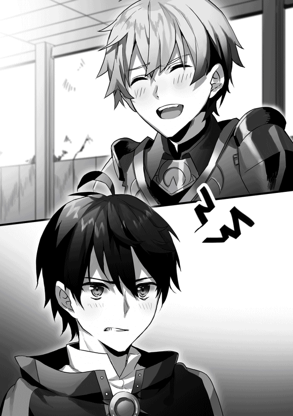

| 【合本版1-3巻】算数で読み解く異世界魔法 | |
| 扇屋悠 | |
| TOブックス (2019) | |
※本電子書籍は「算数で読み解く異世界魔法」１〜３巻を１冊にまとめた合本版です。
Illustration えいひ
Design BEE-PEE
プロローグ：人間は誰でも数字を持っている、と僕は思う。
足音を殺して、自分の部屋を出た。
きぃ......、とかすかな音が明かりの落ちた廊下 に響 く。部屋は二階にあった。階下のリビングから家族が談笑 する声が聞こえてくる。僕はパーカーのファスナーを喉元 まで上げると、足早 に階段に向かった。ぎぃぎぃと階段が軋 んで、一瞬 だけ談笑の声が途切れた。すぐに再開される。
そして僕は光に包まれた。
階段を下り切った僕の目の前に広がるのは、現実の光量よりもはるかに眩 しい光景。母さんと妹が互いの自慢話をして笑い合っている。それを、父さんが穏 やかな表情で見つめている。明るい食卓を彩 る鮮やかな料理。理想的な家族という一幕。
ただ一つ異常があるとするなら、それはもう一人の家族である僕の存在が無視されていることだ。
父さんが、母さんが、妹が、階段を下りた僕に声をかけることはない。視線を向けることもない。認識しながらも、僕の存在は黙殺 されている。透明人間 か幽霊 にでもなった気分だ。
僕は影のようにリビングを横切り、玄関へ。靴紐 を結 んで立ち上がる。
そのとき、靴箱 の上のカレンダーを見て、あの日から一年も経 ったことに気付いた。
僕の胸を埋 め尽くすものは何もない。ただ、がらんどうの空洞 がそこに開いているだけだ。
「......こんな家、早く出てやる」
呟 きは、家族の笑い声に塗 りつぶされた。
「高橋 くん、今日もご苦労様」
レジを打っていると、店長がダンボール箱を抱えて出てきた。
「来てもらって早速なんだけど、お届けに行ってくるよ。すぐ戻る。タービン、回しておくから。変な音がしたら止めてね」
「早く修理に出してくださいよ、店長。あの音かなり怖いんですから」
「今年は厳しいかなぁ。ごめんね。店番よろしく。......ああ、こんばんは。いらっしゃいませ」
客と行き違った店長は、マフラーを首に巻いて自動ドアをくぐって出ていった。
そして僕は店番をこなす機械になった。センサーのように「いらっしゃいませ」と言い、黙々 とバーコードスキャナを動かし続ける。僕の時給は九百円。僕は二十二歳の青春の一時間を紙幣 にもならない値段で売り払う。今、ここにいる僕の価値はそういう数字で決まる。皮肉なことに、それは僕の個人的な信条ともぴたりと一致していた。
人間は誰でも数字を持っている。──僕は、そう思う。
つまり、その人の能力の数値化だ。ロールプレイングゲームのステータスやスキルポイントに僕の考え方は似ている。僕は『魅力』『身体』『知力』『固有』という四つの項目の中にそれぞれ三個ずつのパラメータを決めて、他の人を評価するようにしていた。
「こんばんわ〜」
例 えば、今、僕の目の前にゼリー飲料を差し出した常連のお姉さん。お姉さんの『魅力 』は十点中八点。かなりの高評価だ。『魅力』の中に含まれる『容姿』『印象』『会話』の三つのパラメータが高い次元でまとまっているため、この評価になる。
「......いつものを頼むよ」
比べて、毎回決まった銘柄 のタバコを買っていくこの中年男性の『魅力』はひどい。無精髭 が伸び放題だし、ボロボロのサンダルを履 いているし、服もあまり洗濯 をしていないようだ。『容姿』はかろうじて一点。『印象』も一点くらいで、『会話』の力は四点くらいだろうか。平均して『魅力』は二点だ。多くの人が興味を抱かないか、あるいはうっすらと嫌悪 するような『魅力』値になる。
だが、他のパラメータを見渡したとき、この人の評価は大きく変わる。
少し前、偶然この中年男性のスマートフォンの画面を見たときに気付いてしまった。この浮浪者 のような中年男性は、凄 まじい額を指先で動かすデイトレーダーだったのだ。僕が一瞬見たあの数字が本当なのだとしたら、『固有』の大項目に含まれる『資産』の評価には十点中で九点をあげてもいい。となると、そのお金を稼 ぎだすために必要な『器用』『知性』『知識』なんかの数値も、表には出ないだけでかなり高いはずだと推測できる。
『魅力』や『資産』『職業』はとても分かりやすい数字である一方、『知性』『知識』なんかは評価しにくい。この分かりやすさの違いが好みを決める。『魅力』が高い方がいいと考える人、『知力』が高い方がいいと考える人、いろいろだ。
僕は人と関わるとき、できるだけ多くの項目を評価したいと思う。誰もが数字の集合体と考えれば、どんな人を相手にしても動揺 することはない。接客業には大いに役立つ。任侠 映画に出てきそうな顔の人も、ヒステリックな人も、そういう数字を持ってるってだけだ。
「............高橋？」
客がはけて一息ついていた僕は、客の声に少し慌 てて顔を上げた。僕が慌てたのは、声の主がネームプレートを読み上げたのではなくて、僕の顔を見て名前を呼んだような気がしたからだ。
「やっぱりそうだ。高橋だよな」
その男の顔を認識した瞬間──僕は電源を切られた機械のように動きを止めた。
口の中が一瞬で砂漠 になる。全身の毛穴という毛穴から汗が噴 き出して、心臓が狂ったみたいに走り出す。エラーに対処することもできず、僕は男を見る。色素をぜんぶ抜き切ったような金髪も、ぶかぶかのジーンズも、仮面のような無表情も、あの頃と変わらないままで──
「分かるだろう？ 俺だよ、鈴木 だ」
「......人違いです」と僕は顔を背 けた。
「いや、一年しか経ってないんだから、さすがに間違えない。......それにしても、高橋」
鈴木がかすかに首をかしげる。「お前、こんなところで何をしているんだ？」
一年前まで、僕は自分の数字の一つを誇 りにしていた。
それは『知性』の能力値だ。
つまり、論理的な思考力や判断力、知識を処理し応用する力。この能力に、僕は絶対の自信を持っていた。それには理由がある。幼い頃から、数学者の父さんと数学の世界に魅かれ、思考する能力を鍛 え続けてきたからだ。
アルバイトをかけ持ちして生活を組み立てるようになる前、僕は数学科の大学院に居た。
日本で有数とまで言われたそのゼミに他大学から編入 してきた同期生──それが、鈴木だった。
「鈴木君ねえ。卒業論文のできがよかったから引き取ったんだけど......今日も来ないか」
それまでの人生で、僕は『知性』の項目に十点満点をつけた人物が二人いた。父さんと教授だ。教授は自分の才能を鼻にかけない穏やかな数学者だった。そんな教授が眉をひそめている。
「まあ、たしかに鈴木君は面白いんだけどね。協調性がないのはこれからの研究者にとって致命的だよ。困った困った。......とりあえず、高橋君には教室の人間を手伝っていく中で、将来のテーマを決めていってもらおうと思う。まずは私の研究から。じゃあ、これ、一週間でできる？」
それが僕の教室での最初の仕事だった。多様体に関する研究論文のうち理論を構築 する計算部分で、膨大 な数の変換が要求される。学部を出てきたばかりの学生には一週間でも厳しいだろう。もちろん僕は単なる学生ではなかった。父さんに教わったこと、僕が積み重ねてきたもの、すべてを注ぎ込んで効率的にアプローチした。徹夜 をして、僕はそれをたった一晩で完成させた。
徹夜明けのどこかハイなテンションのまま、僕は教授室に入ろうとした。
「あ。すみません、講座の人ですか？」
背中にかけられた声に振り返る。色素を全部抜き切ったような金髪の男が、ぼんやりとした無表情で突っ立っていた。『魅力』は三点だな、と僕は断じる。──それが鈴木との出会いだった。
鈴木は教授に呼び出されたはいいものの、部屋が分からず右往左往していたらしい。僕はそんな鈴木を引き連れ、右手に成果を凝縮したノートを抱えて、教授の部屋をノックした。
「鈴木君」と教授が固い声で言った。「ここは院だ。いつまでも学生気分でいてもらっては困るよ」
「すみません」と鈴木は感情をうかがわせない口調で返事をした。
「ちょうどいい。君たちには、同じ部分をやってもらう。一週間だ」
教授は論文のコピーを取り出し、鈴木の鼻面に突きつけた。受け取った鈴木がため息をついている。僕は内心に笑 んだ。悪いけど、僕はもうすでに終わっているのだ。
「......一週間というのはさすがに冗談ですよね？」と鈴木は無表情のまま言う。鈴木のそれは目上に対する言葉遣いではなかった。教授は目を細めて、無言で鈴木を見ている。
「......ああ。なるほど。誤解されているんだな。教授、訂正をさせてください」
鈴木は肩をすくめて、悪 びれる様子もなく言った。
「──もう終わっています。頭の中で、ですけど」
瞬間、部屋が凍りついた。
「うん。黒板もあるし、チョークを借ります」
鈴木は十分ほどかけて黒板に数式を書いた。七分くらいまで、僕は半笑いで見ていた。不可能なはずだ。到底人間一人の脳で処理できる計算の量ではないし、鈴木の手順は見当違いの方向に進んでいるように見えた。
「これが結論になりますね」
なのに、鈴木がものの十分でたどり着いた最終行は、僕の結論と同じだった。教授が満足げに頷く。呆然 とする僕のノートを覗き見た鈴木が、さっきまでの僕と同じ半笑いで言った。
「正しいは正しいが、なんというか......、間抜けな解き方だな、これは」
そういう出来事が一ヵ月の何度もあって、理解させられた。
僕には数学の才能がない、という事実を。
僕は、努力し続けることで十点満点の能力値を手に入れることができると思っていた。それは間違いだった。皮肉にも他人を評価し続けてきた観察眼が教えてくれた。鈴木の『知性』は測定不能 だ。父さんと教授の『知性』にも十点満点をつけていたけれど、それも同じで、単に測定不能だっただけだ。僕を一として、彼らはいったいどれほど優 れた『知性』をもっているのだろう......？ 分からなかった。ただどこまでも広い溝がそこにあることしか。
そして──僕は大好きだった数学の世界に背を向けた。
その日、僕の足取りは重かった。自分の口で伝えなければならなかった。僕に期待をかけてくれていた、父さんに。いつもよりも何倍も重い扉 を開け、家に入る。父さんの書斎 のドアは開いて、明かりが漏 れていた。ノックをした。──次の瞬間だった。
「やめたのか？」と僕が声をかけるより早く父さんが言った。
父さんはいつものように机に向かって、ノートに鉛筆を走らせ続けている。
「大学院をやめてきたのだろう？ 教授から連絡があった」
「......父さん、僕は──」
「罪悪感を抱く必要はない。こうなるのは分かり切っていたことだ 」
今度こそ、僕の世界が凍 りついた。
「お前の数学は最初から最後まで九点止まり だった。......見てみなさい」
父さんは顔を上げることなく、入り口のそばのコルクボードを指差した。
「それが十点満点の美しい数学だ」
英語の論文だった。僕が今日まで居たあの教室の署名が押されている。筆頭著者はE.Suzuki。
────鈴木。
「......はは......」と、乾いた笑い声が喉を揺らした。
期待なんてされてなかったのだ。
いや、父さんが期待なんてするはずなかった。
どうして気付かなかったのだろう。
人間は誰でも数字を持っていると僕に教えてくれたのは、父さんだ。僕が父さんの『知性』に点数をつけていたように、父さんも僕に点数をつけていた。それだけじゃなくて、最初から最後まで、冷徹に、冷酷に、見抜いていたんだ。僕に数学の才能がないことを。
父さんは手を止めることなく、はっきりと言った。
「出ていきなさい。こうなってしまったお前と話すのは──時間の無駄 だ」
「返事くらいはしたらどうだ？」
鈴木の無表情は一年前と変わらない。石ころを見るような表情だった。
「......ッ」唇 を噛 む。
人間は誰でも数字を持っている。
そう信じていた僕自身が一番よく分かっているのだ。
人生の全てを数学に捧げてきた今の僕には、石ころのように何の価値もない。
『魅力』は普通以下、『資産』だってこれっぽっちもない。『知力』は数学に偏 りすぎている。家を出るための資金をバイトで稼ぐ今の僕を総合的に評価するなら、十点満点で三点がいいところだ。父さんは自分にとって価値のある人間とだけ付き合う。だから僕を切り捨てて、黙殺する。父さんはいつも合理的だ。破綻のない証明と一緒だ。だれでも納得できる。......僕は──
「高橋、さっきから気になっていたのだが、これは何の音だ？」
鈴木の言葉も、ごうん、ごうん、と店内に響き始めた異音も、僕の意識の表層を通り過ぎていく。
──父さんと同じ知性の水平線にいつか立ってみたかった。でも、今の僕は一時間あたり九百円でレジを打つ機械だ。一方で、数学に真面目 じゃない鈴木があっさりと十点満点を獲得 する。
その違いは、『知性』の能力値の欄に神様が気まぐれで書きこんだ数字の大小でしかない──
「高橋ッ!! 」
肩を掴まれる強い力で僕は我に返る。僕はレジに指をかけた姿勢で硬直していた。
腹の底に響くような異音と振動がコンビニを揺らしている。
「............え？ なに、この音」
瞬間、手のひらの中でスキャナが発する赤い光が消えた。同時に、店内の蛍光灯が一斉に光を失う。鈴木が慌てて自動ドアに駆 け寄ったけれど、ドアは反応しない。
オレンジ色の光がバックヤードの方で見えた。
熱風のようなものがたしかに僕のエプロンを揺らした。
あ、タービンだ、と気付いたそのとき──目の前でリノリウムの床が強烈 な閃光 を放った。
「は？」と言った鈴木があっという間に膨れ上がった光に飲み込まれて消えた。僕も同じ光に包まれる。全身を引き裂 かれる痛みは、しかし、一瞬で途切 れた。
床の破片 にミキサーされ、爆炎 に焼き尽くされた僕の肉体は、あっけなくこの世から消滅した。
『────────......高橋さん』
僕は暗闇 の中で目を開けた。開けたつもりだった。けれど、僕の意思に従うはずのまぶたの存在も、光の気配も、感じることができなかった。意識だけが底抜けに広がる暗闇の中を泳いでいる。
『大丈夫そうですね。高橋さん、先ほどなにがあったか覚えていますか』
「......僕は......」
コンビニが、爆発した。
原因は、......たぶん、タービンだ。あのオンボロタービンが爆発したに違いない。そして──僕は死んだと思う。その確信があった。爆炎の熱さも絶望的な痛みも僕は覚えていた。あれほどのダメージを受けて、人間の肉体が機能を維持できるはずがない。
『その通りです。高橋さんの肉体は死亡しました』
じゃあここ はなんだ？ 僕はだれ？
『ここは一時的な場所です。高橋さんはこれから異世界に転生します』
「......は？」
異世界、転生......？ 生まれ変わるってこと......？
だが、声はさらに、頭が痛くなりそうなセリフを続けた。
『──高橋さんには、真の大魔法使いとなり、『魔法の国』を救っていただきたいのです』
「............は？」
『戸惑いも了解可能です。ですので、どうか冷静に。......消滅するはずだった高橋さんをこうしてお呼びした理由は二つあります。一つ目は、高橋さんには数に関する才能があることです』
「ふざけるな！ 僕に数学の才能は──」
『あります 。これから転生していただく世界の標準と比べれば圧倒的な才能です』
むずり、と心が揺れる音が聞こえた気がした。
『その世界の魔法は発動に際して厳密な算術の運用が必要になります。また、ぼくが差し上げる祝福の力を使いこなすにも算術の力は欠かせません。その点、高橋さんは文句なしの適任です。
そして、もう一点。──隣国の『鉄器の国』は転生人を用意し、この世界の覇権を握 ろうとしています。『鉄器の国』が戦場における切り札として転生させる魂は、鈴木さんのものです』
目があったら、僕は見開いていたはずだ。「......鈴木、だって？」
『はい。『ミシア神』はおそらく、彼の冷徹な思考能力に魅力を感じたのでしょう。ずいぶん前から目をつけていたのかもしれません。そして、高橋さんはそんな鈴木さんを知っています。あなたは数字を操 る適性があり、かつ、敵の精神的な弱点を攻撃できる可能性のある唯一の人物なのです』
僕は自称精霊の言葉をほとんど聞いていなかった。心は冴 えわたった刀のように凪 いでいる。
「その世界では──数学の実力が、魔法の強さを決めるってことなの？」
自分で言っても馬鹿らしいそのセリフに、自称精霊は大真面目の返答をよこした。
『正確には、四則演算のスピードが単位時間あたりの火力を決定します。そこにぼくたちの祝福を上乗せしますので、高橋さんは、文句なしで、最強の魔法使いの素質を手に入れるでしょう』
その言葉は鋭いフックのように僕の心に引っかかった。素質。人間なら誰もが持っている数字。精霊は圧倒的な数字を一つ僕に与えてくれるのだと言う。才能という名前の数字を。
ああ、僕は──......それがほしい。
『ご承諾、ありがとうございます。早速、作業を開始しますね』
大判の本を閉じ合わせたときのような、ばぢん、という音がした。
『これから言うことをよく聞いてください。......高橋さんには『魔法の国』の王都に住まう高名な大魔法使いの弟子の青年に転生してもらいます。憑依 、というのがより近い表現でしょうか。もとの肉体の記憶も保持されているので、少なくないショックがあるかと思いますが、ご容赦ください。そして、その時点から、我々の力の一端を肉体に付与します』
「鈴木も、こんなふうに神から力をもらってるの？」
『はい。詳細は不明ですが、とにかくすさまじい出力の異能使いです。くれぐれもご注意を』
すさまじい出力の異能使い。僕はとりあえずそのフレーズを脳内に刻み付けた。あいつはその力をすぐにでも使いこなし、自国のために活用するだろう......と真面目に考えている自分に少し驚く。
同時に別の興味も湧 いてきた。僕に与えられる力はどういう性質なのだろうか。
『対訳。それが、お渡しする力の名前です。魔法使いにおける最強の反則です。これから説明を──ッ!? 勘付かれた!? 高橋さん、意識を集中して！』
瞬間、すさまじい頭痛が僕を襲った。ぐちゅぐちゅぐちゅ......！ と、チューブから何かを絞り出しているかのような大音量が頭の中に響く。暴れまわる。気持ち悪い。
『高橋さん、ごめんなさい。転生対象の情報を設定し切ることができそうにありません。どんな境遇に生まれ変わっても忘れないで。『対訳』とは言葉を、魔法を読み解く力です。魔法とは──』
そこで、ぶつり、と声が途切れた。
僕の意識は急速にどこでもないどこかへ溶けていく──
「こっちは人間 か？」
しゃがれた老人の声で僕は目覚めた。
薄目を開ける。ピントが合わない視界は全体がぼんやりと緑色で、光の粒が輝いている。空気には土の匂いが混じっていた。『森だ』という冷静な観察と、『......ほんとに来ちゃったのか』という半信半疑が同居している。
異世界転生、記念すべき一秒目は、そうして幕を開けた。
「丸い耳でしっぽはなし。人間 じゃの」
重力に抗 う感覚と一瞬の浮遊感。僕は宙に持ち上げられているようだ。
「〝識─二の法 対価は二つ〟。............な、なんじゃ!? この回路 の太さは!? 」
「だぁ」声が出た。自分の喉からだ。「だ、ぁう」
なるほど。どうやら僕は赤ちゃんになってしまったらしい。
「赤子のうちからこれほどの太さがあれば......あるいは──」
ごつい手のひらの間で僕の身体はひっくり返される──と、白い口髭を蓄 えた老人が居た。
「お主は、魔法使いになるか？」
ボサボサの髪の毛には白髪がまじり、くたびれた黒のとんがり帽子をかぶっている。老魔法使いっていう単語のイメージが歩いているみたいなその老人は、すぐに表情を曇らせた。
「手触りのよい布じゃ......。二人とも、貴族様の捨て子なのであろうな......」
二人......？
老魔法使いは僕の身体に巻き付いていた布に触れ、その手で僕の額を撫 でた。
「......お主はこの森で拾われた。ならば、お主もまたピータ村の住人じゃ。我が村は......まあ、辺境にあるし、貧しく小さい。じゃが、赤子に布だけを与えて捨て置くようなことは、せぬ」
小さな黒の瞳が優しい光をたたえてこちらを見ている。
「わしはゲルフという。隠居 の身じゃが、魔法の基礎 くらいは授けることができるじゃろう」
瞬間──僕は舌打ちをしそうになった。
王都の高名な魔法使いの弟子って話だったのに、ど田舎の老魔法使いに拾われてしまったらしい。しかも赤ん坊として。僕は転生を仕組んだ精霊の手際の悪さに呆 れた。雑すぎる。鈴木がもし青年に転生しているのだとしたら、数年間動けないこの状況は、比べ物にならないくらい不利だ。
だが、僕の胸には大きな炎が燃えていた。
精霊の言葉を信じるなら、僕は圧倒的な魔法への適性と精霊の祝福 を持ち合わせている。数字を操る力が魔法の威力を決める世界で、僕の実力は折り紙付きだ。僕には二十二年間積み上げてきた思考回路もある。持っているエネルギーを魔法という一点に注ぎ込んでやる。
「なんじゃ......。お主、笑っておるのか？」と老魔法使いが顔をほころばせる。
笑ってしまうのは当然だった。だって、僕はこんなにも嬉しいのだから。
一度は諦めた数学の実力を駆使 して、僕は偉大な魔法使いになる。
そしていつか──この力で、あいつを見返してやるのだ。
第一章：「お前にとって悪い話ではないぞ」と老魔法使いは僕に言った。
小屋の中は暗かった。
視界も。そして、雰囲気 も。
蝋燭 の火がゆっくりと揺らいで、二人の大人の影が増幅される。しんしんと降り続ける雪が小屋から音というものを根こそぎ奪っていた。僕はその異様な雰囲気にあっさりと呑み込まれた。
老魔法使いゲルフが険しい表情で僕を見下ろしている。
隣には、緑色のコートを羽織 った騎士の姿。
......ええと、これ、どういう状況なんだ？
『六歳の儀式』という名前だけは知らされていた。けれど、子どもたちにその内容は知らされていなかった。『六歳の儀式』を終えれば、ようやく──待ちに待った魔法の教えを授かることができる。僕はてっきり杖か何かをもらえるのだと思っていた。だから、先に呼び出された子どものたちの姿すら見つけられず、戸惑う。
あいつらはどこに行ったんだろう......？
同い年の四人の中で一番最後に呼び出されたのが僕だった。
「ゲルフの家、タカハ」
騎士が丸まった羊皮紙 を引き伸ばしながら言う。
「この者はお前の父であり、お前はこの家の子どもだ。間違いないな？」
......間違いは、ない。
けれどこの場には『返答次第では首を刎 ねる』と言わんばかりの緊張感があった。
ゲルフを見る。黒衣の老魔法使いは険 しい表情のまま、かすかに顎 を引いた。
「はい。間違いは、ありません」
「──では、奴隷印 を刻む」
そう言って、騎士は大きな金属の道具を取り出した。騎士がなにかを呟くのに合わせて、その端が光を放った。浮かび上がった文字はこの世界の数字だった。『十五─八─六─十三─二』。
──って、ちょっと待て。奴隷印？ 奴隷って言った......？
「四大公爵がお一人、ライモン＝ファレン＝ディード閣下の名のもとにお前は奴隷である。三年後、魔法を使えるかどうかに応じて、魔法奴隷と肉体奴隷の待遇を分ける。......では、右腕を差し出せ」
「......すまぬ、タカハ」とゲルフが言った。
「すまぬ？ なにが──？」
ゲルフの大きな手が呆然とする僕の左腕を掴む。手首の辺りと、肩の辺りだ。節くれだったゲルフの両手は万力 のように僕の腕を固定していた。騎士が金属の道具を近づけてくる。
そのとき、僕はようやく気付いた。
──光を放つその部分が驚くほどの熱を持っているということに。
その意味を僕はゆっくりと理解した。
「ゲルフの家の息子、タカハ」
「......待って！ 待ってください！ お願いだからッ！」
息が詰 まる。冷 や汗 が吹き出す。なのに、左腕はぴくりとも動かすことはできない。
「お前はこれより、奴隷だ」
騎士が言ったのとほぼ同時。
場所は肩の近くだった。
──じゅ、と絶望的な音がした。
「ああああああああああああああああああああああ────ッ！！！！」
気絶するまでのその数秒は、永遠だった。
「......ふざけんなよ」
六歳になった僕は悪態をつきながら、村の南東にある『半湿原』の入り口へ向かっていた。
森の中でも夏の太陽は容赦 なく僕をあぶってくる。額をぬぐってもぬぐっても、とめどなく汗が目に流れ込む。背負っている籠 は粗雑 な作りで、体が揺れるたびに木のささくれがチクチクと背中に刺さるし、麻 の紐が肩に食い込んでくる。
「あッ！」
茂 みに隠れていた岩に足をとられ、僕は前のめりに倒れた。とっさに突き出した両手がべったりとした土にもろに突っこんで、体の前面のティーガまで泥まみれになる。同時に、左の肩の辺りに電撃 のような痛みが走った。
......マジで、痛い。
『六歳の儀式』から一巡月は経つのに、左腕に力を込めると、奴隷印が痛む。僕は意識から必死にその存在を追い出した。数匹のミミズが皮膚の中でのたうちまわっているようなかさぶたが、僕の左肩にはある。僕の想像力を超えた最高のプレゼントだった。
両手を近くの木の幹にこすりつけ、歩くのを再開する。
目的地はすぐそこだ。『半湿原』の低い木々から集めてきたシーハの実が大きな山を作っている。その山の前で、黒衣の老魔法使いが黙々と木の実のヘタを落としていた。
「──もう二往復じゃ、タカハ」
振り返ることなく放たれたその言葉に──僕は理性の蓋 が飛ぶ音を聞いた。
「やってられるかよ！ こんなこと！」
僕は背負っていた籠を老魔法使いの足元に投げつける。
ゲルフはゆっくりと振り返り、黒い小さな瞳で僕を見た。
その表情の中に何の感情も見つけられなくて、首筋がちりちりと焼けるような感覚がする。
「ならば今日はもうよい。戻りなさい」とゲルフは小さく言った。
「......ッ」
僕はつま先を返し、一気に走り出す。岩がちなエリアを駆け戻り、森の中を風のように走る。一度、僕は足を止めて振り返った。どこまでも深い森がそこにあるだけだった。
手のひらをきつく握りしめる。
叫ばずには、居られなかった。
「なんで......！ こんなことになってるんだよ......ッ！」
僕は六歳になった。
自らを精霊と名乗った存在によって異世界に転生させられてから、六年。
僕を待っていたのは輝かしい才能が導く英雄物語──じゃなくて、辺境 のしみったれた小村と奴隷の身分だった。
転生後の生活を一言で表現しよう。
最悪。
まず適応に苦労したのは、食事だった。不味 い少ない安定しないの三拍子。ピータ村の食料事情は村のとり囲む森にほとんど依存していた。そこら辺に生えている野草が食卓の色どりで、不気味な形の木の実が主食、獣 の肉がお祝いのときに出てくる贅沢品 、ということになる。ファンタジーと言われて想像する中世の世界観よりもう一段階前──古代に分類される感じだろうか。ピータ村の人々には農業という概念 すらないのだ。
さらに、ピータ村は奴隷の村だった。この『魔法の国』は王族・貴族と彼らが直轄 する騎士団によって治められており、一般的な国民は奴隷と呼ばれ、厳しい税をかけられている。......これもつい先日知った設定なんだけどさ。
まあ、その辺の事情は実際どうでもいい。
なによりの問題は、魔法のことだった。
転生してから六年という歳月を経 たけれど、僕はこの世界の魔法について、まだ、なに一つ理解できていなかった 。
ピータ村には掟 がある。『魔法を教えるのは六歳から。唱えるのは九歳になってから』という魔法の教育に関する厳密な掟だ。『それでは遅すぎる』と思った僕は自分の意思で動き回れるようになった一歳の頃から、魔法に関する知識を仕入れようとありとあらゆる手を打った。
ゲルフはそれが気に入らなかったらしい。
掟を守るゲルフは執拗 なまでに僕が魔法の知識を得ようとすることを邪魔してきた。家を出ることだけでなく、魔法の教えを受けている年上の子どもと接触する機会さえも潰 してきた。
だから、魔法に関することで僕が知っているのは、転生のすぐ後に偶然聞くことができた大人同士の会話だけだ。
一、魔法の発動にはマナというエネルギーを使うこと。
二、呪文は精霊言語という別の言語で唱えること。
その他はなにも知らない。
僕には転生人としての思考的なアドバンテージがある。裏を返せば──この六年間、僕はそれをまるっきり無駄にしてしまったのだ。それどころか今も無駄にし続けている。
「......くそっ！」
さらに、僕の苛立ちを加速させるのが『お手伝い』の存在だった。
この村では、子どもは守られるだけの存在ではない。使えると判断されたその瞬間から大人になるための助走期間──村の仕事の『お手伝い』が始まる。男の子は狩猟団 を手伝い、女の子は村の近くで行う採集や野草摘 み、機織 りなどを教わる。
その手伝いの裁量は家長に一任されている。
つまり、僕に魔法を授けたくない老魔法使いゲルフに。
「なんで！ 僕ばっかり！」
僕が日々ゲルフに命じられる手伝いの量は、他の子どもに比べてかなり多い。現在実行中の『シーハの実運び』は大人の狩猟団員でも嫌がるような重労働だ。高低差がある道を一キロほど歩かなければならないことが理由の一つ。もう一つの理由は、──虫だった。
「......ぐっ」
背中を小突かれるような感覚に、僕は舌打 ちをする。集中してないとダメだ。
いつの間にか、ぶんぶん......ッ、という大量の羽音が僕を包んでいた。セファリムだ。巨大なコガネムシのようなその虫が数十匹の編隊 を組んで僕の周囲を飛び回っている。『半湿原』までの道にはこいつらの巣があって、確実に襲われるのだ。
襲われる、と言っても全力でタックルをしかけてくるだけだから大きな危険はない。だが、この道を木の実を満載 したカゴを抱えて通り抜けようとすると難しい。そういう意味で、『シーハの実運び』は大人たちもやりたくない仕事ランキング上位に食い込んでくる。六歳になってから、それを僕は一手に任されていた。大人たちは狩猟用の鎧 を身に着けて通りすぎることができるけれど、僕は全部避 けることにしていた。そうしなければカゴを取り落としてしまうからだ。
六歳児をこれほどこきつかうなんて、正気とは思えない。
......まあ、最近は僕も慣れてきたけど。
「とにかく、全部ゲルフが悪いんだ！ 全部！」
魔法のことも、無茶な仕事を押しつけられるのも、全部。
「ゲルフに拾われなければ、僕は今頃──！......ッ」
黒衣の老魔法使いを非難しようとした言葉に僕は思い出させられる。
ゲルフが拾ってくれなければ──僕はあそこで死んでいたに違いない。
精霊の手違いで赤ん坊に転生した僕が『捨てられていた』という場所に、いつか連れて行ってもらったことがある。北の果ての森。木の実も獣も少ないあの一帯はピータ村の狩猟団が敬遠する森だった。ゲルフが通りかかったのは偶然以外のなにものでもない。王都の大魔法使いのもとに転生できなかったことがひどく悔やまれる。てか精霊様ポンコツすぎ。
「......うざいな、お前ら」と言いながら、ぶんぶんと飛びかかってくるセファリムの群れをかいくぐっていく。苛立 ちは頂点に達しつつあった。
──ピータ村の村人たちは全員が魔法使いだ。
魔法使いで、奴隷だ。
率直に、ゲルフがなぜ僕に魔法を教えてくれないのか理解できない。
『............な、なんじゃ!? この回路 の太さは!? 』
転生したとき、ゲルフは僕の魔法の才能を認めていたはずだ。幼い頃から物事を教え込んだ方が上手くいく、というのは、たぶんどの世界でも共通している認識だと思う。ゲルフはそんなようなことを口にした上で、僕に大量の雑用をさせているのだ。ひどく感情的な人間なのだろう。
子どもには魔法を教えない、という厳しい戒律 で縛 っておきながら、ピータ村の魔法使いたちは日々の生活に魔法を活用してるわけでもなくて......いずれにせよ、この世界の文明レベルはひどく低かった。お金っていう概念も無い。塩を持って来る商人とは物々交換。お隣のソフィばあちゃんとも物々交換。二十一世紀を生きた僕は絶望する。
そもそも、と僕は思う。
仮に、お金という仕組みを誰かが作ろうとしてもあまり広まらなかったはずだ。
この世界の数字には、ある致命的な問題があった。信じられないことに──この世界の言葉には十七までの数字しかない。
一から十七にあたる十七個の数字を駆使してこの世界の人たちは数を表現している。十八は『十七と一』、五十三は『十七が三つと二』となる。零 という概念もないし、負の数も、少数も分数も無理数も虚数 ももちろんない。
「こんなの、どこで数学使えっていうんだよ......」
ピータ村の朝は太陽よりも早い。
物音に目を開け、体を起こすと、丸太で組んだ小さな家の二階が僕の目の前に広がる。キャンプ場にあるコテージなんかとは比べるのもおこがましいほどに、粗末で小さくて不衛生な家だ。
空がゆっくりと明るみ始めている。前世で徹夜をしてこういう空を見たことは何度もあるけれど、こっちではこの時間に起床するのが平常運転だ。燭台 を灯 しておくための油は非常に高価だから、僕たちの生活リズムは太陽と一致している。
ゲルフが火をおこしてお湯を沸 かしている音が一階から聞こえてきた。今日は狩りに行くのだろう。あの老魔法使いは、狩りの朝だけはいつもしっかり食事をとる。
僕は自分の毛布をたたみながら、隣で眠りこける少女に声をかけた。
「ラフィア。起きなよ。朝だよ」
「......むにぃ〜......」
少女は朝日から逃げるみたいに毛布の中に頭を隠して、丸くなった。
「ラフィアだってもう六歳になったんだから」
ためらいなく毛布を奪い取ると、少女の体温が残ったそれをたたむ。
「............すぅ」
返ってきたのは感謝の言葉じゃなくて、静かな寝息だった。......僕はため息をつく。
ようやく顔を見せた朝日が、少女の頬に光の筋を落とした。
照らされた頬 は産毛が輝いていて、マシュマロのように柔 らかそうだ。手入れなんてしていないはずなのにベージュ色の髪はつやつやと輝いている。閉じ合わされた睫毛 は長い。
「......ん〜......」
眩しさから逃げようとした拍子 に、彼女の耳がぴょこりと左右に揺れた。ラフィアの髪の中から真上に 伸びているのは、髪と同じ色の柔らかい産毛 に覆 われた『うさみみ』だった。
......うん。
ラフィアの耳の形を表現するのに『うさみみ』以外の言葉を思いつかない僕が悪いのだけれど、見間違いでは決してない。ラフィアは兎人族 という種族の女の子。だから、ウサギによく似た形の耳を持っている。
この世界には人間とひとくくりにされる生き物のなかにも種族がある。転生した当初、とんがった耳をもつ妖精種 と遭遇したあたりまではまだ若干の感動があった。けれど、慣れというのは恐ろしいもので、猫耳 を生やした中年ダンディなおじさんや、うさみみを生やした屈強 な大男に遭遇したりしているうちに、どうでもよくなってしまった。
『容姿』は数字の一つにすぎない。それも、決して本質的ではない数字の筆頭だ。村人たちは基本的にみんなヨーロッパ系の髪色と顔立ちをしていて、僕の黒髪と黒目のセットは珍しがられる。村人と話すときはいちいちその話題から始まるから、かなり鬱陶 しい。
ラフィアがもぞもぞと身体を動かした。なんとか太陽の光から逃れようとしているようだ。その口元は緩んで、少しよだれが出ていた。......相変わらず間抜けな顔だな、と僕は思った。
ラフィアは、僕が転生したのと同じ日にゲルフによって拾われた女の子だ。
僕を拾うよりも少し先にゲルフはラフィアを発見していたらしい。大人たちの会話を聞く限り、この国で捨て子というのはよくある話なんだとか。食糧 の安定供給がされない以上、望まれない子どもの誕生は死活問題だ。それで、子どもを捨てる。理屈として納得できる。前世の家族が数学で挫折 した僕を見限ったのと似ている話だ。
「──起きなってば」
前世の家族のことを思い出した僕の口調は少し荒っぽくなった。
「やぁ......」
こちらの世界の姉さんは嫌がるように顔を背けた。......ああもう、ほんとに面倒だな。
「勝手にしなよ」
僕は責務をあっさりと放棄 して、一階に下りる。黒いローブ姿のゲルフが鍋で木の実を煮込んでいた。やっぱり今日は狩りか。てことは、今日の『お手伝い』がハードモードになる。その想像をして、僕は朝から憂鬱 になった。
こちらを振り返らず、老魔法使いは口を開く。
「ラフィアはどうした？」
「起こしたけど起きない」
「そうか。......食事の前に呼びにいくとしよう」
会話は終了。
これと全く同じものが三日に一度くらい繰り返される。三日に二日は、会話もない。
家族なんてそういうものだ。義務で付き合うだけの最も近接した他人。血のつながっていた前世の家族でさえそうだったのだから、老魔法使いと拾い子二人の僕たちはなおさらだろう。子どもがいないゲルフにとって僕やラフィアは将来の労働力なのだ。僕に至っては、現在進行形で重要な労働力としてこき使われている。
けれど──僕に逆らうことはできない。
ゲルフはこの六年間、一日も欠かさず僕たちに食べ物をくれた。服をくれた。暖かい寝床 を用意してくれた。僕は狩りの仕方も木の実の採り方も知らないから、従う以外の選択肢はない。
大きな鍋をテーブルに運んできたゲルフが、おもむろに言った。
「タカハ、今日は狩猟団の手伝いはせずともよい」
............ん？
「今『手伝いをしなくていい』って言った？」
「うむ、今日はいい。というのも、狂暴なスィラシァの群れが勢力を拡大していてな。森の中の均衡 が崩れかけておるようなのじゃ。近隣の村と合同で、今日はその長を仕留める。そのために大人たちが出払うから、お前の面倒を見れる団員が一人もおらぬ。というわけで、よい」
「はい......ッ」
内心の僕は狂喜乱舞 していた。イノシシによく似たスィラシァという獣に感謝した。その勇敢なるリーダーにエサをあげたい気分だ。今日も明日もぜひ人間の魔の手から生き延びてほしい。無理だろうけど。
てことは......、と考える。『お手伝い』が始まって以来、一日完全にフリーなのは久しぶりだった。よし。天気もいいし、裏山の草原で思いっ切り昼寝をしよう。そうしよう。
「代わりに。──同い年の三人に今日いっぱいかけて算術を授けよ」
「......え？」
言葉の意味を理解したくない僕を置き去りに、ゲルフは冷たい口調で続けた。
「もう各家には話をつけてある。朝食をとったらすぐに来させる、とのことじゃ。十七を一度超える足し算と簡単な掛け算まででよい。できるな？」
「もちろんできるけど、算術って──」
「お前にとって悪い話ではないぞ、タカハ。お前たち全員が基本の算術を使いこなせるようになれば、お前が待ち焦 がれていた、魔法の教えを始める」
今度こそ、訊 き間違えたかと思った。
だが、老魔法使いの視線は真剣だった。
「魔法を、教えてくれるの......？」
「うむ、掟の通りにな。昨日、プロパがようやく六歳となった。お前たち四人にはわしが魔法を授けることになっておる。その前に算術を教えねばならぬが、それをお前に任せたい。全員に算術が身につけば、明日にでも魔法の教えを始めることもできるが......さて、どうする？」
ゆっくりと、僕の心は歓喜 に震えた。
ついにこのときがきたのだ。待ちに待ったこの瞬間が......！
魔法があれば僕は手に入れることができる。誰にも負けない、最強の実力を......！
「任せておいてよ、ゲルフ」
僕はキリッとした口調で言った。
ゲルフは対照的に苦い物を噛 んだような表情になったけれど、僕はゲルフの表情なんてどうでもよかった。魔法への期待が加速して、僕の神経は高ぶり続けていた。
「ああ。......頼むぞ、タカハ」
──一時間も経たないうちに僕は猛烈 な後悔にさいなまれていた。
興奮のあまり忘れていた事実が目の前に突きつけられる。
はっきり言って、僕は子どもが嫌いだった。
「せつめーがヘタなんだよバーカ！ バカタカハ！」
算数の問題が解けない苛立ちを僕にぶつけてくるのは、妖精種 の少年だった。名前はプロパ。くりくりした青い瞳とつやつやした金髪を指して、村人たちからは『王子様』と呼ばれている。僕と同じ六歳......なんだけど、それ以前の問題として、同じ人間だとはとても思いたくなかった。ひいき目に見ても小猿 だ。こいつは猿なのだ。こいつは猿こいつは猿──
「プロパ、いい？ もう一回言うから、これでいい加減理解して。てか理解しろ。十二に九を足したら十七を超えるだろ？ で、何個はみ出すかを考えるんだ。この木の実の殻 で──」
「わけがわかりませーん！」
「オッケー、殴 るわ。殴ればそのダメな脳みそが少しはましに動くかもしれないし」
「うっわー、タカハやっぱりバカだなー。頭叩けばバカになるんだぞ？ 知らないんだ。だってさ、叩いて頭よくなるんならみんな自分の頭叩くじゃん。そんなことも想像できないんだな......」
「なんで──！ 僕が──！」
たぶん、今の僕は人に見せられないような顔をしている。
僕は大人、こいつは猿。僕は大人こいつは猿僕は大人こいつは猿──
「ねえねえ......タカハー」
僕の名を呼んだのは、間延 びした少女の声だった。僕はさっと営業スマイルに切り替える。
「マルム、できた？」
「できたよー」
マルムは、にへら、という擬音 が聞こえそうな不思議な笑い方をした。いつも眠そうな茶色の目と茶色の髪をもつマルムは猫人族 だ。つまりねこみみ少女。眠そうなねこみみ少女を想像してもらえば、おおよそマルムの見た目に収束すると思う。
ざっとマルムの羊皮紙をチェックする。──結果は、予想通り。
「はい。たいへんよくできました。満点」
「やったー！」
「マルムは今日の分終わりだね。お疲れさま」
「......あのねー、タカハー」
くいくいっと袖 を引かれて、僕は顔をもう一度マルムに向けた。
マルムはエサを求めて人間にすり寄る野良猫がそうするみたいに、小さな両手を僕の左腕に絡めてきた。ティーガのすそからはみ出した長いしっぽが不安げにゆらゆら揺れている。
「もう少し難しいのー......やってみたいんだー」
「うーん」
......正直、面倒だ。
僕に得はない。だって、マルムはゲルフに言いつけられたノルマを達成しているのだから。
けれど、マルムの真剣な視線から逃げることはできそうになかった。......仕方ない、か。いずれにせよ、もうしばらく小猿の相手をしなければならないし、向上心があるのはいいことだ。マルムは引き算と掛け算をすぐできるようになったから、割り算も理解できるかな。
「分かった。問題作るからちょっと待ってて」
「タカハー、ありがとー」
「......ううう、わかんないよー」
マルムの向こう。形式上は僕の姉にあたるラフィアががっくりと崩れ落ちた。ベージュ色の髪はぐちゃぐちゃになって、同じ色のうさみみもくたりと垂 れ下がっている。
「おっ、オレがっ、教えてあげよっか......？」
プロパが言葉を詰まらせながらラフィアににじり寄ろうとしている。分かりやすい猿だ。
ラフィアは顔を上げると、プロパの羊皮紙を覗 きこんで首をかしげた。
「あれ？ でもプロパ、わたしよりできてないよ？」
「......うぐっ......」
世界の終焉 、みたいな表情をしてプロパは肩を落とした。じつに分かりやすい。
僕は打ちひしがれるプロパの横から手を伸ばした。
「ラフィア、答案、見せて」
はい、と手渡された羊皮紙に視線を落とす。
授業を始めるにあたって僕が五分とかからず作ったこの問題群は、完ぺきな難易度配分で無理なくステップアップできる構造になっている。ラフィアは掛け算で手が止まっているようだ。......それだけじゃない、その手前にある足し算の部分も、計算間違いが散見された。
「うおおおおお！」とプロパが問題を解き始め、「......うるさいー」とマルムに叱られている。
「────」
この三人の中で誰が一番算数が苦手かと訊かれれば──それはラフィアだった。
僕は三人の『算数』の項目に書かれている数字を幻視する。問題を解くスピードや間違え方を見ていれば、向いている向いてないくらいは簡単に分かるものだ。
マルムはトロそうな雰囲気に反してかなり算数のセンスがいい。十点満点で九点くらいかな。
プロパは勉強を嫌がる小猿なだけで、七点くらいの理解力は持っている。本気を出せば、すぐに四則演算くらいはこなせるようになると見た。
けれど、ラフィアは違う。
ラフィアの算数の能力値は二、三点、といったところか。これは推測だけれど、ラフィアは頭の中に物の数をイメージするのが苦手だ。実際に木の実の殻を使って計算させれば間違えはない。だが、暗算させると高い確率で失敗する。
──僕は決断した。
「よし、ラフィア。君だけ特別授業」
「え？ とくべつ!? やったー！」
魔法の詠唱には算術を使う、と精霊は言っていた。そして、そのスピードが威力を決める、とも。よく分からないけれど、そういうルールなのだとしたら、計算が苦手なラフィアへの指導方法は一つだ。僕は羊皮紙に羽ペンを走らせる。
「タカハ......これ、なに？」
僕がほぼ一瞬で作成したのはこの世界における九九のようなものだった。六かける六までが一目で分かるようになっている。ちなみにこの世界は数字が十七までしかないから、三かける六が『十七と一』になり、六かける六が『十七が二つと二』になる。僕の前世の九九より明らかに難しい。
僕はそうしてできた表を、適当なリズムとメロディーをつけて読み上げてみた。
......と、これがなかなかどうして悪くないクオリティに仕上がった。
「二かける四が八、二かける五が十──♪」
六歳のうさみみ少女は間抜けな笑顔を振りまきながら、僕が教えた歌をするっと丸暗記してしまった。二回歌っただけで完ぺきに覚えてしまって、ちょっと怖いくらいだ。掛け算という概念をイメージできなくても、単純暗記のごり押し勝負ならミスのしようがないだろう。僕は自分の判断の的確さと六歳児の記憶力に満足していた。
分数の概念まであっさりと飲み込んだマルムが教える側に回ってくれたこともあって、夕方になる頃には、ラフィアとプロパもまたゲルフの言いつけた水準に到達することができたのだった。
その晩、僕は二階の窓枠に腰かけて外を見ていた。
夜風が前髪をもてあそぶのを、そのままにさせておく。
いつもであれば子どもは眠っている時間だ。
僕はピータ村の中心を見下ろしていた。こんな時間なのに、ピータ村の広場は騒がしい。かがり火が煌々 と焚 かれ、大人たちの掛け声がずっと遠くの雷鳴 のように聞こえてくる。大きな獲物をしとめた男たちが戻ってきたようだ。若い狩猟団員に指示を出すゲルフの姿もちらっと見えた。出迎える奥様方が夜食の炊き出しをしている一方で、成人した娘たちが若い男の手を引いて暗がりに消えていく。逆パターンももちろんある。古代でも人の営みは変わらないようだ。人間はこれっぽっちも進歩していない。
「タカハ......？ ねむれないの......？」
振り返る。
ティーガの襟元 をだらしなく乱し、目元をぐしぐしとこするラフィアが、枕を抱えて立っていた。口から魂が半分はみ出したような、ぽけーっとした表情だ。危なっかしい足取りでこちらに近づいてくる。
率直な疑問が頭をよぎった。なんの用だろう。
「眠れないんじゃないよ。考えごとをしてるんだ」
「どんな？」
「ラフィアに言ってもたぶん分からないこと。......いいから、君は寝なよ。また明日寝坊するから」
「ううん。ねむれないんでしょう？ おねえちゃんがおはなししてあげる」
わけが分からない。
会話してもお互いの時間を無駄にするだけだと僕は言ったのだけれど。
六歳の誕生日を迎えたあたりから、ラフィアはやたらと僕と会話をしたがるようになった。人と会話をすることが楽しくて仕方ないみたいだ。今日あったできごと、今考えていること、ラフィアは全部、口にする。聞きたくない、という僕の事情はお構いなしに。
ちなみに、六歳になるまでも、なかなか大変だった。唐突 に大泣きしたり、目を離したすきに居なくなったり、なんでも食べようとしたり、予測不能な行動のオンパレード。家を空けがちなゲルフに代わって僕が何度ラフィアを探し回ったことか。
......やっぱり子どもは嫌いだ。
「ある日、山はふと気が付きました。──」
ラフィアはピータ村に伝わる童話の一つを語り始めた。タイトルは『山と雷の大喧嘩 を収めた森の話』。だが、ラフィアの記憶は曖昧 で、結局だれがどういう意図を行動しているのかまったく分からないままに転がり、脱線 して、停止した。
「......それで、えっと......。あれ......？」
「......つまらないよ、ラフィア」
僕は視線をピータ村の中央へ戻す。
信じられないくらい大きなスィラシァの毛皮が広場に吊 るされようとしていた。
「ねえ。タカハもおはなしして？」
「だから──イヤだって言ってるんだ。分かんない？」
「......ひっ......ごめん、なさい......」
ラフィアの瞳に大粒の涙が溜まっていた。
「え......ちょ、あ......」
そのときの僕は──自分でも理解できないくらいに動揺した。ぶるぶると顔を横に振る。一瞬で一年分の目覚めを経験したような感覚だった。
大粒の涙をぽろぽろとこぼし、鼻水を垂れ流すラフィアの顔はひどい有様だった。
「......ごめん。僕が悪かった。悪かったから。話すよ」
「......ほんと？」
なんだこの疲労感。僕は肩を落とした。そうだな、僕が知っている昔話で──
「──目を覚ましたウサギが後ろを見てもカメはいません。『カメのやつはまだ麓 に居るのか』。自信たっぷりにウサギは笑って、旗の方向へ歩いていきます」
目の前では兎人族 の少女が瞳を輝かせて僕の話に聞き入っている。
僕が語り聞かせているのは童話だ。ウサギとカメ。兎人族 の彼女への皮肉ってわけではない。
「しかし、なんと旗のそばではカメがすでに待っているではありませんか。びっくりするウサギにカメは言いました。『ウサギさんがあんまり気持ちよさそうに寝ていたものですから......』。こうして足の速いウサギはカメに負けてしまったのでした。......おしまい」
「わたし、カメさんみたいにがんばる」
ラフィアは両手をきゅっと握りしめて、言った。
「でもさ、ラフィア。......ウサギが本気を出したら、カメに勝ち目はないんだよ」
だって、カメの持つ才能はひどく小さいのだから。
「そうなの......？」
「......」
僕が返す言葉を探しているうちに、ラフィアはうつらうつらし始めた。そのまま、あっという間に眠りに落ちていく。僕は寝ぼけているラフィアをなんとか布団まで連れていき、毛布をかけてあげた。
盛大に空ぶった感情が胸の中に転がっていて、僕はため息の形にして吐き出す。
「まあ、いいや」
なにはともあれ、邪魔な家族は排除 できた。
僕にはやらなければならないことがある。
明日には魔法の教えが始まるだろう。念のため、精霊がくれた祝福の性質をもう一度確かめておきたかった。そのために、ラフィアが眠るのを待っていたのだ。
精霊は転生に際して僕に超能力のようなものを授けてくれた。『対訳』。それが力の名前だ。しかも、精霊はその力を『魔法使いにおける最強の反則』と言っていた。
どうやら、その力とは、翻訳 の力 らしい。
いつ頃気付いたのか覚えていないけれど、僕の頭の中にはスイッチのようなイメージがあった。蛍光灯 の電源のような一般的な形のスイッチが僕の頭のなかにずらりと並んでいる。それは記憶のようで、仕組みのような、不思議なイメージだった。そのスイッチを選ぶことで、僕は聞く言葉という言葉を自由に操ることができる。理由もないのに僕はその使い方まで確信していた。植え込まれたイメージ。正直、気持ち悪い。
生まれてすぐの僕は、この力の性質を確かめるのにずいぶんと時間を使った。
この世界の言葉を『聞く』ことに関してはシンプルだ。今まで僕に話しかけてくれたすべての人の言葉を問題なく理解できたから。
『発音』もほぼ同じ。言いたい内容と言語をイメージするだけで、言葉を発することができる。
この世界で標準的に使われている言葉をリームネイル語と呼ぼう。試しに〈今日はいい天気ですね〉とリームネイル語で言ってみた。
「今日はいい天気ですね」
口や喉 を強制的に動かされる不思議な感覚がして、僕はリームネイル語を発していた。今までの村人たちとの会話はすべてこれによる。やっぱり便利だ。このスキル本当に便利。この世界を生きている間、言葉の壁に苦しまなくて済む。ぜんぶ意味が分かって勝手に言葉を話せるのだから。
となると──この機能をいじめたくなるのが人の性 だろう。
僕は引き続きリームネイル語のモードで〈インターネット〉と言ってみた。
「情報、知識、海、たゆたう、場所」
もう一度言ってみる。
「世界、回線、網、つながる、場所」
この場合、言葉がブレるのが、一つの事実を証明している。
当然だけれど、この世界の辞書に『インターネット』が存在するはずはない。この力は、僕のイメージというか考えのようなものを無理やり指定した言語に落とし込む、という性質なのだ。
次は〈パソコン〉にしよう。
「妄想の箱」
......違うだろ。
「個人用、電気式、汎用、計算、機」
普通にファンタジー世界を生きていくうえではなんの問題もない。
次は......数字だな。とりあえず〈零〉をチェック。
「──」
零という数字の概念は無し。たしかに「零歳のタカハくん」って言われたことはない。村の奥様たちには、いつも「第十三巡月の生まれ」と紹介されていた。
〈一、二、三......〉と続けて十七まで問題なく言えることを確認した。
そのまま僕はなにげなく〈十八〉と言ってみた。
「十七と一」
次に、〈十九〉。
「十七と二」
〈三十八〉。
「十七が二つと四」
続けて適当に思いついた〈千七百八十〉を言ってみる。
「十七倍した十七が六つと十七が二つと十二」
暗算をして答えが千七百八十になることを確かめた。この異常な翻訳はすべて、十七までの数字しかリームネイル語に存在しないという事実から納得できる。
さて、これが僕の持っているピースの全てだ。
数学に対するある程度の能力。そして、『対訳』と名付けられた翻訳の力。
この二つがどう魔法に結びつくのだろう──
そう考えながら、あくびを噛み殺した僕は自分の毛布にもぐり込んだ。
「......すぅ......。......すぅ......」
遠くもなく近くもない距離には、いつもの間抜けな表情をしたラフィアが眠っている。眠りながら笑顔なのは不気味だった。楽しい夢でも見ているのだろう。だが、その目元は少し赤かった。
耳の奥にラフィアの泣く声がこびりついていて、「......やっぱり子どもは嫌いだ」と僕は囁 いた。
その翌日。
「ふむ」
真夏だというのに、暑苦しい黒ローブ姿を貫いているゲルフは目を閉じ、腕を組む。
昨日の勉強会の成果を今さっき披露 したところだった。プロパは掛け算で一度間違え、ラフィアは暗算がひどくゆっくりだった。けれど、半日の指導で初学者をこの水準まで引き上げたのだと考えれば上出来だと思う。僕は。
さて......どうだ。
僕の喉がごくり、と鳴る。
「よかろう。みな、合格じゃ」
ゲルフは拍子抜けするくらいあっさりと言った。
「──魔法の教えをこれより始める」
第二章：「四属性を全部使えるの？」と僕は慎重 に問いかけた。
魔法の教えは毎月一回ゆっくりとだが確実に進んだ。しばらくは、取扱説明書をみんなで読んでいるような話が続く。三巡月分の話を要約すると『魔法は危険な力だから、使うときは気をつけましょうね』ということになる。
この間も僕はゲルフに個別授業をお願いしてみたけれど、案の定きつく叱られた上、お手伝い増量の刑に処された。納得いかない。
だから、その日は大きな収穫のある授業だった。
「──皆も知っての通り」
ゲルフが朗々とした声で言う。
「先日行われた『九歳の儀式』では、三人全員が魔法を初めて唱えることに成功した。回路 が細い者でも、わしの授業を受ければ魔法使いになれる。じゃが、ただ受けるだけではダメじゃ。わしの授業に加えて、お前たちそれぞれの努力が必要となる。肝 に銘 じよ。......よいな？」
「「「はい！」」」
子どもたちが一斉に応えた。見守るゲルフの目は優しい。言葉には自信があるし、穏やかな口調には安心感がある。いい先生って感じだった。
けれど、──ゲルフは僕と目が合ったことに気付くとすぐに視線を外した。
「では、プロパ」
「はいっ！」
大人たちと会話をするとき、プロパは下品な言葉を一瞬で引っ込め、元気で明るくて可愛い妖精種 の少年になる。青い瞳はまるで冬の星空のようだ。
「魔法とはなんじゃ？」
「はいっ！ 魔法は、精霊さまがあたえてくださる力です！」
「うむ、正しい」
ゲルフは黒板に七つの記号を書いた。その下にはとんがり帽子をかぶった魔法使いの絵。
七体の精霊様を示す記号から、魔法使いへ矢印が注がれる。その矢印は魔法使いの体を通り過ぎ、稲妻 や炎 として放出された。さらに、ゲルフは黒板の隙間に小さな丸をいくつも書きつけた。
「世界には『マナ』というエネルギーが満ちている。この世界の隣には『七体の精霊様』が居て、魔法使いは『願い』を精霊様に届けるために『呪文』を使う。呪文が完璧 であれば精霊様がマナを力に変えてくださり、『魔法』が発動する」
ゲルフは黒板からこっちに向き直った。
「今日から実際に魔法を使うための鍛錬を始める。まずは、マナを視る訓練からじゃ。目を閉じ、集中してみよ。光る粒、甘い匂い、かすかな音、母親の温 もり、雲の味......感じ方はそれぞれ異なる。皆、魔法を操るための回路 を持っていることは間違いない。精霊様へ至るその道が、マナの存在へ導いてくれる──」
僕は目を閉じて意識を集中してみる。満ちてるってどんな感じなんだろう？ 空気とかそういうもの？ 目では見えないってことだよね？ 音は聞こえるのか？
その瞬間だった。暗闇の中でキラキラと光るものが見えた。音のようでもあって、匂いのようでもあって、味のようでもあって、でも、やっぱり光かな。光の粒がいくつか空気の中に散らばっているようなイメージだ。
これが、マナ......？
考えているうちにその感覚が消えた。もう一度探してみるがどうしても見つからない。もどかしい。きつく目を閉じて集中しても、さっき在った光の粒を感じることができない。ゲルフと子どもたちの呼吸の音、ティーガの手触りとその毛の柔らかさ、舌に残るビムの実の果肉のわずかな苦み──それが、僕の感覚できる全部だった。
......しばらく経つと全員の集中力が切れてきた。ラフィアもマルムもプロパもうんうんと唸 っているが、どうやらマナが視える気配はなさそうだ。さっきのにしたって、本当にマナだったのかは分からない。
「マナは次第に視えるようになってくる。継続して意識し続けること。これが肝要 じゃ」
「「「はい！」」」
「続けて座学に移ろう。題は『呪文と精霊言語』じゃ」
ゲルフは黒板を持って僕たち四人の前にやってきた。これだよ、この話を待ってました。
「マルム、精霊言語について知っていることはあるか」
「はい。ええと......精霊言語は古い言葉でー、精霊さまに『願い』をとどける、言葉です」
「正しい。よって、お前たちは精霊言語を記憶する必要があるが──その前に、なぜ六歳になるまで魔法を教えないのか、その理由から話そう」
幼い子どもに魔法を教えない理由......これは、ずっと気になっていた。六歳より小さい子どもには魔法の知識に触れさせない。それがピータ村の方針だった。
「精霊言語を正しく並べれば呪文となり、魔法が発動する。幼い子どもに精霊言語を練習させれば、その過程で魔法を暴発させてしまう危険性があるのじゃ。練習のつもりで呟いていた精霊言語がぴたりと呪文の形となり、母を焼き払ってしまった魔法使いをわしは知っておる」
............なるほど。
エネルギー源である『マナ』は周囲に漂っているし、それを魔法という結果に変換してくれる『精霊』も異空間にいらっしゃる。ミスさえしなければどうやらデメリットはないらしい。
「お前たちがこれから手に入れるのはそういう力じゃ。心せよ」
──すごい力じゃないか。
この世界の魔法は言葉だけで引き出せるんだ。言葉が現実に干渉 するなんて。
「では実際に聞いてみよ。────〝火〟」
今〈火〉って言ったな。言語がリームネイル語とは違う、というよく分からない感覚がある。てことは、これが精霊言語か。なるほど、精霊様からもらった『対訳』の力によって、僕は意味をダイレクトに理解できるようだ。
僕はためしに『対訳』の力をオフにして聞いてみた。
「 、 、 、 」
......まったく聞き取れない。
ゲルフの口が動いていることは分かる。でも、舌や唇を使った不思議な発音と絶妙に上がったり下がったりを繰り返すアクセントのせいで、木 の葉 がこすれ合う音のようにしか聞こえない。
とはいえ、『対訳』で理解できたなら発音もできるはずだ。
「案ずるな。鍛錬 を続ければ必ず、この発音をこなすことができるようになる」
──僕を転生させた存在はこの『対訳』の力が僕の行き先では『最強』だと言っていた。
最強なんていうフレーズで心が躍ったりするわけではない。けれど、妙に引っかかる。僕を転生させるような存在が、単に『強い』ではなく『最強』という言葉を選んだことにはなにか理由があるような気がしていた。精霊言語を練習無しで六歳のうちから自由に操ることができるから、最強......。そういうことなのかな。
なぜかゲルフがじっと僕を見ていて、居心地の悪さに僕は視線を逸らした。
その次の授業は魔法の『属性』の話だった。
「精霊様はそれぞれが属性をつかさどっており、そのうちの四柱が下位属性、三柱が上位属性を担う。ラフィア、それぞれの属性は覚えているな？」
「はい！ 下位属性は土、水、風、火の四つ、上位属性は、空、識、時の三つです」
「正しい。......さて、魔法の呪文はまずどの精霊様に『願い』を立てるかをはっきりと宣言する。呪文の第一節目、精霊様に訴えかけるこの一言目を、特別に『属性指定節』と呼び、我ら魔法使いは重要視する。......それはなぜか」
答えがないんじゃないかと思わせるような、難しい問いかけだった。
僕たちは互いに目配せをする。
「タカハ、想像はつくか」
いや、分かるわけないじゃん。
「魔法の種類が、全然変わるからだと思います」
「......いい線をいっている」
僕は舌打ちをしそうになった。つまり間違ってるってことだろ。
「精霊言語を発することができるようになれば、お前たちは魔法使いになる。問題は、その精霊言語にあるのじゃ。我ら魔法使いが『属性指定節』に細心の注意を払うのは──精霊様の一柱一柱によって、同じ単語でも、発音が微妙に異なるからじゃ」
......なんだって？
「こう考えればよい。たとえば『火』の精霊様は、お前たちの話し言葉のようなものを使う。『いきなり雨が降ってきてちょー大変だった』。一方、『水』の精霊様はわしら老人の話し言葉じゃ。『急に雨が降ってな、これがもう大事じゃったのよ』。さらに、『風』の精霊様は領都で使われるようなきっちりとした言葉としよう。『急に雨が降り、とても大変だった』。これと同じように、それぞれの精霊様に訴えかけるのに必要な言葉は微妙に変化する。『属性指定節』を我らが重要視する理由はこれじゃ」
「......ゲルフ様」とプロパが恐る恐る言った。「精霊様には、それぞれの言葉があるんですか......？」
「その理解で正しい。単語の数は同じじゃが、微妙に発音が異なる」
つまり、訛 りってことか。
七柱の精霊様のそれぞれに訛り言葉で話しかけなくちゃいけない。
「魔法を使うために最低限必要な単語は、三倍した十七個程度あるから......二属性を使いこなそうと思えば──」
百個近くの単語を発音できるようになる必要がある、と。
「加えて、発音が近い分、使い分けが難しいのじゃ。魔法使いのほとんどは、自らの得意属性を定めている」
......なるほど。
自分がお世話になる精霊を一つに決めておけば、単語の活用までは覚えなくてすむ。
「よって、お前たちは自分の主力とする属性を一つ定めよ。上位属性は口伝されている魔法の数が少ないため、よほどの事情がない限り認めない。下位四属性の中から選ぶとよい。幸い、我がピータ村は四属性の配分がほぼ均等じゃから、好きなものを選んでよいぞ」
「オレは......じゃない！ ぼくは水属性にします！」
大声で言ったのはプロパだった。ゲルフは深く頷く。
「ジアトもレミーラも水属性の優れた使い手じゃ。そうしなさい」
「はいっ！」
「さて、残りの三人はどうするか」
「ゲルフ様ー、それぞれの属性のこと......教えてくださいー」
マルムは珍しくぱちっと目を開いている。
よかろう、とゲルフは黒板と白い木の枝を持ってきた。
「土属性は攻撃と防御に優れる。地面の壁を生み出す呪文はおそらく『魔法の国』で最も多く使われている魔法じゃろう。攻撃魔法も優秀なものが揃っておる。その分、自らや他者を強化する補助魔法はほとんどない。
火属性は攻撃に特化した属性じゃな。ありとあらゆる燃やし方、破壊の仕方を学ぶ。また、肉体を強化する補助にも優れており、騎士が好んで使うのもこの属性じゃ。
風属性は攻撃、防御、補助のバランスが良く、万人向けではある。が、その一方で、空気を操るイメージが難しいためか、上達が少々難しいと言われておる。優れた使い手は雷 をも操る。
水属性は下位四属性で唯一の肉体を修復する回復の呪文が含まれる。その分、攻撃力は低めとなる」
それにしても......マジでゲームそのままだな。
「どの属性使いにも活躍の機会はある。そういう意味で、わしはお前たち四人にはそれぞれ別の属性を選んでほしいと思っておる。これまで育ててきた他の子どもたちにもそう教えてきた」
「ゲルフは」思わず、僕は口を開いた。「四属性を全部使えるの？」
「......まあ、かじる程度にな。得意は火属性じゃ。さて、どうする？」
「タカハ、ラフィア......私、土にしてもいいかなー？」
「いいけど、どうして？」とラフィアが首をかしげた。
「うーん」マルムはしばらく──といっても十秒くらい、眠そうな目をして、天井を見上げた。
「......自分のことを、自分一人で守れるように......なりたいなー、って」
自分一人で自分を守る。女の子だからってこと？
ゲルフはうむ、と大きく頷いた。「守りは土属性か水属性が優れる。よい選択じゃと思うぞ」
「......はい」
「私たちは、どうしよっか？」
ラフィアはそわそわと耳を動かしていた。理由は分からないけれど、楽しそうだ。てかラフィアは根拠なくいつも楽しそうにしている。
「僕はどっちでもいいよ。ラフィアが決めて」
「よいのか？」
素早く言葉を差し込んできたのは──ゲルフだった。その瞳には確かめるような色がある。確かに、『魔法を教えて』と叫び続けてきた僕が属性に執着しないのは、違和感があるのだろう。
「うん。火も風も面白そうだから、正直、決められないんだ」
「じゃあ、私、風がいいな！ なんだか楽しそう！ タカハ、いい？」
「じゃあ僕は火だね」
攻撃特化。響きとしては、悪くない。まあ、この属性決めは、僕にとってそれほど重要じゃなかった。むしろ多分意味はないと思う。
だって、僕には『対訳』の力がある。
意味を想像しただけで言葉を発することができる精霊の祝福を僕は持ち合わせている。
まだ確かめてはいないけれど、能力の性質から予測できる。僕の『対訳』は間違いなく、すべての精霊様に通じる。この話を聞き始めてから、僕は笑みを殺すので必死だった。普通の魔法使いは属性を増やすのが大変だ。一方で、僕は呪文の組み立て方を教わりさえすれば、すぐにでも四属性、いや、七属性を使いこなせる魔法使いになれるはずだ。
神様が言っていた『最強』の意味は、たぶんこれだったのだ。
魔法の教えが始まってから一年。僕を含む四人の子どもたちはあっさりとマナを知覚できるようになった。今の僕はサングラスをかけたり外したりするみたいに、ふつうの視界とマナを知覚する視覚を切り替えることができる。
けれど、そこから先──発音の習得の度合いは、子どもたちによって大きく異なっていた。
まず、『対訳』の力を持つ僕はぶっちぎりに早く火属性の精霊言語の発音を習得した。加えて、予想通り、『対訳』の力を活用すれば全属性の訛りを難なく使いこなせることを確認した。気分がよくなった僕がその事実をゲルフにアピールしたところ、実にあっさりと受け流され、それどころか風属性を選んだラフィアの指導を命じられた。これは痛恨 の判断ミスだった。
次に精霊言語を正しく発音できるようになったのはプロパだった。水魔法の使い手である両親の協力もあって、練習する時間が多いのだという。マルムもほぼ同じくらいの時期にできるようになった。
問題は──ラフィアだった。
どの子どもたちも半年ほどでできるようになる最初の単語──ラフィアの場合は、〈風〉という単語を、一年が経った今も一向に発音できないでいた。
「ちがう。〝風〟、〝風〟」
「〝─〟、〝─〟」
ラフィアの唇が紡ぐのは、リームネイル語でも精霊言語でも意味をなさない音だった。ラフィアは顔を真っ赤にしてそれを繰り返すけれど、やっぱりダメだ。少しも進歩が見られない。兎人族 な分、耳はいいらしいから、単純に不器用なのかもしれない。いつか僕が聞かせた掛け算の歌はすぐに覚えていたことを思い出す。音は記憶しているけれど、それをアウトプットできないのか。
ふいに、僕のまぶたの裏側に数字がちらついた。
ラフィアの数字は──魔法の分野に関しても小さいのかもしれない。
僕はゲルフの言いつけで、そんなラフィアに毎日精霊言語を聞かせている。
「ラフィア、おしまいにする？」
「もうちょっとだけ、タカハ、おねがい......」
「......もうちょっとね」
額に汗を浮かべるラフィアを見ながら、早く終わらないかな、と僕は思った。
僕はすでに呪文のための精霊言語を完全に使いこなすことができる。
......あとは、呪文を組み立てるための言葉の順番を教わりさえすればいい。
「ゲルフ」
子どもたちへの教えを終えて狩猟団に顔を出そうとしたゲルフを僕は呼び止めた。
「......なんじゃ、改まって」
「僕は、魔法を唱えたい。だから、呪文の語順を教えてください」
ゲルフの表情がみるみるうちに厳しくなる。
その口が開く前に、僕は畳 み掛 けるように言った。
「掟のこともよく分かってる。でも、僕は魔法を必ず使いこなしてみせる。精霊言語、教えてもらったものは全部言えるようになった。僕は間違っても、この力を人に向けるつもりはないよ。だれかに危害を及ぼすつもりで使うんじゃないんだ。だから、お願い、します。一年早く『試し』を受けさせてください」
ゲルフの黒い小さな瞳は少しも揺らがなかった。
「──ならぬ」
「そんな......！」
「お前は分かっておらぬ」
「じゃあ、どうすればいいのさ!? 今の僕には何が足りない!? 」
「お前は魔法を見誤っておる。魔法というものを正しく見極めることができたのなら、今すぐにでも語順を授けよう。──じゃが、今のお前はまだ足りぬ」
よいな、とゲルフは強い口調で言った。「二年後、『九歳の儀式』の前日に、他の子どもたちと横並びで魔法を唱える。もし、わしの目の届かぬところで勝手に魔法を唱えたのなら──その魔法の芽、わしがへし折る」
背筋が凍 えた。
ゲルフが冗談を言うところを、僕は見たことがなかった。
「......殺すって言いたいの？」
「魔法使いにとってそれに限りなく近い呪文もある。お前にいくら才があったとして、覚えてすぐの魔法使いにわしが遅れをとることはない」
僕とゲルフはしばらく睨み合った。
「......それほど魔法が使いたいのなら、これを読んでおきなさい」
ゲルフが手渡してきたのはボロボロの羊皮紙を束 ねた一冊の本だった。受け取らない僕の胸にゲルフは強い力でそれを押し付けてくる。それを払いのけた隙に、ゲルフはあっさりとローブを翻 して、村の広場の方へ下りていった。
「......ッ」
徐々に、心が起き上がってくる感覚がする。その原動力は怒りだった。
掟がそんなに大事なのか。魔法がそんなに大層なものだって教えたいのか。
「くそっ」
吐き捨てて、僕はゲルフの置いていった本を拾い上げた。
──その日以来、僕とゲルフの間から、まともな会話と呼べるものは完全に消滅した。
埋め合わせをするかのように、僕の狩猟団の手伝いはさらに増量された。僕は毎日、限界まで働いた。それこそ奴隷のように。
僕とゲルフの険悪な関係は硬直 したまま──春が二つ巡った。
第三章：「話してほしいの」と兎人族 の少女は作り笑いをした。
九歳になった僕はその日も狩猟団の手伝いをしていた。
この数年間で、僕は『単なるお手伝い』から『ほぼ正規の狩猟団員』へとクラスチェンジした。まだ獣を直接仕留める腕力はない。けれど、スィラシァやシァハくらいの獣なら相手取って時間を稼ぐこともできるようになったし、逃げ足も速くなった。自分の命を守るのがずいぶんと上達したと思う。
その日のお手伝いは雑事がメインだった。例によって尋常じゃない量の仕事を僕は命じられる。テントの設営、薪 集め、武具の手入れ、獣の解体と素材の仕分け、木の実運び──
「ゲルフ、ちょっと待て」
「なんじゃ、ガーツ」
「いくらなんでも今日はやり過ぎだ......。九歳だぞ？ 身体がもたん」
狩猟団長の、うさみみ大男ガーツさんが躊躇 いがちに何度もゲルフに声をかけていた。けれど、ゲルフはまったく耳を貸さなかった。結末の分かり切った会話を聞く意味はない。僕は黙々と獣の皮の分類と整理を進めた。
「......すまないな、タカハ」
右の頬に大きな傷のあるガーツさんは、僕が運んでいた獣の皮を半分ひょいっと持ち上げると、心底すまなそうな顔をして言った。
「お前の魔法を唱えてみたいって気持ちは分かる。だが、こと魔法に関しては、教え役のゲルフが決めたことを曲げられないんだ。あと半年、なんとか我慢してくれ。......狩猟団の手伝いなら俺の裁量で減らしてやれるから──」
「──ありがとうございます、ガーツさん」
僕の声は自分でも驚くくらいに固かった。
ガーツさんも豆鉄砲を食らったような表情をしている。
「本当に、大丈夫です。......これ、二台目の馬車でいいですか？」
「......ああ。頼むぜ」
ぽん、と頭に置かれた手のひらは大きくて、僕は一層みじめな気持ちになった。
──なにをやってるんだろう。
手伝いをしながら僕の頭を埋め尽くすのは、そのフレーズばかりだった。
異世界に生まれ変わって、僕は最強の魔法を手に入れるはずだった。幼いながらも、圧倒的な力を持つ大魔法使いとして、この国の歴史にさっさと名前を刻むはずだった。
なのに、今の僕はどうだ。
理屈が通じず、人格の破綻 した老魔法使いに拾われて、魔法のスタートラインにも立っていない。
身動きは取れなかった。村から脱走すれば騎士によって容赦なく処罰 を受けると聞かされたし、かといって、魔法を唱えてしまえば、ゲルフに何をされるか分かったもんじゃない。まだ一人前の狩猟団員でもない僕はゲルフの言いつけに従って生きていくしか無いのだ。
くたびれ果てて帰り着いた自分の家からは、炊煙 が上がっていた。
ぼろっちい木の扉を開けると、ラフィアがエプロンをかけて料理をしている。
この二年間でラフィアはゆっくりと、だけれど確実に、子どもから少女へと成長した。ラフィアの『見た目』の項目に書かれている数字はなかなか高いんじゃないかと思う。多くの村人たちが絶賛 しているからだ。性格も明るいラフィアは村人たちと良好な関係を築いているようだ。
僕を認識したラフィアがにっこりと笑って、僕は──はっきりとイラついた。
「タカハ、ご飯もうすぐできるから！」
......ダメだ。疲れすぎてて、冷静じゃない。
ばらばらになった理性をかき集めて、感情のざわめきを封じる。
『数字』を思い出す。ラフィアを規定するいくつもの数字を、僕は見る。ラフィアに魔法の才はない。半年後の儀式を突破できるかはかなり怪しいだろう。覚えなければならない精霊言語は五十個をくだらないのに、ラフィアは二年かけてようやくそのうちの十個を発音できるようになっただけだ。このペースでは間に合わない。僕はもちろん、プロパもマルムも、五十個の発音はすでにクリアしている。ラフィアは魔法の分野でも致命的なまでに遅れていた。
そんなラフィアが僕にプラスの影響をあたえることはない。
大魔法使いを目指す僕にとって、義務で付き合う他人以上の価値はないんだ。
だから、八つ当たりしたって仕方ない。
「今日は疲れてるから、要らない」
「でも......」ラフィアのうさみみがそわそわと揺れた。「食べないと明日元気出ないよ？」
その通りだ。冷静になれ、タカハ。九歳になるまでに死んだら、それこそ僕の転生を仕組んだ精霊にだって笑われるだろう。少なくとも死んだ後に僕は自分を笑う。
僕は土間で靴を脱いで、汚い布で足をぬぐった。汗まみれの僕の足はもっと汚い。九歳の子どもの足とは思えないくらい筋肉質で、足裏の皮膚 は固くなっていた。
テーブルに座り込む。
こうして余った時間、僕はゲルフに渡された羊皮紙の束を読むようにしていた。
ティーガの内ポケットから取り出したボロボロの表紙を開くと、ゲルフが小さい字で書いた魔法に関する大量の知識が目の前に広がっていく。
この世界の魔法は、単位魔法 と修飾節 の組み合わせによって構築される。
単位魔法 は呪文の骨格となる最低限のフレーズのことだ。ここさえ押さえておけばとりあえず魔法は発動する。火の玉を出すのか、炎の絨毯 を生み出すのか、小さな爆発を呼び寄せるのか。それを決めるのが単位魔法 。
そこに、発動時間や場所、大きさなどを規定する修飾節 を加えることで、呪文は無限のバリエーションを獲得することになる。
そのためには、単位魔法 の性質を熟知していなければならない。火の玉はどのくらいの大きさで、炎の絨毯はどのくらいの範囲で、小爆発はどのくらいのタイムラグののちに発動するのか。それが分かっていなければ、無駄な修飾節 を闇雲に追加することになる。ゲルフの魔法書はその点で非常に精密なデータベースだった。呪文の『語順』に関する記述だけは完全に削除されていたけど。
『──魔法とは、単に知識である』
ときどき登場するこのフレーズに僕は納得する。
精霊言語を使いこなし、単位魔法 と修飾節 の知識を詰め込み、語順を知れば、魔法は完成する。
「タカハ......今日もお手伝い、大変だったの？」
僕は魔法書に顔を向けたまま、目を閉じた。呼吸を数える。そうでもしなければ、感情的な言葉をラフィアに投げつけてしまいそうだったのだ。──そんなの見れば分かるだろ、って。
「......まあ、いつも通りだから」
ことり、とテーブルに木製の器が置かれた。僕は魔法書のページを開いたまま伏せ、スプーンを手に取る。湯気 の向こうに、そわそわと揺れるうさみみが見えた。
「元気ないよね？」
「──いただきます」
僕はラフィアの質問を押しつぶすように言った。元気ってなに？ 僕が元気じゃないとなにか問題があるのだろうか。その質問をして僕が元気になるとでも？
僕の態度をさらに妙な方向に勘違 いしたらしいラフィアは、やけに明るい口調で今日の出来事を語り始めた。僕は途中から魔法書を手に取って読むのを再開する。音楽プレーヤーとイヤホンがほしい。わりと真剣に。
「──それでね！ 今日はソフィばあちゃんが薬草を獣に盗まれちゃったんだって！」
「へえ」
スプーンでスープを口に運びながら、僕はラフィアの話をまったく聞いていなかった。魔法書の暗記に余念がない。
「でね、薬草をくわえた獣を見つけたソフィばあちゃん、どうしたと思う？」
「うーん......わかんない」
「機織り機の柱を一本、こうやって抜いて、すごい勢いで走りだしたんだよ！」
「......へえ」
「あんなにやさしいけど、すっごくこわい顔してて......それでね、獣が逃げる方向に先回りして、機織り機の柱でやっつけちゃったの！ スープに入ってるこのお肉はそのおすそ分けで......」
「......」
「......タカハ？」
「ん？」
「聞いてた......？」
魔法書から顔を上げると、ラフィアの大きな青い瞳が、僕をじっと見ていた。
「ごめん、聞いてなかった。......なに？ 精霊言語、聞かせようか」
ラフィアは、いつものあの間の抜けた笑顔じゃなくて、明らかに無理していると分かるようなひび割れた微笑 みを浮かべた。
「......あのね、タカハ。話してほしいの」
「だから、なにを？」
「お手伝いが大変だった、とか、おとーさんとケンカしちゃった、とか、道で転んだ、とか、単位魔法 を覚えた、とか......そういうのを話すのが家族だよね？」
家族、ね──。
内心の僕が乾き切った笑いを吐き出して、記憶の底に封じ込めていたものが、じわりとあふれ出してきた。僕に向けられるヒステリックな金切り声と、僕を黙殺する大きな背中。それが、家族だ。
「......違うよ。全然違う」
「じゃ、じゃあ、タカハにとって家族ってなに？」
僕は魔法書を閉じた。
思わず両手に力がこもって、ばぢん、と大きな音がした。
「『数字』」
「......え？」
「一緒に勉強したよね、数字。一よりも二の方が大きくて、二よりも七が大きい。それと同じなんだ。人間は数字の大小で決まる。腕力はどのくらいで、料理はどのくらい上手で、狩りはどのくらいのベテランで、魔法はどのくらい使えるのか──全部数字なんだ。どんな話をしたかなんて意味ないんだよ」
「......でも──」
「中身のある話をしようよ。発音の練習とか、単位魔法 こととか」
「タカハは......私がお姉ちゃんなのに、魔法を使えないから、嫌いなの......？」
「いや。だからさ」
話題が次々と横に滑 っていく。足元をすくわれるような感覚。ラフィアと話すといつもこうだ。
「嫌うとか嫌わないとかじゃない。ラフィアは魔法が苦手だ。単なる事実を言ってるだけ。......僕は必要以上の話をするくらいなら本を読んでたいんだ。ラフィアは話をしたいのかもしれないけど、僕は本を読んでいたい。そう言ってるの」
「そ、そっか。本を読みたいんだね。じゃあ、あまり邪魔しないようにするから──」
「ごちそうさま」
「............はい、お粗末さまでした」
僕はラフィアの顔を見ないで立ち上がり、土間へ下りた。木製の器を瓶 の水で洗って、台所に伏せておく。ラフィアはゆっくりと自分で作ったスープを口元に運んでいた。
扉が開いたのはそのときだった。
「タカハ」
しゃがれたゲルフの声に僕は少し身構える。ゲルフが僕の名を呼ぶときは、なにかを命じるときだ。扉の外に居る黒衣の老魔法使いは夕日を背負っていて、不気味な悪魔のように見えた。
「来なさい。見せたいものがある」
僕は見たくないけど、と内心で呟きながら扉へ向かった。
そこで僕は足を止めた。止めざるを得なかった。
──扉を塞 ぐようにゲルフは立ち尽くしている。
「ゲルフ......？」
老魔法使いの視線の先には──ラフィアが居た。
「......あっ」
ラフィアはゲルフの視線に気付いた瞬間、慌てた様子で二階へ駆け上っていってしまう。木製の器とスプーンが乱雑にテーブルの上を転がった。
「なんだ？ どうし──」
──言葉を続けることができなかった。視界が加速する。
「うわっ!? 」
僕の身体はものすごい勢いで扉の外に引っ張りだされた。ゲルフが僕のティーガの背中を強い力で掴んで、引っ張りだしたのだ。思いっ切り地面を転がされ、「ぐぅ」と変な音が喉から出る。砂利が僕の両腕を数度引っかいて、ようやく僕の身体は止まった。
立ち上がる──その前に、ゲルフが僕の胸ぐらを掴んで持ち上げた。
白い髭をたたえた顔が至近距離にある。
九歳の僕は足がついてない。どうすることもできない。
「......なに？」と僕はクールな口調を装った。
老魔法使いの黒い瞳は、はっきりと怒りに燃えていた。
「──ラフィアに何をした？」
獣の唸 り声のような、低い声だった。
「ラフィア......？」
「なぜラフィアを泣かせた と訊いておるのじゃ──!! 」
音の圧が僕の顔面をひっぱたいた。
「知ら、ないよ。ラフィアのことなんて」
「知っておろうが!! 馬鹿者!! 」
声が大きすぎて、本当に耳が痛い。
少し前のラフィアとのやり取りを思い出す。ラフィアが一方的に話しかけてきて、それを聞いていなかっただけだ。疲れていた。ゲルフが命じた大量の手伝いのせいで。だけど、魔法書は読み進めたかった。え？ これ、僕の行動、なにか間違ってる？ 僕が悪いのか？
弁明を口にする気力はどこにも残っていなかった。
──なにをやってるんだろう。
僕の胸を、だれかの呟きが埋め尽くしていく。
──僕は、こんなところで、なにをやってるんだろう。
「タカハ」
ゲルフが去ったあとも呆然とそこに座っていた僕の背中に、穏やかな声がかけられた。
ニコニコと笑いながら僕に手を差し伸べていたのは、全身が真っ白な老婆 だった。
「立てるかい？」
「......うん」
兎人族 のソフィばあちゃんは、ゲルフが僕たちを拾ってきた日から家にときどき来て、手際よく僕たちを世話してくれていた。白髪から白い兎耳 が小さく飛び出している。ティーガも白いから、真っ白に見える。なめし皮のベルトだけが茶色で、そこには、裁縫 道具を収めたポーチをつけている。
ソフィばあちゃんはゲルフが去った方向を見て、白い眉毛の付け根をきゅっと寄せた。
「やれやれ。ひどい物言いだねえ。タカハだってずっと泣いてるのに」
「なに言ってるのさ」と僕は鼻を鳴らした。「僕が泣くわけないよ。合理的じゃない。泣いたって、なにも変わらないんだから」
「強いねえ。わたしはこの歳になっても、ときどき泣いちまうっていうのにさ」
さて、とソフィばあちゃんは立ち上がった。
「行こうか」
「......どこに？」
「ゲルフはさっき、『見せたいものがある』って言ってなかったかい？」
ソフィばあちゃんはゆっくりと広場に向かって歩き始めた。わけも分からず、僕はその後に続く。
夕焼けがやけに赤い日だった。遠くに見える山の稜線 が燃えている。すごく不気味な感じの空で、その悪い予感が的中したかのように、広場の方からどよめきが聞こえてきた。
「タカハは、わたしたちが奴隷だってことを、知ってるね？」
「うん」
僕は左肩の皮膚にそっと触れた。そこには、ゴツゴツと岩のように硬質化した部分がある。六歳のとき、騎士が来てここに焼きごてを押し当てた印──奴隷印だ。
「奴隷である僕たちは、村から離れることを禁止されてる。それと、食糧の一部を税として騎士団に納めなくちゃいけない」
「そうだ。......まあ、『魔法の国』の場合、奴隷っていうのは名ばかりさ。王族や貴族様以外はみーんな、奴隷って呼ばれているからね」
「ねえ、何の話？」
「まあまあ。そう言わずついておいで。──見れば、それだけで分かっちまうことだからね」
ばあちゃんはニコニコしていたけれど、細められた黄金の瞳だけはこれっぽっちも笑っていなかった。
僕たちはゆっくりと小道を進んだ。広場の方から聞こえてくるどよめきはいよいよ大きくなってくる。怯えるような、動揺するような、そんなどよめきだった。
林に遮 られていた視界が開けて、僕は広場を一望 した。
人が詰めかけている。村のほとんどの大人たちが集まっているようだ。その全員が不安げな表情をしている。彼らの視線の先には──三人の騎士がいた。騎士はとくべつ珍しいものではない。税の取り立てで年に四回、緑コートの騎士が村にやってくるからだ。
けれど、いつも彼らは一人で、かつ、日中にやってくる。この時間に来ることはまず無かった。
「布告──ッ!! 」
騎士は全員『首が短く背が高い馬』といった見た目のシァハという獣に騎乗している。緑のコートの下には銀色の鎖帷子 を着込んでいて、腰にはミスリル鋼を鍛えた剣がある。彼らは馬上から威圧するように村人たちを睨みつけた。
「布告──ッ!! 」
三人のうち右の端の騎士が巻物を引き伸ばしながら、声を張った。
「四大公爵 ライモン＝ディード閣下 の名のもとに招集する！ ムーンホーク領ピータ村より五名！ 戦地は南の国境深林！ 集いは四日後の夕刻、ムーンホーク城の城前とする！」
読み上げた騎士は慣れた手つきでその皮を広場の掲示板に打ち付けた。
「まさか......そんな......」と僕は思わずつぶやく。
騎士はたしかに『戦地』と言った。
「兵士として 戦争につれていかれるってこと？」
「そうだよ。わたしたちが奴隷って呼ばれているのはそのせいさ」
隣に立つソフィばあちゃんの声は淡々としていて、どよめきの中でくっきりと浮かび上がる。
「敵国の侵攻があって国境を騎士団だけで守り抜けないときや、逆に反撃する人手がほしいとき、『魔法の国』は国中の奴隷に招集をかけて臨時の魔法軍を結成する。わたしたち奴隷にそれを拒 むことはできない、ってわけだ」
戦争、という言葉の重みを僕は持て余す。
「でも、これまでこんなことはなかったよね？」
「ここ数年はなかったんだがねえ。『鉄器の国』が攻め込んでくるって話は風の噂で届いていたんだ」
僕は一瞬、身構えた。
『鉄器の国』。──そこは鈴木が転生したはずの国だ。
今回の侵攻にも鈴木が一枚噛んでいるのだろうか。その可能性は、あると思う。あいつは神の加護を受けて上手く転生したはずだ。国の中枢に近いポジションにすでに滑り込んでいるのかもしれない。
「タカハ、いいかい、よくお聞き」
「......なに？」
「『今回は五人だ』と騎士様は言ったね。普通の戦地だったら──その中の一人は帰ってこない」
「────」
僕は鈴木のことを一瞬で忘却した。心臓が、どくり、どくり、とペースを上げ始める。ピータ村には八十人くらいの人がいる。子どもから老人まで僕はその全員の顔と名前が分かる。四日後にはそのうちのだれか一人が死んでいる。
それは海の上を歩けと言われるくらい現実感の伴わない想像だった。
「......タカハは、魔法を使いたいんだね？」
僕はふと気付いた。
ソフィばあちゃんは最初からこの話をしたかったのだ。
「うん。僕は......僕は、強い魔法使いになりたい。それだけなんだ」
「強い、魔法使いか......」
ばあちゃんは一瞬、考え込むような素振りをした。そして頷く。
「だったら......やっぱり、今は目一杯勉強をしな。狩猟団のことを頑張りな。九歳の儀式まで、うんと我慢するんだよ。その我慢の分だけ強い魔法使いになれるからね。ばばあが保証するよ」
なんて感情的な言葉だろう。僕はこれっぽっちも納得できなかった。けれど、ソフィばあちゃんのニコニコとした笑顔の前に、考えた通りのことを言い返すことができなかった。
「......ばあちゃんに保証されたって、なんの意味もないよ」
「厳しいねえ。わたしも魔法はそこそこ使える口なんだよ？」
「でも、分かった」
なんとなく素直に僕は答えた。
「どうせ僕には魔法しかない。やるなって言われたってやるよ。ここまでずっと我慢したんだ。最後まで手伝いをやり通して、すごい魔法使いになって、ゲルフを見返してやる」
ソフィばあちゃんは目を細めて、ニコニコと笑う。
「その意気だよ、タカハ」
僕がラフィアを泣かせてしまったらしい一件以来、ラフィアは僕にあまり話かけてこなくなった。「精霊言語を聞かせて」とせがむ頻度もぐっと減った。そして、僕が「発音してみなよ」と言うと、ゆっくり首を横に振るようになった。ラフィアは諦めてしまったらしい。
相変わらず、僕は壮絶な『お手伝い』の渦中 に放り込まれていて、家事は全部ラフィアが引き受けてくれていた。ラフィアも量は少ないけれど手伝いはしているから、家事を僕がやらないのは不平等だ。そう言ってみた。
「ダメ。だってタカハ、お料理できないでしょ？」
「......できないけど」
「じゃあ、お姉ちゃんに任せて」
ラフィアはそう言って、にっこりと笑う。
なぜかモヤモヤした気分になったけれど、その日も僕は疲れ切っていて、結局家事はラフィアに全部任せることにした。やってくれるのなら、やってもらおう。合理的だ。
僕たちの『儀式』までは約半年。この頃になると、魔法の教えはほとんど復習がメインになる。必要最低限の精霊言語は覚えているし、単位魔法 と修飾節 の暗記は終了しているし、呪文の『語順』は儀式の直前に教わるからだ。むしろゲルフを手伝って年下の子どもたちに魔法を教える時間の方が長いくらい。
裏手の草原で行われたその日の教えが終わり、ゲルフは慌てて村への小道を駆け戻っていった。狩猟団に用事があるらしい。
僕たち四人は一塊になって、ゲルフの走り去った小道をゆっくりと歩き始めた。
「脱走奴隷って......知ってるー？」と唐突にマルムが言った。
この二年間でマルムはすっと背が伸びた。四人の中では一番背が高い。眠そうな目と、にへら、という擬音が聞こえそうなあの微笑は相変わらず。算術をせがむマルムに、僕はアラビア数字と十進法の知識を授けてしまった。あっさり理解してしまうマルムはやっぱり頭がいいと思う。
「ふん......脱走奴隷なんて、当たり前だ」とプロパは鼻を鳴らす。
一方のプロパは生意気な小猿からようやく人間らしく成長したけれど、成長の方向性を間違えた。他人の言葉にいちいち鼻を鳴らす不機嫌な皮肉屋になってしまったのだ。意思疎通がやりづらい。見た目は六歳の頃からさらに磨きがかかって、金色のつやつやした短髪とくりくりした大きな瞳は『エルフの王子様』という単語を強力に連想させる。
「え？ 脱走......奴隷？ なに？ それ」
ラフィアがこくりと首をかしげた。
「脱走奴隷のことはオレが説明する」
身振りでごまかしつつ、プロパはそっとラフィアに接近する。
「オレたちは十七歳で大人になる。そうしたら、公爵様の持ち物であるオレたちは二つのことを命じられるんだ」
「あ......えっと、食べ物をおさめることと、招集にこたえること、だよね？」
「正解」とプロパは言って、そこから先は声をひそめた。「脱走奴隷っていうのは、その二つがイヤになって決められた住む場所から逃げ出した卑怯者 のことだ。卑怯者で、臆病者 」
「それってどうなるの？」と僕は訊いた。
プロパは『お前には言ってない』と言わんばかりの視線で僕を見たけれど、律儀に答えた。
「騎士様がつかまえる。たぶん、招集につづけて参加させられたり、きつい仕事をさせられたりする。......魔法を奪われる こともある、っておじさまが言ってた」
「魔法を、うばう......？」と、ラフィアが不安げな表情で言った。
「一番ひどい罰だよ。無理やり 呪文を間違えさせるんだ」
「精霊様が、噛みついて......」
「回路 がズタボロになる、ってことか......」
呪文は精霊様への願い だ。
そして、僕たちが忠誠を誓う精霊様は傲慢 だった。
呪文の失敗、詠唱失敗には代償が要求される。例えば対価の計算を間違えたり、一定時間内に呪文を完結できなかったりすると、マナの通り道である回路 が削られてしまうのだ。
回路 の太さは使える魔法の量に影響してくる、重要なパラメータだ。それを削られるのは、きついペナルティと言えるだろう。精霊様が噛みつく というのはどうやらそういうことらしい。ゲルフが僕たちを脅していたのも、これが理由だ。
魔法の才能を分解するのなら、『発音できる精霊言語の単語数』と『回路 の太さ』の二つに集約されるだろう。前者が多ければ使える魔法の種類が増え、後者が多ければ単純に火力が出る。
子どもたちはゲルフによって毎年回路 の太さを測定されていた。
そこでも──僕は残酷な数字を目撃した。
僕の回路 の太さは十七秒あたり九十四マナ。十七秒の中で、九十四マナまで呪文を好きに組み合わせて唱えることができる、という意味だ。これは成人の魔法使いの平均値を大きく上回っているらしい。
同じく十七秒あたりでマルムは五十二マナ、プロパは四十九マナ。回路 は成長するらしく、それを加味すれば、二人も十分に優秀な魔法使いになれるのだとゲルフが言っていた。
だが......ラフィアの回路 の太さは十七秒あたり十二マナだった。
これは九歳の平均を大きく下回って、ひどく細い。細すぎるため、十三マナ以上の重量級呪文は唱えることができないし、修飾節 もほとんど追加することができない。回路 の回復を待つ時間が必要だから、連射もきかない。魔法使いとしてはひどく弱いという評価になる。
事実を聞いたときのラフィアはさすがに動揺していた。
ラフィアには才能がない。魔法使いとしての才能が絶望的にないのだ。歩いて月にはいけないように。本気を出したウサギには、カメが追いつけないように──
「ねえみんな。魔法が使えるようになったらどうしたい？」
唐突にラフィアがそう言った。
僕は思わず目を逸らす。はっきり言って、僕はラフィアのこういう夢見がちな部分が苦手だった。
「私はー、ピータ村を出てみたいかなー」
マルムが、にへら、と笑いながら言った。......表情のわりには大きな決意だ。
「魔女になれば......成人するまでの間はねー、別の村や、領都で、勉強できるらしいんだー」
「ふんっ。『交換』の制度のことか」
プロパは腕を組んで傲慢に言い放つ。「分かっているのか？ マルム。あれは騎士様の推薦状 が必要だ。魔法使いとして実力があるか、なにか特技がなければ、認められない」
「私はー」
マルムがちらりと僕を見て言った。「算術があるからー」
「そうだよ！ マルム、ずっと得意だったもんね！」
「私はね......商人になりたいんだー。それで、いつか......異国の品物を、ピータ村に持って帰ってくるのー。それがー、私の......夢かなー」
言われてみれば、時折ピーター村にやってくる交換商の老人とマルムが話し込んでいたのを何度か目撃した気がする。実現可能な夢なのだろうか、と思う。分からない。データが不足していた。
「オレは──騎士になる」
だれも聞いていないのに、ふふん、と気分が良さそうにプロパは鼻を鳴らした。
「えっ？ 騎士様ってなれるの？」
ラフィアは青い瞳をキラキラとさせて、プロパに少し近づいた。それだけでプロパの顔が一瞬で真っ赤になる。
「なっ、なれるんだよ......！ 十三歳になればだれでも領都で従騎士試験を受けられる。そこで成績が優秀なら従騎士になって、騎士団の中で認められれば正騎士。その次は騎士団長になって、最後は王都の騎士総長まで、オレは上りつめる」
「ふーん」
ラフィアはさらりと相槌 を打ってから、僕に眩しいほどの笑顔を向けた。
「ね。タカハは魔法使いになったらどうしたい？」
「んー、王様かな」
返事はテキトーに。
「王様っ!? 」
「そう。強い魔法使いになって、奴隷たちが苦しまなくて済むような、そんな国を僕は作るんだ。だって、徴税も招集も、おかしいでしょ？ なんで僕たちだけこんな思いしなくちゃいけないのさ」
完全にでまかせだったけれど、まあ、悪くない。
「ほんとに？」
ラフィアは──青い瞳に真剣な色をたたえて僕を見ていた。
「ほんとに、タカハは王様になって、奴隷の人を助けるの？」
違う。
本当は、どうでもいい。
地位は勝手についてくるものだと思う。僕がほしいのは、絶対の実力だけだ。
だから僕はにっこりと笑って言ってやった。
「本気だよ。僕は、本気でそれを目指すから」
ラフィアは一瞬だけ目を見開いて、それから確かめるように何度も大きく頷いた。
「......それは王家への反逆罪だな、タカハ。騎士になったら、オレがお前を倒す」
「やれるもんならどうぞ。ま、一生かかったって無理だろうけど」
「なっ、なにぃ？」
「──で、ラフィアは？」
前のめりになった小猿をあっさりと受け流し、僕は兎人族 の少女に問いかける。魔法使いになることすら絶望的な状況にある少女の夢に、少し興味があったのだ。
「わたし？ わたしはね、──」
なにかを言いかけて、ラフィアは顔を赤くした。もじもじと僕を見るばかりで、なにも言わない。
「え？ なにそれ？」
「ひ、秘密なの！ でも、そのためには強い魔女にならないといけないんだけど......」
それは無理なんだよ──と、言いかけた言葉を飲み込む。さすがに悪趣味がすぎる。
「精霊言語は大丈夫なの？」
瞬間、ラフィアの表情がこわばった。
「......うん」
「そうは見えないから訊いてるんだけど」
「ほんとに大丈夫だから」
ラフィアはゆっくりと首を横に振った。らしくない曖昧な表情で、はっきりとなにかを隠していると分かる思わせぶりな態度だった。少しむっとした僕は、問い質 すための言葉を組み立て──
その瞬間だった。
「きゃあ──ッ!? 」
少女の悲鳴がピータ村の森に響きわたった。
振り返ると、マルムが座り込んでいる。
プロパはマルムの大声に驚いたのかひっくり返っていた。
マルムの視線の先──茂みの中に、僕は一対の瞳を見つけた。
「え？」
最初の一瞬、何かの見間違いだと思った。茂みの向こうに目だけが浮かんでいるように見えたからだ。充血した黒い瞳はギラギラとした光を湛えている。
その次の瞬間は獣かと思った。森から迷い込んできた獣が人間の子どもたちを見ている。そのくらいの野蛮 な視線で──
がさがさっ！ と大きな音がして、瞳が茂みの向こうに消える。
獣のように森へ疾走する影はボロ布のようなものをまとっていた。
あれは──ティーガだ。この世界の服。
つまり人間。
その意味を深く考える前に僕は走り出していた。
「みんなは村に戻って!! 」
茂みを突き破り、森のなかに飛び込む。
「タカハ!? 」「......ッ。行っちゃダメだ!! 」
子どもたちの声はすぐに背中側にフェードアウトしていった。
森は深いけれど、僕は地形を知っている。日夜獣を追い回している僕にとって、雑に残されていく逃走者の痕跡 を追うのに苦労はない。枝の下を潜り、ぬかるみを飛び越え、僕は若々しい鹿のように走り抜ける。逃走者は三十メートルほど先をたくさんの痕跡を撒 き散らしながら走っている。踏み折られた枝、飛び散った落ち葉、ぬかるみの足あと......僕はそれを追い続ける。
あの野蛮な視線はなにを見ていた......？
僕の頭のなかはその疑問でいっぱいだった。
だから──右手から不意に現れた人影に、僕はもろに突っ込んでしまった。
「うわっ!? 」
「な、なにっ!? 」
九歳の僕の突進を受けたのは大人の男だったけれど、僕は森の中で出せる最高速で追跡をしていた。衝撃はなかなかにすさまじかった。体の前面全部が痛い。人影と一緒に倒れ込む。
──が、すぐに僕は弾き飛ばされた。
僕が受け身をとって立ち上がるのと、緑コートをまとった犬人族 の男が剣を抜くのは同時だった。
「何者だ!? 」
ぎらつく白銀 の輝きはミスリル剣のそれ。騎士だ。
犬人族 の騎士はそこでぴたりと動きを止めた。「少年......ピータ村の者か」
「......はい、そうです」
「脱走奴隷の件で森へは出るなと言われていただろう？」
「ですが、不審な人影を見かけて」
「なにッ！ どっちだッ!? 」
僕は先ほどまでの進行方向を指差す。騎士は慌てて一歩を踏み出そうとしたが、動かない僕を見てそれをやめた。
「......くそッ。読みが外れた」
「騎士様、あれは......？」
犬人族 の騎士は視線だけをこちらに向けた。
「話す必要はない。......いや、そうでもないか」
肩の力を抜いた騎士はミスリル剣を腰の鞘に収める。重々しい金属音が響いた。
「あれは、隣のファロ村に居なければならない脱走奴隷 だ。四人のうちの、最後の一人。脱走した者には厳しい処罰が待っている。大人になるときまで、その事実を覚えておくことだ」
「......騎士様、残りの三人はどうなったのですか」
「知りたいか？」
「大人になるまで、覚えておきます」
「──死んだよ。我々が、処断した」
僕は小道に戻った。泣いているマルムをラフィアが慰めていた。
ラフィアは僕を認めると、心底ほっとしたというように息を吐き出した。
「タカハ、大丈夫だった？」
「うん。僕は。......マルムは？」
「......だい、じょうぶー」
マルムの話を要約すると、あの脱走奴隷はじっと小道を覗きこんでいたのだという。どれほど前から見ていたのか分からないが、気付かなかったマルムは至近距離であの獣のような男を見た、と。
「なにもされてない？」
こくり、とマルムが頷く。
「騎士様に会ったよ。さっきのあいつは......脱走奴隷だった」
マルムが自分で自分を抱きしめた。どうしようもない寒気に抗うかのように。
「......だから、あんなに......ボロボロの服を着てたのかな......」
ラフィアは目を細めて、脱走奴隷が消えた森の中を見た。
「きっと、お腹が空いてて、食べ物を探してたんだよ」
「ラフィア、──」
僕は言葉を切った。あの奴隷が処刑されることはもう決まっている、と騎士は言っていた。でも、今のラフィアに告げるべきことではないだろう。その意味はない。
「かわいそう......」
目を閉じる。
脱走奴隷は騎士の定めた徴税と招集の厳しさから逃げ出して......それを理由に殺されるのか。
悲しい人生だな、と僕は思った。
月日は進み、ついに魔法を初めて唱える『九歳の儀式』を明日に迎えた。
「......ぜぇ......はっ、ぜぇ......」
魔法奴隷の義務である『招集』について、さらに詳しいことが分かった。六つの国があるこの大陸で『魔法の国』はついに、隣国の『鉄器の国』との戦争状態に突入したようだ。二十年ぶり、通算五回目の戦争らしい。その前線に送り込まれる魔法軍を構成する戦力が、国中から招集された魔法奴隷、というわけだ。
同時に──『ミシアの使徒』という『鉄器の国』で最強の神秘使いの二つ名を、僕は耳にした。
数年前、彗星 のごとく『鉄器の国』に現れた当代最強の神秘使い。......たぶん、鈴木だ。
ミシアの使徒は今回の戦争でも動員されているらしく、その圧倒的な力を振るい、『魔法の国』の魔法軍に大規模な損害を与えているらしい。首筋が焼けるような感覚がする。僕も早く魔法を手に入れなければ──
「......はぁっ、はっ......ぜぇ......」
そう思う僕は──現在、水汲みという過酷な任務の最中にある。
僕が肩にかついでいる木の棒の両端には水をいっぱいにした樽 が結び付けられていて、印象としては自分の体重なみの重さが右肩にかかっている。ゲルフの言いつける『お手伝い』の一種だった。児童虐待の間違いじゃないかな、と気付いたのは最近だ。
森の中にこじんまりとした木組みの家がようやく見えてくる。僕は扉を開け、土間の隅の方にある水瓶の前に木の棒を下ろした。
違和感が首をもたげて、すぐに僕はその理由に気付いた。音の空白、存在の空白。
ラフィアが居なかった。
この時間はいつも夕食を作っているはずなのに、どうしたのだろう。
──と、考えていたとき、そのラフィアが額に汗を浮かべて部屋に飛び込んできた。
「おかえりなさい。タカハ」
小さな白い歯がちらりと見えた。ベージュ色のふわふわした髪の間から同じ色の大きな耳が真上に伸びている。柔らかそうな頬をくしゃっとさせて、ラフィアは僕に微笑む。
「......ラフィアこそ、おかえり」
「ごめんね。ご飯、すぐに作るから」
布を紐でしばりつけただけの靴とも言えないような靴を脱ぐと、僕は自分の汲んできた水で軽く手を洗い、居間に上がる。四人が囲んだら精一杯という大きさのテーブルがあり、座るための獣の毛皮が置かれている。
「もう。タカハ、また手を洗ったの？ おとーさんに怒られるよ」
「いいよ。僕が汲んできたんだ」
水は節約しなければならない。だが、癖だった。家に入ったら手を洗う。それは僕の魂に刻まれている。
その日の料理はいつもと同じ味付けがされていた。木の実それぞれの良さを、野草の香味が引き立てている。三年目と比べてラフィアの料理の腕前は格段に上達していた。いつのまにこんなに腕を上げたのだろう、と思う。
僕は魔法書を開き、必要な部分を暗記する。
ラフィアは黙々と食事と家事を終えた。
「ねえ、ラフィア」
「なに？」
少女が素早く顔を上げる。僕から声をかけたのは、ずいぶんと久しぶりだった。そのせいか分からないけれど、ラフィアの青い瞳は星空をかき集めたみたいにキラキラと輝いている。
「......いや、なんでもない」
「そう......？」
ラフィアが『精霊言語の発音を聞かせて』と言ってくることは、ついになかった。
儀式の前日の夜はそうして更 けていった。
第四章：そして僕は魔法使いになり、彼女は魔法を失う。
夕方。かがり火が焚かれた、ピータ村の奥の儀式場。
二つの月が四人の子どもたちを見下ろしている。僕、ラフィア、マルム、プロパの四人だ。僕たちは儀式用の新しいティーガを着て、うっすらと化粧のようなものを施され、整列していた。精霊様にその時点でもっともふさわしい恰好で向かい合う。それが掟だ。敬意の表現ともいえたし、儀式に集中させる装置にも見えた。
「日が沈むのと同時に『九歳の儀式』を始める。お前たちは村人の前で自らの魔法を披露し、子どもから魔法使いになる。我らの一員となるのじゃ。......そのために──」
僕たちが大人より早く集合するのには、もちろん理由があった。
「これより、最後の教えとなる『呪文の組み立て方』を授ける。『語順』を理解し、お前たちが練習している精霊言語を順番に発音すれば、魔法は発動する」
僕はラフィアを盗み見る。精霊言語の発音だって怪しいはずの少女を。
だが、そんな僕の視線に全く気付かない様子で、ラフィアはニコニコと笑っていた。
「復習から始める」とゲルフは言った。「魔法を理解するのに重要な三つの言葉を挙げよ」
「単位魔法 ！」
プロパが答えると、ゲルフは人差し指を立てた。
「修飾節 」
中指。
「そして、『十七の原則』です！」
薬指。
「正しい。......ではマルム。呪文とはなんじゃ？」
「精霊様への願い 、です」
「うむ。別の言い方をしよう。願いであると伝われば、それだけで魔法は発動する。単位魔法 は最低限の願い、呪文の骨格ということじゃ。では、『土の十一番』──土の壁 を起こす呪文を例とする。これを見よ」
ゲルフは懐から羊皮紙を取り出し、僕たちの前に差し出した。文字が描かれている。
土─十一の法─一つ─今─眼前に ゆえに対価は七つ
「頭に叩き込むのじゃ。
一節目は属性指定節、
二節目は魔法番号、
三節目は修飾節 および個数の指定、
四節目は時間の指定、
五節目は位置の指定、
そして、最終節に代償となるマナの数の宣言。
この順で、お前たちが学んできた精霊言語を並べれば、魔法は発動する」
僕はこの世界に来てから最も集中していた。ゲルフの言葉を頭の中で反復し、記憶に刻み付ける。
「さきほどのものは一般的な呪文じゃ。その核となっておる単位魔法 の説明をしよう。次にわしのする詠唱は、これじゃ」
土─十一の法 ゆえに対価は三つ
「ゆくぞ。──〝土─十一の法 ゆえに対価は三つ〟」
呪文はすぐに終わった。しばらく時間が経って、ぶちぶちぶち......、と草の根を断ち切る音が背後から聞こえた。僕は振り返る。僕たちから十歩くらい後ろに、土の壁が立ち上がっている。
ゲルフは肩をすくめる。
「これが単位魔法 じゃ。第一節の属性、第二節の魔法番号、最終節の対価の宣言。これで完成する」
三節目から五節目を省略した分、対価が軽い......？
「単位魔法 は見ての通り、発動の時間も、発動の場所も指定されていない 。今回はたまたますぐじゃったが、しばらく発動しないこともある。場所も未確定。それでは不便じゃ。もっと願い を細かく、正確に精霊様に届けたい」
「だから......修飾節 があるんだ」とラフィアが言った。
「うむ。〝今〟と〝眼前に〟はいずれも修飾節 じゃ。これらを加えることで、詠唱後『ただちに』、『自分の体の真正面に』、魔法が発動する」
ゲルフはいったん言葉を切った。
僕はゲルフが両手に持つ二枚の羊皮紙を改めて見比べる。
土─十一の法 ゆえに対価は三つ
土─十一の法─一つ─今─眼前に ゆえに対価は七つ
「三節目の『一つ』に大きな意味はない。 〝今〟そして〝眼前に〟がそれぞれ二つのマナを必要とする修飾節 と考えれば──」
その瞬間、僕の頭の中ですべてがつながった。
「単位魔法 『土の十一番』の対価が三。......で、〝今〟と〝眼前に〟の対価が二」
「うむ」
「三＋二＋二だから、七マナ？」
「正しい」
魔法という単語のミステリアスなイメージは既にない。二年前、ゲルフに魔法書をもらったあのときから、この世界の魔法呪文が味気ないことは知っていた。
「つまり、魔法の詠唱は数字を用いた計算──算数が必要になる」
この世界の呪文とは『なにを』『いつ』『どこに』に加えて、『お値段』だった。
魔法なんかじゃない、と思う。ただの命令。
たしかに、魔法の発動には算術が必要だ。一回の詠唱はおよそ二秒。目まぐるしく変化する状況に対応する単位魔法 と修飾節 を選び、呪文を組み立て、その対価を間違いなく宣言しなければならない。
こういうの僕は苦手じゃないと思う。
「そして、『十七の原則』を忘れてはならない」
......忘れてた。教えられていた魔法の性質はもう一つある。それが、『十七の原則』──
って、まさか。
「一度の詠唱で使う消費マナの合計は十七マナ以内にしなければならない、という大原則じゃ」
納得した。リームネイル語には十七までの数字しかない。精霊言語の数字も十七までしかないのだろう。十八以上の対価の魔法は呪文を完結させることができない、ってわけか。
「今のお前たちは、精霊言語を発音でき、単位魔法 と修飾節 の対価を記憶しておる。そして今、魔法の発動のために必要な語順を理解した。魔法の基礎をお前たちは身に着けたと胸を張ってよい。
──これにて、わしの『教え』を全て修了とする。みな、よくついてきたな」
ゲルフはかすかに表情をほころばせて、再び引き締めた。
「まもなく日が落ち、本番の『儀式』が始まる。その前に、お前たちの三年間の成果を教え役たるこのわしが見極める。それがこれから行う『試し』じゃ」
『九歳の儀式』は儀礼的なものだ。その前段階として、実際に魔法を唱えることができるかどうかテストする『試し』を受けなければならない。──つまり、この場で、僕たちはついに初めて魔法を唱える。これを突破してようやく僕たちは『儀式』に臨むことができる。
「早速、課題を発表しよう」
ゲルフの真剣な視線が僕たちを巡って、否応なく僕の心臓はペースを上げ始めた。
「お前たちには三つの呪文を唱えてもらう。まず、『今』『眼前に』を加えた単位魔法 を一つ。さらに好きな修飾節 を一節加えてもう一度。最後に、自由に精霊言語を組み合わせ、対価が十となるような呪文を唱えよ」
簡単じゃないか、と内心の僕は笑う。
けれど、喉はカラカラで、手のひらはじっとりと汗がにじんでいた。体は正直だ。
「さて、だれからじゃ？」
戸惑いを吹き消すように──僕は手を上げた。
「タカハ」とゲルフが言う。「......やってみせよ。呪文は？」
「はい。僕は『火の一番』に『今』と『眼前に』の修飾節 を追加します。対価は七です」
「よかろう。回路 を開き、正しい順序で唱えよ。......みな、少し下がりなさい」
同い年の輪から僕は一歩踏み出す。そうして見上げるゲルフの身体は、大きな影のようだ。この九年間の記憶が走馬燈 のように蘇ってくる。そのほとんどは、季節に彩られた『お手伝い』の記憶ばかりだ。さかのぼっていく。僕の視点はどんどん小さくなって、そして──転生直後。
『──お主は、魔法使いになるか？』
しわがれたその声を僕は本当に聞いたような気がした。
周囲のマナを知覚する。僕には、マナが光の粒であるように感覚できる。触れられない光の粒が僕の視界いっぱいに散らばっていた。
マナの存在を知覚しながら精霊言語を唱えることで、言葉は魔法に生まれ変わる。
息を吸い込む。
『対訳』のスイッチを切り替え、精霊言語のモードへ。
......さあ、行こう。
「〝火─〟」
単位呪文 は小火球を生み出す『火の一番 』。
「〝一の法─〟」
単語を重ねるたびに、波紋のように、僕の周囲のマナが動く。
時間を指定する修飾節 、「〝今─〟」
場所を指定する修飾節 、「〝眼前に──〟」
マナが視界を踊 る。僕を中心に、渦 を巻くように。なにかに期待をするかのように。
僕は最後の一節にたどり着いた。「〝ゆえに対価は 七〟」
──その瞬間。
僕の周囲を飛び回っていた光の粒のうち七つが、ものすごい勢いで僕の身体にぶつかってくる。心臓のすぐ横のあたりをかすめたマナは、たしかに僕の身体を貫通して──火の精霊様のもとへ。
「............あ」
目の前。
瞬きの間に──ぼぅ、と熱を放つ火の玉が出現している。
人間の頭の大きさのその火の玉は、僕が掲げた両手の間で、じっと宙の一点に静止していた。現実の熱と、現実の光を放つ火の玉が、たしかに僕の身体のすぐ前にある。僕のたった六節の言葉が呼び寄せたのだ。
どこかぼんやりした気分のまま、課題に従ってさらに二つの呪文を唱え、どちらにも成功する。
僕は魔法使いになった。
あっけなかった。笑えるほどに。
けれど、巣立った直後のひな鳥が空中で戸惑うみたいに、その実感を僕は持て余していた。
「よくやった。......お前は今日から、魔法使いじゃ」とゲルフが言った。
プロパとマルムが緊張しながらも、問題なく『試し』をクリアしていく。
『試し』はラフィアを残すのみとなった。
「ラフィア、お前の回路 は十七秒あたり十四マナ。呪文はそれ以下とすること」
「はい」
「では、一つ目の詠唱を始めよ」
「わたしは『風の二番』の単位魔法 に、修飾節 の『今』と『眼前に』を加えます」
「合計は」
「七です」
「よい」
ラフィアは目を閉じ、胸に手を当て、深呼吸を数回繰り返した。その様子を僕はゲルフの後ろから見ている。
そのときの僕は──自分が初めて魔法を唱えたときよりもはるかに緊張していた。
魔法にはリスクがある。精霊言語の発音を間違えたり、対価の計算を間違えれば、精霊様が魔法使いに噛みつき、回路 を削られてしまう。ラフィアの場合、一度でも削られてしまえば終わりだ。そのくらい彼女の回路 は細い。──ムリだ。内心の僕がはっきりとそう言った。半年前の時点でラフィアはたったの十個しか単語を使えなかった。風の訛りだと『眼前に』の発音はとくに難しいし、『七』の発音は『五』にひどく似ている。その違いをはっきり表現できなければ──
僕は素早くゲルフの方を見た。
そして、同じように狼狽 した二人の子どもと目が合う。プロパとマルムもまた、ラフィアが精霊言語を唱えるのが苦手なことは知っているのだ。それでもここまで何も言わなかったのは、ゲルフが何らかの措置を講じると思っていたからだろう。家族である僕だって、そう思っていたのだから。
すぅ、とラフィアの桜色の唇が空気を吸い込んだ。
「〝風─二の法─〟」
僕たち三人は完全に身動きを止めた。
ラフィアが紡ぐ精霊言語は──完璧だった。
「〝─今─眼前に〟」
目を閉じたまま、ラフィアは詠唱している。魔法の予感に周囲のマナが揺れる。
「〝ゆえに対価は 七〟」
難しい『眼前に』も『七』の発音も危なげなくクリアし、ラフィアは最終節を宣言した。
ラフィアのティーガの裾がかすかに揺れる。その風はすぐに少女を背後から吹き飛ばすような突風に成長した。『風の二番 』。僕たちの方にも吹き付けてくる。
やがて風が収束すると──ラフィアは堂々とその場に立っていた。ベージュ色の髪も、新しく仕立ててもらったティーガも、台風に放り込まれた後みたいに乱れているけれど、それでも少女から魔女になったラフィアは真っすぐな視線でゲルフを見つめている。老魔法使いは強く頷き返した。
「さあ、次の魔法はどうする？」
「さっきの呪文に『回り込む』の修飾節 を加えます。対価は十です」
「いいじゃろう」
「〝風─二の法─回り込む一つ─今─眼前に ゆえに対価は 十〟」
よどみない詠唱に、風の精霊が応える。
ラフィアが呼び出した突風は、今度はぐにゃりと歪 められて、僕たちを迂回して通りすぎていく。
「最後の呪文は、『風の八番』に『今』と『眼前に』の修飾節 を追加して、十マナにします」
「よい」
「〝風─八の法─今─眼前に ゆえに対価は十〟」
こちらから見るラフィアのシルエットが揺らぐ。『風の八番 』は空気圧の断層による切断面を作り出す中級の単位魔法 だ。一拍の間を置いて、ラフィアは風の刃を空に解き放った。橙 から藍色 に移り変わろうとしている空にラフィアの魔法が解けて、消えていった。
「よくやった。ラフィア。......お前は今日、ピータ村の魔女になった」
ゲルフは幸せそうな笑顔と口調で言った。
「ラフィア......！」
大親友のマルムが兎人族 の少女に飛びかかるみたいに抱きついた。「緊張した〜」とため息をついていたラフィアが目を白黒させている。
「すごいぞ！ 本当にすごい！」プロパも流星群を見た子どものようにはしゃぎまわっている。
ゆっくりとラフィアに近づいたゲルフが、そのベージュ色の髪を優しい手つきで撫でた。ラフィアは嬉しそうに目を細める。
僕だけがただ一人──その場に立ち尽くしていた。
「......なんで」
唇から言葉がこぼれ落ちる。
半年前、ラフィアはたしかに、たった十個の単語しか発音することができなかった。あのときだって必死に練習していたのに、だ。しかも、あの頃のラフィアはできるようになったはずの単語だってときどき間違えていたし、舌足らずな感じだった。ラフィアがもつ魔法使いとしての『数字』は、壊滅的なまでに小さかった。
でも、さっきの発音は完璧だった。だれがどう聞いても文句のつけようがないほどに──
「──やりたいことがあるから、がんばったの」
びくり、と僕の肩は震える。
すぐ目の前に、ラフィアの大きな青い瞳と照れたような笑みがあった。
「タカハがいっぱい聞かせてくれたから、音は覚えてて......。あとはそれを言えるようになるまで練習するだけでよかったから......だから、ご飯を作るのがときどき遅れちゃって、ごめんね」
......ラフィアは諦めてなんかいなかったのだ。ずっと、どこかで発音を練習していたのだろう。
「そんなのどうだっていいよ」
ぶっきらぼうな口調になる。
わけの分からない感情が、僕の胸の底でぐるぐると回っていた。
「本番の『儀式』が終わったら、タカハに聞いてほしいことがあるんだ」
ラフィアは相変わらずの間の抜けた笑顔で言った。「わたしが魔女になったら、やりたいことの話」
僕は顔を背ける。
「まあ......聞いてあげるくらいならね」
なにがおかしいのか、ラフィアは「ふふっ」と笑った。
日が完全に落ちて、儀式場にピータ村の魔法使いたちが集まってきた。
一つ歳が上の子どもたちからソフィばあちゃんの世代まで、総勢六十人に届くだろうか。誰一人欠けることはない、とゲルフは言っていた。全員、普段着であるティーガの上からローブを羽織っている。ソフィばあちゃん世代の人たちはゲルフと同じとんがり帽子をかぶっていた。
時間の無駄だ、と思う。『九歳の儀式』は儀礼的な儀式だ。もう僕たち四人は全員魔法使いになっているのだから、村長にその事実を報告するだけでいい。そっちの方が合理的だ。
「タカハ」
ラフィアが僕の脇腹をちょんとつついてから言った。「顔、真っ青だよ？」
「そ、そんなわけないじゃん......！」
無駄な儀式だ。本当に意味のない儀式だ。なんでこんなたくさんの人間の前で魔法を披露しなくちゃいけないんだよ。
「......緊張──？」と眠そうな目のねこみみ少女がからかってくる。
「ふん、オレは緊張などしないぞ」歩き出したプロパは右手と右足が同時に出ている。僕たちは一斉に吹き出した。プロパが顔を真っ赤にして怒っているけど、全然怖くない。
本当に無駄で合理的じゃない儀式だけど、そのときの僕は、信じられないくらい晴れやかな気持ちだった。僕たちは──今日、ピータ村の魔法使いになるのだ。
二つの月が四人の子どもたちを見下ろしていた。
「......ゆくぞ」
黒いローブ姿のゲルフに導かれて、僕たちは一段高い壇に上る。無数の視線が一斉に僕たちに注がれるのを感じる。僕たちは一列に並んで、そのときを待つ。
口を開いたのはゲルフだった。
「七柱の精霊よ。今は幼き人の子に、どうか導きの手を」
「「「「「「七柱の精霊よ。今は幼き人の子に、どうか導きの手を」」」」」
魔法使いたちの追唱は地面を揺らすかのようだ。
「タカハ」
「......はい」
壇の上で一歩前に進み出る。からからに乾いた唇を湿らせ、僕は呪文を詠唱した。
「〝火─一の法──〟」
僕が燦然 と輝く火の玉を生み出し、プロパは天の川のような霧のベールを呼んだ。マルムは大地の壁を起こす。そのたびに、ピータ村の魔法使いたちから歓声が飛ぶ。声に温度があるのだとしたら、それは僕が今まで感じたこともないほどに温かい声援だった。
「──ラフィア」
「はい」
村人たちの声援がこれまでで一番大きくなった。
ラフィアは村人たちに向けた笑顔を消し、かすかに息を吸い込むと、詠唱を始めた。
「──〝風─二の法─一つ〟」
『風の二番 』はさっきも唱えていた風属性のの軽量呪文だ。無難な選択。だから、失敗はありえないと僕は安心する。
マルムが息を殺してラフィアを見ている。
「〝─今〟」
プロパもラフィアを見ていた。
「〝─眼前に〟」
目を閉じたまま、ラフィアは詠唱する。魔法の予感に周囲のマナがラフィアの周りを踊り始めた。夜の森を背景に、光の粒が少女を祝福する。ラフィアは指揮者だ。美しい声でマナを操る指揮者だった。僕はその演奏に聞き入る。もうすぐ、ラフィアは魔女になる。
聞いてみたい、と僕は思った。
僕は聞かなければならない、と思った。ラフィアはどうしてそんなに頑張れたのか。この詠唱が終わったら、ラフィアは話してくれる。その話を聞いても、僕になんのプラスもないことはよく分かっていた。でも、まあ、話を聞くくらいなら、少しの時間を分けるくらいなら、いいだろう。
僕はラフィアを見る。目を閉じて、歌うように詠唱をする少女の姿を──
──その瞬間、僕の全身に鳥肌が立った。
視界の端、僕たちの上った壇のそばにあってはならないものが映り込んだのだ。
瞳。
イキモノの、目だった。
猪のように野蛮で、痩せ犬のように血走った、一対の瞳。かがり火の光を反射し、ぎらつく残光を引いたその瞳は──いつか、ピータ村の小道に現れた脱走奴隷のものだった。
「〝ゆえに〟」
スローモーションのようにゆっくり流れる世界の中で、ラフィアの詠唱だけが、時間を刻む。
「〝対価は──〟」
「──ッ!! 」
僕に動ける時間はなかった。
がさっ！ と大きな音ともに、脱走奴隷が茂みから飛び出す。
茂みの草を全身につけた肉体は痩せこけ、ボロ布のようになったティーガはまるで皮膚のように身体に貼りついている。脱走奴隷は追跡者に怯えるように背後を振り返りながら、見た目からは想像も付かないスピードで、僕たちの『儀式』の場を横切った。
「ひぃぃぃッ！ いいいぃぃぃッ！」
その奇声は、金属を引っかいたような不気味な音。僕だって耳を覆いたくなるような、おぞましい声。僕やマルムやプロパはもちろん、大人たちですらあまりの出来事に反応できなかった。
けれど、──彼女だけは違う。
「ッ！！？」
兎人族 のラフィアは音に敏感だ。ベージュ色の耳に生えた毛がびくりと逆立ち──呪文の詠唱が止まる。ラフィアの青い瞳が脱走奴隷の背中を凝視している。その姿勢から、ラフィアはぴくりとも動かない。動けない。
「ラフィア、落ち着きなさい」とゲルフは早口で言う。
呪文の詠唱に失敗した魔法使いには精霊様が噛みつく 。
けれど、まだ時間はあるはずだ。この場を取り仕切るゲルフは冷静だった。「あと一節を唱えれば完成する。呪文の合計は七マナ。ゆえに精霊言語で七と続ければよい。発音は〝七〟。できるな？」
だが、──ラフィアは最後の一節を、言わない。
青い大きな瞳が宙の一点に釘づけになった。
ざわざわとマナが渦巻き始める。急かすように、そして、脅すように──
「ラフィア!! 」とゲルフが鋭い声を発した。
次の瞬間──兎人族 の少女は悲鳴を上げた。
僕には視えた。マナが自分勝手に動いて、ラフィアの小さな体にぶつかり、貫通していく。七つのマナがラフィアの身体の中で何かを蹂躙 し、破壊しながら、加速していく。細い回路 を外れた光の粒がラフィアの体内で滅茶苦茶に暴れているのが手に取るように分かる。
ほんの数秒だった。
荒れ狂う流れが過ぎ、周囲のマナは嵐の後のように穏やかだ。
──どさり、と麻袋を投げつけたような音。
ラフィアが壇の上でに倒れていた。その額には汗がびっしりと張りついている。
「みな、手を貸してくれ！」とゲルフが叫んだ。マルムがラフィアを抱き起こし、ゲルフはものすごい勢いで呪文の詠唱を始める。僕はそれをただ呆然と見ている。周囲のすべてが僕の心の表層を通り過ぎていく。
あの脱走奴隷が、ラフィアの回路 を、破壊した。
ラフィアの未来を、破壊した。
「ご飯もうすぐできるから！」「タカハは魔法使いになったらどうしたい？」「また精霊言語を聞かせてね」「ひ、秘密なの！」「でも、そのためには強い魔女にならないといけないんだけど」「タカハに聞いてほしいことがあるんだ」「──わたしが魔女になったら、やりたいことの話」
ラフィアのこれまでの努力が一瞬で粉砕された。
ラフィアのこれからの未来が一瞬で蹂躙 された。
────脱走奴隷、なんかに。
「狩猟団はあいつを追うぞ！」
団長のガーツさんの命令に、僕は我に返った。
僕はたいまつを一本掴むと、脱走奴隷が逃げた森の中へ駆け出した。狩猟団の大人たちが扇状 に広がっていく。僕は第六感に従って獣道の一本を選ぶと、疾走した。
「タカハッ！」とプロパの声。さらに足音が続く。僕はそれを無視する。枝の間をすりぬけ、枯れ葉を巻き上げながら走り抜ける。たいまつの明かりが照らす夜の森は狼 の群れのように不気味で恐ろしいはずだった。けれど今の僕は森に対する恐怖を少しも感じない。両方のこめかみのあたりに熱の塊 がある。歯を食いしばっていないとその塊が爆発してしまいそうになる。
「待てよッ！ どうするんだ！ タカハ!! 」
「──プロパ」
足を止めた。どん、と背中に衝撃が走る。僕は頭だけで振り返った。至近距離にある妖精種 の少年の顔は、なにかに怯えている。
「ついてくるなら──邪魔だけはしないで」
僕は全力疾走を再開した。プロパの足音は......一秒くらい遅れて続いてくる。僕はプロパのことを忘却した。同時に、僕の耳はかすかな音を聞きつけた。──当たりだ。
徐々に前を走る音が近づいてくる。向こうは暗闇を進むための明かりがない。枝や葉に次々とぶつかっているようだ。僕の追跡にも当然気づいているだろう。そのせいで焦っているのかもしれない。
前を行く脱走奴隷の足音が、ふいに消えた。
──と思ったときには、僕は森のなかの少し開けた空間に飛び出していた。
たいまつの明かりが照らし上げるのは直径約二十歩の空間。僕は脱走奴隷のみすぼらしい身体を視界に捉えた。次の瞬間、聞こえた。
「〝水─六の法─〟......！」
精霊言語──つまり、魔法の詠唱。
僕が持つたいまつの明かりが、ぎらつく瞳に反射する。森の広場で僕を待ち受けていた脱走奴隷は、ぞっとするほどに気味の悪い笑顔を血色の悪い顔面に貼りつけている。追跡者である僕が子どもであることに気付いたのだろう。魔法を使えば勝てると確信しているのだ。
その勘違いを訂正してやる。
僕はもう子どもじゃない。魔法使いだ。
「〝─今─眼前に ゆえに対価は十〟ッ！」
『水の六番 』は氷の槍を生み出す単位魔法 だ。脱走奴隷のすぐ近くに、九歳の僕の身長ほどの長さの氷の槍 が一瞬で形成される。僕と敵の距離は二十歩。スピードはどのくらいだろう。分からないけど、動き出したのを見てから避ける。間に合うはずだ。
物理法則を無視した不気味な加速で、氷の槍 が僕に向かってきた。
「............え？」と間の抜けた声が真後ろから聞こえたのは、そのとき。
プロパだった。
「避けろ!! 」
プロパはその射線上から動かない。
僕はたいまつを放り出し、プロパに飛びついた。
「ぐぅ......ッ」
冷たい痛みが僕の右腕を深く切り裂いた。鋭い氷の穂先だ。氷の槍 は僕のティーガを引っかけて、そのまま木にぶつかるまで直進した。僕の身体は森の地面に引き倒される。枯れ葉に顔から突っこんで、視界を奪われる。僕は右腕の絶望的な痛みに歯を食いしばりながら、地面を転がってなんとか視界を確保した。
「〝水─六の法─一つ─今─眼前に〟」
脱走奴隷の詠唱だ。
「プロパッ！ 反撃をッ！」
僕は身体を起こしながら叫んだ。だが、応える詠唱はない。僕は舌打ちをする。
「〝ゆえに対価は十〟」
詠唱の終わりと、脱走奴隷の視線を見て、僕は地面を転がる。一瞬前まで僕が立っていた地点に氷の槍 が突き刺さった。背筋が凍えたのは、それが放つ冷気のせいではない。体勢が悪かったせいで、ほんとうにギリギリだった。
けれど、ようやくこれで反撃できる。
敵が見えて、言葉を使うことができれば、魔法は放てるのだから。
「〝水─六の法─一つ─今─眼前に ゆえに対価は十〟......！」脱走奴隷と、
「〝火─一の法─回り込む一つ─今─眼前に ゆえに対価は十一〟！」僕の詠唱は同時。
学習能力のない脱走奴隷は、ふたたび『水の六番 』を展開。
対する僕は軌道をねじ曲げた『火の一番 』を選択した。
僕の身体の正面に、大人の頭の大きさの火球が出現する。僕はそれを斜め方向に放った。小火球 はまるで矢のように疾走する。空中で氷の槍 とすれ違った小火球 は、空中でぐにゃりと軌道を変え、脱走奴隷の胸に真正面から直撃した。
「ぎいああああああああッ！」
対する僕は問題なく氷の槍 を回避。
炎にくるまれた脱走奴隷はのたうちまわってそれを消そうとしている。汚いティーガは焼け焦げ、さらに炎を増していく。無様で、哀れで、醜い姿だ。どくり、とこめかみのあたりが拍動 する音が聞こえた。僕は──さらに詠唱をした。
「〝火─一の法─一つ─〟」
「お、おいッ！ タカハ！」
プロパが僕の前に立った。
......邪魔だな、と思う。
「〝今─眼前に ゆえに対価は七つ〟」
小火球 が夜の森と、プロパの青い瞳と、地面を転げまわる脱走奴隷を照らし上げる。一秒後──小火球は脱走奴隷に向かって加速した。アーチェリーみたいだった。遠ざかっていく小火球は僕のイメージ通りに脱走奴隷の身体に着弾し、爆炎を押し広げた。
「ああああああああッ！」
脱走奴隷は激しく地面を転がる。さらに無様に地面を転げまわる。
「やめて！ やめてくれええええッ！ ああああッ！ 熱い！ 熱いよ！ ああああああッ！」
ちぎられたかのように痛む右腕を左腕の手のひらで押さえ込む。心臓が拍動するたびに、ぞっとするほどの血が、熱が、感情が、あふれてくる。
さらに詠唱をしようとした──そのときだった。
「──そこまでだ」
声とともに僕の肩に腕が置かれた。鎧に包まれた腕をたどって見ると、鞘に収められたミスリルの輝きが見えた。そして、緑のコート。騎士、様......？
「また会ったな。少年」
そう言って僕を見ていたのはいつかの騎士だった。犬人族 の騎士は「あとは私に任せろ」と言って、脱走奴隷に近づいていく。
「〝水─十二の法─一つ─今─眼前に ゆえに対価は十〟」
呪文は大水球 。騎士の身長ほどもある巨大な水の塊が脱走奴隷の身体を焼いていた炎を押しつぶした。脱走奴隷はすでに意識を失っている。騎士は脱走奴隷に手際よく猿ぐつわをかませた。
「......タカハ。オレ......」
見ると、プロパが俯いている。
「なに？」
「邪魔した......。タカハのこと」
プロパはまるで叱られた子犬のように、それ以上なにも言わない。
「そこの君、このたいまつを持っていなさい」
意図しているのか分からないが、明るい口調で騎士が言った。犬人族 の騎士はプロパにたいまつを握らせる。そして、有無を言わせず僕の右腕を掴んだ。気絶しそうなほどの痛みが走る。
「あと少しだ。我慢しろよ」
騎士は僕のティーガをナイフで切り裂くと、切れ端で僕の右腕の付け根をきつく縛った。プロパが持つたいまつの明かりに照らされて、自分の右腕はぞっとするほどの赤に染まっている。意識が薄くなって、全身が凍えているような感じがすることに、僕はようやく気付いた。
「深いが、このくらいなら九番のほうがいいだろうな......。〝水─九の法─一つ─今─眼前に ゆえに対価は十二〟」
傷口に指を突っ込まれているのに痛みがない──そんな、不思議な感覚がした。うぞうぞと腕を構成する身体の部品が勝手に動く。筋肉が、血管が、互いに手を伸ばしてつながろうとしているようだった。
その時間が五秒ほど続き、ざっくりとした傷跡は残っていたものの、血は完全に止まっていた。
「──さて」
立ち上がった騎士が僕とプロパを見る。
「なぜ、君たちがこいつと戦っていた？」
ボロ雑巾 のように転がる脱走奴隷を騎士は指差している。
プロパが答えた。「......騎士様。この奴隷は、ピータ村の『九歳の儀式』を邪魔したんです」
騎士の瞳が大きく見開かれる。「だれか失敗したのか？」
「彼のお姉さんが」
「......なんということだ......」
騎士は表情を歪める。悲痛な表情のまま騎士は僕とプロパの肩に手を置いた。
「忘れてはならないことがある。お前たちは奴隷だ。そして、奴隷が魔法を用いて他の奴隷を傷つけることは重罪だ。脱走奴隷であってもそれは変わらない。だが......今回は、私が戦った 。お前たちはたまたま居合わせただけで、加勢もしていない。いいな？」
「はい。えっと──この奴隷をつかまえたのは騎士さまです」とプロパが答える。
「それでいい。では、彼を連れていってあげなさい。姉のもとへ」
──あ。
ラフィア。
ラフィアは今どうしている。
僕はピータ村へ向けて、森のなかへ飛び込んだ。
「き、騎士さま、失礼します！」プロパの声は慌てている。
「気をつけて行け」
背中からの声は、マナみたいに、僕を貫通して通り過ぎていった。
壇の上では、ゲルフがラフィアのすぐ脇に立って、一心不乱に呪文を詠唱していた。それに続くように、村の大人たちが魔法を唱える。呪文はどれも似ていて、羽虫の大群の中にいるみたいだ。ゲルフ一人のときとは比べものにならないくらいのマナがあたりから失われていくのを僕は感じている。
「タカハ！ ......ケガ！」
マルムが僕の腕を掴んだ。
「大丈夫。騎士様に治してもらったから」
「いいから。座って。......深い......。血は止まってるみたいだけれど......。包帯 を持ってくる」
マルムがふたたびピータ村の中心の方へ駆け出していく。
「くそ......ラフィア......そんな......」と、足元で泣きじゃくるプロパに僕はイラつく。
僕は大人たちの輪を見た。大人たちの魔法は邪教の儀式のようにいつまでも続いた。
どれくらいの時間そうしていただろう。マルムが僕の腕に包帯を巻いてくれる間も僕はじっとラフィアがいるはずの場所を見ていた。プロパの言葉も、マルムの手当ても、僕の意識には届かない。
やがて、大人たちの輪がゆっくりと崩れる。
みんなが声をかけてくれた。
「...............」プロパのお母さんの声は柔らかい。
プロパは俯いたまま、なにかを言った。「.........」
「......？ ..................」
マルムのお父さんは、反応がないことに気付くと、僕の肩に優しく手をおいてから、マルムの手をとって村の方へ帰っていく。
「.........ッ」マルムが言った。
僕は、輪の中心へ歩く。
「............」狩猟団長のガーツさん。
「......」ソフィばあちゃん。
何人も通りすぎて。
僕は寝かされたラフィアのすぐそばに立っていた。
「──......タカハ」
弱々しい声で僕の名前を呼んで、ラフィアは微笑んだ。額には汗に濡れたベージュ色の髪が貼りついている。うさみみは力なく地面に投げ出されていた。
「魔法は......ダメみたい」
絶望の呟きが聞こえて──世界がガラガラと崩壊していくもっと大きな音を僕は幻聴した。
「もう、マナがね......視えないの」
ラフィアは透き通った青い瞳で、二つの月を見上げて、そう言った。マナが視えることは回路 の存在証明だ。光の粒が一つ、ラフィアのすぐ近くにある。僕には回路 があるから、すぐに分かった。
「ここだよ、ラフィア。ねえ、分かるでしょ？」
僕は少女の手をとって、その位置まで運んだ。「ラフィアの手のひらの真下に一つ──」
ふるふる、と少女は首を横に振る。湖のようなラフィアの瞳が次第に光の粒に埋もれていく。
「......わた、し......強い、魔女になって......タカハの、手伝いをしたかったんだ......」
世界が音を失った。
僕の、手伝い、だって──？
「奴隷の人たちが......悲しまない......脱走しなくても、いい......タカハが、王様の国......」
僕が忘れていたその言葉を、ラフィアはまるで大切な思い出のように、言う。
──瞬間、胸の底にあった名前のない感情が炸裂した。
「ワケ分かんないんだよ！ なんだよそれ!? ふざけんな！ だって僕は──ッ！」
感情のままに叫ぶ。
「だって僕は！ ラフィアのことをずっと面倒だって思ってたんだ！ 分かるだろ!? 君には魔法の才能が無いって！ 魔法が苦手だから価値はないって決めつけて！ 無視して！ 馬鹿にして！ なんでそんな僕のためだなんて言えるんだよ!? 」
瞬間、僕の目の前が真っ暗になった。
──前世の家族が僕にしたのとまったく同じことを、僕はラフィアにしていたんだ。
最強の魔法使いになれると驕 って、それ以外の全てを切り捨てる僕の思考回路は、まるっきり、あいつらと同じじゃないか。
「だって......わたし、お姉ちゃんだから」
ラフィアは泣きながら、無理やりの笑顔を作った。
「タカハがずっとがんばってたの......知ってたよ......。お手伝いが大変なのも、魔法の本をおぼえようとしてたのも、知ってた......。だから、わたし......タカハのやりたいこと、手伝い、たかった、のに......ぃ......」
うわああ、とラフィアが泣いた。九歳の女の子なら当然だと思えるくらい、感情を表に出して。
視界ががくんと下がって、僕は自分が崩れ落ちたことを知った。
ずっとそうだったんだ。
最初から最後まで、ラフィアは『家族のために』なんていうバカみたいな理由で行動していたんだ。だから、僕に精一杯の笑顔を向けていた。だから、明るい話題を投げかけようとしていた。家族のためにご飯を作って、家族のために洗濯をして、自分の精霊言語の練習は僕の邪魔にならないように陰でこっそりやって──！
マナがラフィアの手のひらから泳ぎ出て、どこかへゆっくりと飛んで行く。
ラフィアが鼻をすするかすかな音だけがいつまでも聞こえる。
「っざけんなよ......ッ」
僕の声はかすれていた。
ゲルフが地面を殴りつける鈍い音がそれに続いた。
第五章：「──わたしも、知りたい」と兎人族 の少女は目を開ける。
僕は目を開けた。
天井が見える。両目の奥のあたりに疲労感。怪我 をした右腕には違和感と痛みが残っている。
僕は目を閉じる。
九歳の儀式。輝かしい儀式は、憎しみと悲しみばかりが溢れた呪いの時間に変わってしまった。
ふいに、毛布の中に別の温もりがあることに僕は気付く。
「......ッ」
温もりの正体はラフィアだった。僕のティーガの裾をしっかり掴むようにして、目元を真っ赤に腫らして、それでも安らかな表情で、眠っている。顔にかかった柔らかいベージュ色の髪に僕は手を伸ばす。くすぐったい手触りが跳ね返ってきた。
僕は感情を押し殺して、毛布からそっと抜け出した。
階段を下りたところで精一杯だった。家の柱の一つを思い切り殴りつける。
ラフィアはもう魔法使いになれない。詠唱に失敗し、暴走したマナによってずたずたに引き裂かれたラフィアの回路 が成長することはない。
「............ん？」
テーブルの上に羊皮紙が二枚、並べて置かれていた。
僕はゆっくりと近づき、手に取って読む。
『数日、家を空ける。 ──ゲルフ』
『タカハ 以下の単位魔法 を繰り返し唱え、その性質を熟知せよ。
火 一番、三番、十番
土 二番、十一番
対価が分からねば、ソフィに訊ねよ。
水汲み、獣の毛皮運び、武具の手入れはタカハに任せるよう狩猟団に言いつけた。
毎日これらをこなすこと』
「............」
どくり、どくり、と音がする。こめかみのあたりに生まれた熱は、すぐに爆発しそうになった。
「ゲルフはなに考えてるんだ!? 」
僕は拳ごと羊皮紙をテーブルに叩きつける。
ゲルフは、──少なくともゲルフだけは、ラフィアのことを家族の一員として大切にしてたんじゃなかったのか。ラフィアの今日の目覚めは、ひどく辛いものになるだろう。ラフィアと少し話してから出ていくことだってできるはずだ。この状況で他に優先される用事ってなんなんだよ──？
「............ッ」
僕は、強く首を横に振る。
見えないなにかに背中を押されるように、靴を履いて自分の家を飛び出した。朝露に覆われたピータ村の遠景が、涙に濡れたラフィアの睫毛を連想させて、僕は足を速めた。
お隣といっても五十メートルほどの距離を歩き、ゲルフの家よりも二周り小さい木組みの家にたどり着く。朝一番だというのに、煙突からは煙が上がっていた。
「ソフィばあちゃん」ノックする。
「......開いてるよ。お入り」
中からくぐもった声が聞こえて、僕は使い込まれた木製の扉を引いた。
目の前には、ソフィばあちゃんの商売道具である機織り道具がどん、と存在感を主張している。その向こうの炊事場で、真っ白な老婆がゆっくりと鍋をかきまわしていた。こちらを振り返ったソフィばあちゃんは一瞬でニコニコとした笑顔になる。
「おやおや。だれかと思ったらタカハじゃないか。珍しいねえ。どうしたんだい？」
僕は無言のまま炊事場に近づく。
穏やかに調節された薪の火力の上で、金属製の鍋が煮立てられている。中身は、どろっとした黄色いペースト状のものだった。甘ったるい香りがする。
ソフィばあちゃんは目を瞬かせて僕を見ていた。
「ばあちゃん、家事を教えてほしいんだ」
「......家事？」
「いつもラフィアがやってくれてるから。今日は代わってあげようと思って。......掃除くらいはできるけど、料理が分からないから、簡単なやつの作り方を教えてほしい。あと、ばあちゃんの暇な時間に洗濯も教えて」
「............ふむ」
ばあちゃんは一つ息をついてから、すっと笑顔を引っ込めた。
「タカハ、少しだけ待っててくれるかい？ ──大事な話がある」
獣の頭を落とす斧のようなその口調に、僕は従うことにした。
機織り機のそばの丸太に腰を下ろす。
ソフィばあちゃんは無言のまま、せっせと料理を進めた。ペースト状のものを味見してから、目の粗い布でそれを濾 していく。受け皿は深く削られた木製の容器だ。そこに流し込まれたペーストはどこかぷるんとした弾力を持っていて──僕はそこでようやく気付いた。イエナの実の潰し餅。ソフィばあちゃんの得意料理の一つだった。
「待たせたね」
ソフィばあちゃんは機織り機の前に座った。黄金色の瞳が、まっすぐに僕を貫く。
「大事な話っていうのはラフィアのことだよ」
「ラフィア......？」
「ああ。タカハなら知っておくべきだと思ってね」
ソフィばあちゃんの表情は──やっぱり固い。
僕は唾を飲み込んだ。悪い話を連想するなという方が無理だ。
ラフィアは昨日『九歳の儀式』に失敗した。魔女になれなかった。──その、先。
「......ラフィアは、これからどうなるの？」
「魔女にはなれない。元の回路 が細すぎて、『編み直し』も無理だった。今のラフィアの回路 は十七秒あたり二マナだ」
「二マナって......」
「ひどく小さな呪文でも唱えられないね。そして、九歳の時点でこれほどの傷を負った回路 が成長することはほんどない。ラフィアは、わたしや、ゲルフや、タカハと同じ魔法奴隷になることはできない。──ラフィアは肉体奴隷になる」
知らない言葉だった。
「肉体、奴隷？」
「ああ」
ばあちゃんの瞳の暗い部分に引きずり込まれる。そんな錯覚がした。
「ピータ村ではここ十年、出なかった ね......。ラフィアのように儀式に失敗してしまったり、生まれつき回路 が少ない奴隷は肉体奴隷になる。十七歳で成人した後、わたしたちよりもさらにひどい待遇で肉体的な労働に従事させられるのさ」
「労働って、ピータ村で？」
「ピータ村で働くことはまずない。都に集められ、そこで管理をされ、仕事をする。男なら間違いなく労働だろうね。石材運びや材木の切り出しをひたすらにやらされる。......が、ラフィアは女の子だ。それも、珍しい兎人族 で、あの可愛らしさだからね......。少し事情は違うかもしれない」
そのまま、全身が真っ白の老魔女は視線を落とした。「こんなことになるなんてね......」
ソフィばあちゃんは結論を濁した。
『男なら』って言った？ じゃあ、女の子なら......？
脳裏を電流が走る。カチリと何かの推測が結論を結ぶ。僕たちは奴隷で、ラフィアも奴隷だ。少女であるラフィアは、しかも、『容姿』の数字に優れるラフィアは──
「──ッ！」
僕は不愉快な、それでいて妙に現実感の伴った想像を首を振って押し潰した。
「他の手は!? 」僕は必死に頭を回す。「そうだ！ 誤魔化 せばいいよ！ 『ラフィアは魔法を使える』って誤魔化し続けるんだ！ 村の人たちを説得して、大人になった後の招集は僕が全部肩代わりする。ほら、村の中で招集は家の単位だよね？ だから──」
「......無理だ」
「どうして!? 」
「昨日の騒動で、騎士ジーク様はラフィアが回路 を失ったことを知っている」
「............あ」
「情に篤 い騎士様だが、職務を曲げることはあり得ないよ。それを見逃すのは騎士団の価値に関わる。そこを見誤るお方じゃない」
「くそっ！ なんで！ ......！ そうだ！ あの脱走奴隷に責任を取らせればいいんだ！ あんなやつのせいでラフィアの未来が捻 じ曲げられるなんて、おかしいじゃないか！」
ソフィばあちゃんはゆっくりと首を横に振った。
「脱走の時点で、あの奴隷の死罪は決まっている。その命ではなにも生み出すことができない」
「──ッ」
絶句する僕を置き去りに、ソフィばあちゃんはゆっくりと立ち上がると、ニコニコと笑った。
「タカハ、こっちへおいで。一番簡単なクロッカの実の塩茹 でを教えてあげよう」
塩茹で？ バカにすんなよばあちゃん──と思っていた僕は、数分もしないうちにその考えを撤回することになった。当たり前のことなんだけれど、薪の配置だけで火力の調整をしなければならない。これがひどく難しかったのだ。火が強すぎると、頑丈な殻がお湯の中でパカリと開いて、美味 しい成分が逃げ出してしまう。火力を絶妙に調節するか、鍋を頻繁に火からおろさなければならなかった。なかなかの重労働だ。
「ラフィアは火加減が上手なのさ。だから、茹で上がるまで鍋を動かすことはないだろうねえ。......茹で上がったらざるに移して、殻を割っていくよ。──」
「熱っ！」
「......殻の中にも汁があるから、上から押さえて割るようにね」
そんなこんなで、ライチの実のようなクロッカの実を十数個取り出すことに成功した。......成功？
「最後に、ほんの少し塩を」
ソフィばあちゃんは褐色の布袋から爪先ほどの岩塩を取り出し、まな板の上で布をかけ、木槌で潰した。粉々になった岩塩をそっとつまんで皿に振る。
鼻歌交じりの料理にはこんな苦労があったのだ。つまみをひねって火力を調節することはできないし、塩だって簡単に使えない。
「できたね。さあ、冷めないうちに持っていておあげ」
「......ばあちゃん」
「ん？」
「ラフィアを助けるにはどうすればいい？」
「────」
ソフィばあちゃんが息を呑んだ。急かされるように僕は早口になる。
「だって滅茶苦茶じゃないか。騎士が厳しい税をかけた。だから隣村の奴隷が逃げ出した。長い逃走生活の中であの奴隷は頭がおかしくなってた。そいつにラフィアの魔法は奪われた。──これが理不尽じゃなくてなんだっていうのさ」
「驚いたねえ。家事をするって話もそうだけど、タカハがそんなことを言うなんて......」
ふと、思考を走らせる。
──あれ？
なんだ、これ。
自分が自分じゃないみたいだ。ふだんの僕だったら、『ラフィアを助ける』なんて思いもしないだろう。ラフィアは家族というタグをつけられた他人に過ぎない。彼女の未来がどうであったとしても、僕の人生に何の影響もないはずで──
「それならタカハ、大魔法使いを目指すんだ」
「大魔法使い？ どうして？」
「優れた魔法を身につけ、招集の戦場で活躍をした魔法使いには、公爵様から二つ名が与えられる。騎士団からも一目置かれる称号が大魔法使いだ。てことは、大魔法使いになった後、武勲を立てれば、騎士団に知り合いも増える。公爵様とお話する機会だって与えられるだろう。......そうすれば、ラフィアの処遇を変えられるかもしれない」
「魔法を鍛えれば、ラフィアを救える──？」
「ああ。というより、奴隷であるわたしたちには、それしか道がないね」
なんだ、結局同じじゃないか、と僕は思った。
僕は転生したあの瞬間から強い魔法使いになることを目指してきた。絶対の才能を渇望していた。ようやく魔法使いになった僕がやることは変わらない。これまで通りだ。
そう思うのに。
──胸の底の方に火が付いたようなこの感覚はなんだろう。
理性が導く結論と衝動が目指す行く先がぴたりと一致する。視界が一瞬でクリアになったような気がした。『対訳』の力を持つ僕には見える。単位魔法 には強弱がある。修飾節 には組み合わせの相性がある。次はその部分を追求し、どんな戦場でも活躍できる魔法使いにならなければならない。それを考える快感は数学の世界にのめり込んだときにどこか似ていた。
僕は魔法を鍛える。
僕自身のために。そして、──ラフィアのために。
わけの分からないこの衝動を僕は持て余していた。
今日の狩猟団の手伝いはサボった。サボって、僕は掃除と洗濯をした。掃除は前世とほとんど変わらないけれど、洗濯は川の水で衣類を洗うことから始まる。冬の洗濯なんて恐ろしすぎて想像することもできない。......僕は、こんな単純な事実も知らなかったのだ。
サボったことでゲルフにぶん殴られたっていい。ゲルフが許さなくても、精霊様は許してくれるだろう。僕はそんなことを考えながら、洗濯物を干していく。
ラフィアが一階に下りてきたのは昼だった。
目の前の光景が信じられないのか、目を丸くして、階段の下で動きを止める。
「おはよう、ラフィア」と僕はいつも通りの口調で声をかけた。
部屋は隅々まで磨き上げられていて、朝食というには豪華な料理が机の上で整列している。僕はふふん、と笑ってから言った。「黙ってたんだけど、僕、掃除も完璧だし、料理だってできちゃうんだ。洗濯も終わってる。本気を出すと、まあ、ざっとこんなもんだよね」
「......」
「えっと......。うん、今日はたまたま朝早くに目が覚めてさ。そしたら、狩猟団の手伝いの前に久しぶりに家事とかをやりたい気分になって。で、始めたらつい気合いが入りすぎちゃったんだよ」
「......」
「だから、今朝のラフィアの仕事はもうないかな。生憎だけどね」
「......」
両手にじっとりと嫌な汗が湧く。
覚悟はしていた。昨日、僕はラフィアにひどい言葉を投げかけた。『面倒に思っていた』『才能がないと決めつけていた』『価値がない』。それは事実として僕が思っていたことだし、感じていたことだけれど、あれほどひどい他者への言葉はそうそうない。嫌われて当然だ。
それでも僕はまっすぐにラフィアの目を見続けた。顔を背けることだけは嫌だった。
ややあって。
「............ふっ」
それは、花びらが揺れる音のような、かすかな吐息。
「ふふっ......ふふふふっ」
ラフィアは目を細めて、お腹に手を当てて──笑い始める。
「タカハ、おかしい......あはははっ......」
とりあえず、第一の関門はクリアできたようだ。
「だって、タカハ......ふふっ、これ、おばあちゃんのお料理でしょ？」
「い、いきなりばれた！」
「こっちはマルム？」
マルムが持ってきてくれた野草の盛り合わせは、色の取り合わせが絶妙で......たしかに真似できそうにない。
「......もしかして分かるの？」
「えへへ、なんとなくだけどね」
「僕が作ったのはどれだと思う？」
「んー」
ラフィアはテーブルを見回して、べちゃっと崩れた茹でクロッカを指さした。
「これ、かな？」
「............正解です」
「ふふふっ」
ラフィアは大きく目を開けて、言った。「わたし、お腹すいちゃった。食べてもいい？」
「もちろん。食べて」
僕たちはテーブルについて食事を始める。僕の茹でたクロッカの実は甘い成分が逃げてしまって、えぐみが前面に出ていた。本来なら甘さを引き立てるための塩味が哀愁 を誘う。大失敗といっても過言ではない。
「タカハくん......」
「はい」
「これ、おいしくありません」
真顔で言われ、僕は崩れ落ちた。心底おかしいというようにラフィアが笑う。
僕の意欲作はさておき、ソフィばあちゃんとマルムが作ってくれたものは文句なしの料理だった。ラフィアの表情がだんだん明るくなってくる。散らばってしまった欠片を拾い集めていくみたいに、少女が感情を取り戻していく。
「おいしいなあ。どうやって味付けてるんだろ......？」
ラフィアは首をかしげてばあちゃんの潰し餅を見ている。柔らかそうな頬には黄色っぽいその欠片がついていた。ラフィアは気付いていない。からかいながら指摘すると、ラフィアの頬が赤くなった。照れたような笑顔は向日葵のように眩しい。
変だ。
笑顔を見ているはずなのに──胸の底が締め付けられるような感覚がした。
感情がコントロールできない。こんなことは今までになかった。
昨日、ラフィアは僕が決めつけた『数字』を努力で乗り越えた。僕の見ていた『数字』は多少の誤差はあるけれど、ある程度の本質を突いていたと思う。だから、僕の知らないところで、ラフィアが血の滲 むような努力をしていたのは間違いない。
でも、その動機は、僕がでまかせで吐いた嘘の夢をともに叶えようと願ったからだ。
自分のためでもなく、ここが魔法使いたちの村だからでもなく、僕のため。
「やっぱりラフィアは......」
「......ん？」
「......」
馬鹿だよ、と心のままに言葉にすることがどうしてもできなかった。
ゲルフは数日経っても戻ってこなかった。
僕は最初の一日を休んだだけで、翌日以降は普段通りの狩猟団の手伝いをこなしていた。身勝手にサボればゲルフは必ず仕事を増量してくる。素直に従っておくのが一番簡単なのだ。
だが、もう一人の家族の方はそうはいかなかった。
「......はぁ」
今も。
土間で鍋をかき回すラフィアは、魔法を失ったあの日から、日を追うごとに元気をなくしていった。いつ見てもうさみみはくたりと垂れているようで、目元もどこか腫れている。夜中に泣いているのかもしれない。
ひどく心地悪い。
以前の僕ならなんとも感じなかったはずの状況なのに、僕の感情はざわざわと揺れている。苛立ちとも違うし、別に怒っているわけでもない。強いて言えば......問題に挑む手がかりすら掴めないときのもどかしさが一番近い感覚だった。
エプロンをかけたラフィアが木の実料理を盛った皿を運んでくる。僕たちは同時に「いただきます」と言って、スプーンを手に取った。沈黙のまま、時間が少し過ぎる。
「ラフィア」
「......ん？ なに？」
ゆっくりと反応したラフィアは、ゆっくりと笑顔を浮かべた。蜃気楼 のような笑顔。心はここになくて、そのときやっと僕の存在を認識したみたいだ。器の中の木の実料理も全然進んでいない。
それきり、僕たちは数秒間見つめ合う。
先に折れたのは──僕の方だった。
「......撤回したい前言がある」
「前に言ったこと......？」
「うん。前に『ラフィアは話をしたいのかもしれないけど、僕は本を読んでいたい』って言ったよね？ あれを取り消したい。取り消して......ええと、その......」
「......タカハ？」
「つまり、ラフィアの話を聞きたい気分なんだ」
ラフィアは目をぱちぱちとしばたたかせた。
「なんていうか......ああ、もう......」
九歳女児を相手に言葉に詰まるなんて......。
そのくらい『九歳の儀式』のできごとは僕にとって衝撃的だったらしい。
「君の言葉を借りれば、今のラフィアは『元気がない』から」
「......うん」
「辛い、と思う。......僕には、想像もつかないけれど......」
努力していた道を他者の手によって閉ざされたラフィアの気持ちを、僕は知らない。
僕は、自分の手で、自分の選んだ数学を諦めたからだ。
──自分で限界を決めて、線を引いて、諦めた。
その瞬間、唇を噛みしめたいような感情が僕を襲った。僕の『数字』は本当に正しかったのだろうか。たしかに大学院をやめたあのとき、鈴木は僕よりも数歩先にいた。でも、その場で踏みとどまっていれば、僕の、僕なりの、僕らしい数学の世界での戦い方を見つけることができたんじゃないか。その可能性が零だったとは断言できない。
気付かせてくれたのは、ラフィアだ。
文明レベルが古代の、最低な異世界に生きる、捨てられた少女。
僕のことを心の底から『家族だ』と言ってくれた、たぶん、最初の一人。
「辛くはないんだけど......」
えへへ、とラフィアは苦笑した。
「うん......ちょっと、考えごとをしちゃって......」
「考えごと？」
「わたし、やることがなくちゃったから。......十七歳になるまで」
「......あ」
少し考えたら分かることだった。
今まではずっと魔法に打ち込んできた。けれど、その魔法は失われてしまった。だからやることがない。目標もない。『十七歳』に何が起こるのか、ラフィアもたぶん知っているのだ。ソフィばあちゃんはそういうことを隠したりしないから。
「......わたし、どうすればいいかな......？」
僕はラフィアの立場になって想像してみた。八年後に迫った絶望の未来。逃げることすら許されない奴隷の村。魔法を失ったときの突き放すような喪失感──
ん？
僕はすぐに違和感にぶちあたって、思考を止めた。
「ええと。その前に確認してもいい？ ......ラフィアは、あの脱走奴隷のこと、怒ってないの？」
「え？」
「だって、あいつがいなければラフィアは魔法を失うことはなかったんだから」
んー、とラフィアは小さな人差し指を自分のあごに当てて、天井を見た。
「ちょっとは恨んでるけど。......おこってないよ」
「どうして？」
「あの人......森の中を逃げてた。食べものも着るものもなくて、なにも分からなくなっちゃったんだよ。だから、あの人はわるくない気がするの」
「じゃあ、出身地のファロ村が悪いってこと？」
「ファロ村も......狩猟団がうまくいってなかったんだって。だから、しょうがないのかも......」
「なら、騎士が徴税するのが悪い？ それとも『魔法の国』そのもの......？」
ラフィアは答えなかった。
途中から僕自身も自分に問いかけているような気分だった。
その自問が、僕の中にある衝動をゆっくりと形にしていった。
「君があの奴隷を許すなら僕には何も言う資格がない。......でも、決めた」
やや語気の乗った口調を聞いて、ラフィアは顔を上げた。
「僕は、どうしてラフィアが魔法を失わなくちゃいけなかったのか、その理由を探すよ」
「............あ」
兎人族 の少女はひどく驚いた表情をした。
「──わたしも、知りたい」
その瞬間、数日ぶりに、ラフィアの青い瞳が現実に焦点を結んだように見えた。
「どうしてかな。もうダメだって思って、わたし、ぼーっとしちゃって......。でも、うん、わたしも知りたいよ。だれが悪いのか」
「そう思って当然だよ。少なくとも僕は納得したい。あの脱走奴隷が悪いのか、ファロ村が悪いのか、騎士様が悪いのか、それとも、もっと悪いだれかが居るのか──僕はこの目で見極める」
「うん！ 私も！」
「じゃあ、具体的にどうしたらいいかを考えよう。まずは──」
──少し相談しただけで、それを探すことは簡単じゃないと気付かされた。
僕たちは奴隷だ。
ピータ村を出ることすら許されていない。
でも、村の外にどんな現実が広がっているのかを見極めなければ、この悲劇の犯人は分からない。長い時間がかかるだろう。ファロ村に行って聞き込みをするだけじゃダメだ。この『魔法の国』のいろんなところに行って、いろんなものを見なければ分からない。データが足りない。
僕とラフィアが目をつけたのは以前マルムが言っていた『交換』制度だった。成人になる前の子どもは、騎士の推薦状があれば、村を出て自由に学ぶことができる。そのためには、なにか特技のようなものがなければならない。
つまり──他者より優れた『数字』が必要だ。
僕には魔法がある。マルムには算術。そういうのが、ラフィアにも必要だった。
「お料理で外に出してもらえればいいんだけど......」
さすがに冗談だったのだろう、ラフィアは肩をすくめてから、窓の外を見た。
「わたしの、得意なこと......」
翌日、起きてきたラフィアはだれが見ても分かるくらいに元気を取り戻していた。笑顔もうさみみの動きも昨日までの五割増しって感じだった。それはよかった。よかったんだけど。
「きゃー！ タカハくんだ！」「レアキャラだよ！」「喋るの初めて！」「こんにちは！」
僕は少女たちに包囲されていた。
......どうしてこうなった。
「......こんにちは」
きゃーきゃーわーわーと黄色い声がピータ村の広場に弾ける。挨拶しただけなのに。
冷静に今日の自分の行動を振り返ってみた。──狩猟団の手伝いが早めに終わって昼過ぎに家に帰ってきた。ちょうど外出しようとしていたラフィアに『タカハも遊びに行こうよ！ マルムも来るから！』と言われた。本当はあまり気のりしていないんだけど、ここ最近の流れから断り辛くてついてきた──はい回想終了。
その結果がこれだ。
広場に置かれている大きな切り株のテーブルには白いクロスが広げられ、木の実のお菓子やイーリの葉の紅茶が並べられている。抜けるような青空を見上げるだけで心地のいい、穏やかな午後だった。
テーブルを取り囲むのは──というか、僕を取り囲むのは、僕よりも年上で、だけれどまだ成人していない、十歳から十七歳までの少女たちだった。総勢八名。エルフ、犬耳、猫耳、金髪、緑の髪......みんな洋風の顔立ちをしているから、僕の尺度では全員が可愛らしく見える。てか眩しい。
これが女子会ってやつか。
よくよく記憶をさらってみれば、広場で開催されているこの集いを時折見かけた気がする。声をかけられるたびに素早く頭を下げて離脱していたけれど。
「一度お礼を言いたかったんだ。だから、ラフィアに無理を言って連れてきてもらった」
ぴんと真上に伸びた黒い犬耳とクールな表情が印象的なシュリさん。十六歳。彼女がこのお茶会のとりまとめ役のようだ。
「お礼、ですか？ ええと、僕に？」
「そう。タカハに」
「僕、なにかしましたっけ......？」
「固ーい！」
ぐっと僕のティーガを引っ張ってじゃれついてきたのは、緑色の髪が珍しい不思議系の人間 の少女、ミィコさん。十三歳。首に腕を絡めた姿勢のまま、髪の毛をぐしゃぐしゃにされる。
「ちょ、やめてくださいって......！」
「やーめーなーいー！ レアキャラは逃がしませーん！」
「その......レアキャラって何なんですか」
「いつもゲルフ様のお手伝いをしてるでしょー？ 誰も喋ったことがなかったから」
だからレアキャラか......。珍種の生物になったような気分だ。
「ねえ？ 私の名前、分かるかしら？」
そう言って首をかしげたのは、おっとりした目元に妙な色気がある妖精種 、セラムさん。十五歳。
「もちろん分かりますよ。セラムさんです」
何が嬉しいのか、セラムさんは「やった」と両手を上げた。色めきだった少女たちが続く。
「ねーねー」「私は？」「知ってる？」
「リュカさん、ネルトさん、ポムさん......」
僕はピータ村の村人全員の顔と名前を知っている。これだけ狭い村に九年も居たのだ。自動的に覚えるはずだ。だというのに、名前を呼ばれるたびに少女たちのテンションが上がっていく。予想する反応との落差が大きすぎて、居心地が悪い。しかも基本的に八対一だ。僕はお立ち台に上げられた珍種の生物の役を演じ続けなければならないらしい。
こういうとき、『数字』による分析は案外有効だったりする。この場のリーダーを見つけ、用件だけ話してさっさと撤退すればいいのだ。僕はお姉さま方に色々とからかわれながらも、場の雰囲気を決めるリーダー役が最初に喋ったシュリさんであることを突き止めた。『何の用ですか』という全力の思いを視線に乗せる。
「あ。そうだったそうだった。タカハの反応がいいから、つい忘れてたよ」
シュリさんは黒い前髪を少しだけいじってから、咳ばらいをして言った。
「さっきも言ったんだけど、今日はお礼をしたくて呼んだんだ。タカハ、いつもお手伝いをしてくれてありがとう」
「......え？」
「シーハの実を運ぶ係はタカハだよね？ あれ、本当に助かるんだ。君が引き受けてくれるようになってから毎月手に入る量が増えて......こうして、お菓子にもできる」
シュリさんがバスケットを手渡してくれる。中にあるのはシーハの実だ。運んでいるときは顔も見たくないと思っていたその木の実は、丁寧にワタを取り除かれ、ほどよく焦げ目をつけて焼き上げられていた。かじる。
「......！」
僕は驚いた。香ばしさの中に、一拍遅れてたしかにシーハの実の甘味がやってくる。
「おいしいです！ すごく！」
くるみのクッキーのような味だ。こっちへ来てから一番感動したかもしれない。
シュリさんは穏やかに微笑む。「気に入ってもらえてよかった」
「はいはーい！ 次！ 私たちはね、もっと実用的な物だよ。──じゃーん！」
ミィコさんを筆頭に、三人の少女たちがテーブルの下から取り出したのは、獣の毛皮で作った手袋だった。
「これからもよろしくねっ！ レアキャラとして！」
「......レアキャラはさておき、嬉しいです。ありがとうございます」
手袋を受け取る。獣の皮の中でも厚手の部位を選んでくれたみたいだ。手のひらの側には滑り止めが縫い付けてあるし、裏地の生地も、二重になった縫い目も、ものすごく丁寧な作りだということが分かる。逸品だった。冬に大活躍するだろう。
「でも、本当にもらってしまっていいんですか？」
「もちろんっ！ じっさい、タカハくん以外に作り甲斐のあるキャラがいないんだよねー」
ねー、と少女たちが続く。
「タカハ以外の男子はみんなサボったり、野山を駆けまわることしか考えていないからね。ちょっと子どもっぽくて、私たちも疲れるから」
「はぁ......」
女の子の方が精神的な成長が早い、というのはこういうことなのかもしれない。たしかに、同世代の男子との遊びにはこれっぽっちも参加してこなかった。二十二歳の魂があるから、純粋につまらないのだ。体を動かすのはお手伝いで十分すぎるほどにやっているし。
そのとき、ふと気付いた。
よくよく目を凝 らして見ると、広場の隅っこの茂みに少年たちが隠れてこちらの様子をうかがっている。......あ、プロパも居る。目が合った瞬間睨みつけられたけど。というか、ほとんどのやつらが僕に恨みのこもった視線を向けていた。
「なんだ？ あいつら。......こっちに来ればいいのに」
「少しくらいタカハを見習ってほしいよ。......ね？ マルム」とニヤついたミィコさんが言う。
「......なんで、私ー？」
マルムは眠そうな目のまま、じとっとした表情を作った。
「こっそりタカハくんに算術を教えてもらってるんでしょー？」
「そ、それはー......」
「あ。マルムは算術が得意ですよ。僕が保証します」
瞬間、きゃああああっ、と少女たちの歓声がはじけて、さすがに僕は眉をひそめた。マルムも顔を赤くして怒っている。当然だ。これはからかわれている。マルムは実際にできるし、それを褒 めただけなのだ。
「いや、本当に得意なんですって──え？」
その瞬間、僕はだれかに後ろから抱きしめられた。
「真面目でかわいい！」
「......ええと」
ダメだ。分かり合えない。『真面目』と『かわいい』が僕の中ではどうしても結びつかない。両極端な言葉じゃないか。僕は以降、少女たちの会話に集中することをやめた。頭を撫でまわされるのを甘んじて受け入れる。連れてきてくれたラフィアの面子が潰れない程度には空気を読めているはずだ。
「ミィコさん！ タカハいやがってるから！ やめてください！」
「わー！ ラフィアが怒ったー！」
お姉さまたちの間を僕は人形のように転がされていく。成長期を迎えていない僕の身体はまだまだ小柄だから、いじめられているような気分になってくる。
「......あれ？」
その途中、僕はふと自分の頬に触れた。
違和感があったのだ。突っ張っているような、引き絞られているような、そんな感覚。
触れた頬の筋肉はたしかに持ち上がっていた。僕の意思とは別に。
「楽しい？」
ラフィアがにっこり笑って僕のすぐ隣に座る。
その言葉の意味に気付いて、少しだけ自分に呆れた。
どうやら僕は──笑っていたらしい。
最近、僕の身体は僕のコントロールを離れつつあるのかもしれない。
どうして年上の少女たちにからかわれて、笑っているのだろうか。
魔法使いの能力に結びつかないこの時間がそんなに嫌じゃないのは、どうしてだろう。
「わたしは楽しいよ！」
そう言って、ラフィアはいつもの笑顔を僕に向ける。
九年間の観察で僕は一つの結論を抱いていた。
多くの村人が持っている数字は、大したことがない。
ゲルフが『魔法』に優れること、狩猟団長ガーツさんの『狩りの腕前』が圧倒的であること、その二つ以外、この村には大きな数字がない。そう思っていた。だから、僕は村人たちとの関わりを避けてきた。
それが変わったのは、年上の少女たちから心づくしのプレゼントを贈られてからだ。
あの日以来、僕はもう少し村の中をよく見るようになった。そして、まず気付いたのは、僕が運んだ木の実や獣の皮がさまざまな場所で使われている、ということだった。僕は生きるためにゲルフの言いつけを守ってきた。そうしなければ、生かされる理由はないと思っていたのだ。けれど、もしかしたら、それ以上の価値がお手伝いにはあったのかもしれない。
観察する視点をもう少し広げてみて、さらによく分かった。
ピータ村の八十人全員にだれからも必要とされる仕事がある、という簡単な事実。
僕が着ている服はソフィばあちゃんが織ってくれたものだし、家で使っている木製の器はマルムのお父さんが一つ一つ手作業で削り出してくれたものだ。怪我をしたり、風邪をひいたりしたときは、プロパの両親が回復魔法と薬草を組み合わせて治療してくれる。少女たちは手袋やマフラーを作り、野草を摘んだりしている。少年たちは不平を言いながらも、一人前の狩人になるための訓練には欠かさず参加している。狩猟団員の人数が減れば、村人全員の主食である木の実と肉の量が減る。文明レベルの低いこの世界ではだれもが助け合って生きているのだ。
いつの間にか僕もそんなピータ村の歯車の一つになっていたらしい。
広場を通り過ぎるとき、僕は顔を上げるようになった。途端、たくさんの村人が僕に話かけてくれる。僕のお手伝いへの感謝。助言。天気のこと。噂話。エトセトラ。僕は以前よりも意識して、彼らの話を聞くことにした。
やっぱり僕の中の何かが少しずつ変わっている気がする。
自分も歯車の一つだというこの認識が、嫌いじゃなかった。
『九歳の儀式』が終わってから、僕の日課は固定化していた。
起床、お手伝い、魔法の鍛錬、睡眠──以上でループ。実にシンプルだ。結局、家事はラフィアに奪い取られてしまった。単純に、僕がやると失敗が多い。余裕があるときに手伝う、という形がベストだという結論になった。
魔法の鍛錬は裏手の山で行う。子どもたちが立ち入れない場所に魔法を自由に唱えていいというエリアが区切られていて、僕は毎日そこで単位魔法 を唱え続けていた。
火属性では、小火球を生み出す『火の一番 』、その進化形にあたる大火球を生み出す『火の三番 』、爆発を引き起こす『火の十番 』の三つ。
他にも、土の槍を地面から出現させる『土の二番 』。防御魔法として、土の壁を起こす『土の十一番 』。
唱えれば唱えるほどに、魔法の性質が分かってくる。意外とスピードがあるんだな、とか。爆発の範囲はこのくらいか、とか。飛ばす種類の魔法は発射されるまでにタイムラグがある、とか。この世界の魔法は言葉だ。単位魔法 という剣を修飾節 で加工する──その結果が、現実になる。単位魔法 の性質を熟知することが重要になる。
日が暮れるまで僕は詠唱を続けた。心臓の隣のあたりにあるマナを通す回路 がぼんやりと疲弊しているような不思議な感覚を抱えながら、僕は山を下りた。
魔法を極める。大魔法使いになる。そのためにはトレーニングを積むしかない。
早くあの老魔法使いを納得させて、ピータ村から出よう。僕は見極めたい。ラフィアはどうして魔法を失わなければいけなかったのか。あの絶望を、理不尽なんて安っぽい言葉で終わらせてやるつもりは、僕にはなかった。
「......はぁ」
ため息をつくしかない。『村を出たい』と言って、ゲルフを説得できるイメージが全く湧かなかった。ゲルフは多分この願いを容赦なく潰すだろう。僕のことは使える労働力程度にしか思っていないはずだから。
そのゲルフは次の日の夕方に帰ってきた。
数日ぶりにピータ村に帰ってきた黒衣の老魔法使いは──ひどい怪我をしていた。
第六章：「......本当に知らないのか？」と騎士は眉をひそめた。
「おとーさんッ！ おとーさんッ!! 」
ラフィアの悲痛な叫び声が夕暮れの広場に響きわたる。馬車から下ろされたゲルフは、黒衣の下、お腹のあたりに白い包帯を幾重 にも巻かれ、眠っていた。
「よし、運ぶぞ」「せーのっ」
狩猟団員たちがゲルフの身体を持ち上げ、広場の方へ進んでいく。
「タカハ」
「あ。......ジーク様」
御者台から降り立ったのは、数日前、脱走奴隷を攻撃した僕を見逃してくれた犬人族 の騎士だった。騎士ジーク。騎士様の中ではかなり寛大 な人だよ、というのがソフィばあちゃんの言で、事実その通りだと僕も思う。
ゲルフを馬車に乗せて連れてきてくれた騎士は安心させるように僕に数度頷いた。
「領都の回復魔法の使い手たちが処置をした。完全に治っている。失血が多かったが、目覚めればすぐにでも動けるだろうということだ」
よかった......──じゃない。
僕には胸をなでおろす前に訊くことがあった。
「......ゲルフはどこへ行っていたんですか？」
「む？」騎士ジークは首をかしげた。「招集だが......？ 知らなかったのか？」
「知りませんでした。聞いていなかったので」
「ピータ村に一名の招集をかけ、『暁 』が出てきたのだ。持ち回りの順ではなかったらしいが」
招集は村人たちの持ち回りで人を出すことが決まっている。どうやらゲルフはその順番に割り込んだらしい。割り込んで、招集へ行くことを申し出た。
「なんで、そんなこと......ッ」
僕にはやっぱり理解できない。あんな状態のラフィアを放って自分から招集へ行くだなんて──
「『暁』だからな。願っているのは村人だけではないし、仕方がないさ」
「ジーク様。その......、暁ってなんですか？」
夜明けってこと？ なにか僕の知らない隠語があるのだろうか。いや、隠語だったら、『対訳』がその意味をかなり端的に翻訳してくれるはずだ──
「冗談はよせ。お前はゲルフ殿に魔法を習っている身ではないか」
「はぁ......」
あれを習っている、と言うのなら、だけれど。
「......本当に知らないのか？」
眉をひそめた騎士ジークは逡巡 した後、言った。
「ピータ村のゲルフといえば『魔法の国』の誰もが知っている英雄だぞ」
「............え？」
「十七と三年前、『鉄器の国』との第四次戦争を勝利に導いた影の立役者、『暁の大魔法使い』。
それがゲルフ殿の二つ名だ」
「────」
「火、土、空の三属性を達人の域で使いこなし、残りの四属性も一般的な魔法使い以上に操る。タカハにとっては見慣れたことかもしれないが、七色の精霊言語をすべて操ることができるのは、今の『魔法の国』に二人しかいない。そのうちの一人がゲルフ殿だ」
............なんだよ、それ。
転生先は意外にも恵まれた環境だった、という喜びは、かなり小さかった。
代わりに僕の胸を埋め尽くしたのは、数学の才能が無いと分かったあの瞬間のような、自分の核が引き抜かれるような、虚しい感覚だった。僕は九年間『暁の大魔法使い』の家で生きてきた。なのに、その事実を知らなかった。ただの隠居老人だと思っていたのだ。ゲルフはそんなこと、一言も僕に言わなかった。いつも自分の実力をはぐらかしていた。
僕が魔法の力を求めていたことは知っていたはずだ。
自分が大魔法使いなら、それを教えてくれてもいいはずじゃないか。
「かの戦いで、『暁』は寄せ集めの奴隷を率い、国境森林帯で敵の主力の目を一巡月釘づけにした。その間に後方へ回り込んだ我ら騎士団が敵の補給線を叩き、第四次戦争は『魔法の国』の完全なる勝利で幕を引いた」
ゲルフが？ ......あの、ゲルフが？ 子どもをこき使う人格破綻者のあの老人が？
「──と、知ってはいたのだがな、正直、驚いたよ」
騎士ジークは焼き切れる寸前のような夕日を見て、目を細める。
「今回の戦でも、『暁』はその称号に違わないすさまじい戦いぶりだった」
僕の存在を忘れ、騎士は視線の先に戦いの記憶を見ていた。
「まさに夜明けの光のようだった。進軍中、国境深林で遭遇戦にもつれ込んでな。乱戦だった。『鉄器の国』の神秘使いの中でも僧侶や司教の位階を持つ者が複数人投入されていたようだ。そこかしこであの忌々 しい白の光が閃いて、次々に魔法使いたちは討たれていった」
普段は冷静沈着な騎士の声がどんどんと熱を帯びていく。
「厳しい戦いだったが、だからこそ『暁』は戦場を照らし続けていた。敵の攻撃を防ぐ魔法も、敵を仕留める魔法も、味方を救う魔法も、すべてが的確で、素早く、躊躇いがなかった。極めつけは『ミシアの使徒』との一騎打ちだ」
「......ミシアの使徒」
「ああ」
その瞬間、騎士は何を思い出したのか、ぶるりと肩を震わせた。
「現在、『鉄器の国』で最も優れた神秘使いと言われている。まだ若い男だったよ。整った顔立ちをしていたが、瞳は冷え切っていた。大司教どころではなく、枢機卿 の未来も確約されているらしい。なんでも、聖痕 が全身に刻まれているとか......」
鈴木なのかもしれない。
若くて、国の序列 を急速に上り詰めているのだとしたら──間違いない。
「ゲルフは、勝ったんですか？」
「......負けた」
「......ッ！」
「あの傷はそのときにつけられた傷だ。あと一歩だったのだが......。やつは、他の誰にもできない『神秘の二重行使』という秘技を最後まで隠していたのだ。さすがに『暁』も──いや、だれにも予想できなかった。『神秘使いは常に一つの神秘しか放てない』。これが、我らの前提だったからな」
騎士ジークはそこで自分が熱を込めて語りすぎたことに気付いたのか、咳払いをした。
「行きなさい、タカハ。そしてよく学べ。......お前の父上は素晴らしい魔法使いだ」
僕は返事をせず、騎士ジークから逃げるように走り出した。
次の日の朝食は重苦しい空気で始まった。
木の実の殻を割り、干し肉を噛みちぎる三つの音だけが居間に響く。ゲルフは、昨日一度も目を覚まさなかったことが嘘のようにいつもの時間に起きてきて、テーブルに着いている。それどころか食欲は旺盛なくらいだった。
ラフィアの目は充血していた。昨夜、目を覚まさないゲルフの横でずっと泣き続けていたのだ。
「ゲルフ」
沈黙を破った僕の声はどうしても震えてしまった。
老魔法使いの小さな黒い瞳が僕をとらえる。
「......どうして、僕たちに黙って行ったの？」
ゲルフは興味を失ったかのように僕から顔を逸らして、食事を再開した。
「時間が無かったのじゃ。すぐにでも出ねば間に合わなかった。今回の招集は──」
「僕たちがどれだけ不安だったか分かんないのかよ!? 」
老魔法使いが僕の声量にたじろいだのも一瞬だった。返事は淡々としていた。
「......なにを言っておる？ ソフィも他の村人たちも手助けをしてくれたじゃろうが」
「そういうことじゃない。なんでゲルフはラフィアの傍に居てあげなかったんだ、って訊いてるんだ。どれだけ辛い想いをしてるか。どれだけ寂しかったか。考えるまでもなく分かるだろ？」
「ラフィアが辛いかどうかはお前が決めることではない」
僕とゲルフは同時にラフィアを見た。
怒鳴り声に耳をたたんでいたラフィアはゆっくりと微笑んだ。
「わたしね、タカハのおかげで、大丈夫になってきたから......。だから......けんかはしないで」
次に、ラフィアはゲルフの服の裾を掴んだ。「それに、招集もイヤ。お仕事が大変なのはがまんできるけど、おとーさんがケガをして帰ってくるのは、もっとイヤなの」
「すまなかった、ラフィア。......じゃが、しばらくわしは行かねばならぬ」
「どうして？」
ゲルフは──ラフィアの真っすぐな瞳から目を逸らした。
「『鉄器の国』の侵攻が苛烈 となっておる。半数の者が帰らぬ戦場も出現しているようじゃ。わしはそうやすやすとは死なぬ。ピータ村の村人たちから死者を出したくない。かつて村長もやり、狩猟団長もやったこの村のためにわしは──」
「......おとーさんの嘘つき」とラフィアは表情を曇らせた。
「嘘は、ついておらぬ。分かっておくれ。ラフィア」
ゲルフは慌てた様子で干し肉を一口かじる。
「ファロ村の脱走奴隷は処刑されることが決まったようじゃ。見に行くか？」
「ううん。行かない」
ラフィアは悲痛な表情をしたまま、立ち上がった。
「ソフィばあちゃんがおとーさんに薬草を作ってくれてるの。もらってくるね」
そのまま、とててっと機敏な足取りで土間に下りると、扉を開け、出て行ってしまった。
僕はスープを口に運ぶゲルフを睨みつける。
「ラフィアは肉体奴隷になっちゃうんだろ？」
ゲルフもまた食事の手を止めて僕を睨み返してきた。「......誰に聞いた？」
「誰だっていい」
「口ごたえを──」
「僕がラフィアを守る。こんなの、認めてたまるもんか。僕だって大魔法使いになる。騎士様に僕の価値を認めさせて、説得するんだ。絶対に、ラフィアを肉体奴隷にしたりなんかしない」
瞬間──肩を強く掴まれて、僕は驚いた。
ゲルフの顔がすぐ近くにある。
「──本気か？」
僕は少しの動揺を飲み下して答えた。
「本気だよ」
「ラフィアのために、大魔法使いを目指す。それは、本気か？」
不思議な感覚がした。ゲルフの声は威圧的だった。しゃがれて淡々としたいつもの強い声に聞こえた。なのに、なぜだろう。僕が受けた印象は真逆だった。
──脆 い。
まるで届かない祈りを込めているかのように。
「当たり前だよ。こんな不条理、僕は認めない」
ゲルフはしばらく僕の目をじっとのぞき込むようにして言った。
「ならば、時間がない。今日から修行を始める」
僕は舌打ちをしそうになった。ゲルフは全てを一人で決めてしまう。
けれど、今日の僕には問いたださなければならないことがあった。
「ゲルフは、大魔法使いなの？」
「......ああ」
「どうしてそれを僕に教えてくれなかったんだよ？ 僕がずっと魔法の力をほしがってたことは知ってただろ？ だったら、そのくらい教えてほしかった。知ってれば、もっと......」
もっと......？ もっと、なんだというのだろう。
「タカハ、今一度問う。──魔法とはなにか？」
またこの話か。言葉遊びに意味はない。
「分からないよ。まだ、魔法使いになったばっかりなんだから」
「......そうか」
それきり、僕たちはしばらく無言で食事を続けた。
ラフィアがそっと家の扉をくぐって戻ってくる。
「ラフィア」とゲルフは優しくその名前を呼んだ。「言い忘れていた。......お前を置いて招集に行ったこと、許してほしい」
「ううん」
ラフィアは家族に向ける優しい笑顔で応える。
居心地悪そうに身じろぎをしたゲルフは、一転して真剣な表情をラフィアに向けた。
「お前はこれからどうしたい？ 機織りならソフィのやつに頼んでみよう。数や文字をもっと教えてもよい。......すまぬ、領都ならば他にも道はあるのじゃが」
不器用な言葉で、ゲルフがラフィアのことを思っているのがひしひしと伝わってきた。
俯いたラフィアはゆっくりと口を開いた。
「わたし、魔法を使えなくなっちゃった。算数も、できない。......そうだよね？」
ラフィアが僕を見る。その瞳は九歳の少女とは思えないほどに冷静だった。
僕は頷く。「魔法と同じで苦手だと思う。僕の目にはそう見える」
「お料理や機織りは......ソフィばあちゃんくらい上手になっても、ダメ」
「ダメということはないぞ。丹念 に物を作り上げることは、お前に向いていると思うが......？」
ふるふると首を横に振ったラフィアは老魔法使いにきっぱりと言い切った。
「わたし、強くなりたい」
「──」
「今のわたしは自分の身を守る力だってないんだから。十七歳になったら肉体奴隷としてどこかへ連れて行かれちゃう。そうなったとき、自分のことも自分でできないのだけはイヤなの」
「......ならば、わしに少々考えがある」
今度は僕が驚く番だった。ゲルフは、なにかの確信を握りしめた表情で言った。
「以前より考えておったことがあるのじゃ。ラフィア──お前も、狩猟団に入りなさい」
ラフィアを連れて本当に狩猟団の拠点へ向かったゲルフは、戻ってくるなり、打って変わって冷たい口調で僕に言った。
「タカハ、腕は治っているな？」
僕は脱走奴隷との戦いで負傷した部位に触れた。完全に治っている。
「では、すぐにでも修行を始める。羊皮紙と羽ペン、ナイフだけを持て。他のものは不要じゃ」
言い切るや否や、ゲルフは振り返ることなく扉を開け、村の方へ出ていく。「いってらっしゃい」というラフィアの声が背中を押してくれた。僕は慌ててゲルフを追った。大きな黒衣の背中に並んで歩く。
「一つ、確認しておく。精霊言語をなぜあれほどに使いこなせた？」
「......聞こえるし、言えるからだよ」
「そうか」
それっきり黙々と僕たちは進む。折れた枝を踏みしめる音だけが響く。
──そうして、厳しい修行の数日間は唐突に幕を開けた。
僕とゲルフは真昼のピータ村を出て、谷を抜け、山を超えた。ものすごいペースだった。
その途中途中で、ゲルフは様々なことを僕に教え、実践させた。ピータ村の食糧でもある四種類の絶対に必要な木の実はもちろんのこと、その他の木の実や野草の性質を教え込まれる。クロッカの実の群生しやすい場所、シーハの実は燃えやすいこと、白く美しいイーリの花がもつ睡眠作用、紫のティグの花がもつ解毒作用。雨露をしのぐための様々な方法や、天気の予測──ありとあらゆるサバイバル技術を僕は叩き込まれた。日が傾き、すぐに暮れた。
「魔法を操る存在である以前に、わしらは生き物じゃ」
僕の意識は朦朧 としていた。
「この生存術をおろそかにしてはならぬ」
「......はい」
「体力も十分についたようじゃな、タカハ」
引きずり込まれるように僕の意識は深い闇に落ちていき──
「起きよ」
ゲルフのしゃがれ声で目覚める。眠りについた次の瞬間に目覚めたと感じるくらい深い眠りだった。僕は動物の毛皮でできたテントの中にいる。入り口の向こうは、うっすらと明るみ始めた空が見えた。でも、疲労感はきれいさっぱり消えていた。体力だけは本当に十分にある。
「朝食をとりながら、魔法を教える」
「......僕は、火を」
「......うむ」
言葉は最低限だが、だいたいのことは分かる。僕は魔法を使わずに火をおこし、水が入った鍋をその火にかけた。沸いた湯の半分を使って、ゲルフがクロッカの実を茹でる。火加減を調節するのもずいぶん上手になった。残った湯で僕はイーリの葉のお茶を淹 れた。
「──タカハ」
僕は身構える。ゲルフは、いつかの魔法使いの目をしていた。
「お前は、七つの精霊言語をすでに使いこなせるな？」
隠す意味はなさそうだった。
「......はい」
「それは広めてはならない事実じゃ」
「どうして......？」
「二系統の発音を操ることができるようになるまでに、最低でも五年がかかるとされる。お前は明らかに異常じゃ。七系統の発音を使いこなす者は、『魔法の国』の全体を見渡しても、わしともう一人、王都に『瀑布の大魔法使い』が居るだけじゃった。そこにお前が加わって、たったの三人」
僕は唾を飲み込んだ。事実の重みがじわりと忍び寄ってくる。
「お前のことを騎士様が知ったら、どんな手を使ってでも知識を引きずり出そうとするじゃろう。他人の前では多重属性使いであることを見せびらかすべきではない。よいな？」
僕は納得し、頷いた。
「よし」
老魔法使いはお茶を一口飲むと、しばらく目を閉じてから口を開いた。
「──わしは物事を理屈で考える。考えておいてから行動をして、損はない」
このセリフには全面的に同意だった。普段の行動は真逆だろ、と内心でツッコみつつ。
話半分で聞くことにした。
「大魔法使いを目指すならば、『魔法使いとしての強さ』とはなにかよく考えておかなければならない。そうしなければ、暗闇の中の道を歩むことになるじゃろう。......お前には知恵がある。少し問答をしよう」
「......はい」
少しだけ気を引き締めておく。問題と解答という組み合わせには本能のレベルで反応してしまう。
質問は、意外な角度から始まった。
「タカハは、我ら奴隷が騎士に逆らえないのはなぜだと思う？」
「え？」
「彼らは少人数でやってくる。じゃが、わしらは騎士に刃向かうことはしない。それはなぜか」
「勝てないから？」
「うむ。ほとんどの魔法使いは、騎士に敗れてしまう。一般的な魔法使いがなぜ騎士に勝てないか。考えてみよ」
「......騎士の方が魔法の訓練をしてる」
「間違いなく一因といえる。もう一つ挙げるとしたらどうじゃ？」
騎士に共通すること。それは──
「......武器を持っている、から」
「うむ、正しい。騎士の象徴、ミスリル剣が彼らの優位となる。騎士とは例外なく魔法使いであるから、魔法を唱えながら剣を振るうことができる。剣の分、同じ魔法の実力では勝負にならぬ」
「ゲルフは？」
ふんっ、とゲルフは鼻を鳴らした。「わしを倒せるのは騎士団長かそれ以上の使い手だけじゃ。そのせいで『大魔法使い』などと大仰な名前で呼ばれておる」
自信過剰だな......。
でも、ここまでのところゲルフの理屈に破綻はない。それが意外だった。もしかして、言わないだけでいろいろなことを考えているのだろうか。
「じゃあ、僕も武術を身につけろ、ってこと？」
ゲルフはゆっくりと首を横に振った。
「それは安易な考え方と言えるな。剣の道を極めるには長い時間がかかる。しかも、魔法使いとは別の思考じゃ。お前は魔法使いとして強くなるつもりなのじゃろう？」
「......矛盾してるよ。剣を持ってる分、騎士が強いって言ったばかりじゃないか」
「そうじゃ。しかし、剣の分の強さを魔法使いとしての強さで乗り越えなければならぬ。これには二つの方法がある」
「二つ......？」
「まず、魔法の性質を考えてみるといい」
僕の頭の中でいくつかの数字が目まぐるしく動き始めた。一つの呪文を詠唱するのに、最速で二秒。二秒間に一発、僕は魔法を放てる。逆にそれ以上の早口で詠唱をすると発音のミスが怖い。ここまでは騎士も同じ条件。
発動する魔法の性質は──射程距離や威力、引き起こされる現象に無限に近いバリエーションがあるってことだ。
「その方向でよい」
思わず、考えを口にしていたみたいだ。
同時に老魔法使いの返答で僕は確信した。
「じゃあ──一つ目は分かった」
「ほう」
「相手より有利な魔法を選び続ければいい」
「正しい。すなわち、状況に最適な魔法を選ぶこと。この点、お前は優れる」
なるほど。七属性の魔法を全て操れる僕はありとあらゆる状況に対応する力を持っている。単純に、一属性しか使えない魔法使いの七倍の状況対応能力を持っていることになる。
「では、その強みをさらに活かすためにはどうすればよいか。......騎士や『鉄器の国』の神秘使いは当然、魔法を使わせまいと距離を詰めてくる。それを許してしまえば、放てる魔法は二、三発がせいぜいじゃ」
「......一つしか思いつかない」
僕は馬鹿らしい質問にため息をついて答えた。「死ぬ気で避けて、倒せるまで魔法を撃ちまくる」
ゲルフは目を丸くして、ほぅ、と息を吐いた。
「分かっているではないか」
「え？」
「当たらなければよい。一つ剣をかわせば、一つ魔法を撃ち返せる」
「......マジ？」
ゲルフはどこまでも真顔だった。
「魔法使いの武器は時間じゃ 。時間を稼ぐことで、我らは攻撃の手数を増やすことができる。口と喉を守りながら生き延びることさえできれば、魔法はいつか確実に敵を砕く。わしは、この考えで幾人もの神秘使いを仕留めてきた」
ゲルフの瞳は抜き身のナイフのように鋭い光を湛えていて、僕はわずかに気圧される。
「魔法使いの強さとは、状況に即した詠唱を直ちに決定すること、そして、時間を稼ぎながら生存し続けること──この二つの掛け合わせに過ぎぬ」
──てことは、僕が鍛えるべきは後者だ。
と、ゲルフの話を真に受けている自分に僕は驚く。
「......でも、時間を稼ぐって、どうやって？」
「俊敏な体と、いつまでも駆け回れる両足、怯まぬ心があればよい」
ゲルフは真っすぐに僕を見て言った。「今のお前に足りぬのは怯まぬ心だけじゃ」
僕たちはどちらからともなく立ち上がった。
ゲルフは背負っていた黒い杖を取り出し、淡々と言った。
「単位魔法 は『風の一番 』のみ、修飾節 は自由」
「ぎっくり腰になっても知らないからな」
ゲルフはにやりと口元を歪めた。
「それを言う暇に詠唱をしなかったのがお前の敗因じゃ。──〝待機解除〟」
「──がっ!? 」
瞬間だった。僕の身体は真横に吹き飛ばされた。人の頭大の空気の塊が、僕の小さな体を撃ち抜いたのだ。僕は地面を無様に転がる。
「詠唱なんていつの間に!? 」
「さて、いつかな？ お前が目覚める前かもしれぬぞ？ 〝風─一の法─〟」
「卑怯だぞ！ じじい！」
僕は次々と襲い来る空気の弾丸を地面を転がりまわって避ける。だが、僕の逃げる先を潰す風の弾丸のコースは厳しい。僕はなんとか森の中に飛び込んで活路を探した。大樹のかげに隠れ──
「うわっ......!? 」
──ても、安全ではない。『回り込む』の修飾節 で軌道をねじ曲げられた弾丸が執拗に僕を追ってくる。
「〝風─一の法─今─眼前に ゆえに対価は五〟！」
咄嗟に構築した風の弾丸を、僕は狙いを定める前に放ってしまった。黒いローブにかすりもしない。ゲルフは皮肉っぽい表情で肩をすくめた。「どこを狙っておるのじゃ？」
「ゲルフだよ！」
「答える暇があれば詠唱をせよと言っておる！」
発動起点を『彼方に』置いて予想外の角度から奇襲したり、『待機』と解除を組み合わせて僕の動きを惑わせたり、『無音の』で音を消したり、『透明の』で視認できなくしたり、『巨大なる』で木の枝ごと粉砕してきたり──ありとあらゆる修飾節 とそのバリエーションを活用し、ゲルフは僕を滅多打ちにした。
「......くそっ」
全身が巨大な洗濯機の放り込まれたあとみたいに痛む。すでに十数発撃ち込まれた。魔法の理屈は完ぺきに分かっているはずなのに、咄嗟の呪文が出ない。
僕は森の中にできた塹壕のような場所にうつぶせで隠れていた。倍数魔法を乱射してきたタイミングに合わせ、木の葉を大量に落として視界を奪い、その隙に隠れたのだ。
「撃ち返さねばいつまでもお前は追われるものじゃ！」
声の方角にぼんやりと影が見えた。ゲルフは──僕を見失っている。
チャンスだ。
「〝風─一の法─〟」
「そこか。──〝待機解除〟」
ゲルフの背後から三つ、発動を待機させられていた風の弾丸が放たれる。確実に塹壕に潜り込んでくるコースだ。とっさに僕は魔法を撃ち返しながら飛び出した。
「............あ」
目の前に空気の塊があった。
『巨大なる』の修飾節 で威力を高められた結構痛いやつだ。
身体の真正面に膨大な風が叩きつけられて、僕は文字通り吹き飛ばされた。
その日、僕は百三十五発の魔法を撃ち込まれた。ゲルフがもし別の単位魔法 を選んでいれば、その全てが僕の致命傷になっていたはず。つまり僕は百三十五回死んだのだ。
数日間続いた大魔法使いの修行は容赦がなく、過酷だった。
けれど、──次第に僕は苛烈な攻撃に慣れていった。まず、ゲルフの身体の大きな部分を狙う余裕ができた。その次に修飾節 を組み合わせる余裕ができて、魔法の弾丸を躱 しながら詠唱をする余裕も手に入れた。目を開けてよく見れば、『風の一番』は僕が木の実運びのときに避けなければならなかった虫の群れより遅い。見切るのは難しくない。僕とゲルフの撃ち合いはあっという間に高度になっていく。
どれほど森の中を走っても過酷な『お手伝い』をし続けた僕の身体は応えてくれる。自分の利点が敏捷性にあると気付いてからは、ゲルフが僕の姿を見失うタイミングが増えてきた。
だから、三日目の昼──ゲルフに魔法を当てることができたのは、必然だった。
九発の単位魔法 を『待機』させ、万全の地形で迎え撃った。術者である僕もゲルフと真正面で撃ちあって、それでようやくゲルフの身体に一発を当てることができた。同時にゲルフの魔法が僕を吹き飛ばしていたけれど──
「勝ちは勝ちだ！」
「何発費やしたと思っておる？ それにまだ終わっておらぬぞ。──〝待機解除〟」
「え!? ずるいって──ぶぁっ！」
数日を経て、最初は十倍以上あったヒット数の割合が次第に近づいてくる。限りなくそれが一に近づいてきたところで、ゲルフは勝負のルールを変えた。次々に変えた。互いに足を動かせないというルールだったり、自分の後ろにある木を守らなければならなかったり......。ゲルフが剣や槍を使うこともあった。状況に対処するための様々な選択肢が、失敗の痛みとともに僕の脳内に刻み付けられていく──
そんなふうにして、『九歳の儀式』から数巡月が進んだ。
ゲルフは宣言通り、この間に何度も招集へ行った。大怪我をして帰ってくることもたびたびあって、その度にラフィアは涙を流し、騎士ジークはゲルフを褒めたたえ、僕はもやもやとした気持ちに押しつぶされそうになった。僕はそのもやもやを跳ね返すように、魔法を唱える訓練を続けた。
隙があればゲルフは僕を修行に連れ出した。
生存術にも慣れて、魔法の教えの割合が増えていく。
ある日の修行の最後、ピータ村に戻ってきたところでゲルフが言った。
「タカハ」
「ん？」
「次の招集にお前を連れていく。心しておきなさい」
第七章：「怨敵 、ミシアの使徒を討つ！」と大魔法使いが杖を掲げる。
その日も、数日間の修行を終え、僕はへとへとになって村に戻ってきた。
へとへとという意味では、ピータ村狩猟団に見習いとして加入したラフィアも同じらしい。
「......起き上がれなくなるまで走らされるの」と、ラフィアはため息混じりに言う。「足が痛くて、疲れてなかったら眠れないくらいで......」
結果的に、ラフィアを狩猟団に入団させたゲルフの判断は正しかったようだ。
ラフィアとは『お手伝い』の内容が違うから人づてに聞いた話だけれど、ラフィアにはどうやら体術の適性があったらしい。魔法を失ったという境遇に同情した狩猟団員たちが『せめて護身術くらいは』と稽古をつけたところ、ものすごい勢いで腕を上げているのだとか。今は村一番の武術の使い手であるガーツさんがみっちりと仕込んでいる。
ゲルフは、その才能を見抜いていたようだ。
たしかに幼い頃から木登りやかけっこが得意だと僕も思っていたけれど、ゲルフはそれに加えて包丁さばきやお皿を運ぶときのバランス感覚にセンスを見出していた。僕はまったく気付かなかった。結局、僕が他の人を見定める『数字』なんてその程度のものだ。
「二人ともすごいなー」とマルムが言った。「......ほんとうに修行してるって感じだね」
「ふんっ」とプロパが鼻を鳴らした。「少しは休んだらどうだ？ 父様と母様が最近はお前たちの治療ばかりしていると心配していたぞ」
──僕たち四人は、村の裏手の草原で思い思いに転がっていた。
季節は第九巡月。別名『太陽の月』が示す通り、夏のど真ん中の一番暑い月だった。春には肌寒い山のふもとの草原は夏の今こそ適温で、快適だった。やわらかい薄緑の草原を撫でるように、風がわたっていく。
「え？ なに？ プロパ、心配してくれてるの？」
「ばっ」プロパは慌てて身を起こした。「ふざけるな！ なんでオレがお前たちの心配をしなくちゃならないんだよ！」
「あ。この前プロパに治してもらったとこ、すぐに良くなったよ！ 『九歳なのに回復魔法を使えるとはさすがプロパじゃ』っておとーさんも言ってた！」
「ゲルフ様が!? 」
プロパの顔が一瞬でぱぁっと明るくなる。分かりやすい猿だ。同時に、僕は少しだけ気になった。ラフィアはどこを治してもらったんだろう？ 腕？ とか足とかだよね、さすがに。
「ふ、ふんっ、オレは父様と母様に教わっているからな。薬草だって使いこなせる。それに、領都のおじさまのところで勉強することが決まった」
「............ん？」
プロパ以外の三人の頭の上に疑問符が点 ったのは同時だった。
「えっと」ラフィアのうさみみがぴょこりと揺れる。「プロパ、村を出るの？」
「出る。明後日だ」
ややあって、マルムがゆっくりと言った。「......衝撃発表、だねー」
ラフィアも続く。「う、うん。びっくりした。......ほんとに、寂しくなるね」
「心配するな、マルム、ラフィア。十三歳になったらすぐに騎士になって、ピータ村での任務につく。そうすれば、また会えるから」
きらり、と微笑を浮かべるプロパはすごく王子様って感じだ。
こいつともしばらくのお別れか。
......ふむ。
「じゃあ、木の実を採ってこないと」と僕は言った。「プロパは体力無いから食糧は多めに要るよね」
「おいタカハ！ バカにするな！ 領都くらいまでだったら駆け足でだっていける！」
「もうすぐ冬だから、......そうだね、私は、厚手のティーガを織るよー。......最近、できるようになったから」
「じゃあ、わたしはタカハがとってくれた木の実をお料理する！ 日持ちするようにしておくね！」
「いっ、要らない！ 時間のムダだぞ！ ほんとうに要らないからな！」
つんと顔を背けたプロパ。
僕たち三人は互いに顔を見合わせてかすかに笑った。
「そんなことより、タカハ、ラフィア」
くるりとプロパが顔をこちらに向けた。いつもの皮肉屋の表情でも、女の子に向ける王子様の表情でもない。どこか前のめりの無表情だった。
「──ゲルフ様は大丈夫なのか？」
プロパは形のいい眉をひそめて、声もひそめた。
「ほら、最近、ピータ村にかかる招集に全部参加してるじゃないか」
「あ」マルムは眠そうな目を少しだけ見開いて言った。「うちの父さんも、心配してた」
うん、とプロパは頷いて、「ケガをされていることも多いじゃないか。ゲルフ様のことだから万一はないと思うが、なにか理由があるんじゃないのか。あれほど招集にいくのには」
「それは......」
「おとーさんは」ラフィアが俯く。「戦いが、きびしいから......。村人に死者を出したくなくて、わしは多少魔法がとくいじゃから、って......」
「そうは言ってもな。狩猟団のことをやって、タカハに魔法をおしえて、ケガが治るまえにふたたび戦場に行く──やっぱりキケンすぎると思う。父様と母様も説得しているが、聞き入れてくださらないらしいんだ。お前たちからも言ってやるべきじゃないのか？」
反論は簡単にできる。
ゲルフの自己責任だ。ゲルフがどれほど戦場に通い詰めたとして、僕たちにそれを止めることはできない。だってゲルフは『暁の大魔法使い』。先の大戦の勝利の立役者なのだから。──と。
けれど、僕は何も言うことができなかった。
僕は一度も、そのことを話題にしたことがなかったからだ。
そもそも僕はゲルフと魔法以外の話をしたことがない。
「......うん」と応えるラフィアの声も暗い。僕よりもラフィアの方がはるかにゲルフと会話をしている。ラフィアはたぶん、ゲルフを何度も問い詰めているはずだ。けれど、確信には至っていないのだろう。
重苦しい沈黙がしばらく僕たちの間に垂れ込めた。
「......んんっ」とプロパがわざとらしく咳ばらいをして、わざとらしく話題を変えた。「そういえば、マルム。タカハに相談することがあると言っていなかったか？」
「っと。そうだった。忘れてたよー」
ねこみみを揺らして相槌を打ったマルムは、眠そうな目に戻って僕を見る。
「タカハにお願いがあるんだー。水汲み、協力しない？」
「水汲みを、協力？」
「そう。毎日、私たちは自分の家の水汲みをしているでしょー？ その代わり、一日交代でどちらかが両方の家の水汲みをするのはどうかなー？ 一日は大変になっちゃうけど......もう一日は自由になる、ってわけー」
近くを流れる小川まで水を汲みにいくあの作業は子どもの身体にはすごくきつい。今日の分はまだ汲んできていなくて、それを思い出して少し憂鬱になる。......というか、マルムの家では水汲みはマルムの担当なんだな。
「ソフィばあさんからじっくりと機織りを教わりたくて......時間がほしいんだ。......あと、プロパのティーガも作ってあげたいし......」とマルムは言う。
「それなら、僕がマルムの家の分もやるよ？ マルムの家は川のすぐ近くだよね？」
「うーん。......それは申しわけないかなー。うちはお返しできるようなものがないからー」
マルムはしっかりしている。自分が他人に迷惑をかけちゃいけないと思っているフシがある。今回の申し出だって、もしかしたら精一杯だったのかもしれない。
「いいよ。僕としても、助かるから」
マルムはにこりと笑うと、「ありがとう」と言った。
「じゃあ、今日は僕が──」
「いや、言い出したのは私。今日は私が行くよ」
マルムは柔らかく微笑んだ。
「タカハ！」
夕方、魔法の鍛錬を終えて家に戻った僕を迎えたのは、老魔法使いの怒声だった。
腕を組むゲルフが土間に立っている。
「こっちへ来い！」
ゲルフの高圧的な口調に、感情が蛇の鱗のように逆立つ。こめかみのあたりに熱が生まれる。
僕は睨み返すようにしながら、ゆっくりとゲルフのそばまで歩いた。
「......」
ゲルフは無言で僕を見下ろしていた。お前は悪いことをした。なにをしたか思い出せ──目がそう言っていた。僕は、答えない。実際のところ、ゲルフが怒っている理由には見当もつかなかった。
沈黙に耐えかねたのか、ゲルフはずんずんとこちらに近づいてくると、僕の胸ぐらを掴んだ。その顔がぐい、と近づく。普段は理性的なはずの黒い瞳は怒りに燃えている。
「──今日、マルムに家の水汲みをさせたじゃろう？」
「させた」
答える僕の表情はきょとんとしたものだったはずだ。
「馬鹿者!! 」
炎のような怒りが僕の全身を打ちすえる。いきなりの大声が不愉快だった。
こめかみのあたりで熱がぶくり、ぶくりと膨れ上がっていく。
「タカハ、人が生きるために必要なものはなんじゃ？」
「は？」
知らないよ。
「人の話を聞いておらんのか。水は一番重要なものと言った。生存術の基礎じゃと教えた。他人に任せるなどあってはならぬ。あれだけ鍛錬をこなして、そんなことも分からないのか」
ゲルフは僕の胸ぐらを掴んでいた手を離すと、水瓶を抱え、窓からその中身を外へぶちまけた。
「あ......っ！」
『大きな水瓶だねー。お願いするまではよかったけど、すこし後悔してるかも』──そう言いながら、額に汗を浮かべたマルムがその水を汲んできたのだ。彼女でも運べる小さな樽を使って。何度も、川とこの家を往復して。そして、その後には自分の家の水汲みをしたはずだ。
「汲んでこい、タカハ」
視界の隅にラフィアが映る。兎人族 の少女は青ざめた顔でこちらを見ている。
「いやだ」と僕は言った。ゲルフの目を真っすぐに見て、言い切った。「納得できない」
「......なんじゃと？」
「水を捨てたのはゲルフだ。ゲルフの失敗だ。ゲルフが汲んでくればいい」
ずんずんとゲルフが距離を詰めてくる。
「殴るんだ？」
「当たり前じゃ」
右から殴られた。なんの遠慮もなく。吹き飛ばされて、土間に落ちて、身体ががくりと力を失う。右頬がじんじんと痛み始める。僕はわざとらしい舌打ちをしていた。
「今すぐ川に行け。今すぐ」
「行かない。ゲルフの言っていることは、滅茶苦茶だ」
「なにがじゃ？」
どくり、どくり、と熱が頭に上っていく。
......ああ。もういいや。
僕は、なにを我慢しているのだろう。
「水は一番重要なもの？ 生存術の基礎？ 他人に任せるなどあってはならぬ？ ......その時点でワケわかんないけど、それは置いておくよ。他人に任せちゃいけないなら、どうして僕がゲルフの分の水を汲んでこなくちゃいけない？」
「なッ！」
ゲルフの顔に、一瞬で血が上る。
「決まっておる！ わしが家長で、お前はわしから魔法を教わる身だからじゃ」
「それとこれとは関係ないって言ってるんだ。僕の魔法のお師匠様のありがたぁいお言葉は、滅茶苦茶で支離滅裂で本末転倒で理解不能だって言ってるんだよ。ゲルフは僕の汲んできた水を使うんだろ？ 他人に任せてるじゃないか！ 生存術の基礎をさ！」
「師匠と弟子は他人ではない！ よいか。お前の意見に価値などないぞ。口答えしたところで、わしがお前を放り出せば、お前は野垂れ死ぬだけじゃ」
「一つ言っておくよ、ゲルフ」僕は獣のような荒い息をつきながら、老魔法使いを睨みつけた。「僕は、マルムが汲んできてくれた水は飲むけど、ゲルフが汲んできた水を飲むつもりはない」
はっ、とゲルフは馬鹿にするような笑いを吐き出し、馬鹿にするような表情で僕を見た。
「なら、マルムから魔法を教わることじゃな。頭のよい娘っ子じゃ。優秀な魔法使いになるじゃろう。その弟子の、お前もな！」
視界が狭くなって、心臓のあたりがすぅっと冷え込んだ。なのにこめかみが熱い。燃えるようだ。
「......そうさせてもらうよ」
「なに......？」
「だって、ゲルフの魔法は──ラフィア一人だって守れなかったじゃないか！」
「────」
老魔法使いは大きく目を見開いた。
「魔法使いの武器は時間だ、魔法使いの強さはたった二つだ──なんてカッコいいこと言ってるけどさ」僕は精一杯の皮肉を言葉に乗せる。「実際、ゲルフの魔法って戦場では大したことないんじゃないの？ だって、毎回毎回、そのミシアの使徒ってやつにやられてるじゃないか」
ゲルフのひげがぶるぶると震えた。
「なにも知らぬ子どもが！ 言わせておけば！」
一気に僕との距離を詰めてきたゲルフが左腕を振り上げている。僕はとっさにゲルフの右方向に避けた。ゲルフの拳は空を切る。そうしてできた空白──ゲルフの腹をめがけて、僕は思い切り頭突きをした。
「ぐぅっ!? 」
動きが鈍ったのも一瞬、すぐにゲルフの腕が僕を捕まえようと伸びてくる。僕の胸にゲルフの肩が強く当たって、息が詰まった。その隙に僕は左膝に反撃をしている。子どもの僕と衰えた老人の戦闘力はほどよい感じに拮抗していた。僕たちはもちろん全力だったが──
ついにゲルフが僕のティーガの胸ぐらを掴んだ。ずい、と引き上げられて、僕の踵 が宙に浮かぶ。けれど、僕は視線を決して逸らさなかった。顔に貼りつけた皮肉の表情を引き剥がすことはしなかった。
ゲルフが腕を振り上げる。僕は「......殴れば？」と笑う。
衝撃が左頬に走る──その一瞬前だった。
そこで、僕とゲルフは静止した。
「......ッ......。......お願いだから......」
声が聞こえたのだ。この場に居る、もう一人の、心優しい少女が涙を呑む声が。
「......やめてよ」と俯いたままのラフィアが言った。「──お父さんもタカハも！ やめてっ！」
聞いたこともないほどの大声だった。痛々しいほどの叫びだった。僕の深いところに楔 が打ち込まれる。冷たい楔だった。それがこめかみの熱を奪って、僕は徐々に冷静になっていく。
ラフィアが泣き腫らした目を僕とゲルフに向けていた。
「おねがいだから......けんかはしないで......」
自分の体を引き裂くように、ラフィアは喉を震わせた。そのまま自分の身体を抱きしめるように両腕で包み、地面に座り込んでしまう。
けんか、していたのか。
......え？ 僕が？ ゲルフと？ ......なんで？
記憶を淡々と追いかけて、それがどうやら事実であることに気付いて、僕は自分に呆れる。
「タカハ、お前は外に出ておれ。頭を、冷やしてこい」
「......」
僕はなにも言わずに扉を開ける。
外はしとしとと雨が降っていた。
夕方が近いせいであたりは薄暗い。気が滅入るような雨だ。家の軒先は小さく、僕の身体の半分が次第に濡れていく。
さっきの僕は冷静じゃなかった。たしかにそうだ。
でも、同じくらいゲルフだって冷静じゃなかった。
ゲルフはなにかに苛ついていたみたいだ。
そろそろ本格的に家出の算段を立てようか、と思う。そこで僕は途方に暮れる。ピータ村は閉鎖的だ。外との交流はほとんどない。家出した先でなにが待ち構えているのか。この世界のことを僕はなにも知らない。闇の中に船を出すような、そんな光景を幻視する。
首を横に振った。
僕は奴隷だ。もうすぐ十歳になる僕は魔法だってまだまだだし、一人で生き抜く術も中途半端。森の底にへばりついたようなこの生活を続けなくちゃいけない。
僕は考えに没頭していた。
だから──「やあ」という少女の声に、少なからず驚いた。
顔を上げる。茶色の瞳と目が合う。
「............マルム？」
猫人族 の少女は森で採れる大きな葉っぱを傘にして僕の家の前で立っていた。小さな耳が湿気のせいでくたりとして見える。いつものように眠そうだが、それ以上に、悲しそうな印象だ。マルムは無言で軒先の下に入ってきた。僕は視線を外して、雨のピータ村を眺める。森の中の斜面にいくつかの家がぽつぽつと見える。寂しい光景だ。「ごめん、タカハ」と小さな声が聞こえた。
「どうしてマルムが謝るのさ？」
「水汲みのこと、私が言いださなければ......よかったかな」
僕とゲルフが大喧嘩 をしたことは村人の間で広まっているようだ。やっぱり小さな村だ。全部筒抜けなのだ。まあ、あれほどの大声で罵り合っていれば、聞くなって言う方が無理か。
「薬草を持ってきたよ。染みるけど、よく効くんだ」
僕は右の頬に触れた。じんっと電流のような感覚が走って、僕は表情をしかめる。
マルムを見た。悲しそうだ。だが、その表情のまま、茶色の耳の少女は笑う。
「これ、使って」
精一杯。そういう感じがひしひし伝わってくる。
「マルム」
「────え？」
僕は思わず、マルムの頭に手を置いていた。そして、遠慮なく、ぐしゃぐしゃっとやった。茶色の髪の柔らかさと、ねこ耳が手の中で跳ね返るくすぐったい感触。
「きょ、許可なく、女の子の耳を触るのは、よ、よくないと思うよー......っ」
マルムは首をすくめている。怒っているのか顔は赤い。けれど逃れようとするわけではない。
マルムは肩をすくめて、両手で髪を整え始めた。「まったく」とか「もう」とか「これだからタカハはー」とか、ぶつぶつ言っている。けれど、こっちのマルムの方がよっぽど良かった。僕とゲルフが喧嘩をしたことまで背負い込んでしまった精一杯の表情よりは、よほど。
「珍しい薬草だね。どうやって使うの？」
「......仕方ないなー、特別に教えてあげよう」
マルムは僕を見上げるようにして微笑んだ。雨を吸い込んだ茶色の髪も、ぴょこりと小さく見える耳も、すごく女の子って感じだ。眠そうにしてるせいで普段は分からないけど、茶色の目はキラキラとして大きい。
「茎の下の方が太くなってるから、そこを噛み潰すんだ。こうやって......」
マルムは首をかしげて、薬草を噛んだ。白い歯と唇を伝って、薬草の成分があふれる。透明で少しとろっとしたそれが、マルムの頬から首へ伝う。
「出てきた汁が傷に効くからー。やってみてー」
薬草を受け取る。茎の膨らみの一つはマルムによって潰されているが、二つ残っている。噛み潰した汁は苦く、僕は顔をしかめた。
言われるままに腫れ上がった頬に塗り込む。
「いっ......」
「大丈夫......？」
最初は沁 みたものの、ひんやりとろっとした感触が気持ちいい。
「あ、効いてきたかも。......ありがとう、マルム」
僕とマルムはなんとなくお互い言葉をなくして、雨のピータ村を見る。雨粒が草や屋根に跳ね返る音が僕たちを優しく包んでいた。足を止めると、この世界はいつも森の匂いがする。土の気配が近くにある。
「......マルム」
「なにー？」
「マルムは気になったりしない？ ピータ村の外に、なにがあるか」
「へえ......珍しいねー」
「珍しいかな？」
「タカハにしては、だね。......私はすごく気になっているよ」
マルムは雨雲を見た。むしろ、その向こうの青空を見ているようだ。
「気になって眠れないんだー。私は世界中を旅してみたい。......正直、プロパが羨ましいよ。親戚を頼って領都に出ていけるからね」
「マルムはこの村を出たあとどうしたいの？」
「そうだねー。まずは、魔法の国を歩きまわって、それから、蒼海 の国へ行きたい、かな」
「蒼海の国？」
「商人たちの国だよ。世界中の物と人が集まる、海の上の国なんだ。......噂でしか、聞いたことがないんだけどねー」
そんな国の存在を、僕は知らなかった。ゲルフは言わなかったし、そもそも、この村を出たことすらない僕は、この国の都がどこにあるのかすら、よく分かっていないのだ。だが、今のマルムの言葉だけで僕の想像はふわりと膨らんでいく。海の上に作られた綺麗な街、青と白のコントラスト、入り込んだ下町の商人たちの熱気、おいしい食べ物──
「ん......？」
ふいに、マルムが耳をそばだてた。その声で我に返る。
現実の僕が見ているのは、雨でぐしゃぐしゃに滲 んだ、森の中の小さな村だった。
「マル──」
唇を人差し指で塞がれた。マルムの耳と尻尾がぴくぴくと動き、あたりの音を探っている。雨は続いている。雨が葉っぱと屋根を打つ──その優しい音に混じって、たしかに聞こえた。
金属と金属がぶつかり合う雷鳴のような音。
大地と平穏を引き裂く、蹄 の音。
僕は村の入口を見る。数は四。全員が騎乗し、緑色のコートを羽織っている。
「......騎士様だ」
マルムが呆然と言った。
「布告──ッ!! 」
ピータ村の門をくぐった騎士たちの先頭がシァハに乗ったまま叫んだ。その声を聞いた村人たちが家から出てくる。夕食の時間だからほとんどの人が家にいたようだ。ゲルフの家は村の中でも奥の方にあって、その全容を見渡すことができる。
「布告──ッ!! 」
僕は家の軒先で、騎士の大声を聞いている。マルムも広場の方を見ていた。......いや。マルムは肩を震わせていた。茶色の眠そうな目には怯えの色が混じっている。
「四大公爵、ライモン＝ディード閣下の名のもとに招集する！」
騎士は雨の中、羊皮紙の巻物を引き伸ばした。
「ムーンホーク領ピータ村より四名！ 戦地は南の国境深林！ 集いは四日後の夕刻、ムーンホーク城の城前とする！」
先頭の騎士は書面を後ろに控えるもう一人に手渡した。慣れた手つきでもう一人がそれを広場の掲示板に打ち付ける。仕事は終えたとばかりに、騎士たちはあっさりと村から出ていった。
「タカハ」
びくり、とした。それがマルムの声ではなくてゲルフの声だったからだ。
僕は振り返る。家から出てきたばかりのゲルフの黒い瞳はマルムを見ていた。
「マルム......」
「こんにちは、ゲルフ様」
眠そうな目のマルムは物怖じしていない。騎士がいたときの方がよっぽどビビってたくらいだ。
「一つ、訊いてもよいかな？」
「はい、ゲルフ様」
「......なぜ、わが家の水汲みを引き受けた？」とゲルフが言う。
マルムは招待を受けた客人のように堂々と答えた。
「私はソフィ婆様から機織りを教わっています。......最近はずいぶんと上達し、作業も複雑になってきました。一日をかけてじっくりと教わりたくて、タカハと交代でお互いの家の水汲みをまとめてすれば、その時間が手に入ると思いました。......だから、私からタカハにお願いして、引き受けてもらいました」
「......そうか」
一瞬、ゲルフは沈黙した。
「マルム、すまないことをした。お主が運んできた水を、わしは捨てた」
「......はい」
「じゃが、その交代の約束は、ならぬ。わが家の水はわが家の者に。老人の偏屈じゃが、これを曲げることはできぬ」
「......分かりましたー」
「ちょっと待っておれよ」
ゲルフは家の中に引っ込んで、すぐに出てきた。
「これをやろう」
白くて丸いものがゲルフの手のひらに乗っている。卵だ。マルムが目をぱちぱちとさせる。
「これは、えっとー、エゼリの卵ですかー？」
「うむ。偶然見つけたものじゃがな。リリムの好物じゃ、茹でてあげなさい」
「......ありがとうございます」
「今日は帰りなさい。大人たちが会議をするじゃろうから」
マルムはぺこり、と頭を下げると、僕に「またねー」と言って、雨の中へ飛び込んでいった。
......しと、しとしと。
後に残されたのは、けんかをしたばかりの老人と子ども。そして、すごく嫌な沈黙。僕はピータ村を眺める。ふりをする。だってこっちから話しかけたくはない。
「......タカハ」とゲルフが言った。「行くぞ」
ゲルフの黒いローブは、すでに雨の中へ歩き出している。振り返る気配すらない。
......なんだよ。僕には謝らないのかよ。僕が悪くないって分かっただろ。
僕は両手を白くなるほど握りしめる。
ゲルフの大きな背中はもう遠い。大人の一歩は大きいのだ。急がないと、追いつかない。
ここに立ち尽くすのは、ガキみたいだ。
「ッ」
走ってゲルフの背中を追いかけた。雨が熱をもった頬を打って、痛い。ゲルフの斜め後ろを僕は歩く。沈黙のまま、僕たちは村の広場に着いた。雨なのに大勢の村人たちが出てきていて、全員が不安そうな表情をしている。
「全員いるか？」
ゲルフが村人たちに言った。瞬間、村人たちが一斉にこちらを見て、僕は緊張する。
「はい。すべての家長がこの場におります、ゲルフ様」
低く落ち着いた声で猫人族 の中年男性が答えた。中年とは言うものの、茶色の瞳は力強い光を湛えている。瞳と同じ茶色の耳は小さいが、顔立ちはくっきりとしていて、正直にカッコいい。理性的で頼もしい感じだ。
「四人、じゃったな。今回もわしが行こう。残り三人」
「ゲルフ様──」とプロパのお父さんが口を開いたのを、ゲルフは片手で制した。自主的に行くのをやめるつもりはないらしい。ゲルフはそのまま、人垣の一点を見た。視線の先には──
「......順番より先だが、わたしも行こうかねえ」とニコニコ笑ったソフィばあちゃんが手を挙げる。村人たちのどよめきが広がった。やっぱり招集を買って出るのはあまり例がないことらしい。
その前に、ゲルフがソフィばあちゃんに合図を送ったように見えたけれど──
「では、あと二人」
集まった全員の間に緊張感が広がるのが分かった。静電気みたいなのが流れたかと思った。そのくらいくっきりと、村人たちが緊張した。
「持ち回りの順では、誰じゃ？」
猫耳を生やしたイケメン中年がわずかに肩を落として答える。「わが家と、ヴィンの家です」
「ヴィンはいるか？」
若い男の妖精種 が輪の中からゲルフの前へ出てきた。その顔は青ざめている。
「そうか......。お主は最近結婚したばかりか」
「はい、ゲルフ様」
若い妖精種 が震える声で答える。招集は戦いに行くってことだ。命を落とす可能性のある場所に行くってこと。誰もが嫌がるのは当然だった。
「誰かヴィンの代わりに引き受けてくれるものはいるか？」
ゲルフは村人たちを見渡す。
「──俺が行こう」
低い声。僕は声の主を見る。イケメン中年よりもずいぶんと歳をとっている別の兎人族 が輪の中に進み出た。狩猟団長のガーツさんだった。
「ガーツ......よいのか？ お前は先日行ったばかりじゃろう？」とゲルフが問う。
頬に傷のあるガーツさんは、にやり、と凄みのある笑みを浮かべて、若い妖精種 を見た。
「先日、娘をそこの若造にとられたばかりだからな。魔法でもぶっ放して憂さ晴らしをしなければやっておれん」
「お、お義父さん！」
「ええい。暑苦しい。抱きつくな。礼を言っている暇があれば、さっさと孫の顔を見せろ」
半泣きの若い妖精種 をガーツさんは引き剥がす。
「リリム、お主はよいか？」
「はい」と答える猫耳イケメン中年。
ん？ あ、そうか。リリムさんって、たしか────
「では、明朝一番で発つ。従者を連れ行くものは指名しておくようにせよ」
さっぱりと会合は終わった。雨も降り続いているし、村人たちはそくさくと家へ帰っていく。
「明日の朝に備えてよく寝ておけ」と、ゲルフが言った。
その大きな手が僕の肩に触れる。言葉の真意を確かめようと振り返ったときには、ゲルフの背中は遠かった。それを見送る僕はイライラしている。いつもそうだ。ゲルフはいつもそう。思わせぶりなことを言って、すぐに遠くへ行ってしまう。
いや、今回はさすがに分かるよ。
僕も招集についてこいってことだろ。
「で、娘とはどういう関係なんだい？ んん？」
背筋が凍えた。イケメン中年な猫人族 ──マルムの父親のリリムさんが満面の笑顔で僕に問う。冷たい笑顔ってあると思うんだ。まさにそれだった。というか、顔が近い。ふつーに怖い。
でも、僕は抵抗する。その笑顔で全員がビビると思ったら大間違いだ。
「えっと......水汲みをお願いしてお願いされる仲です」
「はい処刑〜」
「えええええええッ！」
「ゲルフ様、タカハくん、コキッとやっちゃっていいです？ コキッと」
腕を組んだ老魔法使いは重苦しい口調で言った。「......よかろう」
「そこの保護者！ 『よかろう』じゃないでしょ!? 」
「大丈夫だよタカハくん。痛くはないから」
「痛みを感じなくなるわけですよね？」
「にぎやかでいいねえ」とソフィばあちゃんが穏やかな口調で言った。いや、殺されかけてるんです。イケメン中年が指ポキしてるんです。そのターゲットが僕なんです。
「ゲルフがあまりに喋らないから、タカハは喋るように育ったんだろうな。親子にはそういう側面もあると思うぜ」
頬に傷のあるガーツさんは、がはは、と笑った。一方のゲルフは黙っている。むっとしてるな。いい気味だぜ。
朝に村を出た一行は森の中の道を徒歩で進んでいる。村人たちが無事を祈って送り出してくれた。だが、その輪の中に居たマルムは悲しげな表情だった。招集への参加は順番になっていて、マルムは次にリリムさんが行かなければならないことを知っていたらしい。だから騎士たちが村に来たときあんなに動揺していた──
「これを見てくれよタカハくん」
リリムさんは白い卵を取り出した。
「エゼリの卵ですか？」
「そうだ。今朝、出発前に、マルムが俺のためにゆでてくれたんだ。君にはあげないけどね」
煽 ってくるなあ。
「......とまあ、冗談はさておき」リリムさんは咳払いを挟む。「マルムは少し変わっていてね。タカハくんにはどうか仲良くしてあげてほしい」
「もちろんですよ。マルムはいい子だと思います」
「あ。ごめん。やっぱ今のなしで。俺、そこまで大人になれない」
「どっちですか」
「どっちも俺なんだ。これぞ矛盾だね！ そう思うだろう!? 」
......マルムパパめんどくさい。家の中の様子が容易に想像できてしまった。
「そろそろお昼にするかい？」と背負袋を下ろしながらソフィばあちゃんが言う。
干し肉と甘いビムの実を昼食にして、休憩もそこそこに進む。いくつかの森を抜け、山脈を迂回し、平原を進む。足がじんわりと棒のようになっても、僕たちは歩き続けた。
三日目の夕方だった。日がとっぷりと暮れる寸前、先頭を歩くゲルフが足を止めた。
「着いたぞ」
足元だけ見ていた僕は顔を上げる。
僕たちは丘の上にいて、それ を見下ろす形になった。
「うわ......」
石造りの外壁がぐるりと囲む大きな都だった。立派な正門と水の溜まった外堀を備えている。その中心には背の高い城が立っていた。巨大すぎないが、翼を広げた鷹のような品のある城だった。当然、石造りのようだ。それどころか、町の中の家にも石造りのものがある。不揃いな丸太で作られた家ばかりを九年間見てきた僕からすると、すさまじいほどの都会に見えた。
これが──ムーンホーク領都。
『魔法の国』の四大領の一つ、ムーンホーク領。その領都。
そういえばプロパはここに住むことになるんだっけ、と思い出す。
「中に泊まるの？」
「期待しちゃうけど残念。俺たちはあっち」
リリムさんが町の城壁の外を指さした。平原にテントがいくつも立ち並び、それ以上の数のかがり火が燃えている。招集に応えた魔法使いたちの仮宿といったところだろう。僕たちは荷物を整理し、野営の準備にとりかかった。
翌朝──
「四大公爵ライモン＝ファレン＝ディード閣下──ッ！」
緑を基調とした制服を着た衛兵が叫んだ。
ムーンホーク領都をとり囲む外壁の外に僕はいる。周りにはピータ村の面々。そして、ムーンホーク領の各地から招集された魔法使いたちがいる。何かを期待させるかのように楽器が勇壮なファンファーレを奏でた。
次の瞬間、僕の目は驚愕に見開かれた。
緑の布で飾られた城壁の上に姿を見せたのは、致命的なまでに太った若い男だった。この世界で僕が出会ってきた人たちは、奴隷にしても騎士にしても、太っている人なんてほとんどいなかった。対して、あの若い男──ライモン公爵は太りすぎていた。顎の下に肉の段々畑が形成され、肌のつやは驚くほどにいい。つるんとしている。卵みたいだ。体積が大きいから、宝石が埋め込まれた王冠が玩具のように小さく見える。ローブも上等で、表情は自信にみなぎっている。
「うおっほん。皆の者──」
奴隷たちの所有者にして、このムーンホーク領の絶対君主──四大公爵ライモン＝ファレン＝ディード閣下は、言った。
「......じい。おれはなんて言えばいいの？」
「閣下っ！」
無能な閣下殿と臣下のやりとりが盛大に聞こえた。音声を拡大する魔法が発動しているせいだ。魔法使いたちの間にざわめきが広がっていく。
「静まれぇ──っ！」と、門の下から衛兵が叫ぶ。
閣下はつぶらな瞳で僕たちを見下ろした。「あ、うん......。みんな、気をつけて頑張ってきてね」
「閣下っ。どうかもう少しお言葉をっ」
「いや、もういいでしょ。おれの言葉なんて関係ないんだからさ。気をつけて、頑張って。以上。......それより、後宮でフィオナちゃんが待ってるんだ。むふふふ」
不気味な笑い声を残し、ライモン公爵はあっさりと、あまりにあっけなく、外壁の向こうへ消えていった。僕の完全な無反応なんていい方で、城壁のこちらでは殺気が広がっていく。
「......なにしにきたんだろう？」
「いいぞタカハくん。そういう素朴な疑問は忘れちゃいけない」とリリムさんが囁いてくる。
「リリムさん、あの人はすごい魔法使いなの？」
んー、とリリムさんはしばらく言葉を選んだ。
「閣下は普通の魔法使いだよ。彼に忠誠を誓う騎士たちが強いだけでね」
「じゃあ、僕でも公爵様に勝てる？」
「タカハはどうか分からないけどさ」
リリムさんは両手を広げた。
「ここに集まった魔法使いの全員を束ねたら、閣下一人に負けっこないさ。なぜそうしないか、それができないか......想像してご覧」
僕が思い出したのは──ラフィアの回路 を奪った脱走奴隷の存在だった。
「奴隷たちが住む場所は定められている。移動は招集のとき以外許されない」とリリムさん。
僕はその理由に気付いた。「奴隷たちが束になられては困るからですか？」
「そうだと思うよ。そして、村という単位は足枷 なんだ」
「足枷......」
「ここでタカハが閣下に魔法を放ったら、罰を受けるのは誰だい？」
「もちろん、僕」
「と？」
「......ピータ村の村人たちもですか？」
「そうだ。ピータ村の全体に対して、税や招集が増やされる。これは、騎士様に聞けば詳しく教えてくれる。公開されている情報だね」
小さな村という単位でまとめておくことで魔法奴隷たち全体の力を弱め、管理する。けれど、同時に村という単位は足枷にもなっている。税や招集は村単位だから、自分一人の理由でうかつに抵抗することもできない......。僕は納得した。これは奴隷よりも少ない貴族や騎士たちがこの国を管理するための仕組みなのだ。
それにしても......と思う。このパパにしてあの娘だ。僕は眠そうなマルムからごくたまに感じる理屈っぽさを思い浮かべた。将来は大物になるかもしれない。仲良くしておこうか。
「......あ、ごめん。自分でもよく分かんないんだけど、タカハくんをコキッってしたくなった」
「『よく分かんない』を理由に死にたくないんですが」
「はっはっは」
「笑いながら接近しないでください！」
娘に対する邪念をキャッチするセンサーも搭載 しているようだ。完璧なパパ。
「ゲルフ。タカハやラフィアとの生活は楽しいだろう？」と、ソフィばあちゃんが言った。
老魔法使いはふん、と鼻を鳴らす。「楽しいわけがない」
それを言うか、ふつう。本人の前で。
ソフィばあちゃんは苦笑した。
「まったく。それはなによりだね」
............ん？
ゲルフと、ソフィばあちゃん。
二人を九年間も見ていてすごく今さらなんだけど、僕のセンサーも反応したかもしれない。
「点呼をとる──ッ！ 村ごとに集い、列をつくれ──ッ！」
城壁の方から声がした。ぼんやりと魔法使いたちの列が形成される。
「......ゲルフ様にソフィ様」
「......おお。ポーンではないか。息災 か？」
ゲルフとソフィばあちゃんは話しかけてきた妖精種 の男と会話を続けている。
僕はガーツさんに近づいた。「ねえねえ、ガーツさん」
「どうした？ タカハ」
「ゲルフとソフィばあちゃんって」
「......ああ」と、ガーツさんは相好を崩した。「二人とも絶対に言わないだろ？ あの二人は夫婦だったんだよ。今は違うけどな。ついでに言うなら、戦場でコンビを組んでたこともある。ばあさんにも『瞬光の繰り手』っていう二つ名があるんだ」
ばあちゃん、得意技は雷魔法と言っていたっけ。二つ名がカッコよすぎる......。
ガーツさんいわく『いつの間にか結婚して、いつの間にか別れていた』らしい。二人の間に子は生まれなかった。ソフィばあちゃんは兎人族 、ゲルフは人間 だ。ふつう人種が違っても子どもは問題なくできるはずだが、二人の間にはなかった、と。たしかに僕が二歳くらいまではソフィばあちゃんが何度も家に来てくれてた。
ゲルフは僕を拾ったとき、どんな気持ちだったのだろう──とふと思って、そのよく分からない考えは泡のように消えた。
列はだいぶ進んで、「ピータ村」と、騎士が言った。僕たちはその騎士の前に進み出る。緑のコートが揺れ、羊皮紙と羽ペンが音を立てた。ゲルフが人数を報告する。足りている。それどころか僕を加えれば余っている。
「従者か？」
顔を上げると若い騎士が僕を見ていた。新種の生き物を見つけたような、きょとんとした表情だ。
「わしのです。使えはせぬが、迷惑もかけぬ。置物です」とゲルフが言った。騎士はゲルフに視線を戻した。僕への興味は終わったようだ。よかった。あと少しで睨み返しているところだった。
「『暁』。今回も期待しているぞ。......ピータ村の全員は赤の転移座へ！」
騎士はゲルフに二言三言を告げたけれど、僕は聞いていなかった。
......転移座？
おかしいと思っていたのだ。ムーンホーク領都に戦争の気配はこれっぽっちもない。つまり、ここからさらに移動しなければ戦場にはたどり着けないはず。にも関わらず、ゲルフもソフィばあちゃんもガーツさんもリリムさんも、まるで目的地に着いたかのように荷物をテントに置いて来ていた。
転移座......やっぱり、人を転送する魔法？
よく見れば、正門の前の平原にミステリーサークルのようなものが描かれている。ほとんどの魔法使いが進んだ緑や青は大きい。黄色は少し小さくて、赤にはまだ数人の魔法使いしかいない。
「ゲルフ様！」「暁の！」「おお、これはソフィ殿まで！」「勝てますな！」「ゲルフ殿！」
赤の転移座に居る数人の魔法使いたちのほとんどとゲルフは知り合いのようだ。
「ああ......。赤だよ......」とリリムさんが悲痛な声で言った。
「それほど変わらぬよ」
ゲルフはリリムの肩を叩いた。「わしやソフィを盾として、お主は落ち着いて詠唱するといい」
「い、いえっ。自分は──」
「わしよりも詠唱が下手。そうじゃな？」
「......はい」
「ならば年功など気にするでない。わしとソフィの後ろから、じゃ」
「ありがとうございます」
「タカハ」呼ばれて、僕はゲルフを見る。「思った通りにやってみよ。魔法を使うタイミングは任せる。よく見て唱えよ」
「はい」
言われなくても、というやつだった。
「久々に赤か。腕が鳴るな」とガーツさんが肩をごきりごきりと鳴らした。
「赤ってどういう意味？」と首をかしげた僕に、ばあちゃんが説明してくれる。「戦いの一番激しいところに直接転移して、そこの戦況をひっくり返す、まあ、すご腕たちってことだね」
「俺たちの国ならではの戦法さ。少人数の精鋭を敵が予想もできない角度から放り込んで混乱を狙うんだよ」
作戦の立体感に少し驚く。他の国の人は魔法を使えない。そう考えると、転送魔法って常識破りなくらい強いはずだ。軍師がいて、その人がタイミングを決めて転送魔法を使うんだろうか。
「......あ」
僕の見ている先で一番多くの魔法使いを乗せた青の転移座が光り始めた。ミステリーサークルのように見える陣から粉雪のような光が巻き上がり、魔法使いたちを包む。眩しくて中が見えない。光が終わって、魔法使いたちは忽然 とかき消えていた。
少し遅れて緑が、やや遅れて黄色が転送されていく。僕の緊張はピークに達しようとしていた。
──が、衝撃はいつまで経ってもこない。
「わしらはもっと先じゃよ」
そうか。奇襲する精鋭部隊だもんね。すぐには行かないってことか。
ソフィばあちゃんが微笑む。「ファムの実でも食べるかい？」
「食べる！」
不覚にも僕の声は元気いっぱいだった。魔法使いたちが笑う。恥ずかしい......。ファムの実は甘くてしゅわしゅわとする不思議な木の実だ。森の奥の方に行かなければ採れないし、採ってもいい数が暗黙のルールとして決められている。正直、大好物だった。
僕はソフィばあちゃんが差し出してくれた木の実を受け取った。
──足元のミステリーサークルが赤い光を放ったのは、そのときだった。
「早いな」と、ゲルフが言う。
その表情は固く、視線は鋭い。
「皆の者、身構えよ。よくない風じゃ。防御の詠唱の用意を」
さ、と全員の間に緊張が広がる。僕はファムの実を受け取ったままの姿勢で呆然としている。
「行くぞ」
息を吸う間もなかった。
ぐるん、と世界が反転した。
僕の表が裏になって、外が中になる。
もう一度、反転した。
僕が目を開けたそこは、戦場だった。
まるで、映画のシーンがぶつりと切り替わったみたいだった。ぴぉぉぉぉ、ひぉぉぉぉ、と鳥が鳴いているような音が響く。音の方──空を見上げて驚く。暗く垂れ込めた雲の下、それを引き裂くようにいくつもの炎の塊が飛んでいった。炎の塊はゆるやかな放物線を描いて、数百メートルくらい遠くに落ちた。
ずん。めり......ッ、と数十発の炎の柱が立ち上がる。
それぞれの根本で人の形をした影がいくつもいくつも紙切れのように吹き飛ばされている。
「押されておるな」
ゲルフの声は淡々としている。
......え？ 押されてるの？ 今の炎はこっちの攻撃でしょ？
炎の柱が消えて、爆炎が吹き流されて──僕はゲルフの言葉の意味を知った。
地平線を埋め尽くすほどの人、人、人──黒い鎧で武装し、盾や弓を構えた敵がゆっくりとこちらに迫ってきている。これほどの人の集団を僕は見たことがない。千の単位は超えている、万の単位だ。なんでもそうだが、集まりすぎると不気味に見える。不気味すぎて、膝が震える。
「相手にとって不足はないね」とリリムさん。......あれですか。一人で百人倒せ的な精神論ですか。
赤のミステリーサークルで転移した僕たちの他に、味方の数は少ない。全部合わせたって二百人はいないように見える。
『──暁』
声が聞こえた。低い、男の声だった。誰もいないところからの声。
魔法だ。ゲルフは何もない空間に向かって、うやうやしく頭を下げる。
「お久しぶりです、騎士総長」
僕は顔をしかめる。ゲルフに声をかけてきたのは騎士を束ねるボスらしい。
『敵の戦力は予想の数倍だった。直接の戦闘では勝てない。平原を沈める大魔法が完成するまで、そこを死守せよ』
「時間は？」
『半時でいい』
「......相変わらず無茶をおっしゃる」
『なせ』
「もちろん死力を尽くします」
『それでいい』
魔法の通信はぶつり、と途切れた。
えっと、確認してもいい？ 持ちこたえろって？ まさかあの数万人を相手に、この二百人で？
滅茶苦茶だ。騎士はやっぱり頭がおかしい。
「ゲルフ様......」
他の魔法使いたちが不安げにゲルフを見る。
「案ずるでない」
ゲルフは黒いローブを翻す。
「少々厳しい戦いとなりそうじゃが、みなで帰ろう。なに、たったの半時じゃ。......風属性の使い手は手を挙げてほしい。......うむ、では、そこの十人。『風の二番 』で風の防御障壁を生み出してくれ。矢を一本たりとも通してはならぬ。残りは──」
暁の大魔法使いの言葉を、全員が聞く。
「残りは、小手先のことなど何もない。死に物狂いで、得意の魔法を放て」
「「「おおおおおおおおお──ッ!! 」」」
魔法使いたちの怒声が応える。
「〝火─三の法───〟」
ゲルフが呪文を唱えるのと同時に周囲のマナが十四個一気に消えた。さっき空を走った火球よりも倍近く大きい火球が一つ、ゲルフの正面に出現する。巨大化した『火の三番 』。その放つ熱が僕の頬をあぶる──のも一瞬、大火球は敵陣へ飛んでいった。
着弾。
遠いせいで音は聞こえなかったが、着弾点から巨大な炎が湧き上がる。
「〝風─六の法───〟」
ソフィばあちゃんの詠唱が終わるのと同時に、十二個のマナが一気に消え、ばあちゃんの手元には電撃の塊が出現した。バチィッと大木を縦に引き裂いたような轟音とともに、電撃が敵陣に向けて疾走する。それは雷神が無慈悲に振るった鞭だ。人が雑草のようにバタバタと薙 ぎ払われる。
「〝土─六の法──〟」
「〝水─十二の法──〟」
「〝空─七の法──〟」
巨大な岩石の槍が、水の塊が、ブラックホールのような未知の塊が、次々と放たれる。魔法使いたちの呪文の詠唱は全部似ていて、まるで虫の大群の中にいるみたいだ。魔法使いたちは淡々としている。その中で、ゲルフはそもそも詠唱が早い。炎系のド派手な魔法を絶え間なく撃ちまくってる。ソフィばあちゃんも雷系を連射。インターバルが短すぎて、後光が差してるように見える。『暁の大魔法使い』に『瞬光の繰り手』。夜明けのような炎魔法と、閃光のような雷魔法の使い手。仰々しい二つ名に僕は納得する。そういう類の光景だった。
敵との距離はじわじわと近づいていて、三百メートルくらいになっただろうか。仲間が次々と弾き飛ばされながらも、彼らは足を止めない。じわじわ距離を詰めるだけじゃなくて、空を埋め尽くすくらいの弓矢で反撃してきてるけど、数人の魔法使いが作り出す風の障壁に弾かれ、こっちには届かない。
僕の最初の動揺はだいぶ消えていた。
魔法使いの力は戦場でこそ圧倒的だった。魔法の一つが到達するたびに笑えるほどの数の鎧が吹きとぶ。にも関 わらず、一人の魔法使いは十秒に三、四回の詠唱をこなせる。それが二百人弱居るのだ。いくら人数が多くても、敵は攻め切れていなかった。
それにしても──『鉄器の国』、なんか怖い。『鉄器の国』にも騎士がいて、兵士たちは支配されているのだろうか。精神をコントロールする技術があるとか......？ そうでなければ、雨あられと降り注ぐ魔法の中を進むことなんてできないだろう。
そのとき、僕は気付いた。僕だって攻撃するべきだ。だって僕はもう魔法使いなんだから。
......行こう。
僕は『対訳』のスイッチを精霊言語に切り替える。
「〝火─三の法─巨大なる一つ─今─眼前に〟」
選んだのは、ゲルフと同じ詠唱。
単位魔法 は『火の三番 』、六マナ。巨大化に四マナ。
時間と場所の指定に二マナずつ。
「〝──ゆえに対価は十四〟」
次の瞬間──
熱が、僕の顔をあぶった。
光が、僕の目を焼いた。
僕の身体の真正面には大きな火の玉が出現している。僕の身長よりもずっと大きい。大人の身長よりももっと大きい火の玉だ。まるで忠実な執事のようにその魔法は僕の前に控えている。待っているのだ。僕の命令を。僕のイメージを。
「行けっ！」と思わず叫んでいた。
僕の言葉に応えるように、大きな火の玉は急激に加速した。斜め上方向に走り、あとは放物線。イメージする。落下点は黒い鎧の戦列の中ほど。盾を構えた最前列の兵士たちのその後ろに、この膨大な熱量を投げ込む──！
僕は見た。僕の放った大火球 が橙の炎の柱を立ち上げる。その衝撃が鎧の兵士を吹き飛ばし、飛び散った熱の余波が兵士を焼き尽くす。
すごい。
魔法、すごい。
僕はたった六節の呪文を唱えただけだ。それだけで、こんなにすさまじい威力の魔法を放てる。
──敵の矢が止んだのは、そのときだった。
「......む」
ゲルフが詠唱を止めて呟いた戸惑いの声が、僕の耳を揺らす。
見ている間に、黒鎧の敵の戦列に、大きな切れ目ができた。
その真ん中に──一人の男が姿を見せる。
金色の豪奢の刺繍がほどこされた法衣を身にまとう若い男だった。金色の髪と澄んだ青の瞳が整った顔立ちの上に予定調和のように収まっている。だが、単なる柔らかい顔立ちの青年ではない。その法衣の下にはギリシアの彫刻のような鍛え上げられた肉体が隠されている。
戦闘の真っただ中だというのに、黒鎧の兵士たちが恭 しく頭を垂れる。
「貴様を、待っておったぞ。......ミシアの使徒」
僕は思わず振り返る。それは『鉄器の国』で最強の神秘使いの名前ではなかったか。
あいつが──鈴木なのか。
ゲルフの呟き声はいつものようにしゃがれて、淡々としているように聞こえたけれど、全然違う。抑え切れない感情をなんとか呑み込みながら喋っているように、その言葉の端は震えていた。指の関節が白くなるほどに杖を握りしめながら、ゲルフはソフィばあちゃんに向き直る。
「ソフィ、手を貸してくれるか」
ばあちゃんはニコニコ笑って応えた。「当たり前だよ。私はそのために来たんだ」
「ガーツ」
名を呼ばれたピータ村の狩猟団長も豪快な笑みで返す。「おう。こっちは任せときな。俺だってそのためにわざわざ来たんだ。しくじるんじゃねえぞ」
「え、なに？ タカハくん、なにか知ってる？」
「......」
リリムさんと僕だけが取り残されていた。
ゲルフは僕を見ることなく、魔法使いたちに声を張った。
「──みな、聞いてくれ！」
ゲルフは腹の底から大声で叫んだ。その声は敵陣にも届いたのではないかと思わせるほどだった。
「わしとソフィが、怨敵『ミシアの使徒』を討つ──！」
「「「おおおおおおおおお──ッ!! 」」」
魔法使いたちの怒声は地鳴りのようだ。
一騎打ちとはちょっと違うけれど、名乗りを上げて敵の武将を討つという形式は、僕が想像していた以上に味方の士気を上げるようだ。明らかに放たれる魔法の密度が増した。
僕は魔法を唱えることもできず、呆然とその様を見ている。
敵陣で『鉄器の国』で最強の神秘使いが腰から剣を引き抜いた。余裕さえ感じさせる仕草だった。緊張が高まっていく。ゲルフとソフィばあちゃんは今すぐにでも駆け出す姿勢だ。ミシアの使徒もまた、ゆっくり前傾姿勢になって──「──」
その口が、かすかに動いた。
音は聞こえなかった。
けれど、たしかにこう呟いたように見えた。
────「間抜け」と。
見間違い......じゃない。嫌な予感が電流のように背筋を走る。僕は慌てて周囲に視線を走らせた。その途中で、僕は首を戻した。──視界に金属の輝きが映り込んだような気がしたのだ。
魔法使いたちの背後には森が広がっている。ピータ村と同じ深い緑の森だ。
その森の中に。
──数え切れないほどの金属の光沢がぎらりと光ったのを、僕はたしかに見た。
「後ろだッ!! 」と叫ぶ。
魔法使いたちは完全に、正面のミシアの使徒に意識を奪われていた。
だからこそ──この奇襲は完璧に成った。
時間が、引き延ばされていく。
無数の金属の光沢は、矢だ。
──お前の好きなようにやってみよ──分かってる。呪文。土属性、『壁』の呪文。大人たちのほとんどは正面に詠唱をしているところだ。何人かが振り返って状況に気付いたけれど、僕がまっさきに詠唱できる。僕が大人たちを助けられる──単位魔法 は『土の十一番』、対価は三──ソフィ、手を貸してくれるか──ゲルフの声が脳裏に蘇って、呪文を組み立てられない──どんどん動揺していく、対価の計算ができない──算数が──三足す二足す......あれ？
「〝土─十一の法─巨大にして堅牢なる一つ─今─眼前に〟」
動揺が呪文の完了を一秒は遅らせた。
その一秒は、どんな一秒よりも貴重な、一秒だった。
「〝ゆえに対価は十四〟──」
僕が詠唱を終えるより──ほんの少し早かった。
戦場に二千個くらい重なったひぅんという音が響き渡る。
「馬鹿なッ!! 」とゲルフが叫んだ。
僕は見る。
森の中から横殴りの雨のように迫る巨大な金属の矢を。
僕の目の前をかすめ飛んで行った矢の羽を。
黒っぽい金属の矢に串刺しにされ続ける二百人の魔法使いたちを。
そんな死の光景を。
「か、......っ」
──胸のど真ん中を巨大な矢で貫かれた、リリムさんを。
ピータ村の五人を庇 う大きさの土の壁が立ち上がったのは、そのときだった。どすどすどす......ッと壁に金属の矢が突き刺さる音が響く。リリムさんの身体が車に跳ねられたみたいに宙を舞っている。
「リリムさんッ！」
僕は仰向けに倒れたリリムさんに駆け寄ろうとして──
「タカハッ！ いけないッ!! 」とばあちゃんが叫んだ。
何がダメなんだ。
すぐに理解できる。
土の壁の外にはみ出してしまえば、死の雨に身体をさらすことになる。僕はリリムさんの腕だけを掴んで、なんとかこちらに引きずりこんだ。そのわずかな時間にリリムさんの胴体と足に数本の矢が突き刺さる。びくりびくりとリリムさんの身体が震える。
「リリムさん！ リリムさんッ！」
僕の声を聞いたイケメン中年は土気色の顔で弱々しく微笑むと、親指を突き立てた。マルムと同じ茶色の耳はくたりと垂れている。唇が動く。声は出ない。代わりにロゼの花びらを煮詰めたような赤い鮮血が口からあふれだす。胸の真ん中に突き刺さった矢の根本から、かひゅうかひゅうと風が鳴いているような音がする。
「処置をするぞ！ タカハ！」
ガーツさんが僕のすぐそばに屈んだ。
「......ッ......っ......」
リリムさんは胸のポケットから白いものを取り出して、強引に僕の手に握らせた。エゼリの卵だ。マルムにもらったと言っていた、エゼリの卵。わけも分からず僕はリリムさんの目を見つめ返す。茶色の瞳が、その目元が、微笑んでいる。
「ソフィ、『焦熱の揺らぎ』じゃ！」
「はいよ！」
ゲルフとソフィばあちゃんの詠唱が重なる。
「〝土─九の法──......〟」
「〝火─一の法──......〟」
二人が何をしたのか、意識を向けていなかった僕は知らない。つうん、と灯油のような臭いがして、風が吹いた。次の瞬間、その風が爆発的に燃え広がった。範囲も凄まじく広い。奇襲した兵が隠れる森を焼きつくすほどだ。
矢の雨が止む。すでに二人は追撃の詠唱に入っている。
「ぬんっ」
ガーツさんが、リリムさんの胸に突き刺さった鉄の矢を引き抜いた。リリムさんは本当に苦しそうな表情をして身体を痙攣させた。リリムさんの胸の真ん中にぽっかりと空いた大穴からは、その暗さを塗りつぶすように、次々と血が溢れてくる。
「〝水─八の法─今─眼前に ゆえに対価は十〟──ッ！」
僕はゲルフの教科書で知っていた水属性の回復魔法を唱えた。リリムさんの身体をぼんやりと青い光が包み、消える。わずかに出血の量がゆるやかになった以外、変化はない。
「誰か！ 誰でもいい！ 回復魔法を使える者は──ちぃっ、正面も本気で押し込んできたか」
ガーツさんが平原の側を睨みながら言う。雨あられと降り注ぐ矢に加えて、ミシアの使徒が放つ純白の光が魔法使いたちを蹂躙していく。
「全員、転移座にマナを込めよ！ 戻るぞ！」
ゲルフが叫んでいる。
──僕はすべてを無視して、『癒し』の魔法を連続で詠唱していた。
青い光。
青い光。
リリムさんが片手で僕を制する。人差し指が転移座を指している。やめるもんか。リリムさんはマルムの父親なんだ。あいつだって僕と同じ九歳なんだ。リリムさんがこんなとこで死んでいいわけない。
音が溶けていく。自分の声が分からない。視界が滲む。
『うふふふっ』と女の人が笑う声が聞こえた。水の精霊様だ。『そんなに私を呼んでくれるの？』
マナが僕の身体を貫通してどこかへ通り過ぎて行く。そのたびに、僕は僕であるための何かを失っていく。心臓のすぐ横をマナが擦過 していく。その熱が僕を焼き尽くす。
くれてやるよ精霊様。
その代わり、この人を助けてくれよ。
『んー』と声が言った。『────残念だけど、それだとちょっと無理かなあ』
「──タカハッ!! 」
果てしない遠くから、ゲルフの声がした。
僕の意識はそこでぶつりと途切れた。
第八章：「話すことは......二つある」と老魔女が言った。
目を開けると、自分の家の天井が見えた。匂いと光の加減で朝だと分かる。雨の降っている湿度を肌で感じる。空気がしっとりとしていて心地いい。身体を起こして伸びをした。完璧で気持ちのいい朝だ。
「う......ん？」
違和感を覚える。
僕はどうして気持ちのいい朝を迎えてるんだ？
──がしゃん、という大きな音に僕は肩を震わせた。
「タカ、ハ......？」
部屋に入ってきたラフィアは、信じられないものを見つけたかのように僕を見ている。
だが、それはお互い様だった。ラフィアの青い大きな目の下にはクマができていて、ベージュ色の髪は乱れに乱れていた。髪と同じ色の大きな耳もくたりとしていて、毛並みを整えていないのが分かる。やつれている。
「ラフィア......？」
「タカハだ......。タカハが起きた。タカハぁッ！」
みるみるうちに、青い瞳にキラキラしたものが溜まっていく。ラフィアは弾丸みたいに飛び込んできた。ばすん、と僕たちはぶつかって、受け止め切れない。
「ら、ラフィア......」
「みんな、ひっ、ボロボロで......っ。タカハもケガしててっ......。わたし、わたし......っ。もう、タカハっ、起きないんじゃないかと思って......っ」
僕を抱きしめながら、ラフィアは震えていた。仰向けで天井を見ながら少女の体重と体温を感じる。軽かった。小さかった。なのに、熱い。すごく、熱い。乱れてるけどふわふわの髪からはやっぱりいい匂いがする。
「ありがとう。ラフィア」
「もうイヤだよっ。招集なんてイヤっ。絶対......っ。タカハぁ......」
ラフィアの細い腕が、確かめるように、僕を強く抱きしめている。
『みんなボロボロで』とラフィアは言った。『招集』とラフィアは言った。
僕はすべて思い出した。最低な騎士たちや、転移するための陣、赤い光、そして始まったひどい戦いと、ゲルフやソフィばあちゃんの強さと、そして──
「リリムさん」
その瞬間、ラフィアは息を呑み込んだ。ラフィアは腕をあっさりと解くと、後ずさって僕から離れた。瞳には怯えの色が混じっている。ラフィアは分かってる。僕が訊こうとしていることを。そして知ってるのだ。その答えを。
でも──僕には問うことしかできない。
「リリムさんは、無事なの？」
ひっ、とラフィアの喉が鳴った。ラフィアは小さな両手で顔を覆った。しゃくりあげる音だけが部屋に充満していく。その音はまるで固体みたいに部屋の中にどんどん溜まっていく。
それが答えだった。
──リリムさんは死んだ。
「......ッ」
瞬間、僕の脳裏をよぎったのは、僕の大火球の魔法が弾き飛ばした黒鎧の兵士の姿だった。爆炎に焼き尽くされ、その衝撃に四散した、数人の姿──そのときはなにも感じなかったはずなのに、リリムさんの土気色の顔がその光景に重なる。その全員がリリムさんの死体にすり替わる。不気味な妄想が一瞬で膨れ上がる。
僕が、殺したんだ。
たぶん、覚悟をする間もなくあの兵士たちは死んだ。彼らも僕と同じように一対の目玉を持って、匂いを嗅ぐ鼻があって、笑顔を浮かべるための口を持っていた──
「〜〜っ！」
喉に異物がせり上がってくる。
僕は堪え切れず、布団のそばに嘔吐した。
「タカハ......！」
ラフィアが慌てて背中をさすってくれる。胃の中は空っぽで、吐き出す物は胃液しかないのに、痛みを伴うその痙攣はかなり長い時間続いた。
「......はっ......はっ......」
「タカハ、タカハぁ......」
なぜか泣き出してしまったラフィアに精一杯の笑顔を向け、口元をぬぐう。
取り乱した。戦争というルールの中で、僕は魔法を使った。なら、僕には取り乱す権利さえないはずだ。『数字』を思い出す。理屈を積み重ねる。招集に行くと決めた時点で、もっとしっかり覚悟しておくべきことだった。喉の震えを意思の力で封じ、僕は吐しゃ物を片付けた。
「──ラフィア」
声が鋭くなってしまった。びくり、と少女の肩が震える。僕は既にベッドから下りて立ち上がっている。ふらつく太ももに無理やり力を込める。胸の底がひどく痛み、僕はせき込む。
「行こう」
「どこへ......？」ラフィアは怯えている。「どこへ行くの？」
「決まってる。マルムのところ」
ラフィアが唇を噛んだ。
「マルムは......」
「今のマルムを一人にしちゃいけない。僕はそう思う」
その言葉で、ラフィアの目に光が戻ったように見えた。「うん。行こう」とラフィアは言う。
僕たちは一緒に家を出た。雨が降っている。気にしないで僕たちは突き進む。マルムの家は川のそばにある。僕たちの家から見て、ピータ村の反対側だ。遠い。
マルムは弱い子じゃないと思う。
けど、どんな強い人間だって耐えられないだろう。
早足で歩く。雨が髪の毛を重くして視界を狭める。
僕たちはマルムの家の前に着いた。大樹に寄りかかるように作られた家は、ひどく小さく見えた。
一瞬、僕は言葉を失う。
「〜〜♪ 〜〜♪」
マルムがいた。雨の中、鼻歌を歌いながら、家の前を箒で掃いている。ばしゃりばしゃりと泥が飛び散り、足元にかかるのも構わずに、マルムはそれを続ける。鼻歌を続ける。ばしゃり、ばしゃり。それは、そもそも掃除ですらない。家の前の泥をかき回しているだけだ。
僕は、歯を食いしばる。
「マルム」
「......ん？」
茶色の耳がぴくりと揺れて、マルムがこちらを見る。いつものマルムだった。眠そうにまぶたが落ちていて、知り合いを見つけたことに少し驚く、いつも通りのマルムだった。
「やあ、タカハ。目を覚ましたんだねー？」
具合はどう？ とマルムは言う。
「......最悪だよ」
「まだ休んでいた方がいいんじゃないかな？」
僕はそれを無視する。マルムの目を見る。
「......ええと。つまりー、タカハは私に用がある？」
マルムはいつも通りだった。完璧だ。すごい。
「渡すものがある」
マルムの心を解き放つ手段を一つしか思いつかない。それは子どもっぽいやり方だ。けど、知るもんか。僕は服の中から白い卵を取り出した。──リリムさんが最後に渡してくれたエゼリの卵だった。マルムの表情が、凍りつく。
「茹でたエゼリの卵。プレゼントするから。食べて」
「......要らない」
「マルム」
びくり、と少女は身を縮ませた。それを無視して、僕は家の壁で卵の端を割った。つるんとした半球が露出する。白い半球はびたびたと雨で濡れていく。
「ほら」僕はそれをマルムに突きつけた。「食べるだけだよ。できないの？」
「......うん、そうだね。エゼリの卵を食べるだけだ」
マルムは恐る恐るだったが、いつも通りの仕草でそれを受け取った。小さく口を開いてマルムはそれを食べる。白身が少女の喉を滑り落ちていくのが分かる。
「おいしい......」とマルムは言った。
「僕は、それをある人からもらったんだ」
「......ぁ」
「その人も、誰かにもらったんだよって自慢しててさ。『大切なものだから食べられない』って言ってた」
「......いやぁ」
「その人が、僕に渡してくれたんだ」
マルムの目が大きく見開かれる。肩が小刻みに震え始める。
「......うううううううううううっ」
マルムは顔をぐちゃぐちゃにしながら、ばくばくと卵を食べ切った。ラフィアが抱きつく。
「うううああああああああああッ!! 」
ざあざあという雨の音の中、マルムは喉が裂けるほどの声で泣いた。
「マルム......マルム......っ」
ラフィアがその背中を優しく撫でている。黒い影がマルムの家の門に姿を見せた。ゲルフだった。だが、ゲルフは僕たちの様子を見ると、何も言わずにその場を離れた。

髪の毛が重くなっていく。初めからそこにあったように、後悔が胸の奥から姿を見せた。
僕は、あのとき──奇襲されたことに気付いたあのとき、ひどく動揺した。そのせいで、『土の十一番』の魔法を作り上げるのが、一秒も遅れた。
一秒だ。一秒あれば──リリムさんは助かっていた。
「......くそっ......」
僕のせいだ。魔法も、水の精霊様も、騎士も、鉄器の国も、──関係ない。状況の中で僕が一番、リリムさんを救える可能性に近かった。僕にもっと魔法の自信があったのなら、すくい取れたかもしれない。マルムが家族を失わずに済んだのかもしれない。
でも、可能性の滴は僕の小さな手のひらをすり抜けていった。
「タカハ」
僕の手を、誰かが掴んだ。ソフィばあちゃんだった。黄金色の小さな瞳が僕を見ている。ソフィばあちゃんはゆっくりと首を横に振って、僕の手のひらを解いた。そこで気付く。自分の爪が親指の付け根に食い込んで、痛々しい痕 が残っていた。なのに僕はその痛みを感じない。
「......みんな、家に入るよ」と、ばあちゃんが言った。
マルムの家の中は時間が止まっているみたいだった。お兄さんが数年前に都へ出てから、マルムはリリムさんと二人暮らしだったらしい。整理整頓されたキッチンはマルムの仕事場だったのだろう。狩りに出るリリムさんをマルムはそこから見送っていたに違いない。
マルムは泣き疲れて眠っていた。ラフィアがそばについてくれている。
「話、って......？」
僕はソフィばあちゃんと向き合っていた。
「そう、だね......」
ソフィばあちゃんは言葉に迷っている様子だった。頭がよくて、歯切れのいいばあちゃんらしくない。いつもニコニコとして優しそうだけれど、本当は得意の稲妻の魔法のような性格なのだ。そういう意味で、らしくないと思う。
「話すことは......二つある」
「二つ？」
「一つ目は、ゲルフがあれほど頻繁に招集に行っていた理由さ。言わなかったんだろう？ 会話を聞いていておかしいと思ったんだよ」
ばあちゃんはため息を吐き出して、言った。
「ゲルフは騎士団長と顔見知りでね。約束をしていたんだ。......『ゲルフが招集でミシアの使徒を討ち取れば、ラフィアの肉体奴隷としての仕事を生涯免除する』っていう約束をね」
絶句した。
招集へ行っていたのは、ラフィアのため......だって？
「......な、んで......」
「使徒だからこそだよ。討ち取れば国中がちょいとした騒ぎになるくらいの大物なのさ。肉体奴隷の一人や二人どうとでも動かせるくらいのね。......だからゲルフは招集にばかり行っていた。隠居していた身分だからね......。そのくらいの花火を上げないと、ラフィアを助けるのは無理だったんだ」
「......ばあちゃんも」
「ああ。手を貸すつもりだったんだが......面目もないよ。綺麗に足元をすくわれちまった」
唾を飲み込む。
「もう一つは？」
「うん。......ゲルフは精霊様に召される という話はしたかい？」
僕は記憶の森をさらった。首を横に振る。「召される ？」
「そうかい。じゃあ、その話からしよう」
ばあちゃんは丸太を切った椅子に僕を座らせると、自分もその向かいに座った。窓の外はしとしとと雨が降り続いている。
「魔法は便利な力だろう？」
「うん」
本当に、そう思う。あれほどの力を言葉だけで引き出せるのだから。
「でも、そんな魔法にも当然、限界があるんだ。それが召される ってことだよ」
「えっと......死んじゃうの？」
「いいや。精霊様は命まではとらない。......魔法には何が必要だと思う？」
「呪文と......マナ？」
「それに、魔法使いの体 だ。呪文は精霊様への願い。そして、マナは力の塊。マナは人の身には受けとめ切れないものすごい量の力で、魔法使いは、それを自分の体を──回路 を通して精霊様に納めている。だから、短い時間にマナを通しすぎると、精霊様への道が溢れてしまう」
つまり、魔法のオーバーロード。
電流を通しすぎた回路は焼き切れる、ということか。
「それが召されるってことだ。噛みつかれるのと同じだね。魔法使いとして、死んでしまうのさ」
僕は唾を飲み込んだ。ごくり、というその音がいやに大きく聞こえた。
「僕は、この前の招集で、『癒やし』の呪文を──」
「数え切れないほど唱えていた。若い魔法使いの回路 は使えば使うだけ大きく広くなるが、タカハにとっては膨大なマナだったんだよ」
あのときの『水の八番』の対価は十だった。思い出す。十七秒あたりの僕の回路 は九十四マナ。それを上回る大量のマナを通したのだとしたら──
僕はばあちゃんの歯切れの悪さの意味を推測した。
結論は一つしかなさそうだった。
「──僕はもう召されて、魔法を使えない？」
「本当ならね 。マナは視えるだろう？」
「......え？」
集中する。ぼわんという光のような粒を知覚できる。家の中には七つ漂っている。
つまり、マナは視える。回路 は残されている。
「マナが分かるなら、精霊様への道は途切れていないよ」
待って。
それじゃあ、ばあちゃんは何を言いたいんだ？
「一度ほつれて、破れてしまった回路 を編み直す 。基本四属性はそんなことできないからね。上位二属性の組み合わせの大魔法だったよ。膨大なマナを精密に制御して、呪文の詠唱だって一日中は続くくらい長かった。タカハの回路 は完全に途切れていたからねえ。そんな芸当ができるのはきっと、魔法の国で見たって数えるほどしかいない」
まさか。
「──ゲルフ、が？」
ばあちゃんはゆっくりと頷いた。僕の呼吸が浅くなる。
「ゲルフは僕を助けるために、マナを通し続けた？」
「......ああ」
「じゃ、じゃあ、ゲルフは──」
「召されちまった みたいだね」ばあちゃんはあっさりと言った。
暁の大魔法使い、ピータ村の至宝──ゲルフは、もう、魔法を使えない。
「............なんで」
それ以外の言葉が見つけられなかった。僕には、僕の回路 を編み直すと決めた老魔法使いの表情すら、想像できなかった。本当にわけが分からない。ゲルフのその行動を理解するのはひどく難しいことだった。
──だが、僕の心はかつてないほどにざわついていた。
「これは私の勝手だ。口止めされたが、知っておいた方がタカハのためだと思ってね」
「僕は、どうすれば......？」
「どうもしなくていいさ」
呆然と顔を上げる。ソフィばあちゃんはニコニコと笑っていた。
「若い道を救ったんだ。五年もしないうちに本当に召されちまうんだから気にしなくていいよ」
「......僕、ゲルフのところへ行くよ」
「ああ」
弾かれるように立ち上がった僕は、マルムの家の扉に手をかける。
「タカハ」とばあちゃんが言った。
「なに？」
「少し、腹を割って話しておいで。......言いたいことは、もう持ってるだろう？」
僕はばあちゃんに頷き返し、雨が降りしきるピータ村に飛び出した。家までの道を全速力で僕は戻った。眠り続けていた身体は弱っているけれど、心臓が張り裂けるほどに僕は走る。雨が頭を冷ましてくれる。雨に呑まれそうな粗末な家が見えてくる。僕は蹴り破るようにしてそのドアを開けた。
「ゲルフ！」
返事はない。一階に人影がない。靴を脱ぎ捨て、僕は二階に駆け上がった。そこにもゲルフはいなかった。──いや、部屋の中央に羊皮紙が置いてある。
『しばし、家を空ける。 ──ゲルフ』
「また......！」
僕は靴を履き、ふたたび雨のピータ村へ飛び出した。
広場へ続く道を僕は一気に駆け下りる。広場には人だかりができていた。人だかりの中心には銀色の鎧の騎士が二人、そして──ゲルフが居た。騎士はゲルフと言葉を交わし、シァハにまたがる。ゲルフが空いているもう一頭に乗り、ピータ村に背を向ける。
「タカハじゃないか」「タカハ......！」と村人たちが声をかけてくるが、僕はそのすべてを無視して走った。ぐちゃぐちゃの広場と人だかりを突っ切り、叫ぶ。
「ゲルフ!! 」
ぴくりと黒衣の魔法使いの肩が揺れた。シァハの足が止まる。ゲルフはゆっくりと振り返る。
「......そんな大声を出して、どうした？」
しゃがれた声は聞き慣れたトーンだった。そのせいで僕の動揺が浮き彫りになるみたいだった。
「どこへ行くのさ？」
「招集じゃ。騎士総長直々の指名でな」
「僕も行く！ 僕は従者だ！」
ゲルフは黒く小さな瞳でしばらく僕を見た。肩をすくめ、先へ行く二人の騎士へ視線を送る。
「よろしいですかな？」
「従者だと......？ むろん構わんが......」と騎士は言った。
「乗りなさい」
ゲルフが手を差し出してくる。大きくてがっしりとした手を掴み、僕はゲルフの後ろに座った。
「まったく......ろくな服も用意せずに......」
ゲルフは苦笑して、鞍にくくりつけた黒い予備のローブを僕の身体にかけた。
「『暁』。道は分かるな？」と騎士が言った。
「もちろんです」とゲルフは答える。
「......逃げれば、分かっているな？」
「もちろんですとも」
「魔法を失ったなど、妙な戯言 を団長の前で言うなよ。全軍の士気にも関わる」
騎士は冷たく言い捨てて、二又の道を僕たちと別れた。ゲルフはその背をしばらく見送り、手綱を引いて、騎士とは反対の道へ進んだ。
僕は、呆然としている。
「ゲルフ......？」
「まったく、これだから騎士は嫌われるのじゃ。少しは人の話を聞けばよいものを......」
ゲルフは、今回も魔法使いとして招集されているのだ。
「そんな！ 無理だ！ 行っちゃダメだ！」
「......なぜ？」
「だって！ ゲルフはもう魔法が......」
「............ソフィが口を滑らせたか」
ゲルフは深くて長いため息を吐き出した。
「案ずるな。そうやすやすと死ぬつもりはない」
「でも──」
「そもそも、戦いではわし個人の力など小さなもの。それよりも、『暁の大魔法使い』という二つ名の方がよっぽど大きい。その名に従ってくれる魔法使いたちを束ね、その力を限界まで引き出すことができるからな」
「......」
「......もう少し進む。野営に適した場所があるのじゃ」
ゲルフは目を細めて空を見た。
「夜には雨も止みそうじゃな」
「......リリムのことは、気にするな」
「でも......ッ！」
「奇襲されたことがすべての原因じゃ。それを許した騎士団の作戦と、そして、ミシアの使徒の手にまんまと引っかかってしまったわしに非がある」
「僕だけだったんだ。僕だけが、リリムさんを助けられた」
「それはお前がまだ魔法を唱えて一年も経っておらぬ新米だからじゃ。......飲みなさい」
ゲルフがたき火で沸かした湯でお茶を淹れてくれた。イーリの香りがふわりと広がる。たき火、イーリの紅茶、粗末なテント、そして、黒衣の老魔法使い──何度も繰り返した、修行の日々と同じ光景だった。なのに、今日はなぜが全く違う雰囲気に感じられた。『言いたいこと』は持っているはずなのに、それを見つけられなかった。
ゲルフは木製のカップには口をつけず、言葉を続ける。
「お前は、お前の大切なもののために魔法を使える。先の戦いでそれを確信した。......わしは、お前のことを見誤っておったよ。単なる『水の八番』でありながら、お前の魔法は転移座で帰還するまであの状態のリリムの命を長らえさせた。素晴らしい魔法じゃった」
......初めてだった。魔法のことでゲルフが僕を褒めるのは。
僕は戸惑う。どうして今になって僕を褒めるのだろう、と思う。
老魔法使いが僕の肩を強く掴んだ。
「以前、こういう話をした。覚えているか？ 練習のつもりで呟いていた精霊言語が呪文の形となり、母を焼き払ってしまった魔法使いの話じゃ」
「覚えてるよ」
掟を守らなければいけない理由。子どもに魔法を手渡せない根拠。
「それは──わしのことじゃ」
「──あ」
「幼い頃より、わしは精霊言語の暗記が得意じゃった。発音もすぐにできるようになった。母は優しい人でな、せがんだことには全て応えてくれた。掟を破って、わしに魔法を教えてくれたのは母じゃった」
老魔法使いは見たこともないような弱々しい表情を作った。
「有頂天になったわしは、母の静止を振り切って、魔法を唱えた。それはそれは美しい火属性の魔法じゃったよ。じゃが、わしの制御を離れたその炎は──母の両目から光を奪った」
ゲルフは魂のような吐息を一つ吐き出した。
「母は決して責めなかったし、魔法の道へ進むように命じた。見えなくなったとしても、母の目は正しかった。わしには才があった。戦場に行けばだれからも頼られた。いくつもの逆境を跳ね返し、数多の神秘使いを仕留めてきた。......結局、わしには魔法しかなかったのじゃ。お前には魔法を授けることしかできぬし、ラフィアを救うためには戦うしかなかった」
ゲルフの黒い小さな瞳は穏やかに燃えるたき火を反射している。
瞬間、僕の中ですべてがつながる感覚がした。
ゲルフは今、魔法が全てだったと言った。
確かめようとしなかったけれど......僕はもしかたらずっと勘違いをしていたのかもしれない。
「......なんでゲルフは」唾を飲み込む。「僕の回路 を直してくれたの？」
「それを言わせるのか？」
かすかに微笑んだゲルフは、笑顔を見られたことが恥ずかしかったのか、僕の頭を強く撫でた。力ばかり強い、不器用な手つきだった。
「数限りない魔法使いを教えてきたが、間違いなくお前が一番の弟子じゃ。才の多寡 ではないぞ。ここまでついてきたのがお前だけじゃった、という話をしておる。だれよりも優れた魔法使いにお前はなれる。......まず覚悟をせよ。それ以外のすべては任せる。期待しておるぞ、タカハ」
「それって......──」
荒れ狂う獣のような眠気 が僕を襲ったのは、そのときだった。
「タカハ」
老魔法使いの輪郭 が歪んで見えるほどの強烈な眠気だった。
「な、に......？」
「帰ったら、右の食料箱の一番底を探りなさい。各地の有力な魔法使いたちへの推薦状をしたためておいた。ジーク様にも話は通してある。『交換』制度を使うことで、お前は彼らに魔法を習うことができる」
ゲルフは......何を、言ってる......？
「もしものときは、その者たちに学べ。わしの授けた魔法を超えることができるじゃろう」
ダメだ......。
まぶたがシャッターみたいに落ちてくる。
寝ちゃいけない。今、聞きたいことがある。ゲルフに聞かなくちゃいけないことがあるのに。
「そしてなにより、ラフィアのことを────」
僕はそれを制御できない。
小鳥のさえずりで僕は目を覚ました。木組みに布をかけただけの質素なテントの天井が見える。
「......あ！」
乾いた大地が水を吸い込むように、僕の脳は急速に覚醒していった。
「ゲルフ！」
僕はテントから転がり出る。たき火の跡が朝日に照らされている。シァハは枯れた木の根元につながれたままだ。ゲルフの姿はどこにもない。妙だ。眠る直前の記憶がない。昨夜はゲルフと会話をして、そして、猛烈な眠気に襲われた。僕はそこまで疲れていたわけではない。ゲルフとの話にのめり込んでいたはずなのに──
ふいに僕はある可能性に思い至った。
たき火の中央、昨日、湯を沸かしていた鉄製の容器のふたを開ける。
「なんで......」
そこには白い花びらが浮かんでいた。イーリの花。花びらだけ睡眠作用を有する、美しい花。
ゲルフは最初からそれを飲ませるつもりだったのだ。──僕を連れていかないために。
「......」
ゲルフは『魔法しかなかった』と言った。
その魔法を犠牲にして、ゲルフは僕の回路 を救った。
つまり、ゲルフは僕の回路 に自分自身よりも価値を見出していた。
「......なんだよ、それ......ッ！」
ここまできて気付けないほど、愚かじゃない。
──ゲルフはこの九年間、僕を強い魔法使いにするつもりで育ててきたんだ。
今の僕にはよく分かる。大量のお手伝いはすべて僕の身体能力をつけるため。一秒でも長く生き延びるための体力を僕は持っている。敵の攻撃を見極める度胸や敏捷性も、狩猟団員として過ごす日々の中に濃縮されていた。ゲルフが自分の魔法書以外の知識に触れさせなかったのは、あの本の知識こそが魔法の本質だったからだ。すべては、絶対に必要な基礎だった。生まれた瞬間から魔法を唱えていたらおろそかにしていたであろう不可欠な要素。大魔法使いはそれを全て僕に叩き込んでくれた。
だから、一番の弟子のために、自分の魔法を犠牲にした。
そんなゲルフが僕を置いて行った。理由は一つしかない。
ゲルフは死ぬつもりなのだ。少なくとも騎士に呼び出される行き先が厳しい戦場だと知っている。
だから、僕のために、僕を眠らせた。
「............どいつもこいつもさ......バカばっかりだよ」
手のひらを強く握りしめる。
「みんな勝手だ。ラフィアも、ゲルフも、僕とおんなじだよ。やりたい放題やってるだけじゃないか。家族......？ 魔法の師......？ 笑わせんなよ。そもそも僕とラフィアは拾い子なんだ。血もつながってないし、義務だってないんだ。餌を与えたら成長する労働力でしかないだろ。......だから」
唾を飲み込む。
「だから、ゲルフは僕を連れて行くべきだったんだ。それが合理的だ。僕を連れて行った方が、自分が生き延びる確率が上がるのに。そんなの、分かり切ってることじゃないか」
視界がぐにゃりと歪んだ。
「......僕が一番の弟子なら......なんで、連れて行ってくれないんだよ............」
嵐のように強烈な感情に僕は揺さぶられた。前世のことも、魔法のことも、リリムさんが死んだことも、初めて人を殺めたことも、僕は全て忘れて、その嵐に耐えなければならなかった。全部がまっさらになって、流れていく。
後に残ったのは──たった一つの衝動だった。
その衝動はまっさらになった僕の心を埋め尽くす。
──そっちがそのつもりなら、こっちも勝手にやらせてもらうだけだ。
「僕は」
頬の筋肉が勝手に持ち上がっていた。
僕は目元を一度強く拭うと、大きく一歩を踏み出した。
「......僕が、ゲルフを助けるんだ」
シァハに飛び乗って、そこで僕は途方に暮れた。僕はゲルフの行き先を知らない。昨日の僕はそれを聞くこともしなかった。恐らくムーンホーク領都へ向かったはず。けれど、僕はその道に自信を持てない。
自分の太ももを強く叩く。シァハがいなないて、その衝撃に文句をつけてくる。
ピータ村に戻るしかない。
「──行ってどうするつもりだい？」
僕は絶句した。ソフィばあちゃんはこれっぽっちも笑っていなかったのだ。
「タカハを連れて行かなかった。それが、ゲルフの言いたいことじゃないのかい？」
「ばあちゃん、僕は──」
「足手まといってことだろうさ」
ぞぶり、と言葉が突き刺さる。
「騎士団長のご指名なら、厳しい戦いなんだろう。戦いの経験のないタカハを連れて戦えないと思ったんだろうね。だから、イーリの花で眠らせた。間違ってるかい？」
「......だって、ゲルフには魔法がないんだ」
「ゲルフはその二つ名で大人数を動かせる。騎士団長も、魔法使いとしての実力より、魔法使いたちの指導者として呼んだんだよ」
「......だったら」
ぴくり、とばあちゃんの耳が揺れた。
「どうして、ゲルフは魔法使いとして 連れて行かれたの？ 騎士たちはゲルフが魔法を使えると思ってた。『使えない』って正直に打ち明けたのに、『ゲルフが行きたくないから嘘を言っているんだ』って決めつけていた」
「それは......」
「僕は」思わず、強い声が出た。「僕はピータ村の魔法使いで、暁の大魔法使いの一番弟子で、......そんなことより、ゲルフは僕の家族なんだ」
ばあちゃんの金色の瞳が真っすぐな剣のように僕に向けられている。
「あのゲルフが僕を置いて行った。僕にはその意味が分かる。ここで行かなかったら僕は何年も後にきっと後悔する。......だからお願いだよ、ばあちゃん。僕に、領都までの地図を、ください」
僕は深く頭を下げる。ばあちゃんは長いため息を吐き出した。「......やってられないね」
顔を上げる。
「ものの頼み方があの人とおんなじじゃないか」
ばあちゃんはそれだけ言うと、あっさりと家の中に引っ込んだ。
......オッケーってこと？
たぶん。そうだろう。
僕は大きく息を吐きだす。
「タカハ!! 」
僕を呼ぶ声と同時に、走る足音が聞こえた。ラフィアだった。家の方から一気に駆け下りてきたのか、荒い息をついている。
「おとーさんは!? 」
僕はことの顛末 を話した。ラフィアの顔がみるみるうちに青ざめていく。
「そんな......一人で招集なんて......だからあんな置き手紙が......」
「僕が行く。行って、ゲルフを助けるんだ」
「タカハ......行くの？」
僕は今にも泣き出しそうなラフィアを見ていられなかった。顔を逸らしたまま、「ゲルフを、連れて帰るから」と答える。温かい感触が僕の体を包んだ。「......だめ」と言って、ラフィアが僕の身体を抱きしめている。発熱する小さな体が、震えている。声の方がもっと震えていた。
「お願い。行かないで......っ。待っていれば、きっと、おとーさんは帰ってくるから......っ」
「ラフィア」
兎人族 の少女がびくりと肩を震わせた。僕は小さなその肩を掴んで、体を離す。真っ赤に泣きはらした青い瞳を僕は見つめる。
「ゲルフはものすごく厳しい戦場に連れていかれたんだと思う。遺言みたいなことを言っていた。ゲルフは強い魔法使いだった。でも今のゲルフに魔法はない。僕を助けるためにあれほど大切にしていた魔法を捨てたんだ。ゲルフは、僕を助けてくれた。──僕には」
どうして、もっと早く気付かなかったのだろう。
「僕には──ゲルフに訊かなくちゃいけないことがある。僕を拾ったときどう思ったのか、僕が初めて名前を呼んだときどう思ったのか、僕と喧嘩 をしたときどう思ったのか。僕は知りたい。だって僕はゲルフのことを何も知らないんだ。知らなくていいって、思ってたんだ」
「でも......だって......」
「ゲルフが危険な状況に居るなら、それを助けられるのは僕しかいない。行ってきても、いいかな？」
ラフィアはティーガの裾で目元をぐしぐしと拭った。
「............ぜったい、二人で帰ってきて」
青い瞳が強い光で僕を見ている。
「約束して。約束しないと、行かせないから」
そんなの......当たり前だった。僕には数字の力がある。自分で言うのもあれだけれど、最強の魔法使いになれる自負がある。おっさん一人連れ帰ることなんて簡単だ。そうだろ？
「約束するよ、ラフィア」
「......ッ」
「ゲルフを連れて、二人で帰ってくる」
ラフィアはゆっくりと頷いた。
僕は振り返る。ソフィばあちゃんが三つの物を持って、僕を見ていた。
「......これが領都までの地図だよ。街道の分かれ道を間違えなければ、難しくはない」
地図が描かれた羊皮紙を受け取り、ティーガの腰紐にくくりつける。
「こっちはわたしの名前で書いた要請書だ。ゲルフの増援に向かいたい若者がいる、と記してある。騎士様に見せれば、転移座を使わせてくれるだろう」
封のされた羊皮紙を僕はティーガの胸元にしまい込んだ。
「最後に......これを持っていきな」
ソフィばあちゃんの手には、杖があった。ゲルフをはじめとする多くの魔法使いが好む長杖ではない。長杖は人の身長くらいの長さだけれど、これは約三十センチの短杖だった。新雪を固めた純白の色の杖には、木目のような模様が浮かんでいる。決して軽くはない。
「これは......」
「名前はない。『白の短杖』ってところかね」
そこで、僕はぴんときた。ゲルフ愛用の杖は、黒い長杖だ。
「......そうさ。もらい物なんだよ。対になっているのさ」ばあちゃんは少し早口になる。「ゲルフの『黒の長杖』と互いに引き合う性質があるから、すぐにたどり着けるだろう。......できれば、失くさないでくれるかい？」
「分かった」
ばあちゃんに頷いて、僕はシァハに飛び乗った。
「しくじるんじゃないよ！」と言ったばあちゃんがシァハの尻を打った。
「......気をつけて！ タカハ！」とラフィアが言う。
景色が一気に後ろに流れ始める。
ピータ村の門をくぐり、僕は街道を疾走した。
ほんの数日前に来たばかりのムーンホーク領都にたどり着いたときには、ほとんど夕方だった。丘を越えると領都の全貌が見渡せる。水堀と石造りの外壁を備えたムーンホーク領都は夕日に照らされて美しく輝いている。
だが──城の前の平原は多くの人で埋めつくされていた。
「......っ」
城門の近くにはミステリーサークルのように見える転移座が五つ描かれている。巨大な白、大きい青、中くらいの緑に、小さめの黄色、ごく小さい赤──まさに今、緑の転移座が輝き、魔法奴隷たちが帰ってきた。
目を逸らすことはできなかった。
数十人の魔法使いたちのほとんどがひどい傷を負っていた。金属の巨大な矢が身体に突き刺さったままの人もいる。あの矢は......この前見た。『鉄器の国』の重弓部隊の使う矢だ。ダラダラと血を流し続けている人や、僕が見ている間にその場に倒れてしまう人もいる。転移座の近くで待ち構えていた回復要員の魔法使いたちが群がり、重症度の順番に天幕に運び込んでいく。
僕は治療用の天幕がある一帯を大きく迂回し、緑色のコートを着た騎士たちが集まっている別の天幕の方へシァハを進めた。時間がない。僕はシァハから下りると、騎士たちの天幕に侵入した。
「なんだ貴様！」
「子ども......ッ？」
天幕の中には木組みのテーブルが置かれ、燭台の明かりが灯されている。テーブルの上には大きな羊皮紙の地図と、木を着色して作った駒がいくつも置かれていた。数人の騎士が駒を動かしながら渋い顔をしているところに、魔法奴隷の僕が乱入したことになる。
「負傷者用の天幕は西だ！ ここは貴様の入っていいところではない！」
近づいてくる騎士に僕は頭を下げて、叫んだ。
「僕は『暁の大魔法使い』の弟子です！ 騎士様にお願いがあり、無礼をはたらいています！」
騎士が動きを止める。僕は安堵した。『暁』の名前を騎士たちは知っているのだ。胸元からソフィばあちゃんにもらった要請書を取り出すと、テーブルの隅の方に置く。
「僕の師匠は魔法を失っています！ 助けが必要です！ どうか僕を、転移座で師匠の元へ向かわせてください！ 他の魔法奴隷たちを多く救い、必ず生還してご覧にいれます！」
沈黙が僕の両肩を押しつぶす。僕の荒い息だけが天幕の中に反響していた。
「くっ」と騎士は言った。
僕は顔を上げて──絶望した。
「ははははははッ！」と騎士たちは笑う。
「ふはははッ！ 『暁』が魔法を失う？ なんの冗談だ！」
「いや、こいつは傑作だぞ！ どこからがつくり話なのだ？ 小僧」
「全て真実です！」
同情するように肩をすくめた一人の騎士が言った。
「『暁』の回路 の太さを知らぬのか？ 多少、噛みつかれるくらいならば、なんの問題もない。それこそ、数日間魔法を連続で唱えて召されでもしないかぎりはな」
「......召されてしまったのです」
「そんな大魔法を使う用事が、いつあるというのだ？」
「......それは......」
僕を救うためでした、なんて、言えなかった。
騎士たちはふたたびゲラゲラと笑い始める。
「その話を信じてもらえなくても構いません。どうか、転移座を使わせてください。師匠のところにどうしても行かなければならないんだ！」
「冗談としては面白いがな。......わきまえろ」
「違いますッ！ 騎士様、どうか──」
「なんの騒ぎだ？」
声が聞こえた。その瞬間、騎士たちは嘘のように真顔に戻り、テーブルの周囲に直立した。声の主は、僕のすぐ後ろにいる。
「なぜ、こんなところに魔法奴隷がいる？」
僕は振り返った。
妖精種 だ。額が少し後退しており、白すぎる肌の色と相まって、どこか不気味な印象を与える。だが、金色の瞳には理性的な光が宿り、コートの下にはしなやかな筋肉が隠されている。腰につるした剣はレイピア。緑色のコートにつける徽章の数が、今までに見たどの騎士よりも多い。
金色の瞳が探るように僕を見下ろしている。
「騎士団長。この者が『暁』の弟子を名乗り、妄言を述べたのです」
騎士団長......だって？ この人が......？
「ほう......」と騎士団長は言った。金色の瞳が素早く動き、テーブルに置かれたソフィばあちゃんの書類を見つける。騎士団長はあっさりと封を破ると、それを読んだ。
「......この奴隷は、なんと言ったのだ？」
「はっ。......『暁』は魔法を失っている。自分は『暁』の弟子である。よって、助けにいく必要があり、自分を転移座に乗せてほしい。そうしたならば、危機に陥った多くの魔法奴隷を救い、帰還してみせる。──と申しました」
騎士たちの間に失笑が広がる。僕は肩を落とした。当然かもしれない。ときどき忘れそうになるけれど、僕は九歳になりたての魔法奴隷なのだから。
騎士団長は沈黙したまま手紙をテーブルに放り出すと、僕を再び見た。
──その視線が、ある場所で釘付けになる。
「タカハ、というのか。少年」
「は、はい。ピータ村から参りました」僕は動揺しつつもなんとか答える。
だが、動揺は騎士たちの方が大きかったようだ。「団長......？」「なにを......」
「その杖を、見せてくれ」
「あ......」
騎士団長はずっと、僕が腰に吊るした『白の短杖』を見ていたのだ。僕は冷たい手触りのそれを引き抜くと、騎士団長に手渡す。騎士団長は金色の瞳で見つめながら、白い杖をくるくる回すと、言った。「本物だな。これは」
「......だ、団長？」
「これは『瞬光の繰り手』ソフィが持つ世界で唯一の杖だ。『白の短杖』。風と水の魔法を高める効果があるとされている」
「なっ......」
騎士たちは絶句する。僕に杖を返した騎士団長はソフィばあちゃんの手紙を手にとった。
「そして、この手紙は『瞬光』のソフィの名で書かれている」
騎士団長はテーブルに羊皮紙を投げた。
「──転移座にマナを込めろ。私がこの少年から話を聞く」
「「「はっ！」」」
騎士たちが蜘蛛 の子を散らすように天幕から出ていった。僕は騎士団長を見上げた。疲れた表情をした騎士団長は僕に椅子を勧めた。
「座りなさい」
「騎士団長様、僕は──」
「転移座の用意にはどのみち時間がかかる。私の知らないところで、事態が大きく動いているようだ。......そして、私にはそれを知る必要がある」
すでに騎士団長は椅子についていて、断ることはできそうになかった。
僕はおおよそ全てを伝えた。前回の招集に僕も従者として参加したこと、僕が魔法をオーバーロードさせて回路 を失いそうになったけれど、ゲルフが救ってくれたこと──その結果としてゲルフが召されてしまったこと。
「つまり、『暁』は回路 を失った状態で、この戦闘に加わっているということか？」
「はい」
「それをなぜ、隠した？」
「騎士団長様。ゲルフはそのことを再三、騎士様に申し上げていました。騎士様がその話を聞き入れて下さらなかったのです」
騎士団長は、腕を組んだ。
「お前に何ができる？」
僕は騎士団長の黄金の瞳を、見つめ返す。
「ゲルフの回路 の代わりができます」
「たしかにな」
「そして、この杖があれば、ゲルフのもとにたどり着くことも簡単です」
「なぜ？」
「そういう性質を持っている、と聞きました。ソフィばあちゃんに」
「そんな可愛らしい付加効果もあったのか」
騎士団長は腹の深いところで少しだけ笑って、すぐに真顔に戻した。
「騎士団からの増援は送れない。『暁』の持つ価値と他の戦域の緊急度を比べたとき、南の国境深林にこれ以上の人員は割けない。お前一人で行ってもらうことになる」
「もとより、覚悟の上です」
「残念、という他ないが......この戦は完敗だ」
心臓が凍えるような感覚がした。
「我らの実力不足もあるが、ミッドクロウの黒色騎士団が愚策を犯した。いや、愚痴を言っても仕方ないな」
「僕の行く戦場は」
「地獄だ。おそらくな」
「切り捨てたのですか？ そこの魔法奴隷たちを」
騎士団長は乾いた笑いを吐き出した。
「切り捨てたが。それがどうした？ ......臆 したか？」
「──いいえ」
僕の瞳は、炎に燃えているだろう。
「約束は違えません。『暁』と再開し、そこにいる魔法使いたちを、救います」
「いいだろう。転移座の使用を許可する」
来い、と騎士団長は言った。
僕はその背中を追いかけて天幕を出る。負傷した魔法奴隷たちの間を僕は進む。たどり着いた黄色の転移座にはマナが満たされた淡い光が踊っていた。騎士団長が思わず立ち止まった僕の右肩に触れる。その部分を無数の毛虫が這い回ったかのような不快な感覚がした。だって──騎士団長の手のひらの下には奴隷印がある。絶対的な隔たりがそこにはある。
「......死ぬなよ」
奴隷の僕は、騎士団長の言葉を無視した。言われなくても、というやつだ。
「ふっ」と騎士団長が笑いともため息ともつかない空気を吐き出す。
すぐに、妖精種 の指揮官は表情を引き締めて、命令を下した。
「転移座を開け！」
僕の体をまばゆい燐光が包む。
ぐるん、と世界が反転した。
僕の表が裏になって、外が中になる。
もう一度、反転した。
第九章：「こいつは傑作だな」とミシアの使徒が嗤 う。
目を開ける。転移座の淡い光が収束し、僕は薄暗闇の森の中にいた。
周囲に人影はない──が、耳から得られる情報は違う。人々の怒号、なにかが燃える音、魔法が発動する音、矢が空を切り裂く音。そんな戦場の音がくぐもって遠くから聞こえる。
右手に持つ『白の短杖』はたしかに反応していた。杖はぼんやりと光を放ち、杖先がある方向に向けられたときにだけわずかにその光を増した。この方向をたどっていけばゲルフの持つ『黒の長杖』のもとにたどり着けるのだろう。僕は急いで国境深林の中を進んだ。
だが──
「なんだよ......、これ......？」
僕は目の前の光景に足を止め、立ち尽くす。
唐突に、まるで世界が終わったみたいに、国境深林が途切れていた 。定規で仕切った一方にだけ深林が残っていて、もう一方は冗談のようにすべての植物が切り倒されていた。燃えるような夕日がその不気味な光景を照らしている。並んでいる切り株の断面はまだみずみずしい。切り取られたことを信じていないかのように。
魔法......？ それとも、『鉄器の国』の仕業なのか......？
僕は首を振って、周囲を見渡す。
戦場の音がすぐ近くに聞こえた。
遮る木々のない視界で見つけるのは簡単だった。ほんの数日前にも見た『鉄器の国』の兵士たちはものすごい人数で、そして、逃げ惑う魔法奴隷たちの数は少ない。数十人だ。矢を跳ね返す風属性の防御魔法が足りていないのか、防御をくぐり抜けた矢が魔法奴隷を貫き、さらに人が減っていく。ジリ貧だ。
魔法奴隷たちは一つの方向に逃げている。
「......そういうことか」
状況を理解して、僕は走った。魔法奴隷たちが逃げる先には僕が使ったのとは別の青色の転移座がある。そして『白の短杖』の示す先もそこだった。青の転移座にはすでにたどり着いた魔法奴隷たちが集結していて、逃げ込む仲間を援護する魔法が次々と放たれる。当然、敵もそこを狙っていて、雨あられと矢が降り注ぐ。
「負け戦、ね」
僕は呟く。文字通りそうだ。これは撤退戦だ。
そして──僕は見つけた。
マナの光を失っている青の転移座。その中央に。ボロボロになった黒いローブ、穴あきチーズのようになった黒のとんがり帽子──魔法使いたちの中央に毅然 と立ち、黒い杖を掲げて指示を飛ばす暁の大魔法使いを、僕は見つけた。
「ッ！」
走る。
──そのとき、ひゅた、と僕の足元の地面に矢が突き刺さった。どこか麻痺しているみたいだ。一歩進んでいただけでそこにあった死を、僕は素通りする。『白の短杖』を空へ向けた。
「〝風─二の法─今─眼前に ゆえに対価は七〟」
適当に作り出した突風 を僕は空へ放った。風の魔法への明確なイメージは杖のおかげだろう。いつもより強力な風の障壁が流れ矢を弾き飛ばしてくれる。
そうしながらも、僕は血眼で周囲を探っていた。
切り倒された森。残っている森。
青の転移座。赤い夕日。
黒鉄の兵士たちと、彼らに追われる魔法奴隷たち。
僕は残っている森を観察した。この前は森の中から奇襲をされた。僕の目は薄暗い森の木々の動きを隅々まで観察して結論付ける。──こっちじゃない。
顔を上げた僕がそれ を見つけたのは、偶然だった。
燃えるような夕日の底から──敵の別働隊が接近していた。
巨大な果実の底に、黒い小さな虫がこびりついているように見える。数十人程度の敵は全員が騎乗していた。その手にはシァハの体に一点を固定して使う巨大な弓が握られている。『鉄器の国』の『重弓部隊』──魔法と互角の威力を誇る鉄の矢を扱える彼らは大陸最強の兵士という評判だった。
魔法使いが仲間を守るために魔法を放つ方向を正面とすれば、斜め後ろくらいからの角度の奇襲だ。魔法使いたちは気付かない。ゲルフも気付く様子はない。
その理由 を、僕は理解していた。けれど、認められなかった。
別働隊からは音がしなかった 。
蹄の音も、兵士たちの雄叫びも、鎧の金具の音も、ぴくりとも伝わってこない。音が伝わっていれば、転移座に集まる魔法使いたちも気付くはず。これじゃあまるで昔の映画みたいだ。音声だけ切り離された現実。僕は戦慄する。そんなことってありなのか？
僕は風の障壁を生み出しながら、目を凝らした。白いベールのようなものが別働隊を包んでいる。魔法ではない。マナを消費してできるものじゃない。あれが音を遮断して──いや、考えるのはあとまわしだ。別働隊はシァハの足を止め、巨大な弓を引き絞り始めた。整然とした動きで数十名が横並びになり、その矢の先端がずらりと揃う。
僕はようやく、転移座の集団に合流した。
追いついたのだ。黒い背中に。
「──ゲルフ!! 」
黒衣の老魔法使いが驚いたようにこちらを見る。その視線に応えるのも、あと──！
「〝土─十一の法─巨大にして堅牢なる一つ─今─眼前に〟」
単位魔法 は地面から土の壁を起こす『土の十一番 』、三マナ。
『巨大なる』、『堅牢なる』がそれぞれ四マナ。
発動時間指定『今』が二マナ。
発動位置指定『眼前に』が二マナ。
「〝ゆえに対価は 十五〟！」
マナが僕の心臓のすぐ横をくぐり、精霊様の元に送り届けられる。この世界の隣にいる七体のうちの一体、土の精霊様のもとに送り届けられたマナは、こちら側に干渉する現実の力に変換され、直ちに発現した。ばぐり、と転移座の近くの地面が盛り上がる。それは防御壁だ。数十人の魔法奴隷たちをかばうほどに巨大で、鉄矢を通さないくらいに堅牢な、土の壁 。
一瞬遅れて、その壁に、竜だって殺せるような巨大な矢が雨あられと降り注いだ。
ずどどどど......と理性を削り取る音が響く。
「間に、合った......」
僕は溜めていた息を吐き出した。今度は大丈夫だ。転移座の横幅以上の土の壁が、魔法使いたち全員を守った。ばあちゃんの後押しや騎士団長の決断が少しでも遅れていたら間に合わなかったかもしれない。
「......ん？」僕は顔を上げる。
魔法使いのほとんどが僕を見ていた。もちろん、魔法を連射しながら、だけど。
「ば......」としゃがれた声が言った。
「......ば？」
「馬鹿者ッ!! 」
ゲルフが肩をわなわなと震わせて、顔を真っ赤にして、僕に近づいてきた。
「なぜ来た!? どうして来た!? どこに来た!? だれが来た!? 」
「お、落ち着いて......」
「落ち着いてなどいられるか！ タカハ、お前──」
「ゲルフ様ッ！ 指示を！」
「ええい！」とゲルフは振り返る。「次は土の壁の上から撃ち込まれる！ 五秒だけ別働隊に魔法を！ その五秒で、一人たりとも逃すな！」
おうッ!! と魔法使いたちが答える。土の壁の向こうにいる別働隊に向けて、ものすごい密度のさまざまな魔法が疾走していく。
「父さん」と僕は言った。
その瞬間、なぜかゲルフがたじろぐ。
「ラフィアに頼まれたんだ。どんな状況だって連れて帰るからな」
「......生意気を言うな、タカハ」
「強がるなよ」
「ふん」とゲルフは顔を逸らした。僕は無言でその横顔を見つめ続ける。
しばらくして、ゲルフは言った。「そこまで言うなら、こき使うぞ」
その後、ゲルフは少しだけ笑った。少年のような、上手じゃない笑い方だった。
「土属性の使い手が少なく、防御の手が足りておらぬ。お前はさきほどの土の壁を続けよ」
正面から接近する敵の部隊。距離は百メートルほど。数百人の規模。矢を放ちながらも、こちらを押しつぶそうと接近してきている。僕は詠唱をする。
「〝土─十一の法─巨大にして堅牢なる一つ─今─彼方に ゆえに対価は十六〟」
ばぐり、と大きな壁が突撃の先頭にいきなり起き上がり、明らかに動揺が走る。
「〝土─十一の法───〟」
二秒に一回、僕は魔法を唱えることができる。生み出されるのは、幅が十メートル、高さは三メートルほどもある巨大な壁。敵の進軍速度、敵の規模、僕が起こせる土の壁の大きさ、すべてを平面上に予測し、やつらの到達を阻む。ばぐり、ばぐり、と壁が起き上がるたびに、敵部隊は迂回を選択しなければならない。
すべての属性を使えるというだけで、魔法使いにできることは圧倒的に広がっていく。
「全員、直ちに転移座にマナを込めるのじゃ！」ゲルフが一喝した。
雷に打たれたように魔法使いたちは動き出す。多くの魔法使いたちが回路 を開き、掴まえたマナを転移座に送り込む。青い転移座が徐々に光り始め、輝きを増していく。
「助かったぞ、タカハ。......もう少しじゃ。もう少しで、開く」
「うん。これで、僕たちは」
「────逃げられるとでも、思ったか？」
僕の言葉を継いだのは、別の声だった。
「......まさか！ やつか!? 」とゲルフが敵の進軍方向を睨みつけた。
きぃん、という甲高い音とともに、僕が生み出した土の壁の一部から純白の光があふれる。純白の光を浴びた土の壁の一箇所が爆発した。
もうもうと立ち込める土埃の中から飛び出してきたのは、男だった。
金髪、青い瞳──背は高く、その身体に神官のような白い法衣を纏っている。ギリシャ時代の彫刻のように完璧な体つきと顔立ち。だが、その目にはなんの感情も宿っていない。
「やはり、──ミシアの使徒」
ゲルフを何度も退けた、『鉄器の国』で最強の神秘使い。
こいつは鈴木なのか──？
「数日ぶりだな、『暁』」
ゲルフが片手で僕に詠唱をするなという合図を出していた。僕たちは転送魔法で帰還するのが目的。喋ってくれるのならそれに越したことはない。
「先日の作戦は気に入ってくれたかな？」
百メートルの距離を隔ててなお、男の声はよく通った。拡声器のようにひび割れてもいない。まるで隣の人間と会話しているみたいに、声が届く。魔法ではない。じゃあこれも神秘なのか──？
「ふん。我が軍の単なる落ち度。貴様が武勇を誇れるような作戦ではない」
「でも、俺の目論見通り、こうしてお前はこの戦域に送り込まれた。責任をとらされているということくらい分かっているのだろう？」
「......ッ」
ゲルフが厳しい瞳でミシアの使徒を睨みつける。
言葉の意味を僕はゆっくりと理解する。一つ前の戦い──リリムさんが命を落としたあの戦の責任をとるために、ゲルフはこの厳しい戦場に送り込まれた、ってこと──？
なんだよ、それ。
「英雄である『暁の大魔法使い』が率いる部隊があっさり敗れたんだ。騎士団としては好ましい状況ではない。......まったく、お前の国の騎士たちの浅慮と無能ぶりには笑いを堪えることすら難しい。まあ、おかげで、これほどに有利な状況を作り上げることができたわけだが」
「......」
「というわけで、そろそろ死んでくれ。俺は枢機卿 の座を狙ってるんだ。第四次戦争の英雄である『暁の大魔法使い』を倒せば、枢機卿の席が──ぐんと近づく」
彫像のような顔をした使徒は唇を不気味な笑みに歪めた。
「ふっ」
ゲルフは──笑った。
それも、とびっきりの皮肉を張り付けた笑みだった。
「長々と喋るから聞いてやれば、鳥肌が立つほどに小便臭いセリフじゃったな」
「──なんだと？」
びきり、と使徒の端正な顔にヒビが入る音を、僕は聞いた気がした。
「しかも、状況への見立ても甘い。所詮 、神から授かった奇跡の力に頼るだけの間抜けな男じゃったか。やれやれ、こんなやつを相手にむきになっておったなど......。貴重な老後を無駄にしたわ」
「おい、お前、分かっているのか？」
「貴様こそ分かっておるのか？ わしはお前の顔を見ても、魔法の詠唱をしておらぬではないか」
「......は？」
ゲルフはにたりと唇の端を釣り上げた。
「罠じゃよ。今頃、貴様らの本陣は騎士団の強襲を受けておるじゃろう。さっさと引き返し──」
「よく喋るが、時間切れだ。──『奇跡の剣』」
しゃらん、と甲高い音が響き、使徒が手に持つ美しい片手剣に純白の光が宿る。
「ちぃっ、嘘八百が通じる相手ではないか......みな下がれ！ 半分の者はあいつに魔法を！」
その光は剣にまとわりついたかと思うと──巨大な剣を形成した。純白の光の剣だ。一瞬で、強烈に理解できる。これは神秘だ。これが神秘でなくてなんだというのだ。
光の剣を携えたミシアの使徒が一直線にこちらに走ってくる。
「──『信仰の盾』」
純白の光が使徒の身体の正面に膜のように展開される。
だが、こちらには数で圧倒的に勝る。五十人程度の魔法使いたちが一斉に使徒に魔法を放った。火球、雷撃──僕の視界を埋め尽くすほどの魔法が一斉に使徒に迫り──炸裂した。
地震と雷と台風を一点に収束させたような破壊の連続。腹の底に響く轟音の連鎖。
──だが。
「......正面からでは『盾』を、破れぬ」
黒衣の老魔法使いは苦い口調で吐き捨てた。
同時に、風が土煙を吹き飛ばしていく。もやの向こうに純白の光を見つけ、僕は思わず唾を飲み込んでいた。使徒は健在。襲いかかった無数の魔法は神秘の膜を打ち破ることができなかったのだ。
「魔法なんて神秘の力の前には取るに足らない。お粗末すぎる」
唇を歪めて笑う使徒は再び疾走を始めた。使徒の光の剣が振るわれるたびに、逃げ遅れた魔法奴隷たちの身体が紙切れのように両断されていく。このままでは転移座へのマナ供給が間に合わない。
「くそっ......あいつ......」
僕は魔法を決める。『火の三番』で行く。修飾節 は──
「そうだった。『暁』、お前に尋ねることがある」
ミシアの使徒はじゃれ合う小学生のように明るい口調だった。
「なんじゃ？」
「転生人、お前の知り合いでいないか？」
僕の心臓がどくり、と大きく一拍を打った。間違いない。──こいつが、鈴木だ。
「転生人？ 転生とはなんじゃ？」
「前の世界の記憶がある人間のことだ。ニホンって国だったら大当たりなんだが」
ぶんぶん、と白い刃が踊るたびに、魔法奴隷たちの命が刈り取られていく。魔法使いたちの放つ魔法は冗談みたいに白い膜にかき消される。
「気が狂ったか？ 前の世界の記憶がある人間など、いれば目立って仕方がな──」
瞬間、ゲルフは息を止めた。
黒い小さな瞳が一瞬だけ僕に向けられる。
使徒は数十メートルの彼方からそんなゲルフを見た。
その瞳が──僕を捉えた。
口元がぐにゃりと歪んで、道化を連想させるおぞましい笑みの形になる。
「............こいつは傑作だな」
ははっ、と使徒が笑う。「驚いた顔があの日と同じだぞ。高橋？」
「ゲルフ」
僕は杖を握りしめる。僕の視線はミシアの使徒が振るう光刃に吸い寄せられる。
「僕が止める」
「......できるのか？」
「絶対に止める」
ゲルフの決断は素早かった。
「......二個の一七秒でいい。我らは転移座へのマナ注入に全力を注ぐ。......よいか、やつは同時に二つの神秘を操る。今は『剣』と『盾』じゃ。『靴』は加速、『瞳』は矢。忘れるな」
聞き終わるや否や僕は飛び出す。
転移座の枠をはみ出し、真っすぐに使徒へ──鈴木へ、向かっていく。
「ゲルフ様！」「行かせるのか!? 」「無理だ！ 一人なんて！」
「──全員、転移座にありったけのマナを込めよ！！ 今すぐにじゃ！」
「はははっ！ やはりお前なんだな！ 高橋！」
使徒が頬を歪め、僕を笑う。こめかみが熱く拍動する。お前のその口を今すぐに塞いでやる。
「呑まれるなよ！」
とん、と肩を支えられたかのようだった。
「出自など知らぬ！ 拾い子であることなど関係ない！ 一つだけ言っておくぞ！ お前の魔法はわしが教えた！ お前の回路 はわしのものじゃ！ 勝手に失くすことは許さぬ！」
ゲルフの言葉を聞いた僕の視界はクリアだった。
心は平静を保ったままに理性だけが加速していく。
使徒がにたりと唇を歪めた。
「あれからずっと考えていたんだ。どうしてお前が急に大学院をやめたのか。気付いたのは......こっちに来てからだったよ」
僕は答えない。その沈黙でますます気分が乗ったのか、使徒の視線が僕に絡みつく。
「──お前には数学の才能が無かった。それに気付いて、絶望して、やめた。そうだな？」
無駄な言葉を吐き出し続けろ。時間を浪費しろ。僕を、僕だけを見ろ。
風の音が消え、時間が止まる。
不気味に笑うミシアの使徒は五十メートル先、正面。すべての物体を切断する『奇跡の剣』を持ち、移動する魔法防御領域『信仰の盾』で守られている。
僕の後ろには百人近い魔法奴隷たちが居る。
ルールはシンプル。──三十四秒、彼らを守り抜けば、僕の勝ちだ。
僕の脳裏にずらりと並んださまざまな形の剣がイメージされる。単位魔法 。魔法使いの剣。どれも違う形をしている。速さ、威力、射程距離、対価、その全てが違う剣。
その剣が現実に変わる直前、ほんの少しそれを加工する言葉が、修飾節 。どこで、いつ、どのように剣を使うのか。その剣の性質を残したまま、大きくするのか、速くするのか。振る舞いを定める精霊の言葉。
魔法使いの言葉は剣。そして、僕はその性質を知り尽くしている。
教わったのだ。大魔法使いに。
「だが、今度の人生ではお前もまた神に才を授かった。普通の魔法使いではない。スタートラインの時点で違ったはずだ。教えてくれよ、高橋。神童ともてはやされるのはどんな気分だった？」
両手を広げ、歌うように、使徒が言った。
「お前があの研究室に入れたのは涙ぐましい努力と父親の口添えの結果だ。だから知らなかっただろう？ 才能があれば、世界はこんなにも簡単なんだ。......なあ、返事をしてくれないか。気になってしょうがないんだよ。ずっと欲しがってた才能を手に入れるって、どういう気分なんだ？」
「────」
ああ。
よかった。
僕はもう、こいつの言葉を聞いても、何も感じない。
「今度はせいぜい楽しませてくれよ」
ぐっと前のめりになった使徒が走り始めた。
回路 を開く。マナを知覚し、『対訳』の力を精霊言語のモードへ。鈴木の言う通り、僕には圧倒的な魔法の『数字』がある。そして、ゲルフの言う通り、魔法はたしかに人を傷つける道具でしかない。僕は僕の願いに従って、魔法の実力を求めてきたし、これからも求め続けるだろう。
でも、魔法を振るうのは人間だ。剣の切っ先の向きを決めるのは僕だ。
──ゲルフを連れて、ピータ村に帰る。
そのために振るうこの力が間違っているはずはない。
「〝土─二の法─十個─待機─眼前に〟」
単位魔法 は『土の二番 』。地面から土の槍を突き上げる中量魔法、五マナ。
『待機』させ、発動位置は僕の真正面。
「〝ゆえに対価は十〟！」
見た目の上で変化は起きない。
「......失敗か？ 怖気付いたか？ ──『聖別の靴』！」
使徒は別の神秘を行使した。『剣』が純白の光を失う。
『靴』は──加速する 。
僕はその場で立ち止まり、次の詠唱をすぐに開始した。
「〝土─七の法─今─眼前に〟」
ぐにゃりと視界が歪んだかと思った。それほどに使徒の動きは現実離れしていた。足が移動した距離の二倍を使徒の身体が移動する。足の位置と地面がかみ合っていない。まるで氷の上を滑っているかのように、それでいて全力疾走の動きで、使徒が急速に迫る。あと十五メートル。だが、大丈夫だ。まだ許容範囲内。
「──『奇跡の剣』！」
『靴』が消えるのと同時に生み出された純白の光の剣を使徒は振り上げた。あと、十メートル。
そこで、僕の詠唱が完了した。「〝──ゆえに対価は十〟！」
単位魔法 は『土の七番 』。地面から岩塊を射出する中量級の攻撃魔法だ。唐突に生み出された岩塊は、僕のイメージに従って、ただちに解き放たれた。
「無駄だ。諦めろ」
七メートルの距離に迫った使徒の正面には、魔法を防ぐ純白の『盾』が広がっている。
僕の岩石魔法はそれにぶつかった。まるで爆破されたかのように岩塊は粉々に砕け散り、僕の視界を埋め尽くす。
「じゃあな、高橋」
使徒は振り上げた光刃を振り下ろす。
死の光にしては美しすぎる純白の光が、僕の網膜に焼き付いた。
ゲルフの絶叫を僕は聞く。
純白の光が僕の視界を埋め尽くしている。
そうして、僕は全てを投げだした。
......なんてね。
「〝待機解除〟」
「づぅ!? 」
純白の刃が──僕にわずかに届かず、宙で静止している。
「お前!? 一人なのに!? 」
使徒の身動きを封じたのはもちろん僕の魔法だ。伏せておいた土の槍 が、使徒の右腕を容赦なく貫いていた。
神秘『信仰の盾』は移動させることができて、しかも、常に使徒の身体の正面に在った。全周を覆うことができないからだろう。裏を返せば、真下からなら魔法は通る。僕は最初からずっと正面と背後から同時に攻撃することだけを狙っていた。岩石魔法は使徒の意識を正面に縫い止めるためのブラフ、本命は初手の土の槍 。
魔法を失敗......？
するわけないだろ。
僕は追撃の詠唱を開始する。「〝土─七の法─巨大にして加速した一つ─〟」
次の使徒の手は絞られる。
使徒は、確実に、自分の行動を封じている槍を破壊しようとするはずだ。
「──動け、『信仰の盾』」
読み通り。
素早い軟体動物のように動いた純白の膜が、戒めの槍を破壊する。接触した瞬間に魔法を崩壊させる『盾』の効果に僕は戦慄する──が、僕個人の動揺は状況に関係ない。
使徒は正面を守っていた神秘の膜を拘束を解除するために使った。使ってしまった。
当然、使徒の真正面はがら空きになる。
「〝─今─眼前に〟」
単位魔法 は『土の七番 』。岩塊を射出する土属性の中量攻撃魔法、六マナ。
『巨大なる』に四マナ、威力を上げるための『加速』に三マナ。
発動時間指定『今』、二マナ。発動位置指定『眼前に』、二マナ。
「〝ゆえに対価は 十七〟！」
「くそ──」
ばごん。自動販売機が缶を吐き出すときの音を数百倍に増幅したかのような大音量とともに、僕の身長を上回る大きさの岩塊が地面から撃ち出された。防御膜を一時的に失った使徒は──それを真正面から受けた。
「ご......っ！」
肉に固体が叩きつけられる容赦のない鈍い音。弾け飛んでいく法衣。
吹き飛べ。吹っ飛べよ。トラックに突っ込まれるような衝撃だ。再び距離は三十メートルくらいになるはずだ。距離さえあれば、僕は何発でも魔法を放てる。詠唱の時間を手に入れることが、でき、る──
「............な」
僕は絶句した。
「──やるな、高橋。見直したぞ」
両腕をだらりと垂らし、法衣を血で汚しながら、使徒は立っていた。
逆さまで 、宙に 、立っていた 。
まるでそこに地面があるかのように、一切の根拠も理由もなく、使徒の両足は宙を掴んでいた。
茶色の靴がわずかに純白の光を纏っている。『聖別の靴』か。
くそっ。聞いてない。もし空に立つことができるのなら、数メートルも吹き飛ばすことだってできないのは道理だ。吹き飛ばして距離を稼ごうとした僕の目論見が潰える。
事実として攻撃に詠唱が必要な魔法使いの弱点は至近距離だ。
がらがら......と積み木が崩壊していく音を僕は幻聴する。
この距離は──マズい。
「......〝土─七の法─巨大にして加速した一つ─今─眼前に─〟」
宙に立つ使徒と僕の距離は十五メートル。
「人の話を聞かないのも相変わらずか。不愉快な男だ」
「〝ゆえに対価は〟」
「『聖女の瞳』」
『瞳』は──矢！
咄嗟に僕は身体をひねった。そうしなかったら心臓に当たっていたのかもしれない。正体は細い純白の光の筋だった。レーザー光線のようなそれが一瞬で僕の右肩を貫いている。
「ぐぅ──ッ！」
僕は崩れ落ちる。灼熱の火ごてが今もそこに突き刺さったままであるかのような痛みが襲う。
「〝......十七〟！」
僕の放った魔法はさきほどと同じ岩石魔法。だが、使徒は人間離れしたスピードで宙を走り、岩塊の砲撃を回避する。あのスピードは脅威だ。追い詰められない......!?
「正直に言えば動揺した。だが、やはりお前はその程度だ。『暁』と違って属性も一つだけのようだし、戦いにも慣れていない。──さあ、死んでくれ」
ぐんっ、と空中を足場にした使徒が一気にこちらに走ってくる。
弾丸のようなスピードだ。
「『奇跡の剣』」
小剣が、純白の刃をまとう。刃の長さは使徒の身長の倍もあるだろう。
「〝火─十の法─待機─眼前に ゆえに対価は十七〟」
僕は使徒の青い瞳を見る。精悍 な顔立ちに埋め込まれた一対のサファイアだった。だが、その底にはゲームを楽しんでいるかのような気楽さと、愉悦 と、じっとりとした仄暗 い感情がぎちぎちと密集していた。
一瞬で、使徒は僕の目の前に居る。
重さを感じさせない速度で奇跡の剣が振り下ろされた。
瞬きの時間も、無かった。
「────は？」
結論としては、右斜め前に一歩。
僕はその剣を躱 している。
「〝火─十の法─待機─眼前に ゆえに対価は十七〟」
「上手く避けたな」
ごう、と横凪ぎに振るわれた追撃の剣を、地面に這いつくばってさらに躱す。僕の背後で、ばぁん、と土の壁が蒸発させられる。その音を聞きながら、小さな身体の僕は使徒の脇をすり抜け、その背後に回った。
「ちょこまかと......！」
「〝火─十の法─待機─眼前に ゆえに対価は十七〟」
振り向きざまに使徒は剣を振るう。それも、僕の身体を捉えることはできない。
たしかに派手な剣だ。背筋が凍えるほどの、すさまじい破壊力だ。
──でも、それだけだった。
「なぜだ......!? 」
「〝火─十の法─待機─眼前に ゆえに対価は十七〟」
腕の動き出しを見ただけで、僕には剣の軌跡が読める。鈴木が僕に当てようと必死になるにつれて、その動きはかえって単調になり、躱すのは簡単になる。ゲルフの風魔法の抉るような軌跡や、木の実運びを邪魔する巨大昆虫の執拗さに比べれば、笑えるほどに大雑把な攻撃だった。光刃が地面を切り裂き、土煙が次々に舞い上がっていく。僕はその合間を身体の小ささと敏捷性を活かしてすり抜ける。時間を稼ぎ、詠唱を積み重ねる。
「〝火─十の法─待機─眼前に ゆえに対価は十七〟」
これで、七発目。
「なぜ当たらない!? 」
鈴木はようやく自分が足を止めていることに気付いたのか、急速に僕から距離をとった。『聖別の靴』の加速によって、僕が追いつけない速度で十メートルほど離される。鈴木は剣を腰だめに構えた。次は突撃しつつ切り払うつもりらしい。さすがにこれを避けることはできないだろう。
「『なぜ』、だって？」
僕はきっと、ゲルフとよく似た、皮肉っぽい笑みを浮かべているに違いない。
「決まってるじゃないか。もしかして分かんない？」
「なに......？」
「君が、才能しかない 、間抜けだからだよ」
瞬間、使徒の輪郭がぶれた。そのくらいに圧倒的な加速だった。
瞬きの間に僕は切り捨てられる。
──ここだ。
「〝待機解除〟」
単位魔法 は『火の十番 』。ガス爆発のような現象を引き起こす、火属性屈指の高火力魔法、十二マナ。発動時間指定『待機』に三マナ、発動位置指定に二マナ。
合計十七マナ。──戦場に蓄積し続けたその魔法は、全部で七発。
──認識が粉々に引き裂かれるような破壊が、僕の目の前で使徒を押し包んだ。
急激に空気が膨れ上がり、その爆発が七つ、無理やり重ね合わされる。僕が持っている単位魔法 の知識で最大の火力を誇る選択肢だった。咄嗟に『信仰の盾』を展開しても、全方位からの爆圧が肉体を押し潰すはずだ。
その代償として──真正面から固体のような風が僕に叩きつけられた。右腕がちぎれ、脇腹が裂けたのではないかと錯覚する。そのくらいの痛み。半分意識を飛ばしながら、僕の身体は宙を飛んだ。後ろへ──つまり、転移座の方向へ。
「タカハ！」
ばさり、と僕の身体は受け止められた。黒いローブが僕の視界をはためく。
「......ッ」
僕は息を呑む。──視界の中央、使徒がゆっくりと立ち上がった。薄く広がった『盾』がゆっくりと光になってかき消えていく。白い法衣がかすかな光を放っていた。あの法衣にもなにか仕掛けがあったのかもしれない。額からわずかに血を流す使徒が、ぎらついた視線を僕に向ける。
僕の足元から粉雪のような光が巻き上がったのは、そのときだった。
マナを込めていた転移座がついに起動したのだ。
実際に身体が転移するまでにあと五秒程度。
五秒もあれば十分だ 。
「逃がすものかよ！」
使徒が僕とゲルフを睨みつける。使徒にはごく短い文節を唱えるだけで行使できる神秘の力がある。『剣』は間に合わないが、『瞳』ならまだ魔法使いたちに攻撃できる。
「──今じゃ。放て」
淡々と命じたのは──ゲルフだった。
「『聖女の瞳』！ ──ぐうううああああああッ!! 」
爆炎、雷撃、水球、爆炎に次ぐ、さらなる爆炎。
滅多打ちだった。
この場にいる魔法使いは僕だけじゃない。暁の大魔法使いの名前のもとに生き延びるための戦いを続けていた数十人の魔法使いたちがいる。彼らはマナを注入する作業を終え、ずっと魔法を『待機』させていたのだ。
彫像のような男が破壊の海の底に沈む。空へ走っていく純白の光の矢はまるで悲鳴だ。僕の視界に映るそれらはテーマのあるオブジェのようだった。
だが、──その中心に立つ彫像はまだ動いた。
「あれで動けるのか......ッ！」とゲルフが叫ぶ。
防御の膜『信仰の盾』が機敏な軟体生物のように爆炎と爆煙を吹き散らかす。戒めを解かれた使徒は、血反吐を吐き出しながらも両足で立ち、ギラついた青の視線を僕に向けた。
「高橋、逃げるのかよ......！ ここで......ッ!! 」
「高橋がだれか知らないけどさ、もちろん逃げるよ。当たり前でしょ？ なんのために僕がここに来たと思ってるの？」
実際──これ以上の戦闘は不利だ。それほどに敵の性能は高い。
「臆病者がッ！ 戦え！」
「はっ。その臆病者にやり込められたのはどこのどいつ？ 君は結局、敵兵の大集団を取り逃がして、『暁の大魔法使い』も殺せないんだ。わお、大失態だね、ミシアの使徒さん？」
「ふっははははははっ！」とゲルフが笑う。
「『神罰の光』！」
使徒が別の神秘を解き放った。次第に形成されていくのは空に伸びる巨大な純白の柱だった。それは重さを持たない圧倒的な速さで僕らに振り下ろされる。光の柱が僕らを焼きつくす──
「じゃあね」
寸前で、ぐるんと世界が反転した。僕の表が裏になって、外が中になる。
もう一度、反転した。
──あたりは夜だった。
でも明るい。いくつものかがり火が焚かれていたからだ。僕は呆然と周囲を見渡す。翼を広げた鷹のようなムーンホーク城と、二つの月が、僕を見下ろしていた。
ムーンホーク領都の正門前。
僕は隣に立っているゲルフを見上げた。ゲルフの黒い瞳が僕を見つめ返す。
「............ふっ」
「............くっ」
きっと。
どっちが先に笑った、と後で喧嘩するのだろう。
「ははははははははははっ！」
「はっはっはっはっはっは！」
僕たちはまるで幼なじみのように、戦友のように、そして、親子のように、心の底から笑う。
「帰ってきたぞおおおお！」
「うおおおおおおおおお！」
「いやっほうううッ！」
周囲の魔法奴隷たちもそれに続く。
二つの月にまで届きそうな熱気が、僕たちを包んでいた。
エピローグ：この世界の景色。
少し間の抜けた声で、僕は「算数？」と言った。
「うん。教えてほしいの。算数」
僕の隣に屈んだラフィアがいつかのように両手を合わせて僕を見ていた。
僕はテントを支える木の杭を地面に打ち込みながら答える。
「でも、どの分野？ 足し算も掛け算もできるようになったよね？」
「あのね、タカハやマルムが徴税のお手伝いのときに使ってる......」
「あ、割合？」
ぴょこり、とラフィアの耳が起き上がった。「たぶんそう！ 『十七分の』ってやつ」
割合か......さて、算数が苦手なラフィアにどう教えたものか。
「分かった。今度、問題を作っておくよ」
「ありがとう！ タカハ！」
「食事にするぞー！」と遠くから僕たちにしゃがれた声がかけられた。
たき火の方を見ると、まるで大きな生き物の影のような黒ローブが、鍋をかき混ぜている。さっき仕留めた獣の肉を煮込んだ贅沢な一品だった。煮込まれている茶色のスープはつやつやとしていて、獣の肉の匂いがした。
ゆっくりと日が落ちていく野営地の中を歩いて、僕はたき火のそばに座り込んだ。
「すごーい！ おいしそう！」
「当たり前じゃろう」
「おとーさん、もしかしてお料理、上達した？」
「はあっはっはっはっは──ッ！」
「うるさいな。笑い声がでかいんだよ」
「なんじゃと？ いい気分に水を差しおって」
「だいたいあのときもそうじゃないか。この前の招集から帰ってきたとき。ゲルフの声が大きかったから怒られたんだろ？」
「馬鹿を言うな。あのときは、タカハが先に笑い始めたじゃろうが」
僕は肩をすくめる。「あーもー歳だね。歳だよ歳。若者の記憶力と老人の記憶力、比べるまでもない。僕はそのときかがり火が近くに何個あったかまで覚えてるんだよ？」
「お前は『老人をいたわる』ということを覚えるべきじゃ。あのとき、わしが先に笑ったとしたら、みながどう思うか。お前が先に笑ったという事実なら、みながどう思うか。比べるまでもあるまい」
「だって......なんか騎士団長に怒られたし......」
「ロイダートは怒ってなどおらぬよ。あいつは生真面目すぎるのじゃ」
「怖かったなあ」
「わしもなあ、......あれは怖かった」
僕は堪え切れずに吹き出した。
ゲルフは会心の一撃を決めたとばかりに、ニヤリと笑っている。
「このスープ、おいしいよ！ おとーさん！」
「おお。ラフィアはいい子じゃなあ。いっぱいお食べ。......じゃが、師に口ごたえばかりするどこぞのタカハにはやらぬ」
ゲルフは子どものように鍋をローブで抱えこんだ。
「ちょっと待って。その肉のほとんど僕が運んだんだからね」
「料理したのはわしじゃ」
「あははっ！ 二人ともおかしい！」と鈴を転がしたような笑い声が僕とゲルフの口論を止めた。僕とゲルフは互いを見て、どちらからともなく苦笑した。
瞬きをする。
幸せそうに笑うラフィアの向こうに、ゆっくりとこの世界の二つの月が上る。老魔法使いが穏やかに微笑み、兎の耳を持つ少女の横顔がたき火に照らされている。魔法の訓練を続けている僕は、獣を狩って、その肉を煮込んだスープをこれから食べる。
異世界の景色はなぜかとても眩しく見えた。
何かが変わったんだと思う。たぶん、数字では読み解けないなにかが。
「タカハ、妙な表情をしておるぞ」
ゲルフは僕の弱点を攻撃して喜んでいるようだ。
「黙ってよ、父さん」
「うお......」
ゲルフは驚いたみたいに体をよじる。
「うむ......あれじゃな。わしは、それに慣れておらぬ......」
「『それ』......？」
「いや、なんでもない」
僕は会話の流れを振り返って、言葉の順序を思い出した。
「父さん？」
「うお......」
「父さん」
僕はいつからこう呼んでいたのだろう。
ああ。そうか。
......とても最近からだったのだ。
「楽しいね！ 修行！」とラフィアが言った。
「もう少し緊張感がほしいのじゃがな」とゲルフが苦笑を返す。
......そっか。
ゲルフに拾われたあのときから、僕たちは家族だったのかもしれない。
もしくは、ゲルフが騎士を前に親子の関係を宣言したあのときから。
「む？ どうした、タカハ？ 食べぬのか？」
「わたしが食べちゃうよー！」
でも。
すごく曖昧で、理由なんてなくて、つまり、なんとなくなんだけれど。
この瞬間から僕たちは家族になったんだ、って。
びっくりするほどにおいしい料理を食べながら、僕は思った。
そしてそれは多分、幼少期の僕がこの世界で手に入れた、一番大きなものだった。


「......っ！」
樽をかつぎ上げたところで僕は小さな悲鳴を上げた。手のひらに弾けた雷のような痛みに、思わず樽を取り落としてしまう。どうやらゲルフにもらった革の手袋が破れてしまったようだ。手のひらの側に大穴が開いて、ささくれの上を滑った僕の手のひらにはひどい擦り傷ができていた。じくじく痛む。
「参ったな......」
僕の吐息は白く輝きながら冷たい風に吹き散らかされていった。
──季節は少し進んで、今は冬。
狩猟団は休みに入り、ピータ村の村人たちは家にこもるようにして日々を過ごす。天候に恵まれた今年はたくわえがたっぷりあった。だから食料は問題ないのだけれど、毎日の水はそうはいかない。僕は深い雪をしゃくしゃくと踏みしめ、小川まで三人分の水汲みに来ていた。
「とりあえず......二回に分ければなんとかなるか」
ケガをしていない方の手で樽をかつぎ上げる。
冷たい風が強く吹いてきて、僕は大きなくしゃみをした。
「タカハ！ その手！」
家に戻った次の瞬間にはラフィアにバレてしまった。
目をまん丸くしたラフィアが土間に下りて、とててっ、と駆け寄ってくる。
「違うんだ、ラフィア。これは──」
「いいから見せて！」
ラフィアは僕の手を掴むと、居間のテーブルまで僕を連行した。手のひらが燭台の明かりのもとにさらされる。
「ひどい。それに......タカハ、しもやけもしてるよ？」
ああ、なるほど。これがしもやけってやつか。夜になると指先が痛痒くなるからおかしいなと思っていたのだけれど、眠れないほどでもなかったから無視していた。そういえば、ゲルフにもらった手袋は指先の部分が薄かったから、そのせいかな......。
「ほんとにいたくないの？」
「もちろん。痛くないよ。ちょっとすりむいただけだからね」
「そうはみえないけど......」
ラフィアは白い布を僕の手のひらにそっと触れさせ──
「いっつ......！」
「もう。やっぱり『ちょっとすりむいただけ』じゃないでしょ？」
ラフィアは頬を膨らませている。
「いや、こすっただけだ。だからちょっとだって──っくしゅん！」
堪え切れなくて僕は盛大にくしゃみをした。なんだろ、鼻がやけにむずむずする。
首をかしげた────そのときだった。
「............へ？」
「うごかないで」
ラフィアが布を僕の顔に当てて鼻をぬぐっている。動かないでと言われても、鼻を優しくつままれているようなものだから動きようがない。こ、これじゃあ僕が赤ちゃんみたいじゃないか。
「だっ、大丈夫だから！」
その手を払いのけようとした頃には、ラフィアは立ち上がっていた。
「おばあちゃんに薬草をもらってくるね。昼ご飯の分は足りるから水汲みもだいじょうぶ。タカハは暖かくして待ってて」
ずるずると鼻を鳴らしている僕の横を通り抜け、ラフィアは毛皮の防寒着を着込むと、扉を出て行ってしまった。
「ええと......」
取り残された僕はしばらく扉を眺める。
ぱち、ぱち、と暖炉から穏やかな音が聞こえてきた。家の中は暖かくて、いい匂いがする。眠ってしまいそうだ。
ぼんやりと、僕は考える。
ラフィアは最近変わった。この冬で十歳になるラフィアは数年前までの彼女が別人のようだ。間近で観察してきた僕だからこそその変化の大きさには驚かざるをえない。女の子の方が精神的な成長が早いというのはどうやら間違いじゃないみたいだ。
「............そうは言われてもさ」
だって、男子代表の僕は、ラフィアの言いつけに背いて水汲みに行こうとしているのだから。
「手をすりむいたくらいで」
布を手のひらに巻き付け、その上から手袋をかぶせてみた。痛みはあるけれど、樽を運ぶ程度なら問題はなさそうだ。
「僕を止められると思うなよ」
世界を相手によく分からない対抗心を燃やした僕は、寒風吹きすさぶピータ村の坂道へ意気揚々と飛び出し、水汲みを完了させて、ラフィアにちょっぴりと怒られた後、昼寝をして──
その日の夕方、盛大に熱を出したのだった。
「......うぅ......」
毛布に何重にもくるまってるのに、ガクガク体が震える。
風邪で寝込むなんて何年ぶりだろうと朦朧とした意識で考える。僕が小学生のとき以来だから、本当に二十年くらいぶりかもしれない。前世では体が冷えきるまで無理をすることなんてなかったから、まあ当然なのかもしれないけれど。
「タカハ」
僕のおでこに濡れた布を差し込みながら、ラフィアが心配そうに僕の顔を見ている。その声はタあぁカぁぁハぁ......と歪んで聞こえた。
「すごい熱だよ。だいじょうぶ？」
「もちろん大丈夫だよ。ちょっと風邪をひいただけだから」
ダメだ。
言ったそばから声が頭の中にがんがん響く。
「............ていうのは嘘です。動けない。だるい。死にそう」
「ふふっ」
「迷惑かけてごめん」
「ううん」
ラフィアは優しい微笑を浮かべた。
「今日はおとーさんが帰ってくるのおそいから、がんばって行ってくれたんでしょう？」
「う......」
ラフィア......。最近ますます勘が鋭くなっている。ぴたりと思惑を言い当てられると立場がない。
ふいに立ち上がって一階に下りていったラフィアは、小さなテーブルと『お手伝い』に使う木の実のカゴを持って戻ってきた。
「ラフィア......？」
「わたし、こっちでお手伝いする」
「いや......それ、ダメだよ。うつしちゃうから......」
「......」
布が絞られる音と、たらいに水が跳ね返る音が聞こえた。おでこの布が取り替えられる。濡れた布のひんやりとした感触が心地いい。
「さっきなにか言ってた？」
とラフィアが微笑む。......完敗です。お姉さま。
「聞こえなかったんだけど」
「......なにも、言ってないです」
ラフィアはもう一度、僕に微笑みかけた。
寒気は夜に向かうにつれてどんどんと増し、意識は色とりどりのステンドグラスのように分断されて、関節の痛みや鼻づまりのせいで何度も目が醒めた。
ゲルフが家に戻ってきたのは、日がとっぷりと暮れてからだった。
「風邪じゃと？」
ゲルフは肩をすくめた。
「妙な気分じゃ。お前は病気などかからぬと思っておったからな」
どういう評価なんだ......。
「おとーさん、タカハがかわいそうだよ」
「うむ。分かっておる。分かっておるが......タカハがこう、家の中で静かに寝込んでおると、なんというか、張り合いがないな」
「病人に言う......!? 」と思わず叫んでしまい、僕は咳込んだ。ラフィアが背中を撫でてくれる。
「それよりも、怪我をしたのじゃろう？ 手を見せてみよ。悪いものが入り込んで熱が出ているのなら、少々マズい」
ゲルフは僕の手のひらの包帯をほどくと、しばらくじっと眺め、安心したように一息をついた。
「ふむ。手の傷とは関係ないようじゃな」
手の怪我なんて正直その存在を忘れていた。そのくらいに全身がだるい。
「案ずるな。単なる風邪とみて間違いない。食欲はあるか？」
「......ない」
「水は飲んだ方がよいぞ」
「はい、タカハ」
ラフィアが木のコップを差し出してくる。その手を借りて、僕は震える体を起こした。うっわ、やばいこれ。重力の方向がめちゃくちゃだ。
冷たい水をなんとか飲み干し、そのまま僕は布団に倒れ込んだ。
「うむ......」
混濁していく意識の中でゲルフの声が聞こえた気がした。
「しもやけとは......ちとボロすぎたな......。気付かなんだ......」
夜は長かった。苦しいし、眠れないし、目を開いてじいっと天井を見ていたはず......だったのに、気付いたときには翌朝になっていた。
「具合はどうじゃ？」
ゲルフが僕の顔をのぞき込んできた。だいぶマシになったけれど、暴力みたいな寒気は継続している。今日は首のあたりが痛い。だから、僕は顔を背けた。
「......大丈夫」
「お前に訊くだけ無駄であったか」
ゲルフは僕の額に手を当てながら苦笑した。「熱もまだあるようじゃな。わしは狩猟団の仕事で今日も出ねばならぬ。手に入れねばならぬものもあるしな」
「手に、入れ......？」
「こっちのことじゃ。お前はゆっくり休むといい」
猛烈な頭痛が襲ってきて、僕は頷き返すので精一杯になる。
「では、いってくる」
「......いってらっしゃい」
狩猟用の道具できっちりと武装をしたゲルフが、年齢を感じさせない足取りで階段を下りていく。その寸前、黒い小さな瞳がちらりとこちらを見た。
僕は再び長く苦しいまどろみに引きずり込まれた。
「......うぅ......」
それにしても、ひどい風邪をひいたものだ。
冬のピータ村は静かだった。
外では規則正しい数列のように雪が積もっていく。こういうときはほら、時計の秒針の音がやけにゆっくり聞こえて......なんて考えて、ここが異世界だったことを思い出す。時計なんてあるわけない。
ただひたすらに無音だ。明るさも全然変わらない。魔法の復習をしようと思うけれど頭が回らない。することがない。時間の歩みが遅い。すべてが静止しているみたいに。
ああ、そうか。
ピータ村が静かなんじゃなくて、この家が静かなんだ。
僕一人だから。
──なんて、考えていたから。
「ただいまー！」
階下から響いた元気な声に僕は不思議な気持ちになった。彼女が慌てて布の靴を脱ぎ、とててっ、と階段を駆け上がってくる足音も、僕の心を分解しにかかってくる。
「タカハ！ ごめんね！」
もこもこした防寒着姿のラフィアはうさぎの大福みたいだった。思わず僕の頬は緩む。走ってきたのだろう、はぁはぁ、と息を弾ませながら、ラフィアが言葉を紡ぐ。
「ソフィばあちゃんのお手伝いに行ってたの。機織りの道具が壊れちゃって、いい機会だからって私とマルムで修理をすることになって......ほんと無茶だよね」
「実践主義だね、ばあちゃん」
「木から部品を削り出すんだけどね、ほんと大変だったんだよ」
テキパキと僕の毛布と額の布の位置を整えるラフィア。
「ご飯作るね。ちょっと待ってて」
「ありがとう、姉さん」
ラフィアは体をぴくり、と止めて、僕の頭を撫でた。
「いちいち言わなくていいの」
ちらり、と口元からこぼれた白い歯が網膜に焼き付いて、気がついたときには、ラフィアは二階に居なかった。しんしんと無音だった家の中に薪の燃える音が立ち上がり、鍋の揺れる音が伴奏になって、ラフィアの鼻歌がくぐもって聞こえてくる。いつまでも聞いていたくなるような、穏やかで、優しい音色だった。
体感時間としてはすぐだった気がする。お盆を持ってラフィアが戻ってきた。でき立てのお粥 の湯気がお盆から立ち上る。イエナの実の潰し餅をお粥にしたのだろう。
ラフィアは僕の横に座る。
お盆を置く。
湯気が立ち上るお粥に匙 を入れる。
そして。
「はい、あーん」
............て。
「ちょ、ちょっと待って」
匙はラフィアが持っていて、こちらに向けられている。しかも「ふーふー」のおまけ付きだった。
「あ......。食べられない？」
「そ、そういうんじゃなくてさ......」
数秒前に展開を予測できなかった自分を呪った。
「食べないと良くならないよ？」
「う」
「長引くよ？」
正論だ。反論の余地はない。実際、自力なら二口くらいしか食べられないだろう。
......ええい。
僕は目の前にある匙をぱくっとくわえた。お粥はほのかな甘みとそれを引き立てる塩気のおかげで、感動的なまでに食べやすい。
「どう？」
「......おいしい」
満足げに笑ったラフィアは「ふー、ふー」と次の一匙を冷ましてくれている。
「ほんとに......おいしい」
「えっ」
「風邪をひいてるのに、こんなに食べやすいんだから」
「そ、そんな......」
照れたように頬を赤くしたラフィアは、器に視線を落としたまま一匙すくうと、僕の口にそれを突っ込んだ。
「も？」
「わたしなんてまだまだだよ。おばあちゃんのレシピをもっと覚えたいし──」
耳をぱたぱた揺らしながら、さらに一匙すくい、僕の口へ。
「もが」
や、やばい。ラフィア、僕のことを見てない......と考えているうちに追加の一匙が放り込まれる。
「お肉の解体も覚えたいし──」
「もが」
「香草の組み合わせとか──」
「もがが」
「薬草の料理も──」
「もっ、もご」
「だから、もっと上手になって、それで、それでね──」
「も、もも、............きゅー」
「────あっ！」
「ごちそう......さま......でした......」
息つく間もなくお粥を口に放り込まれ続けた僕は、体力を使い果たし、布団に倒れこんだ。
「いやああああ──っ！ タカハあああ──っ！」
「戻ったぞ」としゃがれた声と、扉が開く音が階下から聞こえた。狩猟用の武具がじゃらじゃらと金属の音を響かせ、階段がきしむ。階段を上がってきたゲルフは、ちらりと僕を見た後すぐに口を開いた。
「ときにラフィア」
「なに？」
「手袋を作れるか？」
「ええと......」ラフィアは小さく首をかしげた後、頷く。「おばあちゃんに教わりながらならできると思うけど。どうして？」
「む......」
ゲルフは毛皮の塊をラフィアに手渡したところで表情を固めて、いたずらが見つかった小学生のように顔を逸らす。そして、ぽりぽりと頬をかいた。
「なに、狩猟団の訓練でな、たまたま仕留めた獣の毛皮がたまたま余ったのじゃよ。たまたま狩猟団の誰も受け取らぬ様子じゃから、仕方なしにわしがもらってきた。そういう顛末じゃな」
「......」
「......」
「加工もせずに腐らせても仕方があるまい？ この毛皮で手袋を作ってほしいと思ってな。......お？ おお。そういえば、ちょうどタカハの手袋が破れたのではなかったか。うむ。そうじゃな。これでタカハの手袋を作ってあげなさい」
「............ぷっ」「くっ」
僕とラフィアが小さく吹き出し、
「なっ、なにを笑っておる！」
ゲルフが顔を真っ赤にして怒り始める。
「おとーさん、ありがとう！」
「だからなにがじゃ！」
「ぜんぶ！」
「いいか、ラフィア、勘違いするでないぞ。わしは深い洞察力によってじゃな──」
「ふふふふっ」
「人の話を聞きなさい！」
「きゃー！ おとーさんが怒った!! 」
じゃれあいのような二人の口喧嘩を聞きながら、僕はゆっくりと毛布に身を沈め、目を閉じた。
「......うん」
今日は、よく眠れそうだった。
あとがき
はじめましての方は、はじめまして。ウェブをご覧頂いているみなさん、いつもありがとうございます。扇屋悠と申します。
簡単に自己紹介をさせていただくと、本を買うとき、あとがきを真っ先に開く程度に変わった人間、ということになります。インターネットによると、全体の十パーセント程度だそうですよ。少数派ですね。その経験がまさかこのような形で活きるとは思っていませんでした。あとがきを大量に読み込んできた作者の実に平凡なあとがき、どうぞ最後までお付き合いください。
本作品は僕が初めて小説を書くつもりで書いた小説です。もちろん僕にもノートにたくさんの横文字を書きつけたくなる中学時代や二次創作にはまった高校時代はありましたが、あれらを強引にノーカウントとさせていただくと、やはり本作が初めての小説ということになりそうです。一昨年の九月、スマートフォンのメモアプリに書き溜めた数話分のテキストをウェブ上のフォームにコピーし、『投稿する』のボタンに指をかけたまま冷や汗を垂らすこと十七秒、「......ま、どうせインターネットの藻屑 になるんだし、一作目だし、気楽にいくか」と投稿した作品が『算数で読み解く異世界魔法』でした。そのため、投稿したばかりのころは右も左も分からず、たくさんの読者の方にアドバイスやご指摘をいただいて、何度かの改稿を経て、現在の形になっています。サイトの使い方、文章作法、誤字脱字、設定の矛盾など、丁寧に教えてくださったたくさんの方にはただただ感謝の気持ちでいっぱいです。書籍版は独自の展開となっていく予定ですが、ウェブ版はウェブ版として必ず完結させますので、今後ともどうかお付き合いいただければ幸いです。
今回の本が完成するまでにも多くの方々にお世話になりました。とても大きな改稿作業に付き合ってくださった担当編集様。キャラクターの息づかいを感じられるようなすばらしいイラストを描いてくださったえいひ先生。いろいろな予定を僕に合わせてくれた友人たち。本当にありがとうございました。今後ともよろしくお願いします。
最後に、この本をお手にとって下さったあなたに、心から感謝を。
平成二十九年一月 扇屋悠
プロローグ：『ぶちかますがよい』と人形は笑った。
視界を流れる夜の森は、黒い毛並みの狼 の群れのように見えた。
耳を揺らす風切 り音と自分の荒 い息づかいが、聞こえる音の全て。
僕は走っていた。
それも、前世の常識と比べればとんでもないスピードで。
「時速で......二倍した十七キロくらい？」
十七という数字を区切りとして使い始めて違和感がなくなったのは、もうずいぶん前だ。今では口が勝手にそういう言葉を使っている。
時速三十四キロといえば、短距離走のスピード。それを僕は数十分以上 維持 していた。僕の身体能力がそこまで優れているというわけではなくて、その速度の理由は──魔法だ。
『風の七番 』。移動に風の加護を得る補助魔法。常に追い風を受ける状態といえばわかりやすいだろうか。それが展開されている。森の中を移動する最速の方法がこれだと気付いてから、僕はこの単位魔法 を愛用していた。
そんなわけで、僕は風に背中をぐいぐいと押し込まれつつ、夜の森を疾走 中。
目的地は、まだ遠い。
慣れというのはすごいもので、一足 飛 びに茂 みを飛び越えるこの動作も、速度を殺さず枝をかいくぐる仕草 も、僕ほとんど無意識にこなせるようになっていた。体力も十分についたし、前世の記憶と比べれば、この世界で十五年目を迎える僕はずいぶんと野生児になったと思う。
『......本当にやるのじゃな？』
聞き慣れたしゃがれ声が僕の右肩のあたりから響 いたのは、そのときだった。
『やつは二つ名持ち。指名級の難敵 じゃ。危険な挑戦であることは間違いないぞ』
「やるよ。もう決めたんだ。......ゲルフまでそんなこと言うの？」
僕は野戦用ローブの右肩にくくりつけた布製の人形に視線を落とした。まるで応えるように、ふっ、と不敵な笑い声が響く。『保護者として一応はな』
僕が走る振動に合わせて、不安げに人形が首を揺らしている。その人形から声がする 。
『すでに双方入り乱れた戦域に突入しておるはずじゃ。気を引き締めよ』
「ん」
前方になにか気配のようなものを感じて、僕は走るペースを緩めた。
「──噂 をすれば、だね」
通り過ぎるだけの風景に過ぎなかった夜の森が、輪郭 を取り戻していく。風切り音が消える。
そして、──別の音が近づいてきた。
「......逃がすな......ッ！」「......右だ......！」「追え......！」「いいぞ......！ やつは手負い......！」
切迫 しているが、どこか興奮した声。獲物 を追い立てる狩人 のような声だ。続けて、がちゃがちゃと鎧 を揺らす複数の音が急速に大きくなってくる。
手近な木の影に身を隠すこと数秒──
僕の視界に姿を見せたのは、金属製の兜 を深くかぶった『魔法の国』の騎士 だった。
「あの騎士、......まさか武器をもってないのか？」
ときおり後ろを振り返りながら走る騎士の腰には、空 の鞘 だけがある。武器を失ったことに同情はできるけれど、思い切り敵兵に背を向けて逃げるのはあまりいい手とは思えない。
助ける義理はないけれど、単純にそこは通り道だった。
「参ったな......、けど仕方ないか」
僕は一つ息をつくと、マナを知覚し、援護のための呪文を決めた。
「〝────火─三の法─〟」
最初の二節──単位魔法 は『火の三番 』。大人の身長サイズの大火球を生み出す、火属性屈指 の高火力魔法。これが六マナ。
「〝──今─眼前に──〟」
続く二節、発動位置と時間を決める修飾節 がそれぞれ二マナずつ。
六＋二＋二。
「〝────ゆえに対価は十〟」
詠唱の終了と同時に、周囲を漂 っていた十粒のマナが僕の心臓の隣のあたりにある回路 を通り過ぎて──次の瞬間、予兆も予備動作もなく、僕の目の前に巨大な火球が出現した。
騎士が逃げてきた方向へ視線を向ける。目測で三十メートルほどの距離に、黒い鎧とかがり火の炎がいくつか見えた。
──さっさと終わらせよう。
僕は内心で呟いて、容赦なく大火球をその地点に投射した。
大火球は敵兵たちが居たあたりへと疾走し、橙色 の炎柱を夜の森に刻む。
「魔法だ......！」「散開 して包囲しろ！」「まだ体力が残っていたとはな......！」
橙の光にさらされ、黒鉄の鎧の兵士たちが森の中へ展開していくのが見えた。一般兵の部隊、規模は十人ってところだろう。動きがスムーズだから、優秀な小隊長が率 いているのかもしれない。さて、どう仕留めるか──と考えを巡らせたときだった。
「ご助勢 、感謝します！」
振り返ると、かすかに息を上げ、さきほどの騎士が立っていた。
身長は僕と同じくらいで、男にしてはやや小柄。声のトーンも高いから、まだ若い従騎士かもしれない。所属を示すコートは黒色騎士団のものだった。
「ええと......」
だが、何よりも印象的なのは、その顔をすっぽりと覆 う兜だった。
円柱状のそれは......たしか、グレートヘルムっていうんだっけ？
大層な名前とは裏腹に、まるでバケツをかぶってるようにしか見えない。武器も持ってないし、胡散臭 い騎士だな──というのが率直な印象だった。
だから、「武器は？」と問いかける声が棘 っぽくなってしまった。
バケツ騎士は申し訳なさそうに首をすくめる。
「少し荒っぽく使ったところ、折れてしまったのです。途端、この有様 で......」
じゃあなんで魔法で反撃しないんだろう、と思うけれど、言っている時間はなさそうだった。
「これを」と言って、僕は腰から一般的な鉄製の中剣を抜いた。「騎士様にとっては粗末 な剣でしょうが、僕たち奴隷にとっては高級品です。折らないでください」
「命の恩人の剣。乱暴に扱 わないとお約束しましょう。──前衛は、私が」
「ちょっと待って......！」
さっきまで全力で逃げてたのに前衛なんてできるのかよ、と思うけれど以下略。
黒鉄の敵兵の気配が周囲に濃厚に拡散していた。
『戦闘か？ 神秘使いは？』と右肩の人形が訝 しむような声で言う。
「いない。一般兵だけ。すぐに終わらせるよ。〝火─十の法────〟」
突発的な遭遇戦は、そうして始まった。
敵国『鉄器の国』の黒鎧の兵士は剣や槍で武装しただけの単なる兵士 にすぎないから、正直、僕の敵ではない。問題は人数差と不意打ちだけで、そこに気をつけていれば危険はほとんどないだろう。あのバケツ騎士が戦力外でもたぶん問題ない。
──と、考えていたから、
「あのバケツ、......やるじゃん」
ときおり木立の間から姿を見せるバケツ騎士は、決して僕の射線に立たなかった。それだけなら臆病者にだってできるけれど、バケツ騎士がただ逃げ回っているだけではないと気付いたのは、敵兵を半分くらい倒したあとだった。
──僕が魔法を撃ちやすい位置に敵兵を集めてるんだ。
倒せる兵士を前にしても、途中で剣を止め、立ち位置を優先しているのは、そういう意図があるに違いなかった。
かと言って、バケツ騎士は剣技に劣 るわけでは決してない。森の中から影のように滑り出てきて敵を仕留める剣撃には躊躇 いがなく、的確だった。
まぶたの裏側にいくつかの数字が踊る。僕の両目は戦況を追いかけつつも、バケツ騎士の身体能力を勝手にパラメータ化していく。人間なら誰もが持っている数字。それを決めようとするのは、相変わらずの僕の癖 だった。
結果──剣術は十点満点で九点以上、実戦の勘 と連携能力はほぼ十点満点。
共闘しているから採点が甘くなっているというわけではない。むしろ逆だ。命をかけた戦いなのだから、味方の評価にも僕は手を抜かない。本当に何度見ても、バケツ騎士の立ち回りは圧倒的だった 。
そこに僕の魔法が加わることで、信じられないスピードで敵兵が倒されていく。僕はただ自分のいいように魔法を撃っているだけなのに、バケツ騎士の立ち回りがそうさせるのだ。
認めよう。──これほどの使い手を僕は見たことがない。
気に入った音楽を聞いているときのような高揚 感が僕を包んでいく。面白いように次々と敵兵が倒されていき──、だが、心地よいセッションはあっけなく終わりを迎えた。
僕のそばに戻ってきたバケツ騎士は涼やかな声で、「では魔法士殿、トドメを」と告げた。
その役割分担を知っていたかのように、僕は炎槍 の呪文を完成させる。
「〝──ゆえに対価は十二〟」
僕の視界、右上方に生み出されたのは、文字通りの炎の槍。加速した炎の槍が最後の二人をまとめて薙 ぎ払った。
「うわあああッ！」「や、やめ──！」
断末魔すら焼き尽くした光が消え、闇を取り戻した森の中で音を聞くこと数秒──周囲に動くものの気配はなさそうだった。僕は一息をつき、すぐ背後にいる騎士に声をかける。
「......敵兵は残っていないと思います、騎士様」
返事はない。
「騎士様？............え？」
振り返ったところで僕は呆然とする。
先ほどまで隣に立っていたバケツ騎士の姿がどこにもなかったのだ 。
「は？ あの人、どこに行った？」
『どうしたのじゃ？』
「騎士様を一人助けたんだよ。その騎士様がどこにもいないけど」
考えられる可能性の筆頭は見間違い......だけど、それはあり得ない。あのバケツ騎士の支援があったから、スムーズに敵兵を撃破できたのだ。あるいはこの先になにか別の任務があって急いでいた、とか？......いや。だとしても僕に声をかけない理由にはならないか。
『ところで......わしの剣は返してもらったのじゃろうな？』
「あ」
周囲を見渡しても、鋼鉄の煌 めきはおろか、それを収めていた鞘すら見当たらない。どんな理由にせよバケツ騎士が持ち去ったのは間違いないだろう。
「......もういいや。行こう」
『ま、待たぬか！ 鋼鉄製の剣じゃぞ？』
「騎士様にとられたんじゃどうしようもないよ」
吐き捨てるような自分の声とは裏腹に、僕はそれほど腹を立てていなかった。
バケツ騎士の剣さばきがまぶたの裏側に今も焼き付いている。
苛烈 な剣の軌跡と、ダンスのように優美な立ち回り。
彼のように優れた剣士に使われた方が、剣にとっては幸せなのかもしれない。剣術に関していえば、僕は護身用としての使い方しか分からない。
『むう、この場は諦める他ないか。持ち去ったのが騎士様なら、返してもらえるじゃろう』
「そうだね」
バケツ騎士とゲルフの剣のことをさっぱりと忘れると、僕は風の加護を受けた疾走を再開した。
深い夜の森を抜け、視界が開けると、そこは戦場だった。
小さな谷を見下ろす高台に僕は立っている。左手に隊列を組みながら魔法を放つ味方がいて、右手側には弓矢で応戦する黒鉄の鎧の部隊がある。
その中央に僕は今回の標的 を見つけた。
「あいつか」
黒い鎧の兵士たちの中で、白い法衣を身にまとったその男はよく目立った。
その小柄な男は痩 せている。上半身の法衣はぶかぶかで、浮かび上がった鎖骨 や、貧相 な二の腕がよく見えた。目の大きな顔立ちは幼い印象。だけれど、肌や髪に年齢相応の艶 はなく、目の下の隈 や猫背と相まって、げっそりとやつれている。
僕が意識を奪われたのは、男がひどく痩せていたことではない 。
その男は、戦闘中であるにもかかわらず──ものすごい勢いで食べ続けていた のだ。
パン、ハム、チーズと常人の一食分を口に放り込み、数度の咀嚼 の後、水筒 で栓 をするように流し込む。その反復。一瞬たりともとまらないその食餌 行為と体格とのアンバランスが、どこまでも不気味だった。......てか気持ち悪い。
「めっちゃ食べてるんだけど」
『うむ、間違いなかろう。指名級神秘使い、通称［大食い］じゃ。ええと......』
がさごそ、とページを繰 る音がする。
『騎士団の報告書によれば、魔法を吸い込み、腹に貯め、吐き出す、というやつに固有の神秘［飽食の腹］を操 る。矢や剣さえも吸い込むことができるようじゃ。生半可な魔法では決して有効打とはならぬじゃろう』
『......』
『聞いておるのか、タカハ』
「聞いてない。予備知識は入れたくないから」
『少しは他人を頼ればいいものを......』
人形は呆れ混じりのため息をついた。
『まあよい。必要なことは都度助言するゆえ、いつもどおり、勝手にせよ』
「うん」
数秒かけて、僕は呼吸を落ち着かせる。
敵国、『鉄器の国』が誇る一騎当千 の異能戦士、それが神秘使いだ。中でも『魔法の国』が二つ名を認定した危険な神秘使いをとくに指名級と呼ぶ。そんな彼らを討ち果たすことは魔法使いにとっての大きな名誉だった。
今日の僕の狙いは『大食い』──あの男だ。
これから僕はあの男を倒す。つまり......殺す。最近ではもう、その程度の事実には動揺しなくなった。そのくらい、この世界の僕にとって、戦いと死の匂いはすぐそばにある。
自分の身体に意識を向ける。
移動補助の『風の七番 』は効果時間が終了。
残存回路 は満タンの三百六十五マナ分。
若干の疲労あり。
だけど、コンディションは極めて良好。
「よし」
一つ息を吐き出し、僕はブーツで高台の端 を蹴 った。獲物を狙う獣のように俊敏 に、だが足音を殺して、僕は谷底へ駆け下りる。
すぐに、僕は味方に発見された。
「あれは......!? 」「黒のローブと黒い髪！」「大魔法使いだ！」「タカハじゃないか......！」「タカハが来てくれたぞ！」「これで勝てる！」
まだ勝てるかどうか分からないけど──、と僕は内心で呟きながら、魔法使いたちの隊列に合流した。小部隊の指揮をとっていた騎士もまた、驚きに目を見開いて僕を見る。
「救援要請を送ったのはつい先刻だぞ!? 転移座もなしにどうやってここまで!? 」
「もちろん、走って来たんですよ」
僕はかすかに顎 を引いて、大きな声で言った。
「──僕が神秘使いを討ちます。みなさんは後方の本隊に合流してください」
「恩に着る！」
「「「おおおおお────ッ！！！」」」
僕は魔法使いたちと入れ替わるように最前列へ躍 り出た。視界が一気に開ける。
『どうやら敵も気付いたようじゃな』
人形から聞こえた声のとおり、黒の鎧の兵士たちが左右に分かれ、げっそりと痩せた神秘使い──『大食い』が姿を見せた。互いの距離は百メートルほど。すさまじい勢いで手に持っていた巨大な干し肉を飲み下した法衣の男は、やつれた頬を歪 め、嗤 う。
「クククッ、君が二代目 かい？ こうして暴れていれば君に会えると聞いてね、わざわざこんな辺境 まで出てきたんだ。少しは粘 ってくれよ？ その方が美味 しくなるからさ」
「一つだけ言っておく、神秘使い。僕はその呼び名が大っ嫌いだ」
売り言葉に買い言葉を返しながら、僕はマナを知覚し、回路 を開く。
初手の呪文は決めてある。
「ああ！ 本当に若いね！ 立ち上がったばかりの小鹿のような反発だ！ ソテーにしようか？ それともグリル？ 僕の前に跪 いて涙を流し、許しを請 う君が見えるよ！」
べろり、と『大食い』は舌なめずりをして僕を見た。
「その涙がどんな味か、今から楽しみだ」
......本格的に気持ち悪いんだけど......。
背中の全面を埋め尽くした鳥肌に押されるように、僕は最初の詠唱を開始した。
「〝火─十の法─今─彼方に〟」
『火の十番』、別名、押し包む爆裂 は、発動起点を中心に中規模の爆発を引き起こす単位魔法 だ。その対価は十二マナ、かなりの重量級魔法。
発動時間を今に指定、二マナ。
発動起点を遠方に指定、三マナ。
「〝ゆえに対価は──十七〟」
予備動作も、演出も、そして、身構える時間さえもない。『大食い』の立っていた地点を起点として、小さな家くらいなら破壊できそうな威力の爆発が唐突に生み出された。
これがこの世界の魔法だ。火力も、発動位置も、発動時間も、自由に変化させることができる論述的な呪文。それを組み立てる作業はパズルに似ていて、僕は嫌いじゃない。
これは、ターゲットが遠方にいて、味方を巻き込むリスクがない場合の最大火力呪文。
普通の兵士なら、小隊クラスを殲滅 できる。
二つ名を持たない神秘使いなら、これで決着がつくことも多い。
だが、敵は指名級だ。そう容易くはいかないだろう。
僕は爆炎の残渣 に目をこらした。
人間の肉体を容易 く挽 き肉に変えるほどの火力を受けた神秘使いは──
「いきなりご挨拶じゃないか！」
一瞬前と全く変わらない姿勢で、そこに立っていた。
「おかげで腹五分ってところかな？ 礼儀も知らない蛮族 にしては上等な前菜 だったよ！」
「......持続的、防御系の神秘が常時展開」
これで間違いないだろう。『聖句』を言う時間は与えなかったし、男が盾のようなものを持っているということもない。見たことのない神秘だ。こいつの固有 なのかもしれない。二つ名持ちの神秘使いはその能力の性状を知ることが攻略の第一歩となる。
『身構えよ！ やつには次があるぞ！』
人形からの声のとおりに、『大食い』は口を思い切り開いた。
「これなら、とくに加工 しなくて大丈夫そうだ、ねえええええええ──!! 」
「──!? 」
僕はとっさに身を横に投げる。そうしなければ間に合わなかったかもしれない。一瞬前まで僕の身体があった場所を、爆裂波が通り過ぎていく。
術者である僕は見間違えなかった。
その正体は、僕がさきほど放ったばかりの魔法だ。
──魔法を吸い込み、腹に貯め、吐き出す、という固有の神秘。
マジで吐いたのか......。
「礼儀とか言う前にさ、鏡でも見たら？ 下品な人が映ってると思うから。──〝土─七の法─二秒後─眼前に ゆえに対価は十三〟」
「ははっ、蛮族の地にテーブルマナーもクソもないから、ねええええええ──!! 」
顎の関節が外れそうな勢いで口を開く『大食い』。その口元に純白の──神秘の光が散り、次の瞬間、鋭い数本の槍が機銃のように連射された。
槍、四本──ッ。
目で追えたのはそこまで。
殺意の宿った四つの穂先 を僕は勘を頼りに回避する。被弾は、なさそう。どうやら腹の中に武器を貯めておけるらしい。攻守揃 った異能だ。
同時に──僕は反撃の詠唱を終了した。
「〝土─七の法─回り込む一つ─今─眼前に ゆえに対価は十三〟」
『土の七番 』。巨大な岩塊を生み出す土属性屈指の高威力単位魔法 。先行した詠唱もほぼ同内容だ。合計二発の撃ち出す岩塊 が僕の目の前の地面から解き放たれる。
だが、その二発はただ単に発動時間を合わせただけじゃない。二詠唱目には軌道をねじ曲げる修飾節 を加えてある。
結果──
一つの岩塊は直進し、突進。
もう一つの岩塊は『大食い』の視界の斜め上から鋭角に襲いかかる。
互いが互いの死角を潰すように交錯 する軌跡 の岩塊を回避するのは難しい。たぶん僕の運動能力じゃムリだ。並の神秘使いを幾人も仕留めてきた決殺の二連唱は──
「──あれ？ その程度？」
ばきり、ごきり、と。
音が聞こえそうなその二度の顎の動きだけで、飲み込まれた。
「────」
『大食い』は唇を歪め、首をかしげる。
「興ざめだなあ。ちなみに長引けば長引くほど不利ってのは分かってるよね？ だったら今のが全力？ おっかしいなあ。それにしては、君──弱すぎじゃない？」
黒鎧の兵士たちが歓声を上げる。
僕の後ろにいる魔法使いたちが動揺する。
言葉の応酬はときに戦場の雰囲気 を掌握 し、局所的な戦況を傾 けることだってある。『大食い』はそれを理解し、その上であえて言葉を紡 いでいるのだろう。
そんな『大食い』の言葉を──僕は聞いていなかった。
「......爆発は呑 み込む。岩塊も食べられた。火属性の最高火力と土属性の最大威力の単位魔法 をぶつけて、それでも突破できない防御能力──ね」
それだけ聞けば、絶望的な戦いだ。敵はたぶん、腹の中に大量の武器を持っている。距離を詰めて連射されれば、防御魔法の回転が追いつかず、いつか倒されてしまう。
だが──勝利へのヒントは、今の攻防の中に一つあった。
敵は、僕の魔法を受けても、立っている位置を変えていない。自分よりもはるかに重い物体を受け止めて、反動が生じないはずはないのだ。
てことは、答えは一つ。
敵の神秘をより正確に表現するなら『攻撃を一時的に異空間に格納する能力』だ。しかもその異空間には、動いているという状態すら保存される──
「あ」
ふと気付いた。
二発とも食べられたんだから、二発続けて撃ち返されるに決まってる。
「......もしかして、ちょっと、ヤバい？」
「死、ねええええええ────!! 」
絶叫と同時に『大食い』の口元から岩塊が二連射された。僕が放った魔法。運動エネルギーを保ったままの岩塊が一瞬で僕との距離をゼロにする。
一つは僕をめがけて、直進。
もう一つは僕の前上方から鋭角に襲いかかる。
「〝土─七の法─今─眼前に ゆえに対価は十〟!! 」
なんとか一撃目を避けきったその間に、僕は同じ魔法を詠唱し、前に放つ。僕の魔法が『大食い』に奪われた二発目と正面衝突し、すさまじい破砕音が谷底に響き渡った。
破砕された岩石の破片がこめかみのあたりをかすめ飛んでいく。ぬるりと頬を熱が伝った。
頭から血が引いているのに、心臓は狂ったようにビートを刻んでいく。
ちりちりと焼け付くようなこめかみを僕は強くぬぐう。
『手数がつり合わぬ......！ これでは押し切られるぞ！』
「分かってる」
『大食い』は一つのアクションで二つの手数をこなす。防御と攻撃が両立してる。しかも、やつの神秘は恐らく持続系。毎回『聖句』の宣言が必要なタイプじゃないから隙 もほとんどない。攻防が揃った、強力な能力だ。
「クククッ、攻撃しなければいい、とでも思ったのかな？ 攻撃しなければ僕がいつか弾切れになる、とでも？ 残念だぁ！ 実に残念だよ！ その考え方は浅はかすぎる、ねえええええ──ッ!! 」
『大食い』は立て続けに剣や槍を吐き出した。長剣、大剣、曲刀、短剣、直槍、三叉槍、騎兵槍──機銃のようなそれらが後退しようとしていた魔法使いたちに襲いかかる。やっぱりやつは胃袋の中に大量の武器を隠し持っているらしい。
『ええい！ 何か手は──!? 』
「当たり前だけど、あるよ」
『......なに？』
敵は吸い込んだものを連射してる 。それが最大のヒントだ。
「能力の性状が分かった時点で、異能バトルなんて終わりなんだ。まして君の神秘は弱点もはっきりしてる。じゃあ──本気でいくよ」
「本気 ？ はっ。冗談だろう？ 魔法使い一人の火力の上限は決まっているじゃあないか。さっきの爆発の魔法が君一人の限界だろう？」
──『十七の原則』。
魔法があって、月が二つあるこの異世界の普遍 語には、十七までの数字しか存在しない。だから、開幕の挨拶代わりに唱えた『火の十番 』が魔法使いの攻撃力の限界となる。この上限はもちろん敵にも知られていて、戦闘の駆け引きに利用されることも多い。
だが 、
「そう思ってくれてるなら安心だ」
「は？」
「言葉の意味が分かんない？ だったら要約してあげるよ。これから君は死ぬってこと」
「......ガキっぽい煽 り文句だけは一級品だ、ねえええええ────ッ!! 」
掃射される剣と槍。それを吐き出し続けたまま、しびれを切らした『大食い』は距離を詰めてきた。すさまじい速度で連射されるその武器の嵐を必死にかいくぐりながら、僕は頭の中の本を開く。無数の単位魔法 と修飾節 の知識を収めた、僕だけの魔法書だ。
どの魔法にしようか。
そう問いかけて、魔法書はあっさりと仕事を放棄 した。
──煮るなり焼くなり好きにすればいい、と。
「〝火──三の法────〟」
単位魔法 は『火の三番 』。
大火球を生み出す火属性の中級魔法、六マナ。
「〝────十二個──〟」
魔法の数を定める三節目に十二という数字を挿入。十二倍魔法 。
「〝──今──眼前に──〟」
ほぼ至近とも言える距離に接近した『大食い』の吐き出した槍の一本が、ついに僕の足をとらえた。冷酷な鉄塊が皮膚を引き裂く灼熱のような感覚に耐えながら、僕は呪文の最終節を刻む。
『ぶちかますがよい』
人形から聞こえるしゃがれた声は、かすかに笑っていた。
「〝──ゆえに対価は 百二十 〟」
次の瞬間、僕の周囲を取り巻くように、十二個の大火球 が生み出された。
「────え？」
橙色の火球に、呆然とした『大食い』の顔が照らし上げられる。
「なん、で......？」
『十七の原則』──詠唱の対価の上限は十七であると定める絶対の原則。
だが、それが絶対だったのは過去の話だ。
僕には、前世の記憶がある。魔法があって、騎士がいて、奴隷がいる、このファンタジー世界に転生する前の記憶が。その記憶の最後、僕はこの世界の魔法を司 る存在から、ある能力を受け取っていた。
──『対訳』。
願うだけですべての言葉を理解し、操ることができる、精霊の祝福。これによって、僕は生まれながらにして七つの系統すべての魔法言語を使いこなせる。
だが、祝福はそれだけではなかった。
願うだけですべての言葉を操ることができるのなら──十七より大きい数字 もまた、操ることができる。その発音を口にすることができるのは、世界でただ一人、僕だけだ。
十二倍にコピーされた大火球を従えながら、僕は笑う。
「君は無限に大きな胃袋を持ってる。けど、口の大きさ は変えられないだろ？」
あらゆる魔法攻撃を飲み込むだけでなく、大量の剣や槍を溜め込む能力。
その弱点は一度に通過できる物の数にある。
数度の攻撃を見て僕は確信していた。『大食い』が同時に能力を通過させることができる物体は最大で四つ。だから、剣や槍を連続して吐き出さなければならなかった。
「ひっ！ や、やめろ──!! 」
打ち破る方法は一つだ。
──一瞬のずれのない同時に、敵の吸収を上回る個数の魔法をぶつければいい。
「悪いけどやめないよ。『暁 の大魔法使い』に敗北は許されないからね」
倍数魔法によってコピーされた十二個の大火球 は、完ぺきな規範で律された軍隊のように整然と、やせ細った神秘使いに襲いかかった。
「クソが！ 全部喰 ってやる！ 喰ってやる──ッ!! 」
橙の熱量が一つ、二つ、三つと飲み込まれ、かき消え──、四発目がついに白い法衣を焼いた。
あとは、早かった。
残りの八つの火球が同時に着弾し、炎の柱が立ち上がる。絶叫と男のシルエットすらも焼き尽くした炎の柱が消え、後に残っていたのは、すさまじい防御性能を誇る白い法衣の切れ端だけだった。
「「「......おおおおおおお──ッ!! 」」」
一拍遅れて、谷底に魔法使いたちの声が響く。立て続けに僕の頭上を様々な攻撃魔法が飛び越していく。司令官にして一騎当千の武将でもある神秘使いを失った敵軍はその反転に対応できていない。
戦況は逆転するだろう。
僕が手を貸さなくとも、神秘使いを失った部隊に魔法使いたちが遅れをとることはない。
『ついに、成し遂げたのじゃな。これであやつの討伐数をお主は上回ったこととなる』
人形から聞こえるしゃがれた声は、ほくほくと嬉しげだった。
『よくやったぞ、タカハ。......さあ、合流地点まで帰還せよ』
「そう、だね......」
しゃがれた声の指示は理解できた。納得もした。
だが、──身体は言うことを聞かなかった。
踏み出した右脚 が一気に脱力し、僕の視界はぐらりと傾く。
とっさに腕を突き出してかばったものの、倒れ込んだ右半身が痛い。いや、もっと痛いのは脚だ。じくり、と沸 き立つような痛みに視線を向ければ、ローブにどす黒い色が滲 んでいる。血が引いているような寒気を感じる。
『タカハ......？ どうした？ 応 えよ！』
「大丈夫......。ちょっと、ケガ、しちゃっただけ......」
全身が鉛 のように重かった。
まぶたが鋼鉄の扉のように落ちてくる。
「......大丈夫か!? 」「手分けをして運べ──！」「回復魔法の使い手は──!? 」
抱えてくれた魔法使いたちの張りつめた声を聞きながら、僕は、ゆっくりと、意識を手放した。
第一章：「私はたしかに神の声を聞いた」と神秘使いが言った。
そこは、窓から差し照らす光さえも荘厳 な聖堂だった。
天井に描かれた巨大な絵は神の降臨を祈る聖職者たちの苦難の道のりを描いている。
──ミシア教。
大陸の最大国である『鉄器の国』の根幹を成す一神教。
その信仰の中心点である大聖堂では、厳かに、一つの儀式が執り行われようとしていた。
「──以上をもって、『ミシアの使徒』たる戦導士エィムを新たな枢機卿 に選出する」
響くのは、重厚な声。
幾重 にも法衣を着重ねた老人のその言葉に、参列者たちの間を静かなどよめきが駆け抜けた。
ある者は嫉妬 し、ある者は後悔し、またある者は歓喜をする、抑えきれない心が少しだけはみ出した声。悲喜入り交じったそれを一身に引き受けるのは、
「ありがとうございます、教皇猊下 」
──平伏 する、一人の男だった。
戦導士エィムはまだ若い。真冬の氷と同じ色をした瞳は切れ長で、肩にまで届く金の長髪と相まって、涼やかな印象を他者に植え付ける。怜悧 に整った顔立ちには表情と呼べるものはない。その全身を覆うのは金糸で縁取 られた純白の法衣。
神が削り出した彫像のように均整のとれた肉体をかがめ、戦導士は平伏している。
だから、その式典の参列者たちに気付くことができるはずもなかった。
──男の瞳に宿った、狂気じみた光を。
「しかしながら、そのお言葉は間違いです」
言いつつ、男は『ミシア教』の最高執権者である教皇を見上げた。
対する教皇の眉が戸惑いに揺れる。これから位階 を手渡されようとしている者が否定の言葉を口にするなど、前代未聞だった。それ以前に、許しを得ずに教皇を直視することは認められない──
「間違い、だと？」
教皇の言葉を受け、男の美麗 な唇 が怪しく弧 を描 く。誰の目にも明らかな嘲笑。その不敬を男は無視した。そんな些末 なことはどうでもいい。もう、どうでもよくなった。今日までの日々は、彼にとってあまりにも長すぎたのだから。
天井の絵も、教皇の言葉も、理解に苦しむ。
俺が唯一信じるのは、ただ、己のみだ。
「ええ。間違いです。なぜなら──俺がなるのは、教皇なんですから」
「貴様──ッ!? 」
教皇が玉座を蹴って立ち上がる。
同時。
戦導士エィムは──鈴木は、異能を解き放つための聖句をつむいだ。
「──『熾天 の片翼』」
一瞬で、その背から右上に向かって輝く光の翼が形成される。三枚のそれらは獲物を狙う肉食獣のように屈曲 した後、瞬時にトップスピードに達して、教皇に襲いかかった。
あまりにも明白に翻 された反旗 に、大聖堂に詰めかけた参列者たちは動くことすらできない。
ただ一人──教皇を除いては。
「その振る舞いの代価、命一つで足りると思うなよ？」
老人とは思えない機敏な動きで後退しつつ、教皇は聖句を発した。
「『信徒の残影』」
その後退の軌跡に、影が次々と残されていく 。ほぼ一瞬で生み出された影は三つ。そのそれぞれが立ち上がり、教皇そのものと同じ存在感で凝結 する。光の翼が教皇の立ち位置を直撃したのはまさにその瞬間だった。大聖堂を揺さぶるような神々しい爆発音が響き──
法衣に汚れの一つさえつけない堂々とした立ち姿で、教皇はそこに立っていた。
そんな教皇に、鈴木は不敵な笑みを向ける。
「さすがだよ。神秘の使い方くらいは覚えていらっしゃったようだ」
「──」
皮肉にも表情を変えず、教皇は歩む。その一歩ごとに影が次々と残され、すぐに数体が存在感を獲得して立ち上がっていく。鈴木の翼の二撃目は地面すれすれを横向きに薙いだ。が、影の部隊が光の暴威を受け止め、四散する。
......押し切れない、か。
鈴木は冷静な判断を下し、聖句を重ねた。
「──『奇跡の剣』」
しゃらり、と涼やかな音。抜かれた宝石剣に純白の光の大剣が宿る。光の翼と剣を携 え、純白の法衣を身にまとうその姿は、天界からの御遣 い以外のなにものでもない。
神秘の二重行使。本来ならば新たな神秘の展開と同時に先行する神秘はたち消える。神秘使いたちにとっての常識であるその事実を打ち破れるのは『ミシアの使徒』の異名を持つ鈴木ただ一人だった。
「これならどうだ？」
右上から光刃による縦断。
左上から光翼による横断。
大聖堂の壁画よりも鮮烈な輝く十字が空間に刻まれ、高く澄 んだ爆発音とともに、その光が収束した後には──
「結論としては明白だ。──早まったな、小僧？」
凄絶な笑みを浮かべた教皇が立っている。
老人は無傷のまま、上座から鈴木を見下ろしていた。
「......」
鈴木はようやく、切れ長の瞳を細めた。
一秒よりも短い時間で教皇の影は着々と生み出され続けている。持続系の神秘。今もなお生み出され続ける影の生成量は、『剣』と『翼』の二重神秘をもってしても上回ることはできない。
「貴様がなにを勘違いしたのかは知らぬ。が、異端者の処断など日常茶飯事だ。その不敬を冥府 で悔いるがいい」
傲然 と言い放ちながら、教皇は腰に下げた武器を抜いた。華美な装飾が施 された法衣と比べればあまりにもみすぼらしい片手サイズのメイス。だが、『鉄器の国』の国民は全員が説話として知っている。それは、教皇が若き信徒だったころ、異端の血を吸わせ続けた誅伐 の武装だという事実を。
瞬間──十数体にまで増えたすべての影の右手にも、メイスが握 られている。
『信徒の残影』。
自らの分け身を無数に生み出す、教皇の秘儀。
「これが我が神秘の力。あらゆる力を使えるだけの貴様には到達できぬ境地よ」
形勢は明らかに老練の教皇に優位であるようだった。そして、この大聖堂にいるのは二人の男だけではない。教皇に従い、その威光をあまねく国中に広めるために尽くす枢機卿や大司教たちが控 えている。彼らもまた神秘使いだ。鈴木は教皇を速やかに討ち果たすしかない。
老教皇と若き神秘使い。
油断があったとするなら──それは教皇の側にこそだった。
「実に残念だ。俺に勝算がないとお考えになるとは」
「その勝算の全てを余が潰したのだろう？」
「可能性という言葉も知らないのか？ あなたはいつの俺を見ている？ 俺の上限をなぜ決めつけているんだ？」
「笑わせる。貴様にどのような可能性が残されているというのだ」
「言ったのはあなただろう？ 俺はあらゆる力 を使える」
鈴木は淡々と語り、その最後に聖句を紡いだ。
「──『信徒の残影 』」
それは、聞き間違いようもなく、教皇の聖句と同一のものだった。
「馬鹿なッ!? 」
老人の戸惑いの理由は二つある。この国で使いこなせるのは己 だけだと確信していた神秘を、目の前の男がいとも容易くトレースしたこと。そして、その発動を経てもなお、男の翼と剣が立ち消えなかったこと。
「二重にできることを三重にできないと考えるのは、想像力不足だな」
鈴木はただ、歩む。その一歩ごとに影が次々と生み出されていく。黒き片翼と黒き光刃を持った影が──
軍勢同士の衝突と決着は一瞬だった。
「ぐ......っ」
影には本人の力量が還元される。
教皇の全ての影は、まるで必然のように、鈴木の影の一撃のもとに存在を消滅させられた。
「──蹂躙 しろ」
「貴様あああ──ッ！！！」
十数体の影が老人の身体を、その悲鳴と血しぶきさえも、あえなく押しつぶした。
「ふむ......。やはり慣れていないな。持続時間が足りないか」
ゆっくりと崩壊していく影の軍勢と人であったはずの赤黒いなにかからあっさりと視線を外し、鈴木は振り返る。
──凍りついた大聖堂に。
「今しがた死亡した前 教皇への忠誠を残す者はいるか？」
前教皇のもと、『ミシア教』の教典が並び立てる美辞麗句 の影で甘い汁を啜 り続けてきた神秘使いたちは、動けば命はないと言わんばかりに身を強張らせている。
抗 う勇気も野望も持ち合わせていない、戸惑い、すがるような、いくつもの視線。
強者への服従をすでに決定した軟弱な意思。
（......反吐 が出る）
鈴木は表情一つ変えず、冷酷に言い放った。
「では、隣の人間を一人殺せ。それができた者に、新教皇たる俺に仕えることを認めよう」
どよめきがかき消え、静寂は一瞬。
荘厳なる大聖堂の中で、神秘の光と鮮血の花が咲き乱れた。
鈴木はその様を満足げに見つめる。殺す人間は半分以下まで減るだろう、と考えながら──
『──エィム様』
鈴木の脳裏に 女の声が響いたのはその瞬間だった。
「どうだ？」
『は。聖典庁、法官庁、議会塔、すべて制圧に成功しました。残すは大聖堂のみです』
「制圧は成功した。援護は不要──」
『万一のことがあってはいけません。これより向かいます』
「いや。不要だと──」
『防御神秘を厳重に展開し、今しばらくお待ちください、エィム様』
ぶつり、と脳裏に響く声は途切れた。
鈴木は嘆息 をもらしつつ、視線を下方に投げる。老人たちが法衣を振り乱しながら醜 い殺し合いを続けていた。
中には冷静さを取り戻し、徒党を組んで鈴木に襲いかかってくる者や、儀式のために封印された扉を内側から破壊しようとする一団もある。鈴木は眉一つ動かさず、そんな彼らに神秘による一撃を放ち続ける。虫を潰す方がまだ気分がいいな、と内心で呟いた。
──そのときだった。
儀式のために封鎖されていた鋼鉄の扉が外側から 引き裂かれたのは。
「「おお......！」」
立ち込める土煙の中がゆっくりと晴れていく。
扉のあった場所に立っていたのは、純白の法衣を着た一人の神秘使いだった。
「『聖槍の乙女』！」「ハーミリア......！」「信仰の守り手よ！」「聖女が来た！」
純白の布地に金糸で装飾が施された法衣と、対照的な炎髪。右手の巨大なランスと左手の巨大なシールドが異様な存在感を放つその神秘使いは──少女だった。あどけなさを残す顔立ちの中で、翡翠 色の目元だけが引き絞 られている。
少女の深緑の瞳が、鈴木をまっすぐに貫 いた。
二人の神秘使いは電撃のような視線を交わす。
「......」
「......」
封印扉の周囲にいた老人たちが自分よりもはるかに小柄なハーミリアにすがるような声をかけた。
「『ミシアの使徒』が教皇猊下のお命を奪ったのだ！」「『乙女』よ！ かの逆賊に誅伐を！」「神聖なるミシア神の御前にその力を示せ！ ハーミリア！」
「──皆様、どうかご安心ください」
その声に応え、ハーミリアが見せたのは、無邪気な笑みだった。
天使が立ち上がった赤子を前に見せる期待と興奮の笑顔。
あるいは、生まれて初めて信仰の甘美を知った、少女の微笑。
「皆様の魂 が正しく神のおそばにたどりつけるよう、ハーミリアは命が燃え尽きるその日まで、お祈りをいたしますから」
大聖堂は三度、凍りつく。
「ですから、全員まとめて──お命を頂戴 しますね？」
どっ、と誰かの胸元に巨大なランスが突き立てられる鈍い音が、ハーミリアの返答そのものだった。時計は砕け、砂は落ち始める。悲嘆 と狼狽 が聖堂を埋め尽くして、ハーミリアを救援と信じ駆け寄った老人たちは我先にと扉から離れようとする──が。
「『敬虔 の瞳』」
聖句と同時に、ハーミリアの右目に純白の光が宿った。
ランスとシールドの重さをものともせず、『乙女』は踊る。踊り続ける。見る者を例外なく惹 きつけるそのステップにはわずかずつ欠点があった。彼女を飾るのは鮮血の花で、彼女の相手をつとめるのは肥 え太った老人たちで、そのステップはいささか力強いという欠点が。
「なぜだ!? ハーミリアよ！ その瞳を濁 らせたか！ 刮目 しなさい！」
加速した突きの一撃で数人の人間を串刺しにして、眉一つ動かさずにそれを引き抜く『乙女』は、その言葉に足を止めた。おそらく、それは少女にとっての気まぐれでしかない一瞬。
「この身も、この心も、魂さえも、私はエィム様に捧げたから、です」
「『ミシアの使徒』は反逆の異端者だぞ！ だれよりも君は教義に忠実だったはず！」
「教義に忠実であることは今でも変わりません。同じく、私は一つ、気付いてしまったのです。この力はただ教義を守るためだけにあるのではない、と」
「それが、あの男ということか......ッ」
「ええ！ 私はお仕えしたいのです！ 真にミシア神の言葉を体現するお方に！ エィム様に！」
ハーミリアの頬が、瞳が、次第に熱を帯びていく。
「エィム様は仰 いました。教皇と元老院の皆様はすでに神座に到達できるほどの善行をこの世界で積まれた。だから、こうしてお送りするべきなのです。病 や老いに命を奪われるよりも前に、我らがしかるべきときにお命を頂戴する。これこそがミシア神への忠誠の証となります！」
「狂っている！ 狂っているぞ！ お前はすでに道を誤 っている！」
「なぜでしょう？」
こくり、と信仰の少女は首をかしげ、
「教義はミシア神に祈ることと同様に、ミシア神のために人を殺 めることを教えていますよ？」
無邪気な笑みを貼り付けたまま老人たちを虐殺する『乙女』に、鈴木は声をかける。
「......適当に残しておけ。放送を始める」
「承知しました、エィム様。足を断 つにとどめます」
「任せる。──『天衣の糸』」
鈴木のかすかな呟きとともに、純白の光が鈴木の法衣を包んだ。光が消えると、法衣からは飛び散った血痕や臓腑の汚れが全てかき消え、それはまるで織られたばかりのような神々しい白さを取り戻している。
悠然と、鈴木は玉座に至る階段を上る。
光の片翼が、光の大剣が、その足取りを照らし上げる。
──後に、鈴木のこの反乱に加担した神秘使いたちは皆、口をそろえて語った。
『あの日、あのとき、あの大聖堂に、たしかにミシア神の御使いがいた』──と。
洗練された優美な仕草で振り返り、鈴木は玉座に腰を沈める。
深く息をつくと、顔を上げ、声を張った。
「──私は、たしかにミシア神の声を聞いた」
怜悧な美貌をどこか苦しげに歪め、鈴木は訴えかけるように語る。その視線と言葉は虚空に向けられているようで、そうではない。空に絵を描き、風に声を乗せる──大聖堂の玉座には、言葉を国中に伝達するための神秘が幾重にもかけられているのだ。
「『鉄器の国』は美しい国だ。強い国だ。大陸に覇権を唱える、信仰の国だ。──いいや、民の誰もが気付いていることだろう。その栄光は過去の話である、と」
鈴木は握った右の拳を胸に添 えるように触れさせる。
「戦導師としてこの白き法衣を授かったあの日より、私は様々な外敵と戦ってきた。黒い鉄の鎧に身を包み、聖戦に身を捧げる民たちと多くの言葉を交わしてきた。──私は知っている。誰もが嘆いていることを。誰もが苦しんでいることを。そう──『鉄器の国』は貧しくなった。弱くなった......！ むやみに戦線を広げるあまり、国中が疲弊していることを教皇は理解していなかった。教義の影で甘い汁をすする老人たちがいた」
怜悧な男の顔立ちが、そこで、苦しげに歪む。
「......彼らは私にとって、誰もが敬 うべき聖者たちだった。しかし、彼らの瞳がどこに向けられているのか、私には理解することができなかった。信仰と、自らの中に生まれた疑問の狭間で、私は押しつぶされた。苦悩と絶望の日々の中で私にできたのは、祈ること。ただ、それだけだった」
一拍の間。
「そして──私は、たしかにミシア神の声を聞いた」
鈴木は両腕を広げ、天に掲げる。
「『我らの真の敵に目を向けよ。その果てに救いを見い出せ。その道を阻むすべての小石を踏み越えて──』。神はたしかに、私にこう告げたのだ」
一拍。
「我らの真の敵とはなにか？ 熱砂の中で異教を奉ずる『砂漠の国』だろうか。自己を利することにしか意味を見出だせない『蒼海の国』だろうか。小さな天然の要害から足を踏み出そうとしない『山脈の国』だろうか。──違う。誰もが知っているはずだ。聖典にも繰り返し登場するかの邪教の徒。我らの聖地を不当に占拠し、おぞましい邪法を操る者たちが国を作っている。──魔法使いたちの国だ」
鈴木は毅然 と立ち上がり、光の剣を突き上げた。
「これより、私は全軍をもって『魔法の国』を攻略する──！ かの邪教の国を我らの手中に収め、ミシア神の威光をあまねくこの大陸に広めるために──！」
大聖堂の中を沈黙が埋め尽くした。
「......あぁ......」とハーミリアがどこか艶めかしい吐息をつく。
次の瞬間、それ は始まった。
最初はかすかな音だった。虫の羽ばたきのようなかすかな音。次第にそれは正体を現し、大聖堂を揺さぶるような大きな音に変わっていく。重ねられ、連鎖していくそれは──声だ。聖都の民たちが新たなる教皇を称 える声だった。
鈴木はかすかに腕を震わせながら、大上段に掲げた剣を振り抜く。
「────聖なる開戦を、教皇たるこの私が、命じる」
凄惨な血の墓所と化した大聖堂を一歩出れば、聖都の美しい街並みを見渡せる回廊がある。
クーデターの直後だというのに、聖都を覆う空はあまりにも晴れやかだった。街の中には混乱もほとんど見られない。用意には数年をかけたのだから当然だった。
そんな回廊を進む足音は、二つ。
「首尾はどうだ？」
先ほどとは打って変わって平板な口調で、鈴木はハーミリアに問いかける。
巨大なランスを背負った炎髪の少女はかすかに表情を曇らせ、
「先ほどのエィム様のお言葉が国民たちの心を動かしたのは間違いありません。西部には前教皇の影響力が多く残っていますが、その他の地方は間もなく掌握が完了するものと──」
「痛みを無意識に避けるのは悪い癖だな、ハーミリア」
びくり、と少女の肩が震える。横目で一瞬だけ向けられた鈴木の瞳は、何一つの感情を宿していない。冬に凍 てつく湖よりもなお冷え切ったアイスブルーの瞳を見て、
......私はもう『聖槍の乙女』などではないのかもしれません。とハーミリアは内心で呟いた。
（だって、エィム様に出会ったあの日から、瞳を向けられるだけで、甘い痺 れが背筋を走るのですから──）
「俺が何を訊きたかったのか、本当に分からないのか？」
「いいえ。分かっています。分かっていました。にもかかわらず、エィム様のお言葉の通り、私は痛みを避けたのです。エィム様が『首尾』とおっしゃったのは、『魔法の国』の王都の件です」
「そうだ」
「......率直にご報告するならば、芳 しくありません」
今度は、ハーミリアは顔を伏せていた。お怒りかもしれない。その怒りは──さすがに怖い。
「かの国は首都である王都に国としてのすべての機能を集中させています。その分、その防衛機構も堅牢です。長大な防壁や守備隊は我らにとってそれほど問題となりませんが、最大の問題は──」
「『魔導器』だな？」
「はい。第二次戦争において、王都を完全包囲した我が軍を撃退した戦略兵器です。確認できたもので三つ。それを突破できる糸口は......掴めていません。申し訳ありません」
「それも悪い癖だな、ハーミリア」
「──ッ！」
先ほどよりも大きく肩が震えた。それは、新たなる教皇が手を置いたからにほかならない。
視界に映るのは、戦場で剣を振るっているのが信じられないくらい、ほっそりとした長い指。ハーミリアの頬が熱を帯び、全身の感覚が肩に収束する。法衣ごしに手のひらの熱を感じるのと同時に、自分の法衣に染み付いていた他人の血がひどく汚らわしいものに見えた。
「お前は手を尽くしている。ならば、謝罪の言葉など不要だ」
「は、はいっ」申し訳ありません、と言いかけて、それを飲み込む。「分かりました、エィム様」
「──待て」
どこか驚いたようなその口調に思わず顔を上げると、鈴木がハーミリアの右腕を見つめていた。
「怪我をしているのか？」
（怪我......）
（ああ......）
先ほどの乱戦の中で、神秘の発動時間が終了するタイミングを狙われ、上腕を切りつけられたのだった。あの老人はずっとその機をうかがっていたに違いないけれど、失態だった。
「応急処置はほどこしてあります。戦闘にも影響はありません」
「なぜ言わない？」
「......え？」
「お前は、その右腕の価値を理解していないのか？」
「価値、ですか。......戦闘には支障ありませんので、後ほど配下の神秘使いに治療してもらいます」
「理解していない。いいから見せろ。直接触れた方が確実に治せる」
「え、エィム様!? 」
抵抗する時間はなかった。腰から小ぶりな宝石剣を抜いた鈴木は躊躇いなくハーミリアの法衣の右腕を切り裂いた。
「『快癒の光』」
聖句と同時に鈴木の細い指先に純白の光が宿り、その指先が傷をなぞっていく。
「......ぁ......」
その部位にじくりと滲 む痛みに加えて、日だまりのような心地よい熱を感じる。ハーミリアは立っているのも難しいほどの快感に全身を震わせた。
「お前の力も、お前の右腕も、すべては俺にとって必要なものだ。その状態を万全に保つことをなによりも優先しろ」
「は、はい......！」
「失血が多かった。ふらついているように見えるが？」
「いえ！ 問題ありません！」
（むしろ体調はこれまでになく絶好調です──！）
その高揚感の中で、ハーミリアは報告しようか迷っていた案件を一つ思い出した。
「......エィム様。神秘使いの一人が興味深い予見をしているようです」
「予見だと......？」
「私と同じく、普遍系ではなく固有系の神秘使いです。『啓示の虚像』──未来を占う程度の神秘は多数ありますが、あの少女の予見ほどに正確なものは多くありません。彼女が今回の聖戦に関して一つの予見を得たとの報告が上がっています」
「......」
鈴木はハーミリアの瞳を覗き込むようにして見た後、背を向けた。
「お、お気に召しませんでしたかっ？」
「当たり前だ。未来を予見するなど、冗談でも聞きたくない話だ。とはいえ、そうだな──お前という例もあるか」
「はい。私の『敬虔の瞳』は彼女の神秘によく似ているかもしれません」
鈴木は指先を顎に触れさせ、しばらく考えた後に言った。
「その予見とやら、聞くだけ聞こう。なにも手がなければ、強引に突破するしかなかったんだ。予言に従うくらいのことはしても、結果は変わらない」
「はっ。では、ご案内します。こちらへ」
回廊を曲がり、水路のめぐらされた美しい中庭を横切る。大聖堂を中心としたこの聖堂庭園には、信仰の象徴としてのすべての機能が集約されている。聖典を収めた蔵書宮や、一般参列者に開かれた表聖堂などが、美しく白い壁面の色を反射させていた。他国に置き換えるなら、王宮、あるいは宮殿といったところだろうか。
そんな聖堂庭園の片隅に、小さな塔があった。
「......もとは星見の神秘使いに与えられた観測塔だったのですが、数年前に使い手が死去してからは、予見系の神秘使いたちを集めていたようです」
「前教皇の考えそうなことだな。自らの実力を磨 く努力を怠 り、確約される未来を求める」
「しかし、皮肉なことに、この塔の神秘使いたちのほとんどが今日のエィム様の勝利を予見していました」
「ははっ」
鈴木がかすかに肩を揺らした。その微笑にどうしようもなく惹きつけられる自分を自覚して、ハーミリアは顔を背けることしかできなかった。
塔の扉の前には、黒鎧の兵士が二人立っていた。ハーミリアの合図でその扉が開かれ、兵士の一人が薄暗い塔の中を進む。壁に沿って張り巡らされた螺旋 階段を上ること、しばし。
「こちらです」
黒鎧の兵士が扉を引いた。薄暗い部屋の中にはぼんやりとした光が波のように拡散している。
「水？」と鈴木の声が揺れる。
その小さな部屋は、床面積のほとんどを巨大な水鏡が占めている。
「......エィム、様......ようこそ......」
その水鏡の向こうで、白い法衣を身にまとった小柄な影がさらに身を小さく縮こませていた。
フードが垂れているせいで、その顔立ちははっきりとしないが、かすれる声を聞く限り、まだ少女だろう。ハーミリアも直接会うのは初めてだった。
「挨拶はいい。お前の能力を見せろ」
「......はい......」
小柄な影が顔を上げた。フードがずれ、年若い人間 の少女の顔立ちがあらわになる。印象に残らないその顔立ちに水鏡の波紋が反射した。
「では......──」
その反射が、ゆっくりと揺れ始めた。
ハーミリアは視線を水鏡に向ける。風が入り込まず、だれも身動きをしていないというのに、水鏡はゆっくりと波紋を大きくしていく。
（......まるで、心臓の拍動のよう）
次第に波紋の中心点は分裂をして、その波動のリズムを少しずつ早くしていく。結果として、水鏡全体が小刻みに振動を始めた。
「──『啓示の虚像』」
少女の聖句と同時に指先のあたりから純白の光が伸び、水鏡に散る。振動によって光は増幅され、すでに鈴木とハーミリアの顔を下方から照らし上げるほどの光量に達しようとしていた。
水鏡はしばらく純白の光に染まっていた。
それが徐々に光量を失い、代わりに一つの色を帯びる。
「......緑色、ですね」
「よく見ろ。これは森だ」
振動が収束すると──水鏡の中には、ぼんやりとした映像が投影されていた。
深い森の木々が揺れている。美しい深緑の中に、木組みの家がぽつぽつと立っている。村のようだ。狩猟用の弓や槍で武装した屈強な男たちが画面の右手前から右奥に向かって走っていき、家の窓から小さな子どもたちが彼らに声援を送る。広場の方では、年若い少女たちが集まって獣の毛皮を処理し、他愛もない冗談に笑みを交わしていた。さらに広場の奥手では──
「......魔法か」
「そのようです」
ローブ姿の少年が火球を生み出し、何かを言う。別の大人たちがそれに声をかける。
（『魔法の国』のどこかの小村、ということでしょう──）
内心でそう呟いて、ハーミリアの胸の底が冷え込んだ。エィム様はそれほど気が長い人ではない。これまでのところ、この虚像がエィム様にとって価値のあるものとは思えなかった。
「こんなものを俺に見せて────」
身構えた続きの言葉は、ハーミリアを襲わなかった。そっと顔を鈴木に向ける。結果、動揺したのは──ハーミリアの方だった。
どれほど過酷な戦場でも眉一つ動かさない冷血無慈悲な『ミシアの使徒』が、目を見開き、表情を凍りつかせていたのだ。
慌てて視線を水鏡に戻す。水鏡に映し出されていたのは、一人の少女と一人の少年だった。同時に、水鏡を見下ろしていた兵士たちがどよめく。
「おぞましい......」「人と獣の混じり物がいる......」
二人は広場の方へ向けて歩いている。ベージュ色の髪の兎人族 の少女が大げさな身振りでなにかを話すのを、黒髪の人間 の少年が仕方なしに付き合っている、といった雰囲気だ。
人族、つまり、人と獣の混じり者。
彼らは過去に神に背いた愚かなる者を祖先にしている。ミシア教徒にとっての敵だ。ハーミリアも不快な感覚に眉をひそめた。
「............あ」
そこで、ハーミリアの視線は少年に釘付けになった。
彼が身にまとう深い黒のローブ、そして、その背に負われている太陽をモチーフにした杖は──
「......『灰の少年』。『暁の大魔法使い』の真の後継者と噂される少年、ですか......」
ハーミリアはぎりりと自分の奥歯が軋むのを感じた。
数年前、信じられないことに、まだ九歳だったこの少年は、戦場において『ミシアの使徒』を撃退した。この少年がいなければ、『ミシアの使徒』の輝かしい戦績には一点の汚れもなかったはずだ。エィム様が怒りに我を忘れてもなんら不思議ではない。
「──そっち......じゃない......」
唐突に、水鏡をどこか虚ろな瞳で見下ろす人間 の少女が言った。
「......女の子の、方......。男の子は......偶然、映った......だけ......」
「この娘がどうした？」
鈴木は素早く問いかけた。その口調には、砂漠で水を求める旅人のような乾きがある。
「......鍵 ......」と予見の神秘使いが答える。「この娘は......王都を開く......鍵、に──」
唐突に、人間 の少女が身体を震わせた。黒鉄の兵士たちが白目をむき出しにした少女に駆け寄ったときには、すでに少女は意識を失い、深い昏睡 に落ちていた。上半身だけがびくり、びくり、と震え続けている。振動が水鏡にも波紋を広げ、映像がかき消えていく。
「起きたらもう一つ占わせろ。その鍵とやらはどこで拾えるんだ？」
「......エィム様？」
水鏡から反射する光が鈴木の頬にまだらの影を落とす。形のいい唇が新月のような弧を描き、細められる。
笑顔だった。
どこまでの冷酷な『ミシアの使徒』の微笑だった。
ハーミリアの頬に熱が灯る。なんと神々しい表情をなさるのでしょうか──
「この娘はたしかに使えそうだと言っているんだよ。余興としてなら、悪くない」
第二章：「まあ、平均点って感じかな？」と僕は肩をすくめた。
窓から差し込む光の色は透明に近い白で、小鳥の鳴き声が穏やかに聞こえてくる。
ぼんやりとした視界の真ん中で何かが揺れていた。
白いそれは朝の風にゆらり、ゆらり、と踊っている。最初は白いカーテンの一部のようにも見えた。けど、たぶん違うと僕はすぐに直感した。
「............すぅ......」
僕はまばたきを何度か繰り返す。視界全体に徐々にピントが合ってきた。
柔らかい毛布をかけられているらしくて、全身が温かい。右の頬には枕の感触があった。横向きに寝かされているようだ。
「......すぅ......。......すぅ......」
白い物体は規則的な音とともに揺れ続けている。その白い何かが二つで一セットで、繰り返される音が吐息だと気付いたとき、僕はその正体を推測した。
身を起こし──かけて断念。
「......痛」
両腕、背中、腹、両足。全身の至るところから痛みの信号が発せられて、思わず顔をしかめる。筋肉痛に加えて、打ち身が体中に広がっているようだ。少し体を動かすだけでも結構つらい。
でも、揺れる白い何かの正体に見当がついたところだ。それを確かめないわけにはいかなかった。
僕はベッドの上を芋虫のように這 って、縁まで移動する。
「......すぅ......。......すぅ......」
そこにいたのは──うつらうつらしている一人の少女だった。
毛布にくるまって、壁に背を預けて、少女は眠り続けている。窓から差し込む朝日が少女の長いベージュ色の髪に光の粒を散らしていた。そんな彼女の寝息に合わせて、頭の真上に伸びるうさみみが揺れている。
やっぱりそうだ。さきほどの白っぽい何かの正体はこれだ。
魔法や神秘──僕の常識をことごとく無視する異能が存在するこの世界。うさみみの少女の一人や二人いたりしても違和感はないけれど、率直に、どうやって進化してきたんだろう、とは思う。
「......ラフィア」
僕は少女の名を呼んだ。ぴくりと一瞬だけ耳が揺れた。しかし、少女は目覚めない。
二つ疑問があった。
ラフィアはなぜこんなところで眠っているのか。
もう一つは、きっちりとした性格のこの少女がなぜ朝日の昇 った後も眠り続けているのか──
「ラフィアってば」
この兎人族 の少女は僕の義理の姉にあたる。僕もラフィアも、拾い子として同じ日に拾われた。拾い親の老魔法使いゲルフはわずかにラフィアの方を先に見つけたらしく、それを理由にラフィアは自分が姉であると強く主張していた。起きているときのラフィアは......そういう意味で、ちょっとめんどくさい。
仕事がない日もきっちり時間通り起こされるし、関係のない村人の手伝いに僕をよく巻き込むはラフィアだ。間食にも文句を言ってくるし、口調も注意してくるし......。こうして挙 げてみるとキリがない。
「............すぅ......」
そんなラフィアだから、今朝の状況は僕にとって大いなる謎だった。
寝坊とか、ありえないと思うんだけど......。
僕はたしかめるようにもう一度窓の外を見る。太陽は朝を通り越し、昼に向かおうとしていた。
こくり、こくりと揺れる首筋を僕は見る。閉じ合わされたまつげが差し込む朝日に輝き、白い頬の輪郭や目鼻立ちは整っている。この世界の住人は基本的に洋風の顔立ちをしているから、僕の目にはとても可愛らしく見える。村人たちの話をまとめる限り、十五歳になったラフィアはその中でも群を抜いて優れた容姿の持ち主であるようだ。
とはいえ、ずっと一緒に暮らしていると、そういう容姿のありがたみは消滅していく。やっぱり問題になるのはお小言が多い性格の方。
「こうなったら......学術的研究に挑戦するしかないな」
テキトーな言い訳を呟いた僕は、身を起こすと、毛布の中から手を伸ばし、少女のうさみみにそっと触れた。
「............ん......？」
ぴくん、と耳が一度だけ跳ねる。手のひらにかえってくる感触は温かい植物の新芽、という表現がぴったり。手触りは柔らかくしなやかなのに、はっきりと熱が循環している。この不思議な感触こそが異世界の神秘。
「............あ」
そこで、見開かれた青い瞳と目が合った。
ぱっちりと開かれたラフィアの瞳は大きくて、輝いている。一対の大きな宝石のようだ。
「......タカハ？」
宝石は輝きの角度を変えて僕を見つめる。
「本当に......？ タカハ？ 起きた？」
ちょっと間の抜けた表情で、戸惑いを隠そうともしない少女に僕は苦笑を返す。
「なに言ってんだよ。そんなの見れば分か──」
「──ッ」
その先の言葉は、続かなかった。
「............ええと......」
状況だけ見れば──がばっと毛布を跳ね飛ばしたラフィアが僕を抱きしめている。ベージュ色の髪が首に当たってくすぐったい。少女の体温と甘い匂いに僕は包まれる。
たとえ家族だとしても、過剰な密着具合だった。
でも、「離れて」とは言えなかった。
ラフィアの呼吸の端っこが震えていたからだ。
「......心配......っ、したんだから......！」
「......心配？」
「怪我してたし、ずっと意識が戻らなくて......わたし......っ、タカハがこのまま起きないんじゃないかって、思って......っ......」
「心外だな。僕が神秘使いなんかにやられるはずないだろ？」
「やられちゃってるでしょ、ばかっ」
ラフィアはさっと身を引いた。瞳をわずかに赤く腫らしたまま、少女は笑みを浮かべる。
「どこか痛むところはない？」
「大丈夫」
「記憶がなくなってたりしない？ 喉は渇いてる？」
「どっちも大丈夫。それより──」
「そうだ！ お腹も空いてるよね？ ご飯作ってくるから」
「......まあ、空腹ではあるけど──」
「あ！ タカハに言っておくことがあったんだ」
この噛み合わない会話モードに突入するとラフィアは止まらない。立ち上がり、てきぱきと自分を包んでいた毛布を畳んだ兎人族 の少女は、再び僕に向き直った。
「タカハ、数日間は絶対安静です」
「......絶対安静？ なんで？」
言いながら、僕はベッドの真ん中に押し戻された。
「右足、骨折しているから。回復魔法は使わないで自然に治るのを待つんだって」
「それで痛いのか......」
僕は毛布の中に手を伸ばして自分の右足に触れた。ごわごわした包帯の下に添え木が当てられていて、関節がガッチリとロックされているが分かった。
「惜しかったな。あと少しで、ノーダメージだったんだけど」
「あのね」
ラフィアは人差し指を立てて僕の鼻先に向けた。
「タカハはたしかに強い魔法使いなのかもしれないけど、身体は一つなの。気を抜けばケガだってするし、次は本当に神秘使いに負けちゃうかもしれないでしょう？ 戦いなんだから絶対なんてありません。これに懲 りたらしばらくはおとなしく休んでて。いい？」
真っすぐな青い瞳を真っすぐに見つめ返し、僕は言った。
「うーん、......それは無理」
「え？」
毛布を跳ね上げる。打ち身と筋肉痛にもだいぶ慣れてきて、動かすのに支障はなさそうだった。
寝間着に着替えさせられた全身をチェックする。身体を少しでも動かそうとするたびに、筋肉そのものから届くような鈍痛が走るけれど、裏を返せばそのくらいだ。
反省。......たしかに、少し無茶だったか。
風の加護を得て移動することで、僕は僕自身を超えて速く走ることができる。そんな急激な変化に肉体の防御力はもちろんついてこない。敵の攻撃を避けるために身を投げ出すだけで、全身が打ち身になるのは必然だ。
右足はどうだろう。
僕はそっと右足を持ち上げてみた。痛みは全然ない。添え木が合理的な配置で僕の足を固定しているのだろう。この村の回復魔法の使い手であるゾリンさんは優れた治療者だ。
「ちょ、ちょっと......！ タカハ！」
ようやくフリーズ状態から復帰したのか、ラフィアが大慌てで僕の肩を掴んだ。
「寝てなくちゃダメだってゾリンさんが言ってたんだから！」
「一日ベッドで横になってるだけで筋肉がどんどん弱っていくんだ。もとの状態に戻すのには時間がかかりすぎる。ゾリンさんに歩き回っていいか、聞きに行ってくるよ」
「そもそも歩いちゃダメって言ってるの！」
「じゃあ、こうしよう。交換条件。僕はラフィアの言うとおりに寝てるから、ラフィアがゾリンさんのところに聞きに行ってきて」
「うん。分かった」
ラフィアは僕に背を向け──かけたところで、何かに気付いた様子で耳を立てた。
「今の話、何かがおかしい！」
「成長したね、ラフィア」
「もう！」と声を荒げてから、ラフィアは盛大なため息をついた。「仕方ないなあ......。後で聞いてきてあげるから」
「え？ いいの？」
ラフィアは少しじとっとした目で僕を恨みがましく見た。
「そもそも、タカハのわがままなんて今に始まったことじゃないし」
「うん。僕、お腹が空いた。干し肉を食べたい」
ラフィアはかすかに吹き出して、僕のこめかみのあたりを軽く小突いた。
「『大魔法使い』になったからってタカハはまだ子どもなんだよ？ 偉くなった人は、調子に乗っちゃダメなの」
雲のない青空のような正論に、僕は肩をすくめた。ラフィアはわりと頑固で──よく言えば意思が強くて、見た目がなかなか魅力的で、こういうお説教にことかかない。これで彼女が王女様だったりすれば、なかなかいい国になるんじゃないだろうか。
残念ながらその空想は空想でしかない。
──僕たちの身分は奴隷と呼ばれるものだからだ。
この『魔法の国』は王家を筆頭とする貴族が統制している。貴族たちが抱える実効戦力が騎士団であり、残りの国民たちは例外なく奴隷と呼ばれていた。
封建時代の農奴 がイメージとしては近いと思う。奴隷という単語から連想される一般的なイメージとは違って、僕たちは普段の生活を縛られていない。ただ、いくつかの義務があって、それが徴税と招集だ。
徴税は食糧の何割かを税として収めること。
招集は戦争への強制動員のことを指す。
僕が生きる『魔法の国』はここ数十年、絶えず敵国『鉄器の国』の侵攻にさらされていた。『鉄器の国』には、ミシア教という名前の一神教があって、その聖典の中に『魔法使いは邪悪！ 倒せ！』みたいな話が出てくるらしい。それが理由でこの戦争はだらだらと続いているのだ。本当に邪悪な隣人を持ったものだとつくづく思う。
ここピータ村は国境線からとても遠いから、普段は戦争の気配を実感することはないのだけれど、招集がかかれば奴隷たちはその戦場に連れて行かれることになる。
「『大魔法使い』なんて肩書き、通過点に過ぎないよ」
『大魔法使い』とは、招集の場で優れた武勲を収めた魔法奴隷に騎士団から送られる称号だ。本来、魔法奴隷たちは騎士団の指揮のもとに作戦を実行する。けれど、『大魔法使い』は騎士団とは独立して動くことを許されるし、作戦会議でも意見を求められることがある。いわば、騎士団がパートナーとして認定した熟練の魔法奴隷ということだ。
国中を見渡しても数人しか持っていないその称号を、まだ成人すらしていない僕が授けられるのは明らかに異例のことだった。
「今回の戦いで、僕は十二人の神秘使いを倒した。『瀑布 の大魔法使い』が持っていた討伐数の記録をこれで超えたことになる。しかも、あの人はもう戦場に立てないからね。僕の記録がしばらく破られることは──」
「はいはい」とラフィアは僕の言葉を遮った。「自慢話はいいから。今はゆっくり休んでて」
「自慢？ 僕は客観的な事実を言ってるだけでしょ？」
「ご飯作ってくるね」
なにが面白いのか、ふふっと笑ったラフィアはあっさり僕に背を向けて、階段を下りていった。
「......」
自慢と受け止められるのは、あまりいい気分ではない。
でも、僕、事実を言っただけだよな......？
共通の認識にずれがあるから、たぶん自慢に聞こえるのだろう。
僕は魔法を使える奴隷、魔法奴隷だ。
対して、ラフィアは魔法のない、肉体奴隷。
魔法奴隷であれば出身地に住み続けることができるけれど、それよりも一段待遇が劣る肉体奴隷は都に連行され、強制的に働かされる。ラフィアは成人した後、そうなることが決まっている。魔法使いになるための『儀式』に失敗してしまったラフィアを待つのはそういう未来だ。
僕はそれを認められなくて戦い続けてきた。
「『暁の大魔法使い』か......」
それは、今の僕の二つ名。
同時に、僕を拾った老魔法使いゲルフが若かりしころに騎士団から授かった称号だ。
僕はその称号を継承した。実際にそれを受け取ったのは、たった十四のときだった。
そのくらい、僕の戦場での活躍は圧倒的だった。
敵国、『鉄器の国』で恐れるべきものは、大量の兵士でも、優れた製鉄技術でもない。神秘使いたちだ。『大食い』ほどに強力な神秘使いはあまり多くないけれど、やつらは平気で魔法を弾くバリアとしか言いようのない技を使ってくる。遠距離から魔法を撃っているだけではどうにもならないから、中距離から駆け引きの中でそのバリアの向こうに魔法を届かせる必要がある。人数をぶつけるよりも質の高い一人の魔法使いが立ち向かった方がいい場合がほとんどなのだ。
幼い頃から老魔法使いの指導のもとで魔法の鍛錬 を続けてきた僕は、そういう活躍の機会を決して無駄にしなかった。招集には自ら進んで顔を出し、神秘使いと出会ったなら、そんな彼らを倒し続けてきた。昨日の『大食い』が、五倍した十七人──八十五人目の神秘使いだった。これは国の中で過去最高の数字らしい。
断言できる。
僕が誰よりも魔法を一番うまく使いこなせる、と。
『対訳』という反則じみた能力のこともそうだけれど、実戦の経験や応用も僕は知り尽くしている。騎士たちにも頼りにされている。戦場に行けば、驚嘆 と歓喜とともに迎え入れられる。魔法奴隷の出身としては最上の身分にたどり着いたといってもいい。
それでも、僕はもっと強くなる。
僕は火属性をとくに好んで使っていて、その性質に関してはかなり深い部分まで理解できた。これからは他の属性の単位魔法 をもっと使ってみたいし、使ったことのない修飾節 も試してみたい。やれることはまだ無数にあるのだ。
『強くなってどうするの？』とラフィアは言うかもしれない。
でも、理由なんてない。僕は戦争で活躍するのが好きだ。魔法を唱えているときが一番気分がいい。そのついでに、騎士や他の魔法使いたちに認められるなら、それは願ってもないことだと思う。僕は、僕が戦いたいから戦場に行く。
──いつか、もう薄らいだ記憶の彼方で。
僕は、挫折 した。
僕が一番すぐれていると思っていた数学の世界で、僕は絶対的な天才と戦って、才能の差を見せつけられ、そこに背を向けた。それが、僕の前世の最後。
何の因果か分からないけど、僕は反則的な力をもらって転生した。最強になるなという方が無理だと思わせるような、圧倒的な力。すべての魔法言語を難なく読み解く精霊の祝福 。
僕はずっと、この力を願っていた。
それさえあれば──僕は他に何も要らない。
「........................あのさ」
多少、皮肉っぽい口調になってしまったのは、仕方がないと思う。
「うーん......。これはーさすがにー......」
僕の隣で床に座っている猫人族 の少女も、同じ感想を抱いたようだ。
僕を見たマルムは、こくこく、と茶色の髪を揺らして頷 いた。
マルムは僕と同い年でこの村出身の猫人族 の少女だ。ショートカットより少し長い茶色の髪は、毛先に向かって自然とカーブをしていて、ボブカットのように見える。同じ色の瞳はいつも眠そうに細められているけれど、驚いたときなんかはぱっちりと大きく開かれるのが面白い。
今日のマルムは、鳥の羽をあしらったベレー帽のような帽子を被っていた、そのせいで、まるで商人の見習いのように見える。制服なのかもしれない。
「行きすぎというか、なんというか」
「......やりすぎー、みたいなー......？」
「だよね、マルム」
マルムは帽子の下の瞳をいたずらっぽく細め、ラフィアを見た。
僕もそれに続く。
「な、なにか文句がある？」
結託した僕たちを相手に、ラフィアがテーブルの向こう側で取り乱した。
「文句っていうかさ。これ、どう見ても作りすぎでしょ？」
僕たちが取り囲むテーブルの上には、この世界の食事の基準と照らし合わせると信じられないくらいに大量の料理が並んでいた。
野草と木の実のサラダが二皿。最近王都で開発されたという木の実を焼いたパンのような料理。伝統的な木の実の焼き菓子。煮込んだ木の実。蒸した木の実。木の実、木の実、木の実──と並んで、最後に干し肉料理が一皿。
僕は干し肉料理に照準を合わせておいて、再びテーブルの上を俯瞰 した。
どっからどう見ても作りすぎだ。十人前くらいはある。
「まあ......しょうがないよー......。ラフィアは、タカハが起きてきて......嬉しいんだもんねー？」
「それって料理を作りすぎる理由にはならなくない？」
「だってー......くすくす......ラフィアってばー、タカハが運ばれてきてからー......ずっとねー、ベッドのそばで、心臓の音を聞いたりして......─」
看病をしてくれていたらしい。......迷惑をかけてしまったな、と思う。心臓の音を聞くという観察方法はいまいち理解しがたいけれど、ラフィアなりの全力投球だったのだろう。
「きょ、今日はみんな来てくれるからっ！」
マルムの言葉尻を踏みつけるように、なぜか顔を赤くしたラフィアが大声で言った。
「ずーっと戦場にいるタカハは知らないかもしれないけど、今年の狩猟団は大豊作だったんだから！ 余裕があるんです！ あと、これは二食分っ！」
「へー、そーなんだ。......あ。この新作おいしいよ」
「......ん！ ほんとだ......！」
「こらぁぁっ！ みんなが揃うまで待ちなさいっ！」
最近王都で開発されたというパンのような料理は、木の実の香りやざらざらした食感が残っていたけれど、そのぶんクルミを焼き上げたようななんとも言えない香ばしさがあって、美味しい。気に入った。とても気に入りました。一口かじったところでラフィアにとられてしまったけれど。
「いい？ まだ食べちゃダメだからね？」
僕たちに鋭い視線で釘を指し、ラフィアは家の扉を出ていった。
「僕は前々から思ってたんだけど、姉さんっていうより、お母さんキャラだよね」
「ふふっ」と、マルムは肩を揺らして笑った。「長女って感じー」
「ねえマルム、あの干し肉美味しそうじゃない？」
「私もー......狙ってたー......」
残された僕とマルムは悪い笑みを交換すると、あっさりラフィアの言いつけを無視した。
一口サイズに切った干し肉をぽりぽりと食べる。
......これは。
優秀なおつまみになることは間違いないと思わせるような、そんな味だった。若干血の臭みが残っているのは、若い狩猟団員が血抜きに失敗したからだろう。それすらも美味しく感じるのは、身体がたんぱく質を欲しているからだろうか。
「そうは言うけどさ、マルムだって長女だったでしょ？」
「んー、お兄ちゃんがいるしー......それにー、今は......違うよー？」
マルムは身じろぎをして僕に向き直った。
茶色の瞳がまっすぐに僕に向けられる。
「おかえりなさい。──タカハ兄さま」
言葉の内容と声のトーンは裏腹だった。兄と言っておきながら敬う様子はまったくなく、それどころか、からかうような雰囲気さえある。
「......ニヤニヤしながら言うのをやめなさい」
「はーい。兄さま」
マルムもまた僕やラフィアと同じ十五歳だ。九歳の儀式のあと、すらっと背が伸びたせいで、全体の印象はスレンダーだ。髪の毛と同じ茶色のしっぽをゆらゆらと揺らしながら、眠そうな目で僕を見上げ続ける。
「なんだかしっくりこないよね。タカハと私が家族だなんて」
マルムは僕の家のテーブルにひじをついて、その上にシャープな形の顎を乗せた。
「まあ......とってつけたような話だしね」
僕の目の前でニヤニヤしながら首をかしげるマルムは──戦争で両親を失った孤児だ。
この世界には戦争がある。前世で言うなら、会社に行くのと同じような感覚で、大人たちは招集の義務に応え、子どもたちは来るべき日に向けて家長から魔法を継承 している。
必然──親を亡くす子どもが後を絶たない。
マルムもその一人だった。僕たちが九歳の頃、マルムのお父さんは命を落としている。お母さんは流行 り病で亡くなっていて、お兄さんは都に出ているから、マルムの家はマルム一人になってしまった。
家長がマルム、となれば、家の管理や招集の持ち回りを一人でこなし、村人たちの会議にも出席しないといけなくなってしまう。九歳の女の子に、それは現実的じゃない。だから、ピータ村では仲のいい家長同士によって血縁関係すらない家が統合 されることがよくあった。
「ラフィアが姉さんで、タカハが兄さん。ソフィばあさまがお母さんか......」
くくっ、とマルムは喉を鳴らした。「すごい家族構成だね」
「僕もまさかマルムが妹になるとは思いもしなかったよ」
「兄さま」
「ちょ......っ」
目で見て確かめるまでもなかった。
右腕に絡みつく柔らかい感触と少女の体温。
眠そうな目のまま、いつの間にかテーブルを回り込んだマルムが僕の腕に手を絡めていた。
「マルム、毛づくろいしてほしいな、兄さまに」
近くで見ると、マルムの目は大きくて、深く澄んでいる。
「毛づくろい......？」
「そう。どうしても自分では手が届かないところがあってね」
「そういうことは、ラフィアに頼みなさい」
小悪魔の微笑としっぽがゆらゆら。
からかわれていると理解するのにそう時間はかからない。もともとマルムには接触過剰な傾向があったけれど、最近はますます加速している。僕が軽く額を小突くと、マルムはぺろりと舌を出した。
「......ん？」
そこで、僕はある異常に気付いた。
どこかで何かが焦げているような匂いが──マルムの方からしたのだ。
「マルム。毛づくろいはしないけど、ちょっと動かないで」
僕は匂いのもとを探るべく、すんすんと鼻を鳴らした。
「た、タカハ......っ？」
ぴくんと身じろぎしたマルムの服は高原を渡る風の匂いがした。帽子からは僕が知らない香辛料のような、華やかで食欲をそそる匂いがする。その中に──小さなささくれのように、火薬の匂い が混じっていた。
なるほど。
「マルムが商品として扱ってるのか。でも火薬なんてこの国にはないよね。てことは──......マルム？」
「な、なにー......？」
「......顔が、真っ赤だよ？」
本当に、茹 でたタコのようだった。ぶわっと音が聞こえそうな勢いで、マルムの顔が赤くなっている。マルムは慌てて自分の頬に右手を触れさせた。それが想像以上に熱かったのか、マルムは瞬時に顔をわずかに背けた。
「だ、だってー！ タカハがいきなりー......匂いを嗅ぐからー......！」
それはつまり......恥ずかしかった、ってこと？
「相手に密着して、腕を絡めて、『毛づくろいをしてください兄さま』ってからかうのよりはマシだと思うけど？」
「うぅ......。口喧嘩はー、勝てそうにないなー......。商隊の中では、こうじゃないんだけどー......」
言って、少し落ち着いたのか、マルムは再び僕に向きなおった。
手のひらをうちわにして、火照 った顔にぱたぱたと風を送っている。
「で、でもっ......なんで匂いをかいだのー？」
「気になったことがあったんだよ。──マルム、火薬を扱ってる？」
「え......？......あ......」
マルムは少しだけ表情を引き締めて、自分の服の匂いを嗅いだ。
「ほんとだー......。ちょっと、火薬の匂いがついてるねー......」
「いい匂いだったよ──うわっ！」
瞬間、僕は視界を奪われた。目元を何かに覆われている。それは頭の位置を変えてもついてきた。わさわさしたブラシのような感触と、芯のあたりをかよっている確かな熱を感じる。
「......しっぽ？」
「こ、こういう風にも......使えるからー......」
第三の腕みたいな感じなのだろうか。そう考えると便利だなと僕は思った。ほしい。
暗闇に閉ざされた視界の向こうで、んんっ、とマルムが咳払いをする。
「いい匂いとか......そういうことを言うのはー、よくないと、思うよー？」
「思ったことを僕は思った通りに言うから。あまり気にしないで」
「そ、そっちの方が問題だと思うんだけどー......」
「問題？」
どこか前提ですれ違っているような気がするけれど、......まあいいか。
「商人見習いの方は順調？」と僕は話題を変えることにした。
問いかけに、そわそわ、と僕の目元を覆っているしっぽがざわめく。
「......楽しいよー。この前は、『蒼海の国』に行ってきたんだー......。北端の港街に行っただけなんだけど......、すごく綺麗な街でー、料理もとっても美味しくてー......たくさんの物があってー」
「念願が叶ったわけだ」
「全部、タカハのおかげー......。数学のおかげだよー？」
ふいにしっぽが離れた。暗闇に慣れて開ききった瞳孔 に、昼の太陽の光は眩しい。
ポーチから取り出したボロボロの革の手帳を手に持ち、こちらに笑顔を向けているマルムも、いつもより何割か増して輝いて見えた。
マルムは手帳を僕の方に向けて、ページを繰る。最近のページには取り引きをまとめた数字が細かく几帳面な文字で書かれていた。
「方程式、幾何、確率、複式簿記......全部ー......商人の仕事に、とても役立つからー......。何度も言っちゃうんだけど......ありがとー」
「お礼は必要ないよ。マルムがこんなに数学に興味を持ってくれるとは思ってなかったし、優秀な生徒を教えるのは楽しかったから」
──貴族、騎士、奴隷という支配の矢印が引かれているこの国にあって、『商人』という存在はやや特殊な立ち位置にある。
村と都市を交易し、物々交換によって生計を立てている彼らは、『大魔法使い』と同じように騎士団に認定されることで『商人』を名乗ることができる。
その認定の基準は筆記試験と迎え入れてくれる商隊からの推薦状だ。
幼い頃から村を訪ねてくる商人たちと良好な関係を築 いていたマルムは、当然のようにその両方を突破した。ピータ村では、実に二倍した十七年ぶりの商人だった。始めて数年は『見習い』という肩書がつくらしいのだけれど、入団を認められたのは大きな商隊であるようで、海を挟んだ商人たちの国にもときどき派遣されているらしい。もちろん普段はこの村にはいなくて、こうして再会できたのは本当に偶然なんだとか。
「それにー......タカハの考えだした十進法も、商人たちの間ではー、広まってるしー」
「......まあ、そういうことにしておいて」
数学を授けるにあたって、僕はマルムに前世で一般的だった十進法の知識を授けていた。この世界の数体系はまどろっこしすぎると思ったからだ。
その途中で、前世の記憶のことを話してみたところ、
『うーん......、タカハらしくない冗談だと思うよー？ 前世を覚えてる人に、タカハは会ったことがあるー？』
眠そうに見せかけて、意外にも頭の回転が早いのがこの少女の持ち味だ。僕は説得する努力を放棄していた。前世の記憶があるだなんて、僕自身も他の人を納得させられる気がしない。
だから、とんでもない話なのだけれど、十進法は僕が編み出したということになっている。
「ええとー......火薬、だよねー？」
僕はマルムがページを繰る音をしばし待つ。
「......最近、仕入れてるんだ。ちょっと、待ってねー......やっぱりー、騎士団からの注文が多い、かなー......」
「......戦争で使ってるのか」
火球も、爆発も、たった数節の言葉で引き起こせるのが、魔法使い。そんな魔法使いが国民のほとんどを占めるこの国において、火薬はそれほど発展していなかった。その分野で先進的なのは商人たちの国である『蒼海の国』だ。
「火薬は......詠唱をしなくていいし......罠にしたりできるからー......」
......なるほど。
戦域の地図を見せて行き先を自分で決めたり、あるいは騎士団の要請を受けたりして、僕は基本的に単独で行動している。だから、一般的な戦場の様子についてはあまり詳しくない。
「最近ではー......肉体奴隷の人も、招集されてる、からー......」
「......え？」
マルムはぱちりと目を瞬かせた。
『知らなかったの？』と顔に書いてある。
それは寝耳に水のような話だった。肉体奴隷とは、要するに魔法使いではないこの国の国民のこと。彼らは魔法もない上に、武術の素養なんかも基本的にはない。戦場に連れ出してなにをさせようというのだろう──
「ああ。だから、火薬か」
「......たぶん、それも、あると思うんだー」
つまり、魔法奴隷で手が足りなくなっているということ。戦況は過酷さを増しているようだ。
九歳から今日まで、脇目も振らずに戦い続けてきた僕は、ふと疑問に思う。
そもそもこの戦争はどこに向かうのだろう──？ いったいいつ終わるんだ？
戦線は膠着 している。でも、『魔法の国』の中は確実に疲弊 している。敵国はどうなのだろう......？ この厳しいバランスはいつまで保つ──？
そう考えたとき──家の扉が開いた。
「どうぞー！ 上がってくださーい！」
ラフィアが明るい声で扉の外の誰かに声をかける。それを合図にしたかのように、部屋の中にたくさんの村人たちが入ってきた。
「あ！ タカハくんだー！」「いよっ！ 大魔法使い殿！」「またひとり神秘使いを倒したんだってなあ！」「指名級の相手なんでしょー？ 騎士様ウワサしてたよー！」「さすがはゲルフ様の弟子だ」「今度ぼくにも魔法を教えてください！」
「え、ええと......」
いきなりたくさんの村人たちに話しかけられて、僕は戸惑う。彼らになんとか返事をしているその間に、村人たちは順に、ラフィアの作った料理を外に運び出していった。気付いたときにはテーブルにはなにも残っていない。その最後に、少しだけ不機嫌そうなラフィアが声をかけてきた。
「タカハ。ゾリンさんが『歩くだけならいい』って」
「あ、本当に聞いてきてくれたんだ」
「弟くんのやりたいことを応援するのは、姉としての義務ですから」
ラフィアは見るからに不満そうな顔をしながらも、てきぱきと僕の隣に腰をかがめた。
「わたしの肩、使って」
ラフィアの言葉には有無を言わせない強さがあった。なんとなく逆らうことができず、僕はその肩を借りて立ち上がる。華奢 な肩だった。だから、体重をかけるのに抵抗感をおぼえていると、
「ここまで来てなんで遠慮してるのよ？」
それを指摘された。
......じゃあまあ、遠慮なく。
「しょうがないなー......タカハ兄さまはー」
からかうような口調で言って、すぐに反対側からマルムが支えてくれる。
僕はギプスで固められた足を引きずるようにして、家の扉を出た。
森の中にあるピータ村は秋の穏やかな太陽に照らされている。森の中には紅葉する木々ももちろんあって、ピータ村は美しい模様の絨毯 に取り囲まれているように見えた。
二人に支えられながら、ゆっくりと村の広場へ続く坂道を下る。
広場の大きな切り株を使ったテーブルにはラフィアの作った料理がすでに並べられていて、運び出した村人たちがそのテーブルを囲んでいた。
「......む。目が覚めたか」
「ああ、良かった。無事で何よりだよ、タカハ」
僕はすぐに、真っ黒いローブ姿の老人と、真っ白いティーガの老婆に迎え入れられる。
「ただいま。ゲルフ、ソフィばあちゃん。二人とも元気そうだね」
にっこり笑ってくれたソフィばあちゃんとは対照的に、黒いローブの老魔法使いは僕の言葉が気に入らなかったのか、表情を歪めた。
「当たり前じゃ。一昨日もしゃべっておったじゃろう。忘れてしまったのか？」
「忘れちゃったよ。コメントがたまにしか役に立たないから」
先日の『大食い』戦。
人形越しに神秘使いに関するさまざまな助言を与えてくれていたのは、ゲルフだ。
今、ゲルフは若い魔法使いたちに協力する形で、魔法に関する様々な応用方法の研究に携わっているらしい。手渡された人形には『遠見』と『伝令』の魔法が幾重にもかけられていて、ゲルフはあの人形を通して僕の戦いを見ていたのだ。
ゲルフは、ふん、と鼻を鳴らして言った。
「見ていて肝が冷えっぱなしの戦いじゃったな。わしがお主ならば、もう二手は早くやつを倒しておる」
「ほんとにちゃんと見てた？ 二手早くって言えば開幕の一撃でしょ？ ほんといいよね、後ろで高みの見物してればいい人はさ。僕もさっさと隠居 したいよ」
「いつでもすればよいぞ。『大魔法使い』の称号はそっくり返してもらうがな」
「ったくあんたたちは......。そのくらいにしな」
呆れきったソフィばあちゃんの声に、僕は反論の矛をおろした。
ソフィばあちゃんはため息混じりにゲルフを小突く。
「いくつになって意地を張ってるんだか。みっともないよ。素直にお帰りって言えば済む話だろう？」
「い、いや。ソフィ、そうは言うがな」
「なにさ、そんなことも言えないってのかい？」
ずい、とソフィばあちゃんに詰め寄られ、観念した様子でゲルフは僕を見た。
「......よく戻ったな。タカハ。無事でなによりじゃ」
「......ゲルフも。お手伝いありがとう」
僕たちはなんとも言えない微妙な空気にお互い肩をすくめる。村人たちがちぐはぐな会話にどっと笑った。こういうのを一般的には公開処刑というのだろう。
いたたまれなくて、僕は、ところで、と切り出した。
「今日のこれは、どういう集まりなの？」
村人たちはすでにテーブルを囲み、料理を取り分けている。全部で十人くらいだ。
だが、着席しているのはなんというか、統一感に欠けるメンバーだった。
年長者としてはゲルフ、ソフィばあちゃん、狩猟団を引退したばかりのグラムじいさん。次いで、村一番の回復魔法の使い手であるゾリンさん。そこから一気に年齢層は下がり、成人して少し脂が乗った年齢の若者が数名。で、僕とラフィア、マルムが最年少だ。
「まあ、さしずめ、決起集会とでもいうところかな。お主、ソフィ、マルムをのぞいて、ここにおる者たちはこたびの招集に参戦する」
「............え？」
招集。
それは僕たち魔法奴隷に課せられた義務だ。
......それは僕も分かっているんだけど、
「招集って、この前も出したばっかりって言ってなかった？」
「一巡月のうちに二度目の招集じゃな」
信じられない頻度だ。
以前は半年に一度くらいだったのに......。
「前回の面々は幸い、全員が無事に帰還することができた。そういう考慮もあるのかもしれぬ」
僕は集まった面々を順繰りに見る。全員、一様に覚悟を決めた表情をしていた。その中の一人に僕は思わず声をかける。
「ゾリンさんまで行くんですか？」
ゾリンさんは僕の足を治療してくれた村一番の回復魔法の使い手だ。今はここにいない僕の同い年の少年、プロパの父親でもある。気さくな人で、僕が水属性の回復魔法をある程度使えるようになったのはゾリンさんの丁寧な指導のおかげだ。そんなゾリンさんは、狩猟団で負傷者がいつ出てもいいように、招集の持ち回りからは外れていた。
妖精種 の癒し手は年齢より若く見える顔立ちに穏やかな微笑を浮かべた。
「うん。私は狩猟術が使えるわけではないからね。これ以上狩猟団員を連れ出されてしまえば、村の死活問題にもなる。回復魔法の使い手だからと言って持ち回りを免除されていい状況ではないと思って、今回は私の方から志願したんだよ」
「かわりに私が大慌てで回復魔法を教わったのさ」
ソフィばあちゃんがニコニコとした笑顔で言った。
「勉強なんて、ずいぶん久しぶりだったね」
「その節はご迷惑をおかけします、ソフィ様」
「気にすることはないよ。私は獣も獲れなければ、戦場でも足を引っ張っちまうだろうからね。村で怪我人を治す真似だけでもさせてもらえればありがたいのさ」
この森の中の小さな村では、誰もが助け合って生きている。八十人全員に生きていくための仕事が割り当てられているのだ。
僕は思わず、自分の右足を見ていた。
村人たちがこうして戦場に向かわなければならないのに、動けない自分が悔しい。僕が動けたからといって何も変わらないことはよく分かっているのだけれど、──それでも、胸の底が焦げるようなもどかしさがあった。
「むろん、タカハの一人分は引かれておるよ」
そんな僕の表情から何かを察したのか、ゲルフが言った。
「もとは八人招集されるはずだったのじゃ。それが一人減らされて、七人」
「......七？」
ゲルフ、グラムじいさん、ゾリンさん、ミィコさん、アルトさん、プラムさん。
最後の一人は──
「......」
「ん？ どうしたの、タカハ？」
木の実料理を盛った皿を傾け、取り分けているラフィアが僕の視線に気付いて首をかしげた。
言われてみれば、テーブルのそば──他のメンバーの杖や背負袋が固めて置かれている一角に、ラフィアの愛用する革鎧と狩猟用の大弓が置かれている。
──最近ではー......肉体奴隷の人も、招集されてる、からー......。
マルムの言葉が脳裏をよぎる。どうやら、僕の勘違いってわけではなさそうだ。
「分かってる？ 遠足じゃないんだよ？」
胸を張ったラフィアは衝撃の事実を口にした。
「当たり前だよ。わたしは招集、三回目ですから」
「............嘘でしょ？」
僕は詳しい話を聞き出すことにした。去年の暮れ、人手がどうしても足りなかったとき、ラフィアが招集に名乗り出たのが初めだったらしい。なんでも、そのときにラフィアは自らの耳のよさを活かして偵察兵として活躍したんだとか。もともと狩猟団で森の中を走ることには慣れていたことも大きかったようだ。
「......」
......でもさあ。
「さすがに、迷惑なんじゃないの？」
「それが、騎士ジークもお認めになっていることでな。その最初の招集の折、ラフィアが敵部隊の奇襲を未然に防いだという功績を騎士ジークは高く評価しておる」
「ふっふーん」と胸を張るラフィア。
森の中で敵を見つけられるほどの耳のよさ。それは戦場では大いに役立つだろう。そもそも、敵兵に近づかれることもほとんどなさそうだ。騎士からしてみれば、たしかに、ラフィアを連れて行った方が作戦にバリエーションが出るのかもしれない。
「おとーさんもタカハも戦ってる。わたしより歳の小さい村人を行かせるわけにはいかないから」
真剣な口調でさっぱりと言い切ったラフィアの瞳は、決然としていた。
そういうことなら、僕に止めることはできない。
ラフィアが決めたことなのだから。
「では、みな揃ったな。食べよう」
ゲルフの言葉が合図になった。村人たちは感謝を食事に捧げてから、スプーンを手に取る。僕もそれにならって、だが、そこで手は止まってしまった。
僕が九歳のときから、『鉄器の国』との戦争によって十人の村人が命を落としている。八十人のうちの、十人だ。ものすごい数だと思う。七人の招集ともなれば、この中のだれか一人が命を落としてしまうとしても、まったく不思議じゃない。
そのくらい危険な場所に、みんなは向かう。
安全なこのピータ村から、僕は見送る。
だから、なのだろうか。
旅立つ村人たちの声は妙 に明るく聞こえた。
「ではではみなさんお待ちかね！ 今日のメインディッシュは！ なんとぉ！ ラフィアが去年始めて獲った獣の肉で作った干し肉です！」
緑色の珍しい髪をした人間 の少女がおどけた大声で言い、ラフィアははにかんだ。
「ちょうど蔵から出せる時期だったから、持ってきちゃいました。どんな味になったか楽しみだったんです。美味しいといいんだけど」
笑顔を絶やさず、若干照れている様子のラフィアに、わいわいと賑やかな雰囲気に包まれるテーブル。ゲルフもソフィばあちゃんも、楽しげに目を細めてその様子を眺めている。
メインディッシュは干し肉か。この世界で干し肉といえば、なかなかの高級品だ。塩を使って加工する作業のわりには食べられる量が多くない。冬の間の保存食か、それ以上を作ろうとすれば嗜好品 として分類されてしまうのだ。美味しいからみんな作ろうとするけど。うん、本当にあれは美味しくて──
......干し肉？
「ええと。あれ......？」
ラフィアがきょろきょろとテーブルを見回す。
「置いてきちゃったのかな？」
テーブルの上に、その皿はない。村人たちも同じように探している。
そこに例外があるとすれば──隅っこでスプーンを持っている僕とマルムだった。
ごくり、とマルムが唾を飲み込む音が聞こえて、僕は確信した。
──食べてしまった。
さっきマルムと話しながらスナック感覚で食べたあれが、それだ。
ラフィアが去年から楽しみにしていた、干し肉だ。
「別のお皿に取り分けてたんだけど......」
もちろん、干し肉の皿はどこにもない。先ほどぽりぽりと美味しく全部を食べてしまった僕たちが家の中にこっそり隠したからだ。
ふう、と僕は息を吐き出す。
──戦いの基本は、素早く、的確に。
撤退も立派な戦略というのはきっと間違いじゃない。
僕は「んんっ」とひときわ大きな咳払いをしてテーブルの注目を集めてから、淡々と言った。
「......そうだね、まず第一印象としては、血抜きがちょっと甘い。少し生臭さが残ってたよ。でも、悪い点はそのくらいだったかな。塩の加減はちょうど良かったし、旨味も十分にあった。僕は美味しいと思う。けど、他の人のものと比べたら、まあ、平均点って感じかな？」
「......ああっ！」
口をぱくぱくとさせていたラフィアは、そこで、絶叫した。
「タカハああああ──ッ!! 食べたの──!? 」
「うん。美味しかったから、つい」
「つい、じゃないよ──ッ！」
ラフィアは僕の肩に両手をかけて前後に揺さぶった。け、結構力が強いな......。
「......そん、なに、怒る......？」
「怒るよ！ もう！ わたしだって食べてみたかったのに......」
ラフィアはぷいと僕から顔を背けた。これはさすがにやりすぎたのかもしれない。来年の干し肉の仕込みは僕も手伝った方がよさそうだ......。
僕たちの言い合いが収束するころ、メインディッシュが抜きになってやや不満げな村人たちも食事を終えた。
「さて、そろそろ騎士ジークとの打ち合わせの時刻じゃが──」
「......あ」と一番最初に気がついたのは、耳がいいラフィアだった。
「噂をすれば、じゃな」
ゲルフはそう言って、視線を村の入口に向ける。
穏やかな森の野鳥の鳴き声に混じって、歩む蹄 の音が徐々に近づいてくることに、僕も気付いた。
姿を見せた騎士は──二騎だった。
前を進んでくるのは緑コートを身にまとった犬人族 の騎士。
騎士ジーク。
ピータ村を含む、ムーンホーク領北方の八村を管轄する正騎士だ。職務に忠実なエリート警官のように体格がよく、険しい表情をしている。ぎょろぎょろした瞳としゃくれている顎のせいで基本的には威圧的な印象......なんだけど、実際に話をしてみれば、だれでもすぐに信頼できる騎士様だと分かる。僕の騎士ジークへの印象はそんな感じだった。村人たちも騎士ジークには基本的に好感を持っている。
けれど、僕たちは沈黙していた。
「......なんか、もう一人ついてきたみたいだけど？」
僕の言葉が広場にいた村人たちの想いのすべてだったのだろう、続く言葉はなかった。
騎士は数村に一人が割り当てられるほど、総数が少ない。戦時下の今、彼らの多くは前線に動員されている。辺境の小村にそんな騎士が二人も来る──という状況は、普通ではなかった。
ゲルフやソフィばあちゃんを含む村人たちは沈黙し、もう一人の騎士を──紫紺 のコートを身にまとう女騎士を眺める。
──強烈な第一印象の女騎士だった。
種族は妖精種 だ。とがった耳をしているから間違いない。だが、彼女の肌の色はエルフと言われて連想するような血管が透けるほどの白ではなく、その対極、深い褐色 をしていた。ダークエルフという言葉が文字通り当てはまる。
月の光を束ねたような銀色の長髪を風に流し、コートと同じアメジスト色の瞳で僕たちを見つめる彼女の顔立ちは整っている。ぱっと目を引かれるような美人だった。まっすぐに伸びた背筋と、凛とした瞳の光が相まって、武人という印象を強烈に植え付けられる。
──と、容姿だけでもかなり目立つのに、その服装まで特徴的だった。基本的に色が変わるだけで統一されている騎士団のコートを、彼女は自分なりに加工して、着崩している。肌の露出もあいまって、女性らしい起伏がわりとはっきりと見えた。
武器は背負う長剣が一本、腰に中剣が二本、左手に騎士団の紋様を刻んだ中型の盾──男でも数十分の行軍でまいってしまうような重武装だけれど、彼女は道中ずっと身につけていたようだ。
「紫紺のコート......王盾騎士団のおでましとはね......」
ソフィばあちゃんは不敵な笑みをなぜか僕に投げかけた。
「なにかやらかしたのかい？ タカハ」
「......僕が？」
「国王陛下の直属部隊がわざわざこんな辺境まで出てくる用事なんて、そのくらいだろうさ」
言われて、納得する。たしかに『暁の大魔法使い』に用があるのかもしれない。心当たりは何一つとしてなかったけど。
沈黙する僕たちをよそに、馬を村の門にくくりつけた二人の騎士がゆっくりと近づいてくる。
僕はじっと紫紺コートの女騎士を見つめ続けた。歩き方から武術の実力が分かるような鑑定眼が僕にあれば何か分かったのかもしれないけれど、今のところは普通の女騎士にしか見えない。
だから、そのアメジスト色の瞳と目が合うのは、必然だった。
「──」
ダークエルフの女騎士は、かすかに目を見開いた後、しばらく僕を見つめて──にっこりと笑った。
......なんだ？
ますますよく分からない反応に、僕は困惑する。
だが、紫紺のコートの騎士はそのまま真っすぐに向かってきた。──僕の方へ。
深いチョコレート色の肌のつやがはっきりと見えるほどの距離に近づいて、女騎士はもう一度僕に微笑 みかけた。
「あなたがタカハ様ですね？」
鈴を鳴らしたような澄んだ声と、ニコニコした表情。騎士という立場にはあんまり向いてないと思わせるような、人当たりのいい雰囲気だった。......なんで僕の名前を知ってるんだろう？ 会ったことはないよな？
「タカハをご存知でしたか？」と騎士ジークも少し驚いた様子で問いかける。
「ええ。よくよく思い出してみれば、戦場で見かけたことがありました」
「なるほど......。そうでしたか」
敬語の印象から察するに、紫紺のコートの女騎士の方が目上であるようだが、僕の目には決してそうは見えない。騎士ジークよりはずいぶん若いはずだ。成人して数年、といったところか。年齢以外の要素が、序列には影響しているらしい。
女騎士に相槌 を打って、騎士ジークは僕にぎょろりと視線を向けた。
「タカハ。一年ぶりか。負傷したと聞いたが、その様子なら問題はなさそうだな」
「はい。足の怪我さえ治れば、すぐに戻れると思います」
「急ぐな急ぐな。まずは休むといい。『大食い』の討伐によって、国境森林帯の南部の戦線は大きく前身させることができた。敵もあれほど早くに『大食い』が討ち取られるとは思っていなかったようでな、先手先手をとることができたのだ。騎士の一人として、礼を言わせてほしい」
さて、と身を引いた騎士ジークは紫紺のコートの女騎士に顔を向けた。
「タカハ、紹介しよう。王盾騎士団所属、ベアトリーチェ＝リックス殿だ」
「はじめまして、大魔法使いタカハ様。紹介に預かりました、ベアトリーチェと申します」
「......ピータ村の魔法奴隷、タカハです」
王盾騎士団──本当に国王の直轄部隊の騎士だったようだ。
僕は視線に『何の用ですか』という思いを乗せた。
「では。リックス卿、あとのことはお願いします」
「はい。ご案内、感謝いたします。騎士ジーク」
軽い礼を互いに向けた二人の騎士。そのうちの緑色のコートを身にまとった騎士は、招集へ旅立つ魔法使いたちを集め、移動を開始した。村人たちはそれぞれの背負い袋を持ち上げ、ピータ村の門に向かって歩き始める。
一団の中でベージュ色の髪とうさみみが揺れていた。僕の視線はそこに引きつけられる。
一言、声をかけようか迷った。
来年は干し肉づくりを頑張ろう、とか。
いや、普通に『行ってらっしゃい』とでも言えばいいのかもしれない。
「──あの子のことが心配なのですね？」
驚いて顔を戻す。
紫紺の騎士──ベアトリーチェが聖母のような微笑を僕に向けていた。
「行ってきて構いませんよ？ 私の用件は、すぐに済みますから」
「......いや。いいです」
なんとなく、僕はこの女騎士のことが苦手になった。相手の心の動きを決めつけるタイプの人間に、ロクなやつはいないと思う。
ラフィアのことが心配なのは間違いない。
いくら耳がよくて、森の中を素早く移動できる手段があると言っても、ラフィアはまだ成人すらしていない女の子なのだ。体力だって大人の男には勝てないだろうし、魔法がない分で攻撃手段も自衛の手段も乏しくなってしまう。
でも、戦場に向かうことを決めたのはラフィアだ。
だったら、僕が言うべきことは何もない。
「言わなければ、伝わらない想いもあります」
ベアトリーチェはニコニコした鉄壁の笑顔を崩そうとしない。......やっぱり苦手だ。このタイプ。
「じゃあ、さっさと用件を言ってくれますか？」
「こ、これ......！ タカハ、騎士様になんという言葉遣いを......！」
ベアトリーチェはくすくすと肩を揺らして、ソフィばあちゃんを制した。
「構いませんよ、ソフィ様。押しかけてきたのは私の方ですし、それに、タカハ様は私にとっての命の恩人ですから」
ベアトリーチェはそう言って、背中側に手を回した。戦闘用の金属製の兜が吊るしてあったようだ。剣といい、盾といい、兜といい......安全な国内にいるのに厳重すぎる重武装。
だが、そんな些細な疑問は次の瞬間に吹き飛んだ。
「見覚えは、ありますか？」
ベアトリーチェが取り出した兜は、円柱状だった。目の部分に切れ込みが入っている以外はバケツのようにしか見えない、信じられないくらいダサい兜。グレートヘルム。
見覚えがあった。
「まさか......あの日のバケツ騎士？」
「三日前、国境森林帯でお世話になりました。あの日はお礼も申し上げられず、失礼をしました」
目礼をしたベアトリーチェは腰から中剣を一本抜いた。それがトドメだった。あの日、僕がバケツ騎士に貸し出したゲルフの剣で間違いない。そう言われてみれば、背格好はあの日の印象と同じだし、声も似ているような気がする。
僕の脳裏に、鮮やかな剣撃が蘇 る。
僕が今までで見た最高の剣術の軌跡が。
「わざわざ礼を言いに？」
「お礼を申し上げる機会に恵まれたのは偶然です。本当に。──今日の任務は、こちらです」
ベアトリーチェがなにかを僕に差し出してくる。
金箔の縁取りがあしらわれた、僕がこれまで触れたことがないほどに上等な書状だった。
「あなたの活躍を認めた国王陛下が、ぜひ一度会ってみたい、とのことです」
ベアトリーチェは優美な仕草で僕に一礼をする。
「──お迎えにあがりました。大魔法使い様」
第三章：「──耳は、いいようですね」と神秘使いが言った。
『分かったよ、ラフィア』
──二年くらい前の秋だったと思う。
いつの間にか身長がぐっと伸びた黒髪の少年は、その日もふらっと戦場からピータ村に帰ってきて、帰ってくるなり、そう言ったのだった。
ラフィアは首をかしげ、国中で知らない人がいないほどに有名な大魔法使いの称号を継承した弟を見つめる。
タカハはいつものように淡々とした口調で、言った。
『──どうして君があの日、魔法を奪われたのか』
『────』
そして、タカハは語った。あの日、ピータ村の『九歳の儀式』を妨害した脱走奴隷の出身地。その村の現状。騎士たちの徴税が厳しいものだったという事実。それを、タカハはいくつもの数字を使って、分かりやすく教えてくれた。その村を担当していた騎士も悪いし、逃げ出した脱走奴隷にも非があった。そういう話だった。
その最後に、タカハは少しだけ表情を曇らせて言った。
『こんな話を聞いても君の魔法は戻らない。君が魔法使いでなくなってしまったっていう事実は、動かせない。それでもラフィアは知っておくべきだと思ったんだ』
そのときのラフィアにできたのは、ただ頷くことだけだった。
驚いていた、のだと思う。
だってタカハは信じられないペースで戦い続けている。連戦連勝しているとはいえ、体力だって消耗するだろうし、精神的にも疲れ切っているはずだ。その合間にこんな調査をしていただなんて──
『ああ、気にしないでよ。戦場って意外と空き時間が多いからさ、知り合った騎士様や他の魔法使いたちに雑談がてら訊いて回ってただけだから』
なんでもないことのように肩をすくめたタカハを見て、やはりラフィアは言葉を失ってしまう。
『......聞きたくなかった？ ごめん、話はそれだけ──』
そう言ってタカハは肩をすくめ、目線だけをこちらに戻す。
『でもないか。ついでに訊いておこう。ラフィア、君はどうしたい？』
『ええと、どうって？』
『今の話を聞いて、どうしたいと思った？ 騎士団に復讐したいとか、脱走奴隷の出身地に復讐したいとか』
『ふふっ、復讐ばっかりじゃない』
『僕ならそうするだろうからね』
かすかに笑いあった後、ラフィアは自分の中の言葉を見つけ出してから、首を横に振った。
『復讐はしなくていい、かな』
『......』
『わたしはできるだけ長くこの村に居たいだけなの。タカハ、おとーさん、マルム、ソフィばあちゃん......ピータ村の人たちのことが大好きだから』
『残念だけど、僕にはまったく理解できない思考回路だね。他人と一緒にいたってただ安心感を得られるだけじゃないか』
......でも、と黒髪の少年は続ける。
『ラフィアはあの日の事件の原因を知った。過去を理解した。その上で今の君が選ぶ未来なんだ。ラフィアはラフィアの生きたいように生きればいいよ』
『都に呼び出されるまで、あと数年しか居られないけどね』
『次の問題はそれだな。......分かった。時間がかかるかもしれないけど、間に合わせる。待ってて』
『え？ タカハ......？』
『今度こそ話はそれだけ。じゃあ僕は寝るよ。裏手の草原で寝てるから、ゲルフが探しに来ても黙ってて。今日は狩猟団の仕事をさせられそうな予感がするからさ』
ラフィアはその言葉をほとんど聞いていなかった。
タカハはぶっきらぼうだ。ゲルフ以上に言葉数が少なくて、どこか冷たい言葉を使う。ラフィアのことを姉として敬っているわけではないだろう。他人に対して一線を引いているところがある。......でも、そればっかりじゃない、とラフィアは思う。
──次の問題はそれだな。
その言葉はつまり、解決するために行動するという宣言に他ならない。
『......』
心臓が、とくん、と鳴った。
今までタカハが約束を破ったことはない。本当に、間に合わせてくれるのかもしれない。何よりもそのきっぱりとした断定の口調にラフィアはそう感じた。
『......わたしも』
胸の底のあたりの灯った仄 かな熱に突き動かされるように、ラフィアは呟く。
『わたしも、タカハのために────』
（そんなに怖くない）
それが、初めて戦場に立ったときのラフィアの感想だった。
兎人族 はその見た目の印象のとおり、耳がいい。人間 や妖精種 が気付くよりもはるかに早くから、敵の接近を察知することができる。
自分は、そんな兎人族 の中でも、とくに耳が優れているようだった。
魔法がないラフィアの戦場での仕事は、斥候 と偵察 。
生まれたときから田舎の村で育ち、幼い頃より狩猟術を学んできたラフィアにとって、森の中を音を立てずに走り回るのは息を吸うのと同じくらいに容易い。そこに、人よりもはるかに鋭敏な感覚が加われば、大人数で移動する敵部隊を見つけ、見つからないうちにその情報を持ち帰るという仕事は、とても簡単だった。
......熱いのだけは、なんとかならないかなあ......。
首筋を滴り落ちる汗を拭いながら、内心でひとりごちる。
南の国境森林帯。
『魔法の国』と『鉄器の国』がぶつかり合う、最前線の地。
ピータ村を取り囲む森と比べてはっきりと違うのは、その気温と植生だ。鍋で煮込まれているような殺人的な気温、湿度の中で、色鮮やかな植物たちが競うように大きな葉っぱを伸ばしている。
視界は悪い。森と同化できる深い緑色のティーガの中は汗にまみれていたけれど、危険な虫も多いから、気安く脱ぐわけにはいかなかった。
ピータ村から招集された魔法使いたちは騎士ジークの指揮のもと、今のラフィアの立ち位置からずっと後方にいる。主力同士の戦場はもう少しはなれた場所にあって、部隊の任務は奇襲に対する警戒だ。密林の中での戦闘は、そういう探り合いの部分が長い時間を占める。
任務が始まって、四日。
敵の接近を知らせる煙幕弾は、まだ一度も使っていなかった。
少し位置を変えよう、と思い立ち、ラフィアは森の中の移動を開始した。地図を開き、自分の位置、騎士ジークの部隊の位置を確認する。敵が近づいてくる可能性のある地点を巡回して、けれどやはり、敵の姿はなかった。
そんなに怖くはない。
だって、──わたしは戦わないから。
ラフィアは魔法を失った。九歳の儀式のあの日、偶然が最悪の形で重なって、ラフィアは呪文の詠唱に失敗した。もともと回路 が細かったのもあって、気付いたときには世界に漂っているマナを感じることができなくなっていた。
──鈴虫の音色。
それがラフィアのマナの感じ方だった。意識を集中すれば、そこかしこで、チリン、チリンと澄んだ音が聞こえた。どんな楽器を組み合わせても再現できないような、透き通って、綺麗で、美しい音。
あの日を境に、世界はその音を失った。
好きな音だったから、残念だとは、思う。
............まあ、そんなに悩んでないんだけど。
あの日の出来事に対する悔しさはわりと早いうちに消えていった。もともと自分は深くものごとを考えない人間だと思う。身近に、いろんなことを考えすぎる少年が一人いるからかもしれない。
「............」
タカハは......怖くないのかな？
何度か、魔法使いたちが敵兵を撃退する瞬間に立ち会ったことがある。鼓膜に突き刺さる爆発音、心臓まで揺さぶられるような破裂音、剣が鞘が引き抜かれるときの頭が痛くなるような高音──そういうのは、我慢ができた。
でも、深手を負った兵士の悲鳴や、刃が誰かの肋骨にめり込む鈍い音や、血しぶきが森の葉にかかる飛沫の音が、耐えられなかった。
できるのなら、そんな音、聞きたくない。
鍋が弱火の上で静かに揺れる音や、風が草原を渡っていく音や、家族が談笑しているときの食器の音や、タカハの心臓の音で、世界が満ちていれば、いいと思う。そう願っている。
でも、現実はそうはいかない。『魔法の国』は『鉄器の国』にいつでも侵略をされていて、国中の奴隷たちをかき集めて、なんとか国境を守っているのだ。わたし一人、ただ部屋の中で隠れているのはいけない。だって、タカハも戦っているのだから。
「............ん？」
自分の耳が意識に反して動いたのは、そのときだった。
色鮮やかな鳥の鳴き声、風に揺さぶられた密林のいななき、羽虫の音──ありふれた正しい音の中に、枝葉が何かに踏みしめられる異質な音混じっている。
（だれか、いる......？）
だが、ラフィアはすぐに首を横に振った。
（......たぶん獣だ）
『鉄器の国』の兵士たちはどんなに少なくとも三人で行動する。だが、知覚できる気配は一つしかない。近づいてくるこの音の正体はほぼ間違いなく獣。間違いない。
──そう、思うのに。
勘のようなものが違和感に変わり、いつもとなにかが違うと強く訴えてくる。耳の付け根のあたりの毛が全部逆立って、背筋が冷え込んでいく。ラフィアは愛用の弓を背から無音で外すと、煙幕弾に手を伸ばした──
次の瞬間。
──なにかが空を切る音が、猛烈な速度で近づいてきた。
「────ッ!? 」
ラフィアは身を投げ出す。森に溶け込むために身につけていた緑色のフードが外れるが、かまっている余裕はない。その一瞬後、ずん──ッ！ と地面を揺らすほどに重い何かが、さきほどまでラフィアの潜んでいた茂みに突き刺さった。
振り返ると、密林の大木の一つに、巨大な物体が突き刺さっている。
それは黄銅色の金属で作られた巨大な槍だった。
先端は深く幹に突き刺さっているが、ラフィアの身長の倍ほどもある。穂先から柄の部分に向かってスカートのように広がっているこの形状は、狩猟用の槍ではなく、騎士が馬上で用いるような重厚な騎乗槍だ。
ラフィアはすぐに、その場を離れようとした。
だが、狩人は迅速 だった。
今度は、人が飛んできた 。
「──耳は、いいようですね」
決して大柄とはいえない女性だった。まだ少女といえるような年齢かもしれない。燃えるような炎髪が移動の勢いに広がり、輝く翡翠色の視線がラフィアを貫いた。その少女は──金糸の装飾がほどこされた白い法衣を身に着けている。
神秘使い......！
黒い鎧の兵士たちの中にいる、一騎当千の異能使い──神秘使い。彼らの戦闘力は魔法使いをたやすく上回る。タカハが命をかけて相手をしている恐るべき戦士がいきなり目の前に現れて、ラフィアの心臓は一瞬で狂ったように走り出した。
（......勝てるはずがない）
タカハが血の滲むような鍛錬の果てに、全身をボロボロにして勝つ相手なのだ。
（わたしにできるのは、逃げることしか──）
飛んできた神秘使いの少女は巨大な騎乗槍の柄を掴む。信じられないことに、華奢な少女は、あっさりと巨大な槍を大樹の幹から引き抜いた。
神秘使いは行使する神秘だけでなく、その身体能力にも神の加護を授かる。普通の人間なら、大樹の幹に深々と突き刺さった槍を片手で引き抜くことなんてできるはずはない。あんな細い腕一本であれを振り回せるはずがない......！
常識を全部吹き飛ばすような光景に、ラフィアは混乱していた。逃げなくちゃ。ジーク様に知らせないと。そのためにも、逃げなくちゃ。どうしてこの人はわたしの居場所が分かったの？ どうして音が聞こえなかった？ どうしてこの人は──わたしなんかを狙うの ？
──そんな細切れの思考すら、敵は許してくれない。
「魔法の詠唱でもしたらどうですか？......とはいえ、もう詰んでいますが」
騎乗槍が横向きに薙ぎ払われる。その通り道には幾本もの木があるが、それらを強引に粉砕しつつ槍は進む。踏み込みつつの一閃は、余裕でラフィアを攻撃範囲内にとらえている。
「......ッ！」
ラフィアは後ろに飛び下がりつつ、素早く矢を放った。
狩猟団でも弓を愛用するラフィアにとって近い距離で戦うことは多くない。それでも獲物に距離を詰められるという失敗はどうしてもあって、鍛錬を欠かしていなかった早撃ちの技だった。
ほぼ至近距離だ。狙ったのは的が大きい身体。しっかり引き絞ったから、普通の人間には、見て避けるのは間に合わないはずだった。が──
「......！」
槍の神秘使いは、あっさりとそれをかわした。
まるでラフィアが矢を放つ方向を知っていたかのように。
「壊さないというのは、難しいことですね」
そう呟いた槍の神秘使いの輪郭がぶれ、土埃が舞い上がる。
それほどにすさまじい加速で、槍の神秘使いが距離を詰めてくる。
動揺が足元の感覚をわずかに狂わせ、ラフィアは枝に足をとられる。仰向けに倒れていく。槍の穂先の鈍い輝きをラフィアは直視し──だが、ただでやられるつもりもなかった。
後ろ向きに倒れ込みざま、ラフィアは腰から煙幕弾を取り出し、それを地面に叩きつけた。その仕草の延長として、腰の矢筒から二本の矢を引き抜き、目にも留まらぬ素早さでそれを放った。
額と胸に向かう二本の矢。
地面から広がっていく煙幕。
この隙に姿勢を戻して──
「──か、は......っ──」
それが、自分の喉からこぼれた悲鳴だと、最初、認識できなかった。
巨大な槍が横向きになって自分の腹にめり込んでいる。自分の身体がくの字になっているだけでなく、ものすごい勢いで後ろ向きに吹き飛ばされているのを、ラフィアはぼんやりと感じた。
なんのことはない。
敵の移動速度は、ラフィアの予測をはるかに上回っていたのだ。
「......ッ！」
ラフィアは背中から密林の茂みに叩きつけられ、転がされる。身体は糸を切られた人形のように動かなかった。槍を叩きつけられた腹部から、まるで引き裂かれているような痛みが上ってくる。胃袋を強引にひっくり返されたかのような、世界が目まぐるしく回っているような、すさまじい不快感に襲われて、立ち上がることすらままならない。
「あぐ......っ」
視界が強引に持ち上げられた。頭のてっぺんに引き裂かれるような激痛が走る。
耳を掴んで、顔を強引に持ち上げられているのだ。
そんなラフィアの視界に、宝石のように美しい緑色の瞳が映り込む。
あどけなさすら残す顔立ちの少女は──その顔を侮蔑 に歪めた。
「おぞましい混じり物風情が。エィム様の関心を得られただけでも光栄に思いなさい」
次の瞬間、ラフィアの意識は闇に刈り取られた。
第四章：「それでも私は、王であり続けたいと思う」と国王は街並みを見下ろした。
唐突に村に現れた女騎士ベアトリーチェに国王陛下からの招待状を受け取ってからは、早かった。
足を負傷していた僕は馬車でただちにムーンホーク地方の領都に運ばれた。騎士団専属の回復魔法の使い手たちの処置を受け、足の傷はものの数時間で完全に回復。余裕で走り回れるほどになった。
国王が魔法奴隷を呼び出すのは前例がないらしく、領内で待機をしていた緑コートの騎士が数名、護衛として送ってくれることになった。信じられないくらいの待遇だ。そんなわけで、僕たちは騎士団が手配してくれる馬車を待っている。
だが、同じくらい驚いたのは──緑コートの騎士たちのベアトリーチェへの態度だった。
彼らは僕の隣でニコニコと笑っているベアトリーチェを見るたびに、ぎょっとした顔をして、それから話しかけに来る。その必死さは、まるでベアトリーチェに一生をかけても返せない借りがあるかのようだった。
その理由は──本人の口から語られた。
「騎士団の、剣術指南役......？」
調子が少し外れた僕の言葉は、秋の空に吸い込まれていった。
「はい。地方の四騎士団にはあまり顔を出していませんが、王都の王盾騎士団の剣術の面倒は、私が見ています」
ベアトリーチェはあのニコニコとした表情を崩そうとせず、諭すようにそう言った。
指南役......つまり、教える人ってことだよな。教える側の人間が弱いってことはあまり考えられないから、つまり、このダークエルフの美女は騎士団随一 の剣の使い手ということになる。
......本当に？
どうもうさんくさい。だって──
「そんな指南役様がどうしてあんな外れの戦場にいたの？」
数日前、『大食い』を討ったあの森は、主戦場からはだいぶ離れた地点にあった。
主力を裂けない地点に凶悪な神秘使いが出現したからこそフリーランスの僕が向かったわけで、そこに騎士団随一の剣士がいたのではあまり意味がないと思う。
しかも、あんなバケツをかぶって。
武器も持たずに。
ベアトリーチェはいたずらっぽく片目をつむり、声をひそめた。
「所属は王盾騎士団、つまり、私は陛下に召し抱えられた身です。ですが......あの日、戦場に立つことは命じられていませんでした」
「それって......勝手に転送魔法に紛 れ込んだってこと？」
「そういうことです」
なんで、と戸惑う僕の表情のどこかにおかしさを見出したのか、ベアトリーチェはふたたびニコニコと笑うと、やけに大きな声で続けた。
「どうか、あの夜のことはご内密に。大魔法使い様」
「──夜!? 」「夜だと!? 」「ベアトリーチェ殿が......！」「相手は年端もいかぬ少年ではないか！」と、周囲の騎士たちがざわめく。
「......」
声の大きさを変えた理由が間違いなく僕をからかうことにあると理解できたから、僕はため息を飲み込んで応対することにした。
「言いふらす趣味なんてないから。ご心配なく」
「しかし、私は確信がほしいのです。どうすれば陛下に黙っておいてくださいますか？」
「どう、とは？ 対価なんて求めないよ。僕が君のしたことを他人に言うメリットがある？」
「ああっ！ 脅していますね！」
「いや。だから──」
「私、弱みを握られています！」
「話を聞けってば」ため息をつく。「本当に剣術の指南役なのかな......」
「────試してみます？」
瞬間、背筋に電流のような直感が走った。
──無数の剣筋が僕を細切れに切断する。
──その剣を握るのは、ダークエルフの女騎士。
僕はまるで弾かれたように、とっさにベアトリーチェから飛び退く──が。
「あら、大胆なんですね、タカハくんは」と耳元で囁かれ 、僕の全身は硬直する。
冷たい予感が走った背中に、今は温かい感触が押し当てられている。
僕はベアトリーチェに受け止められていた。いや、それは正確な表現じゃない。僕から飛び込んだのだ。だから、ベアトリーチェは『大胆』という表現を使った──
でも、その一瞬前、僕を飛び退かせるほどの殺気を放ったのはベアトリーチェだった。だから、僕はベアトリーチェから遠ざかろうとした。
だというのに、僕はすでに背中をとられている。
「なんで」
「簡単な足さばきです。技ですら、ありません」
それだけじゃない。
僕の右手にベアトリーチェの右手が、僕の左足にベアトリーチェの左足が、触れている。
そっと触れているだけだ。そう感じるのに、僕はここから動くために、右手か左足のどちらかを使わなければならない。僕が動こうとすれば、ベアトリーチェはそれを容赦なく封じるだろう。
「こちらも、簡単な技です。人間は重心の位置によって動ける方向が決まりますから」
「......今の時間に、僕は十回くらい殺されてるよ」
魔法を唱える隙も与えられずに。
......初期条件は向こうが決定したんだから、これは厳密には負けじゃない。そんな内心の呟きすら空虚に感じるのは、現に僕の命がベアトリーチェの手のひらの上にあるからだろう。
「さすがはゲルフ様の後継者。一般的な騎士よりもずっと戦いというものを知っていますね」
僕の耳を揺らす囁き声は優しく、穏やかな体温とどこか甘い匂いが僕を包んでいる。
「今の直感だけでも戦場ではずいぶんと命拾いをしているはずです。それに......。なるほどなるほど」
「ちょっと、どこ触ってんだよ......！」
「ふむふむ、筋力や身体の使い方もしっかり鍛錬をしていますね。その上、あなたには魔法がある。あなたを最強の魔法使いにする魔法です。......騎士たちにも見習わせたいほどの時間を、あなたは鍛錬に費やしてきたのでは？」
周囲の騎士たちが「「おお......！」」とどよめいたのは、ようやくだった。
はたから見れば、後ろ向きに倒れ込んだ僕をベアトリーチェが受け止めたようにでも見えるのだろうか。とんでもない。とんでもない化け物だ、この人は。
この世界に来て、僕はいくつかの剣術や武術を目の当たりにしてきたけれど、人間を超えていると思ったのは、ベアトリーチェが初めてだった。
「なぜ、そこまで苛烈に自分を高めることができるのでしょう？」
ベアトリーチェの体温が、僕の背中のティーガを温め続けている。
「自分のためだよ。僕は、圧倒的な実力を身につけたい」
「本当に？ そんな理由では、きっと、ここまで強くはなれませんよ？」
「は？」
すぐには言葉を続けず、ベアトリーチェはすっと身を引いた。
「ところで、タカハくん。一つ、お願いをしてもいいでしょうか」
「......今度はなに？」
「タカハくんは、『戦絆』というものを知っていますか？」
唐突なその言葉に視線を向けると、ベアトリーチェの表情は先ほどより真剣味を帯びていた。
戦絆？
聞いたことはない。
「騎士団で脈々と受け継がれてきた戦闘技法の一つです。前衛を引き受ける剣士と後衛を引き受ける魔法士の役割を固定することで、強敵──たとえば、神秘使いなどに立ち向かうための戦術のことを言います」
騎士はほぼ例外なく魔法使いであり、剣士だ。彼らは戦時に備えて、その両方を日々鍛錬している。魔法のみを追求する僕とは違う戦い方が彼らの前提となる。
話を聞いて、僕は納得した。騎士とひとくくりに言っても、魔法の鍛錬に重きをおく騎士もいれば、騎士ジークのように剣術を重んじている人もいる。ベアトリーチェなんて輪をかけて剣術重視だろう。戦絆。詳しくはよく知らないけれど、役割の固定は合理的と思えた。
「それ、人数はどうするの？」
「いい質問ですね。これといって制限はありません。剣士二人と魔法士一人で三人にしたり、赤色騎士団などでは六人で戦絆を組むこともあるようです」
しかし、とベアトリーチェはすぐに言葉を継いだ。
「一般的には、それは二人一組のことを指します。戦絆とは単にその場だけのペアという意味ではなく、長い時間鍛錬を重ね、寝食をともにする中で、無意識のうちに相手の行動に合わせられるようになることを目指すからです」
「大変そうだね」
言って、心底そう思う。赤の他人と四六時中一緒にいるなんて、僕には耐えられない。
たしかに、戦場ではそういう味方がいるだけでとても有効だと思えるような瞬間がいくつかある。自分が気付けない角度からの攻撃や、自分の実力を上回る強敵から逃げるときに、そういう頼れるもう一人がいるのは、いいことなのかもしれない。まあ、僕には関係のない話だ。
「自信を持って戦絆だと名乗るのには長い時間が必要です。お互いの過去や信念について語り合ったり、お互いの戦いの癖や、戦いに関連しないあらゆることについて深く理解して、つながって、初めて、戦絆となれるのです」
一言一言を噛みしめるように語るベアトリーチェ。そのアメジストの瞳はやけに熱っぽく、どうやらその戦絆に憧れを持っているのだと僕は理解した。
だとしたら妙だ。
ベアトリーチェほどの使い手なら、引く手あまただと思うのだけど──
「ですからタカハくん、私と戦絆になってください」
「........................え？」
言葉はすぐに理解できた。その意味を理解したくなかっただけだ。
「私と戦絆になってくださいませんか？」
そのときになって、熱っぽい視線が最初から最後までずっとこちらに注がれていたことに、僕はようやく気付いた。
「だ、だってそれ、騎士同士の話なんだろ？」
「もちろん、一方が騎士である必要はありますが、もう一方がどの身分の方でも問題はありません。ほら、有名なところだと、『烈火の大魔法使い』と『炎撃の騎士』の逸話があります。『烈火の大魔法使い』サムフト様は魔法奴隷の出身ですが、あの二人は正式に戦絆を名乗っていましたし、騎士団もそれを認定していました。戦場では常に同行し、数多の戦果を挙げていた」
「............」
「契約というか、合図のようなものは簡単です。こうして掲げた手の甲と手の甲をぶつけ合うのが、戦絆同士の挨拶なのです。さあ、タカハくん、さあ」
ずずいっと迫ってくるベアトリーチェを無視して、僕は考える。
まばたきをしたまぶたの裏側に蘇ったのは──ベアトリーチェが戦場に忍び込むために被っていたあのバケツだった。気の抜けるような光景だったのは間違いないけれど、同時に、あの日のベアトリーチェの立ち回りにはたしかにすさまじいものを感じた。
ベアトリーチェは、強い。
僕はそれを知っている。
「......うん。でも、無理だな」
「なぜでしょう？」
僕の返答を一語一句予測していたみたいに、ベアトリーチェはかすかに首をかしげただけだった。
「言ったでしょ？ 僕は自分の実力を高めるために戦ってる。だれよりも強い魔法使いにならなくちゃいけないんだ。君のタイミングで動くのは無理」
「ということは、私の実力は認めてくれてるということですね？」
「認めるよ。君は僕が今まで見た中で、最も優れた剣士だ」
それは明らか。
剣術でも、基礎的な武術でも、ベアトリーチェの数字は測定不能だ。
「でも、それとこれとは関係ない。僕は一人の方が効率よく動けると思ってるし、だいたい、寝食をともにして、相手の動きが無意識に分かるようになるまでって、どれだけ時間がかかると思って──」
「そういった心配は不要です。全部、私がタカハくんに合わせます。そのためならば騎士団を抜けることも辞さないでしょう」
......どうやら、本気で言っているらしかった。
「どうしてそこまで？」
「──強いからです。タカハくんが」
ベアトリーチェは微笑んだまま、けれどはっきりと言う。「それ以外に理由が必要ですか」
「必要だよ。さっき自分で言ってたじゃないか」
「......？」
「人間として信頼できるかどうかがわかんなきゃ、そんなの組めるわけないでしょ。僕はバケツをかぶんなきゃいけないような人は怪しいと思う。王様の命令に背いてあの日、あの夜、なにをしてたのさ？」
「そ、それはですね......」
ベアトリーチェは瞬時に余裕を失い、視線を周囲にさまよわせ始めた。
「ええと、秘密です」
「論外」
きっぱり言い切った僕と対照的にがっくり肩を落とすベアトリーチェ。
だが、ダークエルフの女騎士はそのままの姿勢でやけに大きな声で言った。
「ふられていまいました、タカハくんに」
「ばかっ、ベアトリーチェ......っ！」
瞬間、周囲の騎士たちの表情が変わる。
「......おう坊主」「ちょっと魔法ができるからってなあ」「姉御を泣かせたら許さねえぞ」
「僕は悪くない......！」
僕の恨みがましい視線を意に介さず、くすくすと笑うベアトリーチェ。やっぱり余裕の鎧を身にまとったまま、ダークエルフの美女は僕に微笑みかけた。
「旅はもうしばらく続きますから、じっくりお話ししましょう？」
『魔法の国』は四大公爵が収める四大領に分割される。
四つの領を四人の公爵が統治し、その実行部隊として四つの騎士団がある。その四大領の一段階上にあって、四人の公爵が忠誠を誓うのが──国王陛下とその膝下である王都だ。
僕の拾われたピータ村は四大領のうち、もっとも北方にあるムーンホーク領に属する。その中心地であるムーンホーク領都には何度も足を運んだことがあるから、異世界の都というものには慣れている......つもりだった。
「......すごいな」
王盾山脈の切れ間に作られた街道。その最高地点である峠 からは、王都を一望できる。思わず呟いてしまったそれが、僕の感想の全部だった。
まず目を引くのは、『精霊の涙』とたとえられることも多い大円湖。王盾山脈にぶつかった雲が降らせた雨が集まるその湖が、まず視界の奥半分を占めている。手前には、石材で作られた街並みが整然と並んでいる。面積もムーンホーク領都とは比べ物にならないくらい広いけれど、何よりも規則正しく通りが交差するその街並みは、単純に、綺麗だと思った。
大円湖を指輪と見立てるなら、その頂点の宝石にあたる建造物が王城だ。翼を広げた竜のような優美な城は遠く、大円湖のきらめきに霞 んでいる。
一行は峠を下り、王都をぐるりと取り囲む街壁にたどり着く。その街壁は、大きさも、通過しようとする馬車や人の数も、領都のものよりはるかに大きかった。
「私たちは、こちらへ」
検問で渋滞のようになっている馬車の群れを尻目に、ベアトリーチェは街壁にそってしばらく歩いた。そのうちに小道と、どうやら騎士団に専用の通行口であるらしい小さな扉が見えていた。
その扉から小太りの騎士が顔を出した。若いその騎士はこちらの姿を認めると、少し慌てた様子で大きく手を振る。
「ベアトリーチェ殿ー！ もうすぐ切り替わりますぞ ー！ 反対側へ回られよー！」
ふむ、とベアトリーチェは息をつく。
「それは時間の無駄ですね。......では、タカハくん、行きますよ」
「ん？ どこへ？」
「舌を噛まないように」
結論としては、身構えることすらできなかった。
次の瞬間、僕の両足は重力の感覚を失った。
全身に浮遊感。膝と背中に支えられているような感覚──
「は、いぃぃぃぃ!? 」
ベアトリーチェに抱きかかえられている。要するにそれだけの状況なんだけれど、事前説明も心の用意もなかったから、驚愕するやら恥ずかしいやらで生まれて初めて女の子に持ち上げられた感想はぐちゃぐちゃだった。
その上で、ベアトリーチェは──『簡単な足さばき』を使い、猛烈に加速した。
「ぶつかる！ ぶつかるよ！ 壁が近いって──！」
「ご安心を。安全にお連れしますから。......多分」
「多分ってなんだよ!? 」
小太りの騎士が驚愕に目を見開き、扉の奥に引っ込んでいく。ベアトリーチェは彼の後を追うようにその扉をくぐり抜けた。扉の向こうは十数メートルほどのトンネルになっていて、そのトンネルはすなわち街壁の厚さだ。ムーンホーク領都の石造りの街壁三枚分くらいはあるだろう。
暗い洞穴のようなそのトンネルは一瞬で過ぎ去り、僕は光に包まれる。
目の前には──整然と並ぶ町並みが広がっていた。煉瓦を積み上げて作られた無数の建物の窓には洗濯物がはためき、そこから顔を出した人々が挨拶と言葉を交わしている。石造りの大通りを賑やかに馬車が行き交う。
なんだよ、と思う。異世界もなかなか都会じゃないか。
──こうして、僕は王都に足を踏み入れた。
「面白いものが見られますよ。さっきくぐってきたトンネルをご覧になってください」
「......それより先に下ろしてほしいんだけど」
「いいからいいから」
話を聞けってば、と思いつつもなんとなくベアトリーチェに逆らう気分にはなれず、僕は視線だけを今しがたくぐり抜けてきたばかりのトンネルに向けた。
そこで、驚愕した。
こぉんこぉん──と金属同士が共鳴するような音を響かせ、トンネルが閉じていく 。
よく見れば、街壁はいくつもの巨大な金属のパーツで構成されていた。それが互いにスライドした結果、知恵の輪のように互いが噛み合い、僕たちが通ってきたばかりのトンネルはごく僅かな切れ目になってしまった。王都全体が震えるようにして、城壁が組み替えられているのだ。
なんだ、これ......？
「王都にはいくつかの『魔導器』が現存しているのは知っていると思いますが、この城壁はその中でも最大の大きさを誇る『十番』。──通称『王の盾』です」
「......僕は『魔導器』ってなんなのかそもそも知らないんだけど」
「失礼しました。王都は初めてですものね」
ベアトリーチェは納得するように頷いた後、続けた。
「現代の魔法技術では再現ができない巨大な魔法遺物──それが『魔導器』です」
いつか、ゲルフに聞いたことがあった。
『魔法の国』の前身は今よりもはるかに強大な魔法王国だった。だが、大陸全土を従えるほどの魔法王国は、何らかの原因で大陸中を焼き尽くすほどの大戦によって、繁栄の日々に終止符を打った、と。あまり役に立つ知識とは思えなかったから、詳細はほとんど覚えていない。
「『魔導器』はいずれも強大な力を持った兵器です。この街壁そのものである『王の盾』を含めて、現在では十三個発見されています」
「他にはどんなものがあるの？」
「街壁に埋め込まれている巨大な輪のようなものは見ましたか？」
そう言われてみれば、たしかに外壁には巨大な輪のような飾りが刻まれていた気もする。
「あれが『十一番』。街壁に一定の間隔で設置されており、起動した後は自律して敵を攻撃する砲門となります」
「砲門......？ あんな輪っかからどうやって弾を撃つの？」
「それも仕組みはよくわかっていないのですが、どうやら光の筋を放つようなのです」
......ビーム兵器ですか。
「他には、『六番』──『冬を遮る膜』もあります。この地は標高が高いですから、冬場には吹雪が襲うことも少なくありません。そんな日に使われる『魔導器』で、王都全体をすっぽりと包むように広がり、その吹雪を防いでくれるのです」
......バリアですか。
そういう単位魔法 を僕は知らない。もしかしたら、僕に魔法を授けてくれたゲルフも知らなかっただけで、そういう魔法が王都にはあるのかもしれない。
「術者は？ マナはどうやって込めるの？」
「それが『魔導器』の特殊な部分でもあります。簡単に言ってしまえば、『魔導器』を使うことができるのは王家に連なる一部の方だけなのです」
「血統に反応するってこと？」
「ご明察です。現在、この国で『魔導器』を動かせる人物は十名にも届きません。その分、マナの供給も必要ないようで、『十番』──この城壁は年に数度、国王陛下が触れるために足を運ばれます」
個人的な感想ですが、とベアトリーチェはいつになく真剣な口調で言った。
「たとえ『魔法の国』の全土が敵国の手に落ちたとしても、この王都だけは決して陥落することはないでしょう。それほどまでに圧倒的な力が、『魔導器』にはあるのです」
その力を振るう国王陛下にこれから会うのか......。
そう思うと、身が引き締まるような思いがした。
王城は、湖にうやうやしく口をつける白竜にたとえられる優美な城だ。
その心臓部分に、国王陛下が執務時間の大半を過ごす『謁見 の間』がある。
「────面 を上げよ」
威厳をまといながらも、決して高圧的ではないその口調に僕は素直に従う。
赤、白、緑、黒──四大領を象徴する色を組み合わせてデザインされた荘厳なステンドグラスを背負い、それと比べるとやや質素な玉座についているのは、初老の男性だった。深い藍色 のローブは上等な作りだが華美にすぎず、額を覆うだけの王冠も必要最低限のミスリル鋼と宝石で作られている。王子だった時代には赤色騎士団で前線にも出ていたという国王陛下は、僕が知っている貴族たちとは少し違っていた。
「長旅、ご苦労であったな。『暁の大魔法使い』」
「穏やかな旅でした。素敵な護衛もつけていただきましたし」
軽めの冗句のつもりだったが、伝わったらしい。
国王陛下は肩を揺らしてくつくつと笑い、言った。
「なかなか変わった騎士だろう。道中退屈しなければよかったのだが」
「退屈とは、少なくとも無縁でしたね」
「戦時中だというのに、王城前の庭で暇そうにしていたのでな。騎士ベアトリーチェに戦場での活躍は望めない以上、こういった重要人物の護衛の案件を引き受けてもらうことも多いのだよ」
......ん？
今の、僕の聞き間違い？。
「戦場での活躍は望めない、のですか？ 僕の目には彼女は極めて優れた剣士に見えますが」
「切れすぎる小刀は却って使いづらいものだ。......ここから先は個人的な事情に踏み込む話となろう。私の口から語ることではない」
国王陛下はそう言いながら目元を緩めた。
ベアトリーチェの実力は認めつつも、何らかの事情があるらしい。
「──呼び立てたのは他でもない。君の活躍を賞賛するためだ」
国王陛下は玉座の隣のテーブルから巻かれた書状を取り出すと、それを広げた。
「すさまじい戦功がここに並んでいる。ピータ村出身、魔法奴隷タカハ。魔法奴隷ゲルフのもとに拾われ、彼の魔法を習得する。九歳、第五次戦役で猛威を振るっていた『ミシアの使徒』を撃退。直後の招集で神秘使いの討伐に成功するや瞬く間に討伐数を重ね、先日、五倍した十七人目の神秘使いを討伐。うち、指名級が八......」
国王陛下はそれをテーブルに戻すと、灰色の瞳でまっすぐに僕を見た。
「素晴らしい武勲 だ」
「......」
この人の意図はなんだろう、と僕は思った。
ただ僕を賞賛するためだけに呼び出すなんてことがあり得るだろうか。
たぶん褒美をくれるんだと思うけれど、この戦時下でそんな余裕があるとも思えない。
「ふむ。......君もなかなかに切れすぎるように見える」
国王陛下はそう言って、顎に手を触れた。
そうして考えること数秒──、国王は右手を上げ、近くで控えていた数人の騎士に「人払いを」と言った。
騎士たちもどよめいたけれど、これには僕の方が驚いた。
だって僕を相手に人払いをする必要なんてどこにもないのだ。
僕は奴隷身分の、戦功を立てただけの人間だ。支配される側の人間なのだから、ここにいる騎士たちの全員が僕の話を聞いたとしても何の問題もない。僕に逆らうことはできない。
「人に囲まれていては話しづらいこともあるだろう。......そうだな、大魔法使いの少年よ、少し城の中を歩こうか」
そんなわけで。
なんだかよく分からないうちに、僕は国王陛下の斜め後ろに続いて王城の廊下を進んでいた。
老人といって差し支えのない年齢の人だったけれど、立ち上がってみると背筋はまっすぐに伸びていて、僕よりも幾分背が高かった。騎士団時代に鍛えた肉体は威厳に満ちていて、誰もが思わず信頼を寄せてしまうような、そんな魅力があった。
「ここだ」と言って国王が扉を引いた先は、庭園を兼 ねたテラスだった。
僕は国王に続いてそのテラスに出る。
磨き上げられた白い石材で作られた美しいテラスからは、整然とした王都の街並みと大円湖の銀色のきらめきを同時に見ることができる。
顔を向けると、国王は灰色の瞳に穏やかな光をたたえて僕を見つめていた。
「君は『魔導器』のことを知っているか？」
「はい。知っています。騎士ベアトリーチェから話を聞きました。王族にしか動かせない古代の魔法遺跡だと」
「そうだ。この王都を取り囲む街壁そのものが『十番』。これは盾を持つ兵士の軍勢のように、敵の攻撃が集中している一帯の防御力を高めたり、自軍が通過するときだけ防壁に切れ目を生み出したりすることができる。到底、今の我々の知識では再現することもできないような、過去の遺産だ」
同じく、と国王は人差し指を王都の街並みの上に滑らせた。
「南北と東西の大通りの交点。あそこに存在する白い塔のようなものが、『六番』。この王都の全周を覆う魔法的な結界を展開することができる。もっぱら嵐や吹雪の日に利用することが多いが、私があれを維持し続けている限り、敵国はこの王都を陥落させることはできないだろう。『魔導器』があるかぎり王都は盤石 だ」
「王都が戦場になる、と？」
「あくまで、可能性の一つだ。そのために、『魔導器』を動かせる王家の人間を集めている。十数年前の政変の中で自ら王家を去った者たちがいて、彼らの子孫を探しているところなのだが......まあ、それは君には関係のない話か」
国王はそこで肩をすくめた。
「話が逸 れたな。この『魔導器』は王家の人間にしか動かすことができない。私の血には、古代の大魔法王国に通じる何かが今も流れ続けている。だから私は国王と呼ばれる」
国王は言葉を一度切って、再び口を開いた。
「それは、『私がどういう人間か』とは関係がない」
「......どういうことですか？」
「ふと恐怖したのだ。もし、ある日突然『魔導器』を動かすことができなくなったら、私はそれでも国王なのだろうか、とね」
「......それは」
灰色の瞳の底に、それでもぶれない光のようなものが見えた気がした。
今の話は少しだけ、僕の心のどこかを引っかいたような気がする。
前世で僕は数学に挫折した。何の因果かこの世界に生まれ変わって、そのとき、圧倒的な才能を授かった。すべての魔法言語を自由自在に引き出すことができる『対訳』という名前の力。
それを失ったとき、僕はどうなるのだろう──？
「君はどう思う？」灰色の瞳はまっすぐに僕の深いところに向けられている。「明日、朝、突然に回路 を失っていたら？ 君はそれでも、大魔法使いだろうか？」
「僕は......」
そうなったとき、僕はどうするのだろう。
分からなかった。
魔法は、この世界を生きる僕にとっての、全てだった。『対訳』という反則を授かって、僕は確実に誰よりも優れた魔法使いになれると確信した。だから、続けてきた。
それを全て失ったとしたら、僕に何が残るだろう。
なにも、残らないはずだ。
大魔法使いなんてとんでもない。
「──それでも私は、王であり続けたいと思う」
はっと顔を上げると、老国王は王都の街並みを穏やかな視線で見下ろしていた。
「だから私は『魔導器』が使えなくとも国王だと言われることを目指してきた。『鉄器の国』の侵攻は日々苛烈となっているが、なんとしても『魔法の国』の国土と民だけは守り抜かなければならない。そのために正しいと信ずることをこれからも続けていくだろう」
老国王は灰色の瞳を僕に向ける。
「そのために必要なのが、君の力なのだ」
「......え？」
「気付いていないかもしれないが、若い魔法奴隷たちを中心に『暁の大魔法使い』に続こうとするかすかな、だが、大きな流れがある。招集を強制されるのに身を任せるだけでなく、積極的に魔法の師を求め、技を磨くことで武勲を立てようとする魔法奴隷たちが急速に増えているのだ」
村の中の持ち回りの順番に従うのではなく、参加できるときは基本的に招集に参加して、そこで腕を磨こうとする魔法奴隷たちがいるのか。
そんな変わった人間は、僕くらいだと思っていた。
まして、それが僕を手本としての行動だなんて、にわかには信じられない。
「騎士団が構成する魔法軍は敵国の主力との交戦で手一杯となるため、君のように遊撃手として神秘使いを討伐することができる魔法使いが増えることは、有効な戦略であると私は考えている。君はその存在の先駆者 だ」
そこでようやく、僕は国王陛下が王都にまでわざわざ僕を招いた意図を察した。
「陛下は、僕という人物を査定したかった 。......そういうことですね？」
国王は目を一瞬だけ見開いて、それから、──首肯する。
褒美をとらせるだけなら、それこそ書状と品物を送るだけでいい。わざわざ国王陛下がテラスに誘って言葉を交わす必要なんてないだろう。『魔導器』がなくとも国王を目指すという言葉通り、穏やかだが、冷静沈着で、常識にとらわれない人柄のようだ。
......と、そこまで考えて気になるのは、国王は僕の何を調べようとしていたのか。
「──君が大魔法使いとしてこれまでと変わらず戦い続けるのか、否か」
国王はまるで僕の意を組んだかのように言った。
「私が気になっているのはそれだけだ。......とはいえ、それは愚問かもしれないが」
「僕は戦い続けます。この魔法の実力と成果こそ、僕が求めるものですから」
「君は根っからの大魔法使いだよ。先代の『暁』がそうであったようにな」
よかろう、と言って、国王陛下は僕に向き直った。
「君の活躍に報奨を出したい。望むものはあるか。まずは心のままに言うといい」
灰色の瞳をまっすぐに見つめながら、僕は少し、考える。
望むもの、願うもの。それは僕にとっては戦い続けることだ。戦い続け、その結果として誰かに称賛されることだと思う。その行動は僕一人で完結しているし、魔法の発動には高価な杖や触媒 が必要、ということもない。
やっぱり、僕の願いは、その次のもの になる。
「僕には、姉がいます」
その話は唐突だったが、国王は表情を変えなかった。
「僕と同じように、父代わりの魔法使いゲルフによって拾われた兎人族 の少女です」
「......捨て子、ということか」
「はい。姉は幼い頃より魔法を好み、その鍛錬を怠らずに暮らしていましたが、不幸な偶然が重なり『九歳の儀式』に失敗してしまいました。今は、僕と同じ十五歳。二年後に肉体奴隷として村を離れる日を待つ身です」
「......」
「『儀式』の出来事において、姉に非はありません。姉を村から離れないようにすることを認める、特別な許可をいただけないでしょうか」
「............」国王は長く沈黙した後、言った。「......それは、とても難しい」
「なぜですか」
正直に打ち明ければ、認めてもらえるものと思っていた。
地方の肉体奴隷に特例を認めることなど、国王からすれば造作もないと考えていたからだ。
「君は『魔法の国』の新たな英雄だ。現在の身分制度にはいくつかの問題もあるが、例外を認めたことはない。短絡的な特例を認めるわけにはいかない」
「しかし──！」
「ゆえに、正当な手続き をもってその願いを聞き届けよう」
「............え？」
見上げた国王の表情は真剣そのものだった。
「私は君に家名を与え、貴族とする 。その上で所領地としてピータ村の周辺のいくつかの村を与える。肉体奴隷をどこに住まわせようと、それは貴族の自由──これならば、君の姉はルールを破らず、村に住み続けることができる」
......それはつまり、僕の望みどおり、ということ？
「そうだ。君の活躍にはそのくらいの価値があると私は考えている」
言葉の意味をなんとか飲み込んだ僕に、国王は申し訳無さそうな表情で続ける。
「だが、当然ながら四大公爵のもとその地を現在管轄している貴族からは反発を受けることだろう。奴隷身分から戦功のみで貴族に成り上がった者は例がない。奴隷、騎士、と順を経て、私が家名を授けた家系はいくつか存在するが、君は完全なる試金石だ。君の後ろ盾となるのはただ純粋な武勲のみ」
「望むところです」と僕は言った。
実力が正当に評価されるのならば、努力することを躊躇う理由はない。
「いいだろう」
国王は穏やかに笑い、手を差し出した。握手するのはマズイのか、その辺のルールが分からず戸惑っている僕の手を、大樹のようにがっしりした手のひらが握る。
「今回の第六次戦争が終結に向かえば、そのときに正式に叙勲をする。それまで、精一杯、暴れまわってほしい」
腹の底のあたりに、密かな熱が生まれていた。
自分の実力が認められる。努力が、認められる。半分以上は借り物の力だとしても、それは心地よい高揚感を伴っていた。
それに......この話を伝えたときのラフィアの表情も、楽しみだ。
ラフィアはあの穏やかで素朴な村に生きることを許される。世界に翻弄され涙を流したあの日の少女は、自分の望むままに生きることができる。
きっと、干し肉の一件はこれでチャラにしてくれるだろう。
「ところで、君はすぐに戦場に戻るのだろう？」
「はい」
「そういう顔をしているよ。......さて、どうしたものかな」
「ええと？」
「大魔法使いである君の人となりを見極めることは終了しているのだが、そうだな、本人の強い申し出があったから、断ることもないかと思ってな」
言った国王陛下の表情は、からかうような、面白がるような、不思議な表情だった。
「引き続き護衛の騎士を一人つける、という話だ」
第五章：「私は間違いなく、最弱の剣士です」と女騎士は呟いた。
ぐるん、と世界が反転した。僕の表が裏になって、外が中になる。
もう一度、反転した。
目を開ける前から、太陽に焼かれる肌が、息を吸い込んだ胸が、空気の違いを教えていた。高原地帯にある王都から運んできた最後の空気を吐き出し、目を開ける。粉雪のような赤い燐光 が静かに消えていくと、──目の前は密林地帯に切り開かれた前線基地だった。
騎士たちの指揮のもと、魔法使いたちが隊列を組んで森の中に消えていく。逆に、どこかで戦闘を終えたばかりなのか、負傷兵を抱えて戻ってくる部隊もある。
南の国境森林帯。
ここを突破されてしまえば、『魔法の国』の中でも比較的豊かな穀物平原に敵国の侵入を許すことになってしまう。だが、事実上の最終防衛線はまだまだ活気に満ちているように見えた。
「では、騎士団の天幕に戦況を確認しに行きましょう」
背中からかけられた声にため息をつきつつ、僕は振り返る。
王盾騎士団の紫紺のコートを着崩したダークエルフの女性が、そこに立っていた。
「......なんでついてきてるんだよ」
「国王陛下のご命令です」
音符が後ろに続きそうなはずんだトーンで言い、ベアトリーチェはにっこりと笑んだ。
さきほどの国王のセリフを聞く限り、ベアトリーチェが相当なごり押しをしたことは間違いない。とはいえ、国王の命令によって騎士がついてくるのなら、魔法奴隷の僕に逆らうことができるはずもない。
妙な気に入られ方をされたものだと思う。同時に邪魔にならなければいいなと願った。
少なくとも、ベアトリーチェも本気ではあるようだ。
騎士団の紋章が大きく刻まれた中型の盾を左手に装備し、両の篭手 も金属製。なにより目を引くのは、背負う剣の数だった。左肩から飛び出す長剣の柄は三本。さらに左腰には特殊なハーネスを使って、中剣が四本。短剣に至っては盾の裏、脇、太ももと無数に装備してある。
紫紺のマントを羽織っているから騎士たちの中にあってそれほど目立たたないけれど、あのマントの下はかなりの重装備のはずだ。
「私にはわかりますよ、タカハくん。素直じゃない君のことです、本当はついてきてほしかったんでしょう？ 照れることはありません」
「......はいはい」
コートと同じアメジスト色の瞳をどこか熱っぽく細める女騎士を無視して、僕は騎士団の天幕の方に向かった。男の僕でさえ見ていて辛そうな重装備を身に着けながらも、ベアトリーチェは『簡単な足さばき』を使って、一瞬で僕の隣に並ぶ。......僕は諦 めることにした。
あの夜、一度だけ共闘したバケツ騎士の正体がベアトリーチェで間違いないのなら、少なくとも邪魔にはならないだろう。となると、国王が言葉を濁したベアトリーチェが『戦場で活躍できない理由』ってやつが少し気になるくらいだ。
僕は『暁の大魔法使い』の証である黒い杖を片手に持ちながら、騎士団専用の天幕に入った。騎士たちの視線が僕に注がれ、『ああお前かよく来たな』という雰囲気が天幕の中に広がった直後、騎士たちはぎょっとした表情で僕を二度見した。
正確には、僕の後ろに続いた紫紺のコートの騎士を。
「王盾騎士団の、ダークエルフ！」「鬼の......！」「黒い悪魔......！」「ベアトリーチェ殿ではありませんか！」「なぜこのような戦場に？」
にわかに騒然となった天幕の中に向かって、ベアトリーチェは優美な微笑を向けた。
「この戦時下です。指南役としての仕事はあまり多くありません。そこで、陛下の勅命により、『暁の大魔法使い』の護衛の任にあたっています」
「護衛、ですか......？」
騎士の一人が呆然と呟いた。奴隷身分の者を騎士が護衛していては本末転倒──そういう声の色をしていた。僕もそう思う。
だが、ベアトリーチェは一歩も引かなかった。
「彼の戦果をより高めるための陛下のご判断です。そして......ゆくゆくは戦絆となる予定です」
「ちょっと待て」という僕の声は、騎士たちの感嘆の声に押しつぶされた。
「たしかに『暁』と組めるのはベアトリーチェ殿くらいか」「逆もまたしかりだろう」「神秘使いを討つという一点においてならもっとも強力な組み合わせだ」「陛下の的確な判断には舌を巻くばかりだ。我らの実情をよくご理解くださっている」「これは伝説の始まりかも知れませぬぞ」
「そうありたいと、願っております」とベアトリーチェは上品に微笑んだ。
「あのさ、ベアトリーチェ」
そこで我慢の限界を迎えた僕は、ベアトリーチェを突き飛ばすようにして、一端天幕を出る。
「......タカハくん？」
「『そうありたいと、願っております』じゃ、ないでしょ？ 何言っちゃってんのさ？ ああいう空気になったら奴隷の僕には逆らえないだろ？」
「まずは外堀から埋めていこうかと思いまして」
「いきなり本陣を攻めてるんだよ！」
もうどうとでもなれ、と僕は思った。少なくともこの戦いの間、ベアトリーチェを連れて歩かなければならない。悪い人ではないと分かっているのだけれど、いい印象を持てるはずがないというのも事実。
戦争が終結してしまえば、僕は新興貴族になれる見込みが大きい。そうなってから、戦絆の件を断ることにした。
僕は天幕に戻ると、戦況の日毎の変化を追った地図を確認した。
ここ数日、国境森林帯の戦況は完全に停滞している。数日前、僕が討った『大食い』はなかなかに凶悪な神秘使いだったけれど、それ以降、騎士団が対処しきれないほどに強力な神秘使いの増援はない様子だった。にらみ合いの状況が続いている。
その地図で、僕は目当ての部隊を見つけた。
「では、自分は八番の部隊の支援に向かいます」
最上官らしい騎士が地図を挟んだ向こうで頷いた。
「かの部隊が押さえ込んでいるのは『剛鉄槌』と呼ばれる神秘使いだ。指名級ほどに凶悪な神秘使いではないが、攻めあぐねているのは間違いない。余力があれば、奇襲し、その討伐を」
「善処します。......では、戦況の変化があれば連絡をください」
「承知した。大魔法使いのもとに、精霊の加護があらんことを」
「騎士団も、ご武運を」
合言葉のようなお決まりの挨拶を交わし、僕は天幕を出る。
ここから先は僕の自由だ。奴隷という身分から解き放たれる唯一の場所が戦場というのはなかなかの皮肉かもしれない。
向かうべき八番の部隊の中には、騎士ジークが率いる中隊が含まれている。ピータ村で招集された奴隷たちは例外なくその所属となっているはずだ。ゲルフがいるし、戦況は硬直しているから、危険度はそれほど高くないはずだけれど、ゆっくり行く理由もない。
急げば、日が暮れる前には合流できると見た。
「そうですね、では、向かいましょう」
背後からかけられたのは、ニコニコと笑っているのが手に取るように分かるトーンの声。
「お散歩みたいで楽しそうですね」
「......」
今日は、一人じゃないのか......。
そう思い出して、僕は天を仰 いだ。
密林の中を進んでいく。
暴力的な熱気と湿度は、ピータ村の周囲の森がいかに人間や獣にとって穏やかな環境だったのかを教えてくれている。
普段から森の中を歩き慣れている僕でさえ、結構キツいものがあった。だが、案の定というべきか、振り返ったベアトリーチェは汗一つかかずについてくる。
意見が食い違ったのは最初だけだった。
「前方に小規模な敵の部隊があります。迂回しましょう」
「いいや。あの規模なら蹴散らせる」
「しかし、『暁の大魔法使い』の位置が敵に露見してしまう可能性があります」
「むしろ望むところだよ」
「......分かりました。それがタカハくんの戦い方なら」
敵兵の小部隊との戦闘はときどき発生して、そのたびに僕は魔法でそれを蹴散らした。太陽を模したこの杖と黒色のローブの組み合わせは味方の中で有名となっていて、支援をするたびに感謝の言葉と歓声をかけられる。
宣言通り、ベアトリーチェは完ぺきなサポート役に徹していた。敵と交戦に入るとすぐさま盾を構えて敵に突っ込む。そんなベアトリーチェに視線を奪われた敵兵を僕が魔法で薙ぎ払う、というのが基本的なパターンだった。その連携で取りこぼしがあれば、ベアトリーチェは容赦なく剣を抜き、躊躇いのない剣さばきで次々と敵を倒していく。やっぱり優秀な剣士だ、と思う。
ただ、気になることもあった。
ベアトリーチェはときどき剣を壊す 。
鉄製の長剣が、まるで木の枝のようにあっさりと、戦闘中に折れてしまうのだ。そのたびにベアトリーチェはなんでもないことのように次の剣を抜き放ち、敵に向かっていく。剣が折れるという状態を僕はあまり見たことがなかったから、ぱきんっと甲高い音を立てて真二つに折れる剣は印象に残った。すでに長剣を一本、中剣を二本、ベアトリーチェは失っている。
「......」
その理由に僕はなんとなく見当がついていた。王都への旅の中にもときどき『おや？』と思うようなことがあって、その答えを与えられた気分。
けれど、当のベアトリーチェはその異常についてなにも言い出さない。
ならば、僕が聞くべきことではないだろう。
──それよりも、戦域に急ごう。
ラフィアやゲルフが戦っている地点には大きな危険はない。だが、兵士との交戦に巻き込まれてしまえば彼らの命にも危険が及ぶ。ラフィアは三度目だと言っていたけど、僕に言わせれば、そのくらいが一番危険なのだ。
風の加護を得て、獣道を進む。ベアトリーチェはそんな僕の速度に難なくついてきた。
「このあたりは敵兵がいる可能性のある区域です。もう少し速度を落とした方がいいのでは？」
「言っただろ？ 僕は僕のやりたいようにやらせてもらう」
やっぱり──僕は一人がいい。ただでさえ緊張感のある戦場にいるのに、味方の相手をしている余力なんてどこにもない。
「ベアトリーチェはただついてくればいいんだ。だって──」
「──タカハくん！ 前方！」
切迫した声に、僕はとっさに身をかがめた。いくつかの風切り音が僕の近くをかすめ飛んでいく。矢だった。正面から撃ち込まれた。集中力を欠いている自分に僕は苛立つ。
目を凝らせば、深い森の中に黒い鎧の兵士の姿がちらほらと見えた。
「邪魔なんだよ。〝風─六の法─三倍─今─眼前に〟」
単位魔法 は『風の六番』。奔る稲妻 を呼ぶ、風属性の重量級攻撃魔法、八マナ。発動起点と時間を至近に設定するのに二マナずつ。
その三倍魔法。
「〝ゆえに対価は 三十六〟」
僕の目の前に、三つの光の塊が生み出される。触れることすらためらわれるほどのエネルギーで周囲を威圧するそれは、雷を封じ込めた核だ。
雷撃魔法はイメージが難しいけれど、場所と相手を選べば有効に機能する。
例えば、敵の位置が分かって、その敵が金属製の鎧を着ているような状況とか。
果たして、僕のイメージ通りに枝分かれを繰り返した雷撃は、すさまじい勢いで密林を疾駆した。ずだんっ、とダンボールを数十枚同時にぶち抜いたようなすさまじい音がして、二条の雷が敵兵を、もう一条が哀れな密林の木を撃ち倒す。
その光景に恐れをなしたのか、密林の中に隠れていた黒鎧の兵士が数名、悲鳴を上げながら僕に背を向けた。追撃はできるときに確実にしておくべきだ。僕は一歩を踏み出す。
「逃がしはしな──」
その一瞬。
実に様々なことが起こった。
「危ないッ!! 」と叫ぶ声。
僕はベアトリーチェに突き飛ばされた。
吹き飛んでいく視界に映り込むのは巨大な鉄槌。
それが容赦なくベアトリーチェを襲う。
槌を振り抜いたのは小山のような大男だ。
大男は、純白の法衣を身にまとっている。
神秘使い......！
「......ッ」
──全部、仕組まれていたのか。
あの逃げ出した兵士は、僕の意識を引きつけるために、そういう役割を演じていたのだろう。
まんまとその策に乗せられて、僕は。
いや、それよりも、ベアトリーチェは──？
僕が突き飛ばされた勢いよりもはるかにすさまじいスピードで、ダークエルフの肢体が宙を舞う。金属製の盾が地面を転がる嫌な音が、耳の中に飛び込んでくる。
「『暁』！ その首、もらうぞ──！」
十メートルほどの至近距離で男が槌を構え直すのを見た僕は、すぐに詠唱を開始した。
「〝土─二の法─三倍─今─眼前に〟」
単位魔法 は『土の二番 』、地面から土の槍を生み出す中級魔法。その三倍。
「むぅぅぅぅん──ッ!! 」
「〝ゆえに対価は 二十七──！〟」
両足に神秘の加護を宿し、巨大な鉄槌を構えた大男が、一瞬で僕に肉薄してくる。
目をつぶる時間もなかった。
どう、と肉と硬いものがぶつかり合う音は、僕の眼前で。
「が、はぁ......ッ！」
僕の目の前に生み出された三本の土の槍は、まるで馬防柵の返しのようにそそり立ち、突っ込んできた大男の肉体を受け止めていた。胸、腹、左腕に深々と突き刺さった土の槍を、大男の赤黒い血が伝ってくる。肉体の急ブレーキに付き合いきれなかった巨大な鉄槌がはるか彼方へ飛び去り、遠くの木々を粉砕するめりめりっという音が遅れて聞こえてきた。
「ぬぅおおおお──ッ！」
僕は身構えた。
目の前で、大男が土の槍に手をかけ、ゆっくりと自らの身を引き抜いたのだった。赤黒い三つの穴を穿 たれた男はその場で仁王立ちになる。
大男の腰には剣がある。僕だったら両手で取り回す必要がある肉厚の剣だけれど、こいつは片手でそれを安々と振るうだろう。次の手を見てから、僕も魔法を決める。
「......はっ......はっ............」
呼吸を整えながら、僕は油断なく杖を構えておく。
応えるように大男は動いた。
「............やれると......思ったんだが、なぁ......」
それは、眠りに落ちる寸前のような穏やかな口調。
男が背中から後ろ向きに倒れる。人間一人の体重とは思えないような音があたりに響き渡って、その戦闘は収束した。僕は警戒を緩めず、大男に近づく。くわ、と目を見開いた大男はすでに、事切れていた。
「ベアトリーチェ......！」
僕は耳元でがなり立てる心臓の音を無視して、首をめぐらせる。
いた。太めの幹にもたれかかるようにして座り込んでいる紫紺のコートを僕は見つけた。慌ててかけよると、ベアトリーチェは顔を上げた。瞳はまっすぐに僕を見つめて、表情は少しだけ困惑していた。
「受け身までは完ぺきだったのですが、着地の場所に失敗してしまいました。......これのせいで、動けません」
見ると、ベアトリーチェの右肩のあたりに鋭い枝の破片が突き刺さっている。
「ここだけ？」
「はい」
「深い？」
「深くはないと思います。お手数ですが、抜いてもらえますか？」
「分かった。我慢して」
僕はベアトリーチェの二の腕に手を添えると、反対の手で枝を引き抜いた。
「......ッ......！」
ベアトリーチェの表情が苦悶に歪む。
手のひらの中にある木の枝はごく短いものだった。神経だとか、そういう大事な部分までは届いていないだろう。でも、肩や腕は他の部位に比べてとくに痛みに敏感だ。想像を絶する疼痛 が今も続いているはず。
「〝水─九の法─今─眼前に ゆえに対価は十二〟」
「タカハくんは回復魔法も使えるのですね。さすがです」
僕はベアトリーチェの言葉には耳を貸さず、自分の指先に宿った青い光に意識を集中した。この世界の回復魔法は発動後にもできるだけ傷口への意識を向け続けることが必要となる。単にヒットポイントが回復する、というわけにはいかない。
切れている血管や筋肉の膜が互いに手を伸ばして、つながり合っていくイメージ。
果たして、僕の目の前でも、ゆっくりと同じ現象が発現した。褐色の肌が閉じ合わされて、最後はかさぶたに似たわずかな傷跡を残すのみとなる。
「完ぺきな治療です、ありがとうございます」とベアトリーチェが右肩を回しながら言った。
「......」
対する僕は、しばらく言葉を探していた。
先ほどのベアトリーチェの行動がなければ、かなり危険だった。でも、飛び込んだベアトリーチェのに及ぶ危険の方がもっと重大で、致命的だったのは間違いない。
このダークエルフの騎士は、たしかに、僕と戦絆を組みたいのだろう。
けれど、知り合ってわずか数日の僕のために、命をかけてかばうなんて、変だ。
「待ってて」と言い残し、僕は戦闘が始まるときまで身につけていた背負い袋を探しに戻った。中から水筒を取り出し、それを手に持って、ベアトリーチェのもとに戻る。
「これ」
「......ありがとうございます」
先ほどまでと何ら変わらない態度が、僕にはよく分からない。
「さっきは......ありがとう。本当に、助かった」
「いいえ」
ベアトリーチェは一瞬、僕にアメジストの瞳を向けた。
「タカハくんは何か回避する手段を持っていたのでしょう？」
「......一応はね」
戦場の知恵として、僕は自分の身体の近くに爆発系の魔法を常に待機させている。
あれを起動させれば、僕はその爆風で吹き飛ばされる。もちろん自分の魔法でダメージを受けるけれど、先ほどの鉄鎚をもろに受けるよりはマシになるはずだ。それを、起動しようとしていた。
「でしたら、差し出がましいことをしてしまいました。タカハくんは一人での戦いに慣れている。と、分かっているつもりだったのですが......」
「──どうして、僕にそこまでしてくれるの？」
ベアトリーチェは目を瞬かせるだけで、なにも言わない。
少し言い方がキツくなっているのかもしれない。
でも、流れ出ていく言葉を止めることはできなかった。
「僕と戦絆になったとしても、ベアトリーチェにメリットはないはずだ。君には立派な指南役の仕事があるんだから、武勲を立てる必要だってない。それなのに、命をかけて僕を助けるなんて、割に合わないよ。変だ。正直に言って、返せない借りを押しつけられているみたいな気分だ」
「......そうですね」
ベアトリーチェは肩から長剣を固定するためのホルダーを外し、腰からハーネスも外した。重そうなそれらを騎士はいたわるようにそっと地面に並べる。ベアトリーチェはずいぶんと身軽になったように見えた。それまでがあまりに重武装だったからだろう。
「ん......」
そして、ベアトリーチェは身体のこわばりをほぐすように大きく伸びをした。目のやり場に困るような身体の凹凸 が強調されて、僕は少し視線を反らす。ベアトリーチェは珍しく、そういう僕の弱みのような仕草を見落として、真剣な口調で続けた。
「タカハくんは、私がなぜ戦場に出されないか分かりますか？」
「なんとなく、だけどね」
僕は地面に転がったいくつもの剣を見つめる。戦闘で折れた一本の剣の柄を拾い上げる。
「ベアトリーチェ、君は──力が普通の人よりも何倍も強い んだろ？」
「ご明察です」
思い返してみれば、おかしいと思う瞬間はいくつかあった。
まずは『簡単な足さばき』とベアトリーチェが主張するあの歩法。どんなに足さばきを極めようと、人間の筋力で出せるトップスピードには限界がある。ベアトリーチェの動きはその上限を安々と突破していたように思える。
もう一つは、僕の身体をあっさり抱え上げたこと。僕は大柄とはいえないけれど、小柄でもない。狩猟団の手伝いをして過ごす日々の中で筋肉もしっかりとついているから、がっしりしているくらいだ。それをあんなに軽々と持ち上げることができた時点で、ベアトリーチェの筋力は異常だ。
「生まれ持って強いこの力のせいで、私は武器を壊してしまいます。今のこの完全武装でも、神秘使いを相手にすれば、すぐにすべての剣を失ってしまう」
「......それは、君は、剣術の腕前とは関係ない」
「いいえ。私は間違いなく、最弱の剣士です」
そんなはずはない、と僕は主張をしたかった。
でも、実際にベアトリーチェは力が強すぎるせいですべての武器を壊してしまう。
攻撃回数に制限をつけられた剣士に戦場での活躍なんて、望むべくもないだろう。
「......たとえば、力をコントロールするとか？」
ベアトリーチェは眉を曇らせ、ゆっくりと首を横に振った。
「目下、鍛錬をしています。しかし、私はそこまで器用ではありません。師匠に教わった剣術の型を組み合わせるのは得意なのですが、その型から威力を落とすように加減することが、どうしてもできないのです。剣術を教えることくらいしか、できない。もしくは、こうして、魔法士を守る盾になることくらいしかこの武術を活かす道はありません」
ベアトリーチェの持っている『数字』はすさまじい。
筋力、敏捷 、器用さ、剣術、判断力──どれをとっても、一線級の能力の持ち主だ。
だが、その数字が突き抜けていて、一番肝心な武器がついてこられなかった。
この世界の製鉄技術がもう少し進んでいれば、ベアトリーチェは間違いなく最強の剣士だったはずなのに。
「......これでは、タカハくんにつきまとう理由の説明になっていませんね」
ベアトリーチェはアメジストの瞳を、どこか遠くへ向けた。
「そうね、まずは......。少しだけ、昔話をさせてください」
──私は白く美しい肌を持つ妖精種 の両親の間に生まれました。
「心優しい人たちだったと聞いています。私の瞳の色が、父と同じ緑色になるか、母と同じ青色になるか──そんなことを楽しみに私が生まれてくる日を待っていてくれた、素朴な人たちでした。しかし、生まれたのは──黒い肌の娘だった」
ベアトリーチェは言う。
白い肌のエルフの間から、ダークエルフが生まれる。
そういう前例は『魔法の国』にもほとんどないのだという。
「そもそも黒い肌のエルフという存在が希少です。私が知る限り、国中の騎士団を見渡しても数人しかいない。エルフと同じように魔法の技に長けるだけでなく、身体能力が優れる人物が多いような印象を受けますが......それはさておき」
──エルフは黒い肌のエルフに対してあまりいい印象を抱いていないのです。
「私の両親は、素朴な人だったと聞きます。最初はなんとか私を育てようと心を砕いてくれた、とも。......そんな彼らをねじ曲げてしまうほどの力が、人間の言葉には宿っているのです」
「言葉......」
「私はそれを幼い頃、村人たちに知らされました」
ある村人は言った。『シーツの染み』と。
別の村人は『呪い』と言い、また別の村人は『忌 み子 』と蔑 んだ。
母親の不義まで村人たちは疑ったのだという。
そんな残酷な言葉そのものをベアトリーチェは知らない。
だが、はっきり覚えているのは六歳のとき。
両親がまるでベアトリーチェを空気のように扱い始めたあの日の出来事。
「初めはそういう遊びかと思っていましたが、すぐに、両親が私に目も合わせてくれないことに気づきました」
「────」
「理由も、あるといえばあるのです。私は二度、両親の期待を裏切ることになります。私には回路 がなかった」
「......肌の色が違って、魔法が使えないから、両親は君を見限った？」
「そうなりますね」
............そうだろう？
腹の底の深いところから、もう一人の僕が言っているような気がした。
人間とは、結局、自分をなによりも重んじる。前世で僕が家族から学んだのはその事実だ。自分の社会的な体裁を守るために、血を分けた子どもをないものとして扱う。そういうことを人間は平気でやってのける。たぶん、僕だってそうだ。極限の状況で、自分以外のなにを優先するというのだろう。
だから、僕は絶対的な実力がほしい。才能が。地位が。
誰にも頼らず、自分ひとりで生きていけるようななにかが、僕はほしい。
「つまり、ベアトリーチェは肉体奴隷になるはずだった」
こくりと褐色の肌のエルフは頷いた。
騎士とは、例外なく魔法使いであり、剣士。そう思っていた。『魔法の国』の象徴でもある彼らが魔法を使えないのでは問題があると考える貴族が多いから、回路 がない時点でその道は絶たれる。
裏を返せば──ベアトリーチェの剣術には常識を覆すほどの価値があった、ということになる。
「ちょうど第四次戦争の頃です。私の出身地は国境線に近く、招集がかけられることも多かった。不幸が重なり、父も母も、私が九歳の頃に、帰らぬ人となってしまいました」
ベアトリーチェは何を思い出したのか、ふふっとかすかに笑った。
「あるときから私は他人をはるかに上回る力があることに気付いていました。同い年の男の子たちが数人かかりで手を出してきても、軽く突き飛ばすだけで簡単に黙らせることができた。村の中での私は触れてはならない存在でした。......そんな私に、何度負けてもいつも突っかかってくる変わった人間がいたのです。それが三つ下の弟、ブランノです」
『──暴力女！』
ブランノの言葉はいつもそこから始まった。ブランノは両親と同じく、白い肌と太い回路 を持ち合わせた妖精種 で、口と頭の回転が早い生意気な少年だった。
「私と喧嘩をしても決して勝てないことは分かっているのに、ささいな言葉のすれ違いから激情して、つっかかってくるのはいつも弟の方からでした。弟は必死にぶつかってきますが、私もまた怪我をさせないように力の加減をするのに必死でした。あの当時は周りが見えていなくて、また、村人たちの言葉に心がすさんでいたこともあって、面倒だと突っぱねることしか思いつきませんでしたが......。ですが、あとになって考えてみれば、ブランノもまた、私と同じように、村人たちからひどい言葉を投げかけられていたはずです。忌み子の弟、だとか......。そういった悩みをおくびにも出さず、あくまで対等にぶつかってきたのは、幼いブランノが家族である私に向けた最大限の優しさだったのかもしれません」
──その後しばらくブランノとは離れることになります。
「あの村は居心地が悪かったですし、私のこの筋力を活かす道はないかと探していました。その結果、騎士団の剣術指南役のもとに運良く転がり込むことができ、みっちりと仕込まれました。指南役の後継となることが決まったとき、もう一つ、驚きの知らせが届きます。ブランノからの手紙でした」
『赤色騎士団の従騎士試験に合格した』と、手紙には書かれていた。
「手紙には、剣術が全然できないから、正騎士となったら戦絆を組んでほしい、と書いてありました。『姉ちゃんと組めるのはおれくらいだからな』と生意気な一言を添えて。私は王盾騎士団。弟は赤色騎士団の所属です。所属を超えた戦絆は不可能なのですが......ですが、そうですね、とても嬉しかった。その頃の私は今よりもずいぶん落ち着きがなくて、つまり、素直に受け取れなくて、手紙を放り出したまま、返事を保留にしてしまったのです」
「......保留」
「ええ。今でも、保留のままです。──弟は初めての任務で命を落としてしまったから」
木々が、ぞわりと揺れた。
「敵は？」
「神秘使いです」
「そいつは、二つ名持ち？」
「ええ。──『聖槍の乙女』ハーミリア」
僕は目をつむった。悪名高い神秘使いの一人だ。
「『ミシアの使徒』に匹敵する凶悪な指名級神秘使いです。歴史上、『魔法の国』が国境森林帯を突破された前例は一度だけ。その指揮をとり、第四次戦争の魔法軍に甚大な被害を及ぼしたのが、当時はまだ十歳だった『聖槍の乙女』です」
「十歳......？」
「神秘使いに、年齢は関係ありません。生まれ持った聖痕の大きさで実力が決まり、彼女は十歳でも十分に戦闘をこなせると判断されたのでしょう。結果的に、その判断は正しかったことになります。戦況の推移の中で、『乙女』は国境線近くの小村を襲撃し、破壊しました。その村の護衛の任にブランノはついていた。ブランノは最後まで村人たちを守るために戦った、と聞いています」
......ありがちな悲劇だ、と僕は思った。
こんな例、国の中を探せば、それだけで一冊の本ができ上がってしまうほどに見つかるだろう。
でも、そう思うのに──ベアトリーチェの伏せられたまぶたから視線を外せなかった。
いつかの僕と同じように、両親に見限られた褐色の肌の妖精種 。だが、その心の傷は、僕よりもはるかに大きかったはずだ。だって、ベアトリーチェはそのとき、まだ幼い子どもだったのだから。そんな孤独な少女に、対等な存在としてぶつかってきてくれる弟の存在はとても貴重だったに違いない。
──と、そんな風に、想像を働かせていたから。
「タカハくんは、ブランノによく似ている んですよ」
「............は？」
ベアトリーチェの言葉を僕は聞き間違えたかと思った。
だが、褐色の肌の妖精種 はじっと僕を見つめている。
「まずは背格好がそっくりです。耳と目の位置がよく似ている。それに、少し冷たい目をしていて、言葉がきれいじゃなくて、ぶっきらぼうで......でも、本当はいろんなものを見ているところが似ています。あなたは私の異常な部分に気付いていながら、何も言わずにそっと見守ってくれていました」
「いや、それは、なんて言ったらいいのか分からなかっただけだよ」
「そういう言い方がそっくりなのです」と言って、ベアトリーチェはくすくすと笑う。
「......つまり、弟に似ているのが理由で僕と組みたいってこと？」
「はい」
変人だった。
この常識人ぶった女騎士はめちゃくちゃ変わっている。
だから、今まで戦絆を組む相手がいなかったのだろう。
「......まあ、剣をすぐに壊しちゃう剣士なんて、だれも組もうとは思わないか」
「そ、そうですよね......」
「ただでさえ、鬼の指南役として名を馳せてるみたいだしね」
「つい、指導のときは熱が入りすぎてしまうのです。こんな私と組むのは迷惑かもしれない。そう思うのですが......」
さっきまでさんざんにゴリ押ししてきて、どうして自己否定モードなんだろう......？
僕は少し呆れつつも、「けど、まあ......そうだな」と言った。
ベアトリーチェが首をかしげる。そのきょとんとした表情を見て、僕は決めた。
「僕と組めるのはベアトリーチェくらいだから」
「......え？」
「継戦能力が低いっていう大きなデメリットはあるけれど、君の剣術と武術の実力はそれを上回るほどすごいってこと」
ベアトリーチェは、まるで珍妙な生物を見つけたときのように、アメジスト色の瞳を大きく見開いた。美人が台無しになってしまうような、間の抜けた表情だった。
「それは、その......」
「一つだけ聞かせて。あの日、バケツを被って戦場にいた理由を」
「は、はい」
ベアトリーチェは銀色の髪を耳にかけてから、咳払いをした。
「ご想像のとおりだと思いますが、私は『聖槍の乙女』を探していました。彼女はここ数年、『魔法の国』の戦線に姿を見せていませんが、ずっと、探しています」
......やっぱりそうか。
「勝てる見込みが？」
「いいえ。もちろんありません。あの夜も、一般兵の包囲をかいくぐるだけで手持ちの剣の全てを失ってしまう有様でしたから......。ですが、騎士団の手に負えないような神秘使いが戦線に姿を見せたときは、それがどんな神秘使いか必ず確かめるようにしています」
「復讐？」
「......そうは思っていませんでした」
僕に向けられる視線が仄 かな熱を帯びている。
神秘使いは強力な防御手段を有している。『聖槍の乙女』というその神秘使いが『ミシアの使徒』に匹敵する実力者ならば、その防御力も相当に高いはずだ。ベアトリーチェがどれほど剣を背負っても、削りきれるとは到底思えない。武術に精通している彼女だからこそ、それはよく理解できたのだろう。
だが、アメジストの瞳の底で揺れている炎は、消えてはいなかった。
ベアトリーチェにも戦場に立つ理由はある。
僕が誰よりも優れた魔法使いになりたいように。
「そろそろ行こう」
「......はい」
ベアトリーチェは立ち上がると、数本の剣を収めた武装を手早く終えた。その準備が終えるのを確認し、僕は密林の中を歩き始める。『簡単な足さばき』で僕の隣にベアトリーチェが並ぶ。
「こうなったからには......短い付き合いで終わるのは嫌だからな」
「善処しましょう。私も、二度と弟と別れたくはありませんから」
「......だれがベアトリーチェの弟になったんだよ」
顔を向けると、ダークエルフの美女がニコニコと笑って僕を見つめている。
僕は片手を上げた。
その手の甲に、他人の手の甲が、ぶつけられる。
こういう契約をしたことがないからちょっと気まずさのようなものがあった。だが、その気まずさは最初の戦闘が終わったころには消えていた。ベアトリーチェが盾役を買って出てくれることで、僕は魔法に専念できる。ベアトリーチェも剣を温存しつつ、破損が少ない短剣で確実に敵兵を倒していく。今度は急ぎすぎず、だが、迅速に。
そうこうするうちに、目的地に到着した。
緑色騎士団の団旗が揺れる拠点が視界に映る。行き交う人々の表情は決して曇っていない。悪い事態が起こったということもなさそうだ。
「日が落ちる前につくとは思わなかった」と僕は一息つく。
だが、応える声はなかった。
ベアトリーチェなら『私たちなら当然です♪』とでも言うと思っていたのだ。
「──様子が変ですね」
代わりに返ってきた言葉は、わずかに曇っている。
「変......？」
僕は茂みを回り込んで拠点の入り口に立つ。密林を一部だけ切り開き、丸太で組んだ天幕がいくつか並んでいるその拠点は──そう言われてみれば、わずかに動揺しているように見えた。
「タカハか......！」
しゃがれた、聞き慣れた声は、僕の背後から。ボロボロのローブをさらに枝や葉っぱで汚し、狩猟用の槍と弓で武装した老魔法使いゲルフが、そこに立っていた。
それだけではない。老魔法使いの後ろには顔見知りの犬人族 の騎士の姿もある。騎士ジークだ。この部隊の指揮官であるはずの騎士ジークもまた、しばらく拠点を離れていたらしい。
「......」
ゲルフはそのまま、有無を言わせぬ勢いで近づいてきて、僕の肩を掴む。
その瞳はいつもより少し血走っていて、同時に、視線の角度はきょろきょろと彷徨っていた。
幾つもの戦場を乗り越え、血しぶきにも眉一つ動かさないゲルフにはあり得ない表情。
「僕が来てそんなに心強い？」
だが、真の意味で準備ができていなかったのは、僕の方だった。
ゲルフは僕の冗談に皮肉を返す余裕すら失って、早口で言った。
「──ラフィアが、神秘使いに攫 われた」
第六章：「死んでいなければ、それでいい」と神秘使いが言った。
目を開けると、重苦しい感覚がした。
......音が聞こえにくいせいだ、とラフィアはすぐに気付いた。
信じられないくらい柔らかいベッドにラフィアは横たわっている。柔らかすぎて、かえって身体がこわばっていた。
そっと手を動かす。これまで触れたこともないほどに滑らかな布の中を自分の手のひらが移動して、頭へ向かう。が、自分の髪に手が触れることはなかった。
「......ん......？」
数秒ほど頭を触って、帽子のようなものを被せられているらしいと結論づけた。いつもは真上に伸ばしている耳は、帽子の中で強引に後ろ向きに折りたたまれている。帽子を脱ごうとしたけれど、それは特殊な結び方をしてあるのか、どうあっても解けそうになかった。
帽子に抵抗をしているうちに、意識がクリアになってくる。
（ここ、どこだろう......？）
見上げる天井は白。壁も、カーテンも、かけられている布も、全てが白。ところどころに金色の装飾がほどこしてある以外はどこまでも真っ白な部屋だった。開かれた窓の外も垂れ込めた雲で、音は聞こえない。空気も揺れなかった。
生き物がみんな死んでしまった世界。
そんな言葉を口の中で呟いたとき。
「──ようやくお目覚めか」
ラフィアは動揺しつつも、素早く身を起こした。槍の峰打ちを受けた腹部がひどく痛むけれど、こらえる。服もやけに薄い生地の服に着替えさせられているようだった。その不安を呑み込み、ベッドの上でラフィアは身構える。声の主と、対峙する。
部屋の角に背を預け、こちらをじっと見つめていたのは──まだ若い、冷たい目をした男だった。
ラフィアが今まで見たどんな白よりもなお白い、光そのもののような服を男は身にまとっている。ミシア教の神秘使いが身にまとう法衣よりも布をふんだんに使った、華美な衣服だった。男はうっすらと笑みを浮かべ、氷と同じ切れ長の瞳を細めて、ラフィアを見下ろしている。
「身構える必要はない。......腹を空かせているだろう。食べるといい」
男の指先をたどって見ると、サイドテーブルには煮込み料理を盛った器が置かれていた。『魔法の国』にはないスパイスのいい香りがする。
ラフィアは男に顔を戻し、その瞳が試すように注がれていることに気付いた。
どういうつもりなんだろう......？ 漠然とした不安に押し潰さそうになる。そもそもここはどこ？ わたしはなぜ生かされているのだろう？ 目の前にあるスプーンをとればいいの？
そのとき、脳裏にタカハの声とあのちょっと皮肉っぽい笑顔が浮かんで、少し心強くなった。タカハはきっとこういうときに、迷わない。迷わないで、考えるだろう。考えるだけでどう行動したらいいかが分かることもある、とタカハはいつも言っていた。
かすかに息を吸い込む。
神秘使いのこの男は、自分を誘拐した。豪華な寝室に眠らせ、服まで着替えさせる徹底っぷりだ。少なくともすぐに命をとるつもりはなさそう。てことは、この煮込み料理に、毒が入っているようなことは多分ないだろう。
次、いつ食べられるかは分からない。
食べられるときに食べておくべきだ。
「『魔法の国』、ムーンホーク領、ピータ村の生まれ。ラフィアです」
「気丈な娘だ」
ラフィアはさっと銀色の匙を手に取ると、煮込み料理を口に運んだ。悔しさを覚えるほどに美味しい料理で、表情を変えないようにつとめる。
「......」
神秘使いの男は、じっと、視線をラフィアに注いでいた。他人に食事をしているところを見られるのは気分がいいものじゃない。けれど、タカハならそんなこと気にしないだろう。見られたところでなにか減るの？ とでも言いながら。
手早く料理を胃袋に収めていく。お腹の底のあたりに熱が生まれて、それがじわじわと続いていた痛みを押し流していくかのようだった。そうして必死に食事をとりながら、ラフィアはさらに考えを続けることにした。
──わたしは、攫われた。
神秘使いと戦ってあっけなく敗北し、こうして、よく分からない場所に連れ去られた。
敵はわたしの命が目的じゃないみたいだ。服も変えられているし、こうして食事も与えられた。わたし一人に与えるには広すぎる豪華な部屋。そうまでして、この神秘使いが求めるものは──
そうか、とラフィアは気付く。
生きている自分に価値がある。
魔法も使えない、戦争で活躍ができるわけでもない、そんなわたしにある価値──
「......！」
すぐに思いあたったのは──タカハのことだった。
──『暁の大魔法使い』、ピータ村の第二の至宝、信仰を狩る者、灰の少年。圧倒的な実力によって、信じられないほどの若さで無数の称号を得た、天才魔法士。それがタカハだ。タカハの実力はその倒した神秘使いの数で認められている。
敵からすれば、おびただしい数の神秘使いの命を奪われた、憎い敵ということになる。
もし。
もし、わたしがタカハの身内だと知られているのなら......？
わたしを生かしておく理由に納得もできる。
「ああ。『暁の大魔法使い』の身を案じているのか？」
ぴたりと思考を言い当てられ動揺するラフィアを尻目に、男は薄い笑みを崩さない。
「だが、それは違う」
「違う......？」
「あの男の事情などに興味はない。そもそも勝負にすらならない」
それよりも、と男は確かめるように言葉を重ねた。
「俺はお前に 興味がある」
男の顔が急速に近づいてきた。反応が遅れる。耳を帽子の下に覆い隠されているせいで、感覚が鈍い。ラフィアはわずかに身を引くが、結果は同じだった。ベッドの頭側には壁があって、どのみち逃げ道はない。
「お前は、どこで生まれた ？」
至近ともいえる距離で男が言った。顔はすぐ近くにあるはずなのに、吐息も、体温でさえも感じることができなかった。肌は陶磁のように白くきめ細かく、三日月のような顔の輪郭が妖 しい魅力を放つ。
だが、ラフィアが覚えた感覚はただ一つ、恐怖だけだった。
この人の目は、怖い。
目──細められた薄蒼の瞳はまっすぐ注がれているのに、ラフィアを見ていなかった。心の奥底 を見通すような、それでいてラフィアのことを人間としては見ていない、そんな瞳。
ラフィアは奮い立った心が急速にしぼんでいくのを感じた。この人は人間を殺すことを躊躇わないだろう。わたしが役に立たなくなれば、そのときこの人は容赦なくわたしを殺す。そう理解させるような、無機物のような瞳。
「もう一度だけ言うぞ。お前はどこで生まれた？ お前の本当の家族は、だれだ？」
「──」
永久の時間を閉じ込めた氷のようなその瞳から目をそらせない。言葉は聞こえているはずなのに、その意味が理解できない。考えがまとまらない──
返答が遅れた、次の瞬間。
「お前──！」
「きゃっ！」
がつっ、と頭蓋骨の中に響く音とともに、視界を星が飛んだ。こめかみのあたりになにかをぶつけられた。それは理解できる。でも、目の前の男は動いていない。そもそも声は別人の者だった。
女の子の声？ いったいなにが──？
と混乱する思考は追撃によって寸断される。
「......っあ、く......っ」
息ができない。顔が無理やり天井に向けられる。両手を必死に首にまわして、自分以外の手がそこにあることに気付いた。首をものすごい力でしめられている。いや、しめられているどころじゃない。両手をかけられ、そこを支点に身体を持ち上げられている。
「......ぁ。......はっ......」
頭に血が集まって爆発しそうだ。おぼれているみたいに、空気を吸い込むことができない。
「エィム様がたずねているのですよ!? 返事をなさい！ さあ！ さあッ!! 」
「やめろ。ハーミリア」
瞬間、ラフィアは地面に落とされた。
「げほっ......、ッ......」
涙で滲む視界の中に、燃えるような炎髪とあどけない顔立ちの少女が映った。
巨大な騎乗槍を背負った少女──ハーミリアはすでに男の側に平伏している。
「......はっ。申し訳ありません」
頭を深く下げたハーミリアは、しかし、獣のように殺気だった視線をラフィアに向けた。その視線を──怖いとは思わなかった。この人は、ちゃんと殺気を向けてから人に手を出すだろうから。
「ラフィア、と言ったな」
つか、つか、と美しい縫製の革の靴が近づいてくる。あの青い瞳が近づいてくる。次の瞬間に、わたしは殺されるかもしれない。殴られるかもしれない。返事に失敗すれば、そのときがわたしの最後かも知れない。
だが──ラフィアは視線をまっすぐに男に向けた。
タカハはいつも、こんな思いをして戦っているんだ。
自分の命をかけて、自分が誰よりも優れた魔法使いになるという願いのために。
だったら、わたしは、たとえ殺されたとしても、タカハの情報をこの男には渡さない。
呆れられようとも、馬鹿にされようとも、わたしはタカハの家族だから。
「......くくっ」
腹の深いところでラフィアをあざ笑った男の唇が歪む。
神が考えた『指』という形の理想型のような、ほっそりとした指がラフィアの顎をかすかに持ち上げた。薄蒼の瞳と対峙して、その底にある暗闇のようなものにラフィアは吸い込まれるような心地がした。
「その気色の悪い耳さえなければ、好みなんだがな」
「な──ッ!? 」
奥で、ハーミリアが絶句する......も一瞬、すぐに殺意を爆発させて、こちらを睨みつけてきた。
......やっぱりあの人は怖くない、とラフィアは思った。もちろん、あの凶悪な戦闘能力を引き算すれば、だけど──
「──誰が目を逸らしていいと言った？」
その淡々とした声に心臓が凍りつく。目の前の男は無表情だった。感情というものを全て取り外したら、こういう顔をできるのだろうか。ラフィアの目には決して人間には見えなかった。思わず悲鳴が漏れそうになる。
すぐに男は満足げな笑みを浮かべた。
「そうだ。お前はそういう顔をしていればいい。そういう顔をして、何もできずに、ただ見ていろ。お前は、鍵となったのだからな」
......鍵？
「お前はなにもしゃべらなくていい。俺はなにも聞かない」
どういうこと？
「お前はただ生きているだけでいい。死んでいなければ、それでいい」
なぜ、わたしが生かされるの──？
「お前は、『魔法の国』に災厄をもたらす存在となる」
第七章：「指揮官が優秀なんだよ」と若い正騎士は胸を張った。
──ラフィアが誘拐された。
そう言われて、僕が取り乱したのは最初だけだった。
ゲルフも、騎士ジークでさえも、その事実を僕に告げてから、そわそわしっぱなしだったからだ。動揺している他人を見ると僕は冷静になる。おかげで、立ち直りは早かった。
今ここにラフィアはいない。
だったら、探して、見つけて、連れて帰る。
それ以外に何もすることはない。
「手短に確認させてください」と言ったのはいつになく真剣な表情をしたベアトリーチェだった。
「誘拐されたとのお話ですが──その少女は我が軍にとってどんな価値があるのでしょう？」
「価値......？ 価値じゃと!? 」
ゲルフが瞳をすっと細め、ベアトリーチェに詰め寄る。
ここ数年で少し痩せたゲルフは完全武装のベアトリーチェよりも小柄に見えるはずだったけれど、そんな体格差を軽々と跳ね返すような剣幕が老魔法使いにはあった。
「誘拐が事実なら、その考察は避けては通れません」
だが、ベアトリーチェは眉一つ動かさなかった。「肉体奴隷の彼女を生かしておく理由が敵側にあるのなら、それを踏まえた上でなければ、取り戻す方策すら見えてこない」
「......お主の言うとおりじゃな」
ゲルフは自分を落ち着かせるように数度呼吸をし、ぽつり、ぽつりと状況を語った。
ラフィアが偵察をしていたあたりで煙幕弾が上がったことに気付いたのは騎士ジークだった。密林の一区画だけが嵐の後のように荒らされ、そこにラフィアの弓と矢筒が落ちていたのだという。
同じ頃、人影を担いで敵陣の方へ戻っていく神秘使いを別の偵察兵が目撃している。見えた衣服や髪の色からその人影はラフィアで間違いないようだ。
「敵の意図は不明だ。それどころか、理解は困難とも言える」
騎士ジークは重苦しい口調で言った。
「『鉄器の国』のミシア教は、人間 と妖精種 以外を人間として認めていない。人族には触れることすら恐れるほどだ。そんな宗教の尖兵 である神秘使いがラフィアを連れ去る理由、となると......」
「この部隊での彼女の活躍はどうだったのですか？」とベアトリーチェ。
「ラフィアは兎人族 の中でもとりわけ耳に優れていました。そのため、偵察の任務を主に任せることが多かった。年齢を考えれば、とても優秀な斥候 ......ですが、それだけだったとも言えます。彼女の発見が戦局を大きく動かしたことはないし、私もあまり危険な方面には行かせていませんでした」
あるいは......、と騎士ジークは視線を周囲に巡らせた。
「......士気に関する部分の活躍の方が大きかったかもしれない。どんなに過酷な戦況でも、ラフィアは笑顔を絶やさず他人に接していた」
僕は周囲を見渡す。野営地のあちこちからラフィアの名前がときどき聞こえた。狼狽する者、怒りに駆られる者......反応はさまざまだけれど、多くの人がラフィアのことを知っていたことに僕は少しだけ驚く。
ベアトリーチェはかすかに顎を引いて、
「しかし──その程度では、誘拐する理由とはならないでしょう」
一人の騎士としての表情をして、ベアトリーチェは淡々と言う。
「人質に食事を与え、住む場所を与え、衣服を与える。しかも、脱走することも封じなければならない。多くの労力を必要とします。彼女個人の戦闘力を目的とした行動とは考えづらい」
「────」
顔を上げる。
その場にいた全員が、僕を見ていた。
......分かっている。黙っていたのは、その可能性を認めたくなかっただけだ。
「ラフィアは、人質として連れ去られたのかもしれない」
そうとしか、考えられなかった。
「──僕の身動きを封じるための」
「タカハくん！」
ぐっと肩を引かれ、僕は一歩後ろに下がる。頬に誰かの返り血を付けたダークエルフの騎士が、僕をかばって敵兵の攻撃を盾で弾き返したところだった。
「これ以上は危険です！ タカハくんも集中できていない！ こんな状況では──ッ」
僕は自分がのめり込むように魔法の詠唱を続けていたことに気付いた。
危険......？
僕は周囲を見回す。数え切れないほどの瞳が僕を見ていた。黒い鉄の鎧、鎧、鎧鎧鎧──
敵国の兵士に僕は包囲されていた。進みたい方向に進んでいただけのつもりだったけれど、敵陣のただ中に飛び込んでしまったらしい。
「──はぁっ！」
ベアトリーチェが気合いの一閃と同時に振るった大盾の一撃は、冗談のように大量の兵士を吹き飛ばす。だが、その衝撃によってついに盾は間二つに折れてしまった。
「撤退を──！」とベアトリーチェがすがるように言う。
......なんでそんなことをする必要がある？
僕は敵兵に囲まれているだけだ。
それのどこが危険だというのだろう。
「〝火─三の法─十倍─今─眼前に ゆえに対価は百〟」
単位魔法 は『火の三番 』。大火球を生み出す火属性の高火力攻撃魔法。その十倍。
「ベアトリーチェ、下がって」
僕に敵兵を近づけないよう獅子奮迅 の立ち回りをしていたダークエルフと入れ替わるように──僕の眼前に十個の大火球が生み出された。
イメージ。
そのそれぞれを、周囲の地面に叩きつける。
果たしてイメージ通りに動いた十個の大火球は、周囲から押し潰そうと迫っていた数十人単位の兵士を瞬時に焼き尽くした。
「あの旗を目指すよ。指揮官がいるはずだ」
僕は敵陣の奥の方ではためく隊旗を指さした。緑の地に二本のストライプが入っている。神秘使いの所属する部隊ならば旗の色は白くなるから、この部隊は一般兵だけで構成されている。
ほらね、と僕は思った。だったら、なにも、危険はない。
「〝火─十の法─十七倍────〟」
立て続けに詠唱。十七倍にした爆破魔法。
爆圧によって鼓膜が押し込まれる。不快感に眉をひそめる僕の目の前には、地獄絵図が広がっていた。視界には無数のクレーターが穿たれ、黒い鎧の兵士たちが無数に倒れ伏している。陣地を構成する木柵も天幕も吹き飛ばしていて、拠点だったとはとても思えない。
たった数節の言葉で、陣地は壊滅した。
僕はその中を歩む。
「......ご容赦ください」
まだ息があって僕への反撃を試みる兵士や、飛来する矢は、すべてベアトリーチェが的確に処理をしていた。僕は弓兵が潜んでいそうな茂みに連続して雷撃魔法を叩き込む。それで、拠点は完全に沈黙した。
天幕の残骸に近づき、僕は目当ての人物を見つけた。隊旗と同じ紋章を右肩に刻んだ兵士──隊長だろう。左腕を大きく怪我していて、その部分を抑えてうめいている。
兜の面頬を上げた男は僕の黒いローブを認識して、目を見開く。
「あ、『暁の大魔法使い』──ッ！ なぜ......！」
「殺されたくなかったら、答えて」
僕は黒い長杖を男ののど元に突きつけた。がくがくと男の身体は狂ったように震えはじめた。話せば殺すつもりはないのに、何を怯えているんだ......？
「この戦域でとった捕虜は、どこに集められる？」
「......ほ、捕虜、は......」
ごくり、と男が唾を飲み込んだ。「第零八大隊の拠点に集められている、はずだ」
「それはどこにある？」
「我が軍の......さらに後方だよ」
僕は舌打ちをした。ベアトリーチェと二人で踏み込んだこの地点も、かなり敵陣の奥深くだ。僕もベアトリーチェも疲労が色濃いし、ダメージも少なくない。これ以上は無理だろう。
「人族の捕虜がいるはずだ。その話を聞いたことは？」
「人族......混じり物、ということか......!? あ、ありえん......！」
弾かれたように、隊長はまくしたてた。
「たとえ騎士であっても、その種族が混じり物なら捕虜とすることはあり得ない。......そ、そうだ！ そうだよ！ そんな捕虜の情報が出回らないはずがない。なあ、大魔法使い。考えてみてくれ。通達がなければ、俺たちはその捕虜を誤って殺してしまう。お、俺たちの国では誰もがそう考えるんだ！ そうだろう？ だから、あんたが求めるものはここにはいない」
ぺらぺらとしゃべった隊長の男は、懇願 するような表情をした。
「嘘は言っていない。......頼む。命だけは......」
「とらないよ。時間の無駄だ。その代わり、もう一つ喋って。その第零八大隊の拠点以外に、僕たちの国から奪った捕虜が集められているような場所はある？」
隊長は血走った目を彷徨わせて、すぐに答えた。
「......異国の捕虜に、我が国の土を踏ませることはありえない......っ。もうひとつ、可能性があるとするなら......っ。ローグの古城に集められるはず......っ」
「ローグの古城？」
「......もとはそちらの国の要塞 だったものを、我が軍が手を加えた前線基地だ」
怯えきった隊長の瞳に、嘘はなさそうだった。この状況で人間に嘘がつけるとは思えない。
僕は隊長にあっさりと背を向け、天幕の残骸を出た。
「──タカハくん」
ベアトリーチェが天幕の中にあった盾を構えて僕の前に立つ。
天幕の外では、壊滅的な状況からなんとか組織だった動きを取り直した兵士たちが、隊列を組んで僕たちを出迎えていた。全部で二十人ってところか。負傷した兵士たちも混じっているから、実質はもっと少ないだろう。だが、瞳に宿っている敵意は全員に共通していた。
「私が敵の目を引きつけます。そのすきに詠唱を──」
「いや、要らないと思うよ」
ざわり、と敵兵の中を緊張が走り抜けた。僕はそんな彼らを睨み付け、声を張る。
「──そこ、通りたいんだけど。死にたくなかったら、どけよ」
精霊言語の詠唱は必要ない。その一言だけで、十分だった。
──黒い鎧の兵士たちが機敏な動きで僕のために道を空けた。
「武器も捨てて」
僕はそんな兵士たちの間を通り過ぎる。彼らが戦う意思を放棄したのは、仕方がないことだ。神秘使いでない彼らに、僕を止める術はない。無駄に命を散らすこともないだろう。
歩きながら考えるのは──さきほどの隊長の言葉だ。
隊長の言葉は、僕を納得させた。
たしかに、人族であるラフィアが捕虜となっているなら、それが噂されないはずはない。つまり、この周辺にはラフィアはいない。連れ去られた先は、もう一方の戦線か、『鉄器の国』の本国か。あるいは、その命は既に......。
「くそっ......！」
その可能性は考えないことにした。考えるだけ無駄だ。
ふと、手を下したのは鈴木かもしれない、と思う。数年間、戦場で見かけることすらなかったけど......あいつなら、そういう手は考えそうだ。
ラフィアを助けなければならない。
巻き込んだのは、たぶん、この僕だ。
「タカハ......！」
帰り着いた拠点で回復魔法の使い手たちに治療を受けていると、見知った顔が僕を尋 ねてきた。
帽子にあしらわれた羽根が揺れる。異国の雰囲気と香りをまとった猫人族 の商人──マルムは誰の目にも明らかに動揺していた。
「ラフィアが......攫われたって......！ 本当......？」
「......本当だよ」
「──！」
マルムは猫耳の毛を逆立たせて、目を大きく見開いた。マルムにとってラフィアが単なる幼馴染以上の存在だということくらい、僕にも分かる。こんな形で別れる心構えなんて、できているはずもない。
僕がすぐに助けるから。
たぶん、そんなようなことを言おうとして──それはできなかった。
「──耳寄りな話が、あるんだ」
瞳に真剣な色を宿したマルムは腰のポーチから羊皮紙を束ねた手帳を取り出した。
「私たちの隊商は、いろんな騎士様や......招集から帰ってきた魔法使いたちと......話をするんだー......。どんなものが前線では必要か......つまり、売れるか......聞くためにね。だから、その噂は......とっても目立つ話だったよ」
「何の話？」
「──ローグの古城。......捕虜交換で帰ってきた騎士様たちが......見たんだ。ベージュ色の髪と青い目をした、人族の女の子が、一人だけ特別な部屋に捕らえられているって」
僕は思わず、回復魔法の使い手たちを振りほどくように立ち上がっていた。
ローグの古城。その名前を聞くのは今日だけで二度目。
これを偶然の一致とみなすことはできそうにない。
「そのお城のことは、知ってる......？」
「......ざっくりと、だけど」
「では、私の方から説明しましょう」
鈴の音のような凛とした声は、背後から。あれほどの乱戦の中を結局、僕よりも軽傷で切り抜けたベアトリーチェだった。
「現在、『魔法の国』と『鉄器の国』がぶつかる主戦場は二つあります。規模が大きいのはこちらの国境森林帯。もう一方を、迷宮渓谷 といいます。......ローグの古城はその迷宮渓谷における重要な拠点の一つです」
神秘使いのみを狙う僕にとって、密林という地形は優位に作用することが多い。だから、迷宮渓谷の方の戦場にはほとんど行ったことがなかった。
「国境森林帯も過酷な土地ですが、迷宮渓谷もそれに匹敵する地です」
岩がちの土地がずっと続き、複雑に入り組んだ台地は大軍の侵攻を阻む。日中は太陽が岩をあぶり、喉が焼けるのではないかと思わせるような乾燥した高温となる。一方で、夜になれば、急速に気温が下がり、慣れている魔法使いたちの中にも凍死者が出ることもあるのだとか。
──そんな迷宮渓谷のど真ん中に、その堅牢な要塞は唐突に姿を見せる。
「かつての大魔法王国の遺産と考えられている一風変わった形の城塞です。第四次戦争の際に陥落し、以降は敵国の前線拠点となりました。その堅牢 さと立地から、捕虜交換が行われる地として指定されてもいます」
「騎士様や、魔法奴隷でも運のいい人は......そうやって古城から帰ってくるからー......。だから、人族の女の子が運ばれてきた......って、みんな噂してた」
僕は目を閉じる。
誘拐が判明して数日間、ラフィアのいなくなった場所を中心に、戦場を彷徨 った。明確な目的も方法もなく、ただ、歩きまわって、ラフィアを連れ去った神秘使いの情報を探していた。
マルムの持ってきてくれた情報には、そんなものとは比べ物にならないほどの信憑性がある。
頭の切れるマルムのことだ。本当はすぐにでも僕やゲルフに会ってラフィアの誘拐が事実かを確かめたかったはずなのに、ローグの古城に関連する情報を集めてから来てくれたのだろう。
僕はその覚悟に結果で報いなければならない。
「その情報、いくら払えばいい？ 商人さん」
僕は肩をすくめた。「もう聞いちゃったんだけどさ」
マルムは一瞬だけ驚いた顔をして、不敵な笑みを浮かべた。
「今後ともごひいきにしてくれれば、いいよー」
「びっくりするくらいの大安売りだね」
現状の唯一の手がかりがそれだ。噂をつなぎ合わせたばかりで、確度の高い情報では決してない。だが、僕にとっては、ここ数日で初めて見えた小さな希望の光だった。
行こう。
場所が分かっているなら、こっちのものだ。この魔法で、古代の城だって落としてみせる。敵がどんな目的でラフィアを連れ去ったにせよ、時間をかければかけるだけラフィアが危険な目に合う。それは少なくとも間違いないはずだ。
「タカハ」
前のめりになった僕の黒いローブの裾を、マルムの小さな手が掴んでいた。
「もう一つ、大切な情報がある。......これは、いろんな人にも、できるだけ......広めてるところ、なんだけど......」
マルムの大きな瞳がわずかに揺れたのを僕は見逃さなかった。
「──『ミシアの使徒』が、『鉄器の国』の新しい教皇になったんだ」
その言葉の意味を理解するのに、時間がかかる。
衝撃。驚愕。呆然。......たぶん、そのどれでもなくて。
率直な疑問だった。
『ミシアの使徒』。──僕と同じ時期に『鉄器の国』に転生した、もう一人の転生人、鈴木。
鈴木はなんで、教皇なんかになったのだろう──？
前世のあいつは権力や地位、名誉といったものに興味を持っていなかった。教皇といえば、『鉄器の国』ですべての神秘使いを束ねる、最高権力者だ。たぶんミシア教のトップも兼ねているだろうから、人々の前に立って説話をしたり、各地を巡ったりしなければならないだろう。そんな面倒なことを、あいつが引き受けようとするなんて──
「にわかには信じられません」
ベアトリーチェはかすかに首を振りながら言った。
「あれほどの若さで教皇となることなど、できるはずもありません。戦導師に始まり、枢機卿を経て、地位を上り詰めなければ教皇となることはできないと聞きます」
マルムはゆっくりと首を振り、眠そうな目を細めた。
「それは......普通の方法、ですよねー？」
「......まさか」
『普通に序列を上り詰める』以外の方法──
「前教皇に反旗を翻して、権力を奪取した？」
こくり、とマルムは頷く。
「国民たちは......新しい教皇のことを歓迎してる......。その教皇の指揮のもと......『鉄器の国』は、これまで以上の兵力を、こっち に向けることにしたみたい......」
「......どういうこと？」
「『鉄器の国』は、周囲のいくつかの国と戦争していたんだけど......最近、続けて、停戦条約を結んでるんだー。......その話が来てないのは......私たちの、『魔法の国』だけ」
広げすぎた戦線をまとめる理由は、いくらでも考えられる。徹底した合理主義の鈴木のことだ。無駄な戦争など、すぐにでも停止させるに違いない。
だが、それが戦力を一つに集中するためだとしたら──？
その矛先は、『魔法の国』に向けられる可能性が強い。
「......気をつけて......。他の場所にいた強い神秘使いが、集まってくるかもしれない......から......」
「......」
今すぐに事態が悪化するわけではないだろう。
だが、鈴木が本当にこの国を落とすつもりなら──この先、戦況はもっと悪くなる。
「......そうなる前に」
僕の胸の内にあったのは、ラフィアを救い出すという思いだけだった。
「タカハくん、私はローグの古城に関する情報を集めてきます」
言うが早いかベアトリーチェはさっと天幕を出ていった。
僕は隣に腰掛けるマルムに顔を向ける。
「ここもいつ戦場になるか分からない。マルムは内地に戻って」
「ううん」
マルムは──きっぱりと首を横に振った。
「私は......魔法が上手じゃないし......剣も、弓も、使えないけどー......でも、馬車があるから......物資を運んだり、怪我をした人を内地に運んだり......そういうことなら、できるから」
「マルム」
「......迷宮渓谷に、私も行く」
きっぱりと言い切った猫人族 の少女の視線はぶれない。
「分かった。でも、無理はしないで。マルムは強くないんだから」
「......うん」
「施術は終了です。大魔法使い様」と回復魔法の使い手が僕に声をかけて、一礼をしてから天幕を辞した。包帯は残っているのに、打撲や傷痕から脳に伝わる痛覚がきれいさっぱりと消えている。腕のいい癒し手だった。
これで戦える。
ローグの古城には敵兵も多くいるだろう。だが、兵士同士の戦闘なら、国民の大部分が魔法使いであるこちらに優位がある。問題となる神秘使いを僕が討ち倒せば、どんな拠点だろうと陥落させることはできるはずだ。
......あくまで、理屈の上は。
厳しい戦いとなるのは間違いない。重要な拠点である以上、神秘使いは複数人配置されているだろうし、さっきのマルムの話が真実なら強力な増援が送られているかもしれない。神秘使いを複数人相手にできるほど自惚れるつもりはない。分断して各個撃破に持ち込むしかないか──
考えながら、僕は無言で立ち上がろうとして。
──それに失敗した。
「............マルム？」
「......」
首にさわさわと髪が触れる感覚。耳元には他人の頬の熱。
座っている僕の首に、腕が回されている。
ほっそりとして、どこかに異国の香りをまとった、少女の腕だった。
マルムはいつも僕にじゃれつくときのように、首に腕を回している。
だが、いつも僕をからかってくるときとは違って、マルムの細い身体は小刻みに震えていた。
「タカハも......ラフィアも......いなくならないよね......？」
「────」
耳元で囁かれたのは、聞いたこともないほどにか細い声。
僕はすぐには返事をできなかった。
──マルムはたった九歳のとき、この戦争に父親を奪われている。
血の繋がった唯一の家族は、ある日突然、マルムの目の前から居なくなった。なんの前触れもなく、別れの挨拶もろくにできないまま、リリムさんは国境森林帯の奥深くで散った。
ラフィアが攫われたことは、マルムにとって、心の傷の縫い目を引き裂くような出来事なのだ。
そのくらいは、少し考えれば分かっていたことなのに......。
「マルム」
「もう嫌なんだ......。なにもしないで......ただ、みんなを見送ることしか......できないのは......」
マルムは泣きそうな声で言う。
「私......なにか、できること......ないかな......？ なんでも、本当になんでもする、から......」
首に回された両腕は、なにかを求めるように僕を引きつける。
気持ちは理解できる。自分の大切な人のために戦いたいと思うのは当然のことだ。それだけじゃなくて、マルムには過去の記憶がある。戦争へ向かう家族を見送ることしかできなかった、という過去。
──でも、それとこれとは関係ない。
想いで現実を乗り越えられるのなら、誰もが空想に没頭するだろう。
だが、現実に、マルムの戦闘能力は十点満点で平均点以下の四点がいいところだ。
とても僕の戦いにはついてこられないだろう。
「残念だけど。商人としての仕事以外は、なにもないよ」
「......っ......」
「だって、マルムのおかげで、ラフィアの居場所が分かったんだから」
ぴくりとマルムの両腕が揺れる。
その腕を捕まえたまま、僕は言う。
「情報を僕に伝えてくれたことがすでに大手柄でしょ？ だからここから先は僕だけで十分」
「......タカハ？」
「強がりだと思ってる？ 心外だな。僕はこれまで神秘使いを相手にして一度も負けてないんだよ？ マルムは安心して、新しい儲け話でも考えてるといい」
「............ふふっ」
マルムはかすかに笑った。だが──腕に回す力を強くした。
僕の存在そのものを確かめるように、頬を強く僕の首に押し当てている。
マルムはしばらく、そうしていた。
「............」
ふと、マルムは僕が死んだら悲しむのだろうか、というよく分からない疑問が浮かんだ。
悲しんでくれるだろう。同時に、単なる悲しみ以上に、マルムはショックを受けるに違いない。リリムさんが亡くなったあの日を思い出して、より一層心の傷を深めるはずだ。ラフィアはおろか僕まで帰ってこないとなったら、いくらマルムが強い女の子だとしても、耐えられない。
ラフィアも助け出さなくちゃいけないし、僕が死んでもいけないってわけだ。
こんな難問、なかなかお目にかかったことはないけど──きっとどこかに解法があるはずだ。
「行ってくるよ。マルム」
ぐるん、と世界が反転した。
僕の表が裏になり、外が中になる。
もう一度、反転した。
目を開ける前から、人々がどよめくような声が聞こえていた。それに混じって砲弾が爆発するときのような音や、剣と剣がぶつかり合う鋭い音が、聞こえてくる。戦場の音だ。
周囲に吹く風は熱い。
だが、先ほどまでいた密林と違って、乾いている。
足元の地面は岩がちだ。荒野。ほとんど荒野。その荒野に、竜の背骨のような鋭い小山が並び、小山同士の隙間には深い谷が走っている。僕たちがいる台地もすぐに途切れ、どこかの谷に下りなければ隣の台地には行けないだろう。かといって、下りてしまえば台地に上がれる保証もなさそうだ。底が見えないほどに深い谷もある。
迷宮渓谷。
『魔法の国』が『鉄器の国』とぶつかる、もう一つの戦域。
本来は大軍が踏破できる地形ではなかった。それを、敵は何らかの方法で侵攻ルートを生み出したらしい。それが、十数年前の第四次戦線。その戦いで『魔法の国』は重要な拠点であるローグの古城を失った。
音のする方に視線を向ける。
谷底の道に続いて、小高い丘の一つにその要塞はあった。
褐色の壁色をした強大な城だった。尖塔や楼閣が張り出している感じはムーンホーク城や王城によく似ているけれど、この迷宮渓谷の過酷な環境にさらされ続けたせいなのか、どこかその外壁はくすんでいて、物々しい雰囲気に見えた。
ローグの古城。
迷宮渓谷の真ん中にある、重要な拠点の一つ。
マルムとベアトリーチェの言葉が事実なら、あそこにはたくさんの騎士や魔法奴隷たちが捕らわれていることになる。
「......て、話だったけど」
「上手くは、行っていないようですね」
谷底で続いている戦闘は味方が劣勢 のようだった。
古城に向かって上り坂になっているその隘路 を、騎士や魔法使いたちが押し返されてくる。雨あられと古城から射かけられるのは、鉄製の矢だった。近年、敵がよく使うこの兵器は、魔法使いにとっての重要な防御手段である矢よけの風魔法を無視することができる。
そんな鋼鉄の矢に混じって近接系の神秘使いたちが襲いかかって、魔法使いたちの部隊はやられたい放題にやられている、といった状況だった。
「いろいろとよく分かんないけど、とりあえず支援する......！」
「ええ！」
僕は谷底に飛び込みながら詠唱を開始した。
「〝火─十の法─十倍─今─彼方に──〟」
単位魔法 は火の十番、押し潰す爆裂 。
発動位置を遠方──今も矢が降り注ごうとする上空にイメージする。
その十倍魔法。
「〝ゆえに対価は 百七十〟」
瞬間、帯状の爆発が魔法使いたちの頭上に広がった。すさまじい威力の爆裂波は鋼鉄の矢を粉砕し、一時的に敵の攻撃を止める。魔法使いたちがぎょっとした様子で僕を見た。
「────ああっ！」
その中で、ひときわ大きな声に僕は意識を奪われた。
緑色のコートを身にまとった妖精種 の騎士だった。まだ若いその少年騎士は短い金髪を振り乱し、青い瞳を驚愕に見開いて、僕を見ている。
「た、タカハ！」
「............まさか、プロパ？」
思わず疑問系になってしまったのは、それが数年ぶりの再会だったからに他ならない。
プロパはピータ村出身で僕と同い年の少年だ。六年前──九歳のとき、騎士になるためにピータ村を旅だって以来、一度も会っていない。
「三班と四班はこの隙に後退！ 騎士団は前に出て神秘使いを押し返すんだ！」
プロパは剣を抜き放って魔法使いたちに指示を飛ばした。緑のコートをきっちりと着こなし、テキパキと細かい命令を繰り返していく。僕は舌を巻いた。皮肉っぽい表情をいつもしていたあの日の王子様は、ずいぶんと凜々しいエルフの青年に成長していた。
僕は先ほどの爆破魔法で鉄の矢を迎撃する。テンポよく魔法を放てば味方への被害は大きく減じることができる。そうこうしているうちに余裕が出てきたのかプロパが近づいてきた。
「な、なんでタカハ！ こんなところにいるんだ......!? 」
「プロパが指揮官？」
「そうだ、が......魔法を封じられてしまって、今は撤退している。支援を頼む」
「魔法を封じられて ......？」
「ああ。敵の神秘使いの影響だ。タカハも用心しろ」
ふたたび矢が降り注いでくる。詳しく聞いている時間はなさそうだった。
「僕は矢を止める。ベアトリーチェは神秘使いたちの撃退を」
「分かりました。五倍した十七秒程度で、この剣のすべてが尽きるでしょう。......意味は分かりますね、プロパ？」
「はっ。それまでには逃げ切ります」
二人は知り合いだったらしい。王盾騎士団の剣術指南役と、緑色騎士団の騎士。どこかで関わることがあっても不思議ではない。プロパがベアトリーチェの実力とその対価を知っているのなら、話は早いだろう。
僕たちは互いに頷き、互いに背を向けた。
「らあ──ッ！」
ベアトリーチェは一瞬ですさまじい加速をして、魔法使いを襲う神秘使いに突撃。
「魔法奴隷は撤退しろ！ 『暁の大魔法使い』が守ってくれる！ 騎士団は殿 だ！」
剣を抜き放ったプロパがよく通る声で部隊に指示を飛ばし。
「〝火─十の法───〟」
僕は空を見上げ、爆破魔法の詠唱をスタートさせた。瞬時に生み出された倍数魔法の爆発が、鋼鉄製の矢を弾き飛ばす。
「暁の大魔法使い......？」「あんなに若かったか......？」「違う！ 二代目なんだよ！」「先代よりも強いって──！」
黒色のローブと、太陽を模した長杖。
宣伝効果も兼ねて、その組み合わせで通しているのが効いているのか、二つ名が響き渡っただけで魔法使いたちの表情が明るくなっていく。バラバラだった魔法による反撃が収束し、僕と同じ魔法を使って上空の矢を弾き返そうとする魔法使いたちも現れた。撤退は徐々に進んでいく。
「......なんとかなるかな」
思わず呟く。
古城からの鋼鉄製の矢、前衛を攻め立ててくる数人の神秘使い。矢は僕が押さえ込んでいるから、問題となるのは神秘使いの方だけれど、そちらにも二つ名を持っているような強力な神秘使いはいないようだった。『奇跡の剣』『信仰の盾』といったランクの低い神秘しか僕の視界には見当たらない。
そんな彼らは──どうやらベアトリーチェの敵ではなかった。
「剣士ごときが......ッ！ なぜ......！」
大柄な神秘使いの悲鳴のような一言は、この世に放つ最後の言葉になった。
肩から長剣を右手に、腰から中剣を左手に抜き放ったベアトリーチェは、『簡単な足さばき』で敵の光刃をかいくぐると、その法衣を斬りつけた。神秘使いは剣を手放して距離を取ろうとする。敵ながら的確な判断に見えたが、初撃はそもそもベアトリーチェにとって牽制 でしかなかったらしい。
二撃目──空間を切断するようなすさまじい速度で長剣が振り抜かれ、袈裟懸 け。
それで決着だった。純白の法衣を鮮血に染めた神秘使いは、その一撃で絶命する。折れた長剣の剣先が宙を舞い、まるで墓標のように、倒れ伏した神秘使いの側に突き刺さる。
「──この剣が尽きるまで、お相手をさせていただきましょう」
すっと細められたアメジスト色の瞳は、普段の穏やかな表情が嘘のように、爛々 とした光を湛 えている。明らかに神秘使いたちの攻勢が鈍 った。そこにプロパと同じ緑コートの騎士たちが反転し、神秘使いを押さえ込むべく向かっていく。
「タカハ！ 出てきた！」
プロパの切迫した声が、僕の意識をさらった。
「あいつらだッ！ 耳をふさげ──！」
坂の上。ローグの古城の城門の一つが開かれている。そこから姿を見せたのは、数台の馬に引かれた戦闘用馬車 だった。
「耳をふさげとは失礼な──！」
「私たちの歌を聞かないだなんて！」
「これだから芸術の素養のない蛮族は！」
すさまじい勢いで走り出した馬車に乗っていたのは、異様な風体の三人組の少女だった。
一人はとても太っている。もう一人はその太った少女の肩に乗り、最後の一人はその二人の倍の身長。彼女たちは神秘使いに特有の法衣を身にまとっている。見た目だけでトリオと呼ばれていそうな、三人組の神秘使いだった。
おお......！ と敵の神秘使いたちの間に歓喜の声が上がった。
少なくとも普通の神秘使いではないようだ。
「ワケわかんないけど......ぶっとばす」
高速で接近してくる戦闘用の馬車。そこに乗っている三人組は、正直、的にしか見えない。防御系の神秘を使っている様子もなさそうだ。遠距離攻撃の撃ち合いでの速さを優先して、単位魔法 は雷撃魔法を選択。倍数化して一撃で決着をつける。
詠唱を開始しようとした僕の目論見は──容易く打ち砕かれた。
「「「『封呪の聖歌』」」」
聖句の宣言に続いて、三人組の少女たちは歌った。
それは歌というより、音波の塊のような何かだった。
ど......ッ、と地面が揺れるようなすさまじい声量のその歌に、歌詞はない。魔法の炸裂音も、剣戟 の音も、すべて押し返すような壮大な歌。僕はプロパの指示に従って耳を塞いでいた。そうじゃなければ、耳がおかしくなっていただろう。
だが、異変に襲われたのは耳だけではなかった。
とても三人組が歌っているとは思えないその歌の途中で──僕の世界が変容した。
「......なん、だ、これ──？」
魔法の発動には、世界に漂うマナを知覚する必要がある。世界に漂う無数のエネルギー体を僕は光の粒として知覚し、次に呪文を詠唱。回路 に必要な数のマナを通して、魔法は発動する。
マナは魔法の発動に密接に関わっていて、魔法使いの誰もが身近に感じている世界の理 だ。太陽よりは穏やかで、月の光よりは鮮烈な、光の粒子。僕はマナをそう感じる。
──はずだった。
「......マナが......！」
マナの光が、暗く反転している 。
知覚できるすべてのマナが、まるで汚泥 のように濁っている。視界が薄暗くなり、呪いそのものとなったマナが僕を取り囲む。ぐわんぐわん、と大きな獣が痛みに呻いているような音がして、背筋に寒気が忍び寄ってくる。
「──ッ！」
不気味なその感覚に耐えきれず、僕は瞬時にマナの知覚を断ち切った。
気付くと。
僕は詠唱することもできず、全身に脂汗を浮かべ、目の前に迫った戦闘用馬車を呆然と見ていた。三人の少女の歌声は体ごと揺さぶられるような音量にまで拡大している。足が前に進まない。さっきのおぞましすぎるマナの感じ方のせいで、身体が思う通りに動かせないのだ。爆破魔法の緊急回避でも間に合うかどうか──
「タカハくん──ッ!! 」
視界に、銀色の髪と紫紺のコートが舞う。
とっさに飛び込んできてくれたベアトリーチェと、彼女の大盾ごと、僕は弾き飛ばされた。
「『暁の大魔法使い』──恐るるに足らず、ですわ！」
「所詮は魔法使い！」
「単なる魔法使い！ 我ら聖歌隊の敵にあらず！」
砂利の上を転がされ、僕は口の中に入った土を吐き出しながら立ち上がる。
──マナに対する呪い、ってこと？
それ以外の説明は立てられそうになかった。マナを知覚しようと思えば、あの生理的嫌悪感を強制的に呼び起こす光景を直視させられる。そういう歌。まさに魔法を封じる歌。
「......」
僕の視線の先でスパイクを取り付けた戦闘用馬車が魔法使いたちを蹂躙していく。
だが、あの歌声が響いている限り、魔法使いは詠唱をすることができない。
「撤退だ──！ 細い谷を選んで逃げろ！」
指示を飛ばすプロパの声は、まるで悲鳴だった。
拠点まで部隊が撤退したのは、日が落ちてからだった。
僕の目には壊走といえるような状況に見えたけれど、死者はごく少数だったようだ。負傷者こそ多いけれど、的確な順番で回復魔法の使い手たちが処置をしていき、すぐに戦力は回復した。
「ふふん、指揮官が優秀なんだよ」
「......まだ何も言ってないんだけど」
僕の隣で痩せ気味の肩を張りながら腕を組む騎士様がいる。プロパだった。
プロパは険しい表情をしながら、どこか遠い目をした。「あれほどの劣勢に立たされながら、これだけの犠牲で済んだのは幸いだった......」
「いや。そもそも劣勢に立たされてる時点でダメな指揮官なんじゃ？」
「......うぐ」
「大魔法使い様！」「先ほどはありがとうございました！」「......ゲルフ殿はお元気ですかな？」「立派に跡を継がれて......！」「いやはや、実に見事な魔法でした！」「ご助力がなければ、我らは全滅していたかもしれません」
まるで指揮官に追い打ちをかけるように、魔法使いたちが僕を取り囲み、口々に賞賛した。「馬鹿な......これほどの人望が......」と呟いているプロパはとりあえず、脇に置いておこう。
僕はさきほどの戦場の光景を思い出した。
「僕も、この古城の攻略戦に協力します。状況を教えてもらえますか？」
おお、と沸き立つ魔法使いたちに向き直る。
プロパとともに、魔法使いたちが状況を教えてくれた。
第一に作戦目標だけれど、迷宮渓谷を担当する騎士たちは、さきほどの拠点──ローグの古城の奪還を本気で狙っているようだ。
理由は二つ。
一つ目は戦略的な側面から。あの古城を押さえれば、地形的に、敵国の補給路を一本、封じることができるらしい。そういう大局的な判断は僕には分からないけれど、プロパの口ぶりから察するに、かなり大きな価値があるようだ。
もう一つの理由は──僕にも関係していた。
「──騎士団の捕虜があの古城に集められているんだ」
戦争の中で、傷ついた敵国の兵士と遭遇することはとてもよくある。素通りするか、仕留めるか、あるいは捕虜とするか──その三択から選ぶとき、敵国の指揮官であれば、捕虜とする方がメリットが大きいことが多い。騎士は服装もそうだし、分かりやすく捕虜にされることが多かった。
古城を奪還すれば、優秀な戦士である騎士たちを一気に取り戻すことができる。
「でも......人質にされたりしないの？」
率直な疑問を僕は口にしていた。『攻めてきたら騎士を殺す』という脅されれば、僕たちにはどうすることもできない。それは、幼い子どもでも分かりそうな理屈だけれど。
「やつらの宗教のおかげだよ。聖戦の中で異端の兵士を人質にとることは認められないんだとさ。妙なプライドだと思うがな」
プロパは皮肉めいた笑みを口元に浮かべ、そう言った。『鉄器の国』の信仰はなかなかに強力で、そういう事情なら盾にされる可能性は薄いだろうと予想ができる。
「だから、オレたちは電撃的に古城を攻略しようとしていたんだ」
人質にはとらない。
だが、──殺してしまうことはあり得るだろう。
「それを、あの神秘使いに邪魔されてるってことね」
プロパは悔しげに頷いた。
「──指名級の神秘使い、『聖歌隊』。やつらはいくつかの歌を持っているようだが、とくに危険なのが『封呪の聖歌』だ。その効果はタカハも感じた通りだと思う」
マナへの恐怖心を強制的に植え付ける、呪いのような歌。
「その名は聞いたことがあります」とベアトリーチェが言った。「魔法使いの軍団を殺す──そういう神秘使いだ、と」
僕は戦いの記憶を脳裏から呼び起こした。
太った少女と小さな少女、細長い少女。移動のために使う戦闘用馬車。彼女たちが歌い始めた途端、世界の視え方が変わった。
今はいつも通り魔法を使える。
......やっぱり、精神的な部分に干渉してくる能力なのだろう。とびきり厄介な部類だ、と僕は思った。あれほどの範囲の魔法使いたちを無力化されてしまえば、拠点の攻略などとても立ち行かない。
そこで、ふと、僕は気になった。
「プロパ、機密だったら言わなくてもいいんだけど」
「なんだ？ もったいつけるな」
「この人数で、あの城を落とすつもりだったの？」
「まさか」とプロパは肩をすくめる。「オレたちは先遣隊 だ。本隊はオレたちの数倍の規模で後方に待機している。オレたちは先遣隊だし、精鋭部隊でもある。古城への道はあの上り坂だけだからな、大軍を動かすことができないんだ」
プロパはそこで言葉を切り、魔法使いたちを解散させると、僕とベアトリーチェを天幕に引き入れた。燭台 に簡単な火属性の魔法で火を灯し、プロパは僕に向き直る。
「作戦はある。おそらく、『魔法の国』に前例のない作戦だ。敵の度肝も抜けるだろう」
ちなみにオレが考えた、と自信たっぷりに補足をして、プロパはキメ顔とともに言った。
「やつらの陣地の真正面に、転移座を設置する んだ。攻めづらい部分でむざむざ兵を失うことはない。精鋭部隊でその地点を踏破し、戦力は一気に転移座で送り込む。転移座は高価な魔道具だが、上にも承認された作戦だ」
悪くない、と僕は思った。
敵兵士の主力兵装である鉄製の矢を放つための弓は取り回しがしづらいという弱点がある。その転移座をいい位置に設置することさえできれば、あの難攻不落の拠点に手が届くかもしれない。
「考えたね、プロパ」
ふふん、と気分よく鼻を鳴らしたプロパは、だが、表情を曇らせた。
「『聖歌隊』がいなければ、今日のうちにも決着していたはずなんだが......」
天幕の中には、野戦用の木組みのテーブルが置かれ、その上には地図と戦力配置を示すマーカーがいくつも置かれていた。プロパの字だろうか、殴りつけるような筆跡でさまざまな数字や矢印が引かれている。その周囲には何冊もの軍略書が開きっぱなしで転がっていた。
簡単に『転移座を設置する』プロパは言うけれど、その背後には僕の想像しきれないような苦労があるのだろう。僕は少しだけ、この妖精種 の少年を見直すことにした。
わずかな沈黙が天幕の中を満たす。
それを破ったのはプロパだった。
「それにしても......まさかこんなところで会うとは思わなかったぞ」
プロパはなぜかこちらの様子を覗うような表情をしていた。
「あ。借りとか気にしなくていいから」
「まだ何も言ってないだろうが！」
「いや、顔を見たら分かるよ。助けられちゃったけど渋々 って表情してる」
「お前なあ......！」
プロパのつやつやした金色の短髪は振り乱されても輝いていた。幼少期の時点で目を見張るような美少年だったけれど、その予測を余すことなくプロパは成長している。唯一にして最大に残念なのはそのふてくされたような表情だった。
「ああそうだよ！ 認めてやるよ！ 助かりましたありがとう！」
プロパはそう言って、ぷいと顔を背けた。感謝の言葉を口にできるようになっただけあの頃のプロパと比べれば大きな成長だ。......そのくらい幼い頃のプロパの印象は悪いのだ。許してほしい。
「騎士になれたんだね。おめでとう」
「ふんっ、お前に褒められる理由はない」
プロパは腕を組んで、顎を上げると、片目だけを開いた。
「......それで？ 『暁の大魔法使い』様がこっち側の戦域に何の用だ？ 国境森林帯とは違って、こっちは軍隊としての行動しか基本的には認められていない。さっきは自信満々に手を貸すと言っていたが、『大魔法使い』の権能を行使してもそれは難しいだろうな」
「え？ そうなの？」
それは......困る。
「ま、まあ、オレの指揮下に入るんだったら、お前を使ってやることを考えないでもないが──」
「うん。じゃあ、入れて」
「......頭を打ったのか？ そんな性格だったか？」
「ラフィアが攫われたんだ」
「なるほどな。ラフィアが攫われたのか」
ふむふむ、と頷いて、
「──ラフィアが攫われた、だと!? 」
プロパは雷に打たれたかのように声を大きくして姿勢を伸ばした。
「ど、どういうことだ!? 」
「どうもこうも、言葉通りだよ。国境森林帯で、ラフィアが敵の神秘使いに連れ去られたんだ」
「────」
プロパは大きく見開いていた青い瞳を、すっと細めた。
「......理解できない。だって、ラフィアは人族だ。やつらの国では人間とすら認められていない。......それに、ラフィア一人を攫ったところで、この戦争に影響することは全くないだろう？」
「......」
「............『暁の大魔法使い』の身内であるという意味を除けばな」
プロパはまっすぐに僕を見つめて、そう言った。
「そのラフィアが、ローグの古城にいる可能性が高いんだ」
「......なるほどな。あそこには騎士団の捕虜もかなりの人数が集められている。その中にラフィアが含まれていても、不思議ではないだろう」
プロパは数度こくこくと頷くと、顔を上げた。
「とりあえず、今夜は狩猟術に精通する人間を抜擢 して、ローグの古城の様子を改めて探らせよう。作戦は練り直さなければならない。ラフィアの姿が見つかれば、正式にお前もこの戦いに手を貸してくれるか？」
「もちろん」
「私も手を貸しましょう」
「きょ、教官!? よろしいのでしょうか？」
プロパは完璧な気をつけの姿勢になっていた。よっぽどこっぴどくしごかれたのだろう。
「私とタカハくんは、いずれは戦絆となる予定ですから」
「とんでもない組み合わせですね！ 教官！」
「ところで......プロパが本当にこの部隊の指揮官なの？」
その瞬間、エルフの少年の表情が変わった。よくぞ聞いてくれました、と書いてあるかのような、喜びが十割の笑みだった。
「オレは今の緑色騎士団で最年少の正騎士だからな。騎士団長からの信頼もあつく、一個中隊をまるまるオレが預かっている。これからの時代の騎士に求められるのは剣術でも魔法でもなくて、軍略や戦術の知識なんだよ。騎士団長の信頼がその事実を証明してる」
聞いてもいない自慢話をする癖は相変わらずだけれど、不思議なことに、僕はその口調がそんなに嫌ではなかった。とはいえ、ツッコミどころはばっちりツッコんでおこう。
「プロパは......剣が使えないの？」
「き、基礎的な剣術は使えるぞ」
「魔法は？」
「魔法も......基礎的なもの、なら」
視線を泳がせ、明らかに誤魔化そうとしているプロパにトドメを刺したのは、僕ではなくベアトリーチェだった。
「では、本日はみっちりと体術の演習をしましょうか。騎士プロパ？」
「それは遠慮させていただきます！」
僕の魔法へのイメージは──ずらりと並んださまざまな形の剣だ。
陳列棚に対価の数字とともに並べられた剣。それが単位魔法 。どれも違う形をしている。速さ、威力、射程距離、対価、その全てが違う剣。
その剣が現実に変わる直前、ほんの少しそれを加工する言葉が、修飾節 。どこで、いつ、どのように剣を使うのか。その剣の性質を残したまま、大きくするのか、速くするのか。振る舞いを定める精霊の言葉。
そのそれぞれを、僕は組み合わせて試していく。
「〝水─十二の法─回り込む一つ─今─眼前に ゆえに対価は 十四〟」
ゆっくりと弧を描く軌跡で飛ぶ、大水球 。
「〝風─八の法─透明な一つ─今─眼前に ゆえに対価は 十四〟」
姿の見えない、風の刃 。
威力が高い魔法は使い慣れている。こういう、威力は一歩下がるが使い勝手のいい魔法も、選択肢としては押さえておきたいところだ。魔法の道は果てがない。単純な組み合わせのようでいて、それを実戦で応用するのはなかなかに難しいし、面白いと思う。
どれほど続けていたのだろうか。
「精が出るな」
声をかけられ、僕は次の詠唱を引っ込めた。
振り返ると、野営地の方からプロパがゆっくりと近づいてくるところだった。
「いい知らせと悪い知らせ、どっちから聞きたい？」
「悪い知らせから」
「偵察に出した兵士が戻った。敵の野営地のそばで『伝令』の魔法で情報を集めた結果──今夜、敵の大規模な増援が確認された」
『鉄器の国』は『魔法の国』の攻略に本腰を入れている。
マルムが教えてくれたとおりのことが、現実になりつつあるようだ。
「指名級の神秘使いも、さらに二人増員されたらしい」
「......厄介だな」
「それを言うのは早いぞ。一人は『絶壁』と呼ばれる強力な防御系の神秘使いだ。こちらはなんとか騎士団の方で対処できるだろうが......もう一人は、お前に任せることになるかもしれない」
「そいつは？」
「──『聖槍の乙女』、ハーミリア」
僕は表情を動かさないように努めた。でも、無駄だったかもしれない。
「『鉄器の国』で最凶の神秘使いと恐れられていたのは、前教皇、『ミシアの使徒』『聖槍の乙女』の三人だ。『使徒』が前教皇を倒してしまったし、やつは新しく教皇になったばかりだから、事実上、戦場に出てくる最強の神秘使いかもしれない」
次はいい知らせだ、とプロパは言った。
「たしかにあの古城には『混じり物』......つまり、オレたちの国でいうところの人族が捕らわれているらしい。そういう話が敵側の野営地で広まっているようだ」
プロパはそう言って僕の隣に並ぶと、今ははるか遠くに見える古城の頂上部を指さした。
「捕虜の交換で戻ってきた騎士たちの中にも知っている者がいた。最上階に、その少女は特別に幽閉されているらしい」
それきり、プロパは沈黙した。
月明かりだけが、エルフの少年の青白い顔を照らしている。表情がないせいで、その整った顔立ちと静謐 な雰囲気が際立った。
「分かっているのか？ これは罠だぞ？」
理解の悪い相手を馬鹿にするような、突き放すような、そんな口調だった。
「......」
いつもの僕なら間違いなくむっとなるようなそのセリフに何の感想も抱かないのは、プロパの想いが別のところにあると気付いていたからだろう。
「敵はなんの要求もしてきていない。だが、ラフィアらしい少女があの城に捕らわれているという状況証拠だけは次々と集まってきている。マルムの話もそうだし、偵察兵のつかんだ噂も、捕虜交換で帰ってきた騎士の見た人影も、そうだ。......明らかにタカハは誘われて、ここにいる」
敵国の兵士の反応を見れば、僕がどれほど恐れられているのかは分かる。それは、騎士たちが『ミシアの使徒』や『聖槍の乙女』に恐れをなすように、僕もまた一種の化け物として、敵国には認識されているのだ。
「タカハはこれから先、数え切れないほどの神秘使いを倒していくはずだ。それを未然に防ぐことができると考えれば、お前の首にかけられている報償も大きさも想像はできる。敵は、どんな手を使ってでも、お前を倒そうとしている」
プロパは僕の肩に手を置いた。
「それでも、なのか？」
「愚問 だよ、プロパ」
僕は肩をすくめた。「罠だって分かってる罠なんて、怖くもなんともないだろ？」
「......お前はそういうやつだったな」
言い捨てて、だが、プロパの唇の端には皮肉めいた笑みが浮かんでいた。
「全部、僕の魔法で粉砕する。罠も、神秘使いも。......ラフィアのことだ。早くしないと神秘使いにまで説教をしそうだからね」
「ははっ。行儀が悪いとか、どうして戦争をするのとか、微妙に反論に苦労することばかりを言ってそうだな」
プロパは咳払いをした。「オレにとっては騎士団の中で立てる戦功だけがすべてだ。せいぜい暴れてくれ。利害は一致しているだろう？」
「ついてこられるかな？」
「先走ってあっけなく死んでも助けないからな！」
声を荒げたプロパは、そこで声のトーンを落とした。
「タカハは......教官の過去を知っているか？」
「......うん」
「ああいうお人だ。さっぱりとオレのような下っ端にも話してくれた。『聖槍の乙女』は......」
ベアトリーチェにとっての因縁の相手だ。
たった一人の大切な家族を奪われた、相手。
そんな敵を相手に冷静に戦うことができるとは思えない。
「分かった。......僕から伝えておく」
──夜の迷宮渓谷は、星が降る。
プロパがそう教えてくれて、僕はその言葉の意味を両目で感じていた。
日中の焼き尽くすような気温とは裏腹に、夜の迷宮渓谷はすべての熱を空に奪われていく。遮 るものがないせいだろう。それは星空についても言えることだった。
視界の全部が、星空だった。
星を束ねた川も、燦然 と一人で輝き続ける星も、みんな等しく美しい。こんな星空は前世では見たことがなかった。
そんな星明かりを受けて、彼女の銀髪が輝いている。
戦うときは後ろで一本にまとめているその髪を今日はストレートに下ろしていた。かすかな風にそれが流れるたびに、涼やかな音が聞こえるかのような、幻想的な光景だった。
巨大な竜が天に吠えているように見える大きな岩。ベアトリーチェは竜の背骨の一番高いところにあぐらをかいて座って、星空を見上げていた。
僕は竜の尻尾の先から、その岩を上る。
ベアトリーチェの周囲には、無数の剣をその身に固定するためのホルダーやハーネスが転がっている。彼女のつま先には、手入れを施された剣たち。明日にはその役割に終止符を打つ忠実なる彼女のしもべたちは、無言で、主とともに、月明かりに浴 していた。
僕はベアトリーチェの隣に腰を下ろす。
銀色の髪から、どこか甘い匂いがした。ベアトリーチェは振り返ることもしなかった。僕が僕だということには、たぶん、ずっと前から気付いていたのだろう。
「ベアトリーチェ」
「はい、タカハくん」
言葉を飾るのは難しいと思い知らされる。だから、僕は思った通りのことを言った。
「君は──今回の戦いに参加しなくていい」
「......なんとなく、そう言われるのではないかと思っていました」
ベアトリーチェはゆっくりと僕に顔を向けて、形のいい首をかしげた。
「戦絆としては不足でしょうか？」
僕は首を横に振る。
「そんなことはない。僕と組めるのはベアトリーチェくらいしかいないって、今でも思ってる」
でも、と僕は言った。
「これは、僕の戦いだ。何度もピンチを救ってもらっておいてこんなこと言える資格はないけど、僕についてきたら君の命がいくつあっても足りない。君にこれ以上の迷惑はかけられないよ」
「......」
ベアトリーチェはゆっくりと長剣の一本を手に取った。その柄を、鞘を、なだめるように触れ、ホルダーに収める。滑らかなすべり音は、ホルダーと剣のどちらもが十分に手入れされていることを証明していた。......同時に、それはどこかもの悲しい音にも聞こえた。
「分かりました。お断りします」
「............」
ベアトリーチェは剣を収めた鞘を僕が座っているのと反対側に置く。そして──
「タカハくんは考えすぎなのです。迷惑をかけてもいいじゃありませんか。むしろ、こんな馬鹿な相手、都合のいい盾にしてしまえ、と考えるくらいの図太さがほしいものです」
ベアトリーチェは確かめるように僕を見て、一呼吸を置いてから、言った。
「『聖槍の乙女』がいるから、でしょう？」
「............知ってたんだ」
「運がいいのか悪いのか。そういう噂話を、私は聞き漏らさないのです。私の身を案じてくれていること、とても嬉しく思います」
ベアトリーチェは穏やかな声でそう言った。
「ですが、やはり、私はついていきます。タカハくんは家族を取り戻そうとしているのでしょう？ だったら、手を貸すに決まっているじゃないですか」
ベアトリーチェの決意は変わらないようだ。
なら......頼りにさせてもらおう。
「しっかり働いてもらうから。覚悟しておいてね」
「はい。お任せください」
言って、ベアトリーチェはニコニコした笑みをゆっくりと溶かした。
「......魔法の鍛錬をしてくるよ」
「タカハくんはそうしているのが一番いいと思います」
相変わらずの、どこか上から目線の言葉だと思った。でも、そのときだけは気にならなかった。
そのとき、ベアトリーチェの手が動いた。
「......何してるんだよ？」
ぽんぽん、と頭を撫でられた。距離が近くなって、さらさらとした銀髪が頬にかかって、くすぐったい。長いまつげがよく見える。アメジスト色の瞳は穏やかに僕に注がれていた。
「ずっと狙っていました。加えて、久しぶりに真面目な話をした後でしたので、チャンスかなと思いましたし。それにしても......いいなあ、この感触」
「怒るよ？ ねえ？ 本当にワケがわかんないんだけど」
「では、もう一つ意地の悪い質問を。どうして避けないのですか？」
ベアトリーチェはくすくすと笑う。
王盾騎士団所属、剣術の指南役様の実力を持ってすれば、気配を消して僕の頭を撫でるくらい、造作も無いことだ。僕は無抵抗のまま蹂躙されていただろう。さっきの動きは、そういう感じではなかった。ベアトリーチェが手を伸ばしてくるな、っていうのは、分かっていたのだ。
「どこが意地の悪い質問なんだか......」
避けない理由？
決まってるだろ？
「避ける理由がないからだよ」
「......あの。連れ去ってもよろしいですか？」
「どこへ!? 」
ダークエルフの女騎士の微笑は少しだけとろんとしている。ちょっと本格的に怖い。僕は決めた。夜道はベアトリーチェと歩かないようにしよう。
「タカハくん。『聖槍の乙女』の相手は、私に任せてください」
顔を向けると、ベアトリーチェもまたこちらを見ていた。
そのアメジストの瞳は、大嵐が通り過ぎた後の海のように、凪いでいる。
「......戦いたい？」
「いいえ、違います」
僕の言葉に、ベアトリーチェは決然と首を振った。
「私が仮にあの神秘使いを倒したとして、ブランノは戻ってこない。それに、いろんな情報を総合する限り、今の私にあの神秘使いを倒せるとは到底思えません。ですが、『聖歌隊』を止められるのは、おそらくタカハくんだけでしょう」
ベアトリーチェの瞳に宿った光は強い。
「私は君の盾になりたい。困難に挑む戦絆 を一歩でも前に進めてあげたい。私の願いはきっとそこにあるのです。ですからタカハくん──君はどうか、迷わず、脇目もふらず、大切な家族のもとへ」
翌朝。
燃えるような朝日が昇るのと同時に、ローグの古城の攻略戦が始まった。
第八章：「あなたはたしかに強い。認めましょう」と槍使いの聖女は構えを解いた。
「タカハ、プロパ......お待たせ」
「完ぺきなタイミングだよ。商人さん」
「驚いたな。本当に商人になっていたとは......」
「プロパだって、騎士になってるよー......。今後とも、ご贔屓 にー」
野営地に横付けされた馬車の御者台からにへらと笑ったのは──マルムだった。昨日の夜に連絡をしてから、この迷宮渓谷へ向けて、夜通し馬車を走らせてくれたらしい。猫耳は疲労でくたりと垂れ下がり、眠そうな目はいつもよりもさらに眠そうだった。
「騎士様、こちらに署名を」
「分かりました」
マルムの上司にあたる中年の商人に呼び出され、プロパが離れていく。「積み荷を下ろしてくれ」というプロパの号令に従い、魔法使いたちがせっせと小さな樽 を下ろし始めた。特徴的な匂いが周囲に広がっていく。
「ゆっくり休んでって言いたいところだけど、すぐに戦端が開かれる。安全なところまで避難して」
「......分かった」
マルムは御者台の上から僕の両手を掴んだ。
「......気をつけてね......。......ラフィアのこと、よろしく」
目の前を一本の道が伸びていく。
幅が二十メートルほどのその道はゆるやかな上り坂だった。そして、両側を切り立った崖で挟まれている。全長五百メートルほどのその道の果てから──堅牢な城塞が僕を傲然と見下ろしていた。
「進軍開始──！」
プロパの号令に従い、僕たちは砦 に続く隘路を進み始めた。
すでに敵側はこちらを察知していたのか、その城門が開かれる。黒鉄の鎧を身にまとった兵士たちが数百人の単位で整列し、鋼鉄製の矢をつがえるまでに、ものの一分もかからなかった。まだ僕たちはその射程に入っていないけれど、緊張感が高まっていく。
そんな彼らを従えるように、白い法衣をまとった数人の神秘使いたちが姿を見せる。
「──あいつか」
その中で、ひときわ目立つ神秘使いが一人、いた。
燃えるような炎髪と、緑色の瞳。決して大柄ではないその女は、まだ少女と呼べるほどにあどけなさを残した顔立ちをしている。異様なまでに大きな騎乗槍を背負い、左手にはその身をすべて覆い隠せるほどの大きさのシールドが装備されている。
『聖槍の乙女』。
敵国で、鈴木に次ぐと噂されるほどに強力な神秘使い。
その異能はどういう力なのか──気になるのはそこだ。
「いける？」
「もちろんです」
穏やかな声で返事をしたベアトリーチェは、すでにハーネスから長剣を一本と中剣を一本、抜き放っている。その表情はいつもと変わらない微笑で、肩の力も抜けているようだ。
「タカハくんは『聖歌隊』の攻略に専念してください。......急いでくれると、助かりますが」
「善処するよ。ベアトリーチェも、無理はしないで戻ってきて」
「はい。必ず」
僕もまた背負っていた黒い長杖を両手に持った。魔法の威力を上げたりするような効果はないけれど、気分に与える影響は大きい。
「『聖歌隊』はまだ出てきていないぞ！ 防御班は『火の十番』、攻撃班は土属性の詠唱を用意！」
緊張感が否応なく高まっていく。もうすぐ僕たちは鉄矢の射程にまで到達する。そして敵の攻撃が始まれば、戦闘開始だ。
ざっ、ざっ、ざっ、と規則正しい足取りが峡谷 を埋め尽くす。
僕たちは鉄矢の射程にぎりぎりまで歩を進め、
「────攻撃を、開始してください」
『聖槍の乙女』の透き通った声は、はるか遠方にあってもよく届いた。
「突撃──!! 」とプロパの号令。
騎士団によって抜擢された魔法使いたちは、一斉に砦に向かって走り始めた。応えるように、城塞から無数の鉄矢が放たれる。弓なりの軌道を描いて飛んだその嵐が襲いかかるまでに、十秒ほど。
だが、最初の衝突はそれではなかった。
「では、一番槍をお預かりします」
言い残して、ベアトリーチェは『簡単な足さばき』で加速した。風属性の加護を受けた僕よりもたぶん早い。そう思わせるようなすさまじい疾走。
対して、騎乗槍を右手に構えた『聖槍の乙女』もまた、信じられないような速度で突っ込んでくる。まだ神秘の光は見えないから、素の身体能力であのスピードを出せるようだ。
両軍の中央地点まで疾走した二人の女戦士はまったく減速せずにでぶつかり合った。
ぎん......ッ、と魂を剥がされるような金属音が渓谷に響き渡る。
その激突の結果は──ほとんど引き分けのようだった。
「素敵な剣技ですね。『魔法の国』の剣士様」
「ありがとう。ですが、褒められ慣れていますので」
お互いにお互いを弾き飛ばしただけであるらしい。すぐに体勢を立て直したベアトリーチェと『聖槍の乙女』は互いにぶつかっていく。ベアトリーチェなら大丈夫だ。僕は内心でそう呟いた。
「防御詠唱！」
プロパの号令に応えるように、一斉に爆発系の魔法が打ち上げられる。適切な配置で展開されたその魔法が、敵の鉄矢をほとんど撃墜していた。被害は少ない。
「攻撃詠唱──！」
ふたたび魔法使いたちは息を合わせ、一斉に土属性の攻撃魔法を放った。
弓なりに投射された無数の岩塊は、人間離れした戦いを続けるベアトリーチェと『聖槍の乙女』を飛び越え、坂を下り始めた黒鎧の兵士たちに襲いかかる。彼らは槍で武装した一般兵だ。まだ、問題となる鉄の矢を放つ兵士たちまでは届かない。
戦況は、こちらの魔法使いたちの練度の高さによって、優位に進んでいるように見えた。
──『聖歌隊』が姿を見せるまでは。
「場が温まってきたところで！」
「そろそろ出番ですね！」
「みなさまお待ちかね！」
相変わらずバラバラに言いたい放題のことを言いながら、戦闘用馬車に乗った三人組の少女たちが城門から姿を見せた。
「作戦を開始するぞ！」というプロパの指示に、僕たちは一斉に動いた。
すぐさま少女たちは歌を歌う。マナに対する呪いをかける──魔法使いの軍団を殺す、その歌は。
「この距離なら、届かない」
僕は自分の呟きを聞いた。
というより、自分の声しか聞こえない。頭上で爆裂魔法が弾ける音がかすかに聞こえるだけで、あとの音はほとんどシャットアウトされている。単純な音への防御手段──耳栓だ。
続けて、プロパの計画通りに魔法使いたちが動き、彼らは手のひらサイズの塊を前方に放り投げた。マルムが運んできてくれた火薬から作り出した即席の爆弾だ。それが、僕たちの進行方向に広がっている。
「〜〜〜〜ッ！」
視界の先で、三人組の少女たちが何かをわめいているが、聞こえないので分からない。
少女たちはこちらに歌が届いていないと理解できたのか──しびれを切らした。
なにかをわめきながら、戦闘用馬車に乗り込んだ少女たちが馬車を走らせる。坂道を転がり落ちるようなすさまじいスピードで加速した馬車は、急速にこちらに近づいてくる。
「......！」
僕は両手を耳に当てた。耳栓越しにあの主旋律が聞こえた気がしたからだ。......どんだけ声がでかいんだよ、と内心で毒づきつつ、僕は詠唱をスタートした。
「〝風─八の法────〟」
単位魔法 は『風の八番 』、空気圧の断層による風の刃を生み出す、中級の攻撃魔法。六マナ。
「〝─広範なる十個─今─眼前に〟」
サイズを拡大させるだけじゃなく、さらに十倍魔法にして、それを周囲に展開する術式。
「〝ゆえに対価は百四十〟」
イメージ通りに、僕の周囲に一つが僕の身長ほどもある巨大な風の刃が生み出された。
風の刃──そう一般的には伝えられているけれど、その本質は違う。真空の部分と高圧の空気の部分を交互にぶつけることで、破壊を引き起こす。空気圧の断層によって引き起こされる物理的な破壊がその正体だ。
僕が目をつけたのはその真空だった。
空気がなければ、音は伝わらない。
結果は──想像通り。
僕の周囲をとりまく巨大な風の刃によって、敵の歌声は半分以下にまで減衰していた。言うなれば、音をかき消すための鎧。僕はそれを身にまとったまま、迫りくる戦闘用馬車に向かっていく。
少女たちは歌いながら、ものすごい形相で僕をにらみつけていた。歌を聞いてもらえないのがよほど癇 に障っている様子だった。戦争だから諦めてほしい。
少女たちを乗せた戦闘用馬車は、魔法使いたちの隊列から飛び出した僕を轢 き潰すかのように、近づいてくる。
今の僕は──囮 だった。
瞬間、すさまじい爆発が馬車を包んだ。
数十メートルの距離に迫った馬車の車輪が、僕たちの巻いた地雷を踏みぬいたのだ。
だが、その効果は──不十分。
地雷の一撃を受けてもなお、『聖歌隊』を乗せた馬車は問題なく走り続ける。馬車をひく馬も全然ビビっていない。とはいえ、何発も受け続ければ、さすがにガタが来るだろう。足を止めることさえできれば、こちらのもの──
と、想像を巡らせていたから、僕は目の前の光景に愕然となった。
「〜〜〜〜！」
少女たちは一時的に合唱を中断し、それぞれのタイミングで息を吸い込むと、歌声を放った 。蜃気楼 のようなもやが声とともに走り──その射線上にあった地雷が、軒並み爆発させられていく。
「そんなのありかよっ！」
舌打ちをした僕は、さらに前に出た。
地雷がダメなら、最後の計画──僕が直接あの馬車を止めるしかない。
「〝火─三の法─十二個─今─眼前に〟」
単位魔法 は『火の三番 』。
大火球を生み出す火属性の中級魔法、六マナ。十二倍魔法 。
「〝──ゆえに対価は 百二十〟」
周囲にある風の刃の向こう──十二発の大火球が瞬時に生み出された。僕はそれを馬車の進行方向に、馬を狙って放つ。大火球は僕のイメージに従い、馬車を引く六頭の馬の内、四頭に直撃した。
残っているのは右側の二頭だけ。その二頭もついに理性を失って暴れだし、馬車は完全にコントロールを失って、崖に向かって叩きつけられる。
もうもうと土煙が立ち上がっている。
だが、──合唱は途切れなかった。
こんな状況でも歌えるのか、と半ば感心して、僕は土煙に放つ魔法を決めた。
油断はしていないつもりだった。
だが、反撃は唐突に。
土煙の中から、先ほどの地雷を弾き飛ばした音の塊が僕を襲ったのは、そのときだった。僕の周囲にあった風の刃がその塊を受け止めるも一瞬、すぐに押し切られる。直撃は回避したが、風の鎧を引き剥がされた。
「......ッ！」
しまった、と内心で呟く隙さえなかった。──そして、僕は呪いに襲われた。
感知できるすべての世界が汚泥のようなマナで満たされる。僕は悲鳴を上げながら回路 を閉じた。
『聖歌隊』は歌い続ける。歌い上げられるのは魔法使いたちへの絶対的な敵意だ。
彼女たちは祈る。魔法使いたちの悶絶を、苦痛を、絶叫を──死を。
『この歌がある限り』『私たちは負けない』『魔法使いには、負けない』
振り返ると、部隊は大部分が呪いに襲われているようだ。唯一、回路 を持たないベアトリーチェだけが聖なる槍をもつ神秘使いを相手に異次元の戦闘を続けているけれど、もちろんそれは制限時間つきの拮抗だ。このままでは昨日の二の舞いとなってしまう──
ここで引き下がれば、次の攻撃はいつになるか分からない。
騎士団は攻撃を諦めるかもしれない。
そうして、ラフィアはあの不気味な形の城に囚われ続ける。
そんなの......認められるわけない。
僕は、恐怖のあまり閉じた回路 を無理やり開いた 。
「〝火─十の法─〟」
おぞましい映像とおぞましい音が、僕の脳裏に無理やり刻みつけられる。
「〝─......今──〟」
だが、僕は精霊言語を続ける。
脳裏に──白く揺れる一対の耳が浮かんだ。洗濯をしているときに、手の動きに合わせてぱたぱたと揺れる兎の耳によく似たそれを、僕は何度おもしろがって眺めただろう。
「〝──......彼方に〟」
脳みそにやすりをかけられているかのような、痛みに近似した感覚が僕を襲う。もう、自分が立っているのかどうかも分からない。
僕は『聖歌隊』の少女たちを視界の中から見つけ出した。強烈な頭痛と吐き気のせいで、遠近感も消失している。それでも僕は敵から決して目を逸らさない。
「〝ゆえに......対価は──〟」
たった一言を紡ぐための時間が無限大に引き伸ばされる。早口で言い切ろうとしているはずなのに、呪文と苦悶は永遠に続くかのように僕は感じた。
あと、一節。
「〝────十一〟」
瞬間、回路 をマナが通り抜けるいつもの感覚がした。その感覚が、今見せつけられているこのおぞましい光景が幻覚なのだと教えてくれる。
どっ、とすさまじい音が聞こえ、爆破魔法が弾ける。
瞬間──僕を襲っていた呪いの感覚が完全に消え去った。
僕は首を振ってなんとか立ち上がる。よろめく足を引きずり、壁に突っ込んだ馬車の残骸へ向かう。クレーターのような爆発跡──そのへりのあたりで、打ち上げられた魚のように、三人の神秘使いが伸びていた。
「うにゅー......」「あわわ......」「......」
耳栓を外すと、少女たちの間の抜けた呟き声が聞こえた。
「「「おおおおおお──ッ!! 」」」と魔法使いたちの歓声が、隘路に響き渡る。
「『聖歌隊』は『暁の大魔法使い』が討ち取った！ 続けっ！」
プロパの号令とともに、魔法使いたちの進軍が再開された。爆発魔法で鉄の矢を弾き飛ばし、土属性の重量級魔法が敵陣を襲う。慌てた様子で二つ名を持たない神秘使いたちが飛び出してきたものの、すでに盛り上がった士気を巻き返せるほどではない。
「ベアトリーチェ──ッ！」
僕は走った。
その視線の先で、最後の一本の剣を折られた女騎士の身体が、宙を舞う。
ものすごい勢いで吹き飛ばされてきたその体を、僕はとっさに受け止めた。
そのまま、地面を転がる。
「〜〜っ、あ」
ごろごろと地面を転がる間も、僕はその身体を離さなかった。剣を固定するための装具をすべて戦闘中に取り外していたからだろう、両腕の中に収まっているベアトリーチェの身体はいつもより小さく、そして、発熱していた。
僕の手のひらに、──ぬるりとした感触が伝わる。
「誰か！ 手を貸して！ 彼女を転送魔法で帰還させるんだ！」
「タカハくん......、申し訳、ありません......。これ以上の戦闘は、困難です」
全身の傷から血を流すベアトリーチェは、無理矢理の笑顔を作って言った。ぱっと見て、命に関わるようなものはなさそうだけれど、すさまじい剣戟を想起させるような傷跡ばかりだった。
「これからってときにへばっちゃってさ、本当にしょうがないパートナーだよ」
「一矢も報いることができなかったのは......残念です。......剣がよければ、チャンスは二度ほどあったのですが......」
「十分。あいつだって、君にここまで足止めされるとはさすがに思ってなかったはずだよ。ほら、かなり不満そうな顔してるから」
全身にいくつかの傷はある様子だし、盾も剣も全てを失っているけれど、騎士団最弱の剣士は完全にその役目を果たしてくれた。数分間、僕たちが能力を知らない──つまり、計算できない脅威だった『乙女』を釘付けにした。その戦功は計り知れない。
「敵の武器は......あの槍だけ......ですが、すさまじい武術の使い手です......。決して、あの槍の範囲に近づいてはいけません......危険すぎる、使い手......」
──危険すぎる。
ベアトリーチェの言葉なのだから、たぶん間違いないんだろう。
「よく分かった。ここから先は、僕に任せて」
近くにいた魔法使いにベアトリーチェを預け、僕は立ち上がる。
「──やっとお会いできましたね、タカハシさん」
鈴の鳴るようなその声に顔を向ければ、『聖槍の乙女』が僕に翡翠色の瞳を向けていた。
「誰のこと？ そんなやつ、僕は知らないけど？」
「とぼけないでください。エィム様がそうおっしゃっていたんですから」
「そう。じゃあ、あいつの本名はスズキだから。よく覚えておいて。──まあ、もし帰ることができたら、だけど」
「なにを言っているのです。エィム様は......。──ッ!? 」
瞬間、『聖槍の乙女』はなにかに気付いた様子で飛び退いた。
その直後、ハーミリアが立っていた場所に信じられないくらいに大量の魔法が襲いかかった。
「──やつは無視する！ 全軍、進め！」
プロパの号令に従って前進する魔法使いの数は──先ほどの数倍に膨れ上がっていた。見慣れた転送魔法の燐光がそこかしこで舞い、そのたびに各地から魔法使いたちが送り込まれてくる。こちらの反撃は急速に密度を増した。
「面倒な......」
『聖槍の乙女』は巨大な騎乗槍を背負うと、僕たちに背を向け、砦の中に全速力で引き返していった。
「〝風─七の法─今─眼前に ゆえに対価は九〟」
移動を補助する風魔法を僕は身にまとい、敵の陣地に肉薄する。
こちらの射程に敵部隊が入った時点で、この戦闘の勝敗は決した。空を埋め尽くすほどの密度の土魔法が鉄の矢を操る部隊を押し潰し、敵の攻撃が次第に弱まっていく。完全に城の前は乱戦に突入した。その乱戦の中、僕は古城の城門を目指す。襲い来る敵兵たちは周りの魔法使いたちに任せ、倍数魔法を乱射しながら、僕は城門にたどり着いた。
観音開きの巨大な城門の真下で──炎髪の神秘使いが僕を待っていた。
「この拠点を落とされてしまってはエィム様にお叱りを受けますから、全力でいきます」
「御託はいいよ。聞きたいことはぶっ倒した後に喋らせるから」
「余裕のない言葉はみっともなく見えますよ。──では、死んでください」
すさまじい加速で『聖槍の乙女』が突撃してくる。
「〝土─二の法─五倍─今─彼方に ゆえに対価は五十〟──！」
単位魔法 は『土の二番』、通称は土の槍 。土が変形した槍を生み出し、攻防に利用することができる軽量級の単位魔法 。その五倍魔法。『聖槍の乙女』が突っ込んでくる軌跡に、五つの土の槍が生み出される。
まっすぐに突っ込んで来ることはできない。ジャンプをしなければ、回避もできないだろう。
予想通り、『聖槍の乙女』は宙を飛んだ。
その着地地点に──追撃。
「〝火─三の法────〟」
追撃は大火球の魔法。連射されたそれが、『乙女』に容赦なく襲いかかる。それを黄銅色の大きな盾で防いだ『乙女』は不敵な笑みを浮かべた。
「悪くありませんよ、魔法使い」
「どうもありがとう。──それじゃ」
立ち位置が入れ替わったことで、城門がフリーになった。
僕は『乙女』をあっさりと放置して、古城の中に踏み込み、通路を疾走した。
「逃がすものですか──！」
背後から急速に『乙女』の足音が近づいてくる。
古城の中にはすでに魔法使いたちが入り込んでいて、そこかしこで魔法の光と神秘の光がぶつかり合っていた。こちらには大量の増援が期待できるから、拠点は落とせるだろう。あとは──いかに多くの捕虜を解放できるか。
ラフィアが囚われているとされる天守閣は遠い。
走りながら、僕は背後を振り返った。『乙女』が猛然と距離を詰めてきている。
ここで迎え撃つしかなさそうだ。
「〝火─三の法─六倍─今─眼前に ゆえに対価は六十〟」
生み出した六つの大火球は通路を塞ぐような存在感がある。僕はそれを『乙女』に向けて放った。
防御系の神秘を持っていないのなら、この火炎で焼き尽くせる。
その目論見は、だが、外れる。『乙女』はまるで僕の大火球の軌道を知っていたかのように、その火球と火球とわずかな隙間に、跳躍しながら身体を滑り込ませてきた。一拍遅れて、彼女の背後で爆炎が立ち上がる。
「〝風─六の法─三倍─今─眼前に ゆえに対価は三十六〟」
生み出したのは、三条の稲妻。大樹を縦に引き裂いたような轟音とともに飛んだその軌跡は──だが、『乙女』を捉えていない。
その後も、展開は一方的だった。僕が魔法を撃ち、『乙女』が距離を詰めようとするのを牽制する。
本当に飛び道具系の神秘も防御系の神秘もなくて、僕が魔法を連射しているだけ──という状況だったけれど、その異様さは倍数魔法をありとあらゆる種類で十回ほど詠唱したときにじわじわと理解できた。
「避ける......？」
『聖槍の乙女』は──傷一つ負っていない。かすりもしない。
数え切れないほどの僕の魔法を前にして、その全てを回避している。
それだけじゃない。周囲の魔法使いがときおり援護射撃を放ってくれていて、それすらも全部、『乙女』は完全に避けきっていた。
地味な神秘使い──最初はそういう印象だった。巨大な槍でさえ安々と振り回せる圧倒的な身体能力が脅威なだけで、他に神秘の発動はない。どこが強いのか──そう、考えていた。
今は全然違う。
『乙女』の足さばきは完ぺき だ。
魔法はすべて避けられ、次第に距離を詰められている。今もなお魔法を放ち続けているが、どんな魔法を使っても、その足を止めることはできそうになかった。
「その火力は興味深いものでした、が。──エィム様に匹敵するとは、到底思えませんね」
三度目の雷撃魔法を難なく回避した『乙女』は聖母のような微笑を浮かべた。
「決着をつけさせていただきましょう。──『敬虔の瞳』」
聖句の宣言と同時に、その右目に純白の光が宿る。
「くっ......」
能力の性状を考えろ。敵は、なんで魔法を避けることができる？ 見えているのか？......いいや、明らかに見えない角度からの奇襲も、あいつは躱していた。
可能性として、考えられるのは──
「──すべては、ミシア神のご意思です」
ぐっと『乙女』の両足に力がこもり、瞬時に『乙女』は弾丸となった。
「〝火─十の法─十倍─今─彼方に ゆえに対価は百七十〟」
迎え撃つ詠唱は、『火の十番』。押し包む爆裂 。強力な爆発を発動させる強力な単位魔法 だ。その十倍魔法。温存していた回路 が限界まで灼熱するような感覚。ほぼ上限いっぱいだ。数秒の冷却時間を置かないと、回路 が焼きつく。
詠唱は解き放たれた。
点ではなく、面で破壊するような強力な破壊が、敵に襲いかかる。
──が。
「動揺しましたか？ 単純な逃げ道を一つ、忘れていますよ？」
「────ッ！」
ハーミリアは高く飛び上がることで、その面を完全に飛び越えていた。
爆発は完全に彼女を逃さない配列だった。
ハーミリアはそのすべてをあっけなく回避し、肉薄してくる。
翡翠色の瞳は冷酷な光を讃えて、ほぼ至近距離にある。
黄銅色の槍の穂先が、もうすぐそこに迫っている。
僕はとっさに身を投げ出した。
だが、──そこで驚愕する。
槍の穂先が、僕の肉体の進行方向に向けられている──！
「〝待機解除〟──！」と僕は叫んだ。
待機させていたのは、威力を弱めた『火の十番 』。爆発系の魔法。そんな攻撃魔法を自分の近くで強引に発動させ、その爆風でハーミリアからなんとか距離を稼ぐことに成功した。
全身が洗濯機の中に放り込まれた後のような痛みに襲われながらも、僕はなんとか走り出す。
すぐに『乙女』の足音が近づいてくる。
「だから魔法使いは嫌いなのです。羽虫のようにしつこい。しかし、どうあがこうとも、あなたはここで倒れるのです。それは決定している」
淡々と言い放ちながらも、風の加護を得た僕よりも素早く駆ける槍の乙女。その口元には、狂信的な笑みが浮かんでいる。汚れも血しぶきもついていないその純白の法衣は、戦場の中にあって圧倒的な存在感を増している。
だが、そんな神秘使いの言葉を──僕はようやく笑い飛ばすことができた。
「決定？ どうして分かるのさ？」
自分の能力をかけた冗談にしては面白くないし、その決定ってやつは覆ることになるだろう。
──今の交錯で、敵の能力の性質を完全に理解した。
ベアトリーチェがすさまじい武術の使い手、と言ったのは、とある単純な理屈だったのだ。
「私にはミシア神の加護が......──」
「──二秒くらい先 、だろ？」
「ッ」
「やっぱりそうか。君の能力は、二秒先の未来を見る能力 だ」
先ほどの爆裂魔法は、どう頑張っても、見てから避けることはできない。なぜなら、魔法の発動地点のイメージは僕の頭のなかにしかないからだ。それを避けるためには──未来を見るしかない。
そして、槍を回避しようとした僕の行動を、彼女は完ぺきに読んでいた。
ハーミリアの表情がすっと冷え込んだ。これから僕が言おうとしていることを読んだに違いない。それでも僕は言ってしまうわけだから、正確な未来予知だ。
「──君は神様に手渡された本を読んで、強くなった気になってるだけなんだよ」
裏を返せば、そんな相手と渡り合っていたベアトリーチェの武術こそがすさまじい。
僕も、彼女に負けるわけにはいかないだろう。
「見せてもらいましょうか。......ちっ、面倒な」
言って、ハーミリアは背後を振り返る。
「手を貸すぞ、タカハ！」
ハーミリアの後方から、部隊の指揮を上官に委ねたプロパが魔法使いたちとともに襲いかかった。ハーミリアはその対処に意識を奪われる。この数秒は、ほんとにでかい。
目を閉じ、イメージする。
組み立てるのは、決して逃れることのできない魔法による牢獄だ。
僕は早口で詠唱を開始した。
「〝土─十一の法─巨大なる三つ─待機─彼方に ゆえに対価は三十九〟」
そり立つ土の壁。
「〝風─六の法────〟」
ねじれた雷の鞭。
「〝水─六の法─〟」
横殴りの氷の嵐。
「〝火─九の法─〟」
焼き尽くす熱線。
ありとあらゆる魔法を、回路 が保つ限り空間に待機させる。
「プロパ、下がって！」
「ぐ──っ」
盾の強打で弾き飛ばされたプロパが魔法の範囲外にいることを確認した僕は、攻撃を開始した。
「〝待機解除〟」
ばぐん、と猛烈な勢いでハーミリアの周囲に三枚の土の壁が起き上がる。それは彼女を完全に包囲する配置だ。
「この程度で──」
そのうちの一枚をぶち破って飛び出してきたハーミリアに、頭上から雷が襲いかかる。それを盾で弾いたところに、氷の嵐と土の槍が真下から。
そのすべてを、『乙女』は回避した。
「単なる魔法をいくら積み重ねても、無駄です」
「だろうね。ここが平地だったら、僕は諦めてたよ。──でも、そこ、壁があるだろ？」
「────ッ」
「まだ終わってないよ」
雷撃、水槍、火炎──待機していた最後の三つが同時に発動し、ハーミリアに襲いかかった。
逃げ道はない。その全てを完封する配置だ。
盾と槍を駆使してもさばけるのは二つ。
未来を読める相手に魔法を当てることはできない、だって？
ただ二秒先に存在する『あらゆる可能性』を仕留めればいいってだけだ。
「残念だけど、君の未来予測は僕の予測の範囲内だった」
すさまじい爆発音が通路の中に響き渡って──
「──この身に魔法を受けたのは、初めてのことです。祝福を施された武具を手放したのも......」
だらり、と垂らされた少女の左腕から、鮮血が伝う。純白の法衣が次第に赤に染まっていく。
ハーミリアがそれまで左手に装備していた盾が、通路の反対側まで弾き飛ばされていた。それを僕の魔法の発動起点に投げて雷撃を潰し、火炎は槍で跳ね返して、最後の水槍を左腕で受けたのだろう。
「潮時 、ですね」
言って、ハーミリアはそのまま拠点の奥へ走り出した。
「させるか──！」
僕は通路を走る。途中から風の加護で加速したものの、最初に離された距離を詰めることができない。そのまま、誘われるようにして、僕たちは古城の最深部へたどり着いた。植物の絡み合った根のような紋章が刻まれた堅牢な扉の向こうに、大きな一室がある。
そこには──
「ラフィア──！」
僕が探し続けていた兎人族 の少女の姿があった。
全てが真っ白な部屋の奥。薄い、肌が透けて見えるような服に着替えさせられ、椅子に座らされているラフィアは、驚いた顔をして僕を見た。
「......本当に、来たんだ」
「────」
それはラフィアの声だった。
ラフィアの口調で、ラフィアの呼吸だった。
だが、ラフィアの言葉だとは思えなかった 。
強烈過ぎて、まるで物体のような違和感が僕の口を勝手に動かす。
「......お前は 」
「さすがに、身内なら、分かるよね。──ふふっ、あははははっ」
唐突にぐにゃりと表情を歪めて、ラフィアは笑う。
その輪郭が徐々に崩れ、法衣をまとった神秘使いの少年が正体を現す。
「よく似てたでしょ？ じっくり一日かけて観察したからね。残念だけど、あの娘はここにはいないよ。エィム様が連れて行っちゃったんだ」
胸の真ん中にぽかんと空洞を空けられた気分だった。
──罠。
それは、想定していた可能性としては最低の部類の罠だった。
神秘使いの少年のそばに、ゆっくりとした足取りで、ハーミリアが立った。
「あなたはたしかに強い。認めましょう。ですが、それは弱点でもある。魔法使いをどれほど拷問しても、あなたの強さの理由は誰も知らなかった。あなたがどうやって神秘使いを倒すのか、それはあなたしか知らなかった」
「......なにを言ってる？」
「あなたはこれまでただ一人で孤独に戦い続けてきた、ということです。そして、我々がやっているこれは、戦争。エィム様はその本質をご理解されています。孤独な英雄など、恐れる必要などどこにもない」
「────......まさか！」
「ええ、そのとおり。私たちは本隊ではありません 。この拠点も、今日あなたに殺されたすべての神秘使いも、そして私でさえも、最強の魔法使いであるあなたをこの戦域に釘付けにするためのエサに過ぎなかったのです」
まるでその言葉を合図にしたかのように。
後方がにわかに騒がしくなる。
がちゃがちゃと鎖 帷子 を揺らしながら部屋に飛び込んできたのは、プロパだった。
「タカハ！」
「帰還命令だ！ 王都が攻められている ！ 敵は王盾山脈を回り込んできたんだ！ やつら、最初からそのつもりで──！」
王都が──？
理解することは困難だった。
だが、迷宮渓谷の前線がここにある以上、敵は国境森林帯を突破したということになる。
『魔法の国』の主力軍が守っているはずのあの地を。
「すべてはエィム様の計略どおりです」
「待て──ッ！」とプロパが叫ぶ。
ハーミリアは神秘使いの少年を抱え上げると、窓を割って外に飛び出した。
......ラフィアはここにはいなかった。
僕は、いったい何を──
「行くぞ！ タカハ！ 王都に攻め込んだのは『ミシアの使徒』だという報告もある！」
顔を上げると、プロパの青い瞳がまっすぐに僕を貫いた。
──エィム様が連れて行っちゃったんだ。
「あいつを止められるのは、タカハだけだ！ そうだろう？」
「......当たり前だよ」
言って、僕たちは砦の通路を猛然と引き返した。
第九章：「愚か者め」と老魔法使いが僕の前に立つ。
視界一面が、橙色に染まっていた。
美しく整備された街並みのいたるところに火が放たれ、人々が逃げ惑う。
──王都は、炎上していた。
「『王の盾』が......！」
プロパの声は悲鳴のようだ。
視界の先、王都を守るはずの堅牢な街壁は一部に巨大な穴をぶち抜かれ、敵国の兵士たちの侵入をあっけなく許していた。彼らの進行する先は──『魔法の国』の象徴である、王城だ。
「急ごう......！」
「各自の判断で王城前に集結！」
プロパの声を合図にして、僕たちは王都の街並みを疾走した。
街の中には黒鉄の兵士たちが徘徊している。応戦する魔法使いと黒鉄の兵士たちの戦闘が、そこかしこで起こっていた。魔法の直撃を受け、崩壊していく建物。うめく負傷者たち。地獄絵図のように成り果てた王都の道は、果てしなく続いているように思えた。
──それでも私は、国王であり続けたいと思う。
脳裏によぎるのは、老賢王の穏やかな口調。
いったい何が起こったんだ。
焦燥 感に突き動かされるように、僕たちはひたすら走った。
「タカハ......！」
声をかけられ、顔を横に向けると──騎士ジークとゲルフが駆け寄ってくるところだった。
「どうなってるんですか!? 」とプロパが問いかける。
「『ミシアの使徒』が率いる神秘使いばかりの部隊に、国境森林帯の主力軍は突破された。王都の前で決戦が行われるはずだと駆けつけてみれば──『王の盾』が突破されている」
「ありえぬことじゃ......」とゲルフはあごひげを震わせた。「いかように神秘使いを束ねたとしても、あの堅牢なる街壁を突破できるとは到底思えぬ。それに、すさまじい火力の『魔導器』も反撃に使われておらぬようじゃ」
「とにかく急ぎましょう」
「............」
僕はただ沈黙して、プロパについていくことしかできなかった。
密集して襲いかかってくる敵兵を魔法でなぎ払いながら、僕たちは進む。最初は百人に近い規模だった魔法使いたちは散り散りになり、僕たち四人の他、わずかな人員を残すだけとなった。
だが──僕たちはたどり着いた。
その決定的な瞬間に。
紅蓮の炎に包まれた王城の正面に。
「なぜだ!? 」
王冠とマントを揺らしながら叫ぶのは、『魔法の国』の国王だった。
十数メートルの距離を挟んで、国王と向かい合うのは、華美な純白の法衣をまとった男。
見間違えるはずもはずもない。数年前、一度だけ刃を合わせた、『鉄器の国』で最強の神秘使い──『ミシアの使徒』だった。
『使徒』は瞳を冷酷に細め、口元に笑みを浮かべている。
国王の周囲にはベアトリーチェと同じ紫紺のコートをまとった騎士たちが防御陣形を敷いているが、彼らのほとんどがダメージを受け、立っていることすらままならないという状況だ。
対して、『使徒』の周囲には整然とならぶ神秘使いたちが数十人の規模で居る。彼らの法衣はみな美しく白いままで、戦いが一方的だったことを露骨に伝えていた。
国王はなんらかの『魔導器』の起動装置である石碑を操作する。
その操作に応えるかのように、王城の一角から直線的な雷が神秘使いたちに降り注ぐが──それは途中で軌跡を変えて、なにも関係のない地点に壮絶な破壊の痕跡を刻んだ。
「なぜ──！ 『魔導器』が動かない──？」
「鍵を拾ったからな。その辺りに転がっていたぞ？」
──どっ、と心臓が揺れる音を僕は聞いた。
鈴木の隣に、純白の法衣を着た小柄な影がある。少女だ。
ベージュ色の髪。同じ色の兎耳をフードに隠し、青い瞳でぼんやりと周囲を見つめる人影。
「ラフィア......？」と僕は思わず呟いていた。
驚愕した様子で国王はラフィアを見る。
「人族......まさか──!? 」
「種も仕掛けも俺には分からないが、その『魔導器』とやらを黙らせてるのは俺じゃない。この娘なんだよ 」
「王家の遺児を、なぜ貴様らが──！」
「......馬鹿な......」
ゲルフが魂を抜かれたような表情で言った。
「......ラフィアが、王家の遺児じゃと......？」
──それが『魔導器』の特殊な部分でもあります。
──『魔導器』を使うことができるのは王家に連なる一部の方だけなのです。
「分かっているのか？ 国王。それが貴様の最後の言葉だ。──『神罰の光』」
鈴木が突き出した右手に燦然と輝く白い光が凝集する。
ぱんっ、と乾いた音とともに、それは光の柱となって解き放たれた。
「......ぐ、あ......」
国王の左胸に、拳ほどの空洞が開いている。
じわりとその空洞から血が滲み出し、国王は血を吐きながら倒れた。
──『魔法の国』の滅亡は唐突に訪れた。
誰ひとりとして、その場で動くものはいなかった。誰もが目の前の現実に打ちのめされ、言葉を失っている。魔法を失っている。なにもかもが終わってしまったかのように、時間が静止する。
僕以外は。
「ラフィア!! 」
叫ぶ。
ラフィアが顔を上げた。
その青い大きな瞳に、一瞬で大粒の涙が溜まり、無音のままにこぼれ落ちる。
「────────ッ！」
声にならない絶叫の意味は、僕にも分からなかった。それはもしかしたら無意識のうちの詠唱だったのかもしれない。
いくつもの大火球が飛んだ。
炎の槍が、雷の鞭が、氷の柱が、岩の礫が。
早口で僕は呪文をまくしたてながら、僕は走る。
正面から純白の光が次々に襲いかかってくる。
避ける。が、間に合わない。
太もものあたりが切り裂かれ、肩を穿たれ、僕は無様に地面を転がる。
白い法衣の神秘使いたちが迫ってくる。壁のような純白の光とともに。
『信仰の盾』。最低ランクの魔法を防ぐ障壁が、どうしても打ち破れない。
魔法が、届かない。
「無様だな、高橋。お前の国は今、終わったんだよ。そして、──お前もな」
鈴木は凄絶な笑みを浮かべ、僕を見下ろしていた。
「『熾天の片翼』」
「────あ」
巨大な三枚の翼が、鈴木の右肩から斜め上に伸びた。燦然と輝く光の翼はその身をわずかに折りたたむと──一瞬でトップスピードに乗って、視界いっぱいに広がった。
ぶつり、と。
何かが断ち切られる音とともに訪れる暗闇。
「──『大魔法使い』となったにもかかわらず、己を律することもできぬのか、愚か者め」
「......え？」
暗闇は温もりを伴っていた。
よく知っている熱と、匂いと、ごわごわしたローブの感触。
暗闇は終わった。顔が離れる。
ゲルフが僕の前に立っていた。
黒い小さな瞳が、僕を見下ろしている。
「いかなるときも冷静であるのがお前の持ち味じゃろう？ 今は退け。わしが時間を稼ぐ」
「ゲルフ......？」
黒いローブに、じわじわと──だが、たしかな勢いで、赤いものが伝っていく。
「あの男は決してラフィアを殺めぬ。その傲慢が勝機となる。──ラフィアのこと、頼むぞ」
ゲルフはあっさりとそれを言い残し、狩猟用の槍を構え直すと──敵の隊列に突撃した。
純白の光の中へ。
「────待って！」
僕は後を追おうとする。が、身体が言うことを聞かない。太ももが深くえぐられていて、そのせいで立ち上がることすらできない。強烈な痛覚が、吐き気と寒気を同時に引き起こす。
左胸のあたりにも、鈍痛のような感覚があった。回路 を目一杯まで行使した後の感覚。これ以上詠唱をすれば、回路 が焼き付いてしまう。
そんな無謀な詠唱を──いつしたんだ？
顔を上げる。
僕の網膜を、純白の光が焼く。
これほどの数の神秘使いたちを僕は見たことがなかった。
そんな彼らが同時に放つ攻撃を、僕は、見たことがなかった。
僕は──勝てない？
ラフィアがすぐそこにいるのに、僕の魔法では届かない。
──孤独な英雄。
誰かが笑った。
勝てない。僕には、勝てない。勝てない勝てない勝てない──
「タカハ──ッ、すまない！」
僕の視界は持ち上げられた。犬人族 の緑コートの騎士──騎士ジークが、僕を抱え上げている。
「ゲルフ殿のご指示だ。『十七の原則』を無視できるタカハの能力があれば、まだこの国に活路はある」
「待って！ 待ってください！ まだ、僕は戦え──」
「──許せ」
がつ、と鈍い音が首筋のあたりでして、視界が急速に暗くなってくる。現実の感覚が遠ざかり、僕は深く暗い闇に引きずり込まれていく。
純白の光の中から──彼女の青い視線がかすかに見えたような気がした。
「タカハだけは、なんとしても──！」
────
──
僕の記憶はそこで終わる。
それは、『魔法の国』の歴史が終わった日でもある。
────その日、『魔法の国』は『鉄器の国』に全面降伏した。
その騎士はある日の昼下がり、唐突にピータ村にやってきた。
「やあやあ！ ピータ村のみなさん！ 元気にしてたかな？ 騎士ですよー！ 騎士が来ましたよー！」
村に入ってくるなり、勝手知ったる様子で村の入口に馬をくくりつけた若い騎士。コートは緑色。
「......って、あれ？ 誰もいないのか？......オレが正騎士になったってみんな知らないのかな。わざわざ休暇を使って帰ってきたっていうのに」
そんな騎士を見て、僕は少し驚いた。
鎖帷子の上に羽織るそのコートは腰までの長さがある。これは騎士団の『正騎士』にしか着用することが許されていない。若い騎士は──その見た目の割には──かなりテンポよく出世したのだろう。
「ああ。分かったぞ......！」
その妖精種 の騎士は少年、といっても差し支えのないほどに若い。ざっくりと切りそろえられた金色の短髪の下で、動かさなければ整っている顔立ちに次々と表情が現れる。今回は何かを理解した様子で、腕を組み、目を閉じ、ふんふんと頷いていた。
「さては、みんな、オレが帰ってくるからって照れているんだな。もしくは......サプライズ、か」
いや。
今は狩りのトップシーズンだから狩猟団が全力で稼働中で、狩猟団員たちのみならず村の奥様方も狩猟地の近くで仕事をしている、ってだけなんだけど。
「みんなには悪いな......。こう、相手の手が読めてしまう人間だから......。せっかくの努力を無駄にすることになってしまわないように、せめて喜ぶふりはしよう」
騎士様は自分の妄想に妄想を積み重ね、最終的に強烈な自己肯定で独り言を締めくくった。
そんな騎士様をじっと観察し終えた僕は、とりあえず放置することに決定。
「あいつ、暇なんだ......。プロパ」
村の広場の真ん中にある切り株テーブルにそわそわしながら座ったプロパを横目に──僕は狩猟団の大人たちに頼まれていた槍の穂先を狩猟団本部から担ぎ出すと、そそくさと狩猟地の方へ戻った。
数年ぶりに村に帰還した正騎士プロパ卿が村人たちに会えたのは、その数時間後だった。
律儀にも、切り株テーブルに座り続けていたんだとか。
「............」
「久しぶり、正騎士プロパ様」
「......ああ。......タカハか」
完全に打ちのめされた表情をしているプロパを見ては肩をすくめた。さっき、声をかけてあげるくらいはしてもよかったかもしれない。
「すごいね！ プロパ！ 本当に騎士様になっちゃったんだね！」
対照的に、目をキラキラと輝かせてプロパの周囲を跳ね回っているのは、ラフィアだった。
「ああ。騎士になっても、誰も歓迎してくれないってことは、よくわかったよ......」
「だって、村の人にとってプロパはプロパじゃないか。まだなにも騎士様らしいことしてないからだと思うけど」
瞬間、プロパははっとした表情で僕を見上げた。
「騎士、らしいこと......？」
「うん」僕は頷く。「休暇で帰ってきたってことは、招集とか徴税の仕事じゃないんでしょ？ 騎士ジーク様はときどき村に来て、『なにか困ってることはないか』って聞いてくれたりするよ？」
「この前は、壊れてた水路を直してくれたよね」
「あーあれ、かなり助かった。雨が降るたびにあたりが水浸しになってたからさ」
「ジーク様、あっという間に直してくれて、すごくカッコよかったなぁ」
ラフィアと頷き合う。
騎士ジークは数人の村人の手を借りただけで、彼らを指揮することで水路を直した。ああいう風に他の人に指示を出してテキパキと問題を解決する──それが騎士らしいってことだと思う。
「タカハも見習わなくちゃダメだよ？ 『大魔法使い』って言われるようになったんだから」
どうやら、お説教モードに突入したらしい。
「......どう見習えっていうのさ？」
「できないことがあったら他の人に頼ること。タカハ、すぐになんでも一人でやろうとするから」
「だってほとんどの場合、僕一人でやったほうが早いし」
味方が視界に入っていると、魔法を撃ちづらい。人間社会の生活もこれによく似ていると思う瞬間が多々ある。
騎士様への印象は、だいたいプロパにも伝わっただろう。
「分かった。村人たちの困り事を聞いて、解決すればいいんだな！ 任せておけ！」
............本当に伝わってるのかな？
決意の炎を瞳に宿したプロパは村の方へ一歩を踏み出そうとして──
「じゃ、騎士様にお願いがあるんだけどさ」
僕たちより少し年上の、成人したばかりの狩猟団員に呼び止められた。
「幽霊退治を引き受けてくれない？」
「......え？」
思わず、少し間の抜けた顔になってしまったのだろう、狩猟団員は苦笑した。
「いや、俺も言ってて馬鹿らしいとは思うんだけどさ、最近、......出るんだよ。夜な夜な」
「出ちゃうんですか」と僕は相槌を打って、内心ではため息をついていた。
僕が嫌いなものはいくつもあるけれど、五本の指に入るレベルで嫌いなのが幽霊話だ。自然現象を錯覚、錯誤してそう感じただけなのに、それを幽霊と騒ぎ立て、他者の気を引こうとする。誰も幽霊だと思っていないのだから、そういうのを無駄な会話と言うのだ。
「──解決しましょう。この、正騎士プロパが！」
キメ顔とともに言い切ったプロパを見て、頭痛をおぼえる僕。完全に狩猟団の雑用以下だ。でも、プロパは妙に嬉しそうな表情をしている。
......本人がそうしたいなら、いいのか......？
幽霊......？
時間の無駄だ。
「じゃあ頑張ってね、正騎士プロパ様」
僕はその場にあっさりと背を向けた。
──意気込んだ騎士様が幽霊に撃退されたのは、その日の夜のことだった。
「い、いたんだよ......！ 本当に幽霊がいたんだ！」
プロパは部屋に上がってくるなり、取り乱していた。頭や服に草の葉っぱがついているのが哀愁 を誘 うけれど、その顔からは完全に血の気が引いている。
「ねえ騎士様。すごく情けないこと言ってる自覚ある？」
「本当だ！ 信じてくれ！ こう、巨人のような影で！ 変な音も聞こえたんだぞ！」
──夕日は既に落ちて、夜。
太陽と同じ周期で日々を過ごすピータ村の村人たちにとってはほぼ深夜だ。
「プロパー、顔が......真っ青だよー？」
「うん。ちょっと休んでいった方がいいと思う」
マルムとラフィアが続けて優しい言葉をかける。
深夜だから、僕たち三人が揃っているのはとても珍しいことだった。久しぶりに帰ってきたマルムが商人見習いとしてどういう生活をしているのか、という話で盛り上がっていたからだ。ゲルフはすでに二階の寝室で眠っている。
「い、いや......！ ダメだ！ 騎士の名誉にかけて、ここで引き下がるわけにはいかない！ 二人の気持ちは嬉しいが、止めないでくれっ」
「う、うん......」
プロパの語気に若干の戸惑いを隠せないラフィア。当然だと思う。
「というわけで、──行くぞ、タカハ」
「............は？」
顔を上げると、妖精種 の少年の青い瞳とばっちり目が合った。
「なんで？ 僕が？」
「......はっはーん」
プロパはどこかニヤついた笑みを浮かべ、僕を見下ろすように腕を組んだ。
一瞬で他人をイラッとさせるポーズをした騎士様が、言う。
「『幽霊なんているはずがない』。『情けない』。そう言っておきながら、タカハは怖いんだろう？ 幽霊が怖いんだ。怖くて怖くてたまらないんだよ。だからそういう予防線を張っていた......違うか？」
「はっ」
僕は息を塊のように吐き出した。
プロパのそれは信じられないくらい安っぽい挑発だ。
そんな挑発だと分かりきった挑発、僕が──避けて通れるはずがない。
「ほら、立って。さっさと行くよ。プロパ」
「そうこなくてはな。......お前の魔法でなんとかしてくれ。かなり怖いから」
「楽しそう......。私も行こー......っと」
マルムが帽子の羽飾りを揺らしながら立ち上がる。
僕たちは連れ立って家の扉の方へ向かった。扉に手をかけ、続く気配が二つしかないことに気付いて、僕は足を止める。
「ラフィア、なにしてんのさ？」
「え......っ？ わ、わたしも......？」
うさみみが左右に揺れている。......これは見たことがない反応だった。その理由は分からないけれど、僕にはラフィアに来てほしい正当な理由がある。
「ここ最近の森の様子はラフィアが一番詳しいから。様子を教えてほしいんだけど。あ、無理にとは言わないよ」
「う、......分かった」
なぜか言葉につまりながらラフィアが立ち上がる。
こうして僕たち三人は、即席の幽霊討伐隊を編成して村を出た。
二つの月が出ている夜だった。一つが天の真ん中、もう一つが地平線の方にある。両方の月が出ているときのこの異世界は、前世の一つの月に比べるとやや明るい。隣の隣の人の表情がはっきりと分かるくらいには。
「幽霊かー......売れるかなー......？」
「商魂たくましすぎでしょ」
そんなマルムの呟きを最後に、討伐隊の面々は沈黙に押し包まれた。
振り返ると、僕とマルムを前に押し出したプロパとラフィアは表情まで凍りついていた。
「ねえ、ラフィア。その幽霊ってやつ、いつから出るようになったの？」
「三日前、くらいかな。夜、村の人たちは全員家にいるはずの時間なのに、森の中から変な声が聞こえて──きゃああああっ！」
わりと強めの衝撃を僕は受け止めた。
なりふり構わず、といった様子で、僕の右腕にラフィアがしがみついている。
服越しに感じるのは少しこわばったような体温と女の子らしい柔らかさ。
それが、小刻みに震えていた。
「......ラフィアさん？」
「はっ」と飛び退いて咳払いをする兎人族 の少女。
「ち、違うからっ。躓 いちゃっただけだからっ。変な音とか聞こえたわけじゃないからっ」
......怖いのか。幽霊が。
ラフィアは耳がいいから、かすかな物音を何かと勘違いしたのだろう。
「悪いけど......今から引き返すのは難しいかな。もう半分くらいまで来ちゃったし」
「だから違うんだってばっ！」
「タカハ〜......私も、怖いよ〜」
「マルムの場合はそれが冗談だってすぐに分かるから。くっつかないの」
「......本当に、お前らと来て正解だったよ......。なんでオレあんなのにビビっちゃったんだ......？ そもそもなんでオレが幽霊退治なんてしなくちゃいけないんだっけ......？」
道中、ラフィアはときどきよく分からないタイミングで僕にしがみつき、そのたびに様々な言い訳を披露した。『マルムと手でもつないでみたら？』と提案してみたところ、次はマルムごとしがみついてきたから、僕は完全に諦めることにした。
マルムはマルムで、夜にしか咲かない珍しい花を見つけたり、珍しい野鳥の鳴き声を耳にするたびに、きらーんと目をそろばんにしていた。たくましい女の子になった。
メンバーの中で一番マトモに会話が成立したのは──意外にも、あの皮肉屋で手のかかる子どもだった妖精種 の少年だった。
「『正騎士』になるのって、結構難しいんじゃないの？」
プロパは一瞬、表情を強張らせて──ぷい、と僕から顔を反らしながら言った。
「......タカハの『大魔法使い』と比べれば、どうとでもできるような肩書きだよ。騎士の仕事は、剣術や魔法のように才覚が全てじゃないからな」
プロパは止めていた歩みを再開した。その瞳は、まっすぐに前に向けられている。
「オレは一つ、極めたいと思っていることがある」
「......それは？」
「人を指揮し、動かし、戦う。──軍略や戦術の知識だ。戦場に行けば、オレたちは魔法奴隷たちを指揮して戦うことになる。オレは、その......、まだ招集には行ったことがないが、作戦の計画書や戦績の資料は読み込んでいる。負傷者や死傷者の数、倒した敵の部隊の数、こちらの戦場の動き......。実際の戦場に立ったお前なら、何が言いたいか分かるだろう？」
「......騎士たちの作戦が、間抜けだってこと？」
「できる騎士とできない騎士が居る、ということだ。間違っても他の奴隷たちの前でそんなことを言うなよ。ただでさえ悪い騎士の印象がさらに悪くなるからな」
戦局というものを、僕はよく知らない。
勝ってもいないけれど、負けてもいないのは間違いない。
「......できない騎士がいようと知ったことじゃない」
プロパは唾を吐くような仕草をした。
「でも──できない騎士のせいで命を落とすのは魔法奴隷たちだ」
僕の目が見開かれる。
「タカハ、オレは騎士団の序列を上り詰めるぞ。最速で騎士団長になって、騎士総長の地位までたどり着いてやる。『魔法の国』の戦争には全部関わって、優れた作戦を立てて、そして、一人でも多くの魔法使いを招集から生きて返す」
「......」
「それを邪魔するなら、お前は敵だ。足だけは引っ張るなよ」
「そっちこそ。僕は神秘使いを倒せればそれでいい」
結局のところ、僕はそれだけが目的だ。神秘使いを倒したその向こうにある名誉だけに、僕は興味がある。プロパの目指す未来は僕にとってそれほど大きな意味を持たない。僕にとっては、戦場で活躍することさえできれば、それでいい。
だから、まあ。
戦場が近くなれば、手を貸してやるくらいはいいだろう。
──と、考えていたそのときだった。
ふぉう......ふぉう......と。
獣の鳴き声とも森の木々が揺れる音とも違うなにかが、三秒ほど聞こえた。
「今のー......聞こえたー......？」
マルムが耳をそばだてている。対照的に、ラフィアは耳をこれ以上ないほどに縮こまらせ、プロパは頭を抱えてうずくまっていた。......二人は使い物にならないだろう。
「とりあえず音の方向へ行ってみよう」
そう呟いた途端──ふぉう、ふぉうという音が再び聞こえ、ラフィアとプロパの二人がさらに怯えていく。
「む、無理だー！ 何の音なんだよ！ 怖すぎるだろ！ 帰るぞ！ オレはここで帰るからな！」
「ぷ、プロパを送っていかないとだからっ！ わたしもここで──」
「帰っちゃダメ。こういうのは、はぐれたやつらからやられていくってのがセオリーなの」
僕は二人の首根っこを掴んで、スキップ混じりに前を進んでいくマルムに続く。
無理やり引きずっていく二人は──とくにラフィアは──いいレーダーとなった。ラフィアが全力で逃げたがる方向と逆向きに進めば間違いないのだ。
ときおり聞こえる、ふぉう、ふぉうという音は次第に音量を増してきている。
不思議な音だった。前世でいうならば、汽笛 の音が近いだろうか。こういう鳴き声の獣は見たことがない。興味が湧いてきたかもしれない。
僕たちは茂みを一つ越え、水が淀 んだ沼地にたどり着いた。
一方が切り立った崖になっているのに、水の流れはない。周囲の木々もどこか栄養が足りていない様子で細々としている。風が吹き、そんな細い木の枝ががさがさと揺れ始める。
「マルム、下がって」
「私も......簡単な魔法なら、使えるからー......」
僕は防御用の詠唱を決め、周囲を警戒した。
「ほ、本当に、すぐ近くにいるよっ！」とラフィアが言い、その隣でプロパは完全に白目を向いていた。
ふぉん......！ と、大きな音が聞こえる。
がさり、と木の枝が揺れ、月明かりの下、まるで木々を編んで作ったかのような巨大なシルエットが姿を見せた──
......って。
「あのさ、これって──」
「いや────っ！」
絶叫は、僕のすぐ後ろから。
両耳の毛を逆立たせたラフィアが巨大な影から逃げるように走り去った。
その方向の先には──小さな崖がある 。
「ラフィア！ 危ない！」
意思や思考はどこにもなかった。熱いものに触れて手を引っ込めるのと同じくらいの素早さで、僕は走り始めた。
そんな絶好のスタートを切ったとしても、ラフィアに追いつくのには時間がかかってしまう。
「────ッ！......え？」
僕がようやくその身を捕らえたのは、空中だった。
「捕まって！」
空中。自由落下中。地面にぶつかるまで、もうすぐ......！
「〝風─一の法─巨大なる一つ─今─真下に ゆえに対価は十〟！」
単位魔法 は『風の一番 』。空気の塊をぶつける風属性の最軽量魔法。巨大化し、真下へ放つ。すぐに風の弾丸は炸裂して、その風圧が僕たちを受け止めた。
「......ぐ......っ」
──が、全部は無理だ。ラフィアを抱きかかえたまま、僕は地面に着地しようとして失敗し、受け身をとる。ゴロゴロと地面を転がる。全身を引っかかれるような痛みは、木々の枝だろう。刺さったりはしないと思うけれど、結構痛い......。
着地の勢いが止まって、目を開ける。
「────」
大きな青い瞳が至近距離にあった。
兎人族 の少女の瞳は、どこか戸惑ったように揺れている。
「大丈夫？」
「う、うん......。ありがとう」
「よかった。じゃあ、戻ろう」
僕たちは一緒に立ち上がりかけて、できなかった。
「......っ」
ラフィアが右足から力を失ったかのように、崩れ落ちたのだった。慌ててそれを受け止める。
「だ、大丈夫だからっ！ ちょっとくじいちゃっただけ！」
「......どこが大丈夫なんだよ？ ほら、僕の背中に」
僕はラフィアの前に屈んで、背中を向けた。
「本当に大丈夫だよ。すぐに歩けるから、ね？」
この議論は不毛だ。ラフィアはたぶん、歩いて帰れない。だったら、とれる方法は一つしかない。
「ラフィアこそ」僕は背を向けたまま言った。「困ったときは、僕を頼りなよ」
「......え？」
「君は姉さんで、僕は弟。義理の、だけどね。それは理解してる。でも、弟を頼っちゃいけないっていう道理はないだろ？ 貸し借りとか、そういうのじゃない」
「............ごめん、ちょっと意地を張ってたかも」
ややあって──ラフィアはゆっくりと、僕の背に体重を預けてきた。女の子らしい柔らかい感触と、体温と、ベージュ色の髪から漂う甘い匂いを、僕は感じる。でもそれは、いつも僕の身近にあったものだ。
僕はよく覚えている。
一緒に拾われたあの冬の日、僕の目の前で大泣きをしていたくしゃくしゃの顔。
六歳の春の日、僕よりも優れた身体能力を活かして木の上から僕を見下ろした無邪気な笑み。
九歳の夏の日、魔法を失った絶望の底でそれでも前を向くと決意した強い瞳の光。
──十五年か。
それは、とてつもなく長い歳月であるはずだ。
記憶に詰め込まれたラフィアの表情は数え切れないほどにある。
それでも、僕にとってはとても短い時間だった。一瞬に過ぎてしまった、と思えるほどに。
きっと。
そんなに嫌いじゃなかったのだろう。この意地っ張りな姉と過ごす、穏やかな日々が。
僕はふっと鼻から息を吐き出した。
「まあ、僕はラフィアを頼らないけどね」
「ええ〜〜っ!? 」
「これで借りが一つだ。さて、いつ使おうかな」
「さっきと言ってることが違いすぎるよ!? 」
「それにしても、ラフィア。結構重くなったんじゃない？ ちゃんと運動してる？」
「信じられない！ ほんと最低なんだから！」
ぐいぐいと耳を引っ張られたり、しているうちに──遠くから、声が聞こえてきた。
「おーい！ タカハー！」
「ラフィアー......大丈夫ー......？」
「二人とも！ こっちだよ！」
プロパとマルムの声が聞こえてくる。
ラフィアもこれで安心するだろう。それにしてもひどい目にあったものだ。早く帰りたい。
「──待って」
「ん？」
「足音が、三つ聞こえる」
「......は？」
「プロパの足音、マルムの足音、それと、もう一つが近づいてくるの。同じ速さで、ぴた、ぴたって......」
僕は頷いた。
「それは──まあ、見れば分かるよ」
茂みが揺れ、プロパ、マルムが姿を見せる。
「────」
その次に続いたのは、異様な姿の男だった。身体の至る所に刻まれた古傷と、引き締まった筋肉の鎧。したたり落ちる汗は滝のようで、その全身に森の木々の葉っぱがどうしようもなく貼りついてしまっている。
男の肌はしなびて、ひからびそうにも見える。老人の肌だ。
男の髪はごわついていて白く、髭にまで連続している。
男は、その腰に黒いローブを巻きつけていた。
ラフィアはその男を見て、なかば呆然と言った。
「......おとーさん......？」
ピータ村の狩猟団をここ数日怯えさせていた幽霊。
その正体は──ゲルフだった。
ゲルフは滝のような汗を右腕でぶるんと拭った。
「おお。すまぬすまぬ。最近、つとに身体の衰えを感じておったのでな。若い頃を思い出して鍛錬しておったのよ」
「ってわけ。さっきちらっと見えたんだ。......とんだ災難だったね、ラフィア」
「む？ なんじゃ、捻挫しておるのか？ 帰ったら回復魔法をかけて湿布を張ってやりなさい」
「......」
ラフィアは唇をわなわなと震わせて、「もう！ 知らない！」と叫んだ。
本当に、ラフィアは単なる被害者だ。
そう思ったらおかしくて、僕は少しだけ笑う。
「......で、オレ、なんでここに居るんだっけ？」
プロパのその呟きは、「ふぉう......！」というゲルフの気合いのかけ声にかき消された。
あとがき
お手にとっていただきありがとうございます。扇屋悠と申します。
僕には本を買うときにあとがきから読むという変わった癖があるのですが、大好物なパターンとして『今回は何を語ってもネタバレになってしまうんですよねぇ（流し目）』というものがあります。そういうのを見かけると、ぐっと購買意欲が湧いてしまった経験、誰にでもありますよね。ね？ そうなんです。第二巻は最初から最後まで何を語ってもネタバレとなってしまうので、本文中のことは一切触れることができないんです！
......とまあ怪しげな工作活動はさておき。カバーイラストの時点でお気づきかもしれませんが、第二巻はウェブ版にはいない新キャラクターが登場しています。彼女を中心に今回からほぼオリジナル展開となった書籍版は、三巻で完結の予定です。三巻をやらせていただけるかどうかは二巻次第ですので、応援いただけますと幸いです。
今回も素敵なイラストを描いていただいたえいひ先生、今回も多大な心労をおかけしてしまった担当者様、そして、この本をお手にとってくださったあなたに無上の感謝を。
平成二十九年七月 扇屋悠

もくじ
序 章：「......必ず成し遂げます」と若き騎士は決意する。
第一章：「魔法使いが魔法を使えないなんて間違っています」と商人の娘は言った。
第二章：「『鍵』──それはお前のことだ」と妖精種の青年が挑発する。
第四章：「なに一つ守れなかったあなたに」と孤高の剣士は自嘲する。
第六章：「全力で、この荷物、運びます」と女騎士は決意の表情を浮かべた。
第十章：「あまねくミシアの光を世界に満たせ」と教皇は言った。
第十二章：「すぐに出立の準備を整えます」と女騎士は踵を返した。
第十三章：「天地を統べるミシア神よ、ご覧あれ」と神秘使いは高らかに歌う。
第十四章：「想いの進む方向を誤ってはならない」と歴戦の戦士は諭す。
第十五章：「私だって、止めるよ。──タカハ」と王女が僕に弓を向ける。
第十六章：「追い詰められた獣はよく吠える、というからな」と大将軍が笑む。
終章一：「でも、それが私を生かす理由にはなりません」と赤髪の少女は問う。
終章二：「あいつも、あいつの大切なもののために、戦ってます」と若き騎士は告げる。
序章：「......必ず成し遂げます」と若き騎士は決意する。
その小屋を照らすのは、頼りない三本の蝋燭 の光だけだった。
中央のテーブルに置かれた蝋燭は、外の吹雪 に怯 えるかのように、ときおりその身体を震わせ、集った者たちの影を不気味に変形させている。
決して広くはないその小屋に、大量の魔法使いたちが押し込められている。人数はスペースに対してあまりにも多く、隣の人間が放つ体温と吐息 が感じられるほど。
（だが、息苦しくなどない）と、プロパは高まる心臓の鼓動を感じながら思った。（この日を、オレたち は待ちわびていたのだから──）
その瞬間──小屋で人の出入りが可能な唯一の扉が、外側からノックされた。
コン、コンコンコン、コン......と不規則なリズムで繰り返されるそのノックを、中に居る人間の全員が聞き、確かめ、頷き合う。
「入れな」と小屋の中央から老婆の声が響いて、厳重に鍵がかけられた扉が開かれた。
扉の向こうの吹雪から追い立てられるように、一人の男が飛び込んでくる。両肩に雪を乗せたその男は、それを払う時間すら惜しんで、蝋燭の近くの老婆の側でひざまずき、顔を伏せたまま言った。
「──全部隊、配置完了しました。ソフィ様」
「ああ。本当に......ご苦労だったね」
老婆は──プロパが物心ついた頃からよく知るソフィばあさまは、これまで見たことがないほどに張り詰めた表情で、男にねぎらいの言葉をかける。その言葉に、男は肩をふるわせ、答える。
「すべては我らの悲願のため。革命の成就 を思えば、どれほどの苦しみも乗り越えられます」
全員の間をかすかなどよめきが駆け抜ける。男の言葉は、ここに集ったすべての者の総意に他ならない。プロパも同じ気持ちだ。革命は成し遂げねばならない。そう、どんな犠牲を払っても──
そのとき、小屋の中央で蝋燭の光に照らされているソフィが、窓際にいるプロパを見た。
たしかに視線が合ったと確信できるような、一秒の半分ほどの時間。
透き通る琥珀 色の瞳がプロパに注がれ、一瞬だけ、その表情が笑顔に変わる。
生まれ故郷のピータ村で何度も見た、ソフィばあさまの笑顔。
だが、その笑顔をすぐに引っ込め、ソフィは周囲に集った者たちに順繰りの視線を送る。
そして、わずかに顔を伏せると、決意の表情で再び顔を上げた。
「──三巡月前、私たちは国を失った」
プロパは目を閉じる。脳裏に、まるで昨日のことのようによみがえる光景がある。
燃え落ちる王都。そして、国王陛下の命を奪った、あの純白の輝き。
いくつもの血しぶきと、悲鳴と、そうやって奪われたものたち。
「私たち魔法使いは、土地を失い、仲間を失い、そして......魔法を失った」
ぎりり、と誰かが奥歯を噛みつぶす音がした。
「今の『魔法の国』を支配する神聖軍は、我ら魔法使いに重税を課し、魔法を詠唱した者を例外なく死罪とする禁詠令で魔法使いたちを縛り上げている。......結果、この冬を乗り越えられない小さな村も多くある」
そうだ。
オレたちは負けた。
戦争で、敵国『鉄器の国』に敗れ去った。
敵軍による王都侵攻と、それに伴う蹂躙 を許し、国王陛下の命を奪われた。
だが──あの戦いは、真っ正面から行われた本当の戦いではない。
敵国の教皇は不意打ちで国王陛下の命を奪うことで、戦争の勝利を宣言した。それはもちろん『魔法の国』にとってあまりに痛烈な被害だったけれど、それでも、国民のほとんどは傷つけられることなく生き延びている。
だが、そんな国民たちが『神聖軍』によって不当な扱いを受けていることは間違いない。
「われらは『神聖軍』に反抗する地下組織として、そんな村々をいくつも救ってきた。食糧を上手く分配したり、神聖軍の目をくらませたり、希望者を迎え入れたり......だが、みなも承知の通り、その全ては、大局から見ればあまりに小さな反抗でしかなかった。──そう、これまではね」
ソフィの声がかすかに震えた。
その震えは、寒さでも、怯えによるものでもなく、怒りによるものなのだと、プロパはすぐに気付く。
「これより、我ら革命軍は総力をもって王都に侵攻」
ソフィは息を吸い込み、決然とした口調で言った。
「敵国の教皇『ミシアの使徒』エィム＝ルバーチェ＝アルバレアを討つ」
誰一人として大声を上げなかった。
だが、プロパは確信している。ここに集った者たち全員が、今のプロパと同じように決意の咆哮 を胸の内にぶちまけているはずだ、と。
この場に集った魔法使いは二倍した十七人。そのほとんど全員が、旧領主から二つ名をたまわったか、戦場での異名を仲間から与えられた優秀な魔法使いたち。そうでなければ、旧騎士団で叩き上げられた元騎士。そんな彼らに従う形で、さらにこの十数倍の人数が、今回の王都強襲作戦に参加する。
「......」
プロパは武者震いする自らの右手を強く握り込んだ。
絶対に、勝てるはずだ。今の『魔法の国』が持ち得る最大規模の反抗戦力がここに結集していると考えて間違いない。──あの化け物じみた教皇にだって、オレたちの魔法は届く。
「しかし......ソフィ殿」
一人の魔法使いがおずおずと片手を上げた。
「あの膜 がある以上、王都のみを急襲するのは困難だったはずでは......？」
「その問題は解決済みさ。よくお聞き。これから作戦を伝えるよ」
ソフィのその言葉に、小屋の中から音という音が消えた。
「様々な情報を突き合わせた結果、王都には、王族が脱出するための地下通路が用意されていたことが判明した。その場所も割り出せている。魔法的な手段で封印された通路を偵察したが、敵が気付いている様子はなかったよ」
「その通路を逆にたどれば......！」
「ああ、そうさ。私たちは苦労なく、王城の目の前にまでたどり着くことができる。......あとは、寝覚めが悪いと噂の教皇猊下に魔法をぶち込んでやるだけだね」
神聖軍による支配体制の中心地は、以前の『魔法の国』の王都。そこを攻め落とすのがもっともシンプルな革命の方法なのは、誰にでも理解できる。
だが、問題が二つあった。王都を守備する神秘使いの数が当然のように多いこと、そして、王都侵入を阻む魔導器の存在だ。
（......）
プロパは魔導器と、それを操れる人物のことは考えないようにして、思考を進める。
敵が感づいていない地下通路を経由することで一気に教皇のいる王城前に侵入する──という今回の作戦は、二つの問題を同時に解決できる作戦だった。
（一度しか使えない、というデメリットはあるが......）
そう考えて、プロパは愕然 とする。──自分は今、今回の戦闘が敗北に終わる可能性を検討していたのだ。
強く首を振る。
そんな弱気でいいはずがない。
オレたちは、必ず勝つんだ。この戦いで。
そして──『魔法の国』を取り戻す。
「......ぁ......」
そのときだった。プロパはようやく、首をぶんぶんと振る自分をじっと見つめているソフィの視線に気付いた。
プロパは恥ずかしさを誤魔化すように微笑を浮かべる。
ソフィもまた同じ表情で応えてから、周囲の者に向き直った。
「さあ、行動開始だよ。......ミルヴォ、ロレンス、部隊の移動を開始」
「了解です、ソフィ様」
「ジーク殿、陽動作戦を定刻に」
「心得ました」
にわかに慌ただしくなる小屋。すでに開け放たれた扉から、次々とソフィの命を下された魔法使いたちが飛び出していく。戦場に向かって。
「そして、プロパ」
はっとして、名を呼ばれたプロパは顔を上げた。
ソフィは先ほどまでと同じ、穏やかな微笑を浮かべて言った。
「────お前は、この戦いに参加することを禁止する」
「........................え？」
聞き間違えたかと思った。
だから、聞き取った言葉の意味をもう一度考えてみた。
だが、どうひっくり返しても、ソフィの言葉には、言葉通りの意味しか含みようがなかった。
「ジーク殿の部隊が王都街壁の外で陽動作戦を行う。それよりさらに後方の丘陵地帯で、『遠見』の魔法で戦闘状況を確認。それがプロパの任務だ」
ソフィの諭すような口調は、はっきりと告げていた。
お前はお留守番だよ、と。
「......なぜです！ ソフィばあさま！」
そう理解した瞬間、プロパは声を荒げていた。
「オレだって戦える！ この日のために、オレだって戦い続けてきたんです！ 行かせてください！」
「......お前が今日までの『革命軍』にどれほど尽くしてくれたか、ここに居る全員が知っているよ」
ソフィは、村に居た頃と同じ、あの優しい微笑 みで言う。
「そんなプロパだから、任せるのさ。この重要な使命をね」
「......使命？」
「ああ。いいかい、よくお聞き──」
ソフィはゆっくりと、噛 み砕くような口調で、いくつかの命令をプロパに下した。
「......そんな！」
その言葉が積み重ねられていくたびに、プロパの全身を冷たい緊張が走り抜けていく。同時に血の気が引くような感覚がして、立っていることだけで精一杯になる。
「......いいね？ これは『暁 の革命軍』の盟主としての命令だ。逆らうことは許されないよ」
語り終えたソフィは、蝋燭を前に、低い角度から視線を投げかけている。
プロパは、強く両手を握りしめた。
「......それじゃあ、みんなは、最初からそのつもりだったってことですか」
周囲を見やると、他の魔法使いたちが穏やかな表情でプロパを見つめていた。その仕草は万の言葉よりも正確な返答。
「もちろん希望は最後まで捨てないよ。でも、今伝えたのが、最高の策だってことは間違いないのさ。......プロパは革命軍の中で誰よりも若く、そして全員が信頼を置く人物だ。だからプロパに決めた」
「オレは──ッ！」
プロパは顔を上げる。
いくつもの瞳と目が合う。
その全てが、ソフィと同じ穏やかな色を湛えている。
「......オレは............」
きつく目をつむる。
強く握り込んだ拳は、先ほどとは打って変わって、冷え切っていた。
「......分かりました。......後方の丘陵地帯で、警戒の任にあたります」
「ああ。頼むよ。いつもすまないね」
ソフィは穏やかにそう言い、カーテンで締め切られた窓に視線を送った。
魔法使いの一人がそのカーテンを引く。
外は、先ほどまであれほど強かった吹雪が止んで、ゆっくりと明るみ始めていた。
「もうすぐ夜が明ける。さあみんな、お祈りの時間だ」
『──国民のみなさん、おはようございます』
そのとき、外からすさまじい音量の声が響いた。世界中に響くような音量でありながら、それはひび割れていなければ、聞こえづらくもない。まるで全員の耳元で同じ人物が同じ言葉を発しているかのような、どこか不気味な声が、続く。
『今日は聖九月、ミールの日。西の空に祈りましょう』
それは少女の声だった。
緊張しているようにこわばり、かすれた声。
そして、王都が陥落 したあの日から毎日響き続けている声。
『決して魔法を唱えてはいけません。神聖軍の保護の元、穏やかなる日の始まりを祈りましょう』
「悪いけど、言うことは聞けないよ」
得意の雷魔法のようにそう言い残し、ソフィが立ち上がった。すでに表情をそぎ落としたソフィは、もうプロパに一瞥 をくれることもなく、その小屋を後にした。
そして、それがプロパとソフィの今生の別れとなった。
「ここです。間違いありません」
「──よし。ぶち抜きな」
相手の顔すら見えないほどの暗闇の中、ソフィの命令に答えて、土属性の魔法の詠唱が始まった。
「「「〝土─六の法───〟」」」
岩石の槍を生み出す単位魔法 を詠唱したのは三人。いずれも土属性の優秀な使い手だ。外すことは万に一つもない。
一瞬の後、彼らの足下から立ち上がった地面の槍は、意思を持つ巨大な蛇のように、『そこ』を真下から貫いた。
すさまじい破砕音とともに、立ちこめる土煙 。それが晴れるより早く、ソフィは穿 たれた穴から飛び出していた。
地の底から、光の世界へ。
光量の変化に滲 む涙を誤魔化し、ソフィは目を大きく見開く──と。
美しく巨大な城が、目の前にあった。
すぐそばにある湖に口をつける巨大な白竜のようなその城は、『魔法の国』の象徴たる唯一の城。
王城。
放射状に街路をもつ王都の中心点が、この美しき白亜の巨城だ。その正面の広大な庭園は、冬の最中だというのが信じられないほど鮮やかな植物で彩られている。
（......綺麗なお城だね、いつみてもさ）
ソフィは内心呟き、閉ざされたその城門をじっくりと眺める。
観賞の時間は終わりを告げようとしていた。
「侵入者だ──！」
声を荒げたのは、黒鉄の鎧を着込んだ見張りの兵士だった。
直後、ソフィが命じるまでもなく、その兵士の額に一筋の矢が突き刺さり、命を刈り取る。
「すぐに神秘使いどもが出てくる。その前に、王城を占拠し、教皇を討つよ」
「「「応──ッ！」」」
現状確認、とソフィは内心で呟く。王城の外から繋がっていた地下の秘密通路を辿り、城前の広場にたどり着いた。今も続々と魔法使いたちが地面に穿たれた大穴から吐き出されてくる。想定以上のペースだ。ソフィは後続を待たず、早足で進軍を開始した。
黒鉄の兵士たちが城門を守るかのように左右の詰め所から姿を見せた。が、そんな彼らに向かって、数十人の規模の魔法使いたちが次々と攻撃を仕掛け、打ち倒していく。
城門までは、すぐにでも到達できるだろう。
そんなソフィの胸の底で、ゆっくりと、だが確かな存在感とともに、違和感が首をもたげた。
（たとえあの魔導器があったとして......これほど王城が手薄だということは──）
ソフィは確信めいた予感に、きつく目をつむる。
覚悟はしていた。
だが、それが現実のものになる重みは想像以上だった。
年甲斐もなく、と自重しながら、かすかに震えた肩に力をこめる。同時に、これから立ち向かわなければならない敵の思考能力に戦慄する。胸中で（すまないね、みんな）と呟いた──その瞬間。
「──礼を言うぞ、革命軍」
まるで世界の理の代弁者であるかのような、尊大で傲慢 な口調が、広場に響き渡った。
「貴様らを探し出して個別に潰す手間が省けたからな」
声は、城門の上から。
傲然 とこちらを見下ろす男がいる。
豪奢な純白の法衣を身にまとった若い男だ。整いすぎた顔立ちと冷酷な瞳は、どこか作りものめいている。唯一、感情をうかがわせるのは、その唇の端に浮かんだ酷薄な微笑のみ。
無感動なアイスブルーの瞳を向けられ、冷たい手で撫でられたかのように、ソフィの首筋が総毛立つ。
「『瞬光の繰 り手』と言ったか。以前一度戦場で見かけたからよく覚えている。あの日と変わらない愚 かな振る舞いしかできないようだがな」
教皇の言葉に合わせるように、閉ざされていたはずの城門が開かれた。
「......ッ」
息を呑む。
視線の先、その城門の向こうには──純白の法衣に身を包んだ神秘使いが、こちらを上回る人数で待ち構えていた。
喉 が枯れるほどの大声でソフィの周囲の魔法使いたちが詠唱を解き放つ。歴戦の彼らが放つ魔法は、黒鉄の兵士たちを瞬 く間に蹂躙し、城門へ殺到する──が。
荘厳な神秘の光が、その全てを容赦なく弾き返していた。
『信仰の盾』。
彼らの中では下位の能力に分類されるその防御用の神秘は、魔法を完全に遮断することができる。神秘使いと魔法使いが一対一になった場合、まず勝利は難しいと言われるのは、それが理由だ。
そんな神秘使いが無数にいる。
「エィム様」
声が聞こえて、ソフィは再びテラスに視線を向ける。教皇の隣に一人の少女が立った。鮮やかな赤の髪と、対比される純白の法衣は、その少女の完全なる無垢を強調する。右手に構えた巨大な槍が、まるで冗談のように見える。
『聖槍の乙女』ハーミリア。
敵国で序列二位を誇る、凶悪な神秘使い。
「存分に暴れろ、ハーミリア」
「──はっ」
テラスから『聖槍の乙女』が躍 り出る。少女は城門の前に飛び降りると、一切の隙のない構えをとった。すぐにでも、あの未来を読む槍の穂先が、魔法使いたちの隊列に飛んでくるはずだ。
「ソフィ様......！」
ハーミリアの登場に、魔法使いたちの間を緊張が走り抜ける。
「うろたえるんじゃないッ!! 」
だが、ソフィの一喝が、魔法使いたちを鼓舞した。
「防御魔法を維持して、他の神秘使いは無視しな！ 『ミシアの使徒』を討ち取れば、この戦いは終わりだよ！」
その言葉に応えるように、魔法使いたちは次々と魔法を放った。城門から出てこちらに接近しようとしてきた神秘使いを牽制する魔法。敵の遠距離攻撃を防御する魔法。敵の視界を奪う霧の魔法。教皇が立つテラスを狙った鋭い魔法。いくつもの光と質量が飛ぶ。私たちは強くもないが、やすやすとやられるほど弱くもない。そう信じさせる密度と威力の魔法の群れ。
だが。
──その全てを、一筋の光がなぎ払った。
「............そうなるだろうね」とソフィは独りごち、再びテラスに視線を向ける。
ソフィはまぶしいものを見つめるかのように、目を細めた。
「──革命軍のみなさん、抵抗はやめてください。あなたたちの計画は露見 していました。無益な血を流さないでください」
小鳥のさえずりのような心地よいソプラノ。だが、その口調は霜に覆われた地面のように強ばり、淡々としている。
全身を銀白の鎧で武装した少女だった。その右手には、同じ材質で構成された弓がある。矢筒はない。先ほど全ての魔法をたたき落とした光──あれが、その弓の放つ矢だ。
透き通る空と同じ色の瞳。ともすれば銀色にも見える美しい長髪と同じ色の兎耳は、彼女が兎人族 であることを証明している。
人間 と妖精種 以外を人として認めない『鉄器の国』において、彼女が神秘使いであることはあり得ない。
ソフィは、その少女のことをよく知っていた。
「裏切りの王女め！」「お前がそちらにつかなければ！」「我らに希望の芽はあったのだぞ！」「その力をなぜ民のために振るわない！」
銀白の鎧に身を包む少女が、魔法使いたちの怒号に身を強張らせる。
「しゃべってる暇があったら詠唱しな！ 左翼が手薄だよ！ 今すぐに死にたいのかい!? 」
ソフィは自分の言葉に従うように、杖を掲げ、慣れ親しんだ呪文を詠唱した。枝分かれの稲妻 。深入りしすぎて『信仰の盾』を砕かれた一人の神秘使いに突き刺さり、その戦闘能力を奪い去る。
「──ソフィ、おばあちゃん......？」
爆号と炸裂音の響き渡る戦場で、魂を置き忘れてきてしまったかのようなその戸惑いの声が聞こえたのは、どういう理屈かは分からない。
ソフィは再び顔を上げることとなった。
テラスで教皇の隣に立つ少女と、目が合う。
空色の瞳が見開かれ、その瞳孔が収束する。
「やめて......！ もう戦わないで！ 勝ち目はないんだよ！ 『魔法の国』は負けたの......！」
そう言いながら、少女は弓を構える。その弓に魔力を凝結させたかのような虹色の光が宿り、矢の形をとって、ぴたりとソフィに向けられる。
「やってみなくちゃ分からないこともあるさ」
顔のすぐ真横をかすめ飛んでいった別の敵の神秘に眉一つ動かさず、『瞬光の繰り手』ソフィは穏やかな微笑で応えた。
「そうだろう？ ────ラフィア」
それ を戦闘と呼んでいいのかどうか、プロパには分からなかった。
率直に表現するなら、プロパがじっと見つめ続けたそれは、制圧であり、蹂躙 だった。
教皇はどうやら、王都地下の秘密通路から一気に王城前に潜入するという革命軍の作戦を掴んでいたらしい。魔法使いたちと同数以上の神秘使いたちが待ち構えるそこは、革命軍にとって死地以外のなにものでもなかった。
いつかプロパの顔立ちをからかった女槍使いは、敵の光刃に首と胴を断たれた。
いつかプロパに魔法を指南してくれた老賢人は、三人の神秘使いを道連れにすべく、自爆を前提の魔法を解き放った。
いつかプロパに妻子との再会を誓った中年の魔法使いは、巨大な槍に心臓を串刺しにされた。
王都が陥落したあの日。
そして始まった革命軍の構成員としての日々。
────『魔法の国』を取り戻す。
その願いに突き動かされ、ただ駆け抜けてきた。
プロパにはムーンホーク領最年少の正騎士としての自負があった。剣術も魔法もできるし、戦闘行動を指揮できる。だから、オレは一人になったとしても戦い続けなくちゃいけない。そう思っていた。
だが。
まるで羊皮紙を引き裂くように、次々と同志たちが死んでいくのを見て、プロパは自分がどれほど彼らに支えられていたかを知った。
革命軍は地下組織だ。満足に確保できない食糧をともに分かち合い、毛布が足りなければ体温ですら共有し、生き延びてきた。
「......くっ......そぉ......ッ！」
そんな彼らがいたから、プロパはここまで戦ってくることができたのだ。
「......うあぁ......っ......！」
そんな彼らが、次々と死んでいく。殺されていく。革命が成されるその日を信じて、願って、そしてプロパに全てを託して、先に逝ってしまう。
だが、その背中を、プロパは安全な王都郊外の丘陵地帯から眺めていることしかできない。
それが、ソフィの命令だから。
「......ミルヴォさん......ニーアさん......ロレンス......クライン、ディーデルト............ソフィ、ばあさま............」
見事な最期だった。
興がのったと言わんばかりにテラスから身を躍らせた『ミシアの使徒』に全開の雷撃魔法を浴びせ、あの老いた身体のどこにそんな力が残っていたのかと驚愕させるような機敏な動きで敵の懐 に入り込み、ソフィは小刀を振り上げた。毒でも仕込んでいたのだろう、その必殺の刃は──厳然とした神秘の光に弾かれた。同時に、膨大な神秘の光が老魔女を押し包んだ。
プロパの視界は『遠見』の魔法で拡張されている。だから、プロパは見た。魔法使いたちがどのように討たれたのか。そして、敵の神秘使いたちがどうやって敵を倒すのか。
『聖槍の乙女』の力。
『ミシアの使徒』の力。
敵の神秘使いの人数と、そこから予測される敵軍全体の戦力の見積もり。
指揮系統、そして、継戦能力。
その全てを瞳に収め、プロパは動く者がいなくなった王城前の庭園にもう一度『遠見』をフォーカスさせる。死んでいった者たちの顔をすべて記憶に焼き付けるように。
『暁の革命軍』最大の反攻作戦は、そうして、終焉 を迎えた。
「......プロパ」
強く一度目元をぬぐい、プロパは背後からかけられた声に振り返る。
決然とした表情のプロパに向かい合うのは、王都の外部で陽動作戦を指揮していた一人の騎士だった。
「ジーク、様......」
「戦闘は終了した。以降の作戦行動は、すべてソフィ殿の指示が残されている。しばらくはそれに準じて動く」
「......はい」
「撤退だ。急げよ」
騎士ジークはきびすを返して丘陵地帯を下りていった。
すでに戦闘を終えた革命軍の構成員たちが、所定の経路で撤退を開始している。すぐにこの丘陵地帯にも敵の偵察兵が姿を見せるだろう。
プロパはもう一度、王都の方へ向き直った。
願いをかけるように、星の祈りを額に刻んだ。
「必ず......必ず、成し遂げます。ですから、そこで待っていてください。そして、どうかオレたちを見守っていてください」
プロパはもう振り返らなかった。
その胸を突き動かすのは、ソフィが下したいくつかの命令。
その全ては──あの少年に収束する。
「どこにいようと。すぐに見つけるぞ。──タカハ」
第一章：「魔法使いが魔法を使えないなんて間違っています」と商人の娘は言った。
一度大きく馬車が跳 ねたのは、目の前の少女の声のトーンが跳ね上がった、まさにそのタイミングだった。
「間違いありませんわ！」
よく動く翡翠 色の瞳が、期待の輝きに満ちて僕に注がれている。
「あなたは『暁の大魔法使い』タカハ様、そうなのでしょう？」
「いや。だから、別人だって」
「夜空色の短髪、黒曜石の瞳、黒衣は......黒衣は......ええと、そう！ 少し汚れてしまっていますけれど──」
裾 がほぼ全周でほつれ、そこら中に裂け目があるこのローブを見て、『汚れてしまっている』とスルーできるポジティブさは見習ってもいいかもしれない。
「その杖！ 先代の『暁の大魔法使い』ゲルフ様が使われていた『黒の長杖』ですわよね？ やっぱりそうです！ そうなのですね！ あなたはタカハ様ですわ！」
「......」
「私、あなたの大ファンなんです！ 幼くして戦場に立ったタカハ様が『ミシアの使徒』を追い返したお話は、何度聞いてもドキドキして、夜も眠れなくなってしまうくらいで──」
僕は揺れる馬車の上で、一つ、大きなため息をついた。
（......厄介なことになった──）と。
旅は、長かった。
王都の郊外から旅立ち、旧『魔法の国』領土を横切るこの旅は、目的地もさることながら、制約が多すぎた。
まず、僕は街道を使えなかった。
神秘使いたちの軍──通称、神聖軍が、旧『魔法の国』の領土の全域を支配下に収め、その時点での戸籍を収集したとき、僕は全く関係のない土地で彼らと戦い続けていた。僕の出身地であるピータ村に帰ったところで、僕は拘束されてしまう身分になったわけだ。そこに、戦争中の──戦線がまともに機能していたころの──『暁の大魔法使い』としての僕の罪状が加わった結果、人相表を国中に配られ、その下に名前と金額を書き加えられることとなった。
そう。今の僕は要するに賞金首だ。
だから、僕は街道を使うことができない。
街道を使うことができなければ、『魔法の国』の国土面積の大部分を占める鬱蒼 とした森林地帯を踏破するしかない。そんな状況下でも、ばっちり追っ手は差し向けられ、僕はときおり敵国の兵士と戦闘をしつつ、ここまで数巡月に及ぶ旅を続けてきた。
僕がよく知っているムーンホーク領は遙か後方。もうすぐ、旧『魔法の国』領土の外縁にたどり着く。地図も終わろうとしていた。銀嶺山脈を挟んだ向こう側は『鉄器の国』の国土がある。銀嶺山脈の雪をかぶった頂を、僕は視界にはっきりととらえていた。
僕は一人だった。
僕の愛する、孤独な旅だった。
行き先とその目的ははるか彼方にあって、たどり着くことができるのかどうかも分からない手探りの道のりは、大好きだった数学の難問を解くときに似ている。
そして僕はよく知っていた。
そういう難問にぶつかって悶々としているときは、手を動かすだけで解法に式が収まるような簡単な問題を解くと、意外な解決策が見つかることが多い、と。
──僕が商人ライナスとその娘ミライアを助けようと思ったのは、つまり、ただそれだけの理由だった。
「いやあ、申し訳ありませんねえ。英雄譚 ばかり好む娘に育ちまして。おてんばもここまで行くとお恥ずかしい限りです。まったく誰に似たのやら......」
「まあひどい言い方。お父様に似たに決まっているでしょう？」
しなやかな枯れ枝のような印象の中年の男が、ライナス。王都と辺境地帯を往復し、地方の珍しい物品を取引するのがスタイルの商人だ。
そして、その枯れ枝に止まったにぎやかな小鳥がミライア。父親とは対照的に健康的な肉づきをしていて、金色の髪と翡翠色の瞳が印象的な女の子だった。
ライナスが穏やかな微笑を僕に向ける。
「改めて──助けていただいて、本当にありがとうございました」
ライナスの馬車は街道のぬかるみに足をとられていた。車輪の一方が半分以上ぬかるみにはまり込んでしまっていて、抜け出すのはかなり困難だろう、と僕はすぐに察した。そして、馬車から下りているのが、枯れ枝のような中年男性と少女の二人だけだったので、僕はつい声をかけてしまったのだった。
『手伝いましょうか』と。
突然現れただけでなく、いきなりそんなことを言った僕に、反応できずにいる二人。そんな二人を前に、僕は一瞬だけ目をつむると、慣れ親しんだ『対訳』の感覚に身を預けた。
「〝土─十一の法───〟」
単位魔法 は『土の十一番 』、三マナ。
地面の盾を生み出す基本呪文だが、こういう状況での活用法はいくらでも思い当たる。
「〝─二つ───〟」
馬車の大きさを考えれば、二倍魔法くらいでいいだろう。
「〝─今─眼前に───〟」
発動時間指定に二マナ、発動位置指定に二マナ。
合計七マナ、その三倍魔法。
「〝ゆえに対価は 十四〟」
瞬間、僕の心臓の真横にある回路 を通り過ぎたマナは、一瞬で現実の力に変換されて発現した。
ぬかるみのある地面から、一瞬で、巨大な土の壁が持ち上がる。そうしてできた坂を馬車が滑 り落ちれば、脱出は完了。
「では、僕はこれで......──あ」
立ち去ろうとしたところで、僕は失敗に気付く。
禁詠令。
魔法の詠唱を禁じる神聖軍の法律によって、魔法を唱えた痕跡を目撃されてしまうと、容赦なく重罪をかけられてしまうのだ。
「ええと......」
見たところ、ライナスとミライアはその禁詠令に逆らうことはなさそうな従順な商人だった。もし、この痕跡 が発見され、彼らが疑われるようなことがあれば、詫びの言葉を尽くしても取り返しがつかない。
「失敗しました。自分は禁詠令に逆らって逃げ続けている身分なので......。ここの魔法的な痕跡は僕が消しておきますから、神聖軍に見つかる前に早く行ってください」
さいわい、地面はぬかるんでいた。数分の作業で土魔法の痕跡を消すことができるだろう。その間に万一神聖軍が通りかかったとして、僕一人ならば逃げ切ることはできる。......これまで、ずっとそうやって旅をしてきたのだから。
だから。
「なにをおっしゃるのです」
満面の笑みでそう言うライナスに、僕は少なからず驚いた。
「こんな辺境の地では、定点の検問以外に神聖軍の巡回はありません。私は水属性の使い手ですから、仮に魔法を使ったところで、どうしようもできなかったのです」
「はあ......」
「命の恩人をどうして置き去りにすることができましょうか。どうやら行き先もあるご様子。手分けしてこの痕跡を消し、お望みの場所までお連れしますよ。このあたりの土地勘は、ばっちりですからね──」
「それにしても、大きな剣ですね」
ミライアの言葉に、僕は現実に引き戻された。
見ると、僕がずっと背負っていたものをミライアがしげしげと見つめている。
僕のローブと同じくらいに粗末な布が巻かれたそれは、今は馬車の荷台に転がっている。分かる人にはすぐに分かるのだろう。巨大な大剣だった。いざというときには盾代わりにも使えるような幅広のその両手剣は、僕のお手製。この旅の中で何度も窮地 を救ってもらった。
「それ、重いから気をつけて」
「んー。そうかしら？」
グリップのあたりをかすかに持ち上げたミライアはすぐに手を放したが、首をかしげている。
「このサイズだとしたら、逆に軽すぎると思います。木......ではないですわよね。どういう金属なんですの？」
「......とある筋から手に入れた剣だよ。材質は僕も知らない」
「ふーん」
はぐらかされたとはっきり感じ取ったのか、ミライアは不満げに眉根を寄せた。
だが、すぐに何かを思いついた様子で瞳を輝かせる。
「ね。タカハ様。魔法を教えてくださらない？」
「いや、だから僕は、そんな高名な大魔法使いじゃないってば」
「私、筋はいいと思うんですの」
......聞いてない。
「ただ、お父様からしか魔法を教わったことがなくて、水属性の初歩の呪文しか使えません。土属性の魔法があれば、さっきみたいな状況でも便利ですわ」
ミライアの眩 しい微笑に、僕は手のひらをひらひらと振った。
「禁詠令があるじゃないか。今の『魔法の国』では、唱えただけで重犯罪者の仲間入りだよ」
「バレなきゃよろしいですわ」
ぺろりと小さな舌を見せるミライアに、僕は苦笑を返す。そのとおりだと僕は思った。
ミライアはやはり小鳥を連想させるような仕草で首をかしげた。
「それに、魔法を使える者がその詠唱を禁じられるだなんて、やっぱりおかしいです。タカハ様はそうは思いませんこと？」
「......うん。おかしいことは他にいくらでもあるよね。僕はタカハって名乗ってないからね」
「でしたら、私に魔法を教えてくださいませ」
「今度は『でしたら』の使い方がおかしい」
「土属性の魔法がいいです」
「......複数の属性の発音に精通するには、とても時間がかかるんだよ。土と水は発音も近い。少しでも間違えれば、詠唱が失敗に終わってしまう」
「やはり経験がおありなのでしょう？ あなたは多属性を使いこなせるんですのね！ その若さでしたらタカハ様以外に考えられませんわ！」
「......」
口と同じくらいに、頭も回る少女だ。真剣に馬車を下ろしてもらうことを検討し始めたとき、御者台から声が飛んできた。
「いい加減にしなさい、ミライア。魔法使い殿はお疲れなんだよ」
ライナスの瞳は穏やかな色を湛えている。
その瞳を見て、かえって僕は確信することとなった。
（......たぶん、僕がタカハだってバレてるんだろうな）
思えば、最初からそうだったのかもしれない。普通、こんなボロボロのローブを着た人間は野党だと思うべきだ。だが、ライナスは最初から、僕の協力を拒まなかった。
「ゆっくり荷台でお休みになってください。異変があれば、すぐに起こしますので」
「ありがとうございます」
「もう......！ なによ！ 二人ともひどい！」
「おやすみ、ミライア」
「起きたら、きっちりとお話ししていただきますからね」
ぷくっと膨らませた頬をすぐに微笑みの形に切り替えたミライアは、丁寧な手つきで僕に毛布を手渡してくれた。
太陽に匂いがあるとしたら、こんな感じなんだろう。そう思わせるようないい匂いがする、柔らかくて上等な毛布だった。
僕は荷台に身体を横たえる。
ゆっくりと繰り返す馬車の振動が心地よくて、僕はすぐ眠りに落ちていった。
心地よい眠りは、一瞬で過ぎ去った。
僕は目をつむったまま意識を覚醒させる。
──馬車が減速している。
車輪の振動の周期が変わっていた。もう間もなく、ライナスの愛馬はその足を止めるだろう。
「起きていますか」
御者台と荷台を仕切る布から顔を出したライナスは、少し張り詰めた表情をしていた。
「神聖軍の検問です。あなたは私の従者として、なにも喋らずに頷いていてください」
「でも──」
「ご安心を。あなたのような方を乗せたことは何度もありますから。書類だって、このとおり」
ライナスが懐から三通の書類を取り出す。その全てに王都の駐屯地 で神聖軍が発行した正式書類の印が押されていた。
枯れ枝のような見た目とは対照的に、ずいぶんとたくましい商人らしい。
「止まれ──！」
御者台の前方では、黒鉄の兵士が数人、進行方向をせき止めるように立ち並んでいた。木の柵が道の両側からせり出しているだけの簡易な検問だが、兵士の数が多い。突破するのはめんどくさそうだ。
「どうも。ご苦労様です」
「許可証を提示しろ」
「はい。こちらに」
ライナスは三通の書類を手渡しつつも、にこにことした表情を崩さない。
黒鉄の兵士がそれらを眺め、ライナスを見て、ミライアを見て、そして僕を見た。細められた青い瞳と目が合う。若い兵士だ。僕の心拍数が否応なく高まった。じっと見ている......気がするけれど、たぶん気のせい。そう感じただけのようだった。
「しばし待て」
そう言って、兵士は木の柵の影に引っ込んでいった。
「大丈夫そうですね」
ぽつりと呟いた僕を二人の商人が振り返る。
そこで僕は口をつぐんだ。
「すみませんが、タカハ様」
そう言ったライナスの瞳が──まるで、刃のように研ぎ澄まされていたからだ。
「助太刀をお願いすることになりそうです 」
ライナスはそう言いながら、手綱を握る手のひらに力を込めた。ミライアもぐっと身を低くして御者台に掴まっている。いつでも飛び出せるように。
呆然 とする僕を置き去りにして、その瞬間はきた。
「商人ライナス、だな。──発見した。荷台を検 めさせてもらう。ただちに馬車を下り──」
「行けッ！」
鋭い一喝に合わせて鞭が踊り、ライナスの愛馬の両脚の筋肉が爆発的に盛り上がった。次の瞬間、すさまじい加速度に僕は荷台を転がされる。回転する視界の中で、ライナスの愛馬が黒鉄の兵士をなぎ倒すシーンが見えた。
「後ろから弓矢が来ます──！」
ライナスの切迫した叫び声は僕に向けられたものだと瞬時に理解し、僕は揺れる荷台で身を起こすと同時に、狙いもつけず詠唱をスタートさせていた。
「〝風─二の法─三つ──〟」
単位魔法 は『風の二番 』。猛烈な突風を生み出す風属性の軽量呪文は、弓矢の防御に活用できる。
その、三倍魔法。
「〝─今─眼前に ゆえに対価は二十一〟」
瞬間、荷台の最後尾のあたりから、冗談のような突風が吹き出した。
それでギリギリのタイミングだった。
『鉄器の国』が誇る鉄矢は、三倍の威力を重ね合わせた僕の風魔法にわずかに軌道を逸 らされ、荷台のわずか下に突き刺さった。べきゃり、と木片がはじけ飛び、僕の目元をかすめ飛んでいく。直撃したら人間の肉体なんて容易 く貫通する重弓の威力を改めて思い出し、背筋が冷える。
「〝水─六の法─今─眼前に ゆえに対価は十〟」
手早く僕の隣で詠唱をしたのは、ミライアだった。彼女の身体のすぐ真横に『水の六番 』が出現し、すぐにそれは主の指先が示す方向に疾走を開始した。
わずかな放物線を描き飛翔した人間大のサイズの氷槍は、今まさに僕たちを追撃しようとしている黒鉄の兵士たちの騎馬に突き刺さり、二頭を相次いで串刺しにして、なぎ倒す。
「やるね......！ ミライア！」
思わず口にした僕に、ミライアは満面の笑みを返した。
「タカハ様こそ。『原則』すら無視する倍数魔法。この目で見ることができるとは思いませんでした。......さすがですわ」
「............僕は」
純粋な敬意を結晶化させたかのようなミライアの口調に、なにかを言い返しそうになって、僕は内心慌てて口を閉ざす。
「......タカハ様？」
「いや。なんでもない。油断、しないで」
荷台の後方に流れ去っていく光景を確認する。敵兵の追撃はなさそうだ。
僕はミライアの手をとって立ち上がらせると、揺れる荷台を進み、御者台へ近づいた。
「これはいったい、どういうことですか？」
「娘の言ったとおりです。魔法使いが魔法を使えなんて、間違っている」
振り返ったライナスは、巻きこんでしまったことを詫びるような苦笑で、僕を見る。
「──私たちは、反抗勢力『暁の革命軍』に協力する商人なのです」
「────」
僕は表情を動かさないようにするのに精一杯になった。
『暁の革命軍』。その名は僕も知っている。『魔法の国』を取り戻すために神聖軍への抵抗を続けている国内最大の反抗勢力だ。二つ名持ちの魔法使いのみならず、かつての騎士たちをも取り込み、その構成員の詳細な人数は把握できないほど。神聖軍がもっとも警戒している相手とみて間違いないだろう。
同時に、僕は知っていた。
その反抗勢力を立ち上げたのが、ソフィばあちゃんであるという事実を。
ライナスはかすかに首を振ると、決然とした無表情を僕に向けた。
「積み荷は彼らへの補給物資がほとんど。一巡月ほどこの活動を続けてきましたが、ついに足がついてしまったようです。荷台を検められてしまえば、書面の内容との不一致が明らかになり、私たちはおしまいです」
「なんでそんな危険なことを......！」
「覚悟の上ですわ。タカハ様。あなたが躊躇 いなく魔法を唱えるのと同じように、私たちもまた、自らの手に魔法を取り戻したいのです」
ミライアの透き通る瞳を僕は直視できなかった。
そこに映りこむ僕が、どこか怯えたような表情をしているように見えたからだ。
「この先の地で、重要な任務がおありなのでしょう？ こうして『暁の大魔法使い』タカハ様にお会いできたこと、私、一生の誉 れにしますわ。どうかこれからも『革命軍』を正しく導き──」
「──違う」
ミライアの言葉を踏みつけるように放った僕の声は、やけに重苦しかった。
「違う。勘違いをしている」
「タカハ、様......？」
「僕は 『暁の革命軍 』に入ってなんかいない 」
その言葉の意味が理解できないと言わんばかりに、二人の商人は目を瞬 かせ、互いの戸惑いの感情を視線で交換した。
「それは、どういう......？」
「分かんないの？ 言葉の意味が？ もう一回言ってあげるよ。僕は『暁の革命軍』なんていう怪しい組織に所属してなんかいない」
「で、でも......っ、暁はタカハ様の二つ名でしょう......？」
「誰かが勝手につけたんだよ。僕の知らないところで、勝手にね」
「そ、それは──」
「......一つ、たずねてもいいですか」
疾走する馬車の上だというのに、ライナスの声は穏やかで、落ち着いていた。
「あなたは先ほど魔法を使っていた。神聖軍に抵抗する意思があるということです。でも、それだというのに、なぜ『革命軍』を否定するのです？」
「決まってるでしょう。『革命軍』に神聖軍を打ち破ることは不可能だからだ」
確信を伴った僕の強い言葉に、ライナスがたじろぐのがはっきりと分かった。
「そんなはずは......ないと思いますが」
「いいや。分かってない。たしかに『革命軍』に所属する魔法使いや元騎士たちなら、雑魚 の神秘使いは倒せる。でも、それじゃダメなんだ」
記憶が、巻き戻る。
焼け落ちる王都の光景。
整然と並ぶ純白の法衣の一団。
そして、彼らを従えるあの男──
「あいつを倒さない限り、『魔法の国』に未来はない。でも、『革命軍』にあいつを倒せる人間はいない」
「あいつとは、まさか──」
ライナスが言いかけた。
その瞬間だった。
すさまじい衝撃が馬車を貫通し、僕の身体は宙に投げ出された。ミライアの悲鳴が爆音を切り裂くように響き渡る。
馬車から放り出された。
その事実だけは理解できる。
だが、回転する視界では、周囲の状況を確認できるはずもない。疾走し続けていた馬車と同じ速度を維持したまま、僕は地面に叩きつけられた。
「ぐうっ......」
鈍い声が漏れる。受け身はなんとか間に合った。身体の右側から電撃のような痛覚が走るが、骨は折れていないはず。ゴロゴロと地面を転がり、僕はその勢いのまま、意思の力だけで立ち上がった。
「......あ......」
見るも無惨 な有様で、先ほどまで乗っていた馬車が道に横倒しになっている。まるで巨大すぎる獣に襲われたかのように馬車の荷台の幌は大きく切り裂かれ、その切断は両輪をつなぐ車軸をねじ曲げていた。ぶちまけられた食糧や貯蔵酒がまるで人間の臓腑 のように周囲に飛び散っている。その中に混じっている武器や防具が『革命軍』への補給物資なのだろう。
「ライナスさん！ ミライア！」
僕のすぐ側に、二人の商人もまた投げ出されていた。
ライナスはわずかに身じろぎしているが、その額からは血が流れ、目も焦点があっていない。
一方のミライアは意識を失ったことが幸いだったかもしれない。右腕が、人間の関節の正常可動域ではあり得ない方向に曲がっていた。
「──武器と防具に、密造酒かぁ？」
のっぺりとした声が僕の意識を周囲に引き戻した。
「つまみもあることだし、宴会だなぁ」
舌打ちがこぼれる。
横転した馬車の向こう。まるでのぞき込むようにしてその中身を見ていたのは──純白の法衣を滴 る血で汚した神秘使いだった。
まるまると太ったその男は湯気を漂わせる肉の塊を抱えていた。顎の動きは間断なく続く。神秘使いが食べるその肉は──ライナスの愛馬だったモノだ。
「兄貴ぃ、俺にも分けてくれよぉ」
瞬間、僕のこめかみから血の気が引いた。
同じ声のトーン、同じ口調、同じ体格の神秘使いが、もう一人いる 。
「たぁっぷりあるからなぁ、心配すんな」
「......いや。食ってんじゃんよぉ。そう言いながら兄貴、食ってるってぇ、もう半分くらいぃ」
「残りは全部お前ぇにやるよぉ。だからよぉ、その前に──」
ぎらりと、まるで示し合わせたかのように、二人の神秘使いが僕に視線を向ける。
「あの羽虫三匹、やっちまうぞおらぁ──ッ！」
「ハラ減ったんだよぉ──ッ！」
時間が、凍りつく。
ど、く、り──と心臓の拍動さえも、やけにゆっくりになる。思考が加速していく。
（──撤退だ）と一人の僕が言った。（お前は一人でも神秘使いを倒せる。けど、二人以上を相手にしたことはないだろ？ 勝率は十パーセントってとこだよ。さっさと逃げろ）
神秘使いを倒すためには、大多数の神秘使いが操る『信仰の盾』という防御用の神秘を突破しなければならない。移動する膜のようなその防御用の神秘をくぐり抜けて魔法を届けない限り、魔法使いに勝機はない。
敵が一人ならば、状況の推移の中で機会をうかがって勝利をもぎ取ることはできる。
だが、複数人だとその難しさは倍以上に跳ね上がる。敵の攻撃は、詠唱なしなのにこちらより高威力のものがほとんどだ。二枚の『信仰の盾』を張られてしまえば、それをすり抜けられる魔法もごく限られる。
僕の肉体は、俊敏な獣のように、この危険な地から背を向けようとして──
脳裏に、言葉がよぎった。
『魔法使いが魔法を使えなんて、間違っている』
『さすがですわ、暁の大魔法使い、タカハ様』
僕は一瞬、倒れ伏した二人の商人に視線を送る。
どくり、と心臓が一拍を打つ。
その拍動はまるで僕の決断を急かすように、やけに大きく聞こえた。
答えは──決まっている。
僕は両脚を踏み込んで、彼らをかばうようにそこに踏みとどまった。同時に、詠唱を開始。
「〝土─二の法─八つ─今─彼方に〟」
単位魔法 は『土の二番 』。地面から大地の穂先を突き刺す中級攻撃魔法、五マナ。
──それを、八本。
「〝ゆえに対価は 八十〟」
二人の神秘使いの足下を中心に、数本の槍をばらまくようなイメージ。──直後、猛烈な勢いで、僕の身長の半分ほどの大地の槍が八本、地面からそそり立つ。
あまりに至近距離だったり、神秘使いの意識がそちらに向いていなかったりすると、『信仰の盾』はその防御力を十全に発揮できないことがある。奇襲性の高い『土の二番 』は、そういった意味でも対神秘使い戦で有効な単位魔法 だと僕は知り尽くしていた。
──果たして。
「どぅ......っ!? 」
「ぶが......っ!? 」
二つの巨大な神秘使いの肉体に、まるで茨 が迎え入れるように、数本ずつ大地の槍が突き刺さる。
兄の方は、左の大腿と脇腹。
弟の方は、右のつま先と右脇腹、そして、腹のど真ん中に一本が突き刺さっている。
ひりつくような緊張感の中で、僕は最初の詠唱がきわめて効果的に作用したことを確信した。勝機への興奮が背筋を駆け抜ける。
「兄貴......ぃ」
兄の方はまだ生存も戦闘も可能だろう。だが、弟の胸を貫いた槍は重要な臓器をいくつか破壊しているはずだ。
「お、おいぃ......！ 何ドジってんだよぉ」
「すまねえ......すまねえ......兄貴......」
ここまで戦って、遠距離攻撃系の神秘が飛んでこない。となれば、十中八九、こいつらは近接攻撃系か防御系の神秘しかもっていないはず──。
いや。変だ。
防御系も......使ってない......？
ふと、嫌な予感という言葉に僕は思い至った。
こいつらはまだ神秘を発動させていない。
「〝火─三の法─四つ──〟」
坂を転がる岩のような早口でスタートさせた追撃の詠唱は『火の三番 』。大火球を投射する火属性屈指の高火力魔法。その爆熱の余波は一発で人間を生存不能に追い込むことができる。僕が立っているこの地点にまで危険が及ばないギリギリの数。
「〝─今─眼前に ゆえに対価は四十〟」
僕の周囲に四つの大火球が生み出される。
視界の先では、二人の神秘使いが互いに協力しながら、僕の生み出した大地の槍による牢獄 から自らの身体を引き抜いたところだった。
「......ッ！」
視線が凍りつく。
二人の兄弟神秘使いの身体から、一滴の血も流れていなかったのだ。
代わりに、神秘の光が傷口をぼんやりと覆 っている。
にたり、と兄弟たちが笑ったように見えた──瞬間。
僕の視界を埋め尽くすように、周囲を取り巻いていた大火球が疾走した。
敵神秘使いとの距離を瞬く間に詰めた大火球は、凝縮された火炎のエネルギーを神秘使いに叩きつけ、爆熱とともに蹂躙する。肉の焼ける強い臭気が鼻をつく。
この熱の中で、人が生存できるとは思えない。
だが、僕の本能の部分が、警鐘 を鳴らし続けていた。
──その予感は、的中する。
「......ぬあぁ......ッ！」
「ごほっ......がほっ......！」
炎と煙の壁の向こうから、声が響く。
それは聞き間違えようもなく、神秘使い兄弟のものだった。
ゆらり、と巨体のシルエットが二つ、煙を割って姿を見せる。
「なぁ兄貴ぃ、さっきの馬さぁ、焼いたら美味いんじゃねぇ？」
「馬ぁ鹿、血のしたたる肉をそのまま食うのがよぉ、いっちばん美味いに決まってんだろぉ」
全身の皮膚 が焼けただれ、筋肉も一部消し炭に変わり、腕や足にいたっては骨さえも露出させているというのに──兄弟は、笑って言葉を交わしていた。
弟の笑い声に合わせて、かたかたと音が響く。頬の肉が炎熱で焼き切られ、顎の骨が露出しているのだ。頬を半分骸骨 のようにした弟の笑みは凄絶で──だが、圧倒的に余裕の雰囲気があった。
なんで、生きてる......？
「〝土─七の法───ッ！〟」
「それにしても......お前ぇ」
神秘使いの兄が続けざまに重量級の魔法の詠唱をスタートした僕に視線を向けた。小さな黒い瞳が、まるで爬虫類 のようにぴたりと僕を捕らえる。
「一人にしちゃあ、魔法の量が多いなぁ」
「〝ゆえに対価は 七十二！〟」
「それも無駄なんだけどなぁ」
神秘使いの言葉尻を踏みつぶすように、僕の足下から人間大の岩塊 が六つ、猛烈な勢いで連射された。自動車の衝突をはるかに上回るエネルギーを持つその岩塊を受ければ、まともな人間なら挽 き肉に変わり、即死となる。
そんな岩塊が六つ。二人の神秘使いに襲いかかり、轟音 とともにその巨体を押し潰したことを僕は確認した。
やはり防御系の神秘を行使した形跡はない。今度こそ、決着だ。
「ライナスさん......！」
そう確信した僕は商人に素早く声をかけた。
「すみません......タカハ様......」
四つん這いで起き上がろうとしている商人の視線は定まっていない。頭を強くぶつけたのだろう。
「〝水─八の法───〟」
青い光が商人を包み、消える。気休め程度の回復魔法に、商人はわずかに力を取り戻したようだった。ふらつきつつも立ち上がり、愛娘を両腕に抱きかかえる。
「すぐに追っ手が来る。森の中へ逃げ込みましょう」
「......はい」
ライナスは細腕のどこにそんな力が残っていたのかと思わせるような動きで、脱力したミライアを背負うと、ゆっくりと街道を進み始めた。
「あーぁ、服がよぉ......また、台無しじゃねえかぁ......」
「────！」
そんな僕たちの歩みをあざ笑うかのように、僕が作り上げた岩の墓標の中から声が響いた。
あれでも、倒せないのか。
だったら──！
僕はとっさに馬車の方へ駆け戻る。
「タカハ様──！」
「そのまま進んで！」
岩石の塊の中から、わずかに神秘の光が漂い出てくる。次の瞬間、爆発のような衝撃とともに、岩塊が払いのけられた。
腕や足を焼かれ、岩にすりつぶされて──それでもなお二人の神秘使いは生きていた。しゅうしゅうと蒸気 のようなものを漂わせつつ、その両手や両脚に神秘の光が宿る。その光に触れた部位から肉の塊が盛り上がろうとしていた。
自己再生。
言葉で定義するとしたら、そういう能力の神秘なのだ。
魔法で焼こうが、剣で切ろうが、再生できる能力。それがこの兄弟の異能。
「さんざんやってくれたなぁ......羽虫ぃ......」
「なぁなぁ、こいつ、殺さないようにして、食ってみようぜ。面白そうだぁ......」
にたりと大きな口を揺らし、男たちが笑い合う。その頃には、僕は馬車のそばにたどり着き、ずっと持ち歩いていた大剣を回収することに成功していた。
「安心しなよ、神秘使い。すぐにお前らの倒し方を見つけてやる」
大剣を正眼に構え、僕は不敵に笑んでみせる。ライナスたちが森の奥に逃げ込むことさえできれば、僕は思い切り戦える。頭を切り飛ばせばどうだ。心臓をこの剣で貫けばどうだ。試せる手はいくらでもある。
初手は風属性の移動強化の補助魔法。あとは成り行き。そう決めて──
「とりあえずお前ぇは──踊れ」
「────ッ！」
瞬間、僕は直感に従って身体を大きく伏せた。
その直感はもう理屈を超越していたけれど、僕はひどく感謝することになる。
鋼鉄の矢が三本、僕の身体が一瞬前まであった空間を横切って走ったのだった。
周囲に視線を走らせ──僕の胸を、絶望の黒が浸した。
「くそ......ッ！」
街道を挟む森の周囲に、黒い鎧が鈍く反射する光がいくつも見えた。敵国の兵士たちだ。すでに重弓を構え、こちらに矢尻を向けている兵士が幾人もいる。囲まれている。
「ライナスさん──！ 逃げて！ 早く！」
「よそ見してんじゃねぇ──!! 」
瞬間──世界が爆発した。
そう思わせるような衝撃が、僕を打ち抜いた。
いつの間にか距離をつめた兄の方が、丸太のような太い足で思い切り僕を蹴り飛ばしたのだ。
とっさに大剣を盾にしたけれど、無駄だった。息が詰まる、どころではない。大砲の直撃を食らったかのような衝撃。神秘使いは身体能力にもその加護を授かる。僕の身体がばらばらに弾け飛んでいないのは、とっさに盾代わりにした大剣の硬度のおかげだ。
「〝火─十の法─......〟」
視界が回転し、僕はなんとか足から着地することに成功する。剣を地面に突き立てるようにして衝撃をいなす。
「〝─九つ─今─彼方に〟」
顔をあげたときには詠唱が終わっていた。
「〝ゆえに対価は 百五十三〟」
単位魔法 は『火の十番 』。強力な爆発を生み出す火属性屈指の重火力魔法。
発動時間は至近。発動位置は遠方。九つの爆発を、敵兵士が潜んでいる周囲の森を巻きこむように広域に展開するイメージ。
瞬間──街道の両側の森が、弾け飛んだ。
そう思わせるようなすさまじい光景。森の中から接近しようとしていた黒鉄の兵士たち全てを飲み込む強烈な爆圧が、術者の僕をも揺さぶる。
二秒に満たない時間で繰り出した反撃の詠唱は、戦況を大きく動かした。最良の手だった。『火の十番』という選択もベストだったし、九倍魔法は多すぎず少なすぎない破壊範囲だった。計算ミスをするはずがない。
だが、あろうことか僕は──もう一つの計算のことを忘れていた。
「ぐうぁぁ......ッ!! 」
心臓の真横。
精霊様にマナを届ける回路。
魔法使いだけが持ちうる第六の感覚の路。
使い慣れたその部分が──まるで灼熱したレイピアで一突きされたかのように、発熱していた。
その部位の肉を火ごてであぶり、切り出そうとするかのような痛み。
混線する思考回路が、すぐにその理由にたどりつく。
精霊様の『噛みつき』。
回路の太さ──つまり、単位時間あたりに使えるマナの数は上限がある。十七秒で回復する回路の太さは成人になるまでにおおよそ定まり、それ以上成長することはない。減ることはあっても。
僕の回路は十七秒あたりで三百二十二マナだった。
戦闘開始から使ったマナは、八十、四十、七十二、十二、そして、百五十三。──合計、三百五十七マナ。
最初の八十マナの分は回復していると思っていた──というのは嘘だ。
あまりに追い詰められたこの状況が、僕に自分の身の丈さえも忘れさせていたのだ。
余剰分の二十五マナ──オーバーロードしてしまった分の回路の太さを僕は削られることになる。
今は、それはいい。
問題なのは、冷や汗すら蒸発させてしまうほどの苦痛が、今になっても消えないことだった。
「おぉ......？」
「さっきまでの威勢はどうしたぁ？」
「骨でも折れたかぁ......？」
「安心しろよぉ、全部食ってやるからよぉ」
「どうか。どうか逃げてください！ あなただけならば......！」
ライナスの声は無視し、僕は噛みしめた歯の根から、獣のうなり声のような詠唱を紡ぐ。
「〝風─七の法─今─眼前に ゆえに対価は七〟」
『風の七番 』。移動に風の加護を得る補助魔法だ。大剣を杖代わりにして立ち上がった僕の周囲に、踊るように風がまとわりつく。僕の意図した方向に強く吹くその風は、僕の移動速度を飛躍する。
逃げる......？
僕が......？
逃げるはずなんて、ないだろ。
負けるはずだって、ない。
だって僕は取り戻さなくちゃいけないんだ。
──僕の隣に当たり前のようにいた彼女を、当たり前のように取り戻す。
だから、こんなところで負けるはずがない。
たった二人の商人すら守れない大魔法使いに、なにができるっていうんだ。
両脚に力がみなぎっていく。
回路の痛みを僕は忘却する。
風が僕の意思に応えるように、背中を押してくれる。
正眼に構えた大剣は羽のようだ。
勝つ。
敵は回復するだけの異能しかもっていない。
自己再生するだけの敵が二人。
敵の戦闘能力、僕の戦闘能力を天秤にかけてみても、それは拮抗している。
僕は加速するための一歩を踏み出した。
その瞬間────僕の右足を雷撃に似た痛みが貫いた。
「............え？」
見る。
膝の下。
細長い矢が、まるで地面に縫い止めるように、僕の脚を貫いていた。
そこから生まれた痛覚が僕の頭蓋を貫通するまでにタイムラグはなかった。
「......ぁぁ......ッ！」
人間に危機を知らせるはずの痛みの感覚が、意思をもつ獣のように僕の右足で暴れ回る。立っていることすら難しい。視界がぎゅうっと引き絞られ、意識が遠のくような感覚。
その視界の中央から、肉体を完全に回復させた二人の神秘使いが突っ込んでくる。
僕の脚に矢を打ち込んだ兵士は、第二射を構えているはずだ。
絶望が、僕を飲み込む。
するり、と僕の両手から大剣が滑り落ちる。両腕はもう僕の言うことを聞いてくれない。全身から心が切り離され、意識が遠のいていく。神秘使いの大きな口が僕の認識できる全てだった。
崩れ落ちる。
あと一秒もしないうちに、僕は神秘使いたちに轢 き潰される。
ここで終わるのか。
こんなところで。
僕は──また、負けるのか。
まぶたが、落ちて────
「────はあああッ!! 」
瞬間。
僕の視界いっぱいに、緑のコートが翻 った。
裾がほつれ、ボロボロになったそのコートを踊らせるのは、人影だった。
金色の短髪。やせ形の体型。ほっそりした肩。
それを見た瞬間、理由は分からないけれど、ひどくなつかしい感覚が僕を包む。
人影は、腰から剣を抜き放つ。
すらりと輝く白銀の刃は──『魔法の国』の騎士団の制式装備。
その若い騎士は、自分の三倍ほどにも体重がありそうな神秘使いの二人組に向かって、ためらわず突っ込む。接触の瞬間、低く構えたミスリル剣をすくい上げるように二度振るった。
「ぬおわぁ......！」
「なんだぁ......!? 」
突撃してきた神秘使いが僕に直撃するコースから逸れていく。
右と、左へ。
神秘使いのそれぞれの脚の付け根に、鋭い切創 が刻みつけられている。まだ開いていないその傷の奥深くで、腱が断ち切られているのだ。だから神秘使いたちはまっすぐに進むことができない。
一拍遅れて、神秘使いたちが倒れ、地面を転がる無様な音が響く。
「一番隊！ 『土の二番 』で拘束！」
振り返りながら、若い騎士が叫ぶ。
金色のざっくりした短髪と、透き通るような青の瞳。どこか冷たい無表情にも見えるが、その瞳の底では決意の炎が踊る。
その若い騎士は僕が僕であると気付かない様子で、すぐさま戦場に戻っていく。
「四番隊は黒鉄の兵士を制圧しろ！ そのほかの隊は神秘使いに攻撃詠唱！ やつらはすぐには死なないぞ！ 回転数をあげて撃ちまくれ！」
「てめぇ......！」
斬りつけられた傷を神秘の光で回復したのか、二人の神秘使いが立ち上がる。
「邪魔すん──ぐあぁ！」
その二人を──おびただしい数の土の槍が貫いた。
周囲を見やる。
街道の向こう側に杖を掲げる魔法使いたちがいた。
彼らは額や腕に黄色の布を巻いている。その布に縫い付けられた意匠は──夜明けの太陽。
その意匠を認識した瞬間に、僕は知る。
彼らが、彼らこそが、暁の革命軍の魔法使いたちだと。
「この程度ぉ......！」
数本の土の槍に全身を串刺しにされた兄弟の神秘使いは、すさまじい膂力 でその拘束から逃れようとする。──だが、それよりも早く魔法が殺到した。火球、岩塊、雷撃、氷槍。暴力じみた魔法による破壊が、神秘使いをその叫び声ごと蹂躙 する。
若い騎士はまるで一筋の矢のように加速し、神秘使いに接近した。
「〝水─七の法─付与─今 ゆえに対価は十六〟」
瞬間、若い騎士のミスリル剣が凍りついた。騎士の振るう軌跡に凍りついた大気が残されていく。騎士団の戦闘技術の一つ、魔法の武器への付与 だ。
「俺だぢは......死なねぇ......」
全身をおびただしく欠損させた弟の神秘使いが、呪いのような声を放つ。
「ふん、たしかにそうなんだろうさ」
涼しい声で言った若い騎士はミスリル剣を刺突の姿勢で構えると、さらに加速した。
「──聖痕がある限りはな」
「まずい......！ 避けろぉ......！」
兄の神秘使いが絶叫し。
若い騎士は、もはや肉塊としか見えない弟の心臓に、冷気をまとわせたミスリル剣を突き込んだ。
「あ......っ......」
びくり、と神秘使いの眼球が空を向く。思い切り見開かれたその瞳が一瞬で鈍く反転し、その全身を覆っていた神秘の光がかき消えた。
「お前らの身体の表面に、聖痕は刻まれていなかった。なら、身体の中にあるはずだ。頭か心臓か、どっちかだとは思ってたけど、当たったみたいだな」
若い騎士はミスリル剣を引き抜いた。剣の表面にこびりついた神秘使いの血液が瞬時に凍り付き、塊となって剥がれ落ちると、ミスリル剣は銀白の輝きを取り戻している。
「──さあ、お前はどっちだ？」
「ぐ、ぐそがぁぁぁ──！」
兄はついに大地の槍の戒めから解き放たれ、若い騎士に向かって咆哮する。再生した分厚い両腕で胸をかばうような姿勢をとるだけで、若い騎士のミスリル剣のリーチでは心臓を貫くことはできなくなる。
「く......っ」
若い騎士の表情を困惑ととったのか、兄の神秘使いは不敵に笑み、爆発的に加速した。
巨獣のような男が若い騎士を轢き潰す──その寸前。
「おぁ──」
必然のように、兄の神秘使いを圧倒的な密度の魔法が押し潰した。
おびただしい数の槍が神秘使いの足下から飛び出し──その一本が吸い込まれるように、胸の正中を貫いた。
「......うそ......だろぉ......？」
神秘使いの身体から、それを象徴する純白の光がかき消え、肉体の修復がぱたりと消失する。
後に残ったのは致死量のダメージを受けた肉体のみ。
ずぅんっと重苦しい音とともに、神秘使いが地面に倒れ伏す。
僕は周囲を探る。
すでに森の中に散った魔法使いたちが敵兵を制圧し、こちらに合流しようとしているところだった。
そこで──僕は地面に崩れ落ちた。
「君、大丈夫か......！ すぐに回復魔法を使う。安心しなさい」
慌てて、一人の魔法使いが僕に駆け寄ってくる。中年で、頬はこけているが、理性的な瞳が僕を安心させるように向けられていた。
「君は、従者かい？ あの危機的な状況をよく耐え抜いた。ライナス殿と娘さんは無事だよ」
回復魔法の発動と同時に矢を抜き、癒し手はてきぱきと僕に処置を施してくれる。鮮やかな手つきだった。......戦場の傷に慣れている人の手つきだ。
「ライナスさん、間に合ってよかった」
「こちらこそ。まさか革命軍が助けに来てくださるとは思っていませんでした」
「あなたの届けてくれる食糧がなければ、多くの者が飢 えていましたから」
「食糧は......うん、まだ十分に食べられそうだ」
僕を救ってくれた若い騎士が穏やかな口調で商人と会話をかわす。僕はそんな彼らに背を向け、会話だけを聞いていた。
「任務の帰り道、偶然情報を掴んだんです。二人組の神秘使い『不死者たち』が、この地方に姿を見せたという情報を」
「......私の存在から、革命軍の所在が見つかったのかもしれません。本当に、申し訳ない」
「いいえ。ライナスさんが無事で何よりです。拠点までご案内します。まずは休んでください」
「ありがたい。......そうだ。一つお願いがあるのですが」
ライナスの言葉に、僕の胸をちりりと焦燥に似た何かが焼いた。
「あの魔法使い殿もまた、拠点に迎え入れてもらえないでしょうか？ 彼の助力がなければ、私とミライアは確実に検問で捕らえられていたはずですから」
そう言ったライナスの表情は分からない。だが、なにかの意図を込めた含みを、僕はわずかに感じ取っていた。
「従者殿なのでしょう？ もちろんです」
がしゃり、がしゃり、と若い騎士が身にまとう鎖帷子 の音が近づいてくる。
若い騎士はそのまま、僕の正面に回り込んできた。
整った顔立ちに、いつの間に身につけたのか、誰をも安心させるような微笑を浮かべ、若い騎士が僕の顔をのぞき込んだ。
「従者殿、見事な戦闘でした。自分は......──」
若い騎士の長いまつげがわずかに揺れた。
張り付いていた微笑がゆっくりと溶けていく。
まるで信じられないものを見つけたかのように、口がかすかに開かれる。
「............まさか」
僕は、知っていた。
この若い騎士の表情も、声のトーンも、剣さばきでさえも。
「......本当に、タカハ、なのか？」
「そうだよ。久しぶりだね、プロパ」
ぴきり、とプロパの表情が変化していく音が聞こえたような気がした。
第二章：「『鍵』──それはお前のことだ」と妖精種の青年が挑発する。
プロパの驚愕は、瞬時に怒りへと変換された。
目の前で治療を受けている青年のローブの胸ぐらを掴むと、一気に自分の視線の高さまで引き上げる。
「プロパ卿......！」
癒し手であるヴィンスの諫 めるような口調を完全に無視し、プロパは声を叩きつけていた。
「これまで、どこで、なにをしていた、タカハ......ッ!! 」
探し続けていた黒髪の青年は、瞳だけをちらりとこちらに向ける。
そして──まるで逃げ出すように、視線を逸らした。
「......ッ！」
鈍い音が響き、鈍い感触が右の拳に跳ね返る。
自分が振り抜いた拳がタカハを殴り倒しているという事実すら、どこか現実感がない。
「プロパ卿！ 何をしている！ 彼は怪我人だぞ！」
ヴィンスの言葉は聞こえていたし、理解もしていた。
だが、腹の底から噴出する火山のような怒りを抑えることができない。
タカハはボロボロだった。長い間、一人で旅を続けてきたのだろう。衣服はすり切れ、頬もこけている。そんな状態で商人たちを守り抜くための大立ち回りを演じ、ケガをしている。
殴ったのは完全なオレ個人の動機だ。タカハに罪はない。そんなこと、分かりきっていた。
だが、あの怯えるように視線を逸らしたあの仕草が、ただただムカついた。だから殴った。
間違っても。
タカハはあんな表情をしなかった。
いつも不敵に笑んで、こちらを馬鹿にして、そして圧倒的な魔法で全てを解決する。
それがタカハだったはずだ。
そう信じてたからこそ、今のタカハをオレはどうしても認めることができない。
「......」
タカハはゆっくりと立ち上がった。
「君も......！ 動かず治療を受けなさい！」
「......いいえ。もう大丈夫です」
ヴィンスの警告をタカハはたしかに拒絶し、プロパに目を合わせる。
四巡月前、焼け落ちる王都の前で別れたときと変わらない、透き通るような黒の瞳と冷ややかな無表情。乱れた衣服や黒髪は気にもかけない様子で、タカハは言った。
「助けてくれた礼は言う。殴ったのはわけわかんないけど、貸しにしておくよ。......じゃあ、僕は行くから」
「どこへ行くつもりだ？」
「......」
タカハは再び目を逸らすと、プロパのすぐ横をゆっくり歩いて通り過ぎようとした。だが、矢に貫かれたばかりの片足はまともに動いておらず、引きずるようにしている。冷や汗の浮かぶ額の下には苦悶の表情が刻まれ、今すぐに倒れないのが不思議なほどだ。
だが、タカハは応えることなく、プロパのすぐ横を進んでいく。
その横顔に、言った。
「──ソフィばあさまが、死んだ」
「......」
ぴたり、と。
タカハの足取りが止まる。
「一巡月前、オレたち革命軍は大規模な反攻作戦を実行した。その戦いの中で、革命軍の初代盟主だったソフィばあさまは討たれた」
プロパはゆっくりとタカハに顔を向ける。
タカハも同じようにこちらに向き直ったところだった。
「大規模な......反攻作戦、だって......？」
ぐ、とタカハはプロパに詰め寄る。
黒い鏡のようだったその瞳に、初めて、感情らしい感情が宿った。
その正体は──先ほどプロパを突き動かした激情と、たぶん同じものだった。
「どうして、そんな無駄なことをしたんだ！」
動かすのもやっとの両腕を、タカハはプロパの両肩にかけた。
「君なら分かるだろ!? プロパ！ 何人の魔法使いを束ねたって、ミシアの使徒は倒せないんだ！ あいつを倒さなければ意味がないのに！」
「......そうかもしれないな」
「何人、死んだんだよ？」
「八倍した十七人と八人」
「そんな数の魔法使いたちをむざむざ死地に送り込むことが、革命軍のやりたいことなのか!? 」
「もちろん、違う」
プロパはタカハの片腕を掴んだ。タカハの肩がぴくりと跳ねる。
「今回の作戦に参加した魔法使いたちは誰もが理解していた。行き先が死地であることも、──この戦いが次へ繋がる布石でしかないこともな」
タカハの表情が、変わる。
「......どういうこと？」
「全員、オレを通して、お前に託したんだよ」
プロパはタカハの腕にかけた握力を、少し強くした。
「だから、オレの最初の問いに答えろ。『これまで、どこで、なにをしていた』。命を助けられておいて、それも言わずに去るのか？」
「......ッ」
「今のお前はなにを目的に動いている？ 道ばたの商人を助けて、英雄気分に浸れるお気軽な旅をしたいだけなのか？」
「違う......ッ！」
叫んで、タカハは三度、視線を逸らした。
だが、改めてこちらに向けられた黒の瞳には、どこまでもひたむきな光が宿っていた。
「僕は──スズキに奪われたラフィアを取り戻す。彼女をピータ村に連れ帰る。それだけが、僕の望みだ」
「......」
プロパは目をつむる。
「どういう神秘なのか知らないけれど、ラフィアは敵の支配体制に協力させられている。ミシアの使徒のすぐそばでね。だから、僕は、やつを倒す方策だけを探し続けてきた」
肩にかけられたタカハの手のひらに、たしかな力がこもっていく。
「あの日王都から逃げ出してから、神秘使いを何人も捕まえて情報を吐かせた。ミシアの使徒が教皇になった。王都を強襲して僕たちの国王を惨殺したのは、あいつの計略だ。あいつは、国民の大部分から恐れられ、支持されてる。この国でどれほど頑張って雑魚の神秘使いを倒したって、本国から増援が送り込まれるのは間違いない。ラフィアを取り戻すためには、ミシアの使徒を倒すしかない」
でも......、と続いた声の端は、かすかに震えていた。
「......今の僕には、やつを倒すだけの力がない。どう考えたって無理だ。どれほど魔法を伏せても、倍数魔法を積み重ねても......そもそも、敵の聖痕の数だって分からないのに......。──だから」
プロパは目を開ける。
そこには、決意の光に満ちた黒い瞳があった。
「僕は『鉄器の国』へ侵入するつもりだ。スズキの戦闘能力の上限や、そもそも神秘っていうあの異能の根源が何なのか掴めるかもしれない。もちろん、時間はかかる。けど、ラフィアを取り戻す最善の方法はこれだって、僕は思う」
「......ミシアの使徒の強さが分かったとして、お前がやつを倒せると確信できたとして、どうするつもりだったんだ？ 王都は今、ラフィアの展開する魔導器と、その周囲を守護する大量の神秘使いたちに守られている」
「王都の地下には、王族が脱出するための秘密の通路があるらしい。そこを通れば、やつと一対一に持ち込める」
「......」
プロパは肩をすくめてから、問いを重ねた。
「お前一人で戦いたいから、革命軍に加わらなかったのか？ 機会はいくらでもあっただろう？」
「分かんないの？」
タカハはいつもの──プロパがよく知る、人を小馬鹿にするような表情を浮かべた。
「ミシアの使徒を倒す以外に、この支配体制を終わらせる方法はない。今の革命軍なら、雑魚の神秘使いは倒せる。でも、それじゃあ意味がないんだ。意味のない戦いに出て、魔法使いたちを無駄死にさせるくらいなら、おとなしく神聖軍の言うことを聞いてる方がマシだよ」
タカハはそう言い放つなり、プロパをかすかに突き飛ばすように、肩にかけた手を放した。
「だから、僕も聞かせてもらう。さっきの話。今回の反攻作戦に加わった魔法使いたちは死地であることさえも理解していて、プロパを通して僕に何かを託した......って、どういうこと？」
腹の底から熱に似た感情がわき上がってくる。
「タカハ」
「なに？」
「オレを殴れ。さっきは殴ってすまなかった」
「え？ わけわかんないんだけど......」
一度でも疑って損をした。
こいつは......容易 く諦めるようなヤツじゃない。
そんなこと、幼なじみのオレが一番よく知っていたはずだった。
「タカハが一人が考えた程度のことはオレたち革命軍も検討済みで、その上でタカハが思いついていない秘策がオレたちにはあるってことさ」
「だから、どういうことなんだよ」
「お前が意外なほどに間抜けだと、オレは言ってる」
瞬間、タカハの表情という表情が消えた。
だが、プロパは内心でかすかに笑んでさえいた。
もう、これ、信じられないくらい、怒ってるな──と思いつつ。
「どういう、こと？」
「今回のオレたちの作戦は命がけの偵察だった。第一に敵の戦力の総数。第二に、敵の主力クラス、とくにミシアの使徒と聖槍の乙女の実力を探るためのな」
「──！」
「神秘使いは神秘を発動するたびに、聖痕に宿る光を一つ消費する。聖槍の乙女の聖痕の数は恐らく、三つだ。何人もの魔法使いたちがあいつを追い詰め、そして確信できた。あの未来予知の能力は三回までしか使えない。他の二つ名持ちの神秘使いも全員そうだ。最大三つ、これが上限だと、オレたちは判断している。......あの男は例外だがな」
「......教皇」
「ああ。あいつは七回神秘を行使したところで、戦闘をやめた。全部使い切ったと考えるのは甘い読みだろう。オレは九個か十個だと思っている」
「僕は十四か十五個あると思うけどね。スズキはたぶん、追い詰められなければ全力なんて絶対に出さないよ」
まるであの男の性格を知っているような口ぶりだった。
だが、それに関しては流して、プロパは言葉を進める。
「ミシアの使徒の実力は分からない。だが、第一の目標は今回の戦闘で達成されている」
「敵の戦力の総数の確認......？」
「そうだ。王都に居る神秘使いの戦力の合計を、オレたちはほとんど把握することに成功した。──結果、革命軍に鍵が加われば、十分にその全てを殲滅できるという結論に達した」
「だから、それが不可能だって僕は言ってるんだ。今の魔法使いたちの実力では、国中の魔法使いたちを集めたって、数十人もの神秘使いを仕留めることはできない」
「──今の、魔法使いたちの実力ではな」
プロパは一歩、タカハに近づいた。
「ここまで言って、まだ分からないのか、タカハ。革命軍を強くする『鍵』──それは 、お前のことだ 」
タカハの表情に戸惑いが宿った。
「......さっきので、分かっただろ？ 僕は......たった二人の神秘使いすら満足に倒せないんだ。革命軍に参加したところで、それが大局で見た戦力の増強につながるとは思えない」
敵兵士を十七人以上制圧し、その上で二人の神秘使いを押し込んでいた時点で、もはや人外の強さだとプロパは思う。が、それは口にはしない。
「タカハは鍵を持っている。お前を最強の魔法使いにする万能の祝福が」
「............まさか、『対訳』のこと？」
でも......、と言いかけたタカハに畳みかけるように、プロパは言葉を重ねる。
「タカハ、〈二倍した十七と十四〉を意味する数字を、水属性の精霊言語で言ってみてくれ」
「......！」
タカハはようやく何かを察した様子で、一瞬だけ集中すると、唇を開いた。
「〝四十八〟」
舌や歯茎を巧みに使う発音は、なんの経験のないものには到底真似できないと思わせるような複雑さだった。プロパは目を閉じ、その音に集中する。
「もう一度」
「〝四十八〟」
「もう一度」
「〝四十八〟、〝四十八〟、〝四十八〟......」
息をゆっくりと吐き出す。
確信する。
ソフィばあさまの言ったとおりだ 。
〈二倍した十七と十四〉。その発音は、普段使っている精霊言語の数字の発音に、よく似ている。
「〝四十八〟、〝四十八〟、〝四十八〟......」
「もういい。......さあ、タカハ、聞いてくれ」
プロパはかすかに息を吸い込む。
「〝四十八〟」
瞬間、タカハの瞳が驚愕に見開かれた。
どうやら発音は上手くトレースできていたらしい。
「ソフィばあさまは何度か『十七の原則』を超えるタカハの詠唱を聞いたことがある、と言っていた。だから知っていたんだ。十七よりも大きい数字を発音することは、たぶん、それほど難しくないっていう事実に」
「......それなら」
「ああ。そうだ」
この実験の成功には大きすぎる価値がある。
「魔法使いたちは『十七の原則』を突破することができる。お前と同じような圧倒的な倍数魔法を、反抗の意思のあるすべての魔法使いたちが使いこなせるようになったとしたら──」
プロパはタカハの手を強く掴んだ。
「勝てる。オレたち革命軍は本当に、この国に革命を引き起こすことができるんだ」
「......」
タカハはしばらく沈黙した。
その沈黙は長い時間続き、やがて、タカハはゆっくりと肩の力を抜いた。
まるで重すぎる荷を一つ下ろしたかのように。
「僕は......どうしてそんな単純なことに気付かなかったんだ」
唇を噛みしめたようなその表情に、プロパは内心で驚愕する。プロパが見たことのないような、ひどく弱々しくて、だが、共感せずにはいられないような表情だった。
（......変わったな）とプロパは思う。九歳までのタカハは決して他人にそんな表情を向けなかった。大人たちを相手にしてさえも、自分の価値観とその正当性を決して否定させない、決して溶けない氷の壁のような表情をしていた。
「この力に、そんな使い途 があったなんて、想像することもできなかった。僕は、僕が一人でスズキを倒さなくちゃいけないって思って......。ソフィばあちゃんたちが無謀な作戦なんて立てるはずないのに、僕は疑っているばかりだった」
くそっ、と吐き捨てながら、タカハは地面を蹴りつけた。
「ソフィばあさまは、お前に戦う意思が残っているはずだと言っていた」
プロパは右手を差し出した。
「きっと、ラフィアも待っているはずだ。タカハが助けに来てくれるその瞬間を」
タカハは一瞬だけ目をつむり、葛藤を振り払うように首を横に振った。
そして、目を開いた。
まっすぐな視線がプロパを貫く。
「僕を、革命軍に入れて」
第三章：「無論だとも」と革命軍の盟主は微笑を浮かべた。
旧『魔法の国』と『鉄器の国』の国境線は長く、その地形によっていくつもの呼び名がある。
南方の国境森林帯。
中部の迷宮渓谷。
そして、北方にあるのが、銀嶺山脈だ。
神が世界を区切るために置いた仕切りのように見える標高の高い山々が、厳然と僕を見下ろしている。幾度となく行われた調査の結果、その山脈に切れ目はなく、この山脈を経由しての侵攻は不可能と判断されている。
だが、そんな地にも『魔法の国』は念のための対策をほどこしていたらしい。
「......こんなのがあったんだ」
寒風とブーツから染みこむ冷気に悪態をつきつつ、銀嶺山脈の麓 を進むこと半日。
僕の目の前には城塞があった。
一見するとそれは、単なる切り立った崖のように見える。だが、よくよく目をこらせば、その側面にはいくつかの見張り穴が規則正しく開かれ、弓兵が身を潜めることのできるでっぱりが合理的な配置で作られていることが分かる。
「『ビルススの哨戒砦 』──それが、この砦の呼称だ」
後ろから追いついてきたプロパが同じように僕の隣で立ち止まりつつ、告げる。
「銀嶺山脈を超えてきた場合、敵はこの街道を経由しない限り、王都に進軍することができない。その進軍を阻害し、可能ならば時間を稼ぐために建設された砦だ。──今は、オレたちのアジトになっている」
「こんな辺境にまで砦を作っているなんて、敵も想像してないんじゃないかな」
「そうでなければアジトを構えることなんてできなかったさ。......とはいえ、こんな使い方をされるとは、四代前の国王陛下もご想像されていなかっただろうがな」
吹雪の中にひっそりと隠れるその城塞は──国を取り戻すための革命軍のアジトとしては、まあまあのサイズ感だった。
「これから騎士ジークと面会して、タカハの革命軍の中での立ち位置を決める」
「タカハ、こうしてここに来てくれたことに、私は深く感謝する」
アジトの深部。
僕はなつかしい人物と対峙していた。
プロパと同じ、すり切れた緑色のコートと鎖帷子をまとっているその人物は、中年の犬人族 だった。大柄でありながら引き締まった身体つきのその人物は、職務に忠実な警察官という印象がまさにぴったり当てはまる。
──騎士ジーク。
幼少期、僕がピータ村で過ごした日々において、そのピータ村を管轄 していたのが、騎士ジークだった。
再会した騎士ジークは穏やかな微笑を浮かべ、僕の無事を祝ってくれた。
だが、今は鋭い一振りのミスリル剣のように、表情を引き締めている。
「同時に、問わねばならない。──なぜもっと早く立ち上がらなかった？」
その問いかけに答える言葉を探しているうちに、騎士ジークは言葉を続けた。
「ソフィ様をはじめとしてたくさんの魔法使いたちが、お前を待ちわび、散っていった。『対訳』という力がもう一巡月早く我らの手中にあれば、戦略は大きく変わっていたはずだ」
胸の底を、鋭い針で貫かれたような痛みが襲う。
理屈で考えれば、それは僕に関係のない話だ。だって、僕は革命軍に声をかけられたわけじゃない。ただ自分の中の真実に従って、旅を続けていただけなのだから。
だが──プロパの言葉を聞いて、その思いはすっかり変わっていた。
僕が『対訳』の力の活用法に気付いていれば、魔法使いたちは無駄死にをしなくてよかったのかもしれない。
僕の知らないところで失われていった命を──僕はただ、悔しく思う。
ただただ、悔しい。
吹き出してこぼれそうになるその感情に、僕はなんとか蓋をして、せめて正直な思いを告げようと口を開く。
「僕は......僕が、ミシアの使徒を倒さなければならないと思っていました。僕にしかあいつを倒すことができないと信じて、一人で旅を続けていたんです」
「......」
「そして、僕一人の旅では、その勝機をどこにも見つけることができなかった。......プロパが、僕に、僕の力の活用方法を教えてくれるまでは」
「......残念だが、今の君に『革命軍』の盟主の座を預けることはできない。私やプロパのもとで作戦行動に従ってもらう予定だ」
「............はい」
顔を上げる。きっぱりと答えた。
「それでも、革命軍とともに戦わせてください、騎士ジーク」
「無論だとも」
騎士ジークはそう言って、相好を崩した。
「君の『対訳』という力が、革命軍の最後の希望だった。君を見つけることができたのは、まさに精霊様の導き以外のなにものでもないと思っている。どうか、我らに力を授けてほしい」
「はい」
騎士ジークは一度頷くと、僕を促 してテーブルへ導いた。プロパをはじめとして、数名の幹部がすでにテーブルについている。全員が向けてくる期待に満ちた視線にわずかに緊張しつつ、僕は騎士ジークの隣の椅子についた。
テーブルには『魔法の国』の地図があり、さらにその上にいくつかのマーカーが置かれている。
「これが我ら革命軍の全体像だ。このビルススの哨戒砦に本部を置き、各地方で連絡網を形成している」
騎士ジークはそれぞれのマーカーを結ぶように指さした。
「革命軍は、賛同してくれる魔法使いたちの善意による寄付で食糧などをまかなっている。それを集積し、分配するのが一つ目の仕事だ。
もう一つは、各地での煽動行為。神聖軍による支配体制の悪い部分を指摘し、我ら革命軍に荷担するように魔法使いたちを説得し続けている。また、神聖軍の過酷な重税に耐えかね、飢える魔法使いたちが出ないように、影ながら食糧などの支援を行っている。
これらが、穏やかなる革命軍の活動だ」
騎士ジークの瞳にどこか剣呑 な色が宿った。
「もう一方、戦闘部隊としての革命軍は、必要と思われる作戦を立案し、戦闘を続けている。近日中に大規模な反攻作戦を一つ予定しているが、詳細は追って告げる」
僕は内心で舌を巻いていた。マーカーの数から察するに、僕が想像していたよりもはるかに多くの国民たちが革命軍に協力をしているらしい。
その協力の数ももちろんだけれど、革命軍の組織だった動きにも脱帽だった。元騎士たちが作り上げた命令系統は、この地下組織を一体の獣のように、有機的にまとめ上げている。
「改めて、我らの最終目標と、そこに至る過程に存在する障害を確認しよう」
騎士ジークは集った面々を見渡し、はっきりと宣言した。
「我ら暁の革命軍は、この国の支配体制を取り戻す。神聖軍を撤退に追い込むこと、これが最終目標だ。......前回の反攻作戦で大きく戦力を失った我々にとって、それは遠い道のりとなっていたが、今は違う。我らは鍵を手に入れた。──紹介しよう。ゲルフ様の後継者、若くして称号を得た天才魔法士、『暁の大魔法使い』タカハだ」
うっ、と僕は息を詰まらせた。そんな大上段に構えた紹介をされるとは思っていなかった。
なんとか無表情を維持する僕......だったけれど、プロパがなぜかにやりとした笑みを浮かべていて、結局、苦虫を噛みつぶしたような表情になってしまった。あとでみっちり魔法の稽古をつけてやる、と内心に決意して、僕はテーブルの向こうに意識を集中する。
「タカハは『魔法の国』で唯一、『十七の原則』を突破することができる。これまで秘伝としていたその知識を、タカハは革命軍、そして、魔法使いたちの全員に還元することを決意してくれた」
騎士ジークは両手を大きく広げる。
「これが意味することは明白だ。我らはこれまで、十七マナまでの魔法を唱えることしかできなかった。だが、新たなる精霊言語の発音を習得することができれば、我ら一人あたりの戦闘力は数倍に跳ね上がる」
この世界に生まれ変わったとき、僕が授かった反則的な能力。
僕はこれまで一度だって、その力を他人に広めようとは思わなかった。
考えたことさえ、なかった。
それは──最強であり続けたかったから、なのかもしれない。
倍数魔法の発動に必要な精霊言語を秘伝として自分一人で隠し持っていれば、戦場では他の誰よりも優れた活躍ができる。......そういう風に無意識の部分が判断して、その選択肢をないものとして扱っていた。
でも、考えれば考えるほどに、『対訳』の力の正しい使い方は、伝えることにあるのだと思うようになっている自分がいる。
僕が、他のたくさんの魔法使いたちを、強くできる。
その能力のパラメータを、飛躍的に向上させることができる。
それがラフィアを取り戻す最短の道のりだとするなら、僕はためらわない。
「タカハの伝える発音を我らがさらに魔法使いたちに広める。神聖軍に怯える者たちが、自分に隠された大きな力に気づき、さらにその発音を隣人に広める──そうして連鎖は続き、今は屈辱に耐える魔法使いたちの全てに、タカハの『対訳』がもたらす成果を届ける。戦力のバランスは大きく傾くはずだ」
騎士ジークがそこで言葉を切ると、テーブルについた魔法使いたちがどこか興奮気味に語り始めた。勝利の日は近い、革命へ進め、と。
だが、騎士ジークはそんな彼らに冷徹な視線を向けた。
「──だが。問題はまだ残っている。王城を占拠する敵教皇、そして、最後の王女の問題が」
最後の王女......？ と内心で首をかしげ、すぐに思い当たる。毎朝、国中に大音量で放送が行われてるじゃないか。王家の血を引く唯一の人物となったラフィアの放送が。
タカハ、と呼びかけられ、僕は顔を上げる。
「君から、ミシアの使徒に関する情報を話してほしい。その後、我ら革命軍が収集した情報を提供しよう」
「僕も十分な情報を持っていませんが......」
「忘れたわけではないな？ 『魔法の国』の記録において、ミシアの使徒を戦場で撤退に追い込んだ魔法使いはお前だけだ」
九歳の頃、僕はたしかに一度、鈴木と戦った。その慢心につけ込む形で、僕は撤退することができたけれど、あれは勝利でもなんでもない。
あの目を覚えている。
永久凍土のようなアイスブルーの瞳にあったのは、どこまでも傲然とした余裕だった。
そう......僕はまだ、あいつの全力を知らない。
「分かりました」
頷いて、立ち上がる。
「まず、戦闘に関連しない部分から。ミシアの使徒は前教皇に反逆する形で教皇の地位につきました。しかし、国内で彼の評価は高く、今回の『魔法の国』の遠征にも、多くの支持が集まっているようです。──あいつを倒さない限り、いくらでも本国から神秘使いが補充され、神聖軍の支配体制は続く。革命軍の勝利はすなわち、あいつの討伐とイコールです」
沈黙するテーブルに向かって、僕は続ける。
「戦闘面に関して。あいつの戦闘能力は圧倒的です。神秘使いたちの証言によれば、ミシアの使徒はどうやら全ての神秘を操ることができる」
「全ての......？」
プロパの呆然とした呟きに、僕は頷きを返す。
「魔法を弾く防御膜『信仰の盾』、物体を両断する光を武器に宿す『奇跡の剣』、移動速度を加速させる『聖別の靴』といった神秘は、多くの神秘使いが操ることができる。......これら下位の神秘を、敵は普遍系と呼んでいます。誰にでも使いこなすことができるから、普遍系。
一方で、二つ名持ちの神秘使いが操る上位の神秘──たとえば、『聖槍の乙女』の『敬虔 の瞳』や『大食い』、『聖歌隊』などの能力は、すべて固有系に分類される。その個人にしか使いこなせないから固有系。
ミシアの使徒は──固有系を含めたすべての神秘を行使することができる」
「あり得ない......」「文字通り、ミシア神に祝福を授けられた使徒ということか......」「凶悪な固有系はいくらでもあるぞ......」
「さらに、ミシアの使徒は全身に刻まれた聖痕によって、同時に複数の神秘を行使することもできる。その使用回数の上限も分かっていません。『信仰の盾』を重ねがけして万全の防御を構築した上で、強力な固有系の神秘を連発されれば、軍団にも匹敵するような戦力があるでしょう。そして、そんな教皇は無数の神秘使いたちに守られている」
テーブルは沈黙の底に沈んだ。恐らく、直視しようとしていなかった現実なのだろう。
その現実を突きつけた僕には、責任がある。
「──ですが」
勝利の方程式を提示する責任が。
「僕は、固有系を含め、たくさんの神秘をこの目で見てきました。破壊力や射程、影響範囲......パラメータをつけて分析してきて、一つ、確信していることがあります。完璧な神秘は存在しない、という確信です」
魔法使いたちが顔を上げる。
「『信仰の盾』は使用者が意識を向けていない方向への防御が手薄になるという弱点がある。『奇跡の剣』はただの剣だ。近づかなければ弱い。『聖女の瞳』は視線の方向にしか光を放てない。『神罰の光』は予備動作がデカいし、威力も土魔法の防御魔法で受け止められる程度。僕は、聖槍の乙女も撃退に追い込むことができた。ミシアの使徒の攻撃や防御は、要するにそういうものを組み合わせた無数のパターンでしかない」
「......タカハ殿ならば、倒せるのか？ あのミシアの使徒を」
「分かりません。いや......正直に言えば、可能性はかなり低い」
僕は首を横に振った。だが、続く言葉が無意識のうちに飛び出していた。
「でも、諦めるつもりは毛頭ありません」
「......ああ。そうだな」
プロパが頷いて立ち上がる。
「倒すしかないんです。オレたちが力を合わせて、タカハをミシアの使徒と一対一の状況に持ち込ませる。革命軍が勝利をする方法は、それしかない」
肯定する声、躊躇うような声......いくつかの反応がテーブルから上がる。
「現時点での情報では判断しようもないだろ、プロパ。期待しちゃうじゃないか」
「なっ、なんだと？ オレはお前を援護したんだぞ」
「今のが？ 嘘でしょ？ 恩着せがましいなあ」
「こいつ......！」
飛びつきそうな形相のプロパを手で制し、僕は会話を本筋へ引き戻す。
「僕がほしいものは二つあります。一つは、ミシアの使徒の聖痕の総数に関する情報。やつがいくつ神秘を使えるのか、それが分かれば、戦術レベルでの勝機は見えてくる」
「もう一つは？」
「......」
プロパに問われ、僕は自分が言おうとしていることを想像して、無性な気恥ずかしさに襲われた。
「......か......」
「ん？ なんだ？」
合理的に考えて。
これを口にすることはなんの問題もない。
だが......なんというか、すれきった僕の心に、その言葉はあまりにもくすぐったかった。
「おい。聞こえなかったぞタカハ。飯か？」
「違う！」
ふっきるように、僕は叫んだ。
「仲間！ パーティメンバー！ 僕と一緒にミシアの使徒に立ち向かってくれる少数精鋭！ それが必要です！」
「......」
ぽかんとした表情のプロパは、騎士ジークと顔を見合わせた。そして、騎士ジークもまた同じような表情をしていることに気付き、もう一度僕を見た。
そして。
「............くっ。あははははは──っ！」
プロパは爆笑した。
「た、タカハが！ あはは......ッ！ あのタカハが、仲間だって......!? 似合わない！ 似合わなさすぎるぞ！ 笑い死なせるつもりか！」
「......笑ってるのは君だけだよ、プロパ」
僕は不愉快な笑い声を上げ続ける若い騎士を黙殺することに決めた。

「まず最優先なのは、前衛を引き受けてくれる剣士。僕は魔法を使えるけれど、接近戦は不向きなので、あいつの近接系神秘に対応できるような実力者がほしい。もう一人、戦闘の推移を見て、適切な指示を出せるような判断力に優れたサポート役がいてくれれば助かります。僕は詠唱に専念したい。あとは、僕と同じように倍数魔法を使える数人の魔法使いがいれば......勝機はぐっと増すはずです」
騎士ジークはかすかに顎を引いた。
「適任は......少ないな。私も剣術に才があるわけではない。そして、神秘使いとの戦闘経験をもつ魔法使いは、多くない......」
「ふふ......っ、くふふ......っ」
笑い声を殺せていないプロパに、本気で魔法を撃ち込みそうになって、僕は理性で制する。
騎士ジークも諭すような視線をプロパに投げつけながら、言った。
「こちらから追加で補足できる情報としては、前回の反攻作戦の際に、ミシアの使徒が七つまで神秘を連続で行使したという事実、くらいか」
「......現状では、これ以上の議論は時間の浪費だと思います」
僕はそう言って、もう一つの問題に触れた。
「それで、最後の王女の件は......？」
ぴたり、とプロパの笑い声がやんだ。
同時にテーブルを緊張感が駆け抜ける。
「......忌々 しい王女だよ......」「あの娘が寝返らなければ、魔導器は我らの手にあった」「おい、お前、タカハ様は......」
すぐに僕は気付く。
革命軍の誰もが、憎悪によく似た感情を、ラフィアに向けていることに。
すっとこめかみのあたりが冷え込んだ。
それは──怒りだった。
だが、分からない。
僕は何に対して怒っているのだろう。
だって、革命軍の魔法使いたちの言い分は全て、正しい。
ラフィアが敵に加担しなければ、魔導器は革命軍のものとなっていたはずなのだから。
「タカハにとっては辛い話となるが、報告をまとめてある。聞いてくれ」
騎士ジークが僕に着席を促しつつ、立ち上がった。
「ピータ村でゲルフ殿が育てた少女、ラフィアは先代国王陛下が側室に生ませた娘である可能性が高い。彼女は、王都陥落の直前、敵国の兵士に捕らえられ、そして、王都侵攻の際に、国王陛下が使用する魔導器に対抗する目的で、ミシアの使徒に利用された」
『魔法の国』の王族にしか操ることができない、古代の遺産。それが魔導器だ。当然、王族の血を引いている彼女を魔導器は攻撃することができなかった。鈴木はそんなラフィアを雨よけの傘のように使い、王都に侵攻した。それが、王都陥落の最大の理由だ。
「教皇は王都を制圧したのち、王太子をはじめとして王家に連なる人物を次々と処刑した。......ラフィアがその処刑を免れたのは、恐らく、神聖軍に協力するという条件をのんだからだろう」
騎士ジークは地図の上で王都を指さした。
敵の規模を示す赤いマーカーの中に、白いマーカーが一つ、置かれている。
「現在、王都はラフィアが行使する魔導器による強力な防護障壁で覆われている。それを突破することが、現在の革命軍の戦力では困難だ。あの障壁は、恐らく『信仰の盾』以上に強力な防御性能を有している」
僕は手を上げた。
「王都の地下には秘密の通路が用意されていると聞いたことがあります。それを使って侵入すればいいのでは？」
「......先の反攻作戦で、それは使用した」
そういうことか、と僕は内心に納得する。
そして、脳裏にラフィアと最後に会話したあの日の記憶がよみがえった。
弓を背負い、他の村人の代わりに、招集の数あわせとなることを決めた少女は、自信に満ちた表情で旅立っていった。そして、鈴木に捕らえられ、今は王城でその血を利用されている。
かすかに、違和感があった。
鈴木は『魔法の国』の王族を殺した。その血脈を断つことが、この国の終焉の一つを意味するからだ。だが、ラフィアは殺されなかった。それはラフィアが裏切ることを──神聖軍に協力することを決めたから。
客観的に見て、筋は通る。
だが、二人の登場人物の性格を知っている僕にとって、どこか違和感がある。
鈴木は......僕と同じく数学の道にいた人物だけれど、その行動原理は対照的だ。僕が理論を積み重ねることしかできないのに対して、鈴木はまるで答えを含んだ概念をまるごと切り取るように、超越的な理解から結論を迎えに行く。それはあいつの性格にも反映されていて、合理的とは思えないような行動をとることも多い。......単純に、あれだけの才能を持ち合わせながら、なんで努力をしないのだろうとか。
そういう意味で、王族の処刑を完遂しないのは、僕にとっては納得できない。......まあ、その気まぐれのような何かのおかげでラフィアの命が救われているのだから、文句を言う方がおかしいのだけれど。
そして──ラフィア。
違和感は、どちらかというとこっちの方が強い。
あの、自分の優先順位が低くて、他者を優先してしまうような少女が、果たして命乞いなどするだろうか──
分からない。
もともと、僕には人の心の動きなんて分からないんだ。そんなもの不要だと切り捨ててきた。今でもそう思うことがある。
......やっぱりダメだな。考えるだけ無駄かもしれない。
この違和感は疑念としておいておいて、僕は現状を見据えなければならない。
ラフィアが生きている。生きて、敵に利用されている。そして、ラフィアの命を鈴木の手のひらが握っている、ということ。
「──現状の確認は以上だ。まとめると、今後の革命軍の行動方針は次の二つに集約できる」
騎士ジークが教師のように厳 かに言った。
「タカハの対訳の力を広く、迅速に魔法使いたちに広めること」
プロパが僕の発音をトレースしたように、『対訳』の知識を魔法使いたちに広める。それが革命軍の飛躍的な戦力増強につながる。
「そしてもう一つは、神秘使いに立ち向かえる戦士を集めること」
神秘使いは魔法を無効化する『信仰の盾』を持っている。遠距離から大量の魔法で圧倒するのは難しい。たとえ、僕が倍数魔法の対価となる精霊言語を広めたとしても。
神秘使いとの駆け引きの中で、その『盾』の向こう側に魔法を放り込む。それはとても高度な戦闘技術だ。一朝一夕で身につくものではない。
「神秘使いの討伐経験をもつ大魔法使いたちは、王都近くの『大監獄』に収容されている。......ゲルフ様もそこに捕らえられているようだ」
「ゲルフが......！」
「ああ。生きているようだぞ。ゲルフ様のこと、しぶとく生き延びておられるはずだ。......いずれにせよ、『大監獄』は王都に近すぎる。まだ到底手を出せない」
そこでだ、と騎士ジークは王都に置いた人差し指をすっと移動させた。その指がぴたりとある一点で止まる。かつての国境線の一点──そこには、一つの城塞が描かれていた。
「......ここは──」
「密偵が一つの情報を入手した。捕虜となったかつての騎士たちが、恐らく魔法の能力を解明するための実験材料として、まとめて敵国の首都に移送されているらしい。かなり確度の高い情報だ。その経由地点がここ。近日中に通過する」
ビルススの哨戒砦の位置を確認する。......わずかに南下すれば、すぐにたどり着く地点だ。
かつての騎士たちは戦場で先陣を切り、神秘使いと戦い続けてきた。彼らを奪還することができれば、革命軍は大幅に戦力を強化できる。
「思い出の地には、お前を待っている人がいるかもしれないぞ、タカハ」
プロパが茶化すような口調で言い、その意図が分からなかった僕は首をかしげる。
騎士ジークもまた唇の端を持ち上げて補足した。
「移送される騎士たちの中には、女騎士が混じっていたらしい。褐色の肌、アメジストの瞳、流星と同じ色の銀髪をもつ女騎士がな」
「まさか！」
その騎士とは彼女なのか。
だとするなら、この地というのはあまりに因果な話だ。
「出立は二日後の早朝だ。作戦にはタカハも参加してもらうぞ。いいな？」
騎士ジークがきっぱりと宣言した。
「敵部隊を強襲し、騎士たちを奪還する。──場所はローグの古城だ」
「土属性使いの場合、優秀な攻撃魔法である『土の七番 』の倍数魔法が、最優先になると思います。『土の七番』の対価は六。〝今〟と〝眼前に〟は必ず追加するとして、合計十マナ。六倍すると考えれば──」
「............三倍した十七と九だ！」
「そう。〝六十〟。これがその発音です。同時にもう一つ。最優秀の防御魔法『土の十一番 』を〝堅牢なる〟で補強し、〝今〟、〝彼方に〟を追加したものの対価は？」
「......ええと、三、四、二、三で......十二」
「それを五倍してみてください」
木の実をいくつか並べて考え込んでいた魔法使いたちの一人が、ああっ！ と声を上げた。
「一緒になる！ 三倍した十七と九だ！」
「まだまだ組み合わせを作ることはできます。大地の槍を生み出す『土の二番 』、対価は五ですが、そこに〝今〟と〝彼方に〟で対価は十。その六倍魔法。
あるいは、狭い範囲の地震を引き起こす『土の四番 』、対価は十二に、〝彼方に〟の三マナを加えると十五。その四倍魔法」
「ぜ、全部、三倍した十七と九になるんですかい？」
「なります」
というわけで、と僕は数名の魔法使いたちに顔を向けた。期待に満ちたいくつもの瞳と目が合う。
「〝六十〟。......まずはこの発音を習得しましょう」
土属性は六十、水属性は四十八、火属性も四十八、風属性は六十──それがもっとも便利どころの単位魔法 を倍化して活用できる対価だと分かり、僕はそれを順番に魔法使いたちに広めた。
それぞれ一時間ほどのレクチャーを行い、革命軍に所属する魔法使いたちは発音を身につけることに成功した。
これを僕がこの国の全ての魔法使いたちに向けて広めていく──必要はもちろんない。僕が教えた魔法使いたちが、別の魔法使いたちに広めさえすればいいのだ。僕の『対訳』から取り出した倍数魔法の知識は、ネズミ算のように次々と広がっていくだろう。神聖軍が気付かないうちに、魔法使いたちの戦力は数倍に跳ね上がることとなる。
知識は武器。
ありふれた言葉だけれど、実感をともなって認識したのは、今回が初めてだった。
「ご苦労だったな、タカハ」
声をかけられ、アジトの食堂の隅で突っ伏していた僕は顔を上げる。
「ほら。貴重品だぞ」
プロパが投げてよこしたものを僕は宙で掴む。ごつごつしたそれは木の実だ。イェナの実。その見た目とは裏腹に、中にはみっちりと甘い果汁が隠れている。......僕の好物だ。
確かにこの地方では全然見かけなかった。僕は早速その殻をナイフで割り始める。
プロパが僕の隣の椅子に座り、どっかりと身を下ろした。ごつりと硬質な音を立てて、プロパはミスリル剣をテーブルに置くと、それを抜剣して磨 き始めた。仕草に合わせて、鎖帷子 がじゃりじゃりと音をたてる。
「......それ、いつも着てるの？ 重くない？」
「いざというときにすぐに戦いたい。起きているときは身につけるようにしてるんだ」
当然と言わんばかりのその口調には、ひねくれたトーンは少しも混じっていなかった。脳裏に幼年期の少年の姿がよみがえる。何にでも食ってかかり、皮肉めいた口調を投げてよこす少年の姿。
「プロパは、どうして戦っているの？」
「ん？」
僕の問いかけが唐突だったのか、プロパは剣を磨く手を止めて僕を見た。翡翠色の瞳は大きく澄んでいて、まるで吸い込まれそうになる。
「オレが、騎士だからだ」
「......騎士」
「ああ、そうだ。オレはムーンホーク領で最年少の正騎士に任ぜられたんだよ。苦しんでいる民がいるんだ。救わないわけにはいかない」
正直、理解することはできなかった。顔も見たこともない民のために戦う決意。そういう心は、僕は一生かかったって身につけることができないだろう。
──だが、その信念をプロパがとても大切にしているということはよく分かった。
「騎士を目指したのは、最初は......別の理由からだったんだ」
ちらりと、一瞬だけ、プロパは探るような視線を僕に向けた。
「けど、ジーク様に出会って考えが変わった。ジーク様もオレたちと同じ、辺境の魔法奴隷たちの村の出身なんだ。けど、貴族出身の騎士たち以上の実力が認められて、次席正騎士まで上り詰めた。......オレたちが知っている騎士って強いけれど傲慢な人がほとんどだったよな？ けど、ジーク様はいつでも民のためを思って、そのために剣と魔法を磨いていた」
職務に忠実な警察官のようなあの騎士は、たしかに、僕たちに優しかったように思う。表面上はピータ村を担当する一人の騎士として厳しく、職務に忠実だったけれど、救われたことが何度もある。
「憧れてるんだな、騎士ジークに」
「ああ。だからオレは......もう少し強くなりたい」
プロパは剣にかけていた布を払った。
手入れを施された白銀の刃は、薄暗いランプの光の下でも、燦然 とした輝きを放っている。研ぎ澄まされたその刃が眩しくて、僕は目を細める。
「だから、タカハ」
プロパは手早くそれを鞘にしまうと、まっすぐに僕を見て、言った。
「オレに魔法を教えてくれ」
「でも、さっきの水属性の話を聞いて──」
「いや」
僕の言葉を遮ったプロパは、まっすぐに僕を見つめたまま言う。
「さっきの〝四十八〟の発音だけじゃ足りない。もっと発音を教えてくれ。それから、魔法の活用法を。オレは水属性しか使えない。それを前提で、状況に応じてどんな魔法を選べばいいのか、大魔法使いになったお前の考えを教えてほしい」
「......何を言い出すかと思えば」
「お、おい......っ」
立ち上がった僕に、プロパは戸惑うような視線を向けた。
その表情がおかしくて、僕はかすかに笑む。
「プロパはもうメンバーのつもりだから」
「なんの話だ？」
「決まってる。鈴木のもとに手が届いたとき、僕と一緒に戦ってくれる少数精鋭のさ」
瞬間、プロパの表情が一瞬で明るくなった。
「あ、当たり前だ！ オレを差し置いて他に誰がいる!? 」
「ほら行くよ。部屋の中で魔法なんて使えないだろ？」
「ああ......！」
僕たちはなぜか競うようにアジトを走り抜け、寒風が吹きすさぶ屋外へ飛び出した。
第四章：「なに一つ守れなかったあなたに」と孤高の剣士は自嘲する。
──じゃらり、と鎖が音を立てた。
重く、冷たい、金属の鎖だ。
それは両手にかけられた金属の輪につながり、金属製の檻 の底と結ばれている。巨大な獣ですら食い破ることができないような、物々しい拘束だ。
（こんな厚遇を受けているのは、どうやら私一人のようですね）
とベアトリーチェは内心で呟いた。
ベアトリーチェを捕らえる檻は、さらに厳重なことに、どこかの地下室に押し込まれていた。
光が差し込むのは、天井のわずかな切れ間だけ。今は深い紺色の空だけを仰ぎ見ることができる。
その切れ間からは、肌を切り裂く刃のような冷気が忍びこんでいる。身にまとう粗末なティーガと檻の中に投げ込まれたボロボロの毛布ではしのぎきれないほどの冷気だ。檻に届けられる食事はいつも決まって、乾いてひび割れたいくつかの木の実だけ。捕らえられてから幾日が過ぎたのか、数えることさえ億劫 になるほどに、ベアトリーチェは消耗していた。
空の深い紺色が、ゆっくりとその色を淡くしていく。
「......」
ベアトリーチェは毛布を払いのけ、ゆっくりと立ち上がった。
もうすぐ夜が明ける。この時間は、見張りの兵士たちがもっとも手薄になる。
音を立てないように、鎖をかけられた両腕を交差させ、檻の中に置かれたベッドにその一部を絡める。あとは思い切り引くだけで、その鎖の交点にすべての負荷がかかる姿勢だ。
目を閉じて、自分の身体に意識を集中させる。
息を吸い、すべてを吐ききる。
全身を一つの弓のようにしならせ──そして、解き放った。
「......は──ぁ......っ!! 」
裂帛 の気合いとともに、鎖がまるで悲鳴のような軋 みを立て始めた。
だが、それ以上に、骨が、筋肉が、ぎりぎりと軋む。鉄輪がまるで二本の剣のように手首に食い込んでくる。力を込められた全身の筋肉がみるみるうちに熱を持ち、一瞬で大量の汗が噴出する。
その時間は、ごく短いようにも、あるいは永遠のようにも感じられた。
気がつくとベアトリーチェは仰向けになり、檻の底から明るんでいく空を見上げていた。
じゃらり、と鎖が音を立てる。
幾度となく全力の負荷をかけ続けてきた部位の鎖の輪は、見張りの兵士が気付かぬうちに大きくたわみ、もうすぐ引きちぎれようとしていた。
この鎖さえ断ち切れば、檻はなんとかできるだろう。その後は──
（その後は──？）
心の中で、もう一人の自分が冷酷な笑みとともに言う。
（この鎖を破って、あなたはどこに行こうというのですか？）
............決まっている。
逃げ延びて、自分が生まれた国へ戻るのだ。
そうしなければ、意味がない。
（ふふふ......っ。ふふふふふ......っ！）
心底おかしいというように、もう一人の自分はベアトリーチェをあざ笑う。
（参考までに教えてください。あの国のどこに、あなたの居場所があるというのでしょう？ その、呪われた両腕を持つ、あなたに──）
............やめて。
（戦うためには剣を折らねばならないあなたに）
......違う。
（結局なに一つ守れなかったあなたに）
私は全力で戦った......！
（......そもそも、あなたという個人を認めようともしなかったあの国が、なぜあなたを受け入れるなどと──）
やめて──！
「──食事だぞ、化け物」
声がする一瞬前に、ベアトリーチェはその気配に気付き、檻の中で礼儀正しく座っていた。
檻の向こうに二人の兵士が立つ。黒い鎧を身にまとった、敵国『鉄器の国』の兵士たちだ。一人の男がおそるおそる檻に向かって食べ物を滑り込ませた。
「とって食べたりなどしませんよ」
「どうだかな？ お前がその両腕で信徒たちを引き裂くのを見たっていうやつが何人もいるんだ」
「光栄な噂ですね」
「......ちっ......」
「なあ、おい」
それまでじっとベアトリーチェを見つめていたもう一人の兵士が、同僚の肩をつついた。
「いいだろ？ ちょっと見張っててくれよ」
「お前......正気か？ こいつを捕まえるのに信徒のみなさんがどれだけ苦労したか分かってんのか？」
「よく見ろよ。そのおかげで今は両腕をしばられてる」
短髪の男が再びベアトリーチェを見つめた。
その視線に、どこか熱っぽさと、粘つくようななにかを見つけ、ベアトリーチェはその視線の真の意味に気付いた。
「とんでもなくいい女だぜ。黒い妖精種 なんてみたことない。いいからほら、鍵貸せよ。そっちから鎖を引っ張っててくれるだけでいいから。......なに、すぐ終わるって」
「......死んでも知らねえからな」
鍵が、短髪の男の手に渡る。
（......これが末路だ）
村を飛び出し、剣を磨き、必死に騎士になって、それでも何一つ守ることができなかった私に与えられる罰。異国の兵士の慰み物にされる運命。
鍵を手渡した兵士が檻の外へ強く鎖を引き、鉄の棒でそれを絡め取る。ベアトリーチェはまるで磔にされるように、檻に両腕を固定される。
ぎぃぃ......とさび付いた音を響かせて、檻が開かれる。獰猛な獣と同じ目をした兵士が、ゆっくりと近づいてくる。
「ちょうどよかった。退屈していたところですから」
「その強気がいつまでもつか、楽しみだな」
くつくつと喉の奥で笑った男は、ベアトリーチェの首元に指を這わせた。毒々しい色の虫が幾匹も這いずり回っているかのようなおぞましい感覚に、全身が総毛立つ。
（殺してしまえばいいのに）
冷酷なもう一人の自分が、あざ笑うように言った。
（その自由な両脚だけでもこの男を倒せることくらい、分かっているでしょう？）
分かっている。
だが、そうすれば間違いなく、ベアトリーチェ自身も殺されてしまうだろう。今の自分は敵にとって、多少興味深い点がある捕虜でしかないのだから。
ふと、思う。
逆に、なぜ生きているのだろう。
なぜ私は生きようとしているのだろうか。
尊厳を汚されるくらいなら、その前に潔い死を選べばいいはずなのに──
大きな男の身体が覆い被さってくる。熱を帯びた吐息が頬をなぶる。
瞬間──走馬燈のように、いくつもの記憶が弾けた。
生まれた村。ただ穏やかだった幼い日々。
それが反転した、幼少期。
黒い肌を持つ妖精種 は呪われている、と蔑 む村人たちの視線。それに心を蝕まれた両親の最後の表情。
魔法の適性はなく、ただ己の両腕に宿った大地を引き裂くような力だけを頼りに、騎士団の門を叩いたあの日。
盗人のように剣術を磨いた従騎士の時代。投げかけられたいくつもの侮蔑を力にして、序列の階段を駆け上った日々。
剣術の指南役に恐るべき若さで就任したベアトリーチェに向けられた、尊敬とそれを遙かに上回る恐怖の瞳。
焼け落ちた王都。そして参加した名もなき反抗勢力。必死で戦おうとした彼女を待ち受けていた、剣を使い潰してしまうという現実。補給の望めない反抗勢力では、自分が却 って足を引っ張るだけだという自覚。──大量の敵を引きつけ、そして投降したあの日。
「泣けよ。その方がぐっとくるぜ」
ああ。
そうか。
私はずっと、居場所を探していたんだ。
ただ力ばかり強いこの両手でも、戦うことで誰かを守ることならできる。
恨む気持ちも、少しはあるけれど──でも、全部じゃない。
そうして守られた誰かがどこかで幸せに笑ってくれるのなら、それでいいと思っていた。
騎士になって、戦場に立っている間、私は満たされていた。誰かの盾になることができる。そのためにこの両腕を振るうことが、なによりの私の願いだった。
でも──どれほど願っても、この両手は剣を粉砕してしまう。力を込めれば込めるほどに。確実に。
こんな歪で、弱くて、狂った私を、受け入れてくれたのはたぶん──彼だけだった。
「......タカハ......くん............」
「あははは......っ！ いいね！ 最高だ！ しっかりお詫びしとけよ、そのタカハくんになぁ！」
目を強く閉じる。
『詫びる......？』
まぶたの裏側にあの不敵な笑みがよみがえった。
『なんでベアトリーチェが僕に謝らなくちゃいけないのさ？』
（......そうですね。きっとあなたはそう言うでしょう）
もう一度だけ、会いたい。
ともに戦場を駆け抜けたあの日々のように。
（......それは叶わぬ望みでしょう。慣れています。汚い言葉を投げかけられることには。だからきっと今からされることも同じ）
全身の力を抜く。
抵抗を諦めた────その瞬間だった。
「なんだ......？ 揺れたか？」
腹の底に響くような爆発音が、その地下室を確かに揺らした。
「これ......外からだぞ！」
兵士たちが動揺している間にも、その爆発音は頻度を増しながら近づいてくる。にわかに建物の中が騒がしくなり、慌ただしく兵士たちが動き始める音がする。
「敵襲──ッ!! 」と遠くから声が聞こえた。
ここは神聖軍の拠点だ。
そこに攻め入ろうとする勢力は、旧『魔法の国』の反抗勢力に他ならない。
「......ア............チェ......──ッ！」
続けて地下室の切れ間から入り込んできたそのかすかな声に、ベアトリーチェの肩がぴくりと跳ねた。
「......ベアトリーチェ......──ッ！」
「あ......あぁ......っ！」
聞き間違えるはずもない。
あるいは、極限状態の自分が受け取ったリアルすぎる妄想でも構わない。
その声は──あの黒髪の青年の声だ。
「ベアトリーチェ──ッ！ どこ──ッ!? 」
まるで建物の全体を揺らすかのようなその声量は、恐らく魔法で拡張しているのだろう。三度目のその声を聞いて、ベアトリーチェは確信する。これが妄想でも幻聴でもなんでもないことを。
「馬鹿な魔法使いどもが攻め込んできたんだ！ くそっ、戻るぞ！」
「──どこへ戻るつもりですか？」
「あ？ ぎぁっ......!! 」
目の前の短髪の男の胴を両脚でがっちりと挟み、ベアトリーチェはそのまま全力で身をひねった。解き放たれた圧倒的な力は、残像を残すほどの速度で男の身体を上下に反転させ、その頭部を檻に叩きつける。嫌な感触とともに、男が昏倒したことを知る。
「き、貴様ぁ──ッ！」
ぎんっ、と鋭い金属音をまとって、ベアトリーチェの鎖を引き留めている男が剣を抜き放った。
背後を振り返り、何度も何度も負荷をかけた鎖の輪が絶妙な位置にあることに気付いたベアトリーチェは、そのまま力任せに鎖を引いた。
「はぁぁぁぁ──ッ!! 」
鎖が強く軋み、まるで一本の縄のように伸びきった直後。
澄 んだ高音とともに、戒めの鎖が一本、断ち切られた。
「っ......！」
ものすごい勢いで跳ね戻った鎖が、檻の向こうからベアトリーチェを刺し殺そうとしていた兵士に襲いかかる。今のうちに、もう一本。引き裂けるという確信しかしなかった。
捕らわれてからずっとぼんやりとしていた意識はこれまでになくクリアで、心臓が新しい命を得たとばかりに全身に力を送り込む。
「すぅ............はぁっ！」
がきんっと再びの金属音が響き、ベアトリーチェは戒めを解かれたことを知った。
「くそっ、ふざけやがって、お前はここで......」
檻の入り口に回り込んできた男は、呆然とした表情で足を止めた。その視線がいくつかのポイントを移動し、一つの事実にたどり着く。
両の手首から血を流しているが、今のベアトリーチェを拘束するものは何もないという事実に。
「......鞭 はそこそこ程度の使い手ですが」
ベアトリーチェは両手の鉄輪から伸びる二本の鎖を振り回し、試すように内側から檻に叩きつけた。
たったそれだけの仕草で──べきゃり、と同じく金属製の支柱が軋む。
「兵士さんを退屈させることはないでしょう」
「うわああああああ──っ！」
闇雲な兵士の突撃は、正直、まるで止まっているように見えた。
手加減に手加減を重ねた一撃を、正面に放つ。
狙いと寸分違わず、意思を持つ一匹の蛇のようにしなった鎖が、兵士の右手を打ち据えた。
絶叫。取り落とされる剣。
「せいっ」
前後不覚に陥 った兵士を手刀で昏倒させる。
地下室に動く気配は残っていなかった。
ベアトリーチェは足下に転がっていた剣を拾い上げる。兵士に支給される剣だというのに、その刃は磨き上げられていて、刃こぼれもなさそうだ。（さすがは『鉄器の国』ですね）と内心で呟き、昏倒した兵士からベルトを奪い、それを肩から腰に回す。先に気絶させた兵士からも同じように剣を奪い、その二本をベルトに通した。
地下室に響いてくる戦闘の音は、いよいよ近づいてきている。
ベアトリーチェは二人の兵士を閉じ込めた檻に鍵をかけると、地下室を横切り、上階への階段へ進んだ。
心臓が高鳴っている。
足が階段を次々と蹴り飛ばしていく。
救援部隊が来ている。ベアトリーチェと同じように敵国に送られようとしている騎士たちが、この拠点のどこかににいるはずだ。
階段を上りきる。
そして、そこに見慣れた光景が広がっていることに、ベアトリーチェは半ば愕然とし、半ば納得した。
石造りの広大な廊下と、開かれた城門。
ここは、『魔法の国』が敵軍に占拠される前、最後に戦った地──ローグの古城だったのだ。
「なっ！ 貴様は──！」
金属の鎧が互いにぶつかる音を響かせ、慌てた様子で兵士たちが飛び出してくる。
ベアトリーチェの瞳は一瞬で敵対戦力を分析した。数は六。槍が四本、戦斧が一本、剣が一本弓はなし、神秘使いもいない。
戦闘か、撤退か。
──迷わず前者です。
ベアトリーチェは、捕らえていたはずの『化け物』と対峙した衝撃から動けなくなっている敵兵士たちの集団に、一気に飛び込んだ。
「やあっ！」
槍兵がそのリーチを生かした防御態勢を構築する前に、両腕の鎖を横薙ぎに払う。その衝撃で、冗談のように二人の兵士がはじき飛ばされ、ベアトリーチェは間合いに踏み込んだ。
「この人数なら......！」
剣が、斧が、槍が一斉に襲いかかってくるその光景は──あまりに遅い。止まっているようにさえ見える。
鎖が踊り、剣が舞う。一本の剣は敵兵士の肩鎧を粉砕するのと同時に砕ける。後ろから斬りかかってきた戦斧を鞘で払い落とし、戦闘力の塊になったベアトリーチェは本能に従って戦い続ける。
ものの十秒で敵兵士の集団は完全に沈黙していた。
代償として、左足の付け根を少し深くやられた。ティーガの裾を切り裂いてきつめに巻き付ける。失ったものは血液だけではない。最初の兵士から奪った剣はすでに二本とも、折れていた。
「......はっ......はっ......」
息を整える。自分の身体が重い。食糧は満足に与えられていなかった。そのせいで消耗しているのだろう。
だが──その歩みは止まらない。
行かなくては。
帰らなければ。
彼の元へ。
倒した兵士たちから三本の剣と一本の戦斧、二本の槍と大きな鍵を広い上げ、ベアトリーチェは廊下を見渡す。他の兵士たちの姿はない。おそらく、正面の戦闘にほとんど全員が駆り出されているのだろう。
ベアトリーチェは廊下に素早く視線を走らせた。一際頑丈そうな扉を一つ見つけると、駆け寄る。ダメで元々と差し込んだ鍵が、かちりとその扉を開かせたとき、ベアトリーチェは生まれて初めて精霊に感謝の念を捧げた。
「うおおおお──っ!! 」
瞬間──中から男が飛び出してくる。手に持つ棒きれは箒 を解体して作り出した即席の槍だろう。ベアトリーチェはその一撃をいなし、廊下に飛び出した男の姿をはっきりと見る。──ぼろぼろにすり切れた黒いコート。黒色騎士団に所属する証。
「落ち着いてください！ 私も騎士です！」
その鋭い一喝で、薄暗い部屋の中の気配がさっと変化した。
「......まさか、ベアトリーチェ殿か......？」
部屋の中から確かめるような声と視線が向けられる。
薄暗い部屋の中は、こもった臭気と熱気に満ちていた。きつく両腕と両脚を縄で縛り付けられ、猿ぐつわをかまされた騎士たちが押し込められている。近くにいた三人の騎士の拘束を切り裂くと、ベアトリーチェは剣を次々に手渡した。
「これを使って。手早く全員を逃げられる状態にしてください」
「あ、ああ！ 承知した！」
「それと、鎧を持っている方がいれば私にください。大至急」
言いながら、部屋の隅に落ちていた鎖帷子 を手早く着込む。脇止めを結ぶ時間すらもどかしい。
「し、しかし、外は戦闘の只中だぞ!? 」
「だからこそです。......あ。あなたのその胸当て、お借りします」
「......どういうことだ？」
「我らの味方となる勢力は、夜明けと同時にこの城を襲撃しました」
徐々に立ち上がり始めた騎士たちに向かって、ベアトリーチェは最大の懸念を口にする。
「裏を返せば、恐らく少人数による奇襲だった可能性が高い。......にも関わらず、私たちが捕らわれているこの廊下にまで、味方が到達していないということは──」
目の前の騎士がはっとした表情になる。
「押し切れていない。いいや、押し返されている可能性が高い、ということか」
「はい」
ベアトリーチェは装備を点検する。額当て。鎖帷子の上に胸当て、右手だけの手甲、腰当て。足はむき出しだが仕方ない。剣は騎士たちに手渡したから、武器は槍が二本、戦斧が一本。
「私は城前の戦闘に加勢します。魔法で戦える自信のある方々、ご助勢をお願いします」
「──心外だな、ベアトリーチェ殿」
最初に飛び出してきた黒コートの騎士が、やつれた顔に爛々 と瞳を輝かせている。
「一度は全員が諦めた命。ここで引き下がる道理など、どこにもない」
「「「「応──ッ!! 」」」」
騎士たちの低い声がベアトリーチェの腹の底を揺さぶった。
「では、すぐに出ます。私が先陣を切る」
言うが早いか、ベアトリーチェはその部屋を飛び出した。いくつもの足音がベアトリーチェに続く。石造りの廊下は長く伸び、遠くに城扉が開いている光が見えた。整然と、騎士たちは走る。出口へ向かって。
「戦闘準備──！」
ベアトリーチェの一喝とともに、騎士たちは光の中へ飛び出した。
光量の差に目が慣れるのに、一秒。
ローグの古城の城門の前は、両側を崖で挟まれた幅の広い下り坂になっている。高地を自動的にとれる防御側が圧倒的に優位になる地形だ。そこには突撃防御用の柵が幾重 にも敷かれ、その裏側から弓兵たちが矢を連続で放っている。
戦闘の最前線は、はるか下方。神秘が発動する際に発生する純白の光と、無数の魔法がぶつかり合う。その上空から矢が射かけられている、という状況だ。
ベアトリーチェの悪い予感は的中した。
──味方はどうやら明らかな劣勢であるようだ。
「な──っ！ 貴様ら──!? 」
敵国の弓兵たちがこちらに気付き、狙いを慌てて振り向けてきたときには、大勢は決していた。
火矢、雷槌 、濁流、縛砂──ベアトリーチェの背後から騎士たちの詠唱した無数の魔法が放たれ、まったく用意のできていなかった弓兵たちの大部隊を後方から直撃する。各種の爆音が敵兵の悲鳴とともに咲き乱れ、敵部隊は混乱のるつぼへ放り込まれた。
その様子を──ベアトリーチェはほとんど認識していなかった。
ただ、前へ。
衝突の最前線へ、突き進む。
立ちふさがる黒鎧の兵士に鎖の一撃を放ち、遠くから狙撃しようとしている弓兵に槍を投擲 する。その槍が兵士の胸に突き刺さるよりも早く、ベアトリーチェは戦斧で二人の兵士をすでに仕留めている。
防御柵を飛び越え、スピードを落とさないまま、落ちていた剣を拾い上げる。鞭の間合いを理解し、至近距離で勝負を仕掛けてきた重鎧の兵士の脇腹に、剣を思い切り撃ち込んだ。重鎧が膝を折ったその瞬間に顎を蹴り上げ、背負いの大剣を奪ってまた駆ける。
「やつだ！ やつを止めろ──！」
気付けば、敵兵士たちの包囲のただ中にいた。目の前を一本の矢が疾駆する。構うものか。
「はああ──ッ！」
裂帛の気合いとともに、包囲の一端に突撃する。突き出される幾本もの槍の穂先を瞬時に切り払い、その突破を抜ける。
「行け！ ベアトリーチェ殿！」
ついてきていた最後の騎士が、大火球の魔法で援護する。爆炎が敵の包囲を切り開き、その灼熱の隙間に、ベアトリーチェは飛び込んだ。
全身を熱が包み──抜ける、と。
目の前だった。
純白の法衣を身にまとう神秘使いたちが、幾人かの魔法使いたちを押し込んでいる。魔法使いたちは腕に黄色い布を巻き、一糸乱れぬ動きで反撃の詠唱を放っているが──敵の防御神秘を突破できていない。
「────！」
そして、ベアトリーチェは探し続けていた人影を、ついに見つけた。
魔法使いたちの最前衛。
ぼろぼろにすり切れた黒いローブを身にまとうのは、ローブよりも黒い髪と瞳を持つ、一人の青年だ。重厚な造りの杖を掲げ、なにか大きな物を背負ったまま、信じられない火力の魔法を立て続けに詠唱している。そのすさまじい詠唱がなければ、魔法使いたちの集団は敗走していたのかもしれない。──そう思わせるほどの倍数魔法。
だが、正面に向かって必死の戦闘を続ける彼は気付いていない。──人間離れした速度で回り込もうとしている一人の神秘使いの存在に。
瞬間、ベアトリーチェの両脚の下で、地面が爆発した。
景色が搾 り取られるように後ろに流れていく。
もっと早く。早く......ッ!!
ベアトリーチェは大剣を両手で握り込む。
青年に襲いかかろうとしている神秘使いが、戦闘用のメイスを高く掲げる。
「......！」
ようやく、青年は至近距離に迫った神秘使いに気付く。
だが、神秘使いは、すでに人間離れたスピードで迫っている。
「────────ッ!! 」
声にならない絶叫を放ちながら、ベアトリーチェはその二人の間に飛び込んだ。
がんっ！ と猛烈な金属音が響き渡り、ベアトリーチェの大剣は半ばからへし折れる。
そのグリップを──ベアトリーチェは手放していない。メイスの一撃はあまりに重かったが、ベアトリーチェはそのエネルギーの全てを両腕で受け止めていた。
「やぁ──っ！」
必殺のメイスの一撃を受け止められ、驚愕する神秘使い。その法衣の襟元を掴み、ベアトリーチェは勢いそのままに放り投げた。
「な、にぃぃぃ──っ!? 」
信じられない風切り音とともに、純白の法衣がはるか遠方へ投げ飛ばされていく。
「──相変わらずいいタイミングだね」
その落ち着いた声を聞いた瞬間、心臓が一気にテンポを上げた。全力の疾走でも疲弊することなく全身に力を送り込んでいた心臓が、まるで狂ったように暴れ出すのを感じて、ベアトリーチェは戸惑う。
その動揺を上手く誤魔化せているのか確信が持てないうちに、ゆっくりと振り返る。
「......ぁ......」
穏やかに微笑むタカハがそこにいた。
「久しぶり、ベアトリーチェ」
タカハはぱちりと目を瞬かせる。
「なかなか扇情的 な格好をしてるけど......それはまあいっか。ちょっと痩 せた？」
自分の身体に意識を向ける。ぼろきれのようなティーガの上に急所を防御する鎧をまとっているだけに過ぎない。戦闘行動に支障はない。
「タカハくんも、素敵なローブが台無しです」
「なるほど。お互い見た目を気にしてる状況じゃないってことだね。うわっ......！」
そんなタカハの足下に上空からの矢が突き刺さり、二人は一瞬で戦闘態勢に戻る。
「今の矢は危なかった。......ええと、話は後回し。さっそくで悪いけど、ちょっと手を貸してくれる？」
「はい......っ！」
「じゃあ、これを」
タカハはそう言って、背負っていたなにか大きなものを地面に突き立てた。
包帯を幾重にも巻かれた巨人の腕のようなそれは武器だと、ベアトリーチェはすぐに直感する。
武器だとするなら大剣だ。それもかなり大きい。両手で振るうことが前提の特大剣といえるサイズの剣。
「し、しかし、私は剣を使い潰してしまうのです。タカハくんのその剣もまた、きっと......」
「知ってるよ。ベアトリーチェの両腕が、どれほど優れた力を秘めているかってことはね」
タカハはいつものように不敵な笑みを浮かべ、肩をすくめる。
「だからこれは、そんな君のための武器だ」
タカハはそう言って包帯を解いた。
ベアトリーチェは息をのむ。
姿を見せたのは、美しい剣だった。
素材は黄銅色の金属。かなり幅広かつ肉厚の剣で、緩やかに反っている。左右非対称だが、それが強度を何よりも優先した造りのためだろう。
「この、素材は......」
黄銅色の金属をじっと見つめるベアトリーチェに、タカハは頷きで応える。
「そう。『聖槍の乙女』ハーミリアが取り落とした大盾を入手して、僕が魔法で削り出した。ほんと大変だったんだよ。火属性の魔法程度の熱じゃ変形させられないし、信じられないくらい固かったんだ」
ベアトリーチェはゆっくりと剣を地面から抜く。重量は思ったほどではなく、むしろこの量の金属製だとするなら軽い方だろう。だが、その素材に脆 いという印象は絶無。
「折れたらそれまで。またあいつから盾を奪って剣を作ればいい。──じゃ、行くよ、ベアトリーチェ」
言うが早いか、タカハは神秘使いの一人に突撃した。
ベアトリーチェは手の中で輝く黄銅色の剣を見つめ、葛藤を一瞬で振り払う。自分は剣を振るうときに加減などできない。そういう器用な人間でないことなど、知り尽くしている。──そして、その事実をタカハも理解してくれている。
託してくれたこの剣。使わない方が失礼というもの。
「──っ！」
両脚に力を込め、すぐにトップスピードに乗る。瞬く間にタカハを追い越す。その瞬間だけ、驚いた表情のタカハと目があって、ベアトリーチェは笑う。心臓が一拍を打つたびに、とんでもないエネルギーが全身に広がっていくかのようだ。
錯覚でもなんでもいい。
でも、今は、負ける気がしない。
「魔法さえ持たぬ身に、なにができる──！」
ベアトリーチェの姿を認めた神秘使いが遠距離攻撃系の神秘を解き放った。純白の羽毛のようなものが幾枚も周囲に拡散し、それが一斉にベアトリーチェに向かってくる。
見たことのない神秘だった。
だが、不安はこれっぽっちもない。
「〝ゆえに対価は 七十二〟」
バヂィッと大気を引き裂くような轟音とともに、雷撃属性の魔法がベアトリーチェを追い越していく。
タカハの放ったほとばしる稲妻 は、まるで急速に成長する茨のように細く分岐し、無数に広がった輝く羽毛を次々と焼き尽くしていく。
その破壊の真ん中を、ベアトリーチェは突破した。腕や足を羽毛が切り裂いて過ぎるが、致命的なものはすべて回避。タカハが道を切り開いてくれる。
黄銅色の剣の向こうに怯える神秘使いの表情が写った次の瞬間には、ベアトリーチェは間合いに踏み込んでいた。
両脚から生み出されたエネルギーが腰を伝わって、剣先を疾駆させる。大気がうなり声を上げ、瞬時に神秘使いに襲いかかった。
すさまじい金属音。
敵も見事だった。恐らく視認できていないほどのスピードで振るわれた剣先に合わせるように、メイスを盾代わりとしたのだ。
ただし、残念なことに、そのメイスでは盾としてはあまりに力不足だった。
鉄の柄が大きくねじ折れ、衝撃が神秘使いの身体をくの字に曲げる。
「ぐはぁ......っ！」
痛打を叩き込まれ、吹き飛ばされてもなお、神秘使いは体勢を立て直そうとする。
すでにベアトリーチェは、その着地地点に回り込み、大上段に剣を構えいてた。
「や、やめろおおおお──ッ！」
「祈りなさい。あなたの神に」
ずばんっ、と板を割ったような音とともに、ベアトリーチェの剣は神秘使いの身体を袈裟懸 けにしていた。
純白の法衣は濃い赤に染まり、その男の絶命を告げる。
「......はっ......はっ............」
二呼吸で息を整え、ベアトリーチェはゆっくりと黄銅色の大剣を掲げる。
その剣先の向こうに太陽が写り、まばゆい光を反射した。
神秘使いを両断した剣先も、メイスをねじ折った刃も、何一つ損傷していない。
「壊れない......。壊れてない......！」
間違いなく全力で振るった。普通の剣ならば間違いなく破損していた。その確信があるほどの全力の一撃だった。でも、この剣ならば応えてくれる。
「どうかな？ 気に入った？」
すぐ後ろに立っていたタカハに視線を合わせる。
だいたい同じくらいの高さにある黒い瞳は、どこまでも穏やかな光を湛 えていて、次の瞬間──ベアトリーチェの視界がぐにゃりと歪んだ。
「な、なんで泣くんだよ......！」
感情が、胸の底で爆発する。
「分かり、ません......！」
「うわあっ......！」
戦闘中だということも全部忘れて、ベアトリーチェはタカハに飛びついていた。そのほっそりとした身体を壊さないように、苦しくないように、抱きしめる。かさかさとした黒髪が首筋に触れるが、そのくすぐったさすら心地よい。
分からない。
壊れない剣を手に入れたことが嬉しいのか。
それをタカハが手渡してくれたことが嬉しいのか。
もっと他の理由なのか。
でも、一つだけ確信していることは、これが歓喜の涙であるということ。
「よく分かんないけど、僕が言えることは一つだけだよ──君が生きていてよかった、ベアトリーチェ。こうして再会できたこと、僕はとても嬉しく思う」
タカハが不器用な手つきで、ぽんぽんと背中を叩いた。心臓が早鐘を打ち、切ないほどに甘い痺れが全身を包む。
「......！」
直後、目の前のこの青年が、自分よりもいくつか年下だということを思い出して、ベアトリーチェはまたしても理解できない動揺に襲われた。
タカハの身体をそっと離すと、その瞳をまっすぐに見つめる。
「私はタカハくんの戦絆です。あなたに近づくすべての脅威を退け、あなたの詠唱の時間を稼ぐ」
「頼りにしてるよ、最強の剣士さん。また、前みたいに僕を守って。僕は接近戦が全然ダメみたいだからさ」
二人は視線を同じ方向へ向けた。
「逃げ出してきた騎士たちが包囲されてる。彼らを救出して撤退するよ。準備はいい？」
目元をぬぐい、黄銅色の大剣を正眼に構える。
全身に決意がみなぎっていく。
守り抜く。
この剣で、この私が。
今度こそ、全てを。
「いつでもいけます。タカハくん」
「よし。じゃあ、突撃──！」
魔法使いと剣士は、同時に駆けだした。
第五章：虹色の光が落ちて、僕は彼女と再会する。
たしかに見込みは甘かった。
でも、僕たちにそれ以外の選択肢はなかった。
「現状の戦力の半数を投入し、ローグの古城から騎士たちを奪還する。これを果たさなければ、いずれ革命軍は潰される。......厳しい戦いとなるだろうが、成し遂げてほしい」
険しい表情でそう言った騎士ジークの懸念は的中し、朝日と同時にローグの古城を奇襲した僕たちは、徹底的な反撃に押し返された。
現れた神秘使いは十一人。恐らく敵も革命軍の襲撃を警戒していたのだと思うけれど、それは想定をはるかに上回る数だった。加えて、弓兵たちによる苛烈 な反撃とローグの古城が堅牢な城塞であるという事実を突きつけられ、撤退するしかないと誰もが諦めていた。
その大局が、たった一人の剣士によってひっくり返されるなんて、誰が想像できただろう。
「はあああぁぁ──ッ！」
敵の繰り出す遠距離攻撃系の神秘に怯みもせず、補助魔法によってさらに加速したベアトリーチェが一人の神秘使いに距離を詰める。黄銅色の大剣が二度翻 り、神秘使いが倒れている。瞬時にその地点に向かって、複数の神秘が炸裂するが、どういう動体視力をしているのか、その全てを避けきり、ベアトリーチェは破壊の限りを尽くしていく。なんていうか、将棋の飛車や角行を人間にしたらこんな感じになるんだろうな、っていうイメージ。
僕にできることは、頼れる最強の剣士様にかけたいくつかの補助魔法が切れないようにキープすることと、上空から襲い来る鉄矢を迎撃し続けること。あとは応援することくらいだった。
僕が二人を倒し、革命軍の本隊が一人、ベアトリーチェが五人を倒して、神秘使いは三人にまでその数を減らしていた。全員がベアトリーチェを相手取ることで手一杯になっている。
となれば。
フリーになるのは、プロパが指揮する革命軍の本隊だ。
「土属性班、回路のいっぱいまで『土の七番』──！ 弓兵部隊を叩け！」
直後、無数のとしか表現しようもないほどの岩塊がこちらの陣営から放たれた。放物線を描きながら飛んだ岩塊は、敵が古城前に敷いた柵を飛び越え、弓兵たちに直接襲いかかる。
「タカハ！ 教官とともに神秘使いたちを抑えてくれ！」
「分かった！」
剣を高く掲げたプロパは、指揮旗のようにそれを鋭く振り下ろした。
「全隊！ 前進するぞ！ 包囲されている騎士たちを奪還する！」
プロパの号令に従って、魔法使いたちが一斉に突撃する。
空を埋め尽くすほどの矢と、それに対抗する各種の攻撃魔法が入り乱れ、戦場には爆音と轟音と悲鳴と怒号があふれかえる。
「甘い......！」
ベアトリーチェが叫びながら黄銅色の大剣を横薙ぎに振るった。敵の神秘使いの『信仰の盾』による防御に叩きつけられたその大剣は、『盾』を砕き、突き進む。
必然、その剣を受け止めるものは、神秘使いの肉体だけだ。
「ぎぃあぁぁぁぁ──！」
人間の声とは思えないような絶叫を放ちながら、腹のあたりを深く斬られた神秘使いが倒れ込む。
「〝土─二の法─今─彼方に ゆえに対価は十〟」
その神秘使いにトドメを刺すのは僕の役目だ。
最速で詠唱を終えた『土の二番 』が神秘使いの倒れた地面から飛び出し、その命を奪い去る。
「さすがです......！ タカハくん！」
「......」
再会したベアトリーチェは多少痩せていたし、傷だらけだったし、両腕にじゃらじゃらと鎖をつけていたし、なんというかボロボロでギリギリの服装だったけれど、それ以外は以前とまったく変わらない。
アメジスト色の瞳をキラキラと輝かせて、僕に顔だけを向けている。
褒めてくれ、と顔に書いてあるかのようだったので、応援することにした。
「ベアトリーチェも！ 最高！」
「はいっ！」
もちろん、その身体は全力で二人の神秘使いと戦闘中だ。心なしか、褒めるたびに動きが加速しているように見える。
「て、撤退だ──！」
そのとき、神秘使いの一人が叫んで、一気にきびすを返した。もう一人の神秘使いもその言葉を待っていたと言わんばかりに、ベアトリーチェに背を向ける。その全力の遁走 はさすがに予想外だったのか、ベアトリーチェは一瞬出遅れた。その間に、移動加速系の神秘を発動させた二人の神秘使いたちが古城の方へ引っ込んでいく。
「騎士たちの支援に行こう！」
百メートルほど先を見れば、革命軍の本隊はもう少しで救出対象である騎士たちと接触しようとしていた。
すでに弓矢による攻撃を諦めた敵国の兵士たちは剣や槍に持ち替え、両側から迫る革命軍と騎士たちを近づけまいと奮戦している。──が、時間の問題だろう。神秘使いが退却した以上、敵の一般兵士よりも魔法使いたちの方がはるかに強い。
僕はいくつかの詠唱を放ちながら走る。倍数魔法にした火球や氷槍が敵兵士たちをなぎ倒す。
僕を引き離して走るベアトリーチェも、その戦域に飛び込むはずだ。
大勢は決した。
たぶん、それは僕だけの認識じゃない。
戦闘に参加する魔法使いたちの全員がそう思った。
その瞬間だった。
──革命軍と騎士たちの間に、虹色の光が落ちた。
「なに──!? 」
直後、僕の正面からすさまじい風圧と砂埃が迫ってくる。落ちた光が放った衝突のエネルギーが爆散したのだ。
僕はとっさに身を低くする。頭の後ろを猛烈な突風が過ぎ去り、そしてそれはすぐに終息する。
......遠距離砲撃みたいな神秘か。内心に呟いて、首をかしげる。でも、そんな能力を、残った二人は持っていなかった。敵がここまで温存する理由もないだろうし。
それ以上に。
あの光は、神秘使いの放つ純白のそれとは少し違った。
まるで、虹色のような────
「────全員、動かないでください」
そのソプラノの声を聞いた瞬間、僕は顔を上げていた。
どくり、と心臓が一拍を打つ。
無防備なその姿勢のまま、僕は立ち上がる。
ゆっくりと晴れていく土煙の中心を、見つめる。
「........................嘘だろ」
その言葉が、まるで固体のように僕の足下に転がった。
どくり、どくり、と耳障りな音が大きくなっていく。
土煙が晴れた。
立っていたのは、一つの人影。
新雪のようにまばゆく輝く銀白の鎧は、丸みを帯びたシルエット。同じ色の素材で構築された弓には、虹色の光の矢がつがえられている。
その鎧を身にまとう彼女は、小柄だ。鎧なんて不釣り合いなほどの身長であるはずなのに、違和感がないのは、たぶんその表情のせいだ。
張り詰めた無表情。冷え切って、どこか昏 い色を湛えた薄青の瞳。──決意の果てに全てを捨てた覚悟の面影が、見た者の言葉を奪う。
「次に魔法を唱えれば、禁詠令への抵抗とみなし、制圧します」
兜は、彼女の耳の形を覆うように、頭頂部から二叉 に別れている。
「革命軍のみなさん、騎士のみなさん、抵抗はやめてください。神聖軍に反抗してはいけません」
知っていたはずだ。
覚悟していたはずだった。
毎朝の『あの放送』が、彼女の声だということは、理解していた。プロパから聞かされてもいた。王城に攻め込んだ革命軍を撃退に追い込んだ神聖軍の勢力の中に、彼女がいたことを。
でも。
でも、僕は、心のどこかで、それが間違いなんじゃないかと疑っていた。
声や容姿がよく似た別人、だとか。姿をコピーする敵の神秘、だとか。そういう可能性はまだ残っているはずだと僕は考え、それどころか、そうであってくれと願っていた。現実よりもずっと低い可能性が僕の希望だった。
だが、それは僕の目の前に突きつけられた。
見間違えるはずもない。
僕の全ての感覚が彼女はイコール彼女だと訴えている。
探し続けていたその姿が、ただじっと、僕たちを見下ろしていた。
「......──ラフィア」
この距離でかすれきった僕の声が届いたはずはない。
だが、見慣れない銀白の鎧に身を包んだラフィアは、その視線を僕に向けた。
「────」
目が合う。
この世界に生まれ変わってから、いつもそばにあった薄青の瞳が、鋭い矢のように僕に向けられる。
その目元が、かすかに動いた。
昏い光を湛えた瞳にわずかな光が差し込んで、揺れたように見えた。
──それだけだった。
ラフィアは素早く僕とあわせた視線を断ち切ると、油断なく銀白の弓を周囲に向ける。
ラフィアが落ちてきてから、たぶん、五秒も経っていないだろう。
そして、戦場が凍りついていたのも、その五秒間だけだった。
「止まれるものか！ オレたちは！ 勝つためにここにいるんだッ!! 」
プロパが叫び、革命軍からも、取り戻そうとする騎士たちからも、一斉に魔法が放たれる。
その全てはラフィアに向かって飛翔し、その銀白のシルエットを押し潰す──
寸前。
幾筋もの虹色の光が奔り、無数の魔法を例外なく撃墜した。
「──制圧を開始します」
銀白の鎧はすぐに圧倒的な力で動き始めた。補助魔法を重ねたベアトリーチェをも上回る速度で移動し、次々と魔法使いたちに虹色の光を撃ち込んでいく。それを撃ち込まれた魔法使いたちは身体を大きく痙攣 させ、一撃の下に意識を刈り取られる。
状況は反転した。そこらへんの神秘使いよりもはるかに凶悪な戦闘力を秘めたラフィアが暴れ回り、次々と魔法使いたちが昏睡させられていく。状況を理解した敵国の兵士たちも反撃を開始した。
また、押し込まれる。
なのに──僕は、動けなかった。
魔法を。詠唱をしなければ。まずはラフィアの足を封じるべきだ。土属性の壁を生み出す魔法でその移動方向を制限する。直後に彼女の意識の外にある角度から倍数魔法を叩き込む。そうすれば勝てる。だって勝たなくちゃいけないんだ。プロパたちと連携し、騎士たちを取り戻さなければ、革命軍に未来はない。そのために僕は敵を倒さなければ──
敵？
敵なのか。
ラフィアが？
なんでラフィアが敵なんだ。
僕は。僕は、王都が焼け落ちたあの日からずっと、鈴木に奪われたラフィアを取り戻すために旅を続けていた。神秘使いたちから情報を集め、鈴木を倒してラフィアを取り戻すそのためだけに、この数巡月はあった。
そんなラフィアに。
僕は、魔法を撃たなければいけないのか。
あの銀白の鎧は魔導器だ。古代魔導王の遺産。強力な武装。たぶん、魔法だって受け止めるだろう。でも、むき出しの二の腕や顔に魔法の欠片でも当たったら、それが致命傷になるかもしれない。大けがを負ってしまうかもしれない。
「──タカハくん」
ローブ越しに、優しい手つきで肩を叩かれる。
右隣に立つ女騎士は黄銅色の大剣を肩に担ぎ、まるで戦場の女神のように、僕に微笑を向けた。
「あなたは、周囲の敵兵の排除を。彼女の相手は私にお任せください。間違っても、ケガはさせませんから。時間を稼ぎます」
「............」
僕の思考回路は混線し、完全に破綻 しかけていた。
ベアトリーチェに危険すぎる戦いを任せておきながら、ラフィアを傷つけないでくれと願うのは、あまりにも自分勝手な理屈だ。間違っている。
今の僕は革命軍の一員。
そしてラフィアは神聖軍の一員だ。
誰よりも強い覚悟で戦わなければならないのは、『暁』の名を継承したこの僕だ。
なのに──動けない。
詠唱のための言葉が失われて、脳内の魔法書は風に弄 ばれるかのようにページをめくるばかりで、この状況の解決策を教えてくれない。
「──行きます。補助魔法、お願いしますね」
「あ......！」
僕の長い沈黙を肯定と受け取ったのか、ベアトリーチェが瞬く間に加速する。
「〝風─七の法───〟」
その頼もしい背中に大慌てで補助魔法をかけることしか、僕にはできなかった。
ベアトリーチェは突き進む。移動距離を飛躍させる僕の魔法を得たことで、さらに加速したベアトリーチェは、ほぼ一瞬とも思えるような時間でラフィアに肉薄した。
「あなたの相手は、この私です！」
黄銅色の大剣が翻 り、銀白の大弓が迎え撃つ。
激突の瞬間、ぎんっ、と魂を引きはがされるようなすさまじい金属音が響き渡り、二人は鍔迫 り合いになった。
「っ......！」
ラフィアの瞳が驚愕で見開かれる。恐らく、あの銀白の鎧は、使用者の身体能力を引き上げる作用があるのだろう。鍔迫り合うことができる時点でベアトリーチェの筋力は異常なのだ。
「一度、あなたとはじっくり話してみたいと思っていたところです。ラフィア」
そう言いつつも、鍔迫り合いではっきりと苦しげな表情をしているのは、ベアトリーチェの方だった。
黄銅色の大剣を押し込むその両手が、かすかに震えている。すさまじい圧力がせめぎ合い──そして、ベアトリーチェは次第に押し込まれていく。
「......っ......。あなたを......待っている人がいます......っ！」
ベアトリーチェは素早く大剣を引き、同じくらいの速度で反対側から切り返す。再びの鍔迫り合い。
「答えなさい。......そんな、彼らを裏切ってまで......するべきこと......っ。あなたの正義は、どこにあるのですッ！」
「──!? 」
わずかに黄銅色の大剣が前に進む。ラフィアは膝を折り、その圧力を受け止め──
「......そうやって！ そう言って！」
直後、その両手から虹色の光が噴出した。
「たくさんの魔法使いが命を奪われた！ 数え切れないくらい、たくさん！ 何人も！ 何人も！」
光の勢いに押されるように、わずかにベアトリーチェが体勢を崩す。
すさまじい光をまといながら、ラフィアがベアトリーチェを押し返した。
「どうして分からないの!? 勝てないんだよ？ 魔法使いは、神聖軍に、勝てない！」
その瞬間、たしかにラフィアは僕を見た。その瞳が悲しげに細められる。今にも泣き出しそうな表情だ。十何年もラフィアを見てきた僕だから、分かる。
同時に、
（......そういう 、ことか ）
と、内心の僕が呟いて──それまでの自分が嘘のように、僕は魔法の詠唱を再開していた。
「ぐぅ──!? 」
ついに持ちこたえられなくなったベアトリーチェが圧力の拮抗点からはじき飛ばされる。
「〝────ゆえに対価は 百二十〟」
ベアトリーチェに追い打ちをしかけようと動き出したラフィアの足を止めたのは、僕の放った土属性の倍数魔法だった。十二個の岩塊が二人の間をふさぐように疾走する。連射された虹色の矢がそのいくつかを空中で粉砕するが、ラフィアの足を止めることには成功した。
三度、ラフィアと目が合う。
その表情が、すべてを拒絶する無表情に落ちていく。
「〝火─三の法───〟」
再び詠唱を始めた僕に、ゆっくりと、ラフィアが銀白の長弓を向ける。次の瞬間、側面からベアトリーチェが襲いかかり、ラフィアはその狙いを剣士に切り替えた。
「作戦目標は達成した！ 総員、退却！」
プロパの号令が戦場に響き渡り、僕の横を様々な色のコートを身にまとった騎士たちが駆けていく。全員がボロボロだったけれど、その瞳には確かな光が宿っていた。
「暁！」「タカハではないか！」「よく来てくれた！」「この礼は必ず！」
顔見知りの騎士たちに手を上げて応じ、僕はベアトリーチェを援護する魔法を放ち続けた。
「タカハ！ 教官！ 退いてください！」
僕の隣に戻ってきたプロパの命令に従って、僕は杖を収める。視界の先で、ベアトリーチェは全力の一撃をラフィアの叩き込んだ後、素早く背中を向けた。
「〝水─七の法─三つ─今─眼前に ゆえに対価は二十一〟」
『水の七番 』。大量の霧を生み出すその魔法で視界を奪い、僕たちは城前の坂を全力で下った。
追撃はない。
息が切れ、心臓が張り裂けるほどに走って、僕たちは迷路のような渓谷に逃げ込む。
霧が晴れていく。
戦いの爪痕を刻まれた古城の前の通路の真ん中で、黒鉄の兵士たちに混じって、ぽつりと立ち尽くしてるラフィアが見えた。
その身長はやっぱり、鎧が不釣り合いなくらいに小さい。
ラフィアはそのまま身じろぎせず、僕たちを見つめ続けていた。
「行くぞ、タカハ。次の作戦がある」
プロパが強く僕の手を引いた。
その手は白くなるほどに握り込まれている。
「タカハくん......」
言いかけたベアトリーチェは、けれど次の言葉を見つけられない様子で、肩を落とす。
「心配しないで。よく、分かったから」
「......なにが、ですか？」
「僕たちはきっと勝てる。それが分かったんだ」
きょとんとする二人から視線を逸らし、僕はもう一度だけ、ローグの古城を見上げる。
そして、僕はその地に背を向けた。
第六章：「全力で、この荷物、運びます」と女騎士は決意の表情を浮かべた。
革命軍に参加して、あっという間に一巡月が過ぎた。
長い冬がゆっくりとその身を退いてゆき、日に日に気温が高くなってきている。ビルススの哨戒砦がある銀嶺山脈にも、春の気配が近づいていた。周囲の深い森にも、わずかな雪解け水が集まってできた小川がいくつか生まれている。
そんな、革命軍のアジト近くの森の中に、僕はいた。
革命軍は地下組織だ。食糧や水分の補給も、すべてを秘密裏にこなさなければならない。協力者が国中に増えたことで食糧の問題は解決しつつあったけれど、生活用水は絶えずアジトの難題だった。夜間に遠くの川まで汲みに行っていたのだ。
だから、その雪解けの小川から水路を作り、生活用の水をくみ上げようという計画ができあがるのは、ある意味では必然だったのかもしれない。
その工事に、僕もまた駆り出されていた。
「これですか？」と僕は問う。
「はい。掘り返しても、根がびっしりと張ってまして......」
目の前には、枯れた大樹がそびえている。直径が僕の歩幅で三歩を超えるような、とても太い木だった。なんでも、水路を通過させる予定地にこれがあり、どうしても取り除きたいのだという。
「土属性の魔法による破壊は試してみましたか？」
「はい。考えられる範囲でいろいろな呪文をぶつけてみたのですが、へし折ることも、掘り返すこともできなくて......」
作業着の上から防寒衣を身にまとった猫人族 の男が申し訳なさそうに応える。
「タカハ様の火属性の魔法で焼いてもらえないでしょうか」
腕を組み、あごに手をあてる。
考えること、しばし。
「......いや。この場合、たぶん風属性でしょう。雷撃系」
「......え？」
「周囲の人を下がらせてください」
慌てた様子で作業員たちが大樹から距離をとった。
その安全を十分に確認し──詠唱。
「〝風─六の法─十二個─今─眼前に〟」
単位魔法 は『風の六番 』。迸 る稲妻を呼ぶ、風属性の強力な攻撃魔法だ。合計十六マナ。──その十二倍魔法。
「〝ゆえに対価は 百九十二〟」
瞬間──僕たちの目の前に、文字通りに雷が落ちた。
単位魔法 として使用される『風の六番』は本来、自然が生み出す雷と比べればずいぶんとちっぽけなものに見える。──だが、無理やり十二個を重ね合わされたその雷撃は、本家本元の雷に匹敵するような破壊力を有していた。
轟音とともにその稲光が収束すると、作業員たちを苦しめていた大樹は、ぱっかりと二つに割れていた。
この威力ならば、根の先まで電流が駆け抜けたはずだ。内側からぐずぐずに焼けたその根を掘り返すのはさっきまでよりずいぶんと簡単になるだろう。
「「「おお......っ！」」」
大柄かつ屈強な男たちが揃いも揃って驚くものだから、悪い気分ではない。
「今のように、雷撃系は倍数魔法をかけることで、飛躍的に破壊力を向上させることができます」
「「「おおお......っ!! 」」」
「さすがだな、タカハ」
そこに姿を見せたのは、犬人族 の騎士、現在の革命軍の盟主である、騎士ジークだった。馬にまたがって水路の建造計画を細かく指揮していた騎士ジークは、僕の破壊した大樹を興味深そうに見つめている。
「今のが最大火力か？」
「いいえ。半分より少し多いくらいです。もう少し倍数魔法を大きくすることもできました」
「的確な量を適切に選択する。それも魔法使いの重要な能力だ」
「ありがとうございます」
騎士ジークは、僕に向けて一瞬だけ片目をつむってみせた。
「ふむ。せっかく魔法を披露してもらったついでだ。タカハ、みなへの魔法の指導をしてもらえないだろうか」
「ここで、ですか？」
「私も含め、皆がもっとあやかりたいと思っているのだよ。大魔法使いの『対訳』の恵みにな」
振り返ると、工事に振り分けられた革命軍の構成員たちが手を止めて、僕をじっと見ている。
「もちろん、いいですよ」
「では、火魔法から！」「いいや待て！ この場で人数が多いのは土属性だぞ！」「今回の工事で活躍している我ら水魔法の使い手を無視してもらっては──」「なにぃ？」「やるかあ──！」
「──静まれ静まれ。進む話も進まんではないか」
騎士ジークの声は決して大きくなかったけれど、全員がすぐにその言葉を聞いた。
「私は土属性の使い手だ。だからといって、土属性の魔法を優先して教えてもらうというのは、公平ではない」
というわけでこうしよう、と騎士ジークは四本の指を立てた。
「属性の使い手ごとに小さな班を作り、今回の水路工事に大きく貢献した二つの属性の班は、この『暁の大魔法使い』の特別講義を受けられる、というわけだ」
「「「おおおお──ッ!! 」」」
盛り上がる革命軍のメンバーたち。
対する僕は、こっそりとため息をついていた。
要するに、僕はエサにされたのだろう。工事を進める上でメンバーたちのモチベーションの着火剤に利用された。しかも重要なのは、これが誰も損をしない方法だということ。改めて、騎士ジークはやり手だと思い知らされる。
我先にと駆けだしていく作業員たちを見送った騎士ジークが肩をすくめた。
「すまないな、タカハ。使わせてもらった」
騎士は、穏やかなトーンで言葉を続ける。
「だが、見てみるといい。これが革命軍の力の源だ」
「......はい。そうですね」
『これ』、というのが何を指し示しているのか。僕にはすぐ分かった。
かつて騎士だった人も。
特権階級である市民だった人も。
魔法奴隷と呼ばれていた人も。
全員が肩を並べて仕事にとりかかろうとしている。
それどころか、賑やかな笑い声さえ聞こえてくる。水路を作ったことのある魔法奴隷が、かつての支配階層の人々に指示を出して、全員がそれに従っている班もある。こんな光景、以前の魔法の国であれば到底信じられない。貴族は奴隷たちのことを人と見ていなかったし、それは逆もそうだ。今は、違う。
そんな今は、穏やかな時間だ。僕に魔法を教えてもらえるなんていう無邪気な理由で競い合って、誰もが笑い合っている。
でも、一度戦いが始まれば、ここに残っている全員が命をかけた覚悟で神聖軍に挑むのだ。
「では、タカハ、改めて。──私に魔法を教えてくれ」
「......それは、ルール違反では？」
「だから彼らに見つからないように、こっそりとな」
......うん。やっぱり騎士ジークはやり手だ。
「土属性でいくつの数字を言えばいいですか？」
魔法を教える、と言っても、僕にできることは、十七より大きい精霊言語の発音を聞かせることだけだ。基本的に魔法使いたちは全員魔法の文法を理解しているから、最終節の大きな対価を知ることさえできれば、誰でも倍数魔法を唱えられる。
「十一を六倍した数字を頼む」
「......」
六十六。
だが、僕はすぐにイエスとは言えなかった。
「対価が十一となる詠唱の六倍、ということですよね？ 修飾節 を使って、もとの詠唱分の対価を調節できませんか？ 十一は使い勝手が悪いと思います」
──倍数魔法の対価はかけ算の答えになる。
当たり前だけれど、それを前提とすると、見えてくる事実が一つある。
できるだけ約数の多い対価を使えば、一つの数字の発音だけで無数のバリエーションが使えるようになる、ということだ。
例えば、僕が四十八という数字の発音を広めたとする。これを知っている魔法使いは、対価六の呪文の八倍魔法も、対価八の呪文の六倍魔法も、対価十二の呪文の四倍魔法も、対価十六の呪文の三倍魔法も、使いこなせるようになる。かなり幅広く応用ができるのだ。
だが、騎士ジークが求めてきた六十六は、それが難しい数字だった。二×三×十一。応用は効かせづらい。
......というようなことを説明してみたのだけれど。
「理解しているよ。それでも頼みたい。タカハが教えてくれた〝四十八〟も〝六十〟も、ほらこの通りだ」
さらりと土属性の発音でこれまでの教えの成果を披露されてしまえば、まあ、文句はないか。
「〝六十六〟。〝六十六〟。............」
何度か繰り返す。
騎士ジークは両耳をぴくぴくと揺らしながら、それをじっくりと聞いた。
「ありがとう。もう大丈夫だ」
騎士ジークは目を開けると、咳払いを挟んでから、かすかに息を吸い込んだ。
「────〝六十六〟」
「ばっちりですね」
「〝六十六〟、〝六十六〟......忘れないようにしよう」
「ちなみに、どんな魔法ですか？」
「......ああ。これはな、初めて神秘使いを仕留めたときに使った魔法だ。六倍程度で使うのがちょうどいいだろうと思ってな」
騎士ジークは道ばたに拾った小石を放り投げるかのように気楽な口調で言った。
返答を見つけられず、細められたその目を見ていると、騎士ジークが言葉を継いだ。
「あれは、本当にひどい戦いだった。私がまだ従騎士の身分だった頃、緑色騎士団の上層部はほとんどが貴族で占められていてな。その作戦も、おそらく、私のように魔法奴隷出身の従騎士や、派閥争いで敗れた正騎士を粛正するための無謀な作戦だったのだと今では思う。空を埋め尽くす矢に怯え、神秘使いの放つあの美しい光に怯え、生まれ故郷の村を旅立った日の決意も忘れて、私は剣を抜くことさえできなかった」
「......」
「私たちのそばには不幸なことにたくさんの魔法使いたちがいて、全員が生き延びようと必死に魔法を放っていた。『逃げ道はどこですか』『増援はまだですか』と、自分よりいくつも年上の者たちが次々と私にすがり、そして動けない私を見て前に飛び出し、散っていった。......そう、ひどい戦いだったのだ」
「......でも、ジーク様はその戦場を生き延びたんですよね？」
「友と師を身代わりにして、な。自分が放った魔法が奇跡的に敵の神秘使いの足を止め、私の騎士団における師が盾となってくれて、私はその神秘使いを仕留めることができた。......誰も使わぬ魔法だから、敵も警戒していなかったのだろう。見事にかかってくれたよ」
動きを拘束する。
で、対価が十一になるとするなら──
「『土の六番』ですね」
騎士ジークがかすかに眉を動かした。
「さすがだな」
「いえ。知識としてあるだけで、僕は使ったことがありません」
『土の六番』、通称は大地の縄 。指定した地点から三本の土の縄が生み出され、蛇のように相手に巻き付き絡め取るという拘束系の防御魔法だ。一対一の戦闘なら、なかなか強力な単位魔法 ともいえる。怯えつつも、若き騎士ジークは冷静だったということだ。
ただ、その魔法には縄が固まるまで少し時間がかかる、という弱点がある。固まってしまえばかなりの拘束力を有するけれど、それまでの数秒間が脆い。応用も効かせづらいから、僕の中ではネタ呪文の枠に入っていた。
「そうか......やはり弱いのか......」
騎士ジークは僕の返答にがっくりと肩を落とした。
「でも、逆に言えば、固まってしまえばこちらのものですから」
「実際にあの日もそうだった。動けぬ神秘使いに騎士が三人がかりで肉薄し、一番後ろにいた私がなんとかトドメを刺すことができたのだ」
騎士ジークは穏やかな表情で言った。師匠と友人の死を振り切った戦士の姿がそこにある。
そのぶれない表情を見ているうちに、言葉が勝手に喉から転がり出ていた。
「あの......一つ聞いてもいいですか」
「ん？ なんだ？」
「ジーク様が初めて殺めた人は、その神秘使いですか？」
「いや。そうではない。名も知れぬ黒鉄の兵士だ」
僕は、僕の魔法が初めて殺した相手を、覚えていない。
「私はもう慣れてしまった。人を仕留めることにも、命をかけた攻撃をされることも。あの日、あの戦場を生き延びたことがきっかけとなっているのは、恐らく間違いないだろう」
騎士ジークは小さな黒の瞳をまっすぐに僕に向ける。
「君はどうだ、タカハ？」
問いかけられて、答えを考えて──僕は自分がなぜこんなことを口走っているのか、その理由にかすかに思い当たった。
僕は今、革命軍に所属している。
革命軍は、神聖軍からこの国を取り戻すための地下組織だ。
そこに所属している以上、勝利のために、僕はいつか鈴木を倒さなければならない。
倒すということは、つまりこの場合、「殺す」ということだ。
僕はこれまで、なにも考えずに魔法を唱えていた。大きな花火を打ち上げる程度の気楽さで、大規模な倍数魔法を敵陣に向けてぶっ放していた。当然、そのエネルギーの向こう側には、たくさんの死者がいたはずだ。敵の接近さえも許さない無限とも思える魔法。それさえあれば、僕に怖いものなどなかった。そう、思っていた。
でも、ここのところ、僕はひやりとする命の危険を味わい続けている。王都が陥落したあの日も、その前の戦場でぶつかった『聖槍の乙女』との戦いも、革命軍に加わる前にあった二人の神秘使いとの戦いでも。
それまで僕は、自分が誰かの命を奪っているという感覚がなかった。弱い者が悪いと切り捨て、散っていくいくつもの命を直視しないようにし続けていた。
......今は少し、違う。
ソフィばあちゃんが死んだことを知ったから、だろうか。
前ほど躊躇いなく、僕は魔法を放つことができない。そんな気がする。
そして──鈴木だ。
あいつはこの国に対して残虐 な行いを繰り返してきた。倒して当然の相手だと、思う。
でも、鈴木は僕と前世を同じくする人間だ。
この世界の人の命を奪うことよりも、少しだけ、その事実は重い気がする。
「......僕はまだ、覚悟ができていません。殺される覚悟が」
「それでいいさ。そんな覚悟、できた者から死んでいくのだからな」
騎士ジークが、大きな手のひらで僕の髪の毛をぐしゃぐしゃに乱した。
「タカハやプロパはまだ若い。どうとでもなる。生きてさえいればな。......君は絶大な力を手にしながら、驕 っていない。その姿勢を私は見習いたいとさえ思っているよ」
「僕は──」
返答しようとしたそのときだった。
「ジーク様──っ！ タカハ──っ！」
声につられてアジトの方角を振り返ると、小川に沿ってゆっくりとこちらに近づいてくる人影が見えた。
「お。噂をすれば、か」
プロパだった。小川に落ちないように慎重に、けれども、ある程度の早足でプロパが近づいてくる。このところ書類仕事や作戦計画の立案でアジトに籠 もっていたはずのプロパは、遠目でもはっきりと慌てていた。何の用だろう？
まさか、アジトが襲撃されたとか？
「........................あ」
そのとき、騎士ジークが口をまん丸くした。
「どうしたんです？」
そのまま、騎士は犬耳の付け根をぽりぽりとかく。
「タカハが手伝いに来るというから、つい、な」
「ええと......？」
「端的に言えば、会議の時間を忘れていたのだ」
「............」
「ジーク様──ッ!! 」
プロパの声が空しく森に反響して、消えていった。
「まったく困ります。盟主が重要な会議の時間をお忘れになられては」
「すまんすまん。久しぶりに吹雪いていない外を見たら、飛び出したくなってしまってな」
「それはオレだって同じですよ！」
ははは、と鷹揚 に笑う騎士ジークと、対照的に顔を真っ赤にして怒っているプロパ。
僕の知っているプロパは、いつもクールな表情で人の話を聞いた後、皮肉っぽい言葉をぽつりと放つようなやつだった。こうまで感情をむき出しにする姿は、あまり見たことがない。
「......なんだよ？」
ふと気付くと、プロパが訝しむような視線を僕に向けていた。
「二人は親子みたいだなと思って」
しっかり者の息子と、仕事以外ではちょっと抜けている父親。うん。これがしっくりくる。
「プロパなら大歓迎だな。今日みたいな事態に陥ったとき、プロパは大抵完璧なフォローをしてくれる」
「ジーク様！」
声を荒げるプロパに、僕と騎士ジークは笑う。プロパもつられるように、ゆっくりと苦笑を浮かべた。そんな表情のせいだろうか、思わず、僕はプロパに声をかけていた。
「君はどこか変わったような気がするよ、プロパ。てか、まるで別人になった。正騎士様になったからかな？」
「オレは生まれたときから正義感にあふれる、義理堅い人間だ」
「まあ。解釈の仕方は人それぞれだからね」
「皮肉な言い方しかできないのか！」
「皮肉のつもりはないってば。自己認識と客観的な評価は違う。プロパが自分をそう思うんなら、それでいいんじゃないの？」
「......まあいい。それを言うなら、タカハこそ別人のようだとオレは思うがな」
「僕？」
今度は、二人が僕を見つめる番だった。
「オレはお前と数年間会っていないから、正直驚いたよ。他人に興味なんてないやつだと思っていた」
「え。今も興味ないけど」
「だが、このアジトへ来てから、お前は魔法の教えを請 われれば断らず教え続けている」
「そうだね。だって、僕は革命軍のメンバーになったから」
「それだよ」
プロパは僕の心臓の横の、回路があるあたりを指さした。
「自分の強さの秘密を打ち明けるなんて、以前のタカハからは想像もできない。しかも、ここ数日なんて働き通しじゃないか。魔法の教えをやって、今回みたいな工事には手伝いにいって、遠征には欠かさず参加して。まあ、命令を出しているのはオレだが......それに従うタカハは正直想像できなかった」
プロパに言われて、僕は（たしかに......）と内心で呟いた。
僕は他人にいくつもの『数字』をつける。その人の能力をパラメータ化し、価値のある人間とそうじゃない人を判断する。癖だけれど、僕はそれが合理的なことだと今でも確信している。
けれど、自分の魔法を──圧倒的な強さの秘密である『対訳』の力の一部を他の魔法使いたちに分け広めることは、自分の価値を相対的に下げる結果につながる。
それが、プロパのいう『別人』という言葉の真意なんだろう。
自分の魔法にしか興味のない僕が、その実力の秘密を躊躇いなく広めることへの違和感。
......でも、僕は変わっていない。
「だって、それが一番の近道だと思うから」
「近道？」
「ラフィアを取り戻すための近道。......ほら、革命軍に所属しているのに、結局僕は自分のことしか考えてないだろ？ だから僕は変わってないよ」
プロパと騎士ジークは驚いた表情をして、互いに顔を向け合った。
「なあタカハ、一つ聞きたいんだが」
「なに？」
「お前、ラフィアに惚れてるのか？」
「............は？」
まるで後ろからいきなり殴りかかられたかのように、僕はその言葉に反応することができなかった。
「いや。だって十何年も一緒に暮らしてた家族だよ？ そんな感情が今さら生まれるはずない」
「家族といっても義理だろう？」
「義理でも家族だ」
「じゃあ、家族だから、取り戻すのか？」
考えて、それは違うと思い至った。だって、もう一人の義理の家族であるあの老魔法使いの救出を、僕は後回しにしている。ゲルフなら、ちょっと放っておいても大丈夫だろうと思うし。
惚れてる......？
いや。ない。あり得ない。
だって、そういうのは、よく分からないけど、甘酸っぱい感情みたいなものが伴うはずだ。前世で一度も感じたことがない未知の感情を、僕はまだこの世界でも知らない。それに、そもそも、性別っていうステータスは個人の能力を判断する上で、もっとも僕が軽視しているものだ。
「はははっ。タカハもついに恋を知ったか」
「ですね」
「......ちょっと待て」
騎士ジークが心底おかしいというように破顔して、そこにプロパまで相づちを重ねるものだから、なぜか僕はひどくむっとした。
「拙 いぞプロパ。撤退すべきタイミングのようだ」
「ですね......っ！」
「待て！ 訂正しろ！ 訂正しなければ魔法を撃つ！」
じゃれあいのようなその時間は、やっぱりどこまでも穏やかな時間だった。
哨戒砦の最深部。革命軍の重要人物しか立ち入りを許されないその空間は、いくつかの燭台の明かりが照らすだけだった。参加者たちの張り詰めた雰囲気と相まって、空気が粘り気を持っているかのように、僕の喉に絡みつく。
「────では、報告から」
騎士ジークの声が沈黙の垂れ幕を裂き、革命軍の最高会議は始まった。
「『福音』の拡散状況はどうだ？」
「はっ」
革命軍が設立された頃からのメンバーだった一人の騎士が、手元の羊皮紙を読み上げた。
「現在、この拠点にいる全ての魔法使いが、『十七の原則』を突破する詠唱の発音を習得しました。その上で、一部の構成員を伝道師として各地域に送り込んでいます」
僕だけが使えた『原則』の向こうにある大魔法。一度の詠唱で倍数魔法を行使するための重要な発音は、今や国中に広がろうとしている。
「もっとも近いサンベアー地方では、半数以上の村に広がっています。隣のムーンホーク、スターシープにも浸透。王都周囲のミッドクロウ地方は、まだ到達できていません」
騎士は地図を指差しながら、その発音が伝わった範囲を指さした。おおよそ国土の八分の一くらいにまで僕の言葉が広がっている。万単位の人が、僕の発音を習得したことになる。
「恐らく、敵も勘づいているだろうな」
「はい。この詠唱を手に入れたことで、神聖軍に反抗しようとする魔法使いたちが増えています。散発的な戦闘の中で、敵もこちらの戦闘能力の向上には気付いているでしょう」
「革命軍への賛同者は？」
という騎士ジークの言葉に、眼鏡をかけた女性の猫人族 が応えた。
「大幅に増加しています。先巡月と比べて倍の志願者が革命軍への加入を志願してきました。彼らにはそのまま、現地の工作員として潜伏してもらい、『福音』の拡散に従事してもらいます」
「すべては、タカハ殿の影響だな......」「......ええ、間違いない」「これほどの力を手にすれば......勝機も見えてくる」
テーブルについた魔法使いたちが熱っぽい視線を僕に注ぐ。
その賞賛の言葉に、僕は首を横に振った。
「たしかに、僕の『対訳』から手に入れた発音は魔法使いたちを強くする。敵の一般兵に魔法使いが遅れをとることは、万に一つもなくなるでしょう。──ですが、それでもやはり、神秘使いには及ばない」
会議の参加者たちが全員、深く頷く。
「かつての『魔法の国』で、神秘使いを倒した経験を持つのはほとんどが騎士でした。剣を使うこともできる彼らを中心として、神秘使いを討ち取ることに特化した部隊を効率よく動かさなければ、僕たちに勝機はない」
「では、ベアトリーチェ殿。教練の方はどうか」
「はい」
騎士ジークが言って、首に革命軍の証である黄色い布を巻いたベアトリーチェが立ち上がった。
「騎士と志願者たちを中心に、対神秘使い特科部隊を八隊、編成しました。すでに二隊は実戦で戦果を挙げています」
ベアトリーチェは大きな羊皮紙をテーブルの真ん中に広げた。
「サンベアー領アレン村での戦闘記録です。ここはもともと私たちに協力的な村でしたが、革命軍に全面的に協力することを村民会議で決定した数日後、神聖軍による粛正が行われました。アレン村の住民を待避させる作戦に二隊が参加し、神秘使いを五人排除。こちらの損害はありません」
おお、とテーブルがどよめく。
「神秘使いは一度に一つの神秘しか発動できません。魔法を無効化する『信仰の盾』が最大の脅威ですが、それを発動している状況では、他の攻撃を使えないという状況になります。動きを封じ込め、剣術を中心とした接近戦に持ち込むことで、安全に討伐することができました」
「神秘使いに対応する基本戦術となりそうだな。その教練を進めてほしい」
「承知しました」
ベアトリーチェはそう言って、テーブルにつく。
その着席を待って、騎士ジークが言った。
「我らに追い風が吹いている。それは間違いないだろう。魔法使いたちは飛躍的にその戦闘力を向上させ、神秘使いを討ち取る力も我らは手に入れた。本当の最終決戦は近い」
「障壁となるのは、やはり、二つ名持ちの神秘使いたちですね」
プロパがそう言って、テーブルにつく面々を見渡した。
その鋭い視線がぴたりと僕に向けられる。
「サンベアー領を抑える『大将軍』、ムーンホーク領を支配する『密林の射手』、ミッドクロウで虐殺を繰り返す『裂姫』、そして『聖槍の乙女』と『ミシアの使徒』。──二つ名持ちはたった一人でもこちらの軍団規模を相手にできるような、化け物じみた固有の神秘を有しています。彼らを倒さない限り、完全な勝利はあり得ません」
「現状で、彼らを討伐できる戦力とすれば、タカハとベアトリーチェ殿くらいのものだろう。だが、ここに、もう一つ希望がある」
騎士ジークは『魔法の国』の全体を描いた地図の真ん中──王都に指揮棒の先端を向けた。ゆっくりとその指揮棒の先が右下にスライドし、ある一点で静止する。
「──『大監獄』。難攻不落のその砦には、複数の大魔法使いたちに加え、かつての騎士団長たちも捕らえられている。彼らであれば、二つ名持ちの神秘使いたちにも対抗できる」
かつての『魔法の国』が誇る英雄たち。
彼らがその『大監獄』に集められているという事実は、複数の神秘使いたちから引きずり出した情報から明らかになっていた。
でも、正直、僕には疑問しかない。
「すでに命を奪われているのでは？」
僕の放った言葉に、テーブルが凍りつく。だが、それは当然の予測だ。敵からすれば、捕虜なんて手間がかかるだけ。まして、そんな強い人たちなら、殺してしまった方が楽なはず。少なくとも僕が鈴木だったら、たぶん、躊躇わずに処刑するだろう。
「──その可能性は、低いと思います」
そう言ったのはベアトリーチェだった。
全員の視線にさらされ、ベアトリーチェは立ち上がる。
「私もまた、騎士団の一員として捕虜とされました。厳しい尋問のことをよく覚えています。その尋問には、ある目的があったように思えるのです」
「目的？」
「はい。敵は調べているようでした。魔法という力の本質を」
なるほど。
僕は納得した。
僕たちにとって神秘が未知の力であるように、敵にとって魔法もまた未知の力だ。
その実験体として、英雄たちはふさわしい存在となるだろう。
「なるほどな。やつらは......魔法でさえも身につけたいのかもしれない」
「敵も、魔法を使えるようになるのでしょうか」
テーブルにつく一人の魔法使いが、僕とまったく同じ懸念を口にした。
敵が精霊言語を理解して発音したとき、精霊はその詠唱に応えるのだろうか。
だとしたら──
「分からない」
騎士ジークは首を振り、さっぱりと言った。
「考えても始まらない。我らにできることは、精霊様が我らを守ってくれることを祈るだけだ」
そのとおり。精霊言語の発音や魔法の文法は、もう敵に解読されていると考えて間違いないだろう。あとは、敵国の人間たちが回路を持っていないことを心の底から祈るだけ。
「──もう一つ問題があるのではないかな？」
手を挙げたのは、先日ローグの古城で解放することに成功した壮年の騎士だった。
「あの裏切り者の王女のことだ」
裏切り者の王女。
その言葉が誰を指すのか、僕はいつも、理解するまでに時間がかかる。
僕のこめかみのあたりから、すっと熱が引く。だというのに、心臓だけは狂ったようにテンポを上げていく。僕の視界でプロパがはっきりと動揺していた。ちらちらと僕の方を見ている。
「王都を守護する魔導器は、彼女の支配下にある。あれを突破できない限り、我らは王都に侵入することすらできない。戦わないと決めるだけならまだしも、我らの敵に回るなど、どういう了見をしているのか」
「そうだ......！」「この前の戦いだって、彼女がいなければ......！」「死ななくて済んだやつが何人もいた......！」
テーブルのあちこちから賛同の声があがる。その全てがラフィアに向けられた憎悪だった。
話題を切り出した壮年の騎士は深く頷き、言葉を続ける。
「加えて、彼女の単身での戦闘能力も相当に凶悪だ。二つ名持ちの神秘使いに匹敵する攻撃力、防御力。ベアトリーチェ殿でさえ剣で押し切ることができなかった。──暁」
声をかけられ、僕は顔を上げる。
壮年の騎士は射貫くような視線を僕に向けていた。
「あの娘が、君の義理の姉だったというのは本当か？」
「本当です」
恐らく噂として広まっていたその事実を僕が断言したことで、参席者たちがどよめいた。
「彼女に関する情報を何か持っているか？」
「本当に、なにも。彼女が王家の隠し子だということを、僕はつい先日まで知りませんでした。......性格は知っていますが、好き好んで他人を攻撃するような人間じゃなかったことは確かです」
「それはピータ村を管轄していた私も同意しよう」
騎士ジークが告げる。が、壮年の騎士は僕をじっと見続けていた。
「本当に、なにも隠していません。僕だって革命軍の一員のつもりだ」
「いや。疑ったわけではないのだ。誰よりも衝撃を受けているのは君だろう。非礼を詫びる」
「......洗脳されている可能性は？」「あり得るな。敵の神秘にそういうものがあっても不思議ではない」「洗脳や脅迫なら、奪還の希望もあるが......」
それっきり、テーブルは沈黙する。
何も言うことができなかった。少なくとも、確信のない、今の僕には。
「現状では、ラフィアもまた二つ名持ちの神秘使いと同列に扱い、対処する必要があるだろう」
騎士ジークがそう締めくくった。
「我らの方針は変わらない。タカハの授けてくれた『福音』をできるだけ多くの魔法使いたちに広め、革命軍の勢力を拡大させる。二つ名持ちの神秘使いとラフィアの情報を集め、その対策を練る。だが、時間的な猶予があるわけではない。ここもいつまで見つからないか分からないからな。『福音』への対策を敵が講じてくる前に──夏までには、最終作戦を実行する」
全員が唾を飲み下す音が聞こえるかのようだった。
「細かな方針は、それぞれの部署で詰めてもらおう。では、これにて会議を終了する」
僕が革命軍に加入してから一巡月。その中ではローグの古城を襲撃した作戦が一番大きな戦いだったけれど、革命軍の戦闘部隊に組み込まれた僕は、各地で様々な小規模の戦闘に参加し続けた。加えて、僕には『対訳』の力が教える十八以上の精霊言語の発音を魔法使いたちに教えるという仕事もあって......。想像していた以上に慌ただしく、その一巡月は僕の前を通り過ぎていった。
とはいえ、一巡月もいれば、新しい拠点のこともいろいろと分かる。
ビルススの哨戒砦内部の複雑な通路にも慣れて、斜面を削るようにして作り出されたこの砦が、想像以上の広さを持っていることを知った。たぶん、長期間の籠城 なんかも想定していたんだろう。砦の奥の方には、大量の食糧や武器を備蓄できるような広大な倉庫がいくつかある。
その倉庫の一つが、練武場として使われていることを、僕は知識でだけ知っていた。
「甘い！」
「うわああああ──っ！」
「遅い！」
「ぎやあああああ──っ!! 」
「手ぬるい！」
「そんなああああああ──っ!! 」
だから、隣の倉庫に用があって通りかかった僕は足を止めざるを得なかった。
のぞき込むと、とんでもない光景が目の前に広がっている。
広大な倉庫の中には、木剣を持ったたくさんの男たち。三十人くらいいるだろうか。彼らは全員が戦闘態勢で剣を構え、突撃する機会をうかがっている。
彼らが目指す方向は倉庫の中央。
そこが戦場の中心であり最前線だった。今もなお、数人の男たちが一斉に弾き飛ばされ、転がされたばかり。仲間の屍を踏み越えて進む兵士のように決然とした表情で、次々と男たちが倉庫の中央に突撃する。が──
「踏み込みが軽い！」
「ぬわああああああ──っ!! 」
「鍛錬が足りない！」
「すみませんんんんん──っ!! 」
「連携が脆い──！」
「ひいいいいいいいいいい──っ!! 」
その全員が例外なく、ボロ雑巾のように地面に打ち倒されていく。倉庫の中央には、みすぼらしい花瓶のようなものが置かれていた。数十人の男たちはどうやらそれを破壊することを狙っている様子。だけれど、その猛攻は例外なく、たった一人の戦士によって阻まれていた。必然、僕の視線も、その倉庫の中央に立つ一人の戦士に引きつけられる。
一本にまとめた銀髪は流星の尾のよう。
艶めいた褐色の肌としなやかな筋肉が躍動する。
アメジスト色の瞳を細め、迫り来るすべての気配に反撃するその戦士は、信じられないことに、というべきか、案の定というべきか、ベアトリーチェだった。
いつもは背中しか見てない戦闘中の表情は、どこまでも淡々とした無表情。声こそ怒っているようだけれど、感情をそぎ落とした女戦士の美しい横顔には、研ぎ澄まされた剣のような凄みしかなかった。
「────そこまでです」
一人の男の鼻先に剣を突きつけたところで、ベアトリーチェが言った。
戦場が凍りつき、全員の荒い息づかいが倉庫を満たす。
肩を揺らしていないのはただ一人、ベアトリーチェくらいだろう。
それぞれの立ち位置で剣を置いた男たちに、ベアトリーチェは冷酷な一言を放つ。
「何度でも言いましょう。──そんな体たらくで、本当にあなたたちは騎士ですか」
びくりと男たちの肩が震える。コートを着ていないから分からなかったけれど、先日、ローグの古城から解放した騎士のうち、若手ばかりが集められているようだ。
「革命軍に兵力の余剰はありません。剣を少しでもかじったことのあるあなたたちは、一人の騎士として敵の神秘使いと交戦し、後衛の魔法使いを守り、隙あらば神秘使いを仕留めることが求められます」
ベアトリーチェは薄汚れた花瓶に手を置いた。
「神秘使いは私の何倍も多様な攻撃手段を持っています。剣や槍、打突武器、飛び道具。姿を消す者もいれば、信じられない速度で移動する者もいる。──この人数で襲いかかって、この花瓶を砕けないことを、恥じなさい」
しゅん、という音がはっきりと聞こえそうなほどに、男たちはがっくりと肩を落とした。そこまで言わなくてもいいんじゃないかと思う。だって、若い騎士たちは決して弱くない のだ。少なくとも、僕の目にはそう見えた。ただベアトリーチェが強すぎるだけで、彼らが戦場で同じ動きをしてくれれば、後衛の魔法使いは、とても安心して戦うことができるだろう。
「ですが」
ベアトリーチェは淡々とした無表情のまま、うなだれる若い騎士たちに向かって言葉を続けた。
「一巡月前と比べれば、あなたたちは見違えるように強くなった」
「............ベアトリーチェ教官......？」「今......？」「なんて......？」
「まだまだ鍛えるべき部分はとても多くあります。これからも厳しい鍛錬の予定を消化してもらいます。苦しく、辛い鍛錬を疎ましく思うかもしれません。ですが、その剣を振るえるのは自分だけなのだという誇りを持って、続けましょう。少しずつ、でも確実に、あなたたちは強くなっていますよ」
そう言って──ベアトリーチェはにっこりと笑った。
うわ、まぶしい、と思わず内心に呟いてしまうほどの、完璧なタイミング。
ベアトリーチェの話の運び方にはとてもぐっとくるものがあって、それは例外なく男たちの魂を鷲 づかみにした。
「「「うおおおおおおお──!! 」」」「姐さん！」「ベアトリーチェ様！」「もっと！ もっと俺たちを鍛えてください！」「殴ってください！」「投げてください！」「やります！」「強くなります！」
「今日の指導は以上。明日は休息日とします。剣が振るえなくなるまで、型の二と五を連続で続けなさい」
「「「「「「はい──っ！」」」」」」
砦を揺さぶるような大声を上げて、男たちが整然と素振りを始めた。
「............」
僕は正直にすごいと思う。利害関係のない大勢の人間を、言葉とその実力でまとめ上げる。計算ずくのことだろう。逆立ちしたって僕にはできない芸当だ。さすがベアトリーチェ。若くして剣術の指南役になっているのは、それなりの理由がある。
「あ......！」
そこで、倉庫の入り口に立つ僕を見つけたベアトリーチェが声を上げた。
うわ、超まぶしい、と僕はもう一度内心で呟く。
さっきのにっこりの五倍くらいの満面の笑みを、ベアトリーチェが僕に向けたからだ。
「タカハくん！」
その声に、男たちが素振りをする手を止める。ベアトリーチェの声のトーンのせいだ。さっきまでと比べて半音くらい高い。
僕からすれば、さっきまでのベアトリーチェの声が低く抑えたものだったから、こっちの方が普通。なんだけど、問題はいくつかある。まだみんながいる前だというのに、指導者ボイスを引っ込めてしまっては、先ほどの演説の意味がないんじゃないだろうか。
そんな僕の懸念などお構いなしに、すぐ近くに来たベアトリーチェが瞳をきらきらと輝かせて僕に言った。
「もしかして見に来てくれたのですか？ お仕事は？」
「え、ええと。さっき遠征から帰ってきて、荷物を隣の倉庫にしまうところ、なんだけど......」
「に、荷物......!? 信じられません！ 疲れているタカハくんに運ばせるだなんて！」
すぐさま僕が抱える木箱を奪い去るベアトリーチェ。僕の身体能力で行使できる全力の抵抗はあっさりと無力化され、その木箱は必然のようにベアトリーチェの腕の中に収まる。
「私が運びます。一つだけではないのですよね？ 任せてください。力には自信がありますから」
「い、いや！ いいよ！ 不要だ！ 疲れてるのはベアトリーチェだって一緒だろ？」
「私の体力とタカハくんの体力、温存すべきがどちらか。あまりに愚問です。考える余地などどこにもありません」
「仕事が終わった僕じゃなくて、これからも指導を続けるベアトリーチェの体力だよね。はい納得。だから僕に返して」
「それは......できません。タカハくんの言葉はとっても嬉しい。でも、私に引き下がることはできないのです。全力で、この荷物、運びます」
「全然そういう場面じゃないから！」
そんな馬鹿みたいなやりとりを、呆然とした表情の若い騎士たちの全員が聞いていた。
えっと、これはマズい。なんというか、いろいろとマズい。
ベアトリーチェの先ほどまでの鼓舞は、単に彼女のありのままの言葉だったのだ。そして、今のベアトリーチェもそう。その間で翻弄 された若い騎士たちの士気がじわーっと嫌な感じで下がっていくのが、手に取るように分かる。
「......ん？」
そこで、ベアトリーチェは素振りの音が聞こえないことを訝しんだのか、練武場の方を振り返った。
若い騎士たちと指南役はしばらく沈黙を交換する。
その沈黙の理由は、両者で全く違う。
それを理解していないのは、たぶんベアトリーチェだけだ。
「ベアトリーチェ教官、一つ、お聞きしたいことがあります」
意を決したように、一人の騎士が言った。
「なんでしょう？」
「教官にとってタカハ様はどういう存在なのですか？ いいえ、あえて直接的な言葉で訊きますが、教官とタカハ様は、どういうご関係なのですか？」
ベアトリーチェはすっと笑顔を引っ込め、眉を険しくした。男たちが叱られる寸前の飼い犬のように首をすくめる。
「それが、あなたたちの鍛錬になにか影響を及ぼしますか？」
「......はい。大きな影響を及ぼします」
「ん？ そうなのですか？ それはどんな影響でしょうか？」
ベアトリーチェはきょとんとした表情を浮かべた。
別に僕は若い騎士たちとなんの関係もないけれど、注目の的にされるというのは、とくにこういう場合では、あまりいい気分ではない。なんだかハラハラする。
そんな僕の隣で、ベアトリーチェが、タカハくんは、と言った。
「タカハくんは、戦場において、どこまでも圧倒的な存在です。誰よりも強く、冷静で、最大の戦果を必ず持ち帰る、そんな英雄。私はそんな彼を守り、詠唱の時間を稼ぐことができます。そうですね、私とタカハくんの関係を一言で言うならば──私の全てはタカハくんのためにある」
からんからん......、と、いくつかの木剣が地面を転がる音がした。
「やはり......」「......そうなんだ......」「ああ......納得したよ」「燃え尽きたぜ......」
「違う！ なにかが噛み合ってない！」
「あ。そうだ。戦場を知り尽くした魔法使いとともに鍛錬することも、みなさんを大きく成長させることになります。その点、タカハくんは適任です。砦で見かけることがあれば、手合わせをお願いするといいでしょう」
ぴくり、と男たちの耳が揺れた。もちろん、僕の耳も揺れた。うん。聞き間違いじゃないよね。ベアトリーチェ、今、僕に手合わせを頼めって言ってなかった？
「「「「「......おおおおおお──ッ!! 」」」」」
「やってやるぜ......」「教官のお言葉のとおりに......」「全てを、ぶつける......」
なぜかぎらぎらと瞳を輝かせた男たちが、先ほどまでとは打って変わって猛烈な速度で素振りを始めた。
「とばっちりだ！」
「大丈夫です。タカハくんの時間を無駄にしない程度には、私が鍛え上げておきますから」
その後、僕は砦の中で騎士たちとすれ違うたびにベアトリーチェの関心を賭けた戦いを申し込まれることになるのだけれど、その元凶となった女騎士は、ただ楽しそうに笑っていた。
「では、行きましょうか。タカハくん。荷物を運びます」
実際、大した労働ではないし、先ほどまで剣を振るっていたベアトリーチェに手伝ってもらうのは、情けないような申し訳ないような気もするけれど......。まあ、ベアトリーチェがそれでいいなら、いいか。
「じゃあ、その荷物を隣に置いて正面扉の方へ戻ろう。あと五個くらいあるから」
「分かりました」
軽やかな足取りでベアトリーチェが木箱を隣の倉庫にしまう。
哨戒砦の中の廊下を引き返しながら、僕たちはどちらからというわけでもなく、会話を始めた。先ほどまでと違って、僕も気兼ねなく思ったとおりのことを口にして、気楽な会話になる。
「ぶっちゃけるとさ、僕はベアトリーチェが剣術の指南役だなんて信じてなかったんだよ」
「な、なぜですか？」
とても動揺したのだろうか、木箱を取り落としそうになるベアトリーチェに、僕は慌ててフォローを入れる。
「単純に若すぎるからかな。騎士団って、もっと年功序列みたいなものだと思ってたから」
「戦功序列でしたよ。少なくとも、私が所属していた王都の王盾騎士団は」
「でも、普通は王盾騎士団なんて貴族じゃなきゃ入れないだろ？」
「たしかに、そうですね。私も、コネというか、拾っていただいたボウエン様の口添えがなければ、王盾騎士団に入ることはできなかったかもしれません。辺境の村の出身で、魔法を使うこともできない、肉体奴隷だった身ですから......」
「ベアトリーチェは、生まれた村に帰りたい？」
木箱を抱えたベアトリーチェは、そうですね、とはにかんだ。
「今は、そういう思いがあります。毎日が戦いの日々だからでしょうか。辛い思い出ばかりの地ですが、あそこには弟のお墓もありますし、一度、お参りをしてみたいなと」
「弟さんは騎士だったんだよね」
「見習いの従騎士のうちに、戦いで命を落としました。『聖槍の乙女』から民を守ろうとして、力及ばずに散ったと聞いています」
「そっか。......辛いことを思い出させた。謝る」
「いいえ。過去は過去ですから。変えることなどできないのです。重要なのは、これからどうするか。タカハくんはそう思いませんか？」
「奇遇だね。僕も、そう信じてるよ」
「タカハくんも......帰りたいですか？」
「そりゃあ、もちろん。──」
ピータ村。
僕が生まれ育った、小さな森の中の村。
ベアトリーチェとは違って、僕はあの村に、たくさんの記憶がある。その記憶を確かめるために帰るのは、きっと悪い気分ではないはずだ。僕が暮らしたあの小さな森の中の小屋は、今、どうなってしまっているのだろう。三人で暮らすのが精一杯な小さなかまどと、小さな居間と、小さな寝室と、窓があって、本棚があって────
「........................あ」
「タカハくん？ どうしたのですか？」
「......僕は、馬鹿だ。なんで気付かなかったんだ！」
ベアトリーチェが心配そうに首をかしげる。
「ピータ村にはゲルフの日記があるはずだ。ラフィアのことが、なにか書いてあるかもしれない」
「......！ そうですね。ゲルフ様のことです。なにか重要なことが書かれているかも」
「ラフィアの出自や神秘使いの能力に関するゲルフなりの分析......今はどんな些細な情報でも欲しい」
僕は脳裏に地図を呼び出す。
「それに、あの周辺までは革命軍の伝道師たちも到達できていなかったと思う。『福音』を広めるっていう意味で一石二鳥だし、僕なら神聖軍を相手に逃げ切ることだってできる」
「......行くのですね？」
「うん。急いだ方がよさそうだ」
「では、私もお供します。──と、言いたいところですが」
再び僕たちは練武場の近くを通りかかった。中から若い騎士たちが木剣の素振りを続ける声が聞こえてくる。その熱気と込められた感情が、廊下に漂い出しているかのようだ。
ベアトリーチェはそんな彼らを穏やかな表情で見つめた。
「私にはここでやらなければならないことがあります。それが、革命軍の勝利にもっとも貢献できるはずですから」
僕は言葉に迷った。正直に言えば、来て欲しい。ベアトリーチェがいれば、どんな戦闘でも楽勝になるのは間違いない。でも、ベアトリーチェの判断は合理的で冷静だ。少なくとも、僕のこのピータ村行きはそれほど危険な任務ではない。
「まあ、大丈夫。僕一人で行ってくるよ」
「私も戦絆として離れたくはないのですが......申し訳ありません。本当に」
「いつかみたいに、行きたい戦場に行きたいときに行く、ってわけにはいかないか」
それが組織というものだ。それに、僕たちは体制に反抗する地下勢力。全員が最大限にそのパラメータを活用しなければ、勝利はあり得ない。
「勝ちたいですね。神聖軍に」
「当たり前だろ？ 僕たちが負けるはずない」
「この戦いが終わったら、タカハくんはどうしたいですか？」
先に暗い倉庫に入ったベアトリーチェが言った。
「......考えたこともなかったな。ベアトリーチェは？」
「正直、私も考えていませんでした。今は戦い抜くことで精一杯で」
そうだよな、と僕は思う。過去を振り返ることと同じように、確定していない未来を想像することは、僕たちを弱くするような気がする。期待は心の借金とも言うし。......期待、か。
「ところで、全然話は変わるんだけど、ベアトリーチェには好きな人っているの？」
がたん、とすさまじい音が暗い倉庫に響き渡った。
ベアトリーチェが木箱を取り落とした音だった。
「ど、どういうことですか......!? 」
「え？ いや、なんとなく」
本当になんとなくだったけれど、僕らしくないその言葉の理由が、日中にプロパと騎士ジークのからかいにあることは間違いなさそうだった。僕はそう自己分析する。ベアトリーチェはやっぱり女性だし、そういう話のネタの一つや二つくらい持っているだろう。参考までに聞いておくのも悪くない。
「な、なぜそんなことを聞くのですか？」
「僕たちは戦絆だろ？ お互いのことをより深く知る必要があるんじゃなかったっけ？」
「......いつもより、意地悪な気がします」
「で？ どうなの？」
「私だって大人です。そういう想いばかりが全てでないと知っています」
「え？ 嘘？ いるんだ」
「〜〜〜〜ッ!! 」
ベアトリーチェが取り乱す気配が視覚以外の情報からはっきりと伝わってきて、僕はそれ以上の追求をやめた。さすがにこれ以上踏み込むのは悪趣味というものだろう。
「────」
そのとき、ゆっくりと、ベアトリーチェが振り返った。
暗い倉庫の中で、アメジストの瞳が輝く。
「知りたいですか？」
瞬間──ぞくり、と僕の背筋をなにかが走った。暗闇の中で輝くベアトリーチェの瞳には、これまで一度も見たことがないほどの妖艶 な光が宿っている。どこか挑発的でさえある微笑と、そうして際立つ美貌。
「......ううん。僕は聞かないよ」
ベアトリーチェはゆっくりと呼吸した。肺の空気を絞り出すような長い吐息をついたベアトリーチェは、いつもの、あのにっこりとした笑顔に戻っている。
「タカハくんは、そういう人です」
「ええと、どういう意味？」
「教えてあげません。......荷物はこれで全部ですか？」
「うん」
「では、私はこれで」
言うが早いか、ベアトリーチェはさっと扉の向こうへ消えていった。
「......今の、なんだったんだ？」
会話に、どこにもおかしなところはなかった......ように思う。けれど、何かが僕の胸の途中に引っかかっていた。状況、表情、言葉。いくつかの要素を総合して、いくつかの可能性の変数を投入して、その違和感を理解しようとしたけれど、答えは出ない。
もしかしたら、いつも僕はそうなのかもしれない。
肝心なことをその寸前で見逃している、みたいな。
「......」
そして僕は、そのことについて考えることをやめた。
いつものように。
深夜だというのに、部屋をノックすると、どうぞ、という返答がすぐに帰ってきた。
木製の大きな扉を開く。暖炉が焚かれた室内は外の吹雪が嘘のように暖かく、燭台の明かりがともっていた。
「なんだ、タカハか」
部屋の主は、充血させた目をこすりながら顔を上げた。
「仕事中だった？」
「気にするな。ちょうど休憩しようと思っていたところだ」
プロパはそう言うと、猫科の生物のようにしなやかに大きく伸びをした。絞り出すようにあくびをして、目尻の涙をぬぐう。目の下にはばっちりと隈 ができていた。
執務机にはいくつもの書類が置かれている。右の山は黒い文字で書かれたものばかりだが、左の山は赤い修正が何カ所か入っていた。
「手伝おうか？」
「できるならやってもらうが？」
僕は両手を開いて降参の意を示す。プロパはかすかに微笑を浮かべた。
「食糧の配分、武器の補充、『福音』を広げる計画案......かなりの大所帯になってきたからな。書類の仕事だけで一日が終わってしまう」
何の用だ？ とプロパは右の眉だけを持ち上げた。
「頼みがあるんだ」
「どうした。改まって」
「僕は、ピータ村へ行こうと思う」
僕の言葉を聞いた瞬間、プロパは目を見開いた。
「あそこにはゲルフの日記が残ってる。ラフィアの出自について何か分かるかもしれない。それに、ゲルフは神秘使いとの戦いの記録もつけているはずだ。そういう情報が、欲しい」
「ピータ村は確実に敵に警戒されているぞ」
「だろうね。......それでも、行きたい。だからここ一巡月くらい、頑張って働いたんだ。このアジトの魔法使いは全員『福音』を使いこなせるようになったし、逆に、あの地方では『福音』が広まりきってない。最適なタイミングだと思う」
「............やれやれ、先を越されたか」
「ん？」
プロパはため息をついて、顔を上げた。
「オレもちょうど同じようなことを提案しようと思っていたところだ。さすがに、ピータ村まで行こうとは思っていなかったが」
「じゃあ、どこへ？」
「もちろん、お前が『福音』を広める旅だよ。このアジトがあるサンベアー領を中心に『福音』はじわじわと広まりつつあるが、そのペースはアジトから遠くなるにつれて限界がくる。そこで、神聖軍に見つからないよう旅をして、各地で『福音』を広める。ついでに革命軍に賛同してくれるよう魔法使いたちを説得する。タカハの言うとおりの計画だ」
「......ええと、プロパも来るの？」
瞬間、プロパは唇をとがらせた。
「不満か？」
「いや。そうじゃないよ。けど、プロパには書類の仕事が......」
「それも、タカハと同じだよ」
プロパは不敵な笑みを浮かべつつ、羊皮紙の山を指さした。
「これは、この先一巡月分の書類だ」
「はははっ！」
なんだか可笑しくて、僕は笑う。
なにが可笑しいのか、自分でも分からない。
同じようなことを考え、同じような行動をとっていたことが面白かったのだろうか。
以前の僕なら、そういうのを嫌がっていた。能力が他人と重なるということは、その思考回路が凡庸だということ、そう思っていたから。
でも、今はただただ心強かった。
「何を笑ってるんだよ、失礼なやつだな......」
不満げに唇を尖らせたプロパは、手をひらひらと振った。
「そうと決まれば早いぞ。明日には出る」
「進軍計画よろしく、軍師さん」
「せいぜい魔法の準備をしておけよ、大魔法使い」
金髪の青年が不敵に笑んでいる。
僕もまた同じ表情を浮かべていることに気付いて、僕はまた笑った。
そんな風にして、旅は始まった。
防寒着をめいっぱいに着込み、食糧を背負って、吹雪くアジトを後にする。
神聖軍の検問は森を通り抜けることでかわし、移動を補助する魔法も使って、僕たちは猛スピードで進み続けた。
目指すピータ村は南西の方角にある。はるか彼方だ。
虐殺の果てに、焼き払われた村の残骸がいくつもあった。飢えた魔法使いたちがそこかしこにいた。街道は無残に破壊され、その街道を黒鎧の兵士たちが巡回する。──かつて『魔法の国』だったそれは、見るも無惨な現実として僕たちの目の前に突きつけられた。
その旅の途中で、僕はたくさんの魔法使いたちに会った。絶望する彼らに、僕たちはわずかな食糧を分けながら進み、希望を抱き続ける人々には僕だけが知っていた精霊の福音を広め続けた。
そんな風にして、僕たちは数日のうちに、ムーンホーク領にたどり着いたのだった。
第七章：「でもね、怖くないよ」と猫人族の少女は言った。
「認めたくはないが......」
ぎりり、と奥歯が軋 む音がする。
「これはまるで監獄だな」
「......」
プロパのその呟きに僕は無言で同意する他なかった。
僕たちは小高い丘の上にいる。ピータ村の北東から、森の中にある村の広場をちょうど見下ろせる位置にある丘だ。
僕の生まれ故郷。
穏やかな森の村。
ピータ村は、変わり果てていた。
もともと森の中に溶けるように、どこまでが村なのかという境界は曖昧だったのに、今は鉄製の柵がその境界をはっきりと示していた。神聖軍が後から敷設したのだろう。高さはそれほどではないけれど、一番上には棘 が生えていて、脱出がかなり困難だと推測できた。
僕は瞳をこらすようにする。
『風の四番 』によって『遠見』の力を獲得した僕の視界が、ぎゅっと引き絞られ、遠くの景色を拡大してみせる。
ピータ村を取り巻くその柵はいくつか低い切り欠けのようなところがあって、そこが出入り口のようだ。出入り口には黒鉄の兵士が最低二人、多い正門では五人も立っている。
「どうして、ここまで厳重な警備を......？」
まったく、と言っていいほどに、見当がつかなかった。これまでの旅のなかでいくつもの村を見てきたけれど、これほどの監視をかけられている村は一つとしてなかった。
「......これは推測だが」と、プロパは前置きして言った。「ここがタカハの出身地だから、じゃないのか」
「──！」
「やつらは魔法の力を解析しようとしている。革命軍が『福音』を伝え広めようとしている事実にも気付いている。だったら、お前という特異点に関する情報を、やつらは喉から手が出るほどに欲しがっているはずだ」
プロパの推測はとても冷静で、的を射ているように思われた。敵からすれば、この村に僕の力の秘密があるはずだと考えるのは当然だ。
僕は次々に建物に視線を走らせる。広場のすぐそばの集会場、村長宅、森の中に散っていく木組みの小さな家々──その全てから、人の気配は感じられない。
「村人たちを脱出させよう、プロパ。あの分じゃ、食糧を採りに森に出ることも許可されていないかもしれない。......拷問とか、そういうことが行われているかも」
「............」
「......プロパ？」
青い瞳をまっすぐに僕に向けたプロパは、痛みにこらえるような表情をしながら──首を横に振った。
「その提案は、現時点では認められない」
「どうしてだよ......!? 」
「こちらにはオレとタカハを含め、八人の魔法使いしかいない。黒鉄の兵士どもなら無力化できるが、神秘使いがあの中に一人でも紛れ込んでいれば、戦況はかなり厳しくなる」
「僕が倒す。僕なら一人でも手間取らず倒せる」
「落ち着け。頼むから。落ち着いてくれ、タカハ」
プロパは両腕を僕の肩に置き、強く力をこめた。
「問題はその後にもある。ピータ村には老人も子どももいる。そんな彼らを革命軍の拠点まで連れ帰ることは、不可能だ。一部だけ救出することは可能だが、その人数だって絞らなくてはならない。残された者たちが報復を受ける可能性だってある」
「......くそっ」
「オレの言っていること、どこか間違っているか？」
両手を引いたプロパの拳は、グローブ越しでもはっきりと分かるほどに強く握り込まれ、震えていた。
プロパだって、僕と同じように村人たちを助けたいと思っているはずだ。ピータ村だけじゃない。この旅の中で、助けたいと思った村がいくつもあったのかもしれない。でも、今はその気持ちを抑えることをプロパは選んだ。革命軍の指揮官として、そういう決断を下し続けてきたのだ。
「君の言うとおり。僕にできることは、ゲルフの残した資料を探すことだけだ」
「そして『福音』を──神聖軍に立ち向かうための剣を、村人たちに手渡すことだ」
僕にできることは、それだけしかない。ピータ村の解放は革命軍が最終作戦で勝利を収めた、その後となるだろう。ならば、その勝利のために突き進むしかない。
「作戦を教えて。プロパ」
「ああ」
プロパは革命軍の魔法使いたちを呼び集める。周囲の警戒に当たっていた全員が、僕たちのまわりに集まった。
「あの警備体制だ。戦力による突破には増援の危険性がある。すべてを気付かれないように終わらせるぞ」
プロパは指揮杖の先端を僕に向けた。
「残りのメンバーは全力でバックアップする。──タカハ、魔法技術にもっとも優れるお前が単独で潜入し、二つの目標を達成してくれ」
その日。重く雲が垂れ込めた夕刻。
僕は茂みに身を隠していた。
茂みの向こうを馬車が進んでいく。今にも倒れそうな老馬と、ぼろぼろの馬車だ。隣村で処分されそうになっていたそれらを入手してきたのは、プロパだった。
その馬車が、ゆっくりとピータ村の正門へ続く道を進んでいく。御者台には髪の毛を泥でわざと汚したプロパともう一人の構成員が乗っている。
彼らを囮 にこの作戦は実行される。僕が失敗すれば、彼らにもまた危険が及ぶ。
頭の中に叩き込んだ正門周囲の見取り図と唱える詠唱を順番に思い出しておく。
鉄柵で補強された正門の前にいる兵士は五人。交替のタイミングによっては、最大七人にまで増える。三人は正門の外側を警戒し、残りは中を見ている。そんな彼らに気付かれず、すりぬけなければならない。
「止まれ──ッ!! 」
正門の方から声が黒鉄の兵士の声が響いた。僕は茂みの中をゆっくりと移動開始。
「そこの馬車！ 止まれ！」
がちゃがちゃと鎧の音を響かせながら、二人の兵士が馬車に駆け寄っていく。
「貴様ら、なぜこの村に来た？」
「なぜと仰 られましても......。ピータ村もまた行商の行き先ですので」
低く、しゃがれた声で、くたびれ果てた商人を演じるプロパ。その演技は堂に入っていて、二人の黒鉄の兵士は疑うことすらせず、それを信じた様子だった。
「この村への行商は禁じられている。北方検問で注意を受けたはずだが？」
「そ、そうだったのですか......。そのようなことは聞かされておりませんでしたので......。いつものように、雪解けを待ってこちらに立ち寄ろうと思ったのですが......」
「証明書を出せ」
「は、はい......。こちらです......」
憔悴 しきった演技を続けるプロパは、ゆっくりと書状を取り出す。革命軍が何らかのルートで手に入れた正式なの書類だ。
「本物だな。......分かった。しばし待て」
一人の兵士を馬車への監視に残し、もう一人の兵士が正門の中へ引っ込んでいく。
僕は『遠見』を強化し、引っ込んでいった方の兵士の行き先を見た。
大通りを進んだ兵士は広場から集会場に入る。
ややあって、マントを身につけた別の兵士が出てきた。ピータ村に駐屯する小部隊の指揮官のようだ。部隊長は兵士とともに正門の外へ出てくる。
「北方検問の手落ちだぞ。この村に商人を近づけるなと何度も通知しただろうが」
「......始末しますか」
兵士の言葉に、僕の心臓が躍る。
だが、部隊長はゆっくりと首を横に振った。
「その必要はない。追い返せば十分だ」
部隊長はプロパに近づくと、二言、三言の高圧的な言葉で、押しつけるように状況を説明した。
そのときだった。
「そんな──ッ!? 」
プロパの大声が、たしかにピータ村の中まで届く。正確には、ピータ村の正門の内側にいるであろう兵士たちにまで。
「お願いします、兵士様！ オレたちは、ここで食糧を仕入れなければ行き倒れてしまうんです！ もう商品には防寒用の衣類くらいしかない！ ここで食糧を仕入れられなければ、帰り道すら危ういのです！」
「この村にも十分な食糧はない。他をあたれ」
プロパは一瞬だけ僕に視線を送り──先ほどまでよりもさらに大きな声で、村の中に叫ぶように言った。
「ピータ村のみなさん！ どうか！ どうかお願いです！ 商人プロパに食糧を！」
「黙れ！ 貴様！」
「がっ！」
木製の鞘が鈍い音を立ててプロパの側頭部を強打した。プロパは御者台からたたき落とされ、そこで伸びる。......演技だ、と言っていた。僕はそれを信じるだけだ。
詠唱開始。
「〝風─八の法───〟」
囁 くように呟いたその詠唱は『風の八番 』。空気圧の断層を生み出し、そのずれで物体を破断する魔法だけれど、僕はそれを自分の周囲に展開した。こうすることで、真空の膜が僕の周囲を覆う形となり、足音をかなりの割合で消すことができる。
「......？」「今のは......？」
誘われるように、正門の内側を見張っていた兵士たちが門の外へ出てくる。その視線は、プロパたちに向けられていて、正門への視線は一時的に途切れる。
──今だ。
茂みを揺らさないように、影を踏むように、それでいて風魔法の補助を得た僕はまるで一陣の風のようなスピードで、兵士たちの後ろを回り込むようにして正門を駆け抜けた。
門の側の柵の影に深く身を伏せて、息を殺す。
「ん......？ なんだ......？」
門の向こうから声がして、僕の首筋を冷たい汗が伝った。
「どうした？」
「いや。今、何かが後ろを通り過ぎたような......」
「音はしなかったぞ？ 疲れてるんじゃないのか。それか、小さな獣でも走ったんだろう」
「そうか。......そうだな」
聞き終えた僕は素早く立ち上がると、兵士たちが門の中に戻ってくる前に、その場を離れた。近くにあった集会場の陰に回り込み、周囲の様子をうかがうことにする。
『入り口までは支援することができるが、村の中にも巡視がいる可能性は高い。そこから先はタカハの判断が何よりも優先される。頼んだぞ』
プロパの声が脳裏によみがえる。僕は目の前に意識を集中させた。
集会場の陰からは、入り口のそばにある広場がよく見えた。
以前はこの時間でも多くの村人たちがいて、狩りの戦果を語ったり、魔法を教え合ったりと活気に満ちていたそのスペースは、永劫の時に取り残された後のように、静かだ。人の気配がないのはもちろんのこと、落ち葉が散乱するそのスペースがほとんど使われていないことを、悲しい形で物語っている。
『村人たちの状況は二つのパターンがあると思う。全員を集めて監禁しているか、それぞれ自分の家に住むことは許されているか。前者だった場合、そうして集められる場所はスペースの関係上、集会場以外にあり得ない』
僕は集会場の壁に耳をはり付けて、音を探る。
......無音だ。
全ての村人たちが仮に一カ所に集められているのだとしたら、この無音は考えづらい。となると、村人たちはそれぞれの家で生活している可能性が高い。でも、炊煙 は一つとして上がっていなかった。潜入という非日常が忘れさせているけれど、この季節のこの時間ともなれば、身を切るような寒さが肌に突き刺さる。
──皆殺し。
その文字が脳裏をよぎって、僕はその可能性だけは考えないようにした。暖炉を点 すことを禁じられているだけだ。きっとそうだ。そうに違いない。
「......さて」
集会場の中に人の気配はない。となれば、村の中を探索してみる他ないだろう。
僕は広場の向こうに点在する家々に視線を送った。
しゅ、と吐息が漏れるような音とともに、僕の周囲を覆っていた無音のベールが持続時間を終え、かき消えた。詠唱を聞かれては元も子もない。魔法は使わず、僕はできるだけ足音を消して、影を縫うように、村を進み始めた。
少し進んだところで、やや大きめの家が姿を見せる。村長宅。狩猟団長も兼任する、ガーツさんの家だった。
がちゃがちゃと音を立てて近づいてくる巡視の気配をやり過ごし、僕はその壁に耳をはり付ける。──と、僕の鼓膜を、かすかな気配が揺らした。
いる。
窓は冷気の侵入を防ぐ木板で塞がれているけれど、中にはたしかに人の気配がある。
僕は巡視がこないことをもう一度だけ確かめて、閉ざされた窓をノックした。こつ、こつ、こつ。規則的に三度。少し休んで、繰り返す。中から飛び出してくるのが敵兵士だったら、この作戦は水の泡になる。僕は祈るような気持ちでそのときを待った。
ややあって。
家の中からゆっくりと床の軋む音が近づいてくる。
窓の向こう側で木板の留め金が乱雑に外されていく。
「あ、あんた。駄目だってば......！ 夜に外を見ることだって禁止条項に入ってたでしょ......！ 殺されるよ！」
「──はっ。やつらが夜の間ずっと俺たちを見張れるはずがねえだろうが」
その声を聞いた瞬間、僕は安堵のため息とともに姿勢を崩していた。
「それにこの窓は大通りからは見えねえ。どうせ小さな鳥だろうが、夜に眠らねえと明日の体力が持たねえから──なっ！」
ばたん、と予想以上に大きな音を響かせて、木の板が両開きに開かれた。
板を押し開くのは、屈強な男の両腕。
「ん......？ なんも............」
頬に刻まれた大きな傷、そして、冗談のように男の頭頂部から伸びるうさみみが僕の視界に飛び込んできた瞬間に、僕の胸の底にたしかな懐かしさが広がった。
黒く小さな瞳と、僕は目を合わせる。
男の目はばっちり三秒くらい凍りついて、そして、驚きで見開かれた。
「お、お、お前......」
「──ガーツさん」
僕は村長の口元に人差し指を近づけ、その言葉の続きを封じると、身振りで『中に入っていいですか』とたずねた。
「......！」
返答は、両脇をがっしりと抱えられる感触と身構える間もない浮遊感だった。吸い込まれるように僕は窓から中に。
暖炉を焚くことも封じられた室内が寒々しく僕を受け止める。
ガーツさんは無言のまま窓から顔を出し、きょろきょろと周囲を見回した後、さっきよりはずっと静かに両開きの木板を閉めた。
「ありがとうございます。ご迷惑をかけるつもりはありません。すぐに──」
「タカハ......！」
何か大きなものに押し潰されたかと思った。
だが、違う。
「お前さん、生きてやがったのかよ......！」
ガーツさんが強く、僕を抱きしめていた。
僕の脚ほどもある両腕は強く、そして暖かい。その力があまりにも強くて、僕は少し、戸惑う。
「やつらがいきなり来て、『魔法の国』は戦争に負けたって知らされて......！ ここ一巡月は、お前のことで取り調べばっかりだしよ......！ ラフィアも敵に使われてるし、俺たちは、お前さんが死んだか捕まっちまったのかと思って......！」
「単なる戦いで僕が死ぬはずないじゃないですか」
「ったく、相変わらずの減らず口だな......！」
ガーツさんはずずと大きく鼻を一度鳴らし、けど、もう一度僕を抱きしめた。
「生きててくれてよかった......。これで、村人は全員生きてるってことになる」
「本当ですか......!? 」
思わず問い返した僕の表情があまりに間の抜けたものだったのだろう。ガーツさんは不敵な笑みを浮かべた。
「ピータ村狩猟団をなめるなよ。やつらの監視つきっていう厳しい条件だろうが、村人たちを養う食糧だけはきっちり確保してる。......今のところは、全員無事だぜ。安否が確認できなかったのは、お前とゲルフと、そしてラフィアの三人だけだ」
「マルムも無事なんですか？」
「もちろん」
「ミィコさんや、プラムや、アルトや、リノールや......」
「だぁから、大丈夫だって言ってるだろ？」
「............よかった......」
全身の力が吐息になってこぼれだしたかのようだった。
そうして脱力した僕に笑みを向けたガーツさんは、すぐに表情を引き締めた。
「だからタカハ、教えてくれ。外はどうなってるんだ？」
「......なるほどな」
話を聞き終えたガーツさんは組んでいた大きな腕を解いた。
「神聖軍と、それに立ち向かう革命軍。とんでもねえ話だ。......けど、お前さんは戦い続けてたんだな」
「はい」
「それでこそ村一番の大魔法使いだぜ」
ぐしゃぐしゃと髪の毛を乱される。その感覚は決して不快ではなくて、僕は肩をすくめた。
「ピータ村は大丈夫ですか？」
「ん。......まあ、相当にキツいのは間違いねえな。やつら、暖炉を使うのも禁じてやがるし、そもそも狩猟に出られる時間も制限されていたしよ。秋の間に追い込めなかったから、もうすぐ食糧も底を尽きる」
「この村には、明らかに他の村よりも多くの兵士が配置されています。鉄の柵も、これまで接触してきた他の村では見たことがなかった」
「やつら、お前さんの力を探ってるぜ。その『対訳』の力を」
とん、とガーツさんが僕の胸を人差し指で押す。心臓がかすかに揺れた。僕の出身地だから厳重な警戒が敷かれている。プロパと僕の予測は当たっていたのだ。
「心配すんな。全員でばっちりしらを切っておいたからな。そのせいで多少手荒な真似もされたが、なに、革命軍の力の源を守れたんならいいじゃねえか」
よく見ると、ガーツさんの両腕はいくつもの傷跡があった。獣との戦いでつけられたものとは明らかに違う。直線的で、機械的な、傷。
僕はガーツさんの腕に刻まれたその傷を凝視する。
かさぶたが覆っているものも、まだ生々しい傷もある。深い傷、浅い傷。何度も、繰り返し、その尋問とやらは行われたのだろう。
吸い込む息が怒りに震えるのが分かった。
「......僕の、せいで......ッ」
「違うよ。タカハのためさ」
ガーツさんの妻、アイネさんが、そっと僕の肩に手を置いた。すり切れたティーガの肩のあたりには、青いあざが隠れている。
「あたしたちがあたしたちの覚悟でそれを守ったんだ。タカハのせいなんかじゃないよ。これはピータ村の意地ってやつさ」
さっさと投げ出してしまえばよかったのだ。僕に関して知っていることを洗いざらい喋ってしまえば、尋問は少しでも緩められていたかもしれない。意地をはって身体を駄目にしたら元も子もない。──そんな言葉がいくつも頭の中を埋め尽くして、僕は思わず口走っていた。
「......本当に。本当に、ありがとうございます」
「「............」」
ガーツさんとアイネさんが呆然とした様子で、僕を見ている。互いを見やって、再び僕に視線を向ける。
「どうした？ タカハ？ 熱でもあるのか？」
「え？ 真剣に感謝してるんですが......」
がはは、と唐突に夫婦は笑った。
きょとんとしている僕に向かって、先に口を開いたのはアイネさんの方だった。
「あんたは死ななかったけど、それだけじゃなかったみたいだ。......革命軍に入ってからもいろいろなことがあったんだね。それを乗り越えてきたんだよ。そうだろう？ タカハ」
「......どういうことですか？」
「いい表情をしてるよ。男らしい、いい顔だ」
「僕の、表情......？」
言葉の意味が分からず首をかしげていると、ガーツさんが強く僕の背中を打った。
「変わったよ、お前は」
「い、痛い......」
「で、お前さんは、『対訳』の力から手に入れた『福音』を広めるために、ここに来てくれたってわけだな」
「はい。それから、ゲルフの日記があれば、それを見るために」
「......ゲルフの日記、か」
ガーツさんは一瞬だけ目を伏せた。
「とりあえず、家を見てくるといい。見つからないよう気をつけてな。その間に、俺たちは魔法使いを集めておく。風属性の話は俺が聞く、アイネは火属性」
「水属性はジーナに頼もうか」
「それがいいな。土属性は......家も近いし、マルムを呼んでくるとするか」
二人につられるように僕は立ち上がる。
「慎重に行くぞ。この時間、巡視は手薄だが、見つかったら元も子もない......ある程度探索したら、ここにまた引き返してきてくれ。さっきのリズムで窓を打ってくれれば、中から開ける」
「分かりました。ガーツさん、アイネさん、気をつけて」
僕たちはそう言って、影のように窓の外に滑り出した。
「ちっ......」
ガーツさんが舌打ちして闇そのもののような空を見上げた。
僕のまぶたに、氷のような冷たいしずくが落ちる。
「嫌な雨だぜ。春先の嵐が来るな......」
「タカハ、これを着ていくといいよ。スィラシァの革をなめして作った雨具さ。暗い色だから、遠目に見つかりにくくなる」
手渡してもらった上着は滑らかで、深い褐色をしていた。それを羽織りつつ、二人よりも先に窓から飛び出した僕は、夜雨の滴るピータ村に歩を進めた。
すぐに雨は滝のように勢いを増していく。春を迎える雨。残った雪を溶かし、新芽に太陽を与えるその雨は、だがあまりにも冷たく、すぐに僕の指先から感覚が消失した。
家々の間を縫って、慎重に進む。すぐに家の間隔はまばらになって、森なのか村なのかが分からなくなってくる。ぐしゃり、ぐしゃり、とぬかるんだ地面を踏みしめ、僕は坂を上っていく。
木々が切れ、視界が開ける。
大樹の一本に寄り添うようにして、それはあった。
「............あぁ......ッ!! 」
──焼け落ちた、一つの家が。
僕は急いで駆け寄る。急いだところで何も変わらないと理解できているけれど、夜目の見せる錯覚という可能性もある。僕はそのわずかな可能性に賭け──そして打ちのめされた。
僕の家は、完全に燃え落ちていた。
歪 な形で炎にねじ切られた柱。
砕かれ、うち捨てられた窓枠。
土で作られたかまどは容赦なく破壊され、変形した鍋が転がっている。
その全てを、暗く冷たい雨が押し潰していくかのように。
柱には、僕とラフィアの身長を刻んだ跡が残されている。耳のぶんだけいつもラフィアの方が背が高くて、その不平を訴えていた毎年の誕生日の記憶がよみがえる。
焼け落ちているこの窓枠に寄りかかり、僕はいつも本を読んでいた。ささいな言い合いでラフィアを泣かせてしまったあの日も、僕は窓枠に座っていた。
戦場から帰ってきた僕を迎えてくれたのは、いつもご馳走だった。あのかまどと、あの鍋でラフィアが作ってくれた。間の抜けた、底抜けに明るい、あの笑顔とともに。
ブーツの底が、扉があったあたりを踏み越える。
信じられないくらい何度も、僕はこの扉をくぐり、外に出た。
そして、必ず帰ってきたのだ。この家に。
「............ただいま」
答える声は、ない。
僕は空を見上げた。
僕の目元に落ちた冷たすぎる水の滴が数粒、たしかな熱にとかされて、すぐにまた外気温と同じ温度になって、僕の熱を奪い去っていく。
「探すんだ」
うわごとのように、僕は言った。
「ゲルフの日記を」
「............」
結局、何一つ見つからず、僕はうちひしがれながらガーツさんの家に戻った。
考えてみれば当然だ。敵が僕の能力の秘密を探ろうとしているのなら、ゲルフの日記を残しておくはずはない。情報を手に入れ、そして焼き払っておくはずだ。
冷たい土まみれになり、感覚のなくなった両手を、大きな葉っぱでぬぐってから、僕はガーツさんの家の木板をノックする。
ややあって、窓が開かれた。
ひょこりと顔を出したのは少女だった。
「......あ」
そのなつかしい顔に、思わず声が漏れる。
「やあ......タカハ」
「マルム！」
茶色のボブカットのように見える髪型。同じ色の猫耳。眠そうな瞳も、にへらと擬音が聞こえそうな笑顔も、僕が知っているマルムそのもの。少しだけ痩せて、少しだけ大人びて見える。
「中に入って」
導かれるようにガーツさんの家の中に入ると、マルムが飛びついてきた。
「すんすん......」
鼻先が僕の首のあたりに押し当てられて、くすぐったい。
「タカハだー......。本当に......」
その声の端っこが、背中に回された両腕が、かすかに震え始める。すんっと一度鼻を鳴らしたマルムは、僕から離れて、にへらと擬音が聞こえそうな笑みを浮かべた。
「おかえりなさい......。タカハ」
「うん。ただいま、マルム」
目元を赤くして、でも涙は流さずに、マルムが言う。
ガーツさんがそっと木板の窓を閉じて、部屋の中は完全な暗闇に落ちた。
「奥へ来てくれ。魔法を使っても見つからないように目張りをした部屋がある」
「分かりました」
ガーツさんとマルムに手を引かれるように、僕は進む。その肩にアイネさんが獣の皮で作ったタオルをかけてくれた。
「冷えただろう？ 大魔法使い様に風邪をひかせたら、国中の魔法使いにしかられるからね」
「私が......ふいてあげようかー......？」
「ど、どこを触りながら言ってるんだよッ!? 」
わさわさと怪しげな手つきでマルムが僕の上着を脱がせにかかってきて、僕がそれを払いのけると、皆が笑った。
僕たちはガーツさんの家の中で、一番奥まった部屋に集まる。
「タカハくん。久しぶりですね。......無事でよかった」
その部屋で待っていたのは、プロパの母親であるジーナさんだった。プロパと同じ金色の髪と、翡翠色 の瞳。ほっそりして整った輪郭 が、美貌を際立たせている。卓越した水属性魔法の使い手でもある。
「ジーナさん、プロパは無事です。革命軍の指揮官として、活躍しています」
ジーナさんはなにかを言いかけて、でも、言葉にできない様子で両手で顔を覆った。
僕は、プロパがピータ村の外で待機していることを伝えようか迷って、やめた。ジーナさんはプロパに会いたがるかもしれない。けれど、現時点では、村人をここから脱出させることは難しい。プロパの覚悟をふいにする結果になってしまうはずだ。
「ゾリンさんは？」
僕がプロパの父親のことをたずねると、ジーナさんは形のいい眉をかすかに困らせ、言った。
「他の村で生きていると連絡がありました。神聖軍の監視のせいで、ここには近づけないようです」
「そうですか......」
無事ならば、いつかきっと会える。プロパにとっていい知らせになるだろう。
「さて、タカハ」
ガーツさんがどっかりと部屋の真ん中に腰を下ろした。アイネさんが火属性の魔法で小さな火を部屋の真ん中にともす。炎を溶かし込んだガーツさんの瞳が僕を射貫く。
「俺たちにも教えてくれ。お前さんの魔法を」
ガーツさんは風属性、アイネさんが火属性、ジーナさんは水属性、マルムは土属性。僕は彼らに『十七の原則』の向こうにある数字の発音を伝えた。数十分くらいのレクチャーで、全員がその発音を習得する。
「これで、俺たちもお前さんみたいな倍数魔法を使えるようになるってことなんだな」
「はい。村人たちにも伝えてください。もしできるなら、行商人や隣村の人にも」
「行商人は神聖軍 に封じられているが、狩猟団の仕事は狩り場が近いときがある。接触の機会を探ってみるぜ」
「まずはー......、ピータ村のみんなに......」
「ああそうだな。明日から広めていくぞ」
四人と僕は深く頷き合う。
そこで、僕は気がかりを口にすることにした。
「あの、みんな。......僕たちの家は、いつ頃焼かれたのですか？」
四人の表情がかげる。最初に瞳を僕に向けたのは、マルムだった。
「二巡月くらい......前かなー......。神聖軍の兵士たちが......家捜しをして......それからー......」
「......くそっ」
僕は泥と炭にまみれた両手を見る。あの家が失われたという事実が、僕はまだどうしても信じられないらしい。僕の異世界生活は、ずっとあそこで営まれてきたから、なのだろうか。
「この『福音』をみんなに授けることが、僕の旅の目的の一つでした。魔法使いたちが強くなれば、万一のときに敵から身を守れる確率がずっと上がる。そして──革命の日の力になる」
「やるんだな。お前さんとプロパは」
「はい。必ず。勝てるかは分かりませんが、でも、僕たちのもっている全てをもって、王都の神聖軍に戦いを挑むつもりです」
四人の間に緊張感が走る。
ガーツさんは順番に残りの面々に視線を送った。それは確かめるような視線だった。
「そのために、僕はゲルフの日記を探していました」
「ゲルフ様の......日記ー......？」
「うん。今は敵に協力しているラフィアの情報、神秘使いに関する情報が書いてあるはずだから」
「............ええとー......」
今回、ピータ村を訪ねた目的の半分は、こうして潰えてしまった。ゲルフの日記を見ること。そこに書かれている情報は、きっとこれからの戦いで役に立つ。そう思っていた分、落胆は大きい。
「ねえ、タカハー......」
マルムが身をかがめて、僕に近づいてきた。
その仕草が目に入らなかったのは、衝撃的なものが視界に映ったからだった。
「それってー......これのことー？」
──ぼろぼろにすり切れた羊皮紙を束ねた本。本とも呼べないようなそれは、幾度も表紙や背表紙を縫い合わされている。羊皮紙のサイズもバラバラで、一見すると、それはうち捨てられた紙切れの束だ。
だが、マルムが手に持つそれは、部屋の中央の小さな光源よりも何よりも、輝いて見えた。
「そ、それ......！」
「......家が燃やされる前の日に......持ち出したんだー」
マルムはにたりと笑って言う。
「だって......私たちのもの、だからー」
「ええと、天才？」
「ふふふー......当然、かな？」
受け取ったそれを広げる手が震える。並ぶ右上がりの力強い文字を見た瞬間に、それがゲルフの字だと確信できる。
だが──それを大きな手のひらが遮った。
「タカハ。読む前に、頼みがある」
顔を上げると、ガーツさんが真剣な表情で僕を見ていた。
ガーツさんだけじゃない。残りの三人も同じ、決然とした表情をしている。
「俺たちの脱走に、手を貸してほしい」
「........................」
脱走。つまり、このピータ村から逃げ出す、ということ。
「............それは、できません」
「......」
「この村の住人たちは、たぶん、僕のせいで、敵にとっての重要な観察対象になっている。ここから逃げ出すことができたとして、追っ手がかかります」
「ああ」
「革命軍のアジトまで逃げ切ることができれば、なんとかなるかもしれませんが......。いや、それも不可能だ。老人や子どももいます。彼らを連れてその追撃から逃れることはできない」
「だが、俺たちももう引き下がれねえところまで来てるんだよ。......さっきも言ったが、あと一巡月もしないうちに食糧が尽きる」
「......っ」
「行商人もこの村に立ち寄ることは禁じられてるみたいだ。狩猟の時間も決められてる。本当に短い時間だけだ。まともに罠も仕掛けられないし、でかい獲物はとても狩れない。このままいけば、いつか飢え死ぬやつが出る」
ガーツさんは人差し指と中指を立てて、僕に突きつけた。
「この村にとどまって村人がだんだん死ぬのを待つか。飛び出して、戦いの中で死ぬか。その二択なんだ」
ガーツさんは中指を素早く折った。
「なあタカハ。こんなの、選択肢とも言えないだろ？」
「............」
「これは村人全員の総意だ。老人も、若者も、覚悟はできてる。お前さんは魔法でちょっと手を貸してくれればいい。......だからこの通りだ、タカハ」
村人の数は全部で八十人。他の場所で生きている人がいるから、今この村の中にいるのは六十人程度だろう。そんな大所帯、神聖軍に襲われればひとたまりもない。
だが、同時に僕は思う。
森は僕たちピータ村の人間にとって、庭に等しい。幼い子どもから老人まで、狩りの技や野営技術に精通している。この監獄のような村を飛び出せば、少なくとも食糧の問題は瞬く間に解決してしまうだろう。森の深くに逃げ込めば、神聖軍の追っ手をまける可能性は十分にある。
だが、それはもちろん神秘使いがいなければ、の話だ。やつらは単騎でも規格外の戦力を有している。ベアトリーチェが鍛え上げた特殊部隊がやっと討ち取れるくらいの相手だ。守られるべき者を抱えた六十人の魔法使いは、格好の標的になる。
僕の心の天秤が、次々と傾きを変える。
いくつもの数字が脳裏をよぎっていく。敵の戦力、こちらの戦力、移動速度、周囲の地形──
「............うん。そうだな」
「タカハ......？」
僕は耳に手をあてる。
『伝令』の魔法。その行き先は──
「今の話、聞いてた？ プロパ」
さっと全員の表情が変わる。
『............もちろん聞こえていた。返答は変わらない。分かっているな？』
ノイズがかかったようなプロパの声は淡々としている。
だが、同時に、あの若い指揮官が深く迷っていることがはっきりと分かった。
「プロパが外にいるのですか？」
驚いた表情のジーナさんに頷きを返して、僕は言った。
「プロパ。僕は、脱走に手を貸そうと思う」
『な──ッ！ お前！ 分かっているのか!? それほどの村人たちが神聖軍の追撃を逃れられるはずないだろう！』
「ピータ村の人たちには森がある。きっと大丈夫だ。僕はそう思うんだよ」
『............』
沈黙したプロパに向かって全員が口々に言う。
「......お願い、プロパ......」
「私たちは必ず生き延びます。革命軍が勝利をつかむその日まで、この地方で『福音』を広める作業もできるでしょう」
「そうだぞ、プロパ。俺たちを信じろ。この村は、タカハと、お前を育て上げた村じゃないか」
その声は僕の耳と喉にかけられた『伝令』の魔法を通じて、ピータ村の外にいるプロパのもとへと届いたはずだ。プロパの沈黙は長かった。
『............ったく、どうなっても知らないからな』
「じゃあ......！」
『仕方ないだろうが。脱出の計画も練ってある。この雨を利用するぞ。ガーツさん、準備はできていますか？』
「村人全員が覚悟の上だ。今日の夜のうちにだって逃げ出せる」
『分かりました』
プロパはしばらく時間をおいてから、躊躇いを振り払った口調で言った。
『明朝、オレたち革命軍が、ピータ村の村民脱出作戦を支援します。タカハはできるだけ多くの魔法使いに「福音」を。ガーツさん、マルム、母さん、出立の準備を』
「おうっ！」「「はいっ！」」
決意の声が、一瞬だけ、降りしきる雨を振り払った。
ページを繰ると、見知った文字がいくつも飛び出してきた。右上がりで筆圧の強いゲルフの字だ。だが、その文字が紡ぐ事実は、僕の知らないものばかりだった。
──ライネルト様が先の戦果に対して手渡すといった報酬は、たしかに報酬だった。だが同時に、責任でもあり、義務でもあった。
女の子だった。
リーティア様と同じ髪の色をした、兎人族 の、まだ一歳にもなっていない、女の子。たしかに、王城にこの子の居場所はない。不義どころではない。それは皮肉すぎる因果だ。だからこそ、ライネルト様はこの子をわしに託すしかなかった。
しかし......無理だ。育てられるものか。魔法しか使えぬこのわしが、女の子を育てるなど。ソフィに手を貸してもらうのも妙な話だ。いい顔はしないだろう。だが、わしに断ることができるはずもない。ライネルト様とリーティア様には世話になった。この子だけは、立派に育てなければならない。
苦労をかけることになる。辺境の奴隷の村だ。流行り病で死なせてしまうかもしれない。腹を空かせる夜もあるだろうし、毎日の仕事も過酷だ。わしにできることは、大人にしてやることだけで精一杯だろう。すまない。すまない。......が。それにしても、なんと愛らしい寝顔だろうか。名前はラフィアとすることにする──
「......」
僕はページを繰る。
──信じられない。まだ、信じられない。
今度は男の子だ。
大樹の洞に入れられるようにして眠っていた。近くの村の子どもならば返すこともできるが、これほど上等な布とともに捨て置くとなれば、やはり貴族や騎士の子だろうか。
まっすぐな黒い目を持つ落ち着いた男の子だ。案の定、連れて帰ったところ、ソフィに叱られた。育てるのは結局私じゃないかと。返す言葉もない。だが、名前はわしが決める。タカハ。精霊様がそう囁 いたような気がした。そんな名前だ──
「......」
僕はページを繰る。
──六歳にもなれば用も自分で足せるし、着替えもできるし、飯も食える。数年の辛抱で、手がかからなくなる。そう思っていた。大間違いだった。
ラフィアはとんでもないお転婆だ。昨日など、村の一番高い木に上って、村人たちの動揺する顔を見て、大笑いを浮かべおった。わしの育て方が拙かったのか。
しかし、問題はタカハだ。あやつは、早すぎる。魔法の圧倒的な才。切れすぎる頭脳。なによりも、その力の矛先が自分に向かっておる。危うい。危ういということは分かるが......、しかし、どう導けばいいのかも分からない。
結局、魔法ばかりのわしには分からぬことが多すぎたということか。いっそ、わしのもとから離して、それぞれにふさわしい師のもとへ......
いや。それはならぬ。ラフィアはわしが普通の魔女として育てあげなければならない。出自のことを不安がる瞬間など与えず、大人にしてあげなければ。タカハも同じだ。タカハが望むのだ。強く、どこまでも強い魔法使いに。拾ったわしにはその責任がある──
「......」
僕はページを繰る。
──生意気をいいおって。なにが助けに来たよ、だ。わしが九歳の子どもに命を救われるだと？
まさか、そんな日が来るとは、夢にも思っていなかった。
愚かな失敗を重ねてしまった。わしの指揮した部隊は不意を打たれて全滅の寸前まで追い込まれた。リリムが死に、タカハは魔法を失った。タカハの魔法だけは守ったが、今度はわしの回路が失われた。責任をとる、そのための戦場で、わしは死ぬつもりだった。
だが、お前は来てくれた。たった九歳の子どもが、どんな手を使って騎士団長を説得したのか。どうやってあの戦場を駆け抜けてきたのか。そしてなぜ、ミシアの使徒を撃退することができたのか。
ふむ。なるほどな。わしの教育のたまものということだろう──
「すぐに調子に乗って......」
僕は握りしめたページを繰る。そこに書いてるのは二行。走り書きで。
──ありがとうよ、タカハ。この命、もう少しの間、お前と、ラフィアと、魔法使いたちのために使わせてもらうとしよう──
「......」
日記はもちろん毎日書かれているわけではなかった。けれど、僕が覚えているゲルフとの思い出の日には大抵なにかの記載があった。
日記はその後、マルムが家族になったことや、ラフィアの成長や、僕に大魔法使いの称号を手渡した日のことに触れ、そして次第にまばらになっていく。敵国『鉄器の国』の侵攻が苛烈になってきたのも、その頃からだった。
日記は、僕がピータ村に帰った最後の日で終わる。ラフィアとともにこれから招集の戦場に向かう、という記載だ。
僕は一度、日記を閉じ、暗い天井を見上げる。
少なくとも。
幼いラフィアが、王家の人間からゲルフに預けられたことは間違いなさそうだ。
ゲルフはずっと、普通の女の子としてラフィアを育て上げた。ピータ村の村人はもちろん、騎士も、貴族も、ラフィア本人でさえ、その出自を疑ったことはなかった。ゲルフは村人たちと同じようにラフィアを扱い、立派に育て上げたのだ。ゲルフがしたことは正しかった。僕はそう思う。
ふたたび僕は日記を開いた。
その後ろの方には、ゲルフが戦い、打ち倒した神秘使いたちの記録が残っている。
『信仰の盾』──魔法を阻む防御領域の突破方法。敵が全く意識していない角度から待機魔法をぶつける。納得だ。それしか手はない。
『奇跡の剣』の攻撃範囲。『聖女の瞳』を防げる防御魔法の種類。そのほか、固有系の神秘に関するいくつもの記載。
そして、聖痕のこと。
──やつらは、肌に刻まれた聖痕の光を一つ消費することで、一つの神秘を発動する。その光は朝と夕暮れに回復するから、長期戦をしてはならない。その部分の肌を焼けば、もう神秘の光がよみがえることはない。身体の内側に聖痕が刻まれているものもある。外側から透けて見えるため、そこを叩けば同じように神秘を潰せる──
老練の大魔法使いがたどり着いたいくつもの知恵や経験の中には、僕の知らないものもあった。朝夕に回復するという事実や、肌を焼けば神秘を潰せるという事実。これは戦術に組み込める。
──『ミシアの使徒』──
文字を追う僕の視線が、一瞬だけ、止まった。
──やつは別格。神秘の複数同時発動。無尽蔵にも思える聖痕の数（全身にある？）。それを運用しきる狡猾な頭脳。冷酷な戦力。わしらの考えていることは、恐らくやつもすべて考えている──
同意だ。理性、知力、記憶力、判断力......そういうのでは言い表せない、直感めいた頭脳の冴え。前世の僕は何度もそれに打ちのめされた。
──恐らく、聖痕は十四個程度だろう。出会ったとして、逃げる他ない。戦ってはならない──
「............でも」
呟いた言葉がゆっくり部屋の闇に溶けていく。
そのときだった。
「......タカハ......？」
かすかな身じろぎの気配が、僕のすぐ隣から。
あぐらをかいてゲルフの日記を読んでいた僕の足を枕にして眠っていたマルムが、眠そうな目をこすりながら、ゆっくりと身を起こすところだった。
「ごめん、起こしちゃった？」
「......ううん。......たぶん、そうでなくても起きてた......。......ついに脱走する日が来たって......思ったら......」
「......」
やっぱり、止めるべきなのだろうか。
これからピータ村の人たちが歩むのは、危険な道のりだ。今のこの国で神聖軍に反旗を翻すことは、いつ殺されても文句が言えない、ということとイコールで結べる。たしかに食糧の問題は解決できるかもしれないけれど、大きすぎる代償と、重すぎる足かせを背負い、安住の地を捨てることになるのだ。
「......でもね、怖くないよ」
マルムはゆっくりと身体を起こすと、僕の背中に自分の背中を預けた。じんわりとした熱がふれあっている部分から広がっていく。マルムの心臓のかすかな動きも、僕は感じることができる。
「だって......タカハが大丈夫って言ったから」
「──！」
「私にとって......タカハはいつでも、すごい人だから......算術のことも、魔法のことも......全部、タカハから教わった......」
そのとき、僕の胸のうちを埋め尽くした感情は、よく分からないものだった。
「............どうして？」
「......？」
「どうして、僕のことをそんなに信じられるのさ？」
......みんな、そうだ。みんな、大魔法使いだからとか、村一番だからとか、そういう理由で、僕に全てを託してくれる。
けど、僕ができるのは魔法だけだ。それも、借り物の力。
前世の僕もそうだった。幼い頃から教育された数学の力は借り物だった。だから、僕は届かなかった。鈴木に。その借り物の力を引き算した僕には──何も残らない。
「どうしてって......言われても、ねえ......」
間延びしたマルムの声に、僕はなぜか唾を飲み込む。決定的なことを言われるような、そんな予感に、僕は身構える。
「だって──タカハは、タカハだから」
「............え？」
「本当は......いろいろなことに怖がって......それが嫌で、強がって......でも、諦めないで、がんばり続けられる......。タカハは......そういう、男の子だから......信じられるの」
「僕......は......」
「魔法も......算数も......すごいけど......。タカハはいつだって......どんな逆境だって......がんばれる人だから......。本がぼろぼろになるまで読んで......使ってもいないのに、全部の単位魔法 を暗記する、なんて......そんなことできるのは......タカハくらい......」
とりとめのないマルムの言葉に、僕の中の何かが揺さぶられていた。
もしかして、僕は勘違いをしていたのかもしれない。
魔法の実力とか、戦闘の結果とか、精霊の福音とか。そういう、事実としての結果だけが求められている。暁の大魔法使いである僕が必要とされている。そう思っていた。
だってそうだ。僕の能力を規定するパラメータの最大値はそこにある。魔法の実力。
でも。
でも、もし、マルムのように、僕という個人を必要としてくれる人がいるなら。
僕がラフィアという個人を助けたいと願うように、『数字』が定める能力値以外の『僕』を必要としてくれる誰かがいるのなら。
僕は────
「だから......タカハも、私たちを......信じて」
「......うん」
「......私たちは弱いかもしれないけど......でも、必ず、生き抜いてみせるから......」
マルムの言葉が、広がっていく熱とともに、たしかに僕の胸の底に火をともす。
負けられない。
僕は今度こそ、鈴木を倒さなければならない。
胸に宿った炎が僕の目尻に飛び火したかのようだった。わけのわからない感情だった。前世で一度も覚えたことのないほどに痛烈で、でも、決して消えることのない勲章のような感覚。
その感覚を僕は理性でねじ伏せ、背中合わせの熱に語りかける。
「僕も信じるよ。マルムとピータ村の村人たちのことを。みんなは、大丈夫だ」
「......うん」
「だから、これはマルムに持っていてほしい」
僕は肩越しに、ゲルフの日記を手渡した。
「神秘使いに対する基本的な戦術が書いてある。もし戦うことになれば、その知識が必ず役に立つはずだ。......あと」
「あと......？」
「それは、僕の大切なものなんだ。マルムに、預ける。必ず取りに帰ってくるから、それまで、持っててほしい」
「............分かった」
僕の手からゲルフの日記が離れていく。その内容は全部、頭の中に叩き込んである。
顔を上げると、ゆっくりと、明るくなっていく窓の外が見えた。相変わらずの土砂降りだ。どうやら、天気も僕たちに味方をしてくれるらしい。
「さあ、行こうか、マルム」
「がんばろー。おー」
間の抜けたかけ声とともに、僕たちは動き出した。
第八章：土砂降りの森を、僕たちは逃げ延びる。
「ぼさぼさするなぁッ！ 運べぇッ！」
怒号に続いて、鞭が空を踊る音が響く。誰かの悲鳴が雨音に押し潰されていく。
ピータ村の村人たちは、大雨のせいで崩れかけた鉄柵の補強に借り出されていた。老若男女関係なく選抜された十数名が、ぬかるんだ大地を踏みしめ、身を切るような雨の中、砂袋を運んでいる。
僕も密かにその作業に加わりながら、ときを待っていた。
「休んでいいと誰が言ったッ!? 」
「ぐぁっ......！」
転んだミカルバさんに容赦なく鞭が飛ぶ。黒鎧の兵士の放ったその一撃はやせ細ったその背を的確に打ち、皮膚を切り裂いた。
理性では、動いてはダメだと理解していた。
まだその時ではない。
だが──気付いたとき、僕はミカルバさんをかばう位置に立っていた。
「......なんだぁ？ 貴様」
黒鉄の兵士が鞭を高く掲げる。それでも僕がひるまないと悟ったのか、腰の剣をしゃらりと抜き放った。
「名を名乗れ」
「──タカハだ」
「タカハ、だと......？ そんな者、この村にはいなかったはずだ......が──」
そこで、兵士の瞳が驚愕に見開かれる。
「ま、まさか、お前──」
そのとき、僕の耳に『伝令』の声が届いた。
『定時監視の巡回部隊が十分に離れたことを確認した。作戦を開始する。......ったく、お前らしくないぞ、タカハ』
「ごめん。でも、もういいんだろ？」
『ああ。敵兵士は全部で十三人だ。神秘使いはなし。──ぶちかませ』
「了解ッ！」
言うが早いか、僕は目の前の黒鉄の兵士に飛びかかった。動揺するその手から剣を奪い、大上段に掲げる。
「お、お前......！ 暁の......ッ！」
「そのまさかだよ。──みんな！ かかれ！」
「「「「応──ッ!! 」」」」
それまで従順に作業をしていた男たちが、一斉に兵士たちに襲いかかった。
この作業を監視している兵士は三人。その三人は全方位から襲いかかる村人たちになすすべもなく武装解除させられる。
「プロパ！ こっちはクリア！」
『了解。──正門から突入する。挟撃を頼む』
「みんな、僕に続いて！」
言い終わるが早いか、僕はきびすを返して正門に向かった。雄叫びを上げつつ、村人たちが僕に続く。
「なんだぁ──ッ!? 」
飛び出してきた別の兵士は、僕が詠唱する間もなく、誰かが放った風の刃に胸を切り裂かれた。
広場に飛び出す。──と、戦闘の光が見えた。
「襲撃だ──！ 正門を守れ！」
黒鉄の兵士たちが六人、正門の外側に向けて大きな盾を並べようとしているところだった。その盾に、正門の外側から立て続けに魔法が撃ち込まれる。
「たしかに、ちゃんと正門は守らないと、ね！」
僕は、奪い去った剣を思い切りその兵士の後ろから投擲した。がんっ、とすさまじい音が響き、一人の兵士の体勢を崩す。それで十分だった。正門の外側に向かっていた意識を一瞬でもこちらに引きつけさえすれば、あとは圧倒的な倍数魔法が兵士たちを蹂躙する。ものの数十秒のうちに、戦闘は圧倒的にプロパたちに優位に進み、収束した。
プロパたち革命軍の小部隊が、ゆっくりと村に入ってくる。
「プロパ！」「正騎士プロパ卿！」「さすがだなあ......！」「プロパぁ！」
「ふんっ。当然だ」
村人たちの賞賛の嵐にプロパが片手を上げて答える。
「顔、赤いよー......？」
「な、なに......!? 」
どこからか出てきたマルムがそれを台無しにして、村人たちはどっと笑った。いい傾向。
示し合わせていたタイミングで、村人たちが次々広場に集まってくる。他の場所でも兵士たちを無力化させることに成功したようだ。
僕は周囲への警戒に意識を向けた。
このタイミングが一番危ない。
「全員いるか！」
雨の中、ガーツさんを筆頭として、大人たちが手早く人数を数え上げる。
「よぉし！ いつでもいけるぞ！ プロパ！」
プロパが剣を指揮杖のように高く掲げ、よく通る声で言った。
「敵と遭遇する可能性が高いのは、これからの半日！ 異変があればすぐに知らせてください！ 慌てず、騒がず、移動を開始！」
「「「「応ッ!! 」」」」
あらかじめ決めてあった順番に従って、村人たちがプロパに続いていく。進行方向は、村の裏手側。裏手の山を迂回し、敵の監視が及んでいない森に入った後、進行方向を大きく変えるという計画だ。
村人たちは整然と歩み始めたけれど、六十人の全員が広場から離れるまでに数分を要した。......やっぱり遅い。移動速度は、もっとも遅い者に合わせなければならない。分かっていたことだけど、危険な逃避行であることは疑いようもない。
「さあ、タカハも！」
プロパが先頭で、僕は最後尾を守る。
僕は村人に促 され、広場を離れた。村の中央を貫く坂道を登り、もう一度振り返る。
人気の消えたピータ村の広場や家々が、雨霧の中にかすんで、消えていく。
「......行ってきます」
僕はピータ村に背を向け、大荷物を背負う村人たちの列を追おうとした。
──そのときだった。
僕は振り返る。
今、何かが光った。広場で。
見間違いじゃない。
とっさに、喉が裂けるほどの声量で叫んでいた。
「伏せろ──ッ!! 」
ピータ村の広場で、あり得ないはずの人影が動いた。
そして、その人影がなにか鈍い輝きを放ったように見えた。
直後──地面に伏せた数人の村人たちの頭上を猛烈な勢いで何かがよぎった。ずばんっと引き裂くような轟音とともに、森の大樹に何かが突き刺さる。それは、一人の村人の荷物を貫き、大樹に縫い止めている。
巨大な、黄銅色の、槍だった。
僕はもう一度、広場の方を振り返る。
人影が、まるで宙を飛ぶような速度で、坂道をこちらに駆け上がってきていた。
「あいつは......！」
純白の法衣は、まるで触れることが叶わない至上の宝石のような輝きを放ち、大粒の雨を切り裂いている。
神秘使い。
──それも、ただの神秘使いじゃない。
赤髪を悪魔の翼のように広げ、ガラス玉のように感情をうかがわせない瞳でこちらを睨み付けるのは──あどけない少女だった。
「尻尾を出しましたね！ 暁の大魔法使い！」
黄銅色の巨槍。
それを操る、赤髪の少女。
敵国で序列二位を誇る神秘使い──『聖槍の乙女』ハーミリア。
予測できた中でも最悪の罠が、僕たちを待っていた。
「プロパ！ 展開五！ しかも、『聖槍の乙女』だ！」
『なに──!? 』
鈴木は、僕がいつかピータ村に戻ることを読んでいたのだろうか。だからこいつがここにいるのか。それは分からない。いずれにせよはっきりしていることは、逃げ出そうとするピータ村の村人たちを守り抜けるのは、革命軍に所属する僕たちだけ、ということ。
考えを振り払い、僕は詠唱を開始する。
「〝土─七の法─九つ──〟」
単位魔法 は『土の七番 』。
巨大な岩塊を撃ち出す、土属性の中級攻撃魔法──六マナ。
「〝─待機─眼前に〟」
発動時間指定に三マナ。発動位置指定に二マナ。
──その九倍魔法。
「〝ゆえに対価は 九十九〟。で、〝待機解除〟」
僕の足下から、立て続けに八発の 巨大な岩塊が射出される。直撃すれば人間を文字通り挽き肉に変えるような強力なその攻撃を、僕は拡散させて放った。あの女がどちらに飛ぼうと、その逃げ道を潰す軌道──だが。
「──同じ手が通用すると思いましたか？」
僕の放った八つの岩塊は、同時に発射されていたけれど、厳密には同じスピードではなかった。ハーミリアに岩の群れが衝突する頃には、その初速の違いが岩塊二つ分くらいの差を開けている。
一瞬で、稲光のように純白の法衣がその隙間をすり抜けた。一つ目を踏み切り台にすることで、平面で制圧する岩石魔法の群れに隙間を見出し、そこをすり抜けたのだった。
赤髪が空中に踊る。
その軌跡は、僕に向かってまっすぐに。
背負っている直剣を抜き放ちつつ、ハーミリアが猛烈な速度で僕に迫る。
「〝待機解除〟」
僕は──杖を振るった。
「もちろん、思ってないけど？」
「な──ッ!? 」
ばがん、と戦艦の砲撃のような轟音とともに、僕が九発で展開した『土の七番 』の、最後の一発が解き放たれた。
呼吸一つの間さえ与えず、岩塊が突進する少女と直撃する。
「きゃぁ──っ！」
響き渡るのは少し間が抜けた、甲高い悲鳴。
当たるとは思っていなかった。だってあいつには『敬虔の瞳』──二秒先の未来を読む神秘がある。どうやらその発動は温存していたらしい。
「土属性の使い手は、同じ魔法を広場に叩き込め！」
プロパの命で、一斉に魔法使いたちが詠唱をする。先ほどの僕一人の魔法とは比べものにならないほどの数の岩塊が、まるで濁流のように、ハーミリアの着地地点を押し潰した。
村の広場に人影が動く気配はなかった。
倒せた、と考えるのは希望的すぎる。深い雨にまぎれ、ハーミリアは森の中に入ったのだろう。
「あの女のことだ。すぐに追ってくるぞ。タカハ、後衛を頼む！」
「任せて！」
村人たちが可能な限り速度を上げて、密林の行軍を始める。僕は魔法でハーミリアの大槍を大樹からえぐり出すと、それを肩に担いで移動した。
ベアトリーチェに渡した剣もそうだけれど、相変わらずとても軽いのに、信じられない硬度の金属だ。金属としての特殊な製法だけでなく、何らかの神秘的な加護もかけられているのかもしれない。
あいつはこの槍を必ず狙ってくる。
以前の大盾も、これも、教皇猊下からたまわったものだと言っていた。信仰とその序列がすべての価値観を決する国において、教皇猊下からたまわった槍をあの女が放置するはずはない。
「......！ 来た......！」
雨が叩きつける深い森の中で、その姿に気付くことができたのは、たぶん奇跡以外のなにものでもないだろう。──隊列の右側。木の枝を足場にして、飛び回るように純白の法衣が迫ってくる。
『タカハ、もうすぐだ！ もうすぐ作戦予定地点に到達する！』
「ここは僕が食い止める！」
『了解した。すぐに始めるぞ。──逃げ遅れるなよ』
樹上にいるハーミリアはまるでそこに道があるかのように、猛然と距離を詰めてきている。その右目には、純白の光。未来予知モードだ。さっきのような誤魔化しは通用しない。プロパに返答をしている余裕もなさそうだ。
「〝水─六の法─十五個─待機─周囲に〟」
単位魔法 は『水の六番 』。鋭い氷槍を生み出す水属性の中級攻撃魔法、六マナ。
発動の直前の状態を待機させるのに、三マナ。
僕の周囲に展開させるために、三マナ。
合計十二マナ。
──その十五倍。
「〝ゆえに対価は百八十〟」
僕の周囲に十五本の忠実なしもべたちが展開される。僕の身長の半分ほどもある鋭い氷の槍を、僕は立て続けに五本、解き放った。
「──ッ！」
『聖槍の乙女』、ハーミリア。敵国で序列二位とされるこの神秘使いの異能は意外なほどシンプルだ。未来を読むあの瞳と、すべての神秘使いの中でも最大級と思われる身体能力への加護。筋力も素早さも、常人の数倍まで引き上げられている。すべての攻撃を未来予知と身体能力で避けきり、至近距離の物理攻撃で一瞬で戦いを決する。そういう戦い方。
シンプルだからこそ強い。
世界の真理をえぐり出した数式が、一行で表されるように。
対応できる僕の戦術は、距離を詰めさせないことの一点に尽きる。敵が予知できる二秒間に存在するすべての可能性の芽を潰し続けるのだ。
僕の放った五本の槍は、ハーミリアが選ぶことのできる接近のための経路をすべて潰していた。足場となりそうな太い枝をたたき折り、地上に下りられる足場にも牽制の一本が放ってある。
「暁の少年！ タカハ！」
ハーミリアは身動きを一瞬、止めた。
「やはりあなたは強い！ とってもとっても面白い！」
叫んだ少女は、笑っていた。翡翠色の瞳には輝かしい光が宿り、まるで恋愛小説に心躍らせるかのように期待に満ちた表情。百人が百人思わず振り返ってしまうような、無邪気で、鮮烈で、底抜けに艶やかな微笑。
ぞくり、と背筋が凍えた。
──こいつは、この状況を、楽しんでいる。
「やぁ──ッ！」
ハーミリアの右手がぶれ、一瞬だけ輝いた。僕の目にはそう見えた。
倒れ込むように回避した僕の頭があった場所を、一本の黒塗りのナイフが走り抜けていく。とっさに、手元から黄銅色の大槍を手放していたけれど、もう構っていられる状況ではなかった。
飛び道具か。
心臓が強く締め付けられ、息ができなくなる。
今の一撃は、僕が回避したんじゃない。
未来を読んだ上で、投擲の技術が未熟だから、外れただけだ。
同時に、ぱりんっ、と甲高い音を立てて、僕が放った五本の氷槍のうちの一本が黒塗りのナイフによって砕かれる。接近のための足場を完全に潰すための五本だった。その一本が失われば──そこがハーミリアの道になる。
「く......っ」
時間が引き延ばされ、思考が加速する。構築した戦術にほころびが生まれれば、僕はもう一度、二秒後までの可能性を考えなければならない。
加えて、敵には飛び道具もある。
もう四秒あれば、ハーミリアは僕の目の前に立つ。
そして、未来を読むあの瞳と身体能力で、僕の心臓に必定の一撃を突き立てるはずだ。
「ち──ッ！」
だが、その瞬間──ハーミリアは大きく後方へ飛んだ。
一拍遅れて、ハーミリアがいた当たりの梢に、無数の魔法が殺到する。大火球が木々を押し倒し、雷撃が枝葉を焼き切り、氷霧が雨ごと領域を凍りつかせた。
「タカハ！」「大丈夫か！」「思わず加勢しちまったぜ！」「さあ逃げよう！」
ピータ村のみんなの支援だ。彼らの攻撃がなければ、僕は厳しい戦況に置かれ続けていたに違いない。
「走って！ 視線を周囲に！」
「「「おう！」」」
──だが、ハーミリアの位置を見失ってしまった。
村人たちが走る。僕は最後尾を続く。すでに足の遅い老人や子どもたちは予定地に到達しているはずだ。森の歩き方を知り尽くした一部の者たちが、僕に手を貸すために戻ってきてくれたのだろう。
僕たちは獣の群れのように粛々と、それでいて素早く、ぬかるむ森の中を走り続ける。
どこだ。
どこから来る。
梢が揺れる気配は、雨音に隠れてしまう。
光量が足りないせいで、視界も狭い。
自分の足音と荒い息づかいが、聴覚による索敵を困難にする。
たしかに、雨は僕たちの作戦 には大きく貢献してくれるだろう。
だが、その前段階にあたるこの局面においては──雨は完全に襲撃者の味方だ。
「みんな。戦闘が始まったら、迷わずに逃げてください」
「タカハ、お前──」
「僕を信じて。必ず、僕が止めます」
数人の村人たちが一瞬、視線だけを僕に向けた。そして、了解を示すように、こくりと深く頷く。
僕は後方を確認しながら走る。ハーミリアの姿はどこにもない。
──敵の手を読み切れ。
やつは獣よりもはるかに俊敏に、僕たちに忍び寄る。そして、未来まで視ることができる。
だが、こちらも森の中の立ち回りに関しては精通している。これほどの狩猟者たちの目を誤魔化して接近することは困難────
待てよ。
どくり、と心臓が拍動する。
『聖槍の乙女』は未来を視ることができる。
だとするなら。
僕たちの視線の動きだって見えているはず ──
「〝待機解除──ッ！〟」
残った氷の槍を全部、まるで散弾銃のように、僕は解き放った。
頭上へ 。
「──いい読みです！ しかし、この距離ならば──ッ！」
少女の声は、ほとんど至近距離から聞こえた。
見上げた視界の中央から、黄銅色の槍を構えた神秘使いが落ちてくる。
僕の放った魔法を、少女の槍が払い落とす。弾丸のような速度に上乗せして、さらに黒塗りのナイフが二本、放たれた。視認できない速度。必中の一撃。
だから。
僕は。
そのナイフを、避けなかった。
「な──ッ!? 」
「〝火─十の法─五つ─〟──ッ！」
左肩と右の大腿に、灼熱のような感覚が突き刺さる。
だが、僕は詠唱をやめない。
「〝─今─眼前に〟」
単位魔法 は『火の十番 』。唐突な爆発を引き起こす、火属性屈指の高火力中級魔法、十二マナ。時間と位置の指定に二マナずつ。
──その五倍魔法。
僕のすぐそばに立ったハーミリアが、未来予知の瞳を驚愕に見開く。
「自爆──!? 」
上から落ちてくる時間、ハーミリアに回避行動をとることはできない。その着地の瞬間に、爆発を重ねれば、必中する。──それが僕を巻きこむ爆発なのだから、なおさらだ。
僕の唇は不敵に歪んでいた。
「〝──ゆえに対価は 八十〟」
直後。
僕の認識が、消し飛んだ。
身体の全面を強烈な爆風が打ち、爆圧に押し込まれた両側の鼓膜が破断される。僕は嵐に放り込まれた木の葉のように、きりもみしながら吹き飛ばされる。
「............っつぅ......」
頬とまぶたに落ちる雨粒が、かろうじて僕の意識をつなぎ止めている。僕は計算通りに 森の中にある台地まで吹き飛ばされ、その上で仰向けに空を見上げていた。
「あ......が......っ......」
顔だけをなんとか動かして、周囲の状況を探る。
そして、僕は勘違いに気付かされる。たしかに詠唱の瞬間に狙っていた台地に僕の身体はあるけれど、もう一段上がある。そこまで上らなければ、たぶん、高さが足りない。
「くそっ......きっつい......なぁ......」
全身がばらばらになりそうだ。ハーミリアに打ち込まれたナイフの傷の痛みを認識できないほど、全身が傷だらけで、火傷だらけなのだろう。
「〝水─......八の......法─......今─......〟」
焼け焦げた喉からなんとか回復魔法の詠唱を絞り出す。青い光が僕の全身を覆って、痛みと火傷を一時的に緩めていく。だが、その光が引いてもなお、脳みそにシェイカーを突っ込まれたかのように、全身が狂った痛覚の信号を伝えてくる。
「こんな......ところで......ッ」
僕は芋虫のように、緩慢 に身体を横に向けた。それだけで、気絶した方が楽だと思わせるような痛みが全身を貫く。
「......僕......は......ッ」
............なにをしているんだろう。
唐突に、力が抜けた。
びちゃり、と頬が岩の上に落ちる。
こんなに苦しくて、痛い思いをして、どうして戦わなければならないんだ。
もう、僕が持っている『対訳』の力は、僕だけのオリジナルの力ではなくなった。約数の多い数字を僕はたくさんの魔法使いたちに伝え広めた。
もう、僕がいなくたって、革命軍は戦えるはずだ。
それまでの革命軍よりも、ずっと強く、神聖軍に立ち向かえる。
やめてもいいんじゃないか。
お前はよくがんばったよ。
なあ、そうだろう？ 僕。
「....................................いやだ......」
僕は震える腕に力をこめる。今にも折れてしまいそうなほどに軋んでいるその腕に、全力で動くように命じ続ける。膝を身体に引き寄せる。
『──......タカハ』
鈴を鳴らしたような少女の声を、僕は幻聴する。
笑った顔、怒った顔、泣いた顔、悲しむ顔......この世界にきてから、いつも僕の隣にあったその無数の表情が、一瞬で記憶の底からあふれ出してくる。
いつも他人のために振る舞って、その行動原理を僕はいつも馬鹿にしていた、義理の姉。
そんな僕だから分かる。
分かってしまったのだ。
彼女がなぜ、敵に加勢しているのか。
彼女がなぜ、あんな表情で戦い続けているのか。
その勘違いを正せるのは、僕だけだ。
ラフィアを救うことができる人間は、革命軍にはいない。
どれほど倍数魔法を手に入れたって、革命軍には今のラフィアを倒すことはできても、救うことはできない。
だから。
僕は、生き延びるんだ。
だから、戦い続ける。
──僕らしくもない。
──全く合理的じゃない。
だとしても。
「......あぁ──ッ！」
叫びながらでなければ、無理だった。
ぼろぼろの僕は、立ち上がっていた。
そこだけ森が途切れた台地。
周囲に人影はない。ピータ村のみんなは僕を信じて、先に逃げてくれたらしい。
あとは、僕がこの台地を一番上まで上がれば、完全勝利だ。
僕はもう一度森の方を振り返って、純白の法衣が見えないことを確認する。
そして、台地のてっぺんを見上げた。
やや急な坂が五メートルほど続いている。その坂は無限に続いているように見えたけれど、僕は一歩を踏み出す。瞬間、全身を引き裂くような激痛が足から頭のてっぺんまで駆け抜けて、僕はたぶんみっともなく悲鳴をあげた。
『......ッ......!! ......ッ！』
耳元で、なにかの気配がする。ああ。そっか。プロパとつながってる『伝令』の魔法。音はもう、聞こえていない。鼓膜が破れているのだ。
「大丈夫......僕は......大丈夫だから......やっちゃって......」
『............？ ......！』
「うん......いいよ......台地にいる......。あとは......ちょっと坂を上るだけだから......」
『............！』
僕はもう一歩を踏み出した。世界がひび割れるような感覚とともに、地面がゆっくりと後ろに進んでいく。だが、坂は相変わらず無限の絶壁のように、僕の目の前に立ちふさがっている。
拷問のような時間だった。
僕はみっともなく悲鳴を上げながら、最後は四つん這いになって進み続ける。
『............！』
いつ、登り切ったのか。
はっきりと分からない。
僕は台地のてっぺんにうつぶせに倒れていた。
ゆっくりと顔を上げると、雨がやんで、雲の切れ間から光の帯が幾筋か垂れ下がっている光景が広がっていた。艶やかな緑色の森を照らし上げる光が、近くの山の麓にスポットライトをあてる。
「......あははっ。......やったね......プロパ......」
そこには、ピータ村の村人たちが集合していた。
プロパ、ガーツさん、マルム、さっき僕を助けてくれた狩猟団員たち。全員が僕に全力で手を振っている。応えるように僕は右手を掲げた。村人たちが手を振るスピードを早くする。そんな彼らの足下のあたりから、今回の脱出計画の最後の一手が動き出していた。
僕はもう一度、魂を振り絞るようにして、身を起こした。
震える膝に渇を入れ、なんとか立ち上がる。
振り返る。
「──......お前への......プレゼントだ」
僕は不敵に笑んで、眼下の敵にそう言った。
「............！」
赤髪は焼け焦げて縮れ、脱力した左腕は恐らく肩が外れている。額からかすかに血を流し、泥水を吸った純白の法衣を引きずるようにして、『聖槍の乙女』がゆっくりと台地を上ってこようとしていた。
「............」
『逃がすものですか』。唇がそう動いた。
翡翠の瞳を血走らせ、唇を引き締めたハーミリアは、僕と同じくらいボロボロだった。その右手には黒塗りのナイフ。槍を持ち運ぶ体力は残っていなかったと見える。凄絶な表情だけれど、今のハーミリアには、どこか幼い子どもがすごんでいるだけのような滑稽な印象がある。
「......聞こえないよ......ばーか......」
「............！ ......！」
こっちの声は聞こえたらしく、ハーミリアは強く地面を蹴った。しつこいやつだ。
「〝土─七の法─九つ──〟」
撃ちまくった。
「〝火─六の法─十二個──〟」
岩塊、大火球、雷鞭、氷槍。
回路の限界まで僕は打ち尽くし、そして詠唱を止める。
「............？」
あれほどのダメージを受けながらそれを回避しきったハーミリアは、傲慢な表情で笑んだ。『それで打ち止めですか？』。そのようなことを言ったのだろう。
「うん......。おしまい」
「......──」
「だって、君、もう詰んでるからね」
「......。────ッ！」
そのとき──ハーミリアがぎょっとした表情で、右側に顔を向けた。
僕もつられてそちらに視線を向ける。
──森が、押し流されていた。
それは、妄想でも、比喩 でもない。
大量の木々が地面からめくり上げられるようにして、こちらに迫ってきているのだ。
僕の立っている台地にも地響きのような振動が伝わってくる。
「君一人には盛大すぎる濁流だけど......大きな部隊に追いかけられると思ってたからね......。このくらいの備えは......当然ってわけ」
昨晩の間に、村の外にいたプロパたちは別の行動をとっていた。大雨で増水した河を、土属性の魔法で構築した堤防でせき止めていたのだ。それを解き放てば、緩みきった地盤と、大量の水圧が──森を押し流す。敵の追撃から村人たちを一人残らず逃がすために、プロパが考え出したもっとも確実な作戦。
「〝土─七の法─十二個──〟」
「────！」
僕は十二個の岩塊を拡散させるように放った。ハーミリアが台地を駆け上がるためにとれるルートをすべて潰す。
足下の振動はいよいよ強烈な縦揺れに代わり、僕は尻餅をついた。
僕の放った魔法を回避するハーミリアが、矢のように鋭い視線を僕によこす。
「──！」
「──残念。僕たちの、勝ち」
「──！ ──ッ!! 」
その瞬間だった。
横なぎの濁流が、その純白の法衣を押し潰して、流れ去った。
圧倒的な泥の流れが、僕の台地の足下まで及んでいる。
すさまじいスピードで森を破壊しながら進んでいく。
「これ......大丈夫なのか......？」
僕は笑いながらそう言った。圧倒的な濁流と比べれば、僕が立つ台地は嵐の中の小舟のような頼りなさだ。でも、障害は排除された。あの濁流に呑まれてしまえば、いくら身体能力に加護を授かった神秘使いでも、僕たちを追撃することはできないだろう。これから先のことは、まあ、どうとでもなる。
仰向けになって、空を見上げる。
吸い込まれそうなほどに遠い空が、僕を見下ろしていた。
「............──え？」
その瞬間だった。
ぐい、と僕の視界がずれた。
引き寄せられた。そう認識した瞬間、僕はその引力の原因となった自分の左足を見た。
ほっそりとして、小さな手のひらが、台地のへりに尻餅をついている僕の足を掴んでいる。
「............嘘でしょ？」
「............」
その腕がつながる先には当然、身体があって、顔があって、人がいる。
全身を泥まみれにした『聖槍の乙女』が、僕の足をつかんでいた。
ぐっと強く足が引かれる。ハーミリアは台地に上ろうとしていた。
詠唱を。ダメだ。頭が回らない。自爆するような魔法はこの体力ではもう使えない。今度こそ本当に死んでしまう。だが、この距離ならば、ハーミリアは素手でも僕を殺すことができるだろう。だったら、反撃の魔法を────
「............」
悪鬼のような笑みを浮かべたハーミリアが、荒い息をつきながら、ゆっくりと台地のへりに足をかける。左腕には力が入らないのだろう。全身でよじ登るようにするハーミリアの身体が、僕の目の前に姿を現す。勝利を確信した狂気的な微笑が、間近に迫った。
──その、瞬間だった。
「「............あ」」
声はたしかに、シンクロしていたと思う。
ずるりとハーミリアの足がへりから滑り落ちる。初歩的なミスだ。しっかりと足をかけていないのに、全身の体重をかけるからそういうことになる。
普段の彼女ならば、なんの問題もならないような重心のずれだったはずだ。
だが、今のハーミリアは満身創痍だった。
がっ、と一時的に、強烈な力のベクトルが僕にかかる。
人一人分の衝撃を、ただ尻餅をついていただけの僕に受け止められるはずもなく。
──僕たちは宙に躍っていた。
足下は、信じられない勢いで右から左へ過ぎ去っていく濁流。
「......あのさあ」
ハーミリアが困惑するように眉をひそめて。
そして、僕たちは濁流に押し包まれた。
第九章：凍りついた世界で、聖女は二つの光を視る。
ハーミリアは夢を見た。
夢は好きだ。理由ははっきりとしている。次の瞬間に何が起こるか分からないから 。
草原を馬に乗って走り続けていると、その馬から翼が生えて空を飛ぶことができる。
つまづいて転がり落ちた地面の穴から、妖精たちの住む不思議な地下の国に行ける。
本の中の人物が語りかけてきて、本の世界を救うための冒険譚の一員になれる。
顔から火を噴いてしまうのではないかと思えるような、甘美な恋をすることだってできる。
だから、夢は好きだ。
とってもとっても好きだ。
──今日みたいな、最悪の夢でなければ。
「素晴らしい！ 素晴らしい聖痕だ！ 祝福された聖女だ！ 村人たちよ！ 喜びなさい！ あなたたちの敬虔な祈りが、彼女に宿ったのだ！」
でっぷりと肥え太った司祭が、私の肩に手をかけ、私の赤い髪を撫でるのが、なぜか二秒くらい前から分かっていた。
司祭様は私たちと違って外で行う仕事はない。だから、手のひらは太らせた芋虫のようにまんまるで、やたら肌につやがある。そして、その指にはぎらぎらと輝く指輪がいくつもはめられている。幼い私はいつも思っていた。その指輪を売れば、村人たちはもう少し楽な暮らしができるはずなのに、と。でも、なぜかそれを口にする大人はいなかった。
そんな司祭に触られるのは、嫌だった。だから避けた。
想像していた位置に私がいなかったせいだろう。司祭はきょとんとした顔を向け、そして安心させるように、にたりと笑う。頬の肉がだらしなく緩む。きもちわるいかお。そう思った。
「さあ、顔を上げなさい」
司祭の手に促されて見ると、村人たちの全員が司祭と私に平伏している。迷子になったときのような不安が、私を襲う。
「お母さん......？ お父さん......？」
私は二人の姿を見つけることができなくて、戸惑う。
「喜びなさい。君はミシア神に選ばれたのだ。ご両親も、祝福してくれている。君は羽ばたくのだ。両親のもとを離れ、輝く神都で神の寵愛 を受けることになる」
祝福してくれている。なら、どうしていつものように私を抱きしめてくれないのだろう。
偉いねハーミリアと言いながら、頭を撫でてくれないのはなぜだろう。
視界が下向きにぶれる。
胸の真ん中に、光り輝く紋様が刻まれている。
これがここに宿ったのは、四日前。
それからは大騒ぎだった。
ほのかな熱をもつそれは、セイコンというらしい。ミシア神に選ばれた者に宿る祝福の証だと、幼い私は知っていた。
でも、もうお父さんとお母さんに会えないのだとしたら。
こんなもの──要らない。
「司祭様、わたし──」
「すぐに仕度を。君は巡礼の旅へ向かうのだ」
みすぼらしい村に、この世のものとは思えないほどに美しい馬車がやってきた。純白。どこまでも白いその馬車が私のために用意されたと言われても、理解できない。
「さぁ、乗りなさい」
司祭様はどうだと言わんばかりの表情で、あのきもちわるい笑顔を浮かべる。おかしいな、と思う。だって、それはさっき聞いたような気がするのだ。
「司祭様、お父さんとお母さんに会いたい」
そう言った瞬間、司祭様の笑顔がさっと引っ込んだ。
同時に『それは、できないのだ』と返答する司祭様の言葉が耳元で聞こえた。それを言う司祭様の同情するような表情も、大げさな身振りも、目の前にあるように感じ取る。
まばたき。
目の前の司祭様は無表情のままだった。
「それは、できないのだ」
──その瞬間、幼い私は自分の胸に宿った力を理解した。
未来を視るチカラ。
言葉や、仕草や、光景──私が直視する二秒後の世界を、私は常に把握することができる。
頭の中で司祭様が二人に分裂した のはそのときだった。一人の司祭様は同情するように話を続けている。もう一人の司祭様は目を見開いて『捕まえろ！』と叫んでいる。
誰を？ ──私を。
そうだ。私はそうするかもしれない。
だって、二秒先の未来が見えるのだ。
ここから逃げ出すことも簡単だ。
一度だけでいい。ただ、お父さんとお母さんに会って、いってきますと言いたいだけ。
瞬間──分裂した司祭様のうち、同情の言葉を垂れ流している方が脳裏から消失した。
私は息を一度吸い込み──素早く身を翻 した。
「捕まえろ！」
司祭様の手が、馬車から下りてきた僧侶たちの手が、次々と伸びてくる。だがそれを避けるのはあまりに簡単だった。彼らがどういう風に近づいてきて、どういう風に手を伸ばすのか、二秒前から分かっていたから。
村の大通りを行き交う馬車の間をハーミリアはかけぬける。商人が「危ねえぞ！」と怒号をあげる。でも、危なくなんかないのだ。安全な道のりは二秒も前に分かっている。僧侶が馬車の荷に突っ込んで麦の粉が爆発したみたいに広がる。司祭様は馬に轢かれそうになって尻餅をついた。......よし、いまのうちに。
私は走った。知り尽くした路地裏。家までの一番の近道。
『いやあ、本当によかった』という、はっきりした声を幻聴したのはそのときだった。
レンガ作りが仕事のポルテさんだ。二秒後のポルテさんは、裏路地で友人のジャルクさんに言う。『あの子のおかげで、税がぐっと軽くなるんだから』
......え？
『そうだな。この先十年は、ほとんど税がなくなる。ミリィちゃんさまさまだよ』
『おいお前、信徒ハーミリア様だぞ。ミリィちゃんなんて呼んだら、司祭様に殺されるよ』
立ち尽くした私の耳に、今度は現実の声が聞こえてくる。「あの子のおかげで──」「そうだな。この先十年は──」
「......うぅ......」
二秒前に幻聴した声。
二秒後に聞こえてくる現実の声。
その二つは、声のトーンも、息を吸い込むタイミングも、完全に同じで、それがあまりにも不気味で、私はかすかに呻きながら路地裏にしゃがみこむ。あたまがいたい。きもちわるい。
『なにより喜んでるのは、あの二人だろうな』
幻聴したポルテさんの声に、どくりと心臓が跳ねる。誰のことを言っているのか、幼いハーミリアは直感していた。
『ああ。正直うらやましいよ。死ぬまで仕事もしなくていいし、街に招待されて美味い物をずっと食えるらしい』
『ジャルク、祝ってやれよ。あの一家は礼拝だって一度も欠かさなかったじゃないか』
『......だから、あんなすっぱり諦められるんだな。リーンと引き離されるなら俺は娘に聖痕なんて宿らなくていいね』
『税が軽くなるって言ったのはどの口だよ』
『ははっ、違いない。はははっ』
『見つけたぞ──！』
私は路地の向こうから叫ぶ司祭様を幻視する。二秒すれば、司祭様はここに姿を現す。逃げなくちゃ。そう思った瞬間、幻視がまた二つに分裂した。もう一つの幻視では路地を飛ぶように走り抜ける自分がいた。こっちだ。
私はその幻視に従って、入り組んだ路地を走り始めた。二秒後に僧侶や司祭様が次々と顔を出し、そのたびに私は逃げる道を変える。
そうして逃げながら、ポルテさんとジャルクさんの言葉が頭の中をぐるぐると回った。
──いやあ、本当によかった──
──税が軽くなる──
──ジャルク、祝ってやれよ──
──だから、あんなすっぱり諦められ──
「うそだ......っ」
お父さんとお母さんが、私を諦める......？
そんなのうそだ。ぜったいにうそだ。
次第に私は路地を追い詰められていく。村人たちに見つかる幻視も増えてくる。『ミリィちゃん！』『いけない！ 戻らなければ！』『君は信徒様なんだ！』『さあ、あの馬車に行って』『輝く王都に』『ミシア神のたもとに』
うるさい。うるさいうるさいうるさい──！
走る。ひたすらに走る。幻視が示すすべての危険をかわして、ただひたすら走る。家に帰りたい。帰って、お父さんとお母さんに会いたい。その一心で。
目をつむって走る。それでもすべての危険が分かる。急いで。急いで。
ふと、いくつにも別れていた幻視が、ぱたりと一つに収束した。
目を開ける。
──小さな家が、目の前にあった。
レンガを買うお金がないから、家の右半分は木でできている。左の屋根からは、お父さんが頑張って作った煙突が飛び出している。お母さんが集めてきた薪が丁寧に積み上げられ、お母さんが織ったタペストリーが扉にかけられている。
私はゆっくりとその扉に近づく。
ドアノブに手をかける。
そして、幻視が始まった。
『......あ、あぁ......！』
『なにをしてるんだ！ ハーミリア！』
『すぐに馬車に戻りなさい！ すぐに！』
──ぶつり、とそこで幻視は終わる。
現実の私がドアノブを開けなかったからだ。
だが、ドアを開けようと思うたびに、またすぐに幻視が始まる。
『......あ、あぁ......！』
『なにをしてるんだ！ ハーミリア！』
『すぐに馬車に戻りなさい！ すぐに！』
何度も、何度も、繰り返される。
その光景が嫌で、私はドアノブを引くことができずに、立ち尽くす。ただ、立ち尽くす。
「見つけた......！」
荒い息をつきながら司祭様が言う。その声は幻視なのか、現実なのか、すぐには分からなかった。
その前に、ドアノブを開けなければ。怒られても、諭されても、二人に会えるのはきっとこれが最後なのだ。
『......あ、あぁ......！』
『なにをしてるんだ！ ハーミリア！』
『すぐに馬車に戻りなさい！ すぐに！』
ドアノブは固く、冷たく、私の手から熱を奪っていくだけだった。
ぐいと強く肩を引かれた。
「ご両親の覚悟を無駄にするのか？ 信徒ハーミリア」
司祭様の力はあまりに強くて、肩が外れそうなほどに痛い。
「いや......！ いやぁ......！ お父さんに会いたい！ お母さんに！」
「聞き分けなさい！ 君は信仰の徒となるのだ！ すべての民の導き手となる！ 選ばれし者が醜態をさらしてはならないとなぜ分からない!? 」
選ばれる？
私が？
なんで？
私はそんなの、望んでない。
こんなもの、要らない──！
もう一度、私は逃げだそうとする。そこで愕然とする。幻視するすべての未来で、私は司祭様に取り押さえられていた。もう逃げ出すことはできないのだ。
そのときだった。
分裂した幻視のすべてで──家のドアが開いた。
深くフードをかぶった両親が飛び出してくる。顔がよく見えない。でも、がっしりした肩がお父さんで、赤髪がフードからのぞくのがお母さんだ。間違いない。
『お父さん！ お母さん！』
幻視の中で、私は叫ぶ。
だが、二人は答えない。
答えないまま、その場で地面に額をつけるように、平伏した。まるで私を拒絶するように。
「......ぁ......」
現実のドアが開き、二人が姿を見せる。二人は二秒前に幻視した光景と同じように淡々とした仕草で、私に平伏する。視線を合わせることさえなく。
「......っ......うぅ......うぅぅぅ......っ！」
涙が頬を伝う。声を隠すこともできずに、私は涙を流す。
だが、幻視が教えてくれる。──それでも、二人が顔を上げることはない、と。立ち上がって、声をかけて、抱きしめてくれることは、決してあり得ないのだと。
そう理解した途端、世界が凍りついた。
ぴたり、と嘘のように涙がやむ。
「......おろしてください」
「それは──」
「ならない。また逃げ出すつもりだろう？」
言うべき言葉をぴたりと当てられた司祭の瞳に動揺が走る。私はその目をまっすぐに見つめ、ふりほどくように地面に下りた。
両親と住み慣れた家に背を向ける。
振り返ることはしなかった。
その結果は、分かりきっていたから。
光り輝く神都で私を待っていたのは、だが、神の寵愛なんていう生やさしいものではなかった。
「お前たちはミシア神の手となり、足となり、立ちはだかるすべての敵を穿 つ矛となり、その凶悪なる剣から信仰の民を守る盾となるのだ。そのために宿った力と心得よ！」
服も、食べ物も、ベッドも、以前の村とは比べものにならないほどに豪華なものとなった。
だが、過酷な教練と、能力開発の日々は、毎日のように続いた。
聖痕にどんな力が宿っているか、それは誰にも決められない。戦争の尖兵となるための能力がもっとも評価され、使えない子どもは切り捨てられる。
そんな中で、私の能力は──圧倒的だった。
相手がどのように剣を振るうのか、どこに光の矢を飛ばすのか。それが分かる私には、そもそも、すべての攻撃が当たらない。攻撃の手段がないじゃないか、と誰かが強がりで笑った。それも、私が武術を身につけるまでだった。投擲を含めればすべての距離に対応できる槍術を身につけた私に、敵はいなかった。
熾烈な序列争いの中で、私は何度も暗殺されそうになった。そういう生命の危機が近づくと、決まって私の力は勝手に発動し、私の命を守った。
仲間といえるような人物は、だれもいなかった。だれもが未来を読む私に萎縮し、怯え、言葉を交わす前に私の前を去っていった。
いつしか、幼い私は序列の階段を信じられないペースで駆け上がっていた。
理由なんて、なにもない。
ただ、模擬戦で目の前に現れた相手を倒し続け、戦場では敵兵を殺し続けた。
その結果はすべて確定している。
二秒後まで凍りついた世界。
でも、二秒でも分かれば十分なのだ。
そう思っていた。
あの日までは。
「──......こんな子どもが？」
男は高い位置から私を見下ろしながらそう言った。
彫像のように整った顔立ちをした男だった。切れ長の瞳は故郷の冬の湖と同じ、アイスブルー。金色の長髪は深い色を湛えていて、優美に風に流れる。
私は無言のまま、男を見上げ続ける。男もまた、じっと観察するようにこちらを見つめていた。人間を見るというより、私という道具の機能を観察するための視線。
ちりちりと首筋の後ろ側が逆立つ。
この目は、怖い。
「──少しは楽しませてくれそうだ」
と私が言って、男は一瞬だけ片目を見開いた。
「未来を読む異能か。俺の言おうという意思ではなく、言っているはずの可能性を観察しているようだ」
「......」
再び私が言葉を先取りしたけれど、今度は男は表情を変えなかった。
すでに、私は同時に十程度の未来を観察することができるようになっていた。その可能性は相手と自分の行動によって次々と変化していき、確率の高い順番に再生されている。
「だったら、これから、見せてやろう」
「......！」
続く幻視の男が放つ言葉に、私は沈黙する。
「貴様の能力の限界をな」
私が黙ったのは、男の言葉が挑発的で威圧的だったから、ではない。
その口調は、あまりにも自信に満ちあふれていて、敗北の可能性を少しも考えていない様子だったからだ。自分を疑う、という選択肢なんてはなから存在しないと言わんばかりの、傲慢な口調。
強がりでその言葉を放ってきた他の信徒たちとは明らかに違っていた。
「ハーミリア＝ライネルトです」
「エィム＝アルバレア。この国でもっとも強い神秘使いの名だ。よく覚えておけ」
「その称号は私が頂くものだと確信しています。この御前試合が、あなたの無敗記録に終止符を打つでしょう」
「言葉を間違えているぞ。貴様の無敗記録に、だ」
その日──私は完膚なきまでに敗北した。
最後は十七個まで観察できる未来の可能性を広げ、攻撃から逃れる術を探ろうとしたが、どこにもなかった。
十七個の全てで、私は神秘の光に打ち据えられていた。
爆発のような歓声が降ってくる中。
私は仰向けに空を見上げていた。
どこまでも青く透き通る空に、燦然と輝く太陽が昇っている。ミシア神はたぶん、あそこにいるのかもしれない。そんなことを思う。
視界の端から、エィムと名乗った男が近づいてくる。
その男が手を差し出し、私の身を起こす光景を幻視して、少し意外に思った。
『妙な能力だが......その程度か。お前はなにも分かっていない』
現実の手が、目の前に差し出されている。
瞬間、私の迷いを反映するかのように、未来がいくつにも分岐した。手をとる未来。手を払いのける未来。自分で立ち上がる未来。もう一度戦うそぶりを見せる未来──
「......！」
「妙な能力だが......その程度か。お前はなにも分かっていない」
その瞬間、私を貫いた衝撃はたぶん、この能力を授かったとき以上のものだった。
分岐した未来の可能性の男が、全員、同じタイミングで同じ言葉を放ったのだ。
『『『その異能を使いこなすには知性がいる。お前は、まだその域に至っていないだけだ』』』
現実の私は手をとらずに、ただ呆然と、その手を見つめながら、今度は現実の声を聞いた。
「その異能を使いこなすには知性がいる。お前は、まだその域に至っていないだけだ」
幻視の男は分裂したまま、ふたたび、全く同じタイミングで言葉を発した。
『『『だから、俺にこんなに簡単に負ける。貴様、分かるか？ ──貴様を使いこなせるのは、俺だけだと言ってるんだよ』』』
私はまだ、手をとれない。
現実の男が、言う。
「だから、俺にこんなに簡単に負ける。貴様、分かるか？ ──貴様を使いこなせるのは、俺だけだと言ってるんだよ」
ぶれない。
この人は、私が未来を視ようとも、そんなことは欠片ほども意に介さず、自分の言葉を発するだけなのだ。
「......あぁ......」
強烈すぎる個性。
他者を蹂躙するほどに、強靱な自我。
そんな相手を前にすれば──未来予知のチカラなど、なんて小さいのか。
未来に振り回され、心を閉ざして、すべてを拒絶していた私は、どれほど多くの時間を無駄に過ごしてしまったのだろう。
生まれ故郷など。両親など。すべて過去だ。
この人のように強く生きたい。
この人が視る未来を、現実の瞳で見てみたい。
「......ふふっ」
腹の底をくすぐられたかのように、吐息が漏れて──止められなかった。
「......あははっ......。あははははっ......！」
男は少しも姿勢を変えずに、私を見下ろしている。
凍りついていた世界が、音を立てて動き出す。
「──エィム様」
私は「ミシアの使徒」の手をとらず、自分の足で立ち上がった。ずっと高い位置にある瞳を、それでもまっすぐに見上げ、精一杯に不敵な笑みを浮かべて、言う。
「私を、この力を、使ってください」
ふん、と男が鼻を鳴らして笑う。その笑顔は冷酷で残虐な色に満ちていたけれど、胸の底に確かな熱が生まれるのを、私はたしかに感じていた。
無数に分岐した「ミシアの使徒」が一斉に同じ言葉を放つのを、私は幻視する。
『『『使ってやるさ、壊れるまでな』』』
「はいっ......！」
ぴくりと眉を動かした男は、今度は現実で同じ言葉を放った。
「使ってやるさ、壊れるまでな」
いくつもの戦いを、ともにした。「ミシアの使徒」の戦いは、その全てが完全で圧倒的な勝利だった。
私が誰かに負けたのは、後にも先にもエィム様に敗れたあの一度きり──となるはずだった。
だった。
......そう。
そうだ。
私は負けたのだ。
それも二度も。同じ相手に。
夜明けの太陽を二つ名にもつ、あの少年に。
ざっくり切りそろえた黒の短髪と、不屈の瞳をもつ若き天才魔法使い。
あの少年の戦い方はエィム様とまるで違う。
私の身じろぎ一つで、幻視する可能性のあの少年は常に行動のパターンを変えた。瞬時に変え続けた。最適な解答に向かって、行動のすべてを研ぎ澄ましていく。それは、魔法の詠唱にも、二秒くらいの時間がかかるから、だろうか。
幻視のすべてが敗北で塗りつぶされる。
その結果は、エィム様と変わらない。
だが、戦い方は真逆。
興味深かった。面白い。とっても面白い。
なにより、濁流に落ちるときの、あの戸惑いの顔といったら、それはもう傑作で──
濁流。
私は濁流に呑まれた。
森を食らいながら進む破壊の奔流 に飲み込まれたのだ。
だったら、これは最後の走馬燈──？
それとも、私は本当にまだ、生きているのか。
ぱちりと右目の奥に鈍い痛みが走った。
危機が迫っている。
それも、現実の私の二秒先に。
私が生きているなら、あの少年も生きているはずだ。戦闘態勢を整えている可能性もある。すぐに自分の状態を把握して、立ち向かう。
意識が表層へ浮かび上がっていく感覚に、私は身を任せる。
それにしても最悪の夢だった。まるで私の人生を結晶にしたような、身動きもとれない、悪夢めいた夢。
でも、その夢の中で燦然と輝く二人がいる。
エィム様、そして、暁の少年。
──見てみたい。
二人の戦いの果てにはどんな未来が待っているのだろう。
それはきっと、私の瞳なんかでは予知することもできない輝きと、そして、絶望と虚無に満ちているはずだ。
だから目を開けなければ。
生き延びて、この目で見届けるために。
「............あ。起きた。......しくじったな」
声は、目の前から。
黒い瞳が、そばから私を見下ろしていた。
私は仰向けに寝かされているようだ。右腕と左足に鈍い痛みがあるけれど、戦闘継続不可能なダメージを受けていればもっと痛いだろう。
すぐに襲いかかるべきでしょうか。
そう考えた瞬間、脳裏の幻視がいくつも分岐する。──その全てで、私は魔法に撃ち抜かれていた。炎の玉、雷の鞭、氷の槍。......逃げ道は完全に塞がれている。動かないことを決める。
『『『無駄だよ、動かないで。動いた瞬間に撃つ』』』
暁の少年、大魔法使いタカハが幻視の中でそう言った。二秒後、全く同じ言葉を現実の私の耳が聞き取る。
「無駄だよ、動かないで。動いた瞬間に撃つ」
「なぜ、殺さないのですか」
その瞬間だった。幻視が爆発的に膨れあがり、観測が難しくなる。いくつもの幻視で視界がめちゃくちゃに振り乱され、自分のわめき散らす声を幻聴する。
攻撃されているわけではない。
だったら──私がひどく動揺している？
二秒後に何が起こるのか、それが分からない。
これ、なに？ どうして私は──
「決まってる。君が貴重すぎるサンプルだから」
「サン、プル......？」
言葉の意味が分からない。
状況を把握しよう。仰向けに寝かされている。全身のコンディションは決して悪くない。むしろ普段よりも全身の感覚が研ぎ澄まされているのがよく分かる。周囲を流れ去っていく寒風をはっきりと知覚することができる──
「............風？」
私はゆっくりと首を持ち上げた。
自分の身体を見る。
身体はいくつかの切り傷を負っているだけで、無事だった。胸に宿った聖痕が三つのうち二つ消費されて、鈍い光に変わっている。
それがはっきりと分かった。見ることができた。
──服を、着ていないせいで。
「......いっ、やああああぁぁぁぁ──ッ！！！」
はね飛ばされたかのように立ち上がり、とっさに少年から距離をとろうとする。が。
「ばかっ！ そっちは罠の火属性魔法が──」
「ひぃっ！」
「逆！ こっちに戻ってこないと土の槍が──」
「な......っ！」
「違う違う！ 西ってこと！ そっちは雷の──」
「ひゃあああぁ......っ！」
数々の驚異的な魔法をなんとか回避しきって、結局、私はもとの立ち位置に戻っていた。大樹の陰になるそこには、泥でぐちゃぐちゃに汚れた法衣と、その上に布が敷かれているだけだ。
「ちょうど観察してたところだったから」
「観察！ 観察ですって!? 殺します！ とってもとっても殺しますよ!? 」
「いや。わけわかんないよ......」
ひょい、と少年が手渡してきた別の布を空中でつかみ取り、大急ぎで身にまとう。正しい関係のない他者に肌を見られるのは、ミシア教の聖典で禁忌とされている戒めの一つだ。だが、たぶんそれ以上の屈辱を味わわされた。顔が強い熱をもっているのがはっきりと分かる。
反撃を。
そう思うが、やはり魔法が四方八方に伏せられているし、少年は警戒して十分な距離をとっていた。幻視が告げる。接近する前に、やられる。緻密な計算による魔法の配置には感服する。
「でも、今ので分かった。君のその能力は無意識の状況でも、君自身を守るためにはたらくってことがね」
そのとき、ゆっくりと、右目の真ん中に生まれた熱のような感覚が消えていく。
「持続時間は約五倍した十七秒ってところか」
「......ッ」
今の私でも、未来を感じることはできる。だが、実際に「敬虔の瞳」を発動させている時間の方が、圧倒的にクリアな光景を視ることができるのだ。
「......そうか。裏を返せば、君は能力なしでも、おぼろげな未来が見えているんだ。だから、適切なタイミングで能力を発動させることができる」
ぞくり、と背筋が凍えた。
鋭い理性がたった数秒の問答で私の能力の性状をえぐり出していく。その感覚は──エィム様と会話しているときと似ている。
底知れぬ感覚。この人はどこまで理解して、どういう意図でこの言葉を放っているのか。未来予知があったとしてもうかがい知ることができない、圧倒的な計算。
ハーミリアは思わず唇を噛みしめていた。
自分は、なにをしているのだ。
敵に最重要の秘密である能力の性状を探られている。しかも、なすすべもなく。
「我らもまた、あなたの『対訳』の能力の性状、あなたの魔法回路の太さすら把握しています」
「────」
す、と少年は目を細めた。
「なるほどね。ってことは、神聖軍は僕たちの魔法の詠唱文だって理解してるんだな。......これは作戦を立て直す必要がある。貴重な情報提供ありがとう」
「あっ！ ち、違います！ 我らは魔法の仕組みなど知りません！」
「なんで自分たちのことを貶めてるんだよ......」
少年は大きくため息をつくと、興味を失ったかのように肩をすくめた。
「てか、さっきから喋ってて思ったんだけどさ。君って意外とバカだよね？ 超重要な機密情報をあっさり喋っちゃうし」
「な......」
絶句した。真正面から、大上段に、こんな風に否定されたことは今までの人生でなかった。
最初のでかすぎる衝撃が去ると、あとに残ったのは爆発寸前の怒りだけだった。
「神秘使いは幼い頃から戦闘訓練ばっかりって聞いたことがある。基礎的な学問を修める時間はないんだろうな......」
「言わせておけば！ 私だって聖典の教義はすべて暗記しています！ 細則まではおぼえていませんが、民を相手に説話をすることだってできます」
「君が説話？ 冗談もたいがいにしてよ。......それに、僕に裸を見られちゃったけど、それは教義的にはオッケーなの？」
「ダメに決まっています！ あなたのせいでしょう！」
「でも、今の君には動けない。脳みそが筋肉な聖女様にはそれが限界か......」
「むぅぅぅぅ──ッ!! 」
なんなの、この男は。
失礼にも限度というものがある。あの精密で緻密な計算の上になされる戦いには、一種の芸術作品のような美しさがあったのに。
「無駄話をした。......最後に、君に一つだけ言っておくよ」
瞬間──少年の気配がさっと変わった。
全身から油断の気配が消え、いつでも動き出せる状態になっていく。あの唇はためらいなく、必殺の詠唱を口にするだろう。
右目がかすかに疼 いた。
「敬虔の瞳」を発動させるか。
............まだだ。
残りの聖痕は一つしかない。聖痕に光が戻る夕刻まで、まだしばらく時間がある。
「鈴木は、誰のことも頼らないよ。一番の側近である君のことも」
「スズ、キ......？」
頭の中の情報が、かちりと組み合わされる。
「それは、エィム様のこと？」
「そう。君たちの教皇様のことだ。君は理解していないみたいだから、もう一度だけ言っておく。──あいつは誰のことも頼らないよ」
──使ってやるさ、壊れるまでな。
そう言った神秘使いの表情が脳裏にまざまざとよみがえる。
凍りついた世界を打ち砕いてくれた、ただ一人の存在。私はあのお方に救われて、尽くしてきた。
そんなことは、理解している。
エィム様は私を使う。道具のように。
それでいいと思っていた。
だが──この胸の底をうごめく、底冷えするような感覚はなんだろう。
目の前の魔法使いの言葉に宿る圧倒的な重みはなんだ。
「君はなぜ戦っている？ この戦争で僕たちを殺し回って、それで何が得られる？」
「それは──」
「教義が定めるから？ 聖典に、魔法使いは皆殺しにしろって書いてあるから？ それとも、教皇様が命令したから？」
「......」
聞く必要はない。私を動揺させるための言葉だ。そんなこと、十分に理解している。──なのに、聞き入ってしまう。この少年の言葉に。
「その教皇様と聖典は、確定した未来を視てしまう君の苦しみを救ってくれたのか？」
「............なぜ」
瞬間、少年は乾いた苦笑を浮かべた。一瞬のその仕草に、膨大すぎる絶望の影をみたような気がして、私は思わず息をのむ。
「だって、未来が分かってしまうこと以上の絶望は、僕には想像ができないから」
「......そんなもの、慣れてしまいました」
「そ」
あっさりとそう言った少年は、ふたたび戦闘態勢を整える。
「だとするなら、君は鈴木のためだけに戦ってるってことになる。僕はそれだけはやめるべきだって、忠告しておくよ。君は必ず......いや──」
私は「敬虔の瞳」を発動させた。
右目に熱のような感覚が灯り、脳裏に無数の未来の可能性が提示される。五倍した十七秒間で、私はこの少年から逃げ切らなければならない。
ふと、疑問が浮かぶ。
なぜ、この少年はこんなことを私に告げるのだろうか。私以上にエィム様のことを知っているとでも？
だとして、その言葉には、やっぱり私を動揺させることが目的なのだろう。
未来が分かること以上の絶望はない。
たしかにそうかもしれない。
でも、私のこの力はエィム様が必要としてくれている。
それだけで十分だ。
「......はぁっ！」
もう躊躇うことはなかった。
両脚に全力の力を込め、前に踏み込む。
「──正解」と少年が言った。
周囲から私を押し潰そうと大量の魔法が迫ってくる。だが、至近距離に詰めれば、少年は自分の身を守らざるを得なくなる。
伏せてある魔法だけならば、回避しきれる。
背後でいくつもの爆発が連続する。正面からは土の槍が飛んでくる。見えている未来が次々と姿を変え──私はその中に、かすかな一筋の希望の道を見つけた。
「そこ──ッ！」
少年の懐に飛び込むような角度で接近し、それをフェイントにして、右側に抜ける。
私は襲い来る魔法の群れに飛び込んだ。
衝突は次の瞬間だった。
いくつもの爆発が弾け、踊る。
私は、笑っていた。
第十章：「あまねくミシアの光を世界に満たせ」と教皇は言った。
鈴木は玉座について、頬杖をついていた。
次々と神秘使いがその前に平伏し、言葉を並べていく。
「ご報告を申し上げます。南方、サンベアー地方で反乱分子を多数捕縛し、そのすべてに極刑を下しました。中には、かつての大魔法使いも何人か含まれており──」
「エィム様、どうかご覧ください。西方、スターシープ地方でうごめいていた反乱の計画案を入手しました。我らはこれを逆手にとって──」
「暁の革命軍。国内で最大の反乱勢力に関する重要な情報を入手しました。どうかこの私にお任せください。必ずや、かの勢力を──」
「今回の税収です。田舎の小国とあなどっておりましたが、魔法を応用した生産技術には目を見張るものがあります。我ら直轄支配軍の継戦能力は──」
素朴な疑問がある。
なぜ、その程度のことを俺が理解していない、と考えるのか。
分かりきっていることを奏上するということは、自分の愚鈍さの証明だとなぜ気付かないのか。
玉座につき、頬杖をついて、ただ時間だけが無為に過ぎ去っていく。
神秘使いの中でも優秀だと思えたものばかりをそろえた遠征だった。だというのに、このざまだ。俺が計画し、俺が動かした軍略の成果を、まるで自分のことのように誇るしかできない。
......いっそ、皆殺しにしてやろうか、と思う。
それはきっと、多少なりとも刺激的に違いない。
だが、その後が面倒だ。これほどの戦力を再び集めるのには骨が折れるだろうし、再び集めたところで同じような人間しか集まらないだろう。
俺に選び取れるのは沈黙だけだ。
沈黙と、かすかな微笑。
それだけで、この愚か者たちは餌に集う獣のように働き続ける。
「............こんな世界など、滅んでしまえ」
「エィム様？ 今、なんと？」
「聞こえなかったか」
鈴木は微笑を向ける。
「あまねくミシアの光を世界に満たせ。そう言ったのだ」
幼い頃から、世界を支配する法則を理解するのは容易かった。
人間の社会には、金だとか、序列だとか、自己の幸福だとか、明白な尺度があって、誰もが自分の価値に従って生きている。
その仕組みを理解しないで、うわべだけで踊る他人の心を理解するのは、もっと容易かった。そんなものはどこか緩慢で、弛緩した、無用の長物でしかなかった。
生まれたその瞬間から、俺には数学の才があった。だからそれを続けた。それ以上でもそれ以下でもない。
賞賛と祝福しか俺の人生にはなかった。当然だ。俺がそうなるように、俺の未来を選び、俺自身を調整してきたのだから。
だが、愚かな者たちはそんな俺を疎ましく思う。自分の力で俺に立ち向かえないからと、弱者同志で団結し、甘い諦念 に沈んでいく。──それも、世界を支配する法則の一つだ。そんな弱者のことを覚えている必要がどこにあるというのだろう。
だが、たった一人。
忘れることのできない人間がいる。
執念なんて言葉が甘く聞こえるほどの、身を削るような努力の果てに、俺の隣に立っていた人間が一人だけいた。
印象に残らない、黒髪と容貌。──だが、痩せこけた獣のような貪欲な輝きを隠そうともしない瞳。
高橋は、俺と同い年でありながら、唯一、俺を理解することができた人間だった。俺の導き出す数式や概念に、どんな凡人でもたどれるような道筋をつけ、到達する。遠回りにしか思えないようなその道筋の途中で、俺は何度も新しい発見に出会うことができた。競い合い、高め合っている。そう確信していたあの数ヶ月間、俺はたしかに高揚していた。
だが、あいつもまた、俺の前を去った。
俺の知らないところで、何かに絶望し、敗北を認めたのだ。
瞳の輝きを失ったあいつはもう、あいつではなかった。
その瞬間、俺の胸に刻まれた空洞は、すぐに怒りで満たされた。一瞬でも期待させた俺を裏切ったという怒り。
だから、俺は──あいつを踏みにじる。
あいつの全てを奪い去り、あいつの全てを破壊し尽くす。
それで終わるような男ならばそれまでだ。愚かな者どもと同じように、すべてを俺は忘却するだろう。数学という土俵で競い合ったあの日々も。この世界で唯一傷をつけられたあの戦いのことも。
だが、お前は本当にそうなのか。
少し頭が切れるだけのこざかしい人間なのか。
俺は確かめたい。
この世界の俺を生かすのはその衝動だけだ。
「教皇猊下！」
謁見の間に飛び込んできたのは、動揺しきった一人の神秘使いだった。荒い息をつき、臣下としての礼さえも忘れたその態度には、罰を加えるという決定よりも興味が勝った。
「貴様！ 控えよ！ 御前であるぞ！」
「いい。何事だ？」
頬杖をついた姿勢のまま、俺は言う。我が意を得たとばかりに神秘使いがまくしたてた。
「ハーミリア様がお戻りになりました。辺境の地で、暁の革命軍率いる勢力と交戦。──撃退され、聖槍と法衣を失い、現在は高位の法僧たちによる治療を受けています」
「......」
「え、エィム様......？」
「それで報告は終わりか」
左腕の付け根に宿った聖痕がわずかな熱を帯びる。
その次の瞬間、神秘使いの身体の周囲に光の拳としか言い様のないものが構成された。巨大なその拳が、神秘使いを文字通り握り、宙に浮かび上げる。
「え、エィム様......！ 御前での無礼を、どうかご容赦ください......！ すぐにご報告せねばと思い、はせ参じたのです！」
「お前が知っている情報はそれが全てなのか。すべてを語れ。潰される前にな」
ぎりぎりと光の拳が締め上げられる。もうすぐ肋骨が砕け、肺腑を突き刺し、神秘使いの命を奪うだろう。
「い、いえっ！ 申し上げます！ ハーミリア様に大きなお怪我はなく──」
ぎりり、と拳が締め上げられ、神秘使いが奇妙な声を発した。
「て......敵の......中には......暁の大魔法使い......その姿があり......ハーミリア様は......恐らく......彼に倒されたものと............」
「それを最初に言え」
「ぐあっ！」
光の拳がかき消え、神秘使いは大理石の床にたたきつけられる。その衝撃で男は気絶していた。すぐに兵士たちが気絶した男を運び出していく。
「......ついに動き出したか」
ふつり、と胸の底で何かが揺れる。そんな感覚がした。
見せてみろ、高橋。
お前の決断を、俺は見たい。
そして、その全てを蹂躙し尽くしてやる。
「──エィム様」
謁見の間に、よく響く声が通ったのはそのときだった。
居並ぶ歴戦の戦士たちの中にあって、細い体つきと、柔和な顔立ちをしたその神秘使いは、逆の意味で目立っていた。その銀色の瞳が、まっすぐにこちらに向けられている。
「暁の少年はやはり別格。『聖槍の乙女』さえも撃退した、かの魔法使いは、猊下が直接手を下されるべきでしょう」
「貴様は俺に指図するのか、『羊使い』」
まさか、と言って『羊使い』はすべての感情を覆い隠す仮面のような微笑を浮かべた。直後の一瞬、『羊使い』の身体を神秘の光が包んだ。
「............」
そこに、黒い髪と瞳の少年がいた。継承した黒衣と、黒い長杖を持ち、こちらに平伏している。その容姿はこの世界の高橋のものに他ならなかった。その瞳に、痩せた獣のような貪欲な輝きをたぎらせている。
「ほらね。この姿を見た途端、猊下はとても楽しそうな表情をなさった」
『羊使い』が高橋の顔と声で言う。
「ボクが、暁の少年を倒していいはずがない。そうでしょう？」
鈴木はかすかに肩を揺らした。多少は、楽しませてくれる人材もいる。
「......ああ。そうだな」
「だとするなら、ボクにできることは一つだけです」
まばたきの間に、『羊使い』はもとの容姿に戻っている。
「暁の革命軍。あの周到な反抗勢力を、ボクは破壊します」
「......どうするつもりだ？」
「うーん、そうですね。例えるのは、建物にしましょう」
大きな身振りで『羊使い』が続けた。
「どんな建物や橋にも、一番力のかかる場所があります。そして、そこを破壊するのは、大抵一番力が必要ないんです。だって、普段から大きな力がかかっているんだから」
『羊使い』は天使のような笑みを浮かべた。
「今の革命軍の実力の源は、猊下が大好きな暁の大魔法使いではありません 」
周囲に集う歴戦の戦士たちから、失笑の声が飛ぶ。あの賊軍がなぜ暁の名を冠しているのか。彼らが急速に戦闘力を拡大できているのはなぜなのか。考えれば分かるだろう。あの少年が最重要の中核にいるからだ、と。
「みんな、甘いなあ。ボクはそうは思わない。暁の大魔法使いは、言うならば建物の一番上に飾られた飾り金具さ。誰もがその姿を見ることができるし、誰もがそこを目指す。──でも、その建物で一番力がかかっている場所は、屋上なんかじゃないでしょ？」
人差し指を左右に振りながら、まるで歌うように『羊使い』が言う。
「今の革命軍がこれほど周到に力を蓄えることができたのは、二人の人物による。──一人は、今の革命軍の本当の盟主、かつての正騎士であるジークっていう名前のさえない犬人族 のおじさん。それと、彼に使える若き俊英 、妖精種 のプロパだ。彼ら二人が革命軍をここまで大きくしたっていう事実が、いろんな報告を付き合わせれば分かってくるんだよ」
「興味深い話だな」
俺のその一言に、反論の言葉をのど元までせり上がらせていた戦士たちが一斉に沈黙した。なかば呆然とした表情で、こちらを見上げている。
「俺も手を貸そう」
「本当ですかっ！ 猊下はボクの神秘を使える！ 作戦の幅が広がります！ えっと、なので、ボクにお任せください、教皇猊下」
ニコニコとした笑みを崩さず、少年は言った。
「──あの組織、中から崩壊させてご覧に入れます」
第十一章：「定義の違いは理解するけど」と青年は苦笑する。
「タカハ──！」
「おーい！」
「どこにいるんだー！」
村人たちの声が、夕暮れの森の中を反響していく。
「......タカハー......！」
マルムも、普段は小さな声を張って、彼の名を呼んでいた。
足下はひどくぬかるんで、探す者たちの足取りを阻む。人為的な濁流が押し流した森は、その様相を大きく変えていた。流れ着いた木々や泥が、多くの動物や植物の生態系に打撃を与えたに違いない。範囲こそそこまで広くないように調整していたが、その痛みは、この森の恵みで生かされていた自分たちが誰よりも知っている。
「......あった。......青い洞窟」
マルムは思わず声をあげた。
流木や泥の塊が存在感を主張しているせいで、確信するのに、ずいぶん時間がかかったが、間違いない。幼い頃によく遊んだ景色が目の前に広がっている。
青い洞窟は子どもたちの間の通称だ。やや青みがかった灰色の岩でできた小さな洞窟。かくれんぼや追いかけっこのときは、いつもタカハがあの洞窟を利用して逆転勝利を掴んでいた。『地形も使わないとね』という自信たっぷりのタカハの口調が脳裏に再現される。もし、タカハが動けない状況ならば、あそこに逃げ込むかもしれない。探索が始まってからずっと、マルムはその可能性を考えていた。
いてもたってもいられず、洞窟に駆け寄る。
幼い頃は、童話に出てくる巨大な獣の大口のように大きく、暗く見えたその洞窟は、身長が伸びた今となっては、ちっぽけな小さなくぼみのようでしかない。
「......タカハ？」
声をかける。すぐに奥の方から反響が帰ってきて、人の気配がないと分かった。
吐息をつく。期待をしていた分、その落胆は大きかった。
だが、マルムはすぐに顔を上げる。
希望は十分にある。
探索を開始した直後、ピータ村の村人たちは重大な痕跡を発見していた。
切り裂かれた純白の法衣と、タカハが持っていたはずの毛皮の布が、見つかったのだ。
その周囲は、見るも無残なほどの魔法の痕跡がまき散らかされていたが、狩猟団員たちの綿密な調査の結果、そこで血が流れたり、人間が倒れた痕跡はなさそう、ということだった。そこから足跡も二人分伸びている。一人はまっすぐに神聖軍の拠点の方向へ。もう一人は、ややふらつきながらも森の深い方向へ。状況としては疑いようもない。タカハとハーミリアは濁流に流された後にほぼ同時に意識を取り戻し、戦闘に突入。その結果は引き分けで、二人は互いを追撃することなく別れた──
とするならば、危機的な状況にあるのは、むしろタカハの方だ。
神秘使いは基本的な身体能力にも加護を授かっている。運動能力のみならず、身体の頑丈さも、ふつうの人間を大きく上回っているのだ。ましてや『聖槍の乙女』は、その加護の強さもまた魔法使いたちに恐れられている。
対して、タカハはあらゆる魔法に精通しているが、その身体能力は一般人と同等。しかも、『聖槍の乙女』を濁流に叩き込むために、自爆を覚悟した魔法を発動させていた。あの台地に立ったタカハは見ているこっちが目を覆いたくなるほどに、ボロボロだった。
回復魔法を使い続けて回路が焼きついたとしても。
敵の捕虜になったとしても。
なんでもいい。
ただ、生きてさえいてくれれば。
「ここが......青の洞窟なら......」
他にもタカハが隠れそうな場所にはいくつか心当たりがある。その全部を探す。見つからなくても、マルムは諦めるつもりはなかった。
ティーガの内側で、羊皮紙の本を握りしめる。擦り切れ、何度もつぎはぎの補強をされた、ゲルフ様の日記。
『それは僕の大事なものだから』
タカハはそう言って、これを私に預けた。この日記にも、それを私に預けたという事実にも、大きな価値はないかもしれない。でも、タカハは必ず生きて帰るつもりだった。あのタカハがそう決めていた。──だったら、タカハは必ず帰ってくる。いつだって、どんなときだって、どんな状況だって、タカハは打ち破ってきたのだから。
大きく一歩を踏み出そうとした、そのときだった。
「マルム──！」
それは囁き声だったが、鳥の鳴き声のように鋭く私の耳元に届いた。
村人の一人が背後の木立で手招きをしている。
「神聖軍だ。逃げるぞ──！」
「......！」
意識を集中すれば、深く陰った森の木立の奥の方から、金属の鎧の関節が互いにぶつかり合う音が聞こえてくる。
マルムは後ろ髪を引かれるような思いで、その場を立ち去った。
二日間、濁流が押し流した森を探し続けて、それでもタカハを見つけることはできなかった。
二日後の夕刻。
「......以降の探索を、ピータ村のみんなにお願いしたい」
そう言ったプロパの声と表情は憔悴しきっていた。その表情を見た者の全員が、プロパの葛藤を理解した。
マルムが手を伸ばすよりも早く、大きくてがっしりした腕がその肩を叩く。
「任せろ。ピータ村狩猟団の名にかけて、必ずタカハを見つけて、革命軍のアジトまで送り届ける」
「ガーツさん......」
プロパは寝不足のために充血した瞳でこちらを見渡した。
ピータ村の村人たちが安心させるように頷く。
「タカハは生きてる。敵が『聖槍の乙女』だろうと、負けるはずはない。そうだろう？」
「......はい」
「そして、お前さんは革命軍の屋台骨だ。戻ってやらなくちゃならないことがある」
「......はい」
「あのまま村で生きていたなら、俺たちはいずれ飢え死ぬだけだった。その命を、お前さんとタカハに救ってもらったんだ。この借りは、必ず返す。俺たちの命にかけても」
「............っ」
顔を背けたプロパは、はっきりと苦悩していた。
この地にとどまってタカハの探索を続けるべきか。
タカハの救出を一度は諦め、革命軍の指揮官としての任務に戻るべきか。
「......プロパ」
思わず駆け寄り、マルムはプロパの両手をとる。
「私たちは......大丈夫だから」
プロパは深く頷くと、身を引いて、村人たちの全員にもう一度言った。
「タカハを見つけてください。どうか、よろしくお願いします」
プロパは革命軍の魔法使いたちに向き直る。
「予定より遅れたが、これより次の作戦地域に移動する。すぐに準備にかかれ」
「くそ......っ、こっちもダメだ。神聖軍のやつら、何人送り込んできてやがるんだ？」
引き返してきたガーツさんは、肩についた枝葉を払おうともせずにそう言った。
深い沈黙の底に沈んでいるはずの夜の森は、今はそのベールを強引に引きはがされている。いくつかのかがり火が列をなして踊り、無秩序に木々が切り倒されていく音が響き渡っていた。神聖軍は大量の人員を投入して探しているのだ。私たちを──そして、『聖槍の乙女』と死闘を演じたタカハのことを。
進行方向をあらかた塞がれてしまい、探索部隊は数時間の間、この地点で釘付けになっていた。退路は確保してあるが、前に進むことができない。今日の探索を切り上げてもいいタイミングだった。
「タカハはどこに隠れてるんだ......？ 人が息を潜められる場所なら、あらかた探し回ったぞ」
ガーツさんのため息交じりの言葉に、狩猟団の若手の一人が肩をふるわせる。
「まさか......あいつ、もう......」
「だが、神聖軍のやつらが今もまだあれほどの人数を使っている。俺たちを狩り出すのが目的なら、あそこまでしらみつぶしな探索は必要ないはずだ」
マルムは村長の言葉に納得した。そのとおりだ。足の遅い老人や子どもをふくむ私たちを捕まえたいだけならば、もっと小規模な偵察部隊を使って私たちを見つけ出すだけでいい。......人手が必要ということは、タカハや『聖槍の乙女』を探しているからだろう。
「......そう遠くは行ってない......はず」
「ああ。ピータ村の周囲には神聖軍の部隊がいくつかいる。傷ついているタカハなら、そこを突破するよりもまず、俺たちとの合流を優先するはずだ」
そのとき、マルムの脳裏をふと一つの考えがよぎった。
「タカハも......」
「ん？ どうしたんだ？ マルム」
「タカハも......動き回ってるのかも」
「まあそりゃあ、多少は動けるだろうがな。あの戦闘の痕跡、タカハの足跡は乱れていた。『聖槍の乙女』と一騎打ちを演じて、かなり消耗しているはずだぜ」
「つまり、すれ違ってたってわけだね。広い森だからそのすれ違いもしょうがないとは思うけど」
マルムははっとして顔を上げた。
「たしかにこの森じゃあ、お互いが動いているなら見つけられる可能性は低いのかもしれねえな」
「僕は素直に助けを待ってればよかったのか。......やれやれ、これだけ疲れたのに、裏目に出るなんてね」
「タカハ──！」
マルムは思わず叫び、駆けだした。
深い影を落とす森の木々の間に、その影よりも黒いローブ姿の青年が立っている。左腕は傷を負ったのか布が巻かれているけれど、愛用の杖を背負ったその姿は間違いなく、探し続けていた人影だった。
視界がぐにゃりと歪む。タカハの苦笑がその端に見えて、直後、マルムはその胸に飛び込んでいた。体温とその存在を、全身で感じる。
「心配させちゃった？」
「......した。......許さない」
「でも、言っただろ？ 僕を信じてって」
「信じるのと......心配しないのは......違う」
「定義の違いは理解するけど、使い分けが難しいなあ」
タカハが苦笑して、じわりじわりと胸の底に熱が広がっていくのをマルムは感じていた。
「お、おまっ、お前さん......！」
マルムの肩にそっと手を置いたタカハが、探索隊のメンバーに向き直る。
「ガーツさん、みなさん、僕を探してくれていたんですよね？ 本当にありがとうございました。このとおり、ぴんぴんしてます。さすがに『聖槍の乙女』と戦うことになったあの瞬間だけは、肝が冷えましたけど」
「ったく、こいつは......！」
「うわっ！」
ガーツさんが屈強な腕でタカハの頭を抱え込む。
「肝が冷えた程度で済んでるのがおかしいんだよ。相手は文字通りの化け物なんだからさ」
「ご心配をおかけしました」
「お前さんが無事ならそれでいいさ」
ガーツさんはにっと笑って、タカハを解放する。
「傷だらけだな。大魔法使い様」
「ええ。できれば専門家の治療をお願いしたいです。肩と足の傷は結構深いみたいなので......」
「よしきた。みんな、獲物は捕らえた。さっさとずらかるぞ」
「はい。......っと、そうしたいのは、やまやまなんですが」
「ん？」
「ちょっと限界みたい、で......す──」
その直後だった。
──タカハが意識を失うようにして倒れたのは。
「幸いに幸いが重なりました。まず、肩の傷」
僕を見つめるジーナさんは、包帯が巻かれた僕の右肩に触れる。
「あとほんの少しでも内側に刺さっていたら、刃先が確実に肺に到達していました。自らの血に溺れて息ができなくなっていたはずです。すぐに回復魔法を使っていなければ、どうなっていたか分かりません」
ハーミリアが投擲したナイフが、僕に刻んだ灼熱のような痛みを思い出す。
「そして、足の傷。こちらもあと少しでも内側に及んでいれば、血管を傷つけていた。足を切り落とさなければならない状況になっていたかもしれません」
その状況を想像して、戦慄する。
「そんな深い傷が二つも開いた状態で、泥に飲まれました。その傷から体中に毒が回っていたのです。回復魔法を継続的に使用していたため、なんとかその毒に拮抗することができていましたが、非常に危険な吊り橋を渡っていたような状態でした」
ハーミリアとの戦闘の後、全身が熱っぽく、だるかったのはそのせいか。単なる風邪のようなものかと思っていたけれど、一歩間違えばどうなっていたかは分からない。
「それから、右の肋骨が二本折れています。上位の回復魔法でほとんど治癒が終わっていますが、あまり無茶はしないこと」
「はい」
「右耳の鼓膜は再生が遅れています。耳鳴りは、もうしばらく続くと思ってください」
「はい」
ジーナさんはにっこりと笑んだ。
「いいでしょう。では、ベッドから下りて動き回ることを許可します」
「はい......！」
慌てて身を起こそうとしたところ、ずきんと刺すような痛みが右の胸で走った。その表情を見つけたジーナさんがすぐに僕の肩を押して、ベッドに押さえつける。
「無茶しない。いいですね？ タカハくん？」
「......はい」
今度はゆっくりと、いたわるように身体を起こしていく。僕にはまだ使いこなすことができない回復魔法を夜通しで使い続けていてくれたらしい。全身にあった鈍い痛みや熱っぽい感じが消えるだけで、自分の身体がとても身軽になったように感じる。
「ありがとうございます。ジーナさん」
ジーナさんは申し訳なさそうにうつむいて、すぐに顔を上げた。
「本来ならば、もう数日は安静にしてもらわなければならないような傷です。治療をしたい箇所が他にもいくつか残っています」
「はい」
「ですが、タカハくんにはやらなければならないことがある。国中の魔法使いたちが私たちと同じように、革命軍の存在を心待ちにしているはずです。これ以上、タカハくんをベッドに縛り付けておくことはできません」
「ジーナさん......」
癒し手の立場にしてみれば、まだ余談を許さない状況なのだろう。心の底から心配してくれていることがさすがの僕にも分かって、返すべきふさわしい言葉を見つけられなくなる。
ジーナさんは再び、にっこりと笑った。その笑顔はプロパとよく似ている。
「安心して。できる限り最大限の治療は施してあります」
「はい」
「主人と、それからプロパのこと、どうかよろしくお願いしますね」
「ゾリンさんに会うことがあれば、ジーナさんは無事だと伝えます。......プロパは、僕がいなくたって大丈夫です。僕よりもずっと頼りになる、革命軍の指揮官ですから」
「......あっ......」
瞬間、ジーナさんは顔を背けた。
その直前、白いその頬を一筋の輝きが伝ったのを確かに見た。
「ご、ごめんなさい......、私ったら。なんだか、泣けてきてしまって......」
「......」
「タカハくんも、プロパも、本当に大きくなったよね。若い二人が魔法使いたちの尊厳を取り戻すために戦ってくれていると考えたら、なんだかとてもかけがえのないようなものに感じてしまって......」
その『かけがえのなさ』は僕にはよく理解できなかった。ふさわしい実力があって、ふさわしい時期に、ふさわしい立場についた。それだけのことだと、僕は思う。
いつもの僕ならそう考える。そのはずだった。
「............プロパは」
気付いたときには、言葉が滑り出していた。
「プロパは、僕と違って、みんなのかけがえのないもののために戦っています。以前と同じように、魔法使いたちが隣人と笑い合える。そんな国を取り戻すために。どうか誇りに思ってください」
「そうね。私が誰よりも一番応援しないといけないわね。......ええと、それじゃあ、タカハくんは？」
「僕には、魔法使いたちの全員を救うだなんて、嘘でも言えません」
「......でも」
「はい。僕は戦います。神聖軍に奪われたラフィアを取り戻す。それだけが目的ですから」
ジーナさんは、ぱちくりと目を瞬かせた。
「......ふふっ」
そして、すぐに満面の笑みを浮かべる。
「なんだかいいわねえ、そういうの」
「......いい？ どこがいいのですか？」
「タカハくんには分からないことかもね」
「どういうことです？」
ちょっと悪戯っぽく返されたその言葉に、僕は少しだけむっとした。
「きっとラフィアちゃんを連れ戻したときに、よく分かるわ。タカハくんが命をかけて頑張ってきたことには、とても大きな意味があるってこと」
そりゃあもちろんあるだろう、と思う。僕がラフィアを取り戻したいと願って、実際にラフィアが帰ってくるのだから。
「やっぱり、分かってなさそう」
「もう少し明確な言葉で説明してください」
「あららー？ 口ごたえするのね？ また絶対安静に戻しちゃうけど、いいのかしらー？」
「......」
手強い。意外と、手強い。プロパとは対照的に優しげでたおやかな雰囲気だけど、会話のテンポはとてもよく似ていると思った。
「タカハくん。どうか、気をつけてね」
「はい。ジーナさんも、ご無事で」
うん、と頷いたジーナさんは、かすかに肩を震わせた。もう一度、高原に咲く花を濡らす朝露のような輝きが癒し手の頬を伝う。それをぬぐったジーナさんは、きっぱりと、言った。
「いってらっしゃい」
第十二章：「すぐに出立の準備を整えます」と女騎士は踵を返した。
革命軍のアジトを見上げて、懐かしいという感想を抱くなんて、思わなかった。
敵国の進軍を警戒するために建設された哨戒砦は、巧みな計算で山の斜面に構築されていて、一見するとそこに建造物があるようにはとても見えない。敵がまだこの地をかぎつけていないのも、先人たちの残してくれたこの砦をアジトと定めたおかげだ。
「着きましたね、タカハ様。長旅お疲れさまでした」
「ライナスさんのおかげで、最後は馬車での旅でしたから、とても助かりました」
「こうして再び旅をともにできたこと、私は光栄に思います。暁の大魔法使い」
商人ライナスは目元に穏やかな光を湛えて微笑んだ。
いつか僕が救出したライナスは、すでに革命軍に密かに協力する商人として復帰していた。今はどういう筋から手に入れたのか、ライノールという別の商人の証明書を使っているらしい。ほんと、たくましい。
たくましさ、という意味では、その娘も相変わらずだ。
「では、タカハ様とマルムは兄妹なのですか？ 本当に？」
「......だから......ホントだってば......」
「お姉さまはあの最後の王女、ラフィア。父親はゲルフ様だったのでしょう？ まあ、なんということ！ この国の因果をすべて詰め込んだようなお家なのですわね！」
「......そうかもねー......」
小鳥のさえずりのような澄んだ高音が荷台の方から聞こえてくる。ライナスの娘で、その稼業を手伝う商人見習いのミライアの声だ。あれほどの危険な目にあっていながら、『スリリングな体験でしたわ！ これだから商人はやめられませんの！』と言い切る肝っ玉の据わりようには、一抹の不安すらおぼえる。ライナスさんの心労を僕は理解できた。
「ねえねえマルム。私にあなたの土属性の魔法を教えてくださらない？ 私、筋はいいと思うんですのよ。ねえ、お願いですから」
「......ミライア......うるさい」
数時間途切れることなく続いたその会話の相手をし続けたマルムは、少し疲れているような印象があった。
「ミライアとマルムは知り合いだったの？」
「はい！ タカハ様！」
ものすごい勢いで、荷台の方からミライアが顔を出した。よほど話しかけられたのが嬉しかったのか、翡翠色の瞳をきらっきらに輝かせている。......控えめに言って、得意なタイプではない。
ミライアは水が流れるようにすらすらと語り始めた。
「大部分の国民が名目上は奴隷という形で貴族様にお仕えしていた私たちの国において、商人という存在はやや特殊な立ち位置になるんですの。単純に言ってしまえば、身分がなくなるわけですわ」
「身分が、なくなる？」
「はい。貴族様に任命されて、奴隷という名目上の地位は解き放たれるのです。その代償として、一定の量の税を毎年収め続けなければならないんですわ。これは普通の奴隷の一人分よりもずいぶんと多い量です。独り立ちして、お得意様がいらっしゃらない若手の商人に収めることができないくらい。......ですので、私たちは商人組合に加入するのです。若手が独り立ちできるまでは、組合にその税を肩代わりしてもらう形ですわね」
「その見習い同士だから、知り合ったってわけか」
「ええ。見習いは言うならばみなライバルですから、全員の顔も名前も、もちろん弱点も知り尽くしておりますわ」
厳しい世界だな、と思う。僕が知っている商人は、村に来て、村の特産品と、村ではとれない生活必需品を交換していくのが仕事だった。当然、村の数も限りがあるし、貧しい村だってある。一人前の商人になる、ということは、大きさの決まったパイを奪い合うということなのだろう。
「そんな見習いたちの中で、頭一つ分くらい抜けて、独り立ちできそうだったのが、マルムだったのですわ」
ミライアが視線を向けると、マルムはすでに荷台の毛布にくるまって寝息を立てていた。
「決して、見習いたちの中でも口が上手い方ではありません。むしろ、あのゆっくりとしたしゃべり方が足を引っ張ってしまっているとさえ思えるほどです。しかし、売り上げの計算をしてみると、いつだってマルムは見習いの頂点だったのです」
「......へえ」
「ですから、私、観察しましたの。マルムのやり方を。そしたら、あの子、手帳になにやら怪しい文字を書き付けているんですね。あの手帳の怪しい文字の列にマルムの商売の秘密があると思うのですが、それが突き止められません」
僕は確信した。たぶんそれは、僕が前世から持ち込んだアラビア数字だ。商売に応用できそうないくつかの計算はマルムに教えてある。
「私、悔しいんです。このまま行けば、私もお父様のもとを離れることができる日も近いと思うのですが、一度もマルムに勝てないまま終わるというのは......」
「その気持ちは分かるよ」
そんなプライド、捨ててしまえばいいのかもしれない。誰とでも仲良くなれるし、強い芯を持ち、心優しいミライアは、ライナスさんの跡を継いできっといい商人になるだろう。
だが、マルムに負けたままという記憶は残る。
その記憶はいつだって目の前によみがえって、悔しさとして跳ね返ってくる。
僕だって忘れられない。自分で自分の可能性の芽を折ったあの日のことを。そして、後悔し続けるだろう。もっと数学という土俵で、戦い続ければよかった、と。
鈴木にとって僕が笑えるほどに無価値な存在だったとしても。それでも、僕は挑み続けるべきだった。
「......ミライアは......買い付けの量が、大雑把すぎ......」
「聞いてたんですのッ！」
「弱点、ゲット......？」
「反則ですわよ！ マルム！」
じゃれあいのような、他愛のない喧嘩が始まる。僕はなんとなくまぶしいものを見たような気がして、目を細めた。
「でも、私、マルムの弱点ということならば、一つ確信していることがありますのよ」
不安定な荷台でとっくみあいの寸前のような姿勢で互いの隙をうかがう二人。そのうちの一人が、自信たっぷりに指さしたのは──僕だった。
「マルムにとって、タカハ様は特別な存在ということですわ！」
「......それはもちろん......義理の兄だし......タカハは大魔法使い様だし......」
「そういうことを言ってるんじゃありません」
ふふん、と不敵な笑みを浮かべたミライアは真犯人を追い詰めた探偵のように、びしりと言い放った。
「──マルムはタカハ様のことを愛しているのです！」
「......愛？」
僕はぽかんと首をかしげた。それはあまりに唐突な言葉だったのだ。流れ星が落ちてきて直撃するのと同程度に予測不能。
「いつもクールなマルムが、タカハ様のお話になると信じられないくらいにムキになるのです。商売の稼ぎでさえ期待を低く見積もるマルムが、タカハ様のご活躍に関することだけはとても希望的なことばかり言うのですよ。それを愛と言わずになんと呼びましょう！」
どどん、と書かれた大きな文字が背後に浮かび上がって見えるような、大演説だった。
対するマルムは──
「......そんなわけ、ない」
顔を赤らめ、怒っていた。肩を震わせて、まっすぐにミライアを見つめている。
「ふっふーん。そうなんですのね？ でしたら、私がタカハ様に抱きついてもなにしようとも、マルムは気にしないと。そういうことでよろしいんですわね？」
「......気に、しない......」
いや、理由もなく抱きつかれたら僕が気にするんだけど。──と思っているうちに、ミライアが水を得た魚のように御者台にいる僕に近づいて、腕に腕を絡めてきた。
ミライアは確信した様子でマルムへの言葉の攻撃を続けている。マルムは赤い顔で反論しているが、怒りに我を忘れているのか、いつもの淡々とした切れ味がない。
マルムが、僕に好意を持つ──？
その可能性はとても低いと思う。よく分からないけれど、普通は優しい男がモテるのではないだろうか。自己採点として、どう考えても僕は優しいの対極にいる。女の子に興味もないし、そういうそぶりをしたこともなかったはずだ。
馬車はゆっくりと道を逸れて、アジトの方へ進んでいく。茂みに偽装された馬車のための入り口が素早く開き、すぐに後ろで閉じられた。それとほぼ同時くらいだった。
「タカハくん──！ ご無事でしたか！」
飛び出してきたのは、銀色の髪をもつ女騎士。背負う特大剣には専用のホルダーが用意されていて、歴戦の雰囲気を身にまとっている。
「『聖槍の乙女』と交戦したと聞きました。それを聞いたときから、タカハくんに万一のことがあったらと思って......」
「なんとか生きてるよ。ベアトリーチェ」
ベアトリーチェは大きく安堵の吐息をつき、それから、僕の腕をとっているミライアと、そんな彼女に飛びかかろうとしているマルムを見つめた。
「それで。あなた方は？」
なぜかその声は先ほどまでより一段階くらい声のトーンが低くて、僕はぎょっとしてベアトリーチェを見た。表面上はニコニコしているけれど、いくつもの戦場をともに駆け抜けてきた僕には分かる。あれは敵に向ける目と同じだ。......けど、なんで？
「タカハ様に命を救っていただいた商人ですわ」
「......義理の、妹......」
「タカハくんは『暁の革命軍』の中核をなす大魔法使いです。士気にも関わりますから、気安く触れないようにお願いいたします」
「そういうあなたはどなたなんですの？ いきなり失礼で不躾 ですわ」
「戦場でタカハくんの命を守る戦絆。元王盾騎士団所属、ベアトリーチェです。不躾なのはそちらではありませんか」
「どういう点において不躾なのか、きっちり聞かせてもらいましょう」
「なんで喧嘩してるんだよ......」
僕の言葉は木枯らしに攫 われた枯れ葉のごとく黙殺され、なぜか三人は怖い顔をして怖い言葉で会話を始めた。分析してみても、その理由がさっぱり分からない。
僕は彼女たちを放置して、馬車から降りた。
「大魔法使い様も大変ですねえ......」
アジトの中へ一歩を踏み出そうとしたところで、ライナスさんがのんびりした声を投げかけてくる。
「あ、もしミライアでよろしければ、各地の特産品を山ほどつけますので、もらってやってください」
「いや。そういう問題じゃないと思いますけど」
第一、好意という感情ほど合理的じゃないものはない、と僕は思う。その感情があれば何をしても許されるという当然の雰囲気が僕は嫌いだ。想い人のためならば無制限に時間やお金といった自分のリソースを投入できるという人もいる。けれど、その恋人が何を返してくれるのだろうか。刹那的な充足感でしかないのでは、と思ってしまう。惚れた方が負けというなら、僕は負けたくない。だって、僕の行動原理はいつだって──
「............あれ？」
ぐるん、と頭の中の前提が反転した。
そんな感覚がした。
僕は何のために戦ってるんだ。何のために革命軍に入り、自分の才能を切り売りするように、他の魔法使いたちに手渡してきたのか。
決まっている。
それは僕がいつも口にしてきたことだ。
僕が無制限に自分のリソースを投入してでも、得たいものは。
「........................なるほど」
僕が手に入れたいもの。
僕が取り戻したいもの。
「僕は......ラフィアのことが、好きなのか」
その認識は、あまりに衝撃的だった。理論と計算で全ての事象を理解しようとする僕にとって、そういう感情は生まれるはずがない。そう思っていた。
でも、なんでだろう。
僕の今の状態につけたその名前は──あまりにもしっくりくる。
僕はラフィアのためならば、全てを犠牲にしても戦い続けることができるだろう。間違いない。信じられないことに、今の僕にはその確信がある。
どくり、と心臓が強く拍動した。信じられない熱が胸の底から湧き出して、いてもたってもいられなくなる。今すぐに駆け出したい。王都へ。ラフィアが鈴木に捕らわれているはずの、あの敵地へ。
従ってもいいのだろうか。この強烈すぎる指向性に。──その問いかけすら焼き尽くすようなもどかしさが、身体の内側から湧き起こってくる。
冷静になれ。
どれほど冷静に動いても、鈴木は僕の上手を行くはずだ。その可能性の先さえも読み切らない限り、勝利はない。
思考がクリアになって、加速していく。
とりとめのない思いがそぎ落とされ、いくつもの可能性が無意識下で検討されていく。
──待ってて、ラフィア。
内心にそう呟く。
アジトの廊下はどこまでも続いているように見えた。
「旧ムーンホーク領に、『革命軍』への合流を望む反抗勢力が見つかりました。ジーク卿とプロパは彼らとの合流のために向かいました」
現状を報告してくれたベアトリーチェの言葉に、僕は自分の表情が険しくなるのを感じた。
騎士ジークとプロパが同時にアジトを離れている。
「そんな情報、どこにもなかったと思うけど」
「はい。新興勢力が見つかり、彼らとの合流には革命軍のトップの判断が求められるとジーク卿は判断したようです」
違和感がかすかに首をもたげていた。
ピータ村からの帰り道で、僕はいくつもの集落に立ち寄って『福音』を広めてきたけれど、革命軍以外の大規模な反抗勢力の話なんて聞いたことがない。
「いずれにせよ、このアジトの周辺の村々は革命軍への協力を確約しています。現状、ここに大きな戦力を置いておく必要はありません」
「それはたしかに、そうか......」
僕は頷き、ベアトリーチェに問いかけた。
「なんでもいい。その新興勢力の情報、あるかな？」
「ええと、人数としては我らの支部の一つに相当する大規模なもののようです。そして、その新興勢力を率いているのは、プロパのお父様だと分かっています」
「ゾリンさん......？」
「はい。ですから、プロパくんも同行したということのようですね」
「その情報はたしかなの？」
「すでに先遣隊が接触に成功し、ゾリンさんで間違いないという確信はあるようです。また、賛同する魔法使いたちも間違いなく確認した、と」
ベアトリーチェはテーブルに置いてあった封筒を取り出した。
「タカハくんには、プロパから別の命令が下されています。『指示があり次第、転移座を用いて大監獄を攻略せよ』とのことです」
「......」
僕はしばらく沈黙する。
大監獄は、敵がかつての優秀な魔法使いたちを捕らえていた最重要の拠点の一つだ。その救出作戦は、最終作戦の直前で行われる手はずになっていた。──その準備を進めておけ、という指示が、僕にはよく分からない。なにか考えがあるのだろうか。
だが、僕の胸のうちを埋め尽くすのは、最初に感じた違和感だった。
僕は旧ムーンホーク領から帰ってきた。でも、そんな新興勢力の話は聞いたことがない。彼らと合流できるのは、たしかに大きな一歩だと思うけれど──
「ベアトリーチェ、嫌な予感がする」
「嫌な予感、ですか？」
最初はきょとんとした表情をしていたベアトリーチェだったが、僕があまりに険しい顔をしていたせいだろう。すぐに表情を引き締めた。
「僕たちもプロパの支援に向かおう」
「それが必要なのですね？」
「大監獄の攻略準備はここにいる人たちだけでもできる。騎士ジークとプロパに万一のことがあれば、革命軍は崩壊する」
「分かりました。すぐに出立の準備を整えます」
ベアトリーチェが部屋を飛び出していくのを見送り、僕はふたたび手渡された書状に視線を落とした。
流麗なこの世界の文字が、プロパの筆跡で踊っている。
その文字の向こうに、どこかひやりとした暗闇が見えた気がして、僕もまたベアトリーチェの後を追った。
第十三章：「天地を統べるミシア神よ、ご覧あれ」と神秘使いは高らかに歌う。
「ゾリン様、間もなく『革命軍』と合流できます。ついに......！ ついのこの日が来たのですね......！」
薄暗い部屋で男が囁くように言った。その言葉には熱っぽい期待と興奮が満ちていて──『ゾリン様』は大きく頷いた。
「そうだな。みな、よく戦ってくれた」
鷹揚な口調で深く頷く。集った魔法使いたちの中には、涙を流すものもある。そんな彼らの中には、ゾリンと名付けられた中年の妖精種 を本当に知っている者もある。
唇の端がかすかに歪んだ。それは歓喜を共有する自然な仕草に見えているはずだ、と『羊使い』は冷静に自分を観察した。
『鏡の貌 』。
そう名付けられた神秘が自分に宿ったとき、『羊使い』は神のその采配に感謝した。
幼い頃から裕福な家庭で育ち、歌劇の道に進むことを決めていた。登場人物になりきって別の人生を生きるあの感覚と、自分の完璧な演技が観客から呼吸さえも奪うあの空白が、快感だった。
そんな『羊使い』にとって、他者の容姿を完全に模倣する『鏡の貌』という神秘は、どんな破壊力をもつ攻撃よりも圧倒的な力となった。
敵対勢力のもとに忍びこみ、指揮系統を混乱させることなど序の口。王妃になりきり──国王がそうと気付く前に──暗殺したことさえもある。
そんな『羊使い』にとって、今回の任務はあまりに簡単だった。
地方で神聖軍に抵抗する意思を示す魔法使いたちを焚きつけ、軍団を結集させる。その指導者として勢力を増大させ、最大の地下勢力である革命軍の盟主との会談の場を設ける──
革命軍の盟主であり、軍団を緩まぬ規律でまとめあげている元騎士ジークと接触できれば、それで十分だった。
だが、暁の革命軍に関する情報を収集しているうちに、『羊使い』はその重要なメンバーとして、騎士ジークの直接の部下にあたる元騎士プロパの存在を知る。彼の革命軍への貢献が騎士ジークと同等かそれ以上であると捕虜たちの証言から明らかになり、『羊使い』は狙いを変えた。
一つの石で二羽の鳥を落とす。
結集させる魔法使いたちの人数を多くすれば多くするだけ、合流のための会議に革命軍の盟主である騎士ジークを引きずり出せる可能性は高くなってくる。
そして、自分がすり替わる人物を、騎士プロパに関連する人物に絞り込めば、彼もまた必ずその会議に姿を見せる。
──果たして、その計画どおりに事態は進んだ。
『羊使い』が魔法使いゾリンに成り代わり立ち上げた反抗勢力『夜明けの同胞団』には、すでに十七倍した十七人よりも多くの人数が加入している。新規に出現した反抗勢力としては異例の規模だ。隠密行動を厳重に守る暁の革命軍でさえも、その盟主が接触してくるのは必然だった。合流のための会議には騎士ジークと騎士プロパが出席する、と書状が届いたのは、数日前。
『羊使い』は森の中の廃村で革命軍の到着を待っている。周囲には『夜明けの同胞団』の幹部クラスの数名の男たち。
──だが、当然のようにこれは罠だ。廃村を取り囲む形で、神聖軍の部隊が展開している。その中には教皇猊下の御姿さえある。
暁は、ここで終焉だ。
革命の日は訪れない。
魔法の国は永劫の冬に閉ざされる。
──その決定的な一撃を放つのが、ボクだ。
右の脇腹のあたりで、ほのかな熱が生まれている。他の者たちの平均よりもずっと遅くに授かったボクの『聖痕』。今まで経験してきたどんなステージよりもスリリングで刺激的な舞台が、幕を開ける。
目を閉じ、息を吐き出す。
騎士プロパは魔法使いゾリンの息子だ。血のつながった親子を欺 くのは、愛でつながる夫婦を欺くよりもはるかに難しい。
脳裏に描き出す。魔法使いゾリンの口調を、態度を、仕草を。そして想像する。幼い頃から育て上げてきた一人息子との日々を。想像し、追体験する。自分が経験した現象として記憶にして、確定させていく。演じるとはそういうことだ。第二の人生として歩むということ。その果てにしか、完璧な演技は存在し得ない。
──それでも、欺けて数十秒がいいところだろう。
家族のつながりというのは、それほどに断ちがたく、強固なものだ。『羊使い』はいくつかの苦い経験とともにそれを知っていた。
だが、その数十秒で事足りる。
『羊使い』は胸元に仕込んだナイフの柄に手を触れさせた。その硬質な感触が、自分の興奮に揺らいでいる。──再会の抱擁は鮮血に彩られる。なんて美しい筋書きだ！ こんなステージを、ボクが用意できたなんて！ さあ、天地を統べるミシア神よ、ご覧あれ！
「来ました。ゾリン様」
一人の魔法使いが、廃村の外周から駆け戻ってくる。
『羊使い』は感情的に絶頂しかけていた『羊使い』としての己を抹殺し──そして、魔法使いゾリンとなった。
鬱蒼と茂った木々の向こうから、ゆっくりと数名の魔法使いたちが姿を見せる。その先頭を率いているのは、まだ若い妖精種 だった。金色の髪をざっくりと切りそろえ、青い瞳に陰るような色を宿すその青年は、無表情のままでこちらを見つめている。すぐに確信する。あれが私の息子だ、と。
だが、プロパはケガをしている様子だった。右腕を三角形の布で吊っている。直近の戦闘で負傷したのかもしれない。
「......」
『羊使い』はただ自分の呼吸を感じながら、その場で待つことにした。魔法使いゾリンは言葉数の少ない男だ。感情を大きく揺さぶられたとしても行動に出にくい。だから、私はプロパを認識しつつも、動かない──
「──......あ」
妖精種 の青年の瞳が見開かれた。
その表情が、まるで春の芽吹きのように、穏やかな色を取り戻していく。
「父さん......！」
少年の瞳に、歓喜の色が宿る。
少年は感動に目を見開きながらも、自分が革命軍の一員であるという状態を決して忘れず、たしかな歩調で近づいてくる。感動的で、共感的だが、それを上回る冷静さを兼ね備えた少年だ。数えで十七を少し超えたばかり。優秀な指揮官となるのは間違いないだろう。──すぐにこの欺瞞は見破られる、と『羊使い』は確信した。だが、最初の抱擁の時間くらいは騙しきれる。その時間で十分だ。
「プロパ」
名を呼びつつも、わずかな微笑に留める。過酷な状況に陥ったこの国で、同胞たちを救うべく、地下勢力としての戦いに身を投じていた息子──そう思うと、自然に目元に涙がにじんだ。すばらしい息子だ。よくぞ生きていてくれた。
「父さん......！」
あと、十歩の距離。そこで、プロパは歩みを止める。
『羊使い』はゆっくりと近づいていく。
「その腕は戦闘で？」
「うん。数日前の戦いでやられた。ちょっと失敗しただけだから......」
「回復魔法は必要なのか？」
「大丈夫。オレが誰に魔法を教わったと思ってるんだよ？」
「むろん、この私だな」
ぱっと少年は明るい笑みを浮かべる。正解を踏み続けている確信があった。情報収集は十分すぎると思ったその倍を行う。すべては、この先の数秒のために。
「そうだよ。だからあとは安静にしてれば大丈夫なんだ。......父さん」
プロパの肩がかすかに震える。
思わず両腕を大きく広げていた。
応えるように、プロパが飛び込んでくる。
『羊使い』は笑みを浮かべた。それは勝利の笑みだった。心臓を一突きにし、動揺する隊列の中で、騎士ジークに襲いかかる。この距離ならば、いずれの敵も逃すことはない。ボクだって神秘使いの端くれだ。魔法使いを殺す程度の身体能力は有している──
待ちわびた息子が至近距離に近づいて、胸を打つ重さがわずかに『羊使い』をよろめかせた。
「────え？」
ぎん、と。
硬質な金属音が響き渡り、時間が凍りつく。
飛び込んできたのは、人ではなかった。
鋭い白銀の刃の一閃だった。
「こいつは神秘使いだ！ 騙されるな！」
目の前で、騎士プロパが一喝する。すでに白銀の剣を正眼に構えた少年の後ろで、革命軍の魔法使いたちが詠唱を開始している。
「なにを言ってるんだ......？ プロパ......？」
「それ以上、オレの父さんを愚弄するな。お前が言ったばかりじゃないか。治療の仕方を、オレは父さんに教わったんだ。──父さんなら、こんな適当な包帯の当てかたを、決して許さない」
突き刺すようなプロパの視線に、憎悪の光が満ちていく。
直後、詠唱を終えた圧倒的な数の魔法が、『羊使い』を包囲した。
「こっちが罠にかけたんだよ」
プロパは不敵な笑みを浮かべ、ぐっと腰を落とした。その両肩に戦闘の気配がみなぎっていく。
「これがすべての答えだ！ 神秘使い！」
第十四章：「想いの進む方向を誤ってはならない」と歴戦の戦士は諭す。
プロパには、幼い頃から目の前に高い壁が一つあった。
人の世にはいろんな壁がある。生まれ持った素質だったり、才能だったり、性別だったり、出身地だったり、身分だったり。
でも、オレの目の前にあった壁はそういうものと比べてはるかに厳然としていて、圧倒的な存在感を放っていた。
それは人間だ。
同い年の、少年。
名前はタカハ。
魔法の実力も、冷徹な思考能力も、すべてにおいて、まるで歯が立たなかった。幼い自分では、勝負にすら、ならなかった。それは当たり前のようにそこにあり続けた。
何度だって、それでいいじゃないか、と思った。
あいつは魔法の天才で、あいつは生まれながらに頭がよくて、でも、オレは平凡。そんなの、どこにでもあって、誰もが受け入れている、単なる隔たり。
──だが、諦めることができなかった。
なぜ同じ年数しか生きていないのに、これほどの差が生まれるのか。同じような生活をして、同じようなものにしか触れていないはずなのに、あいつは大きく、圧倒的な存在だ。
もし、その差がすべて才能によるものなのだとしたら、オレはこの世界を設計した精霊様の趣味を疑う。と、同時に、精霊様がそんなことをするはずがないと信じている。だから、オレはあがいた。だから、オレは騎士になった。
なにか一つでもタカハに勝ちたい。
そう思っていた。
身を削るように鍛錬と勉学に打ち込み、同じ年に入団した従騎士たちを蹴落とすように、活躍を重ねた。でも、それでも、オレが満たされることはなかった。オレが正騎士になった十四歳、タカハは異例の若さで大魔法使いの称号をゲルフ様から継承した。オレが戦場で初めて神秘使いを仕留めたとき、タカハは戦場で十七人目の神秘使いの首級を上げた。壁だった。どこまでも遠く、高い、壁。見上げるばかりで、届くことはあり得ないと教えるためだけに存在する壁。
そんな焦りがオレを追い詰め、オレは任された仕事に失敗した。
管轄している小村で徴税をするだけの簡単な任務だった。経済状態も良好で、騎士団にも好意的なその村で、だがオレは高圧的に振る舞った。それが引き金となり、村人たちは騎士団に抵抗を示したのだった。
そんな状況になってもまだ、オレは戦場に早く戻りたいと考えていた。オレがこうしている間にも、タカハは戦果を積み重ねる。壁がどんどん高く、遠くなっていく。その焦燥感に突き動かされ、だが、目の前の問題も解決できずに、オレは動けなくなっていた。
そんなオレの前に姿を現したのが──騎士ジークだった。
騎士ジークは素早く村人たちから不満を聞き出し、その問いかけに嘘のない言葉で応えた。その態度はすぐに村人たちの心を掴み、簡単だったはずの任務は、簡単だった形のままで終わりを迎えた。ただ、プロパ一人を置き去りにして。
『魔法奴隷出身者の希望の星、とまで言われたお前らしくもない。彼らには、徴税で失態をしたことがないという自負がある。高圧的な態度もときには騎士に必要だが、それは不必要なタイミングもあるということの裏返しだ』
任務からの帰路、騎士ジークは軽口のようなトーンでそう言った。心配されているのだと、すぐに理解できて、プロパは言葉を返すことができなかった。
『ここしばらくのお前には違和感がある。なにを急いでいるのだ、プロパ？』
『......』
『お前はなぜ、騎士となった？』
『オレは......』
『富か？』
思わず、プロパは顔を上げた。
実直、勤勉、強壮──マジメを地でいく騎士ジークの口から、そんな言葉が飛び出すとは思っていなかったからだ。
『女にモテたかったのか？』
『......』
『お前の容姿ならば、それにも困ることはないか。......となると、名誉か？』
『ち、違います！ 自分はそんな俗物ではありません！』
『ほほう......ということは、私が俗物である、と従騎士プロパは言いたいのだな？』
『え......、あっ......』
騎士ジークは強面を不敵な笑みの形にした。
『プロパも、私も、人間だ。死にたくないし、楽だってしたい。ましてや魔法奴隷の出身だとするなら、富も名声も求めるのは必然。仕事なのだから、そうだろう？』
『し、しかし、ジーク様は、誰よりも民たちのために振る舞っておられるように思います』
貴族の権力代行者としての権能が、騎士たちには与えられている。村という小さな区切りに分割した国民たちから徴税し、罪状によってはその命を即刻奪う権利だって与えられている。──悪用しようと思えば、いくらでも悪用できる。現に、貴族階級出身の、いわゆる『正当な』騎士たちの中には私腹を肥やすためだけの騎士といえる者も多く存在する。
少なくとも、ジーク様だけは、そういった存在とは無縁だ。給金だって妻子が暮らすのに必要な分以上には受け取らないし、そのくせ戦闘になれば魔法奴隷たちの誰よりも先陣を切って戦う。
『私には、そういった富や名声への希求と同じくらいに、同じ魔法奴隷たちを救いたいという思いがある。ただ、それだけのことだ』
騎士ジークの小さな瞳が、心の奥底をのぞき込むようにじっと、こちらに注がれている。
『だから、改めて問う。お前はなぜ、騎士となった？』
先ほどよりも重みを増した言葉の刃が、深く刺し込まれる。
『オレは......』
プロパは一度言葉を飲み込み、その後に言った。
『負けたくない相手がいます。同じ村の出身の、同い年の』
『......ほう。そんな少年がいるのか』
騎士ジークはピータ村もまた管轄している。その人物がタカハであることはすぐに察しがついただろう。だが、騎士ジークはその名を口にはしなかった。
『そいつは、小さい頃からなんでもできて、いつもオレの先にいました。オレはいつも、同い年なのにどうしてこんなに違うんだって思って、そいつに食ってかかって、でも一度も勝負事で勝ったことがありません。......騎士なら、あいつと違う道なら、隣に立つことも、その一歩先に出ることもできるかもしれない』
『名声、か』
騎士ジークはそう相づちを打った。
『しかし、単純な疑問なのだが、それは騎士を目指す理由とはならないだろう？』
『............え？』
騎士ジークは指を立て、次々に折っていく。
『商人でも、狩人でも、測量士でも、文官でも──魔法奴隷の身分からでもこれらの道を選ぶことはできる。そうではなくて、騎士を選んだことには、理由があるはずだ。必ずな』
答えは。
すぐに見つかった。
『オレは、悔しかったんだと思います。タカハだって、オレだって、生まれたときから魔法奴隷っていう身分で、徴税されることも、戦場に招集されることも決まっていた。他の大部分の国民がそうです。そんな彼らを守りたい。なにかを変えられるかもしれない。そう思ったから、だから、オレは騎士になったんです』
目が覚めるような感覚がした。
問いかけられて、応えて、はじめて自分の真の思いに気付いた。気付かされた。
そうしてくれた偉大な騎士は、深く頷いて、言う。
『ならば、その想いを突き詰めるべきだ。民を守り、なにかを変える。それは騎士団の掲げる正義に他ならない。そうだろう？』
『はい』
『その道をひたすらに突き進めば、名声という結果は自ずとついてくる。お前のひたむきさは必ずや届くはずだ。お前が意識する、その少年にな』
騎士ジークの腕が、揺れる馬上でしっかりとプロパの肩を掴む。
『その想いの進む方向を誤ってはならない』
騎士ジークも、プロパと同じく辺境の魔法奴隷の村の出身の騎士だ。
凡才と周囲の者に笑われながらも、着実な努力と膨大な経験の果てに揺るがない実力を身につけた騎士の中の騎士。地位が実力に伴った後も、民たちのために振る舞う、厳しいが、心優しい騎士。
その瞬間、強い衝動が内側から弾けんばかりに広がった。
自分も、いつかこうなりたいと思った。
出自や才覚に悲嘆せず、ただ一心に『魔法の国』のために尽くす真の騎士に。
迷いがかき消え、鋭い一本のミスリル剣のように自分が研ぎ澄まされていくのが分かる。
──その日、オレは変わった。
小さな変化だったかもしれない。オレの中にあるオレだけの考えが、少し変わっただけなのだから。
でも、その瞬間をオレが忘れることはない。
そして、あの日がやってきた。
焼け落ちる王都と、奪われた国王。
騎士団の存在価値を無に帰す、完膚なきまでの敗北。国の終焉。
王都陥落の後、オレにできたことは、決意に従って戦い続けることだけだった。不当に弾圧される民たちに代わって立ち上がり、神聖軍に挑む。ソフィばあさまの旗のもとに集い、『革命軍』の指揮官として戦い続けて来た。
ソフィばあさまが最後に託した希望は──タカハだった。タカハのもつ、圧倒的な『対訳』という力から取り出される『福音』。すべての戦いが、犠牲が、タカハのために捧げられると聞いたとき、それでもオレは動揺しなかった。
変わったのだ。
小さく、でも、大きく。
オレはずっと、その『対訳』が欲しかった。タカハのような圧倒的な魔法の力さえあれば、なにも要らないと思っていた。──でも、今は少し違う。神聖軍の支配下にある魔法使いを解放することが、今のオレにとっての最大の目標なのだから。
ひとたび戦場に出れば、タカハやベアトリーチェ教官の輝かしい戦いぶりには、どうしようもなく憧れる。
でも、『革命軍』に必要なのは、華々しい戦果だけじゃない。
オレは大部隊を動かせる。糧食の管理ができる。補給線を計画し、作戦行動を設計することができる。──『革命軍』を、その来るべき勝利の日に向かって、前進させることができる。
それがオレのできることだ。
今回の作戦も、それは同じ。
『羊使い』という名前の神秘使いをオレたちはマークしていた。他者の容姿を完全にコピーし、その振る舞いさえも完ぺきに模倣する敵だ。その暗躍によって、いくつかの重要な情報や人材が奪われたことをオレたちは確認している。
父さんが反抗勢力をまとめ上げ、革命軍への合流を申し込んでいるという報告を受けたとき、騎士ジークはすぐに断言した。
「プロパ、今回の件はおそらく罠だ。ゾリン殿は回復魔法の優秀な使い手。ピータ村にもその姿はなかった。敵に捕らえられ、利用されているのは間違いないだろう。反抗の機会を伺っていたにしては、このタイミングで姿を見せるのは奇妙だ。違和感が強い」
「......そう、思います」
内心に広がった落胆を心の底に沈めるために、オレは目を閉じた。父さんの行方は依然として知れない。
「本当にゾリン様が立ち上がった可能性もわずかだが存在する。だが、その可能性に賭けてしまうのは危険だ。敵は、革命軍の盟主である私と、その右腕であるお前を狙っている」
「だったら、その状況を利用してやりましょう。それに、偽物の父さんに煽動された魔法使いたちも危険な状況にあるはずです」
「そのとおりだ」
騎士ジークは小さな瞳をこちらに向けた。
「やれるか？ プロパ」
「はい。最初は峰打ちでいきますが」
騎士ジークはぱちり、と目を瞬かせて、それから大きな手のひらで肩を掴んだ。
「お前は騎士だよ。誰よりもまっすぐで、誰よりも強い真の騎士だ。誰も知らないその決意を、私は決して忘れない」
唐突に言われた言葉を理解した瞬間、むずむずするような居心地の悪さに襲われて、プロパは顔を背けた。
「......褒めるのは、勝ってからにしてください」
「すまないな、私も年をとったのだ。頼もしい若者の成長は見ていて心地がいい」
騎士ジークは緩めていた頬を引き締めると、革命軍の盟主としての口調で言った。
「我らを餌に『羊使い』を仕留める。煽動された魔法使いたちを危険な状況から脱出させる。そのための作戦を立案する」
「──ボクに失敗はありえないんだッ！」
まばたきの間に、懐かしい父親は、見慣れない少年の声を発していた。オレが打ち払った短剣を拾い上げた『羊使い』が、父さんの姿をしたまま突っ込んでくる。
がっ、と強烈な金属音と火花。
正眼に構えたミスリル剣と、『羊使い』の剣が鍔迫 り合っている。
「父さんの名が出たときから神秘使いの介入を疑っていた。父さんは、人を束ねて決起させるような人じゃ、ない！」
鍔迫り合いの重心をわずかにずらした。それだけで、『羊使い』はバランスを崩す。すかさず、その腹に蹴りを打ち込んだ。
「ぐっ......！」
父さんの表情をした『羊使い』が、苦悶の表情を浮かべる。......この神秘は凶悪だ。戦う意欲が手のひらから次々とこぼれ落ちていく。プロパは歯を食いしばって、魔法の詠唱を絞り出した。
「〝水─六の法─五つ─今─眼前に〟」
単位魔法 は『水の六番』。氷の槍を生み出す水属性屈指の攻撃魔法。対価は六。──その五倍魔法。
「〝ゆえに対価は──六十〟」
瞬間、プロパの周囲に五つの氷槍が瞬時に生み出された。それは瞬く間に穂先を『羊使い』に向ける。
「待、て！ プロパ！ 私だ！」
「その口を閉じろ！ 下衆野郎！」
疾走した氷の槍が『羊使い』の周囲に次々と突き刺さり、氷の牢獄を構築する。『羊使い』はまるで標本にされた蝶のように、その場から動くことができない。
プロパは目を細め、地を蹴った。
ミスリル剣は低く腰だめ。
「やめろおおおお──ッ!! 」
どっ、と。
鈍い手応えが返ってくる。
ミスリル剣の剣先は狙い通りに、『羊使い』の左脇腹を貫いていた。
「ぎぃあああああ──ッ！！！」
直後、剣先から膨大な純白の光があふれ出したように見えた。剣先が『羊使い』の神秘の源である聖痕を貫いたのだ。
直後、まばたきの間に、父さんだった人影が急速にしぼんだように見えた。中から姿を見せたのは金色の髪と銀色の瞳を持つ、天使のような神秘使い。だが、苦悶と怨嗟に表情を歪め、こちらを罵倒する言葉を放ち続けるその姿に、天使としての要素は全くない。
プロパは手早く剣を引き抜く。
「本当に、お粗末だったよ。演技も、脚本も」
もう一度絶叫した神秘使いを前に、大上段に構えたミスリル剣を振り下ろした。ばつん、と大きなものが断ち切られる感触がして、──絶叫が終焉を迎えた。
ほんの数秒の戦闘だった。
だが、周囲の全員が沈黙していた。
プロパはその沈黙に向かって、血にぬれたミスリル剣を掲げた。
「指名級神秘使い『羊使い』をここに討伐しました」
「「「「......おおおおぉぉ────ッ！」」」」
歓声が爆発する。聖痕を破壊してから討伐したことで、『羊使い』をゾリンと信じていた魔法使いたちにもまた、はっきりと理解できたはずだ。これが敵の策だったと。
「......よくやった、プロパ」
騎士ジークがすぐ隣に立つ。
「すぐに思考を切り替えろ。窮地に立たされているのは我々だ。ゾリン様の名に集った反乱勢力たち、そして、今回の合流に駆けつけた我々はおそらく、敵の包囲のただなかにある。撤退を迅速に指揮しろ」
「はっ！」
「よし。......──ッ!? 」
瞬間、だった。
騎士ジークが強くプロパの身体を引いた。肩が外れるのではないかと思わせるほどの力。
「ぐ......っ」
鈍い声が至近距離から聞こえる。
プロパは確かに見た。
騎士ジークの身体を貫いた、純白の光を。
「──やはり生かしてはおけんな。貴様らは」
男が、立っていた。
まばゆい。目がくらむほどの純白に、金糸の縁取りが施された法衣を着こなすその男は、酷薄な嘲笑を浮かべ、右手をこちらにかざしている。
脳みそが、理解することを拒絶していた。
だが、プロパの目ははっきりとその男の姿を捉えて、離れない。
数巡月前、革命軍の総力を結集した反攻作戦を、あっさりと無に帰した男。
ソフィばあちゃんの命を奪い、革命軍に徹底的な爪痕を刻みつけた神秘使い。
エィム＝ルバーチェ＝アルバレア。『ミシアの使徒』。
王都にいるはずの教皇が、たしかに、プロパの目の前にいた。
「まさか......」
熱を伴った粘りけのある液体が頬に触れ、プロパは我に返る。
「じ、ジーク様......ッ!! 」
「うろたえるな」
顔を青くしながら、騎士ジークは左肩を右腕で押さえた。──その先にあるはずの腕はどこにもなく、信じられないような血があふれ出してくる。
「回復魔法を頼む」
唇の端からごぽりと血の塊を漏らしながらも、騎士ジークの口調はいつも通りだった。
「〝水─九の法───〟」
内心が冷え切って、凍りついていた。回復魔法の詠唱をする自分が他人のようにさえ思える。思考が動きを止めている。今は止血を。あの一撃は肺にも届いている。急がなければ。ジーク様が──
「なぜ、貴様がここにいる。教皇」
「興が乗ったからだよ。革命軍とやらの首魁に興味があった」
「ふん。わざわざ教皇猊下自らその首を差し出してくれるとはな」
青い燐光が騎士ジークの左半身を包み、間欠泉のように吹き出していた出血が収まっていく。
騎士ジークは一瞬、プロパの目を見た。そして、顎で退路を指し示す。その意図を取り違えるはずはなかった。──撤退だ、と。
「総員！ 詠唱を開始しろ！」
突き飛ばすようにプロパから離れた騎士ジークはダメージを全く感じさせない足取りで、『ミシアの使徒』の方向へ賭けだした。残った右腕がミスリル剣を抜き放つ。
同時に、周囲の魔法使いたちの詠唱が完了した。火球、雷鞭、氷塊──『福音』によって手に入れた倍数魔法の扱いに革命軍の兵士たちは習熟している。小さな要塞なら一撃のもとに葬り去れるような圧倒的な数の魔法が、一斉に男に襲いかかる。
『ミシアの使徒』は立ち位置を変えずに、右手を振るった。その身を守るように、純白の防御膜が構成される。──直後、すべての魔法がその膜を押し潰すように炸裂した。
「プロパ、行け！」
「......！」
その爆発の中心に突撃しながら、騎士ジークが一喝した。プロパが周囲を見回すと、すでに革命軍の魔法使いたちが、ゾリンの名の下に集まった魔法使いたちを退路へ誘導している。
違う。
オレはなにをしているんだ。
すぐに騎士ジークを支援しなければ。
相手は、あの『ミシアの使徒』なのだ。
まともに戦って勝ち目はない。生き延びることだって難しい。オレが、オレにできることを──
「〝火─七の法─付与──〟」
騎士ジークは素早くミスリル剣に火属性の魔法を付与した。銀白の剣に灼熱の炎が宿り、その光が残影を引きながら突撃していく。
「うおおおおおお──ッ!! 」
獣のような咆哮を響かせながら、騎士は一筋の矢となって神秘使いに突撃する。
「────くだらん」
ぱっ、と光が瞬いた。そう見えた。
次の瞬間、騎士ジークは片輪を奪われた馬車のようにもんどりうって転倒する。純白の光が左の脇腹のあたりをえぐり取った瞬間を、プロパは確かに見た。
「ジーク様ッ!! 」
「行け！ プロパ......！」
数十歩の距離を隔ててもなお、その黒い瞳がまっすぐにこちらに向けられていることが分かった。
「お前はなんのために騎士となったのだ！」
騎士ジークは全身を震わせながらも、たしかな力で立ち上がり──そして、もう振り返らなかった。
「思い出せ！ プロパ──ッ!! 」
オレは。
オレが騎士になったのは。
革命軍に身を投じて、戦い続けてきたのは。
未来を変えるためだ。
魔法使いたちを守り、その未来を変えるため。
神聖軍を打ち破り、この国の未来を取り戻すために、オレはここまで戦ってきた。
一人でも多くの魔法使いを救い、彼らの力となる『福音』を広め、来たるべき勝利の日に向かって一歩を踏み出すためだ。
騎士ジークは、もう、助からない。
癒し手の家で育ったプロパには分かる。生きていくために必要ないくつもの部位に、致命的なダメージを受けている。──オレをかばって、オレたちを生かすために、騎士ジークは矢面に立ったのだ。
その決意を無駄にすることが、お前のしたいことなのか。
違う。
断じて、違う。
オレたちは勝つためにここにいる。
だったら。
だったら、オレのとるべき行動は一つだ。
「────退くぞ！ 合流した魔法使いたちを先行させろ！ 革命軍！ 魔法を止めるな！ 敵は『ミシアの使徒』だ！」
思考がクリアになる。ここだ。直感したその瞬間、プロパは身をかがめる。まるで示し合わせたかのように、爆炎の中から純白の光の一撃が飛んできた。それをすんでのところで回避し、プロパはミスリル剣を掲げる。
「撃ちまくれ！」
革命軍の戦列から、猛烈な魔法の第二陣が放たれる。純白の膜に包まれた『ミシアの使徒』に向かって、ふたたび圧倒的な数の魔法が疾走する。
突撃する騎士ジークの両側を追い越すように走った無数の魔法が、再び破壊を周囲にまき散らす。
──寸前だった。
まるで、巨人の手のひらのように広がった三枚の翼が、その全ての魔法を空中で撃ち落としていた。
「魔法など、放つだけ無駄だ」
男は立っている。三枚の翼を右肩から伸ばし、純白の膜に包まれ、豪奢 な法衣を汚すことさえなく、ただ、そこに立っている。抗 う者たちを見下ろすように、酷薄な嘲笑を浮かべ続けている。
「無駄かどうか、試してみるか？」
低い唸り声を叩きつけたのは、騎士ジークだった。
その時間の間に、騎士ジークは『ミシアの使徒』との距離を詰めていた。
炎の剣を低い角度で構え、矢のように加速した騎士ジークは、一撃の刺突で決着をつける姿勢だ。鋭い剣先がその法衣に一瞬で到達する──
寸前。
しゃらり、と金属の音が響いた。
「く──っ!? 」
激突は止まった。
炎をまとった剣先は、『ミシアの使徒』の抜き放った剣の腹に受け止められている。人間一人分の体重をかけた全力の刺突は、まるで鋼鉄の扉に阻まれているかのように、動かない。
「俺に触れるな」
口笛のような高音とともに『使徒』の剣が踊った。
血の玉と騎士ジークの右腕が握りしめているはずのミスリル剣が宙を舞う。残った右の手首もまた切り落とされたのだ。
だが、騎士ジークは淡々と言った。
「──あきらめの悪さだけが信条でね」
瞬間、『使徒』の目が見開かれる。
「貴様──！」
「最初から死ぬつもりだとも！」
直後、すさまじい爆発が二人を包んだ。騎士ジークは敵の防御領域である『信仰の盾』の内側に入り込んでいる。その爆発が確かに純白の法衣を焼くのをプロパは見た。
ぐにゃりと視界が歪む。
その視界の真ん中で、男が立っている。
法衣は弾け飛んでいるが、その肉体には傷一つない。別の神秘が、魔法を阻んでいたのだ。
「──十三だ!! プロパ！ 必ず、彼の元へ──！」
その声は、たしかにプロパのもとに届いた。
全身を粉砕するような衝撃にさらされながら、騎士ジークはまだ立っていた。それどころか、ふたたび『使徒』に突撃しようとしている。
十三。
その数字は、『ミシアの使徒』の法衣を破壊しなければ分からない数。
全身に刻まれた聖痕の数の合計。
騎士ジークが命を賭して手に入れた、何物にも代えがたい価値を持つ数字。
「総員！ 撤退しろ！」
プロパは素早く号令を発し、その地に背を向けた。視界の端に、純白の羽に焼き尽くされる騎士ジークの姿が映る。直後、魔法の第三陣が『ミシアの使徒』に襲いかかり、爆散した。
『お前はなぜ騎士となったのだ？』
『プロパ』
『真の騎士──』
「オレは──ッ!! 」
目元を一度強くぬぐい、プロパは駆け出す。すぐに『ミシアの使徒』は追ってくるだろう。だが、もう奪わせない。誰一人として、失わせない。オレが守るのだ。このオレが。
「プロパ卿！ 前方に敵の部隊が！」
「攻撃詠唱、用意──！」
第十五章：「私だって、止めるよ。──タカハ」と王女が僕に弓を向ける。
「戦闘地帯は──？」
「もう間もなくです！」
「先行する！ 行くよ！ ベアトリーチェ！」
僕は騎士を伴い、森の中を疾走した。魔法使いたちの部隊は別の指揮官に任せ、突き進む。僕とベアトリーチェは彼らよりも早く移動することができる。状況は切迫していた。今は騎士ジークとプロパのもとに一刻も早く戦力を送り込むべきだ。
事前の偵察で手に入った情報を総合する限り、神聖軍による包囲網は完成しつつある。その中に、プロパと騎士ジークがいる。最初は見つからないように。見つかったのだとしたら、最速でその包囲の一部を食い破る。
「タカハくん、右前方！ 敵部隊です！」
森の木立に紛れて、黒い鎧の兵士たちの姿が見えた。
見つかる前に殲滅する。
「〝火─七の法─七つ─今─眼前に〟」
単位魔法 は『火の七番 』。大火球を生み出す火属性の最優秀攻撃魔法、その六倍。
「〝ゆえに対価は 七十〟」
膨大な熱量を押し込めた火炎球は瞬時に解き放たれ、圧倒的な破壊を周囲にまき散らした。奇襲は完全に成功した。恐らく、伝令を走らせる間もなく、敵兵団は壊滅した。
「生存者は......なさそうです」
「進むよ」
黄銅色の大剣を構えたベアトリーチェはこくりと僕に頷くと、ふたたび矢のような速度で疾駆した。ついていくので精一杯だけれど、周囲の警戒は怠らない。
進行方向の先から、遠く、爆発音の反響がいくつか聞こえてきた。魔法による超自然的な破壊の音と、神秘が発動する際の澄んだ高音が入り交じっている。戦闘は過酷なまま、進行している。
もっと早く......ッ。
今、騎士ジークとプロパを失うわけにはいかない。彼らは革命軍の屋台骨だ。ただ『祝福』を広められる僕とはわけが違う。
はやる気持ちが足を進めさせる。
木の根に足をとられ、体勢を立て直すよりも前に一歩を踏み出す。前へ。少しでも早く。
「────止まってッ！」
そんな僕たちの前に、必然のように、虹色の光が落ちてきた。
「魔法の発動を感知しました。禁詠令に基づき、拘束します」
ベアトリーチェが黄銅色の剣に力を込め、僕は脳内の魔法書を開く。
青く澄んだ瞳がまっすぐに僕を貫く。
銀白の鎧。
柔らかいカーブを描く頬を引き締め、淡々とした無表情で僕たちを見下ろすのは──少女。
「ラフィア」
「............」
返答はなく、僕も必要としていなかった。
もう、僕が迷うことはない。
「ここで、君を倒す」
「私だって、止めるよ。──タカハ」
「はああああ──ッ!! 」
ベアトリーチェが爆発的な加速でラフィアに迫った。
「〝風─七の法───〟」
初手は補助魔法。ベアトリーチェの両脚に風の加護を宿す、『風の七番 』。一陣の風が踊り、ベアトリーチェが輪郭がぶれるほどの速度を獲得する。
僕は一度周囲に視線を向けた。周囲の森の間から、黒鉄の鎧を身にまとった兵士たちが姿を見せる。だが、僕たちの後方からも魔法使いたちが追いついてきた。──彼らに任せて大丈夫だ。そう判断した僕は、ふたたび意識を正面に集中させた。
目を奪われるほどに激しく、鮮烈で、高度な戦闘が、目の前で始まっていた。
常人を凌駕する筋力に風属性の加護を授かったベアトリーチェは、森の木々の全てを足場にして立ち回っている。俊敏すぎる獣のようになった女騎士の牙は、巨大な黄銅色の剣だ。それをまるでナイフか何かのように軽々と振り回し、大きな軌道で連撃を叩き込んでいる。
対するラフィアは位置を大きく変えない。が、それは押されているから、ではない。銀白の鎧の効果か、ラフィアの身体はわずかに宙に浮いているのだ。地形の影響を受けないラフィアは、最短の移動距離でベアトリーチェの足場に対して有利な位置に移動し、虹色の光の矢をつがえた銀白の弓の一撃を放つ。接近戦はいなすに留め、虹色の破壊を効率よくベアトリーチェの足場に叩き込んでいく。
拮抗。
互角。
比肩。
二人はお互いに攻め手を欠き、互いの致命の一撃をしのぐことで精一杯になっている。永遠にこの鍔迫り合いは続くだろう。──二人だけなら。
「〝土─七の法─九つ─待機─彼方に〟」
単位魔法 は『土の六番 』。岩塊を生み出す土属性屈指の高火力単位魔法 、六マナ。
発動のタイミングを待機させ、発動起点は遠方──ラフィアの頭上に置く。
合計十二マナ。その九倍魔法。
「〝ゆえに対価は百八〟」
ラフィアが一瞬だけ僕に視線を向けた。だが、僕の詠唱は聴き取れなかったはずだ。その隙を見逃すはずがなく、ベアトリーチェが枝の一つから飛びかかった。ぎんっ、と魂を引きはがされるような金属音が響き渡り、二人は交錯 する。
ラフィアの敗因はたった一つ。
──一人で戦っていること。
「〝土─二の法─長大なる五つ──〟」
続けて詠唱。単位魔法 は『土の二番 』。大地を練り上げた槍を生み出す攻撃魔法、五マナ。その射程距離を伸ばす『長大な』の修飾節 を加えて、四マナ。
「〝──今─彼方に──〟」
発動時間は直近、発動位置は遠方。ラフィアの足下を選ぶ。僕は地面に手を叩きつけ、触れさせた。その方が、イメージが伝わるような気がしたのだ。
合計十四マナ、その五倍魔法。
たった三秒のうちに、僕は回路の八割を使い切った。でも、構わない。──この一撃で、決める。
「〝ゆえに対価は七十〟」
詠唱を完了させた次の瞬間、荒ぶる大地そのもののようなすさまじい勢いで、五本の土の槍がラフィアの足下から飛び出した。
「──ッ!! 」
ベアトリーチェの一撃をかわした直後だったというのに、よく反応できたと思う。もちろん、反応できると思っているからこそ、この魔法だけれど。
五本のイメージは拡散。まるでヒトデのように広がった大地の槍を回避する方法はない。──ラフィアがその高度にとどまっている限りは。
必然、ラフィアは空に逃げる。
「〝────待機解除〟」
立て続けに、僕は精霊言語で命じた。
ラフィアの唯一の逃げ道だった空に伏せておいた魔法に。
「そこ。危ないよ、ラフィア」
僕は人差し指を空に向ける。ラフィアが顔を上げたそこには、巨大な岩石の塊が九つ、姿を現している。直後、九つの岩塊は一斉に、真下に向かって疾走を開始した。
「──そこッ！」
下を大地の槍、上を岩塊に塞がれたラフィアに、黄銅色の残光を引く女騎士が襲いかかる。その連続攻撃にラフィアは対処しきれず──真正面からベアトリーチェの剣を受け止めた。
「きゃあああ──ッ!! 」
白銀の鎧姿がはじき飛ばされる。
僕の方向へ。
ベアトリーチェがアメジスト色の目元を細めて、僕に笑みを向ける。タカハくんの仕事ですよ、と書いてあるような表情だった。全て、予定通りだ。
僕は腰から中剣を抜き放った。
はじき飛ばされたラフィアがまっすぐに向かってくる。その青色の瞳が、驚愕に見開かれる。ラフィアから突っ込んでくれている状況だ。どんな剣でも、その鎧を貫いて致命傷を与えることはできるだろう。
周囲の魔法使いたちが、黒鉄の兵士たちが、こちらに視線を向ける。
決定的な瞬間に、誰もが息を呑む。
そうだ。
チャンスは一度きり。
ベアトリーチェが必死の戦闘で作り出してくれたこの好機を、逃してはならない。
はじき飛ばされた空中で、ラフィアは体勢を立て直す。銀白の鎧に虹色の光が宿り、浮力が宿るが、剣を構えた僕に激突するコースを変えられるほどではない。
ラフィアが強く目をつむった。
僕は最後まで目を閉じなかった。
両腕を広げ、受け止める姿勢をとる 。
そして、──衝撃。
「ぐ......っ！」
猛烈な加速度がかかり、僕の身体はすさまじい速度で空中に持ち上げられる。剣はどこかへいってしまったけれど、構わない。
「............え？」
呆然とした少女の声が、僕のすぐ耳元で。
風に煽られる彼女の髪が僕の首筋をくすぐる。
僕はラフィアを抱きしめた姿勢のまま、その銀白の鎧の浮力によって、森の上に浮かんでいた。
「......タカハ？」
「他の誰がこんなことすると思ってるのさ？」
僕はラフィアの肩を強く抱きしめた。そうしなければ落ちてしまうから、という単純な理由だったけれど、その圧力に気付いたラフィアの肩がびくりと震える。
「は、離して......！」
「嫌だ」
「ダメ！ 離れて！ 今すぐに私から！」
「断る。殺されたって離さない」
「だったら、力づくでも──」
「ちなみに、この高さから落ちたら僕は死ぬからね」
その一言で、ラフィアの動きがぴたりと止まった。
「だからラフィアも手を回してくれると助かる」
「う、うん......」
最初は躊躇うように、だが、すぐに強い力で、僕の背中に腕が回される。
確信する。ラフィアは洗脳されても、支配されてもいない。自分の意思で、神聖軍に協力しているのだ。自分の意思で魔法使いたちの敵として立ちはだかっている。裏切りの王女と罵 られても、戦い続けている。
瞬間、胸の底を焼き払うような、猛烈な衝動が湧き起こった。このまま、ラフィアを魔法で気絶させて、どこかに連れ去りたい。そうすれば、少なくともラフィアは裏切りの王女ではなくなるし、それに──
くそ、と僕は内心に吐き捨てた。
ラフィアがなにを考えて、どんな覚悟で戦っているのか。分かっているんじゃないのか。僕だけが理解できているはずじゃないか。......そうして逃げ出した先で、ラフィアが必ず後悔することだって。
「時間がない。手短に言うよ」
だから、僕は説得するのだ。
理屈を積み重ね、このひたむきな少女に、教えてあげなければならない。
「小さい頃からずっと言いたかったんだけどね。君は他人のために行動しすぎだ」
腕にかけた力が、強さを増す。
「抗えば、確実に、命を奪われる。『ミシアの使徒』はそういう存在だ。間近で見た君はそう考えた。だから、僕たちが決して 『ミシアの使徒 』に挑まないように 、僕たちを戦いから遠ざけるために、君は僕たちの前に立っている。そうだよね？」
「......ぁ」
震える吐息のような声に、なぜこんなにも心を揺さぶられるのだろう。理解できない。残された全ての理性を動員して、僕は言葉を続ける。
「悪いけど──僕はやめないよ」
「........................どうして」
ラフィアは長く沈黙した後、悲鳴のような声でまくしたてた。
「どうして分かってくれないの!? タカハでも勝てない！ ミシアの使徒は、そのくらい......強い......のにぃ......！」
すぐにその声の端がぐちゃぐちゃに崩壊していく。最後の方はもう聞き取れない、言葉にもならない声だった。
僕は思わず、その背をあやすように打った。
「ラフィアの言うことも一理あるのかもしれない。抗うことをやめて、神聖軍に従えば......そうだね、魔法使いたちは魔法を使えなくなるけれど、重い税には苦しむだろうけれど、多くの人が天寿を全 うすることはできる。君が考えたにしては、なかなかの名案じゃないか」
「だったら──！」
「でも、その可能性の未来で、救われないものが一つだけある。──それは、ラフィアの心だ」
「......嫌......。嫌......！ もう、聞きたくない......！」
ラフィアの言葉尻を押し潰すように、僕は畳みかける。
「誰よりも他人のためにと願う君が、誰よりも他人たちから恨まれ、呪われ、憎悪され、侮蔑される」
「......お願いだから。それ以上、言わないで」
「そんな未来、僕は認めない」
「タカハ......、タカハぁ......！」
「だから、もう少しだけ待ってて。──僕が、君を取り戻す」
「──ッ!! 」
瞬間、ラフィアは僕を突き飛ばした。
銀白の鎧に宿った力は僕のそれと比べるまでもなく強く、僕は宙に躍る。だが、まだ離れるわけにはいかない。僕はその手を掴んだ。
右手と右手が握り合っている。
その拳ごしに、僕たちは視線を交錯させる。
──青い瞳をいつかのように真っ赤に充血させ、ラフィアは叫ぶ。
「タカハはなにも分かってない！ 王都には強い神秘使いだってたくさんいる！」
「それが何？ 全員倒せばいいだろ？」
「できないから言ってるんだよ！」
「できる。僕なら。僕たち暁の革命軍なら」
僕はローブのポケットから取り出したあるものを、ラフィアの右手に握り込ませた。
「これで、言いたいことは全部」
僕はもう一度、ラフィアの瞳をまっすぐに見つめる。泣きはらしたその瞳は、星空に宿る光のすべてを詰め込んだように綺麗で、僕は息を呑む。
「じゃあ、またね」
心臓が締め付けられるような、あの感覚が襲ってくる前に、僕は全体重を預けた手を離した。
「タカハッ！」
落ちていく。高さにして十五メートルほどだ。
「〝風─一の法─五つ──〟」
足下に向けて風属性の最軽量魔法『風の一番 』を放つ。足下から猛烈な風が押し返してきて、落下の速度が大幅に減速される。受け身をとって地面を転がったけれど、ダメージは少ない。悪くない着地だった。
すぐにベアトリーチェが駆け寄ってくる。その視線は空にいる銀白の鎧姿に向けられたままだ。ラフィアは宙の一点に縫い止められたように、そこから動かない。じっと僕を見下ろしている。
「タカハくん、プロパと合流しました。指名級神秘使い『羊使い』を撃破に成功。直後、『ミシアの使徒』が現れ、戦闘の中で騎士ジークが死亡したとのことです」
「......！」
ベアトリーチェが一瞬だけ顔をこちらに向ける。その面持ちはどこまでも悲痛だった。
「『ミシアの使徒』の追撃は？」
「......なかったようです」
「余裕か。くそ──ッ!! 」
僕は一度強く大地を蹴る。大地が跳ね返す鈍い痛みを僕は感じなかった。
騎士ジーク。
どこまでも気高く、強い騎士だった。
まぶたの裏側に記憶があふれ出しそうになるのを、僕は首を強く振って振り払った。
「同時に、『革命軍』の盟主代行に指名されたプロパから命令が発せられました。──『大監獄』の攻略作戦を開始するとのことです」
「......了解」
僕はラフィアをまっすぐに見上げる。
もう一度合った視線を、僕は断ち切った。
「移動します！ 転移座の用意を！」
「「「応──ッ!! 」」」
森の中から姿を見せた黒鉄の鎧の兵士たちに向けて魔法を一斉に放った革命軍の兵士たちが、素早く隊列を整える。
「タカハ......！」
名を呼ぶ声に顔を上げると、森から飛び出してきたプロパがいた。騎士団時代から着続けている緑色のコートはボロボロになっている。握りしめるミスリル剣はこびりついた血で汚れているが、ひとまずプロパに大きな怪我はなさそうだった。
一瞬だけ言葉を見つけられず、でも、僕はすぐに言った。
「行こう」
「ああ」
短いその会話だけで十分だった。僕たちは革命軍の構成員を追うように走り出す。
森の中を所定のルートで素早く進むこと、しばらく。森の切れ間が見えてきた。周囲から、その広場を目指して次々と魔法使いたちが集まってくる。そのすべてを受け入れていれば、すぐにあふれてしまう程度のスペースしか、その広場にはない。
だが、その広場の中央にはあるものが置かれている。金属製の輪の中に十字が渡してあるように見えるその物体からは、淡い燐光が間欠泉のように湧き出している。
それは、革命軍がこれまで温存してきた切り札だ。
──転移座。
かつては、国中の魔法使いたちを戦場に招集するために使われていた転送魔法のための道具。ラフィアの装備同様、現代の魔法技術では再現できないとされる古代の遺産だ。──これは、神聖軍には存在しない移動手段。使いようによっては、圧倒的な優位を獲得できる。
革命軍は全部で十二対の転移座を持っている。破損や紛失の可能性があるため、これまでその使用を温存していたのは、ソフィばあちゃんと騎士ジークの判断だ。
「全員、転移座へ！」
集結した魔法使いが次々とその燐光に包まれ、消えていく。
「結果的に、『ミシアの使徒』とラフィアを王都から遠く離れたこの地に引きずり出すことができた。......『大監獄』を攻略するこれ以上の好機はない」
プロパが決然とした足取りで、僕の少し前を歩いて行く。
その言葉に、僕は気付かされる。
騎士ジークは、もしかしたら、この展開を読み切っていたのかもしれない。姿を見せるのが『羊使い』だけならば、そいつを討伐するだけでいい。──だが、もし、『ミシアの使徒』までもが王都からその重い腰を上げたとしたら、その空白は『大監獄』を解放するための好機に他ならない。
「プロパ様、タカハ様、次で最後です。革命軍および合流した魔法使いたちの転移が完了しました。どうぞ転移座へ」
指揮官の一人の言葉にプロパが頷き、僕たちは淡い燐光を放つ転移座に近づく。
数名の魔法使いたちとともに、僕は転移座に乗る。
プロパとベアトリーチェがゆっくり振り返った。
無数の敵の気配にうごめく森は、早く行けと急かしているかのよう。
だが、二人はその森に向かって、騎士団に共通する最敬礼をした。足を一歩引き、身体を深く折り曲げた姿勢は、騎士ジークに捧げる祈りに他ならない。
「タカハ」
「なに？」
「............勝つぞ」
顔を上げたプロパは真っ赤に充血させた目元を一度強くぬぐった。僕は深く、強く、頷きを返す。
何人も、犠牲になった。
数えられないくらい、何人も。
僕たちは決して負けるわけにはいかない。
「転移します」
その言葉を最後に、世界が反転した。
僕の裏が表になり、表が裏になる。
一瞬の浮遊感と回路が弄ばれるような感覚。
もう一度──反転した。
目を開けるより前。肺が吸い込んだ空気が、ここが違う場所だと教えていた。雪解けを終えた、春の気配を濃厚に含んだ風。先ほどまでいたムーンホーク地方は深い雪に閉ざされていたから、その差を強く感じる。
目を開ける。
僕たちは、崖の上に立っていた。
そう遠くない距離に、盾のように丸みを描いて連なる山脈が見える。王盾山脈だ。その懐には王都が抱かれている。
僕は視線を下に向けた。
「......これが、『大監獄』」
大地が深い大口を開けていた。
巨大すぎる亀裂だった。視界いっぱいに広がるその亀裂は、数キロ以上続いているように見える。神様が引き裂いたようなその裂け目の底には、太陽の光だって届かないだろう。......だが、その深部には、大罪人を捕らえておくための監獄が確かにある。
「プロパ卿、タカハ様、部隊は配置を完了しています」
声に振り返る。
崖に近接する森の中に、無数の瞳があった。
「四属性に分類した魔法使いが、それぞれの属性につき、十七人隊で一隊ずつ。騎士隊が十七人隊で二つ。志願者による混成属性部隊が十七人隊で二つです。全員が『福音』による倍数魔法を使用可能」
百三十六人。
革命軍の戦闘戦力のうち、半分程度の割合を占める人数だ。全員が夜明けの太陽をモチーフにした黄色い布を身につけ、号令が発せられるのを待っている。いずれも、革命軍の戦力として神聖軍と戦い続けてきた精鋭たち。
「────目標は、眼下にある『大監獄』だ」
プロパが低く、よく通る声で決然と言った。
「あの地には、かつての『魔法の国』が誇った大魔法使いたちが捕らえられている。彼らは革命軍の大きな力となる。裏を返せば、この戦闘に敗北すれば、我らは最終作戦の際に大量の人質をとられている状態に陥る」
プロパはゆっくりとミスリル剣を抜き放った。こびりついた血が得も言われぬ凄みをプロパのその仕草に与える。
「この地は、敵の支配勢力のただ中だ。転移座を用いた奇襲である以上、我らに残された時間は少ない。厳しい戦闘や残酷な現実が待ち構えていることを覚悟してほしい。──だが、この勝利なくして、革命はあり得ない。ここが正念場だ」
プロパはそこで言葉を切り、うつむいた。
しばらくして顔を上げたプロパは、どこまでもひたむきな表情をしていた。
「......たくさんの仲間が、革命の日を願って、散っていきました。だから、オレたちの手で──この戦いを、終わらせましょう」
「「「「おおおおぉぉ──ッ!! 」」」」
地鳴りのような魔法使いたちの咆哮を受け、プロパは崖に一歩を踏み出した。
「作戦開始」
第十六章：「追い詰められた獣はよく吠える、というからな」と大将軍が笑む。
大監獄を包む『大口』は、巨大な大地の裂け目だ。その底に下りるための経路は二つしかない。北側か南側の切れ端だ。
『オレたち本隊は南側の切れ端から侵攻し、敵の目を引きつける』
『大監獄』の真上から直接接近するルートは断崖があまりに急峻 すぎて、ロープなどを使っても滑落の危険が大きい。......そう、それが普通の人間ならば。
『その間に、タカハと教官は断崖を下って、直接『大監獄』に接近」
僕は魔法使いだ。現実に干渉し、因果の向こうにあるエネルギーさえも取り出せる言葉を持っている。
土属性の魔法で足場を作り出し、風属性の魔法でその補強を続ければ、僕とベアトリーチェは危険すぎる断崖を踏破することができる。敵が予想し得なかった角度からの侵入──大監獄があると思われる『大口』の中心に直接降下するという経路を選べる。
『捕らわれている魔法使いたちを解放して、転移座で離脱してくれ』
僕は背にくくりつけた鉄製の輪を見た。中に十字がかけられている飾り金のように見えるそれは、マナを込めることで万里の距離を一瞬で超えることができる転移座の一端だった。
「半分くらい来ましたね」
ベアトリーチェのその声に、僕は顔を見上げる。大地の裂け目ははるか頭上にあり、太陽の光がずいぶんと遠くに見えた。
下を見る。その底は暗く、未だに見通すことができない。ひんやりとした冷気が足下から忍び寄ってくる。
「見えてきましたよ、タカハくん」
「あれが......『大監獄』」
僕は呆然と呟いた。
『大口』の底──天然の湖のようになっているその中央には、うち捨てられたみすぼらしい屋敷のような建物がある。だが、子細 に観察すればよく分かる。それが他者を歓迎するための屋敷などではないことが。
周囲に張り巡らされた柵には、さび付いた褐色の鉄条網のようなものが幾重にも絡みついている。柵は人間の身長の三倍ほどの高さがあり、そこを乗り越えることは不可能だ。その柵には分厚いレンガ製の壁が寄り添っていて、強力な土属性の魔法を打ち込んでも破壊は難しいだろう。
その鉄条網とレンガの壁を突破した先には浅い湖が広がる。その湖は照り輝く汚泥をたたえていた。この距離でもはっきりと漂うこの臭気は、恐らく可燃性の油のような性状なのだろう。地下からそれが湧き続けているのだ。
油の湖を奇跡的に渡り切ることができたとしても、囚人はまだ逃げ切れない。すり鉢状になったその湖を取り囲むように、監視砦が設計されているのだ。
さらに、『大監獄』を見下ろす断崖には、いくつもの落石装置が設置されている。綱を切るだけで人間大の岩石が次々と放たれ、『大監獄』そのものを押し潰すだろう。
「......そもそも、この監獄は、地形の変動で沈んだ、ある貴族の屋敷であったと聞いたことがあります。精霊様の怒りを買った、若くも傲慢な貴族の屋敷です」
ベアトリーチェが打ちひしがれたような表情をした。
「『魔法の国』に残された記録で『大監獄』から生きて戻った者はいません。地底に押し込められた囚人は身を切るような寒さと油の臭気に早晩精神を蝕まれ、自ら命を絶つ者がほとんどだと」
「でも、神聖軍はここに魔法使いたちを集めて、魔法の研究をしていたはずだ。そうだよね？」
「......希望的な予測では、そうですね」
ベアトリーチェが両手に力を込めた。
僕もまたすぐに冷静になる。
「あの監獄に魔法使いたちが捕らえられている。魔法の研究のために生かされている。そう仮定して」
現実を直視するように、自分に言い聞かせるように、僕は観測した事実を言葉にした。
「でも、あの監獄には外からだって近づけない」
「はい。見たところあの塀には、門のようなものは見受けられません。......ゲルフ様たちは、食糧もろくに与えられずに、あの屋敷に閉じ込められた可能性が高い」
全員が、飢え死に。
そう考えて、僕は言葉にはしなかった。
『......攻撃を開始する。タカハ、教官。最悪の状況だった場合は、すぐに連絡を』
耳元で魔法的な手段によって伝達されたプロパの声が聞こえる。その声もまた強張っていた。
「了解」とだけ返事をして、僕とベアトリーチェは降下を急いだ。油のような臭気が強くなってくる。そして──南側から、魔法が炸裂する鈍い爆発音が反響してきた。
さらに数十メートルの距離を素早く下り、僕たちは石の台地に立った。
そのときだった。
「──ほう。本当に来るとはな」
響き渡った男の声に、僕たちは身構えた。
「右の砦です！」とベアトリーチェが叫ぶ。
湖を取り囲む砦の一つに、男が立っていた。
自分の目を疑うほどの大男が、純白の法衣を身にまとい、僕たちを見下ろしている。
武器は、その巨躯につり合うほどの巨大な大剣。ベアトリーチェの剣が子どもの剣に思えるほどのサイズだ。
「『大将軍』......ッ！」
ベアトリーチェが無表情に吐き捨てた。
『大将軍』──その名は、僕もまた知っていた。『鉄器の国』で序列六位に位置する二つ名もちの神秘使いだ。最後まで前教皇に忠誠を尽くしていたが、鈴木に倒され、その軍門に下ったという情報を聞き出したことがある。
「この『大監獄』へ向かえという命を受けたときはさすがに動揺したが、あの若造の読み通りだったということか。......ふん、忌々しい」
『大将軍』はゆっくりとした仕草で、背負っている特大剣を抜剣した。
「冥土の手向けに教えてやろう！ この地に重大反抗者たちを収容したのは三巡月前だ！」
三巡月前。三巡月間、食糧もなく、ゲルフたちはこの『大監獄』に収容されたのだ。その言葉の意味が僕の心を重くする。僕たちを突き動かす原動力はいつも希望だけだった。その希望をへし折ることが、なによりも僕たちの士気を下げる。全て計算した上での言葉だろう。
大男は狩りを楽しむ獅子 のような喜悦 を唇に滲ませて言い放った。
「──すぐに再会させてやる」
「ベアトリーチェ！」
「はい！」
同時──『大将軍』が天に突きつけるように構えた剣に、膨大な純白の光が宿る。
「────『海裂の業』」
圧倒的な光が縒 り集まり、巨大な光の剣を構成する。武器を強化する神秘には『奇跡の剣』があるけれど、『大将軍』の剣はその比ではない。ビルのようなサイズだ。
「ぬぅおおおおお──ッ!! 」
巨大すぎる光の剣が、爆発的な咆哮とともに振り下ろされる。僕の視界の左上から右下へ。まばたきの間に、それは振り抜かれた。──一拍遅れて、空気と崖が砕かれる轟音が響き渡り、僕のローブの裾を揺らす。
「大丈夫？」
「被害はありません！」
すでに剣を抜き放っているベアトリーチェは重心を低くし、僕を見る。
戦うか。
引くか。
そんな僕の逡巡 を後押しするように、『大将軍』が切り裂いた落石装置がいくつか『大監獄』に向けて崩落を始めた。洋館のようにも見えるその薄暗い監獄に次々と岩石が落下していく。
「全てが罠だとしても、ゲルフたちが生きている可能性がごく低いのだとしても、僕たちはその結末を見届けなくちゃいけない」
「承知しました」
僕はもう一度、『大監獄』に目を向ける。
一部が落石によって打ち崩されたその建物の周囲に、動く人の姿はない。死体のようなものも見当たらない。
けれど、僕は希望を捨てていなかった。
ゲルフが、ゲルフと肩を並べる大魔法使いたちが、こんな監獄で黙って最後を迎えるはずがない。
「前衛を引き受けます！ タカハくんは魔法で援護を！」
「〝風─七の法───〟」
開幕の詠唱はいつも通りの風属性の補助魔法。『風の七番 』。今回は自身にもそれをかけて、移動速度に加護を得る。
ベアトリーチェは『大将軍』を回り込むように距離を詰めるタイミングをはかっている。その牽制があるおかげで、僕の方にあの光の大剣を振るい落とす余裕はなさそうだ。
「〝土─七の法─回り込む九つ─待機─眼前に〟」
続けて『土の七番 』。巨大な岩塊を射出するというシンプルな効果だけれど、破壊力、そして防御力にも富んだ土属性屈指の優良魔法、六マナ。
軌道は単純な湾曲。発動を待機させ、自分の目の前に発動起点を置く。
合計十五マナ、その九倍魔法。
「〝ゆえに対価は百三十五〟、で、〝待機解除〟」
僕は岩塊のうちの五つを大将軍に向けて放った。
僕の足下から解き放たれた岩塊は無秩序な放射状に拡散した──ように見えるはずだ。
「湾曲する魔法と見た！ 小賢しい！ 貴様らの失敗は、その女がこの私を相手取れるとあなどったことだ──ッ!! 」
『大将軍』は巨大な光の大剣を横なぎに振るった。ベアトリーチェは一度の跳躍でそれを飛び越え、さらに距離を詰める。
「かかったな──！」
「──ッ!? 」
直後。ぴたりと光の剣が動きを止める。
その剣はあまりに長大な射程と絶大な破壊力を有しているけれど、あくまで実体としての重さは男が握る両手剣でしかない。
二連撃。
横なぎからの、切り上げ。
単純なその斬撃は、神秘の光によって、振り抜きの死角さえも潰す凶悪な決殺の一撃となる。
二撃目を、空中にいるベアトリーチェに避けるすべはない。
「終わりだ」
光の大剣は振り抜かれた。
音はなかった。
神秘の光は無音で全てを奪い尽くす。ベアトリーチェの紫色のコートが光に包まれ、黄銅色の大剣だけが宙を舞っている。
声は、すぐに続いた。
「そうでもありませんよ」
「──！」
ベアトリーチェは、その光の大剣の一撃を、さらに上に飛んで躱 していた。
小賢しい？
僕の魔法が？
ベアトリーチェの接近のための足場を作った僕の魔法が小賢しいだって──？
「な──ッ!? 」
光の大剣が直撃する寸前、すぐそばに投射された岩石魔法をベアトリーチェは足場にして、その一撃を回避していたのだ。
あの重い黄銅色の大剣がなければ、風魔法の加護を得たベアトーチェの俊敏性は常識を超える。歴戦の神秘使いの目でも追い切れないほどに。
「はぁぁぁ──ッ!! 」
空中で黄銅色の大剣を掴んだベアトリーチェは、一足飛びに距離を詰め、そして、『大将軍』に斬りかかった。
雷撃魔法が炸裂したと思わせるようなすさまじい金属音が響き渡り、衝突の余波が僕の身体を揺さぶったと錯覚するほどのエネルギーがぶつかり合う。
「いいだろう......。あくまで剣で雌雄を決するというのなら、受けて立つ──ッ!! 」
そのとき、かすかな違和感が僕の背を焼いた。
よく喋るおっさんだ──
僕は、一瞬、戦闘に向けていたすべての意識を静止させる。
のめり込むような戦闘は、危険だ。戦うことには理由がある。僕たちの目的と、敵の目的がぶつかりあうから、そこに戦闘が生まれるわけで。戦場を把握できる後衛の魔法使いというポジションは、常にそれを検討し続けなければならない。
僕たちは大監獄へ到達したい。そこに魔法使いたちが捕らわれているのか、あるいは全員死亡しているのか、それとも、この戦いそのものが罠で別の拠点に移送されたのか。それを確かめることが革命軍の目的だ。
一方で、この『大将軍』の目的は──？
プロパたちが率いる革命軍が『大監獄』の守備隊と直接の戦闘をしている状況下。
恐らく、鈴木の指示でここを守るように命じられた。
でも、こんな強力な神秘使いを配備してまで、『大監獄』を守る理由が果たしてあるだろうか。
だって、三巡月前にあの牢獄に捕虜たちをぶち込んだと『大将軍』は言った。生きているはずがないと誰もが思っているはずだ。恐らく、鈴木でさえもそう思っている。
だとするなら、『大将軍』がこの地に派遣されたのは、この地に近づく敵を倒すためだ。──つまり、僕やプロパやベアトリーチェといった強力な駒を仕留めるために、『大将軍』がいる。
そう。だとするなら──やっぱり、このおっさんは喋りすぎだ。真正面から名乗りを上げて、こちらに声をかける必要なんて、どこにもないじゃないか。
その思考の間に、ベアトリーチェと『大将軍』はすでに二度、剣を交錯させている。
僕はぐるりと周囲を見回した。
『大監獄』とその周囲の油の泉。
ベアトリーチェたちが打ち合う砦。
『大将軍』の光の大剣が切り裂いた絶壁。
──視界の隅に、別の神秘の光がひらめいたのは、その瞬間だった。
「〝待機解除──ッ！〟」
僕は残った四つの岩塊を眼前に顕現 させ、投射する。
同時。
絶壁の隙間から、大量の神秘の光が放たれる。
細い弓矢のような形をしたその矢は、数十発はあるだろう。数が多すぎて光の壁のようになったその矢が圧倒的な速度で押し寄せてくる。
僕が放った四つの岩塊と、無数の光の矢が激突し──すさまじい爆発が巻き起こる。
「──ッ!? 」
四つの岩塊では阻みきれず爆発をすり抜けてきた矢が僕の周囲に着弾し、次々と爆発を巻き起こす。だが、それでも僕は目を閉じることだけはしなかった。矢が飛んでくる方向だけをまっすぐに見つめ続ける。
「〝火─一の法─五十個〟」
単位魔法 は『火の一番 』。人間の頭大の火球を生み出す、火属性の基礎魔法だ。
修飾節 は一つも追加せず、その五十倍魔法。
「〝ゆえに対価は 百五十〟」
詠唱を終えるのと同時に、敵の矢の攻撃が終息した。間断ない小爆発にさらされた全身を鈍い痛みが襲っているけれど、直撃はゼロだ。ダメージは皆無に等しい。
絶壁の手をかけるように、一つの人影があった。
「......」
影に溶け込む深い色の服を着た細身の人影──最初はそう見えたけれど、違う。全身に背景と同化するような色の塗料をつけている。最低限の胸当てと腰当てに連続する身体のラインから、その敵が女だと分かる。
その容姿と、この状況から、僕は女の正体を確信した。
どの戦場でも、影に潜んで敵の陣営奥地に侵入し、矢の雨による一撃で甚大な被害を与える。標的の抹消も、巨大な軍団を相手取ることも可能な、強力な神秘使い。『鉄器の国』の序列十三位──通称『密林の射手』。
『大将軍』こそが、囮だったのだ。
敵は最初から、僕を倒すことを狙っていた。
後ろからあの矢の雨を撃ち込まれ、なすすべもなく爆散していた未来を想像し、背筋が凍える。その動揺は振り切って、僕は挑発するように、人差し指を神秘使いに突きつけた。
「その自慢の弓で、僕と撃ち合ってみる？」
「────」
『射手』の表情がさっと歪んだ。冷徹な刃のような、触れただけで切り裂かれると思えるような、鋭い表情。──怒り。その感情を引き出せた時点で、僕の優位を証明しているようなものだ。
瞬間、『射手』は足場を蹴った。崖に向かって重力が存在するかのような淀みのない足取りで素早く横移動をしつつ、黒塗りの矢が立て続けに三発放たれる。右に動いても、左に動いても、僕の移動速度では身体のどこかを貫かれる。驚嘆すべき射撃精度と強弓だ。まばたきの間に、僕はなすすべもなく貫かれる──そう見えているのだろう。
「望むところ──ッ！」
瞬間、僕の周囲に五つの火球が生まれた。
先ほど詠唱を終えたばかりの『火の一番 』。それはあえて、発動時間も発動位置も指定していない。修飾されていない単位魔法 は、詠唱をしなくとも、精霊様の気まぐれのようなタイミングと位置に次々と生み出されていく。
生み出されたその火球にイメージを送り込むような感覚──応えた火球が次々と矢に向かって突き進み、三発の火球は撃墜されたけれど、残り二発が『射手』へ向かう。
「────ッ！」
『射手』は素早い動きで軌道を変え、難なくその火球の爆発を回避する。彼女が動揺したのは、僕の周囲に追加で生み出されたもう十個の火球を認識したからだろう。
偏差射撃。
距離と移動方向と速度から『射手』が未来に存在する位置は確定できる。走る軌道を変えられる崖のでっぱりで方向転換する可能性の先も、すべてを潰す。『聖槍の乙女』との戦いで鍛え上げた思考回路をフルに活用し、僕は従順な魔法を決殺の隊列で投射した。立て続けに詠唱。
「〝火─一の法─二十個─今─眼前に────〟」
「──『慈愛の驟雨 』」
『射手』の口がかすかに動き、その右の首筋のあたりがわずかな光を放つ。神秘。直後、『射手』の身体を取り巻くように数十発の光の矢が生み出された。
「〝ゆえに対価は百四十〟」
放った十発の火球に加えて、目の前にさらに二十個の火球を生み出した。
機関銃を撃ち合うかのように、無数の光の矢と無数の火球が交錯し、すさまじい爆発が僕と『射手』の中間点で発生した。その爆発がついに『大監獄』の周囲をとりまく油の泉に及び、目を奪うような炎光と熱風が押し寄せてくる。
偶然すり抜けてきた矢を、僕はすんでのところで躱す。背後の岩に着弾したその矢が小さな爆発を巻き起こす。避けきればいい。あるいは撃ち落とせばいい。すべてを。それだけのことだ。
「タカハくん──ッ！」
声に意識を向けると、『大将軍』から距離をとったベアトリーチェがすぐ近くにいた。紫色のコートにはいくつか切り裂かれたような後があったけれど、身体への直接のダメージはないらしい。
「もう一人いた。『密林の射手』だ」
「はい。彼女は──健在のようですね」
爆発の向こうから飛びだした『射手』は、機敏な足取りで『大将軍』の側に立つ。矢をこちらに構えているが、放つ気配はない。
『大将軍』の手の巨大剣から、光の強化が消えようとしていた。その眉根には、深い縦しわが刻まれ、ベアトリーチェの剣に向けられている。
「至宝級の加護がほどこされた金剛鋼の剣。──どこで手に入れた？」
ベアトリーチェはにっこりと笑って応えた。
「プレゼントしていただいたんです。こちらのタカハくんから」
「そのへんに落ちてたよ？ 至宝級の加護がほどこされた、金剛鋼の剣」
「......忌々しい」
「力づくでも奪えませんでしたからね」
ベアトリーチェの挑発に、びきり、と『大将軍』のこめかみが張った。対するベアトリーチェはどこか相手を諭すような余裕さえ滲ませて、にこにこした表情のまま応える。
「さすがは序列六位のお方です。鮮やかにして剛胆な剣技でした。しかし、剣筋は荒い。最近は素振りなどの基礎的な鍛錬を怠っていますね？ 身体能力はあなたの方が上なのに、私にいなされてしまうのはそのせいでしょう」
「貴様......ぁ......ッ!! 」
肩を怒らせるとはまさにこのことだろう。力を込めた両腕のエネルギーが伝わって『大将軍』の上半身が膨れあがったかのように見えた。筋肉量がヤバい。あんな化け物と打ち合って余裕の表情をしているベアトリーチェはもっとヤバいけど......。
そのときだった。
ぴたり、と『大将軍』が動きを止めた。
その口元に、残虐な笑みがよみがえる。
「追い詰められた獣はよく吠える、というからな」
その表情の理由が、すぐに分かった。
ざ、と足音を響かせて、『大将軍』の向こうに隊列を組んだ人影が姿を見せた。
全員が──純白の法衣を身にまとっている。
神秘使いたちだ。
その数は、二十人を下らないだろう。
『大将軍』、『密林の射手』。そして、大量の神秘使い。恐らく魔法使いにとっての天敵である『信仰の盾』の使い手もいるだろうし、ベアトリーチェの動きを封じ込める遠距離攻撃の使い手も十分な数が揃っているだろう。
こうなってしまえば、勝機は万に一つもない。
二人の指名級の神秘使いを相手取るので精一杯だったのだ。もう二十人の相手をすることは不可能だ。プロパからの連絡もない。敵の防御は想像以上に堅いのだろう。
「暁。貴様を討ち取れば、全て終わりだ」
『大将軍』が、ふたたび剣を強く握り込んだ。
「ネズミ狩りといこうか」
「............」
神秘使いたちの隊列が動き出す。
その寸前。
「あのさあ──！」
僕は声を張った。
「追い詰められた獣が吠えるのはどうしてかなんて、知らないでしょ」
「......なに？」
「あ。ほんとに知らないんだ」
僕は自分の口元が不敵な笑みの形に歪むのを感じていた。
「──仲間を呼び寄せるために決まってるだろ？」
瞬間だった。
僕の頭上を、無数の魔法が飛び越していく。
雷光、炎槍、氷剣、岩塊──視界を埋め尽くすほどのそれらの魔法は、僕が詠唱しないせいで身構えてさえいなかった神秘使いたちの隊列に、真正面から襲いかかる。何人かの神秘使いがとっさに『信仰の盾』を展開したが、間に合わずに魔法になぎ倒された神秘使いたちの方が多い。
目を見開き、『大将軍』が叫ぶ。
「そんなはずはない──！ 三巡月だぞ！ 植物もろくに育たぬこの地の底で！ 三巡月だ！」
『大将軍』は先ほどまでとは別人のように取り乱し、僕たちの背後を見ている。燃えさかる炎の壁のようになった、油の湖の方を。
「なぜ魔法使いどもが生きている!? 」
「......空が見えれば鳥も舞う。地の底を這い回る生き物などいくらでもおる。そして──我らには魔法がある」
炎の壁の向こうから、次々と黒い影が姿を見せる。全員がボロボロのローブ姿に、若い魔法使いは暑苦しいからと身につけないとんがり帽子をかぶっている。その歩みは地獄を這い回る亡者のような緩慢なものではなく、覚悟を決めた兵士たちのようだった。
幼い頃に向かった招集の戦場で見知った顔ばかりだった。火属性に傾倒しすぎたあまり、自分の髪型を炎の形にしていた老人。その人がいるだけで死者が半数になると言われる癒し手の中の癒し手。自ら肉弾戦もこなす、土属性使いの巨漢。──全員がどこか変わった性格をしていて、でも全員がいつだって戦場から飄々 とした顔で帰ってくる。『魔法の国』が誇る至宝の大魔法使いたちが、監獄から解き放たれたのだった。
「手荒いのう、タカハ。もうちっとうまくやれなかったのか？」
ぽん、と肩に手を置かれる。
黒い小さな瞳と、視線が交錯する。
その瞳に映り込んだ僕の顔は、ちょっとダサいくらいの満面の笑みを浮かべている。
「寝てたのはそっちだろ。ゲルフ」
それは、目の前の老人も同じだ。痩せこけて、ひげもぼさぼさだけれど、瞳の底に宿った光が煌々と輝いている。
「岩が降ってきたときはさすがに終わりを覚悟したぞ。まあ、そのおかげであの忌々しい柵が壊れてくれたのじゃがな」
「岩を落としたのはあの神秘使い。僕とベアトリーチェは必死で時間を稼いでただけ」
「『大将軍』か......。昔からちと頭の回らぬ男じゃったが、今回もやはり足りておらぬな」
僕は背負っていた転移座を地面に置いた。
「話は後にしよう。さっさと帰るよ」
「ほう、準備がいいな。──みな、転移座にマナを込めるのじゃ」
応、という声が響いて、転移座が淡い光を増していく。全員が熟練の使い手ばかりだ。必要なマナの量にすぐに到達した。
「逃がすな──！ 突撃しろ！」
敵陣で圧倒的な神秘の光が膨れあがる。
だが、大魔法使いたちはこれっぽっちも動揺していなかった。
「遅すぎる」「帰りたくないのう......」「久々の戦場だってのによ！」
「──タカハ」
声をかけられ、僕は再びゲルフを見る。
足下から舞い上がった燐光が僕たちを包んでいく。
「助けが来るとは思っておらなんだ。そして、それがお前であるとは想像してさえいなかった。......お前は、本当にわしらが生きておると思っておったのか？」
どこか、確かめるような、弱気の表情。
「そうじゃなかったら、来るわけないだろ？」
ゲルフはしばらく僕を見て、にやりと笑った。
──直後、世界が反転した。
僕の中が表になり、外が裏になる。
もう一度、反転した。
「......状況は、分かった」
ゲルフが言い、それで沈黙が下りた。
革命軍の会議は、重苦しい雰囲気に包まれていた。
その理由はいくつかある。まず第一に参加者が増えたこと。先日『大監獄』から解放した大魔法使いたちが会議のテーブルの一角を占めている。彼らの放つ存在感が、一つ。
だが、それは理由の一部でしかない。
最大の理由はたぶん、誰もが理解しているからだろう。
これが、最後の会議になるということを。
「まとめます」
プロパがはきはきと言いながら、テーブルに広げた羊皮紙を指さした。
「最終作戦は一巡月後。革命軍が保有するすべての転移座を投入し、国中の協力的な魔法使いたちを王都の正面に結集させます。その後、タカハを中心とした精鋭部隊を王都の中に侵入させ、敵国教皇を討つ」
プロパは確かめるように、全員に視線を送った。
「転移座で移動させられる人数には上限があるので、多くの魔法使いたちには自力で王都へ移動してもらいます。この会議が終わり次第、革命軍はこの拠点を放棄し、国中でのゲリラ戦を開始します」
「どのくらいの人数が集まるじゃろうか」
「......確信のある数字は提示できませんが、『魔法の国』の人口のうち、十人に一人は集まると思っています」
「うむ。よかろう。どう転がっても、負けようのない戦力じゃな」
ゲルフは深く頷き、参加者たちに向き直った。
「問題は神秘使いたちと敵の手に落ちた魔導器じゃろう。とくに『冬を遮る膜』は今もなお王都を覆っておる」
「それだけの人数が魔法を撃ち込めばぶち破れそうなものだがな」と大魔法使いの一人が言った。
「加えて、あれは害意のある攻撃を阻む膜であるだけで、人が通り抜けることができぬわけではない。街壁まで敵を追い込むことができれば、大門を突破する希望は十分にあるじゃろう」
ゲルフの発する言葉の一つ一つが、魔法使いたちに安堵をもたらしていくのが分かる。戦いを知り尽くした人物は、たとえ自分に戦闘能力がなかったとしても、優秀な指揮官となることができるのだ。
「それを聞いて安心しました」
プロパはほっと──肩の荷を下ろしたような息をついた。
「ゲルフ様。一つお願いがあります」
「なんじゃ、プロパ」
「革命軍の盟主の座を、引き継いでいただけないでしょうか」
「............む？」
ゲルフは首をかしげた。
ゲルフだけではない。その場に集った魔法使いたちの全員がきょとんとした表情をしている。その表情の意味を取り違えたのか、プロパはやや慌てた様子で言葉を続けた。
「タカハに、まずは頼んだんです。でも、断られてしまって。やっぱり『暁の革命軍』ですから、二人のどちらかが盟主である方が、全員の士気があがるのではないか、と考えます」
「............」
「ゲルフ様？」
「プロパは、本当に、そう思っているのか？」
「オレは............」
そこで、プロパは言葉を区切る。
「では、ジーク殿が、そう命じたのか？」
「いえ。ジーク様の命ではありません」
ゲルフは参ったというように肩をすくめて、周囲の魔法使いたちを見やった。
「ならば、タカハがなぜ盟主を断ったのか聞いてみるとよいじゃろう。名誉と勲章ばかり求める戦闘狂がなぜ断ったのかをな」
「ゲルフ、あとで魔法の訓練に付き合ってくれる？ 実弾演習みたいなやつ。撃ちまくるから」
「ほほぅ。いつぞやのようにやるか。ちっとはマシになっておるとよいのじゃがのぅ」
「こんの......じじぃ」
これ以上、不毛なやりとりをしても仕方がない。僕は困惑した表情を浮かべているプロパに向き直った。
「この前は言葉が足りなかった。そういう意味で断ったんじゃないんだよ」
「『僕にできるわけない』と、そう言ったな」
「うん。言った。だって、革命軍の盟主はプロパがやり遂げるべきだって思うから」
「......オレ、が」
「あのさ。さっきから何を惚 けたような顔してるんだよ」
プロパは戸惑うように視線をさまよわせた。プロパの態度があまりに勘違いをしたもので、意図が伝わらないもどかしさが苛立たしい。でも、プロパもまた傷だらけになってここまで来た。敬愛する騎士ジークを失い、それでも戦い続けるという覚悟でここにいる。
僕は衝動的な怒りを封じて、分かりやすい、伝わりやすい言葉を慎重に選んだ。
「たしかに、ここにいる全員が『魔法の国』を取り戻したくて戦ってきた。その想いに大小はあるけれど、共通している。──でも、それ以上に、僕たちが戦ってくることができたのは、騎士ジークとプロパがいたからだろ？」
「......ぁ......」
「『暁の革命軍』なんて、単なる名前だ。僕たちがここにいるのは、国中の魔法使いたちが立ち上がろうとしているのは、騎士ジークとプロパがどんなに厳しい状況でも決して諦めずに、ここまで歩み続けてきたからだ。いくつもの苦しい決断をして、最善を選び続けて、そのたびに正解を引き当ててきたからだ」
目を閉じる。僕は思い出す。革命軍の名は知りつつも、一人で戦い続けようと、一人でラフィアを取り戻そうと、歩み続けていたあの数巡月。
その過去を打ち壊し、勝利に近づけてくれたのはプロパに他ならない。
「僕はラフィアを取り戻す。彼女を説得して、魔導器を使うのをやめさせる。それだけが目的だ。目的だった。......今は、少しだけ違うんだ。どう違うかっていうことは、分かるだろ？」
「......タカハ？」
「君が率いる『革命軍』の勝利のためなら、僕はなんのためらいなく手を貸すよ」
プロパの肩が、ぴくりと揺れた。
プロパの魔法は平凡、剣術は平均を下回るレベルなのだとベアトリーチェから聞いたことがある。戦術や戦略の才はあるのかもしれないけれど、目を見張るようなほどでは、たぶん、ない。
でも、プロパには、僕にはないものがある。僕がどれほど願ったって手に入れられないものを、きっと、生まれながらにして持っている。
今のプロパは、それをなくしているように見えた。
その思いが、言葉を走らせる。
「やり遂げるべきだと、僕は思う。プロパ。君はムーンホーク領で最年少の正騎士になった男だ。そして、誰よりも民のために願って行動できる革命軍の盟主なんだ」
「そうだ......！」「しゃきっとしてくれよな！」「盟主様よぉ！」「騎士ジークのあとを継げるのはお前だけだよ！」「頼むぜ、プロパ卿！」
「みんな......」
プロパは俯いた。
「あれ......？ なんだこれ......くそっ......」
肩を数度振るわせたプロパを、会議に詰めかけた全員が温かい視線で見守る。当然だ。僕が柄にもなく全力で励ましてあげたんだ。立ち直ってもらわないと困る。
「すみません、取り乱しました」
顔を上げたプロパは、目元を赤く腫らしていたけれど、さっぱりした表情をしていた。容姿がいいんだから、そういう顔をしていればいい。プロパは僕たち革命軍の盟主様なのだから。
「革命軍の盟主、正式に引き受けさせてもらいます」
プロパは決然と言い放った。
「この一巡月が勝負です。『魔法の国』の正念場だと思います。みんな、力を貸してください」
その後の一巡月、僕たちはありとあらゆることをやった。
『鉄器の国』から迫る増援部隊に奇襲をしかけ、撃退に追い込んだ。
僕の『対訳』から抽出した『福音』を魔法使いたちに広め、戦いに参加してくれるように協力を求め続けた。
僕やプロパは何度も命を狙われ、そのたびにゲルフ率いる大魔法使いたちに窮地を救われた。いくつもの戦いの中で、たくさんの魔法使いたちが散っていった。
だが、その全てが無駄となったわけではもちろんない。
魔法の国を分割する四大領──ムーンホーク、スターシープ、ミッドクロウ、サンベアーのうち、外縁部に存在する二つにあたるムーンホークとスターシープ地方では団結した魔法使いたちの一斉蜂起が勃発。ほとんど実効支配をこちらが取り戻す形になった。
ベアトリーチェは指名級ではない神秘使いを安全に撃破するための戦術を生み出し、かつての騎士たちを鍛え上げた。『暁の騎士団』という下部組織を作り上げ、彼らの戦果によって多くの神秘使いが討たれた。
いつか僕が手助けした商人ライナスさんと、その娘ミライア、マルムの三人は、各地で協力的な商人たちをまとめ、神聖軍の検問を無視した『自由商人同盟』を立ち上げた。彼らの活躍によって、神聖軍の重税に苦しんでいたいくつもの小村に食糧などの物資が分配され、厳しい冬を乗り越えることができた。そうして救われた村人たちは決意をもって、革命軍への協力を確約してくれる。
風は確実に僕たちに追い風だった。
だが、革命の日に近づけば近づくほど、違和感は強さを増している。
──鈴木は、なにをしているのか。
この状況を、手をこまねいてみているとは思えない。ときには、驚愕するような手を放ってきて、局所的に革命軍が大敗を喫することがあった。
でも、全体の盤面を見渡せば、革命軍が有利に勝負を進めている。
やつはなにを考えている。
そもそも、あいつはなぜ、『魔法の国』を制圧しようとなんてしたのか。
それが分からなかった。
僕にできることは一つだけ。
ありとあらゆる可能性を検討し、鈴木を相手に可能な限り優位な状況を作り出すこと。敵の神秘の性質を調べ上げ、その攻撃能力を頭に叩き込む。どんな状況にも、予想外は許されない。僕が鈴木に挑めるチャンスは一度だけだ。その戦いは必然のように過酷なものとなり、そして、どちらかの死という形で幕を閉じるだろう。
......もしかして。
それが、やつの望みなのか。
僕と殺し合いをすることが、あいつの願いだとするなら、この対応の鈍さには納得がいく。ラフィアの命をあえて奪わなかったのは、まさか──
僕は首を横に振り、戦いの状況に思考を集中させる。
いくつもの眠れない夜と、過酷な昼を越えて、一巡月はあっという間に過ぎ去った。
第十七章：決意の果てに、僕たちは最後の敵に挑む。
──第四巡月、四日目。
その日は前日の春の嵐が嘘だったかように、快晴だった。
僕の表が裏になり、裏が表になる。
一瞬の浮遊感が終わり、目を開ける直前──もう一度、感覚が反転した。
直後、僕の両脚が大地を踏みしめる。吸い込んだ空気は永遠の冬に閉ざされていたようなアジトのそれとは違って、たしかに暖かく、春の息吹のような心地よい匂いに満ちていた。
──革命軍の最終作戦の朝は、慌ただしく幕を開けた。
見上げる王都の街壁は高く、沈黙している。城壁を取り囲むように、朝靄 のような虹色のベールが見えた。ラフィアが今も続けている魔導器による加護だ。
その向こうに、朝日に照らされた王城が燦然と輝きを放っている。
「転移完了。集結した戦力を把握する」
プロパの声に、革命軍の魔法使いたちが次々と動き出す。
「これは......なかなか大仕事になりそうだな」
振り返る。
王都を取り囲む丘陵地帯は人で埋め尽くされていた。
黒鉄の鎧でもなく、純白の法衣でもない。
狩った獣の毛皮から作ったみすぼらしい服を身にまとった魔法使いたちが、視界いっぱいに集っていた。革命軍の号令に応じてくれた、国中の魔法使いたちだ。今もそこかしこで転移座の光が輝き、そのたびに各地から次々と魔法使いたちが到着する。
「使用可能な属性ごとに戦列を再編成する！ 敵は待ってはくれないぞ！ 急ぐんだ！」
「──その通りだな。待つ理由が、どこにもない！」
響き渡る大音量。
それに応えるかのように、王都の正面の大門が軋みを立てつつ開いた。
人が三十人は余裕で横に並べると思わせるほどの大門には、ぎっしりと兵士が並んでいる。全員が黒鉄の金属で武装された馬に騎乗している。
その先頭を切るのは、まばゆい純白の鎧に身を包み、大槍を高く構える大男。
「『大将軍』か」
「名乗りは不要だな？ 革命軍」
すぅ、と大きく息を吸い込んだ二つ名持ちの神秘使いは、大気を振るわす大声で叫んだ。
「突撃ぃ──ッ！！！」
革命軍が結集した陣地までは数百メートルの距離がある。そのさらに後方の丘陵地帯が魔法使いたちの集合地点だ。魔法使いの軍団の弱点は、もちろん接近戦。優秀な近接戦闘用の魔法が少ないことに加え、同士討ちの危険もある。戦闘に慣れた革命軍の兵士たちならまだしも、今回の決戦に義勇兵として参加してくれた魔法使いたちは、なすすべもなく蹂躙されるだろう。
「プロパ！ 『大将軍』は僕たちで押さえる！ 義勇兵たちの隊列の編成を！」
「頼む......！」
今日に限っては出し惜しみもない。プロパは革命軍が手に入れた中で最良の駿馬にまたがっていた。緑色のコートに革命軍の紋様をでかでかと刺繍したその背中が遠ざかっていく。
僕は視線を正面に戻した。
『大将軍』が率いる騎馬部隊は、百人程度の規模であるようだった。そのうち、数十名の神秘使いが混じっている。
「まずは足を止めるぞ！ 土属性部隊！ 二番の詠唱を用意！ その他の部隊はありったけの攻撃魔法じゃ！」
こちらの最前衛に立ったゲルフが、『大将軍』に負けず劣らずの大音量で号令を発した。すぐ側に控える兵士の一人が、この世界の文字で『土』と『二番』と書かれた旗をそれぞれ掲げる。
百騎の騎兵隊は、くさび形の隊列を乱すことなく、まっすぐにこちらに直進してくる。大地を揺るがす蹄の音が心臓を直接揺さぶるようだった。数字で表される以上の圧倒的な迫力に、戦場には慣れているはずの僕でさえも威圧される。
「引きつけよ！ 詠唱は足並みを揃えるのじゃ！ 号令を待て！」
今すぐに魔法を放ちたい。恐怖に押される感情が理性を振り切ってそう告げる。だが、あの俊敏な騎兵隊は、放たれた魔法は的確に回避するだろう。僕たちのイメージが届く絶対必中の範囲内で攻撃魔法を仕掛けるべきだ。
「おおおおおおお──ッ！！！！」
大将軍の咆哮が、魔法使いたちの肝を揺さぶる。
馬の荒い息づかいさえも間近に分かるようだ。
敵との距離はもうすぐ百メートルを切る。詠唱をしても間に合うのかどうかというぎりぎりの距離のように思えた。
まさかゲルフ、ビビって気絶してるんじゃ──と、思ったそのときだった。
「詠唱ぉぉぉ──ッ！！！」
地鳴りを跳ね返すような大音量で、ゲルフが杖を掲げた。指揮旗も同様に、天を貫くように高く、振り上げられる。
同時に、僕の周囲にいた魔法使いたちが一斉に詠唱を開始した。
「〝土─二の法─六つ─今─彼方に〟」
単位魔法 は『土の二番 』。大地の槍を生み出す土属性の優秀な攻撃魔法、五マナ。
発動時間は直近に、発動地点は──敵の足下に。
合計十マナ。──その、六倍魔法。
「放てえええええ──ッ！！！」
ゲルフの杖が、指揮旗が、一斉に振り下ろされた。
「〝ゆえに対価は六十〟」
瞬間──大地がうなりをあげて、騎馬隊に襲いかかった。
革命軍の戦闘部隊が率いる土属性の使い手は、合計五十人程度。その全員が『福音』に従って対価を六十にする六倍魔法を使ったはずだ。
合計、三百本超の大地の槍が、一斉に騎馬隊に襲いかかった。
敵兵の絶叫と馬の断末魔が、止めどない連鎖となって響き渡る。血煙が赤い霧のように広がり、合計百騎の突撃は完全に停止した。
──かに見えた。
「それを！ 待っていたぁぁぁ──ッ!! 」
騎馬たちの死をものともせず、大地の槍を次々と兵士たちが乗り越えてくる。『大将軍』はすでに巨大な光をその剣に宿し、大上段に構えている。そこに無数の神秘使いたちと、恐らく精鋭であろう黒鎧の兵士たちが続く。
敵はこう思っているのだ。
距離を詰めさえすれば、勝てると。
──それはあまりに前時代的な考え方だ。
革命軍は、反乱した魔法使いたちを束ねた雑兵などでは決してない。
「ベアトリーチェ殿！」
「はっ！」
ゲルフの声に応えるように進み出たベアトリーチェが、黄銅色の剣を構える。
「『騎士団』！ 前へ！」
その号令に応えて、あえて隊列の後方で息を潜めていたかつての騎士たちの部隊が、最前衛に躍り出る。その左手には巨大な大盾。右手には統一されたミスリル剣を持つ彼らは、整然と魔法使いたちを守るように隊列を組む。
「『大将軍』の神秘は長くは持続しません！ 魔法使いたちを守り抜きます！」
「「「応──ッ！！！」」」
「我が剣の前に、すべては灰燼 と帰すのみ！」
『大将軍』は光の巨大な大剣を横なぎに振り抜いた。こちらの陣地のすべてを射程に捕らえるような膨大な光の出力。だが、それはまるで片手剣を振り回すような速度で振り抜かれる。
ど──ッ、とすさまじい激突音と、甲高い高音が走り抜け、横なぎの光の刃が通り過ぎる。
通り過ぎて、それでもなお僕は立っていた。
僕だけではない。盾を隙間なく構えた『騎士団』もほとんどが健在だ。見れば、土属性の防御魔法を立ち上げた痕跡がある。それで威力の大部分を減衰させ、残り火を盾で受けきったのだ。
「小賢しい！ 隊列に潜り込めば、我らの勝利だ！」
「敵将を討てば残りは有象無象。私が『大将軍』を討ちます。──『騎士団』、前進！」
整然とした隊列を保ちつつ、盾を構えた騎士たちは前進する。
一瞬だけ、その隙間をぬって、ベアトリーチェが僕を見た。その瞳には申し訳なさそうな色がある。僕の側を離れることに対してそんな感情を抱いているのなら、全くもって感情の無駄遣いというやつだ。
「頼む！ ベアトリーチェ！」
僕は拳を高く突き上げた。
応えるようににっこり笑ったベアトリーチェは、表情を引き締めると、両脚に力をたぎらせ、『大将軍』に向かって突撃した。
「騎士団の邪魔とならぬよう魔法を投射せよ！」とゲルフが号令する。
僕は自分の詠唱に集中する。『大将軍』の周囲にいる神秘使いの中には光の膜──『信仰の盾』を展開している者が多い。あれを狙うだけ無駄だ。狙うなら、その後に続く黒鉄の兵士たち。
革命軍の魔法使いたちは瞬時にその意図を理解し、斜め上方に次々と強力な射出系の魔法を放った。視界を埋め尽くすほどの魔法が飛翔し──落着する。敵の後方で炎の壁が立ち上がったかのように見えた。
その壁を背景に、ベアトリーチェが『大将軍』と激突した。
「貴様か！ 小娘！」
「剣での決着がお望みとのことでしたので」
光の大剣とがっちりと組み合ったベアトリーチェは、すぐさまその身を翻し、側面に回り込む。
「く──ッ！」
その方向に剣を振るえば、長大な光の剣は味方を巻きこむ。距離を詰めれば必然となるその一瞬の動揺で、全てが決した。
「はあああああああ──ッ！！！」
裂帛 の気合いとともに、ベアトリーチェが真正面から打ちかかる。大地を爆発させるような脚力とともに飛びかかったその一撃に、『大将軍』は片膝をついた。大男は神秘の光を剣から消すが、すでに戦況は決定的なものとなっていた。
万全の体勢から、ベアトリーチェが渾身の連撃を叩き込む。そのたびに、爆発のような土煙が舞い上がり、『大将軍』は受けることで精一杯になる。
「閣下──！」
慌てて神秘使いたちが支援に回ろうとするが、そんな彼らに整然とした隊列を組んだ『騎士団』が襲いかかる。大盾で敵の神秘の一撃を受け止め、鋭いミスリル剣の一突きで致命傷を放つ。神秘の力に奢っている神秘使いたちは、その統一された緻密な戦闘技術になすすべもなく次々と葬り去られていく。
そのとき。
「ぬおおおおお──ッ!! 」
ベアトリーチェの剣戟の狭間──『大将軍』が咆哮した。被弾を覚悟した上で、ベアトリーチェに突進をしかけたのだ。圧倒的な体躯が繰り出す大剣の腹を盾としたその一撃に、ベアトリーチェは押し返される。
誰もが、そう見えた。
だが、乾いた金属音とともに『大将軍』の剣が砕け散った。
つまり、その突撃は受け止められていた。
──女騎士の縦断の一撃によって。
「堅い剣に、堅い鎧ですね」
ベアトリーチェは黄銅色の剣を振り抜いている。
その剣の軌跡が『大将軍』の身体を深くえぐっている。
「そして、あなたは強敵でした」
ベアトリーチェは左に振り抜いた大剣をすかさず逆手に持ち替え、真上に切り上げた。
黄銅色の剣が赤い軌跡を引き、純白の鎧を両断する。
「......ぐ......おぉ......ッ」
『大将軍』が天を仰ぎ──その身体から鮮血が吹き出した。
正面から二度切り裂かれたその身体は、後ろ向きにどうと倒れる。そして、それきり二度と動かなかった。
「『大将軍』ランドルフ＝カイゼルを討ち取りました」
ベアトリーチェは素早く大剣を振り払った。その刃についた鮮血が弧を描いて周囲の地面に飛び散る。女騎士はアメジスト色の瞳を細めて、敵兵たちに向かって一喝した。
「──死にたくない者は、下がりなさい！」
それが決定打だった。
「うわあああ──ッ！」「退け......！ 退けぇ......ッ！」
『大将軍』の存在によってなんとか士気を保っていた神秘使いたちが、次々と背を向けて城壁の方へ引き返していく。『騎士団』がその背に追いすがり、次々と容赦のない一撃を加えていく。
「騎士様ばかりに活躍をさせるわけにはゆかぬな！ 我らも続くぞ！ 押せぇい！」
ゲルフの号令に、魔法使いたちがゆっくりと前進を開始する。
視線の先には、大門から次々と姿を見せる神秘使いと黒鉄の兵士たちの姿がある。
「......！」
そのとき、僕は確かに見つけた。
大門の上に、一つの人影が立っている。
銀白の鎧をまとうその人影は、小柄だ。憂いを帯びた青い瞳が、王都を覆う膜越しにこちらを見下ろしている。
ラフィア。
いてもたってもいられない。
今度こそ取り戻すのだ。
激戦が、幕を開ける。
ここにいるはずなのに。
視ている光景も、聞こえる音でさえも、この目の前にある膜を通してみたかのように、現実感がなかった。
王都の目の前の平野から、視界を塗りつぶすほどの魔法が放たれる。
応えるように、純白の神秘の光が踊り、空中で猛烈な爆発を引き起こす。
二つの軍団の衝突の最前線では、剣や槍が鈍い金属の残光をまとって閃き、鮮血の花が咲く。
黒い鎧の兵士も、純白の法衣をまとった神秘使いも、コートをまとう騎士も、ローブ姿の魔法使いたちも、次々と死んでいく。雑草を刈るときですらもっと丁寧だと、そう思わせるほどに、あっさりと、無慈悲に、次々と人が殺されていく。
その死を目の当たりにするたびに、自分の心が少しずつ壊死 していく。
（私は......）
膝から力が抜けそうになる。
（......私は......これを止めるために......戦ってきたのに......）
ラフィアは両手に視線を落とす。
銀白の金属でできた手甲に包まれた両手がある。その金属はすべすべとした不思議な感触で、決して冷たくはない。なのに、信じられないくらいの防御力がある。
顔を上げれば、美しい銀色の糸で編んだかのような光の膜が目の前にある。今もその膜に流れ弾の魔法が激突するが、光の膜は動揺することもなく、その魔法を弾き返している。
魔導器。
『魔法の国』の王族に継承される、いくつもの強力な武器。
こんな力、ほしくなかった。
これを授からなければ、苦しまなくて済んだのかもしれない。
神聖軍にとっても、革命軍にとっても、何の価値もない一人の女の子だったとしたら、私はここにいるはずがない。支配される一人として、きっとどこかでなんとか生きていたはずだ。
でも、私には力がある。
この戦いを止めなければならない。
背筋が凍えるような感覚。王城にいる『ミシアの使徒』はこの戦闘を見ているはずだ。あの冷酷な、氷の色をした瞳で。そして、その重い腰が上がるとき、今よりもたくさんの魔法使いたちが殺される。
どうして戦わなければならないのだろう。
命よりも大切なことが、生きているよりも大切なことがあるだろうか。
ただお互いに笑って暮らせばいいと思う。
『鉄器の国』はただの隣人として、なにかを奪い合おうなんて考えずに、お互いを認め合って生きる。そんな簡単なことがどうしてできないのだろう。
分からない。
本当に、分からなかった。
みんな、戦いたくなんてないはずだ。
でも、戦いたい一握りの人がいて、そんな彼らは狡猾で、たくさんの人々がその人の言葉に動かされて──そして、こんな血みどろの戦いが生まれてしまう。
もう、たくさんだ。
もう、見たくない。
でも、この膜を消してしまえば、王都の中で待機しているすべての神秘使いが戦闘に投じられるだろう。『ミシアの使徒』も『聖槍の乙女』も、動き出すはずだ。そして、きっと革命軍は負ける。タカハも、おとーさんも、プロパも、みんな、必ず殺されてしまう。
「小さい頃からずっと言いたかったんだけどね」
そのとき、脳裏を言葉がよぎった。
「君は他人のために行動しすぎだ。──抗えば、確実に、命を奪われる。『ミシアの使徒』はそういう存在だ。間近で見た君はそう考えた」
まるで、私の心の地図を手に取っているかのような、正確な言葉。
「だから、僕たちが決して『ミシアの使徒』に挑まないように、僕たちを戦いから遠ざけるために君は僕たちの前に立っている。そうだよね？」
ぴくり、と肩が震える。ラフィアはその震えを押さえるように、自分の肩をかき抱く。
「でも、その可能性の未来で、救われないものが一つだけある。──それは、ラフィアの心だ」
──私の心なんて、私の立場なんて、どうだっていい。
「誰よりも他人のためにと願う君が、誰よりも他人たちから恨まれ、呪われ、憎悪され、侮蔑される。──そんな未来、僕は認めない」
認めてほしかった。その未来を受け入れて、ただ、生きていてほしい。だってそれだけが私の願いだから。私の唯一のわがままだから。
「だから、もう少しだけ待ってて。──僕が、君を取り戻す」
タカハが生きていてくれればいい。
それが私のたった一つの望みだった。
そのはずなのに──私は変わってしまった。
踏みつけても、凍えさせても、何度でもよみがえる春の新芽のように、心に一輪の感情が宿っている。
助けて。
助けて。
私が魔導器を使えることも、王家の血を引いていることも、革命軍も神聖軍も全部、知らない。
ただ、戻りたい。
あの、幼い日々へ。
喧嘩をして、ぶつかり合って、気持ちが分からなくて涙した。そんな日もあったけど、それでも、ラフィアが覚えているピータ村の記憶は全部、温かかった。優しかった。日だまりのように心地よく、甘美な記憶の残照──
「分かっていますね？」
音もなく隣に立った彼女が、言う。
「あなたの防御が消失すれば、エィム様は全力での殲滅戦 を開始します。革命軍は蹂躙され、すべてが終わり。──間違っても、この期に及んで寝返ろうなどとは考えないことです」
「......分かっています」
『聖槍の乙女』は大きな盾と槍で完全武装した姿でそこに立っていた。言いたいことはそれだけだったのだろう。ひやりと冷たい視線を残して、その場を去って行く。彼女は門前での戦闘には参加しないらしい。王都に革命軍を引きずり込んでから行われる殲滅戦を指揮することになっているのだ。
そのとき、一際大きな爆発が街壁の上に立つラフィアのすぐ側で炸裂した。
眼下を見下ろすと、革命軍が息を揃えて放った魔法に、神秘使いたちの最後の隊列が粉砕される瞬間だった。人がばらばらになる瞬間を直視し、ラフィアは強く目をつむる。再び目を開けたとき、街壁の外の神聖軍は、ほぼ壊滅的な状態にあった。
おぉおおぉぉぉおぉおぉおぉ──と風が鳴いているような音を響かせて、魔法使いたちが街壁に近づいていくる。
「──！」
ラフィアは、ついに見つけた。
その魔法使いたちの先頭を切る、二人の人影を。
まるでお揃いにしたかのような黒いローブ姿をした老人と少年。
見間違うはずもなかった。
おとーさんと、タカハだ。
二人は周囲の魔法使いたちに次々と指示を出しながらも、着実な足取りで街壁に近づいてくる。二人の命令によって革命軍の兵士たちが矢継ぎ早に魔法を繰り出し、隊列を乱された神聖軍の兵士たちが散り散りになって『大門』に引き返してくる。
「......ぁ......」
そんなタカハと目が合った。
タカハもまたラフィアに気付いた様子で、足を止める。
すぐ隣でゲルフが足を止め、その隣に立つ紫コートの女騎士──たしか名前はベアトリーチェさんが、私を見上げる。
「......ッ......!? 」
よく見れば、革命軍の隊列の中には、ピータ村の人々の姿も多い。村長のガーツさん、プロパのお母さんに当たるジーナさん、血気盛んなアルトに、いつも優しくしてくれたミィコさん。
さらにずっと奥の方には、羊皮紙の束を手にとって話し込むプロパとマルムの姿もある。
そんな彼らが、恐らく魔法でつながっているのか、一斉に顔を上げて、こちらを見た。
大声でラフィアになにかを叫んでいる。
戦場の混乱のせいで、その声は届かない。だが、胸が引き絞られるような感覚は増すばかりだった。みんな、生きてた。生きててくれた......！
──でも。
直後、心が暗転する。
私はこちら側にいる。
いなければならない。
私の『冬を遮る膜』が消えてしまえば、神聖軍は王都の中に隠した全兵力を投入する。この城壁という優位を生かした殲滅戦を開始する。──そうなってしまえば、誰かが死んでしまうかもしれない。いいや。きっとピータ村の人にもたくさんの犠牲が出るだろう。
私はなんて言われたって構わない。
ただ、みんなが生きてさえいてくれれば、あとは、なにも要らない──
自分に言い聞かせるように、内心でそう呟いた──そのときだった。
「──聞こえるか、ラフィア」
ゲルフが進み出る。その言葉に、ラフィアの耳が踊った。
「うむ。聞こえておるようじゃな」
まるで耳元で聞こえるかのようなその声の出所は、すぐに分かった。
ラフィアは胸元からペンダントを引っ張り出す。一つ前の戦闘で、タカハが手渡してきた古ぼけた装飾品だ。そこから、声がする。
ゲルフは爆風に黒いとんがり帽子を揺らされながら、手に握り込んだ何かに向かって訥々 と語る。
「返事をしておくれ、ラフィア」
「......おとーさん」
「元気にしていたか」
「......はい」
「何よりじゃ」
ずっと遠くにいるはずなのに、その安堵しきったような微笑がはっきりと見えて──それだけで、ラフィアの視界はぐちゃぐちゃに崩壊した。
「ラフィア、お前に謝らねばならぬことがある。お前の出自に関することを、わしはずっと黙って育ててきた」
ゲルフはゆっくりと、一言一言を染みこませるような口調で続ける。
「前国王の妹にあたるリーティア様と、筆頭貴族だったライネルト様の間に生まれた御子がお前じゃ。お前にはまごうことなく、『魔法の国』の王家の血が色濃く流れておる。......こんな形で告げることになって、本当にすまぬな」
その事実に動揺はしなかった。
だが、今このタイミングでゲルフがその言葉を告げたことに、ラフィアは胸の底に氷を敷き詰められたような感覚を味わった。
おとーさんは、私をどう思っていたのだろう。
そんな私を託されて、面倒だと思ったんじゃないだろうか。
きっとそうだ。きっと、私のことを──
「わしらの関係はよく分からぬ。常々考えておった。家族、とは言っておったが、そもそも血が繋がっておらぬ。タカハやラフィアが成人となり、一人立ちすれば、我らは家族と呼べる関係ではないのかもしれぬ。こうしてお前が王家の血を引いていると知れて、ますます分からなくなってしまったようにも思えるな」
「私は......ッ」
聞きたくない。そう思って言葉があふれ出しそうになったその瞬間、ゲルフが先に言った。
「じゃが、一つだけはっきりしておることは、お前が王女じゃったとして──それでわしらの関係は何一つ変わらないということじゃ」
「......！」
その言葉の意味を確かめたくて、ラフィアは目を開ける。
視界は涙の粒で滲んでいて、それを振り払う時間がもどかしい。
ようやくピントがあった視界で、ゲルフが穏やかな微笑を浮かべてこちらを見上げていた。いたずらをしてしまった私を叱ったあとに、いつも見せるあの微笑。
そして、その隣ではタカハがイライラするように足を震わせていた。
「多くの者が死んだ。敵も、味方も。たくさんのマナが失われ、たくさんの血が流れた。ピータ村も、巨大な柵で囲われていてな、正直、見るも無惨なありさまじゃよ」
じゃが、とゲルフは強い声で言った。
「それがどうした、とわしは言おう」
「────」
「わしら三人があの小さな小屋で生き、お前たちが育ったあの日々は変わらぬ。そして、わしらの関係が変わることもない。血のつながっていない家族、などではない。わしと、タカハと、ラフィア。わしらの記憶と歩んできた道のりは、何ものにも侵されることはない」
「......ああもう！ じれったいなぁ......！」
タカハの声がかすかに聞こえて、ラフィアは思わず笑う。暗く沈んでいた心が、二人の変わらないやりとりに、一気に色を取り戻す。そんな感覚がした。
「じゃが、知っての通り。わしもタカハも諦めが悪い人間じゃ。負けず嫌いに偏屈、女の子の心など何一つ分からぬ、魔法ばかりの馬鹿者が二人。そんなわしらは、諦めきれぬのじゃよ。決して、諦めることができぬのじゃ。敵がどれほど強大だとして、わしらはあの穏やかな日々を取り戻すために戦い続ける」
ゲルフは目元と表情を引き締めた。
「目を見開いてよく見なさい。我らは、魔法使いは、『魔法の国』は、たった一人の男の強烈な悪意などに屈したりはせぬ。......ぬおっ！ な、なにをする！ まだ話が──！」
「──ラフィア」
ついに、タカハがゲルフの手元からペンダントを奪い取った。その少し早口な声が鼓膜を揺さぶった瞬間、とくんと心臓が揺れる。
「魔法使いたちは強くなった。この力があれば、僕たちは『ミシアの使徒』を倒せる。必ず、僕が倒す。君を縛る縄は僕が全部断ち切ってみせる。だから、もう君がそこにいる理由はないんだ」
私が、ここにいる理由。
それは、タカハと『ミシアの使徒』と戦わせないようにするため。
勝てないと思ってたからだ。
あの神秘使いは、どこまでも残虐で、冷酷な存在だ。そして、ただひたすらに強い。
「もう一度だけ言うよ。君は他人のために行動しすぎなんだ。他の魔法使いたちのことを考えるな、とは言えないけどさ、君の性格を考えるに。......でも、一つだけ少なくとも、僕は怒ってるんだよ」
「......え？」
「僕が、誰かに負けるはずなんてないだろ？」
不敵な口調。不敵な笑み。
世界の全てを敵に回しても、タカハはきっとこういう表情をする。
「だから、僕を信じて」
いつだって、強がるだろう。タカハはそういう男の子だった。いつだって。これまでも。これからも。
「君の本当の望みに、君自身が気付いていないみたいだから、僕が言ってやる」
タカハの淡々としたその言葉が、容易くラフィアの心を揺さぶっていく。
「戻って来るんだ、ラフィア。そんなところに突っ立ってないで、ピータ村へ帰るよ」
瞬間、幼少期からのすべての記憶が一気にフラッシュバックした。温かい木漏れ日の光、しんしんと雪が降る日の暖炉の音、いくつもの笑い声と笑顔、些細な言い合いと仲直り、小さな小さな小屋──
「......ぁ......」
もう、立っていることはできなかった。
胸の底から、魔導器を維持するための力が失われていくのが分かる。
現実を鈍く包んでいた膜がかき消えていく。
私は。
私は──帰りたい。
あの日々に。
タカハとおとーさんがいる、あの日々に帰りたい。
私は、そう言ってくれたタカハを──信じる。
涙でぐちゃぐちゃに滲んだ視界で、ゆっくりと王都を覆っていた膜がかき消えていくのが分かる。自分の身を包んでいた銀白の鎧が輝きを失い、ゆっくりと解けていく。
信じよう。
魔法使いたちは負けない。
きっと、勝てるはず。
だから私は戻るんだ。
タカハと、おとーさんのところへ。
あそこへ。
ラフィアはゆっくりと立ち上がり、街壁の縁に足をかけた。
タカハとゲルフが大慌てになって近づいてくる。
行こう。
二人のもとへ。
「────────え？」
その呆然とした声が、自分の喉からこぼれたものだと気付くのに、少し時間がかかった。
足は前に進まなかった。
身体が、そこに縫い止められているかのようだった。
違和感に胸元を見る。
──虹色の光が、突き出していた。
それは刃の形をして、ラフィアを貫いている。
「────滑稽な劇だったな」
すぐに背後から冷酷な声が響き、視界の四隅から夜が忍び寄ってくる。
全身から力が抜け、ラフィアは街壁の上に倒れた。
タカハとゲルフが凍りついたようにこちらを見上げている。
すべての感情を置き去りにしてしまったかのような表情。その表情が、再びあの膜に包まれて遠ざかっていく。
なんで、そんな顔をしているのだろう──？
ああ。
私、もしかして────
そして、ラフィアの意識は暗闇に刈り取られた。
人々の呼吸も、戦場の気配も、風でさえも、凍りついているかのようだった。
どくり、どくり、と馬鹿みたいに僕の心臓は一定のリズムを刻んでいる。
「滑稽な劇だったな」
ラフィアが背後から刺された。
その瞬間を直視した瞬間、僕の全てが静止した。
「くくっ、愚かな力だ。真の主の見分けもつかないとは」
男は冷酷な声のトーンで言い放つ。その右手には、虹色の光をまとった銀白の剣。魔導器に間違いない。──だが、それを握るのは、あり得ないはずの人影だった。
質素な灰色のローブと、同じ色の瞳。草の冠をモチーフにしたミスリルの王冠と、ミスリルの錫杖 を身につける、老人。
「馬鹿な......。国王陛下、じゃと──？」
「違います。あれは──」
ゲルフの呆然とした声に、冷静さを失っていないベアトリーチェが続ける。
「『ミシアの使徒』が、その姿を複製している！」
そうだ。たしかに僕たちは見た。国王陛下がその心臓を砕かれ、その命が静止する瞬間を。
そして僕たちは知っている。容姿をコピーする神秘使いの存在を。そいつは騎士ジークとプロパの活躍によって討ち取られたけれど、『ミシアの使徒』はすべての神秘を使いこなせる存在なのだとしたら。
その予測に答えを与えるように、一度は消失した『冬を遮る膜』が、その存在感を再び獲得していく。王都は魔法を無力化するあの防御領域に再び包まれ──
「そんなことはどうでもよい！ ラフィアは！ ラフィアが......！」
「落ち着きなよ、ゲルフ」
僕は自分に言い聞かせるように言った。
「あの剣で、ラフィアは血を流してなかったように見えた」
「その通りだよ。高橋」
くつくつ、と冷酷な笑みを浮かべた『国王陛下』が倒れたラフィアの首根っこを掴み、持ち上げる。意識を失っているだけの様子のラフィアは、まるで糸の切れた人形のように、容易く持ち上げられる。
「お前──ッ！」
「これは罰だ。この娘が俺に従っている間は、魔法使いたちを皆殺しにするつもりはなかったが、その契約は反故 にされたんだ。王女様がそう決めたらしいからな。この国の全てを、終わらせる」
『国王陛下』は心底おかしくて仕方がないというような笑みを浮かべて、言う。
「なあ、高橋。問題を出してやる。なんで俺がこの娘に魔導器の使用を許していたと思う？」
「......なに？」
違和感。
革命軍に協力することを決めた後、はじめてラフィアと戦ったときに生まれた、違和感。
──なぜ、ラフィアは心を支配されることもなく、魔導器を使うことが許されているのか。
「ああ、不親切な出題だったな。ヒントをやろう。最初から魔導器の最上位権限は俺が握っていた 。『国王陛下』は、生存している王族の中で一番多く魔導器を使っていた人間だからな」
なにを、言っている......？
最上位権限──？
思考が猛烈なスピードで回転を始めた。僕が知っている魔導器に関する知識を総動員し、あらゆる可能性の変数を投入する。だが──鈴木の言葉を読み解くことができない。
鈴木はゆっくりとラフィアの手をとり、その手に先ほどまで自分が握っていた剣を握らせた。
その瞬間だった。
「──!? 」
爆発的な虹色の光があふれだし、ラフィアの身体を包む。繭 のようになったそれがラフィアの身体を覆い隠した。その光の塊は一度真上に浮かび上がると、猛烈な速度で移動し始めた。
王城の方角へ。
そして、燦然と輝くその王城の最上階に、その光の塊が固定される。
「......まさか」
わなわなと唇を震わせて、ゲルフが言った。
「最上位の権限を委譲させるために、ラフィアに魔導器を使わせていたのか......！」
「どういうことだよ!? 」
「魔導器の中でも、決して使用してはならないと伝えられているものが一つある。それは、その発動が『魔法の国』の終焉を意味するからじゃ」
「終焉──？」
「魔導器『十七番』──通称『大崩落』。その名が示すとおり、王都を中心に崩壊を呼び起こす。敵国の手に王都が落ちたとき、魔法技術だけは敵に渡すまいとするための、自爆のための魔導器じゃ」
かちり、とピースが組み合わされる。
「その発動は──」
「現存する王族でもっとも魔導器を多く使用している者、最上位権限をもつ王族にしか、使うことができない。......そして」
ゲルフはまるで未来に怯える予言者のように、間を置いてから言った。
「──必然、その発動には使用者の死を伴う」
鈴木は国王陛下の姿をコピーすることで、魔導器を操れると最初から理解していた。同時に、恐らくすべての魔導器の性能を調べ上げ、そして『大崩落』と名付けられた、すべてを終わらせる魔導器の存在も気付いたのだ。
だが、その発動には使用者の犠牲が必要となる。使えない魔導器だと、鈴木は切り捨てようとしたところで──ラフィアを見つけた。
他人のために自分を犠牲にできる、何も知らない王女を。
鈴木にとって、ラフィアの考え方を理解し、それを誘導することは簡単だった。だから、ラフィアのその良心を利用し、最上位権限が委譲されるまで戦わせたのだ。
「理解できたか？」
鈴木が冷酷な笑みを浮かべる。間違いなく愉しんでいる。惑いさまよう僕たちを見て、残虐な悦楽に表情を踊らせているのだ。
「一つだけ、教えろ──ッ！」
自分の喉から迸った声だと信じられないほどの大音量で、僕は叫んでいた。
鈴木がかすかに眉を動かす。
「お前は、なんのためにこんなことをしてるんだ!? 他の国を支配することも、人を殺すことも──そんなくだらないことのために動くような人間じゃなかったはずだ！ 僕の知っている鈴木は！」
瞬間。
鈴木の表情がひやりと凍りついた。
「......お前が、俺のなにを知っている？」
すっと細められたアイスブルーの瞳に宿った感情は、見紛うことのない、どこまでも純粋な憎悪と怒りだった。
だが、その狂気的な光はすぐに引っ込んだ。鈴木はあの酷薄な微笑を再び浮かべて言う。
「ただ俺は生きているだけだ。俺に意思などない。ただ俺には力があった。その力をこう振るえと俺に命じるのは、俺ではない。俺はただ『ミシアの使徒』であり続けただけだ」
「そんな理由で、この国を、この王都をふっとばすのか!? 」
「だから言っているだろうが。理由なんてどこにもないんだよ。生まれながらに俺がお前よりも数学の才能を持っていたのと同じようにな」
「────」
す、と、こめかみから熱が引いた。
だというのに、心臓だけが、狂ったように強く、全身に血液を送り込んでいく。
僕は。
僕には。
ラフィアの考え方は理解できなかった。
他人のために自分を犠牲にして、戦いを止めるために魔法使いたちと戦うなんて、本末転倒じゃないか、と思う。
でも、それがラフィアにとっての最善だった。
ラフィアにとって、血の滲むような決意の果てに選び取った正しい選択だったんだ。
──それを、目の前のこの男が、路傍の塵のように無価値に踏みにじったことだけは、はっきりと分かった。
それどころか、命を奪い、王都を吹き飛ばすための核にしようとしている。
こんなのを、許していいのか。
......許していいはずがない。
だって、僕が欲しいものはただ一つだ。
ラフィアを取り戻す。
立ちふさがる万難を排して、その願いを、果たすだけだ。
「残念だよ。本当に残念だ。......お前を説得できるんじゃないかと、ほんの少しでも思ってた僕が間抜けだった」
「あっははははぁッ！ 説得？ 説得と言ったのか？ 高橋！ 笑わせる──」
「あまり騒ぐなよ。耳障りだ」
す、と鈴木が目を細めた。その瞳に、あの狂気的な憎悪の光が宿る。だが、僕がそれに怯えることはなかった。頭はいいのに、すぐに怒る。頭でっかちな子どもと一緒だ。
「──なら、死ね」
『国王陛下』の姿をした鈴木が右手を掲げた。
瞬間、その命令に応じるように、王都の周囲をとりまく街壁が動き始めた。猛烈な振動とともに街壁が形を変え──その内側から、ミスリル鋼と同じ色をした巨大な輪がいくつも姿を見せる。魔導器......！
「まずい！ 全員！ 防御魔法じゃ──ッ！」
ゲルフが振り返って杖を掲げた。素早く『防御』の文字を書いた指揮旗が高く掲げられる。
「〝土─十一の法─堅牢にして巨大なる四つ─今─眼前に〟」
単位魔法 は『土の十一番 』。土の壁を生み出す土属性が誇る最優の防御魔法。
修飾節 でその硬度と大きさを強化し、発動時間と位置を至近に設定。十五マナ。
その四倍魔法。
「〝ゆえに対価は六十〟」
訓練された革命軍の兵士たちも僕とほぼ同時に詠唱を終えた。
魔法使いたちの前に一斉に土の防御壁が立ち上がるのと──魔導器が咆哮したのは同時だった。
視界をホワイトアウトさせるような圧倒的な虹の光が、巨大な輪から放たれる。外敵を討つために、かつての魔導王が生み出した強力すぎる兵器が、今、魔法使いたちに牙を剥く。
「う、うわああ──ッ!! 」「熱い──！」「焼かれる！」「身体が──！」
見ると、防御魔法が間に合わなかった魔法使いたちが膨大な虹の光に包まれ、存在を消滅させられたようにかき消えていく。僕が立ち上げた四枚の堅牢な土の壁も、三枚までが一撃のもとに突破されていた。
「──ッ!! 」
たえず有機的な動きで変形し続け、次弾を用意している街壁の上に──純白の法衣をまとった神秘使いたちが整列していた。
鈴木はオーケストラの指揮者のように優美な仕草で、再びその右腕を振り下ろした。膨大な数の遠距離攻撃系の神秘が、街壁から革命軍に降り注ぐ。再び混沌の底に沈められる。
「隊列を編み直せ！ こらえるのじゃ！ 踏ん張れ──ッ！」
「騎士団！ 土属性の使い手を死守します！」
「土属性の使い手は防御魔法！ 風属性と水属性の使い手は敵の視界を奪う！ 火属性の使い手は攻撃詠唱用意！」
老魔法使いと女騎士の指示に、革命軍の魔法使いたちは素早く従った。もっとも防御力の高い魔法を生み出すことができる土属性の使い手たちを前面に立て、その後ろから残りの属性の使い手たちが補助魔法を連続で詠唱し始めた。
僕もまた機械的に防御魔法を詠唱し続ける。視界を広くとり、戦況を見渡す。
大丈夫だ。まだ、僕たちは戦える。最初の魔導器の一撃は派手だったけれど、死者は全然多くないようだ。過酷な戦場で鍛え上げられた革命軍の魔法使いたちは、それぞれが最善のために動き続けていて、一糸乱れぬ統一感を保っている。
「あの膜を打ち破るぞ！ 火属性！」
ゲルフが杖で街壁の外を覆う『冬を遮る膜』を指し示した。
「三番！ 詠唱ぉ──ッ!! 」
ゲルフの隣に立つ兵士が掲げた赤色の旗には、『三番』の文字がでかでかと刻まれている。
『火の三番 』。人間大の大火球を生み出す、恐らく全属性を通してもっとも使い勝手と威力のバランスが高い攻撃魔法。
集中した火属性の使い手たちの頭上に、一人当たり五つ程度の大火球が生み出される。百個を超えるその大火球は、魔法使いたちのイメージが注ぎ込まれるまで、一秒間だけ、空間上の一点に静止する。
「『ミシアの使徒』の位置を狙い──放て！」
瞬間、膨大な熱量を内包した無数の火球が一斉に投射された。訓練された兵士のように、ためらいなく直進したその火球の群れが着弾するまで、わずかな時間もない。
直後。
再び、視界を奪い去るような熱量と光量が、僕たちの目の前で弾けた。
業火が連続で爆 ぜ、そのエネルギーの全てを『冬を遮る膜』に叩きつける。
「やったか......！」
ゲルフが祈るように爆炎の残滓 を見つめている。ゆっくりと、風がその黒煙を押し流していき──その途中で、答えが明らかになった。
虹色と純白の大量の光が僕たちに降り注ぐ。
結果は確かめるまでもない。
魔導器も神秘使いたちも健在。先ほどの火属性魔法の集団詠唱は、『冬を遮る膜』を突破できなかったのだ。
「なかなかの性能じゃないか！ この魔導器は！」
街壁の上で鈴木が笑う。心の底から愉 しくて仕方がないというかのように、無邪気で、底抜けに明るい笑み。
鈴木はその表情のまま、側に控える一人の神秘使いに言った。
「──行け。高橋を殺せ」
「はっ」
素早く応えたのは、炎と同じ髪の色をした、あどけない顔立ちの少女。その小柄な体躯とは不釣り合いなほどに巨大な黄銅色の槍と盾を持つ、神聖なる乙女。
ハーミリアは素早く街壁を飛び降りると、右目に神秘の純白の光を宿し、猛然と僕に向かって迫ってくる。
「火！ 三番！ 接近する神秘使いに、放てッ！」
ゲルフの命令に火属性の魔法使いたちは素早く反応した。再び生み出された百個近い大火球が巨人の両腕のように神秘使いの少女に迫り、押し潰す──
だが、無駄だ。
今のハーミリアは未来を視ている。
すべての着弾点と爆風の範囲を読み切っている。
複雑なステップで最初の数発を回避したハーミリアは、大盾にわざと一撃を受け、爆風を連鎖させることでいくつかの大火球を無力化する。直後──信じられない高さへ己の脚力のみで飛んだ。彼女の背後で爆風が連発し、それを追い風にして、乙女は高く飛ぶ。
「な──ッ!? 」
「──もらいます」
その放物線は寸分も狂うことなく、僕の立ち位置へ向かっている。到達まで一秒もないだろう。詠唱はもう間に合わない。僕にできるのは、数歩下がって場所を空けることだけだ。
「安心してください」
僕の目の前に、紫色のコートの背中が姿を現している。黄銅色の大剣の切っ先を突っ込んでくるハーミリアにまっすぐ突きつけた女騎士は、目だけで僕に振り返り、にっこり笑んだ。
「タカハくんには指一本触れさせません」
「その言葉、覆 す──ッ！」
直後、猛烈すぎる金属音が響き渡り、二人の女戦士は大剣と大槍を撃ち合わせた。空中にいるハーミリアは踏ん張りが効くはずもなく、ベアトリーチェの剣の一撃によって敵陣の方へ十数メートル吹き飛ばされる。
「はあああぁ──ッ！」
両脚に力をたぎらせたベアトリーチェが姿勢を立て直そうとしているハーミリアに突撃した。──そして、すぐに、人間の限界を超越した高速かつ高威力の戦闘が開始される。もう、魔法による支援も無理だ。あの戦いに常人が入り込む余地はどこにもない。
だったら、僕にできることをしよう。
「ゲルフ！ 『大崩落』はいつ発動するの？」
「分からぬ！」
指揮旗の運用を兵士に任せたゲルフは苦々しい表情をしつつも、すぐに言葉を続けた。
「じゃが、危機的な状況で運用することが想定されておると考えれば、恐らくすぐにでも発動するはずじゃ！」
「だったら──！」
「いや。この場合、逆かもしれぬ」
逆。
その意味を、僕はゲルフの言葉よりも先に理解できた。
「──魔導器の核となったラフィアが抵抗しておるのではないか？」
見れば、王城の上に固定された虹色の光は、心臓の拍動のように光を強めたり弱めたりしているけれど、何かが始まるという気配はない。──少なくとも今は、まだ。
「最上位権限を持っているのは......今はラフィアだ」
「うむ。可能性はある」
可能性はある。
希望がある。
ラフィアはまだ生きているはずだ。
だったら、僕たちのとるべき道は一つ。
あそこに到達して、あの光をなんとかする。
......我ながら信じられないくらいに無謀な方針だけれど、仕方ない。僕たちには事前情報も計画を練り上げる余裕もないのだ。
今もなお、街壁の巨大なリング状の魔導器から立て続けに虹色の光が連射され、膜の向こう側から神秘使いたちが純白の光をこちらに降らせている。
問題は、『冬を遮る膜』だ。あれがある限り、僕たちは街壁に近づくことすらできない。ノーガードのまま一方的に殴られ続けるだけ。僕一人が放てる倍数魔法を全力で行使しても無駄──
「──ッ!? 」
そのとき、僕は信じられないものを見た。
絶対だった何かが揺らぐようなその光景は、僕のすぐ近くで。
「く......っ！」
紫色のコートをまとった女騎士が、黄銅色の大剣とともに弾き飛ばされてきたのだ。
その向こうには、大盾と大槍を構え、右目に純白の光を宿した神秘使い。──『鉄器の国』で序列二位を誇る『聖槍の乙女』。
ベアトリーチェが、押されている。
僕はその可能性を完全に排除していた。いつだってこの女騎士は最強の剣士だったから。
「不壊の剣を手にしたところで、近接戦闘で私に勝つことは不可能。──トドメです」
ハーミリアがぐっと重心を落とす。
ベアトリーチェは険しい表情で剣を正面に向ける。
「──終わったな」
膜の向こうにある街壁で、国王陛下の姿をした鈴木が両手を天に掲げる。その手のひらに膨大な純白の光が宿っていく。
「『大神罰の光』」
巨大な光の柱が立ち上がる。天を貫くようなその光はただデカいだけではない。密度も、破壊力も、圧倒的だ。一目見ただけでそれが分かる。
ゲルフが声を限りに防御詠唱を命じた。
同時に──頭上から巨大すぎる光の柱が倒れかかってくる。
疾走する『聖槍の乙女』は決殺の構えで突撃した。
一秒が無数の刹那に分解され、引き延ばされていく。
このままじゃ──ジリ貧だ。
頭上から振り下ろされるあの光の柱は、たぶん土属性の防御魔法でも十分に防ぎきれないだろう。土属性の使い手たちが倒されていけば、いずれ、あの直撃を革命軍の本体が受けることになる。
そして、『聖槍の乙女』はベアトリーチェを押している。その拮抗がどこまで続くかは分からないけれど、このまま圧倒され続ければ、ベアトリーチェが敗北する可能性もある。そうなってしまえば、革命軍はその隊列の中に神秘使いの侵入を許すこととなってしまう。
どれほど逃れようとしても、追い詰められたキングが一歩だって動けないように、全ての現実が僕にチェックメイトを告げていた。
だから。
「────間に合ったぞ！ タカハ！」
僕にとって青年の声は幻聴だった。
間に合った......？
何に──？
その瞬間、僕たち革命軍の後方から 認識することすらできないほどの数の魔法が、一斉に飛来した。
土塊炎弾風刃氷槍雷撃火剣砂塵水幕──膨大すぎる数の魔法は、鈴木が今まさに僕たちに叩きつけようとした巨大な光の柱を押し潰し、圧壊させる。数が多すぎて濁流のようにも見えるその魔法は『冬を遮る膜』に直撃し、甚大な振動と轟音を周囲に撒き散らした。
「──くっ！」
その衝撃でわずかにハーミリアの軌道がずれ、左腕の力を僕の回復魔法で取り戻したベアトリーチェが迎撃する。瞬時に三度大剣と大槍が交錯し──
「はぁ──ッ!! 」
隙をついたベアトリーチェが、ハーミリアの小柄な身体をはじき飛ばした。
......生きてる。
その実感が確信とともに広がった瞬間、僕は救いの手を差し伸べてくれたその声の方に向き直った。
「────プロパ」
「生きてるな、タカハ」
緑色のコートをまとい、駿馬にまたがった妖精種 の青年は、不敵な笑みを浮かべて僕を見下ろしている。
「後方の義勇兵たちの隊列が整った。十七倍して十七倍した十七人の軍団が三つ」
ええと。
ちょっと待って。
一万五千人くらい、だよね？
そんなにいたの──？
「次の一撃であの膜をぶち破るぞ。突っ込む準備をしておいてくれ」
プロパは馬にくくりつけた巨大な旗を手に取り、広げた。
ばさり、と大旗が翻る。
戦場の中にあって圧倒的な存在感を放つその旗の布地は黄色。山脈から上る太陽を描いた、『暁の革命軍』の軍旗。
「いくぞ!! みんな!! 」
プロパは天を突くように大旗をかざす。
地鳴りのような音がすぐに応えた。
僕は理解する。──その地鳴りの全てが、『革命軍』の名の下に集った魔法使いたちの唇が紡ぐ詠唱だと。
「なんと......！」
ゲルフが感嘆の声を漏らす。
高揚感が僕の全身を包んでいく。
一万五千人の魔法使いたちを指揮する若い騎士は、後光を背負っているかのように見えた。
あとで機会があれば、正直に言うよ、プロパ。
今の君は、マジでカッコいい。
「これでも、食らえええええええ──ッ!! 」
ごう、と大気を切り裂くように、その黄色の旗が振り抜かれる。
一瞬、音の空白が訪れた。
敵も、味方も、ただ見ることしかできなかった。
──王都を望む平原の果てに、海が生まれた。
無数の魔法の光が織りなす海だ。
すぐにその海は視界を埋め尽くすほどの津波になって、立ち上がる。
目をこらしてみれば、その津波を構成するものが、すべて僕の知り尽くしているいくつもの単位魔法 なのだと分かる。だが、集まったそれらは津波にしか見えなかった。圧倒的な数の魔法使いたちが練り上げたエネルギーの結晶体のような津波。
それはすぐに僕たちの近くまで押し寄せてくる。思わず身をかがめたくなるほどの存在感が僕たちの頭上を飛び越していく。
「革命軍！ 伏せろぉ──ッ!! 」
津波はそこで収束に転じた。
天地を切り裂く巨大な槍のように収束したその破壊力の群れは、寸分違わず、『ミシアの使徒』が立っているあたりの膜に直撃した。
直後。
太陽が落ちた。
そう思った。
光、音、熱、震動──僕の五感は、収束した一万五千人分の魔法に揺さぶられ、飽和する。
プロパの号令に従って革命軍の兵士たちの全員が伏せていた。そんな僕たちの上を、猛烈な爆風が流れ去っていく。
その爆風がどれほど続いたのか、分からない。
視界は茶色がかった土煙に覆い尽くされていた。
僕はゆっくりと立ち上がる。僕のすぐ隣でベアトリーチェが、ゲルフが身を起こす。
「......これで無理じゃとするなら......」
「絶対届いています、ゲルフ様」
余裕の仕草で肩についた土埃を払ったプロパが言う。その大きな青い瞳を僕にまっすぐに向けたプロパは、腰からミスリル剣を抜き放ち、それから視線を正面に向けた。
土煙が晴れる。
僕は思わず──こぶしを強く握りしめていた。
虹色の膜の向こうにあった街壁が、まるで飴細工のようにぐにゃりとへしゃげて、溶けていた。
虹色の膜にも巨大な穴が穿たれ、そのベールの向こうにはっきりと王城が見える。
届いたんだ。
魔法使いたちの祈りと願いの総決算は、かつての魔導王の遺産を完全に貫いていた。
「街壁に残っている神秘使いたちを殲滅しつつ、王都に攻め入るぞ！ 革命軍！ 攻撃詠唱用意！」
プロパの号令に、革命軍の魔法使いたちが雄叫びのような詠唱で返す。
「──放て!! 」
すぐに僕たちの周囲から研ぎ澄まされたいくつもの魔法が放たれ、形を残していた街壁の上に立つ神秘使いたちを次々と襲う。
足音を響かせながら、革命軍は前進する。飛来する純白の光を土の壁で防ぎ、その倍の魔法で圧倒する。
この歩みは止まらない。
どこまでもまっすぐに続く道だ。
「いいぞ！ 愉しませてくれるじゃないか！ 雑兵どもが！」
引き裂かれた膜の切れ間、街壁の向こう側から、先ほどまでとは比べるほどもできない数の神秘使いたちが姿を見せる。王都の中にこれほどの数の敵が伏せていたのだ。鈴木が立ち上がり剣をとる。
──そして、この先は僕の仕事。
「ゲルフ」
「応よ！」
どこからか取り出した狩猟用の武器で武装したゲルフが声を上げる。
「ベアトリーチェ」
「はい。──タカハくん、次の交錯で『聖槍の乙女』を無力化します」
癒し手たちによる即席の治療を受けたベアトリーチェが大剣を高く掲げる。
「プロパ」
「勝つぞ。タカハ」
ミスリル剣と盾で武装したプロパが、かすかな緊張と高揚に震える声で応える。
「......」
僕は一瞬だけ、目を閉じた。
ラフィアを取り戻す。たった一人が抱いていた小さな願いは、いつの間にか革命軍の戦いとともにこれほど大きなものへと成長していた。
王城の上に固定されたあの光の中で、何が起こっているのかは分からない。──でも、きっと、ラフィアは抵抗しているはずだ。生き延びるために。生きて、僕たちのもとへ戻ってくるその瞬間のために。
だから、僕は戦う。
僕は鈴木を倒す。
何度も考えて、何度もシミュレーションをした。こちらの戦力と、敵の能力を考えつくし、ありとあらゆる戦闘パターンを考察し尽くした。これから始まる最後の戦いに、僕はすべてを賭ける。
だから、大丈夫だ。
今度こそ、僕は鈴木に届く。
鈴木を超える。
「道を切り開きます。我ら革命軍が」
「騎士団も全力で支援しよう」
押し寄せてくる神秘使いたちを前に、革命軍と騎士たちが突撃する。魔法の発動音、ミスリル剣の残光、神秘の光がそこかしこで満ち、彼らの支援を受けて僕たちは突き進む。
僕は知っているあらゆる魔法を連射しながら進む。ベアトリーチェの剣が次々と敵兵をなぎ倒し、そこに道ができあがる。プロパの防御魔法が的確なタイミングで敵の神秘の光を防ぎ、ゲルフが老練の手際のよさで次々と敵をしとめていく。
「──『幟天の片翼』」
国王陛下の容姿をコピーした鈴木が、ついにこちらに歩を踏み出した。強力な神秘が解き放たれ、僕たちを守るために立つ騎士団がまるで紙切れのようになぎ倒されていく。
「エィム様──！」
ハーミリアはまるで鈴木の右手の剣であるかのように、その周囲に甚大な破壊を撒き散らし始めた。
すさまじい混戦に突入した王都の正面の広場で、僕たちは鈴木だけを目がけて進み続ける。僕のすぐ近くを神秘の光と鉄矢がかすめとんでいくけれど、当たらなければいい。僕はもう、鈴木しか見ていなかった。
激突の瞬間は、間近に迫っていた。
「覚悟しろ──ッ！」
「はっ、自暴自棄か」
ついに、互いの攻撃が必中の距離にまで届く。
「俺には神秘に加えて、魔導器という力もある」
鈴木が掲げた右手に応えるように、生き残っている街壁が虹色の光を宿す。あの光を防ぎつつ、さらに神秘の攻撃を重ねられれば──持ちこたえられるはずもない。
初手は──決まっている。
「僕が一度でも自暴自棄になったことがある？」
僕は、笑った。
どこまでも、傲慢に、強気に見えるように。
その表情は半分以上がはったりだけれど、残りは確信に満ちていた。
「この展開も、対策済みだよ」
「......なに？」
そして、僕はローブに隠して背負っていたものを思い切り投擲した。
それは、金属の輪だ。その内側には同じ素材で十字がかけられている。武器ではない。攻撃でもない。魔導器の発動に集中する鈴木はすぐにそう判断し、その対応を放置した。
「魔導器はすべて外敵に向けて配置されている。だから、そこに攻撃するように設計されていない場所が一つだけある。──それは、『魔法の国』の神聖なる中核。王城だ」
言葉を紡ぎながら、僕はその鉄製の道具にマナを注ぎ込む。プロパも、周囲の魔法使いたちも、一斉にそれに倣 う。
かすかな燐光がその輪を包み、すぐにその輝きを増していく。
「四巡月前、王都の中に一度だけ侵入することに成功したソフィばあちゃんたちは、僕たちに置き土産を残してくれた」
「エィム様！ あれは転移の──！」
未来を視たハーミリアが叫ぶが、遅い。
「そ。この転移座の行き先は、王城の中心部」
「貴様──ッ!! 」
瞬間、膨大な光が僕の放り投げた転移座からあふれ出した。その光は僕たちを包み込む。
僕の内側が表になり、外側が中になる。
一瞬の浮遊感の後、その感覚がもう一度反転した。
僕の両脚はすぐに、硬質な感覚と接地した。
足下は鏡のように磨き上げられた白石。
赤、白、緑、黒──四大領の色で輝きを分けられた巨大なステンドグラスを背負う玉座。
華美な装飾が施された広場。
──王城、その中心部にある『謁見の間』。
僕たちはそこに転移していた。
ざ、と足音が響く。
僕のすぐ右隣に、黄銅色の剣を構えたベアトリーチェが立つ。
左側にはミスリル剣と盾を油断なく正面に向けるプロパ、そして、狩猟用の重弓を両手で持つゲルフ。
その後ろに、転送魔法の範囲内にいた魔法使いと騎士たちが数名。
それは向こうも同じだ。十数人の神秘使いたちが素早く隊列を組む。彼らに守られるように、二人の指名級神秘使いが立っている。
「────」
炎と同じ色の髪のあどけない顔立ちの少女。黄銅色の剣と盾が冗談のような存在感を放つ。
「......」
酷薄な笑みを貼り付けた、神秘使いの男。神が授けたと言われても信じさせるような、豪奢な純白の法衣に身を包み、全身から力を抜いた立ち姿で僕に爛々とした視線を注ぐ。
もう、言葉は必要なかった。
「〝土─六の法─〟」「はあ──ッ！」「『信仰の盾』」「散開して、敵集団を──！」「『敬虔の瞳』」
僕たちは同時に、戦いの火ぶたを切った。
「神秘は威力を問わず、一つの発動に対し、一つの聖痕を使用する」
この戦いに挑む前日の夜。
僕は、鈴木との決戦に挑むメンバーを前に、最後の確認をした。
「回復にかかる時間は半日。僕たちの勝機はそこにある」
全員が、深く、強い頷きを返す。
「あいつに、全部で十三回、神秘を吐かせればいい──」
今日の朝日が上ってから、鈴木は全部で三回、神秘を使った。
一つは『国王陛下』の容姿をコピーする『鏡の貌』と呼ばれる神秘。
二つ目は、僕たちにとどめを刺すために放った大出力の放出攻撃『大神罰の光』。
そして、先ほど使った『幟天 の片翼』という自律攻撃の神秘。
──残り、十発。
あいつに神秘を使わせれば、僕たちの勝利だ。
「『信仰の盾』」
鈴木の初手は魔法を弾く防御膜だった。これは必然の一手。僕たちの距離は三十歩ほどしかない。魔法の発動起点のイメージをやつの足下にだって置ける。恐らく、その性質は理解されている。
国王陛下の姿をした鈴木の周囲に、純白の防御膜が踊る。
残り、九発。
僕は沈黙する鈴木を視界の端に収めつつも、周囲で散発的に始まった戦闘の支援に回った。
「騎士団！ 前へ進むのじゃ！」
ゲルフの命により、盾とミスリル剣で武装した騎士たちが神秘使いに肉薄する。
さすがに、鈴木の周囲にいた神秘使いたちだけあって、一筋縄ではいかない。強烈な神秘の攻撃がいくつも爆発し、騎士たちがなぎ倒されていく。革命軍の魔法使いたちの反撃が飛び、『信仰の盾』をかいくぐって突き刺さる。
だが、どんな戦闘よりも苛烈な、まるで芸術作品のような戦いが、僕の目の前で始まろうとしていた。
黄銅色の大剣が、雷のように踊る。
迎え撃つ大槍と盾もまた、別の角度から走った雷のようだ。
ベアトリーチェは『聖槍の乙女』に襲いかかっていた。
人間を超越した筋力とあらゆる武術に精通した女騎士は、未来を読めるはずの狂戦士と、まったく互角に撃ち合っている。
「無駄だと言ったはずですが？」
「決して、無駄ではありません。未来を読めるあなたの神秘は、五倍した十七秒程度しか保たない。そして、今の神秘が二つ目。残りは一つ」
ベアトリーチェは大槍の一撃を大剣で受け流した。
（......未来を読める。恐ろしい異能です）
ベアトリーチェは内心で独りごちる。
（この程度の武術しか使えぬ者を、私が押し切れないのですから）
「あと二つ分の時間、戦いが続くと？」
小柄であどけない顔立ちをした少女は、狂信的な笑みを浮かべて再び突っ込んでくる。その素早い一撃は単純なようで、ベアトリーチェの動きの中で一番脆い部分を的確に狙っている。
「エィム様が全てを終わらせてくれる！」
ふつり、とベアトリーチェの胸の底で、炎が揺らいだ。
信じる者は強い。迷いや動揺を振り切ることが、剣を極める上で欠かすことはできない。背後に控える絶対の教皇に忠誠を誓うこの少女の槍は、鋭く研ぎ澄まされていて、ぶれることがない。
その槍の穂先を見るたびに、ベアトリーチェの剣は次第に鋭さを増していく。
かつて、弟がいた。
同じ血が流れているとは思えないような、滑らかな白い肌と、生意気な口調をした、小憎らしい──そして愛すべき弟。
目の前の槍の穂先が、その弟の命を奪ったのだと、ベアトリーチェは知っている。
家族を奪われた。
そんな事実ですら、意識した瞬間に、剣は鈍る。だから、戦うときはその事実を深い泉の底に沈めるように、封印していた。
だが、どこまでもまっすぐに、未来の最適解に向かって突き出される槍の穂先が、ベアトリーチェを猛 らせる。
この神秘使いの一撃は──あまりにも軽い。
目の前に敵がいるから、殺す。
熱いカップに手を触れた瞬間に引っ込めるような、反射のような戦い。
それ以上でも、それ以下でもない。
信条も。
正義も。
覚悟も。
決意も。
何一つ、その槍からは感じられない。
あるのは、ただ純粋な『ミシアの使徒』への忠誠──いいや、忠誠とは自分の道をもつ者にしか使えない言葉だ。だとするなら、この幼い神秘使いがミシアの使徒に向ける感情は、依存以外の何ものでもない。
そんな哀れな依存の刃に、弟は命を絶たれた。
コントロールしなければ。ベアトリーチェはそう思う。常人とは違い過ぎる筋力を持つベアトリーチェにとって、冷静さは戦場で立ち回るための大前提だった。
想いが剣の強さを変えることはあり得ない。
目の前のこの神秘使いがいい証拠だ。幼すぎる感情しか持ち得ないこの娘が、敵国で二番目に強い戦士と呼ばれるのだから、力と想いに何の関係もない──はずだ。
だというのに。
（なぜ、今日はこれほど身体がよく動くのでしょう）
踏み込むつま先の先を通り越して、大地にまで神経が通っているような鮮明な感覚。
踏み込む両脚は、いつもよりわずかに遠くに到達し、振り下ろす剣はいつもよりもわずかに高速だ。その差が──少しずつ、自分を成長させていることを実感する。
「とってもとっても、無駄」
鋭く突き込まれた槍は、信じられないくらい最適な角度へ。
二秒先までの未来が視えるこの神秘使いは、その可能性の中での最適解を常に求め続けているのだろう。
だが、二秒先に認識した未来の可能性で、私に致命傷を撃ち込むことなどできない。
二秒の間に戦況は刻一刻と変わる。
必中のはずだった一撃が、いなされる。
最適だったはずの立ち位置が、変化する。
「──あと三撃です」
「？」
逆に、二秒先の未来に固執している限り、知ることも予測することも対策を打つこともできないはずだ。──ベアトリーチェが最初から何を目的として打ち合いを続けていたのか。
ぎんっ、と撃ち込んだ黄銅色の大剣は、同じ色の穂先に受け止められる。その柄からかすかに金属の欠片が飛び散ったのを、ベアトリーチェは見逃さなかった。
「あと二撃──ッ」
受け止めようと迫る大盾を強烈な蹴りの一撃でまくり上げ、大上段に構えた大剣を頭上から叩きつける。
そこで引かずに槍で受けた胆力は褒めてあげてもいい。──だが、この状況では最悪手だ。
びぃん、と糸が引き絞られるような音がして、黄銅色の槍がふたたび軋む。
「────ッ！」
ようやく、ハーミリアもその意図に気付いたらしい。だから、ベアトリーチェはトドメを刺すような一言を放った。
「──教皇猊下の御前なのでしょう？」
「なめるなぁ──ッ!! 」
引くことを封じる言葉。
逃げることを奪う言葉。
『ミシアの使徒』を絶対の価値基準とするハーミリアにとって、その一言を出されて、退却の二文字はなかった。
二人の女戦士は真正面から全力の加速でぶつかり合う。
互いの顔が目の前に迫り、衝撃。──そして、通り過ぎる。
「最後の一撃は......悪くありませんでしたね」
槍の一撃によってえぐり取られた胸当ての右端に触れつつ、ベアトリーチェは素早く振り返る。
目の前で──華美な装飾を施された黄銅色の大槍が真二つにへし折れた。
金粉のような輝きが宙を舞い──直後、ベアトリーチェの全開の一撃が、その小柄な少女に叩き込まれる。
「ぁ──ッ!! 」
黄銅色の大盾をねじ折るようなすさまじい圧力が小柄な少女に向かって解き放たれ、砲弾でぶち抜かれたかのように神秘使いは吹き飛ばされた。『謁見の間』を横切り、大理石の柱に叩きつけられる。すさまじい衝撃がその柱を粉砕し──その根元に崩れ落ちた『聖槍の乙女』は完全に意識を失っていた。
剣を担ぎ直したベアトリーチェの鼓膜を、冷酷な声が揺らした。
「ふん。使えない」
最初の立ち位置を変えることもなく、敵国の教皇は言い放つ。無感情な瞳で、ぼろきれのようになった赤髪の少女を見下ろしている。
「──あなたは」
炎が、胸の底から燃え上がる。
幼いハーミリアの力だけを利用しておきながら、酷薄な表情で切り捨てる。
この男は、虚無だ。
全てを巻きこみ、破壊し尽くす虚無。
「ベアトリーチェ、回復」
すぐ背後から、淡々とした声と淡い青の光がかけられる。日だまりのようなその熱を感じながらも、ベアトリーチェは視線を男から逸らさない。
「タカハくん」
「......分かってる」
戦絆は深く頷いた。
「ベアトリーチェ、僕に考えがある」
「ふん。使えない」
ついに、鈴木が動いた。
右腕ともいえるハーミリアを失い、それでもなお、鈴木は余裕を失っていない。僕の目にはそう見えた。
「防御詠唱！」
「『大神罰の光』」
プロパの一喝と、敵の神秘の発動は同時だった。燦然と輝く光の柱が、鈴木の手から伸び上がる。
「〝待機解除〟」
僕は用意しておいた魔法を起動させる。
『土の十一番 』、土属性が誇る最高の防御魔法だ。僕たちの目の前に堅牢な土の壁が立ち上がるが──その全ては瞬く間に膨大な神秘の光の一撃に焼き払われる。
あの光の柱にかすりでもすれば、致命傷だ。
そして、僕が生み出せる最高硬度の防御魔法は目くらましにしか使えない。
あと、九つ──
そこで、鈴木の灰色の瞳と目があった。
虹彩の色は変わったとしても、その奥底に宿る底なしの暗闇のような光は変わらない。
「俺にあと九回神秘を使わせれば勝てる、とでも計算しているのか？」
ぞくり、と全身が総毛立った。心臓を冷たい手のひらでわしづかみにされたかのような感覚。
僕は......怯えているのか。
たぶん、この男に怯えているわけでは、ない。殺されてしまう可能性も、きっとそこまで僕の感情を揺さぶらない。僕の積み上げた思考が、圧倒的ななにかに無価値にされる予感。──それに、僕は怯えているのだ。
拳を強く握りしめ、理性を鎧のように僕は身にまとう。
鈴木が、僕の考えをなぞることなんて、想定の範囲内だ 。いつだって、鈴木は超越的な存在だったのだから。
そんな相手を倒そうっていうのにさ。
怯えている時間が、どこにある──？
「────ッ!? 」
次に鈴木がかざした手のひらに宿った光を見て、そんな決意が再び揺さぶられた。
──虹色の光。
神秘のあの神々しい純白では、ない。
あれは──魔導器の放つ光だ。
国王の容姿を奪い去った男の身体に銀白の鎧が装備される。その鎧の右手部分が盛り上がり、分岐すると、一振りの巨大な剣に姿を変える。
「わざわざ神秘を使うまでもないんだよ......！」
言い放つと同時に、鈴木は残像が見えるほどの速度で加速した。
──僕の方へ。
神秘使いが授かる加護に加え、魔導器の鎧が身体能力を向上させた結果、鈴木の戦闘力は何人も阻むことができないほどに圧倒的だった。
「〝火─九の法─五つ─今─眼前に〟」
動揺を一瞬で振り払い、僕は詠唱に集中する。魂がすり切れるような一秒の間に、僕の目の前に紫色のコートが飛び込んできた。
「させない──ッ！」
がっ、と黄銅色の大剣と銀白の大剣が打ち合わされ、すさまじい火花が舞い散る。
「──ッ!? 」
だが、ベアトリーチェが押し込まれる。単純な力比べでも、ベアトリーチェに勝機はないのだ。
「〝ゆえに対価は 八十〟！ ベアトリーチェ、退いて！」
単位魔法 は『火の十番 』。熱量を押し固めた熱線を解き放つ、恐らく全魔法の中で最大火力を誇る単位魔法 。射程距離がごく短いという欠点があるけれど、この至近距離ならば問題ない。
──その五倍魔法。
僕の意を汲み取ったベアトリーチェが鈴木の剣撃をいなしながら、僕を抱きかかえるようにして飛び下がる。
直後──先ほどまでベアトリーチェの立っていた地点から猛烈な熱線が吹き出した。
溶岩を押し固めたような紅色の熱線は、遠ざかったはずの僕たちの肌を焼く。まぶたを開けていられないほどの光量の起点が、神秘の防御膜の内側に入り込んだことを僕はたしかに見た。
神秘の防御は内側に起点を置けば無効化される。並の神秘使いなら問答無用で決殺の一撃。
その熱線に鈴木は押し包まれ──
「それが貴様の全力か？」
銀白の剣が熱線を切り裂いて飛び出す。
僕は舌打ちをした。あの魔導器の鎧は必然のように魔法の防御力を兼ね備えている。
想定外だ。
鈴木が魔導器を手に入れることなんて、想定していない。
積み上げた戦術がすべて白紙に帰す。
──だが、諦めるにはまだ早すぎる。
前提が変わったのなら、計算し直すだけだ。むしろ、その前提が敵にとって有利であればあるほど、ひっくり返すことさえできれば、僕たちの勝機がぐっと近づく。
僕は周囲を見回す。『謁見の間』はそこかしこで戦闘が行われ、見るも無惨な有様になっている。
外に逃げるのは──愚策だ。敵に包囲される可能性がある。
なら──
「上だ！」
僕はとっさにそう叫んだ。謁見の間の両側には上階へ続く大きな階段が用意されている。その声を聞きつけたプロパとゲルフ、数名の魔法使いと騎士たちがすぐに僕たちに続く。
「〝風─八の法─七つ──〟」
単位魔法 は『風の八番 』。縒 り上げた雷撃を解き放つ、風属性屈指の攻撃魔法、八マナ。
「〝──今─彼方に──〟」
発動時間指定に二マナ、起点指定に三マナ。
合計十三マナ。
その七倍魔法。
「〝ゆえに対価は 九十一〟」
再び僕たちに距離を詰めようと体勢を低くしていた鈴木に、七条の雷撃が容赦なく襲いかかる。あの鎧が熱に耐性をもっていることはよく分かった。──なら、鎧ごと感電させてやる。
「無駄だ」
鈴木は銀白の大剣を頭上に掲げた。まるで避雷針のようにその剣に紫電は吸い込まれ、かき消える。
──それどころか、銀白の剣に僕の放った稲妻が宿った。
「魔導王の遺産に、魔法が通じるはずがない」
口元に凄絶な笑みを浮かべた鈴木が、その剣を大上段に掲げ──振り下ろした。剣にまとっていた雷撃は一瞬で主を見失い、階段に届いた僕とベアトリーチェに襲いかかる。
「〝ゆえに対価は 六十〟！」
──寸前、プロパが魔法を解き放った。生み出された氷の壁の防御がその雷撃を受け止める。
「忌々しい魔導器だ！」
「よもや、あれほどの力が宿っておったとは──なッ！」
叫びながら、ゲルフが狩猟用の重弓を引き絞り一射した。ゆるやかな放物線を描いたその矢は、動き出そうとした鈴木の足下に突き刺さり、その動きを一瞬だけ止める。
「──手はある。起死回生の一手が一つだけ」
プロパとゲルフは僕を見た。
「お前がそう言うなら」「間違いはなかろう」
声がぴったりと重なる。
確信はもてない。でも、そのために逃げる方向を上にした。あとは、やりきるしかない。
振り返れば、鈴木が大階段に足をかけたところだった。僕たちの倍ほどの速度。すぐに追いつかれるだろう。
「あの身体能力と、魔法を吸収し、反撃に使える剣が問題ってことだな！」
「答えは一つだ。──階段をぶっ壊す」
「──お任せを。魔法の力を借りるまでもありません」
ざ、と振り返ったベアトリーチェは大剣の刃を下向きにして、大きく掲げた。
ずん、と腹の底を揺さぶるような重低音とともに、黄銅色の大剣が半ばまで石の階段に打ち込まれる。
「はああ──ッ!! 」
裂帛の気合いとともに、ベアトリーチェはその大剣に体重をかけた。
瞬間──まるで要石を引き抜かれた石造りの橋のように、階段が崩落していく。
「面倒な......ッ！」
加速した鈴木が崩壊していく階段を蹴り抜き、僕たちに肉薄しようとする。──もちろん、僕の詠唱が完了している。
「〝ゆえに対価は八十四〟！」
生み出されたのは、膨大な水だった。『水の十七番 』、海を切り取ったかのように膨大な水量を顕現させる水属性の最重量魔法。威力や使い勝手こそ他の属性のエース級魔法に比べれば劣るけれど、恐らく生み出されるエネルギーのコストパフォーマンスは最良。
崩れた階段を飛び越えようとした鈴木を押し包むように、真っ正面から濁流が激突した。そのすべてがあの銀白の剣に吸収──ということはさすがになくて、その身体が水に押し流される。一拍遅れて、『謁見の間』に水量が流れ込み、ずぅぅん、という鈍い音が響く。その音が耳に届く頃には、僕たちは次の階段へ向かっていた。
この王城は四階建てだ。実際には複雑な階層構造になっているけれど、屋上へと通じるこの経路は四つの階段を登り切ることで到達できる。『謁見の間』の階段が、さきほどベアトリーチェの粉砕したもの。残り三つ。
「タカハ、考えがあるって言っていたな？」
二つ目の階段を全力疾走で上り切り、絵画で飾られた大理石の廊下を駆け抜けながらプロパが言った。
「それは、屋上に用があるということか？」
「うん。プロパの想像通りだと思う」
その返答だけでプロパは僕の意図を理解してくれたらしい。
「なら──行け」
プロパはそこで剣を抜き放った。
まるでそういう打ち合わせがなされていたかのように、整然と、他の魔法使いたちと騎士たちも足を止める。
「プロパ？」
「時間が惜しい！ やつはすぐに追ってくるぞ」
足を止めかけた僕の肩を、プロパが強い力で押し込む。その青い瞳にはどこまでもまっすぐな光が宿っていた。まるで僕を試すかのような不敵な表情。
「死なないでよ。寝覚めが悪くなるから」
「お前に心配される日が来るとはな」
僕たちが走ってきた廊下の果てに、白の法衣が踊る。銀白の鎧と剣を身にまとった鈴木は、現実感を喪失した速度でこちらに突っ込んでくる。
「──迎撃準備だ！ 防御魔法を待機！」
「......っ！」
迷いを振り切るように、僕は正面を向いた。装飾の施された細い階段が僕たちを迎える。全力で僕はその一段目を踏み抜いた。すぐに背後からくぐもった戦闘音が連続する。
「......」
僕、ゲルフ、ベアトリーチェの三人の間に、もう言葉は必要なかった。風属性の補助魔法で加速し、ひたすらに突き進む。前へ。前へ。
階段を上りきり、先ほどよりは質素な廊下が僕たちを迎える。すぐ側に屋上へと通じるらせん階段があった。階下の戦闘音は続いている。もどかしい想いを抱えたまま、僕はその階段を駆け上がっていく。目の前にあるステップは無限回数続いているのではないかと思わせるほどに、いつまでたっても途切れない。
「タカハ」
息一つ切らしていないゲルフが、ぽつりと言った。
「次はわしが行こう」
直後──僕たちの上っているらせん階段に激震が走った。その振動が徐々に近づいてくる。中央の鋼鉄製の柱を取り巻くように作られたらせん階段は、その中心の柱が一番脆い部分だ。そこを破壊しつつ、敵は近づいてきている。
ゲルフは黒いローブを持ち上げ、口元までを隠した。全身を黒で覆った姿が、らせん階段の影に溶け込む。
「至近距離で一撃を見舞う。数秒は稼げるじゃろう」
「ゲルフ──」
「案ずるな。教皇の後ろからはプロパたちも続いておるようじゃ。すぐに合流するさ」
では、と言ったゲルフは、そこで足を止めて、らせん階段の影に身を潜めた。
「タカハくん」
「分かってる！」
鈴木を倒すためには、魔導器をなんとかするしかない。その希望は屋上にある。誰か一人でも屋上に到達し、その可能性に手を触れさせなければならない。だから、プロパもゲルフも自ら進んで足止めを買って出てくれた。一秒でも、一瞬でも早く、僕は屋上に到達しなければならない。
それは、分かっている。
理解している。
だというのに、足が鈍くなる。
もし。
もし──二人の命が奪われるようなことがあれば、僕はその決断をきっと悔やむだろう。あのとき、僕も鈴木と戦っていれば、なんて考えて。
いつから、僕はこんなに弱くなったのだろう。
理性を積み重ねる計算以外に、僕にはなかったはずだ。精密だったはずのその歯車に、でも、今は、言葉では言い表せない異物が砂粒のように少しずつ混じって、軋ませる。
迷いを断ち切るように、僕は太ももを強く殴りつけ、そしてらせん階段を上り始めた。すでに終わりが見え始めている。らせん階段には屋外の光が差し込みつつあった。
「前に進むことを決める。──それが強さです」
ベアトリーチェが僕の後ろから確かな口調で言った。
「タカハくんは、あの神秘使いに勝てます」
「......当たり前だ」
そして。
僕たちは屋上へ飛び出した。
美しい白石で作られたテラスからは、王都を取り巻く山脈と、大円湖が一望できる。風は少しだけ冷たく、僕をせき立てる。
そんな僕たちの頭上、十数メートルほどの高度に、巨大な光の球が鎮座していた。
ゆるやかに光の強度を変えるその色は、虹色。
ラフィアを閉じ込めた光の繭だ。
「ベアトリーチェ、僕を投げて。思い切り」
「はい」
黄銅色の大剣を背中のホルダーに背負ったベアトリーチェが、僕の両脇をがっちりと掴んだ。
「お手柔らかにね」
「善処しますが、キツいですよ」
ぐるん、と僕の視界が回る。ベアトリーチェが砲丸投げのように回転したのだ。すぐに猛烈な遠心力が僕の身体にかかり──
「やあ──っ!! 」
意識が遠のくほどの浮遊感を伴って、僕は空中に放り出された。
後方に向けられた視界の中で、ベアトリーチェが直ちに抜剣する。
そこに、屋上へ姿を見せた鈴木の握る銀白の剣が打ち込まれた。
黄銅色の剣が悲鳴のような高音を上げる。
ベアトリーチェは、その一撃で数十歩の距離を吹き飛ばされていく。
「させるか」
鈴木が銀白の剣先を宙を舞う僕に突きつける。
その先端に、虹色の光が凝縮され──すぐにそれは僕に向かって解き放たれた。
神秘にも聖句の宣言が必要だ。だから、鈴木には魔導器を使う以外の選択肢はなかった。
空中にいる僕にとって、それを回避する手段はない。魔法的な防御は恐らく、あの虹色の光の前には無力。ラフィアが放つ虹色の光は敵を気絶させるだけだったけれど、鈴木はもちろん、殺意を持った出力でそれを放出しているだろう。
「それは、想定内 」
僕はにやりと笑った。
鈴木の表情が、驚愕の色に変わる。
「〝待機解除〟」
僕は自分の目の前に、伏せておいた魔法を展開した。
瞬時に、膨大な爆発が膨れあがる。『火の十番 』。爆発を生み出す火属性屈指の高火力魔法だ。
その衝撃は受け身をとった僕をさらに空中に押し飛ばし──結果、僕は虹色の光の一撃を回避することに成功する。
斜め下方から撃ち出された強烈な虹色の閃光は、同じ色の光の繭に突き刺さった。
きゅぃん、と甲高い高音が響き、虹色の繭の一部が真綿を散らしたかのように弾け飛ぶ。
その切れ間に──僕はたしかに見た。
銀白の鎧。二叉に別れた兜。
眠るように閉じ合わされた長いまつげと、ゆるやかなカーブを描く頬の輪郭。ベージュ色の髪。胸の前で腕を組み、空中に静止するように縫い止められた人影。
眠るように、あるいは、祈るように。
そこに、ラフィアがいた。
「〝土─七の法─今─眼前に ゆえに対価は十〟」
詠唱の完了と同時に『土の七番 』が空中に生み出される。それが発射される前に、僕はその岩塊に逆向きに着地し、即席の足場にした。
「うおおおおお──ッ!! 」
声を限りに叫びながら、僕はその岩を蹴った。
放物線を描きながら飛ぶ僕の身体は、繭の切れ間をくぐり抜ける。
穏やかで、温かい光の中に──たしかに、ラフィアの気配を感じる。
僕はその背に突き立てられた銀白の小剣を掴み、力任せに引き抜いた。
びくり、とラフィアの身体が揺れる。
次の瞬間──光の繭が消失した。
ラフィアは空中に縫い止められたまま。
僕は落ちていく。
僕の手のひらの中には、刃をもたない剣としかいいようがない銀白の柄が握られている。装飾の施されたそれは、どこか鍵のようにも見える。大崩落。魔法の国の終焉を決定する、最後の鍵だ。
僕はそれをローブの内側にしまう。
堅い屋上に、受け身をとって転がる。両脚に強い痛みが走るが、それどころではない。
「どけ、女」
「ぐぅ──ッ！」
すさまじい剣撃の音が、至近距離から。
黄銅色の剣と銀白の剣が交錯し、軋んでいる。
僕を守る立ち位置だから、ベアトリーチェは力比べに応じるしかないのだ。僕はすぐに立ち上がり、二人から距離をとりつつ詠唱を刻む。
「〝水─六の法─五つ───〟」
単位魔法 は『水の六番 』。鋭い穂先を備えた氷の槍を飛ばす、水属性の中級攻撃魔法だ。雷撃や炎熱はあの剣に吸収される。実体のある水属性や土属性ならば、銀白の剣を鈍らせることができるかもしれない。可能性に賭けた選択。
「〝─今──眼前に───〟」
だが。
敵は、そんな僕たちの目論見をはるかに上回る戦闘力を有していた。
大剣の押し合いの姿勢から、銀白の鎧で強化された蹴りがベアトリーチェの脇腹に打ち込まれる。
「か......っ......」
身体をくの字に折り曲げた女騎士が地面を転がされる。
「〝ゆえに対価は──〟」
鈴木は片足の踏み込みだけで、一気に加速した。
銀白の剣を刺突の姿勢で構え。
まっすぐに、僕の方へ向かってくる。
──終わった。
確信があった。
僕は詠唱を完了させることができるだろう。
でも、魔法の展開よりも、鈴木の剣が僕を貫く方が早い。
積み上げてきた全てが崩壊する。
感情が生まれる刹那さえ、ない。
「〝五十〟」
「──二度目だ。高橋」
鈴木の剣は、もう僕の目の前にあった。
それでも。
僕は、目だけは閉じなかった。
国王の姿をした鈴木が、確信に満ちた笑みを浮かべる。
冷たい死の刃が、僕の身体にめり込む。
────はずだった。
「──ッ!? 」
鈴木が驚愕で瞳を見開き、僕を突き飛ばすように、すぐ横を通り過ぎていく。
僕はたしかに見た。
致命の一撃となるはずだった銀白の剣と、絶対の防壁だった銀白の鎧が、跡形もなく鈴木の身体から消滅する 瞬間を。
「────それは、私たちの力だから。返して」
鈴を鳴らしたような、澄んだ声。
心をかき乱されるような、待ちわびていたその声が──僕たちの頭上から。
僕はその声の方向を見上げる。
銀白の鎧に虹色の光を宿し、宙に浮かぶ少女が人差し指を鈴木に向けていた。
先ほどまで鈴木が武装していた剣と鎧は宙に浮かび、ラフィアの周囲を踊るように舞っている。
「......最上位、権限」
歯の隙間から絞り出すように言ってこちらを振り返った鈴木が、鋭すぎる視線をラフィアに向ける。
『大崩落』の発動待機状態から解放されたラフィアは、王族の中でも最上位の権限を持つ魔導器の使用者だ。
鈴木が、ラフィアに魔導器の使用を許可していたのと同じように。
ラフィアは、鈴木の魔導器使用を禁じることができる。
僕たちの賭けたかすかな希望は──今、結実した。
「そういうこと」
一瞬遅れて、僕の周囲に五本の氷槍が生み出される。統制された兵士のように従順なその魔法を、僕は鈴木に向かって連射した。
「『信仰の盾』......！」
鈴木の周囲に防御用の神秘の膜が生み出され、氷の槍が立て続けに着弾する。まばゆい宝石のように砕け散った氷が舞い散る。
「──タカハ」
すぐ隣から、声が聞こえた。
ゆっくりと、僕は振り返る。
「やあ。意外と元気そうだね」
青い大きな瞳をどこか潤ませた兎人族 の少女が、僕を見上げていた。
「君を助けるのが、遅くなった。僕にしてはね」
「わたし──信じてたよ、タカハのこと」
その湿った目元を見た瞬間に、胸を切り裂かれるような感覚が湧き起こる。全身の血管が締め付けられて、意識の全部が目の前の少女に奪い去られる。手を伸ばしたい。その頬に触れたい。──知らないその感覚を、でも、今は、理性でねじ伏せる。
「あいつを倒す。手を貸して、ラフィア」
「うん......！」
足音が、すぐに僕たちを取り巻く。
「形勢逆転だな。オレの計画通りに」
金髪を土埃で汚した妖精種 の騎士が不敵に口元を歪める。
「油断は禁物です。敵は最強の神秘使いなのですから」
アメジスト色の瞳を細めた最強の剣士が、黄銅色の大剣を正眼に構えた。
「では──こらしめるとしようか」
魔法を失った大魔法使いが呵々と大笑する。
「はははは......ッ!! 」
そんな僕たちの視線の先で。
純白の法衣をまとった神秘使いが、喜劇に突き動かされたかのように、笑っていた。
「いいぞ！ ああ！ 最高だよ！ こんなに楽しいのは初めてだ！」
国王の姿から元の姿に戻った神秘使いは、腰から宝石剣を抜き放つ。
「信じられないが、俺はこの時間が続いてほしいと願っているようだ。だから──せいぜいあがいてくれよ、虫けらども」
一瞬、息を吸い込む。戦闘の前提条件をその一瞬で再確認する。
フィールドは王城の屋上。磨き上げられた白石で作り上げられたその屋上は、おおよそ三十メートル四方くらいで、手すりはない。
こちらの戦力。
プロパは水属性と土属性の使い手。十七秒あたりで約二百マナ分の回路をもち、ミスリル剣の柄剣術と盾術を使える。
「プロパ、打ち合わせ通りに、例の台地を待機して。あとは防御だ」
「了解した」
黄銅色の大剣を構えたベアトリーチェは、近接戦闘では恐らく無敵ともいえる最強の剣士。
「ベアトリーチェは安全が確保できる範囲で、できる限り接近戦を」
「はい」
必中の強弓と剛胆な槍術を使いこなすゲルフは狩猟用の罠や爆弾を持ち込んでいる。
「ゲルフは、適当に」
「暴れまくってくれる」
そして、ラフィアは宙を舞うことさえできる至高の防具と、神秘と真っ向から撃ち合っても押し勝てる魔導器を有する。
「ラフィア。君の最優先の任務は、あの『信仰の盾』を打ち破ることだ。あれを奪えば、僕の魔法が届く」
「任せて」
鈴木の神秘は、残り八つ。すべての神秘を使いこなし、それを三重、あるいは四重に行使できる最悪の神秘使い。放たれる神秘の全てに必殺の威力が乗せられていて、それを重ねる組み合わせによって、さらに戦闘力が向上する。
僕たちは必殺の一撃を交換し、その果てに勝利を掴まなければならない。
でも、今の僕に不安はない。
鈴木の異能はすべて知り尽くしている。その全ては凶悪な能力を持つものばかりだけれど、この前提条件では僕たちの方が確実に強い。
「──戦闘開始」
「行きます」
ベアトリーチェが剣を正眼に構え、突撃する。ゲルフが右側に駆けだし、ラフィアはかすかに浮かび上がりながら魔導器の武装を展開した。
「『奇跡の剣』」
あと、七つ。
迎え撃つ鈴木の宝石剣に、どんな剣よりもまばゆい純白の光が宿る。その剣先が触れた白石が、とかされたバターのようにぐにゃりとねじ曲がる。
「〝土─十一の法─九つ──〟」
プロパの詠唱を聞きながら、僕もまた決殺の詠唱を開始する。
「〝火─六の法─三十個─彼方に〟」
単位魔法 は『火の六番 』。大火球を呼ぶその魔法を、あえて時間指定はせずに、遠方に展開させる。合計八マナ。──その三十倍魔法。
「〝ゆえに対価は 二百四十〟」
時間を与えれば、鈴木は万全の体勢を整えるだろう。身体能力を強化する神秘を使い、僕たちを一人ずつ倒すのが、鈴木の勝ち筋だ。
──だから、その隙を与えない。
──一瞬の余裕さえもないほどに、圧倒しきる。
「はあああ──ッ!! 」
ベアトリーチェが真正面から全力の一撃を鈴木に叩き込んだ。鈴木はステップで回避しようとするが、それで逃れきれるほどベアトリーチェは甘くない。
「ち──ッ！」
鈴木は全力で光の剣を切り上げた。
光の大剣と黄銅色の大剣が打ち合わされる。
その一撃で弾き飛ばされたのは、ベアトリーチェだった。少なくとも、僕や鈴木の目には、そう見えた。
「そこ──！」
だが。
ベアトリーチェが衝撃に引いたのは──意図的だった。
紫色のコートが翻ったその後ろから、ラフィアの虹色の光の矢が飛ぶ。ラフィアの一撃を必中のものとするため、ベアトリーチェはあえて鈴木の全力を誘ったのだ。
虹色の光の矢が鈴木の身体を覆う防御膜に突き刺さり──それがガラスのように砕け散る。
魔法に対する絶対的な防御力を有するその膜を失った神秘使いの表情が驚愕に歪む。神秘使いにとって、魔法は気を抜かなければ届かない、派手な花火程度の認識だったはずだ。
だが、生身で受ける魔法はもちろん、人間の生命を一撃で終焉させる破壊力を有している。
そんな威力を内包した大火球が十発。
僕の頭上に展開し、僕のイメージを待っていた。
右腕を振り下ろす。
鈴木の周囲を押し潰す散弾のように、僕はその大火球を投射した。
到達まで──一秒もない。
再度『信仰の盾』を展開すればじり貧だ。至近距離に待つベアトリーチェの剣と、その『盾』を打ち破るラフィアの矢にさらされる。
だから、鈴木が選ぶ神秘は、移動補助系。
果たして、その読み通りになった。
「『聖別の靴』......ッ！」
あと、六つ。
吐き捨てた鈴木の両脚に、まばゆい光が宿る。足に翼を授け、空中に足場があるかのように歩ませるその神秘が、鈴木の移動速度を向上させつつ、僕の魔法からの絶対の死角への退路を生み出す。
すなわち、頭上へ。
鈴木は梯子 を蹴り上がるかのように、数十歩分の距離を飛び上がった。そんな鈴木の足下に、僕の魔法が立て続けに着弾し、爆風と炎熱が押し広げられる。
この状況で、鈴木は誰を優先して倒すか。
愚問だ。
『信仰の盾』を打ち破れるラフィアを狙うに決まっている。
「ラフィア、立ち位置を維持して矢を連射！」
「はい......っ！」
ラフィアの右手の近くに虹色の矢が十数本、一気に生み出された。ラフィアは銀白の弓に次々と光の矢を装填 し、放っていく。
空中にいる鈴木は不可視の足場を渡るように次々と空中で角度を変え、その矢を回避しつつ──一気にラフィアに突撃した。
僕は遅れて展開された残り十発の大火球を鈴木の進行経路に放つ。その全てを切り払うようにして進む鈴木の足は止まらない。圧倒的な移動速度が、致命的な隙を消している。
正面から連射される光の矢。
僕の投射する火属性魔法。
その二つを十字に重ねても、『聖別の靴』の移動速度を超えることはできない。
だが、そこに三つ目の軸を加えたら──？
「ぐああ──ッ！」
瞬間、純白の法衣の左腕が鮮血に染まった。
その二の腕に、大ぶりな矢が深々と突き刺さっている。
「忠告しておいてやろうかの」
黒いローブを目元まで持ち上げ、今まで気配を消していたゲルフが重弓に次の矢をつがえながら言う。
「痺れ毒をたっぷり塗り込んであるぞ」
「そんなもの、神秘使いには効かない」
冷酷な無表情を取り戻した鈴木は、貫かれた左腕の痛みを一切感じていないかのように、再びラフィアに肉薄する。ラフィアは立て続けに矢を三連射するが、残像が見えるほどの横移動で空中さえも足場とする鈴木に、その矢は当たらない。
「──まずはお前からだ。混じり物」
光の剣を構えた鈴木が、ラフィアの至近距離に迫る。
だが、ラフィアは立ち位置を変えずに、残った光の矢を斉射した。
その矢が法衣を切り裂くのも構わず、鈴木は剣を振り上げる。
まばたきの間に、それが振り下ろされ。
「────ッ!? 」
──そして、受け止められた。
「まずは私がお相手しましょう。教皇」
アメジスト色の瞳をすっと細めたベアトリーチェ。
「なぜ──!? 」
「無礼を詫びるつもりで打ち明けるならば、先ほどの一合は、手を抜いていましたから」
がんっ、とベアトリーチェは大剣の腹を前にして鈴木を押し込んだ。光の剣が揺らぐほどの猛烈な打突に鈴木の体勢が歪む。
「やぁ──ッ!! 」
──すでに、ベアトリーチェは大剣を腰だめに構えている。それが振り抜かれるスピードは獣の疾走よりも紫電よりも、早い。
「『幟天の片翼』」
だが──鈴木の聖句の方がわずかに早かった。
ベアトリーチェが踏み込む寸前、鈴木の左肩から、荘厳な美しさを湛えた巨大な光の翼が三枚、伸び上がる。瞬時に、それは個々が意思を持つかのように屈曲し──一斉に女騎士に襲いかかった。
「く──ッ！」
刹那のうちに繰り出された光の翼の三連撃。
ベアトリーチェはそのうち二撃を避けきった。
だが、最後の一撃が、その右の足をざっくりと斬りつける。
血の跡を引きながらベアトリーチェが距離をとる。
「〝水─八の法───〟」
すぐにプロパが回復魔法を詠唱する。青い光に包まれたベアトリーチェは「まだいけます」と言わんばかりに親指を立てた。
『幟天の片翼』──接近した敵を自律的に攻撃する神秘。あれがある限り、ベアトリーチェは接近戦に挑めない。
「ラフィア──！」
「うん......！」
僕が声をかけるよりも前からラフィアは虹色の光の矢を連射していた。それが神秘を砕くことを理解しているのだろう。鈴木は『聖別の靴』によって強化された脚力で一気に飛び下がる。ラフィアの矢は、三枚ある翼のうちの一枚を砕いただけで終わる。
「よくやるじゃないか。正直、見直したよ」
鈴木が唇を不敵に歪める。
同時に、僕は回路が全回復したことを感じた。
──次の魔法で、決着をつける。
鈴木の次の手は、間違いなくあれだ。殲滅力と攻撃力を重視した、恐らく最強の神秘。
「だが、これで終わりだ。──『信徒の残影』」
それは、予想通りの選択。
「〝土─二の法─二十五個──〟」
その聖句が耳を揺らした瞬間、僕は自分の詠唱をスタートさせていた。
『信徒の残影』。
前教皇を最強の神秘使いとしていた、固有系の神秘。
歩んだ地点から、自らと同じ戦闘能力を有する影を無制限に生み出す、対人戦闘用の異能。
生み出された軍勢は一瞬で戦力差をひっくり返し、敵を圧殺する。
鈴木は僕たちの周囲を回るように走り始めた。その足から『靴』の光は消えているけれど、『剣』と『翼』は継続している。──その状態で、同じ戦闘能力を有する影の分身が次々と生み出されていく。
「〝─今─彼方に〟」
ラフィアが虹の光の矢で影を攻撃する。そのたびに分身は崩壊するが、鈴木の生産速度の方がそれを上回っている。
「──くっ」と、すぐ側に立ったゲルフが呻いた。
僕たちはごく短いその時間に、数十人の鈴木に取り囲まれてしまった。ただ一人、影の軍勢の中にあって、燦然と輝く純白の法衣を身にまとった鈴木が、刺突の構えをとる。
地面を蹴り、鈴木がまっすぐに突き進んでくる。
──僕の方へ。
「────まだだッ！」
答えたのは。
僕ではなかった。
盾を構えたプロパが、よく通る声で、精霊言語を宣言する。
「〝待機解除〟」
その瞬間だった。
僕たちの足下が激震に見舞われ、猛烈な勢いで揺さぶられる。立っていられないほどの加速度は猛烈に勢いを増し、上方向へ。
突撃をやめた鈴木が呆然と周囲をみやる。
「城の上に、台地を──!? 」
プロパが待機させておいた魔法は、『土の十一番 』。大地の防壁を生み出す土属性屈指の優秀な防御魔法。それは、サイズを巨大化させ、倍数魔法として重ね合わせることで、どこまでも高く伸ばすことができる。生み出された影の軍勢を下に置き去りにして、鈴木の本体との戦闘に持ち込む。──そのために僕が考えておいた策だった。
「だが──ッ！」
鈴木は再び突撃を始める。台地は屋上よりも狭く、僕との距離は十数歩しかない。その歩みのたびに、新たな影が生み出されていく。
今度は僕の方が、早い。
「〝ゆえに対価は 二百七十五〟」
単位魔法 は『土の二番 』。足下から土の槍を生み出す土属性の中級魔法。発動時間は至近、発動位置はもちろん、鈴木の足下だ。
その、二十五倍魔法。
『翼』の発動と同時に『靴』が消えている。
鈴木に空中に逃れる術はない。
「食らえ！」
僕は足下に手のひらを叩きつけた。
鮮明なイメージが、寸分の狂いもなく、鈴木の足下に到達する。生み出された影に一本ずつ分け、残った十七本の土の槍が今、鈴木の足下から解き放たれる。
その寸前。
鈴木は光の剣と『翼』を足下に広げた。
直後、爆発的に膨れあがった大地の槍が一斉に生み出される。
機銃を掃射するような断続的な音が響き、残り二枚の翼が次々と崩壊する。鈴木の身体は空中に打ち上げられるが、さらにそれを追撃するように、土の槍が次々と伸びる。光の剣がその穂先を消滅させていくが、それよりも土の槍の勢いの方が勝って──
「ぐぅあああああ──ッ!! 」
二本の槍が鈴木の左腕と右足を貫いていた。
まるで磔にされるように、その身体が空中に縫い止められる。
そこで僕の十七倍魔法は打ち止め。
だが──僕の両側で風切り音が二つ響いた。
先行する光の矢と、続く鉄の矢。
ラフィアとゲルフが放ったその二撃が、空中で身動きを封じられた鈴木の上半身へ疾走する。
──とった。
確信した。
『盾』を生み出したとしても、ラフィアの矢がその『盾』を砕き、続くゲルフの矢が届く。そもそも、聖句を放つ時間はない──！
鈴木の瞳が見開かれ──
「──やらせません」
巨大な黄銅色の盾が、二つの矢を弾く音が響き渡った。
黄銅色の盾はぐしゃりとへしゃげるが、二つの矢の衝撃を完全に受け流していた。
「『聖槍の乙女』......！」
ベアトリーチェが悔しげに言う。
額から血を流すハーミリアが、大地の槍の柱を駆け上り、鈴木を守っていた。
僕の失態だ。『聖槍の乙女』を完全に戦闘不能とみなしていたのは僕だ。だから、周囲を警戒することもなかった。状況は、動きをとめる。
「『信仰の盾』」
鈴木の周囲に光の防御膜が再び生み出され、あと三回。
ぞくり、と背筋が凍えた。
僕たちは小さな台地の上に集まって立っている。
僕が鈴木なら、広範囲を攻撃できる神秘で圧殺する。
それに──鈴木はさっき、僕の大地の槍 を発動前に予期していた 。
精霊言語の発音も、文法も、理解されている。
だとするなら。
僕とプロパの回路が限りなくゼロに近いことも、把握されている可能性がある。
「エィム様！ 今すぐその戒めを......！」
「お前たちの手が尽きた。そうだな？」
側に寄り添うハーミリアに光をまとったままの剣を手渡しつつ、鈴木は僕に言う。
「────『大神罰の光』」
その右手に膨大な純白の光が集う。
禍々しいまでに美しいその光が引き起こすのは、純粋な破壊だ。
巨大な円柱状に巻きこまれた物体を消滅させる、『ミシアの使徒』の最大火力。
僕の詠唱はもう、間に合わない。
「〝ゆえに対価は十〟」
だから、そのかすかな声に僕は驚愕した。
「────」
鈴木が手元から膨大な光を解き放つ。圧倒的な光の濁流が僕たちに迫って──その瞬間、光の柱が大きく角度を変えた。
「なんだと──!? 」
それは、小さな一撃だった。
どんな初心者でも使えるような、シンプルな魔法。
『水の六番 』。氷の槍を生み出す攻撃魔法。──プロパが生み出した小さなその槍は、『ミシアの使徒』に直接放っていたとしたら、『信仰の盾』に、ただ弾かれていただろう。
だが、プロパが狙ったのは──鈴木を空中に縫い止める大地の槍のうちの一本だった。
左腕を貫いたその槍が砕けたことで、空中にいるはずの鈴木は大きくその角度を変え、僕たちにまっすぐ狙いを定めることができなくなった。
「大火力だけが魔法じゃない。そうだろう？ タカハ」
盾を頭上に構えたプロパが、すぐ近くに駆け寄ってくる。
プロパだけじゃない。
ベアトリーチェも、ラフィアも、ゲルフもそれぞれの武器を構え、僕の前にかざす。
まるで、みんなが、僕をかばうように。
「胸がすくような一撃をお願いします。タカハくん」
「わしが魔法を使えるのなら、こんな美味しい役割は譲らぬのじゃが」
「──勝って。タカハ」
「みんな、なにを──ッ？」
直後──狙いをつけ直した『大神罰の光』が僕たちに叩きつけられた。
光が網膜を焼き、熱が全身の肌を焼く。
プロパの鋼鉄製の盾が一瞬で蒸発し、ゲルフの狩猟用の大槍が滅却される。ベアトリーチェの黄銅色の剣が瞬く間にその剣身を痩せさせていく。
そこで──プロパが作り上げた足場が崩壊した。
『大神罰の光』は足場だけに飽き足らず、王城を真上から貫通する。
僕たちはその真ん中へ落ちていく。
崩落を始めた台地が『大神罰の光』を散らし、僕たちに直撃する光量は急速に減衰した。
落ちていく。
プロパとゲルフはその衝撃に意識を失っていた。ベアトリーチェは、そんな二人に手を伸ばしている。
ラフィアは銀色の鎧を大きく溶かされ、それでもなお頭上に向かって弓を構えようとしていた。
頭上。
僕は見上げる。
崩落した台地の欠片を蹴り進みながら、二人の神秘使いが急速に接近してきている。
「当たって──！」
ラフィアは落下する姿勢から、光の矢を連射した。迸った矢が鈴木の足場となる岩石を粉砕し、その移動を鈍らせる。
「ちぃ──ッ！」
そして、そのうちの一本が鈴木の周囲を踊る『信仰の盾』をかすめ、ガラス細工のように粉砕した。
「エィム様、これ以上は──！」
「『聖別の靴』！」
鈴木はハーミリアを抱きかかえるようにして、空中で急制動をかける。
あと、鈴木に残った神秘は一回。
本能のように数えた僕はそこで思い至る。
──なぜ、あいつはこの状況で移動補助系の神秘を──？
ああ。
そうか。
決まっている。
僕たちは、自由落下の最中にあるのだ。
そうしなければ、地面に叩きつけられて終わる。
「タカハ！ ベアトリーチェさん！」
振り返るまでもなく、ラフィアだった。
空中で気絶したプロパとゲルフを両肩に抱えたベアトリーチェが、ラフィアに手を伸ばす。僕もまた手を組み、ゲルフの身体を支える。
「んんんん──ッ！！！」
瞬間──銀白の鎧から膨大な虹色の光があふれ出した。まるで翼のように広がったその光は、僕たちが落ちていく方向に吹き出して、猛烈な逆方向の加速度を加える。つないでいる両肩が千切れるのではないかと思わせるほどの出力。
だが、僕たちはすでに王城の天井だった高度を通り過ぎ、三階ほどにまで落ちていた。
ひやりと背筋が凍える。
もうすぐに地上──謁見の間に叩きつけられる。
その瞬間は、あっけなくやってきた。
「ぐぅ......っ！」
身体を押し潰されたのではないかと思わせるような、猛烈な痛覚が全身から脳みそに突き刺さる。つないでいた手はバラバラになり、岩か何かに背を強く打った僕は、前後も分からなくなって地面を転がる。けど、頭は打っていない。両脚も信じられないくらいに痛むけれど、折れていない。あの衝撃を考えれば奇跡だった。
同時に──僕は回路が全開まで回復したことを知った。
みんなを探そうとして、僕は一瞬でその迷いを断ち切った。
全員が、僕に賭けてくれたのだ。
今はなにも考えるな。
ただ一心に、魔法を。
僕が僕であることを証明する、最高の一手。
「〝火─九の法─十七個───〟」
単位魔法 は『火の九番 』。圧倒的な熱量を押し固めた熱線を解き放つ、火属性屈指の高火力魔法、十二マナ。
天井をぶち抜かれた『謁見の間』に、二人の神秘使いが落ちてくる。
鈴木の瞳が立っている僕を捉え、驚愕に見開かれた。
「〝──今─彼方に〟」
発動時間は至近、二マナ。
発動位置は遠方、鈴木の眼前に置く、三マナ。
合計十七マナ。
「〝ゆえに対価は〟」
その十七倍魔法。
「〝──二百八十九〟ッ!! 」
鈴木が着地をしたその瞬間、その場所に──獄炎が顕現した。
太陽を押し固めたような圧倒的な熱量が、周囲の空気を焼き尽くすように押し広がる。謁見の間を鮮やかな光で照らすステンドグラスがその衝撃で次々と砕け、無数の宝石のように輝きを放って散る。
だが、僕が考えていたのは別のことだった。
「......みんな......」
僕に武器はない。回路も限界まで使い切った。これから十七秒間、僕は次の魔法を放てない。
みんなを、探さなければ。
僕は震える足に鞭を打ち、ゆっくりと落下地点に歩を進める。崩落した瓦礫 が密集して、小山のようになっている。僕はそこに落ちて、偶然傾斜に当たったから、これほどダメージが少なくて済んだのだ。
最初に目に入ったのは、黄銅色の大剣だった。『大神罰の光』に真っ向から焼かれ、その刀身を半分ほどの長さと細さにさせた剣が、まるで墓標のように突き刺さっている。
「............ぁ」
そして、僕は四人を見つけた。
全員がまるで挽き肉のように、肉体に致命的なダメージを受けている──という最悪の予想は裏切られる。
全員が瓦礫に受け止められ、その衝撃に意識を失っている。かすかな呼吸の気配を全員から感じ取って、僕は安堵に崩れ落ちそうになった。いや、半分くらい崩れ落ちていた。──それができなかったのは、音が、声がたしかに聞こえたからだ。
「──しぶといやつらだよ。本当に」
「────」
振り返る。
そこに、悪鬼が立っている。
そう思わずにはいられなかった。
謁見の間の床を構成する白石。それさえも蒸発させるような熱量の中で、人が生きていられるはずがない。
上半身の法衣を焼き尽くされ、全身に火傷を負ったその身体でも、爛々とした瞳の輝きをなくしていないその立ち姿。胸の真ん中には、確かに神秘の光が一つだけ、残っている。
鈴木は、生きていた。
「......お前......！」
教皇と名付けられた男は、自分が両腕で抱えていたその物体を用済みと言わんばかりに放り出した。──人間の形をしたそれは、たしかに、『聖槍の乙女』と言われた少女そのもの。黄銅色の盾はかろうじて形を留めているけれど、その後ろの熱量にあぶられた少女の皮膚は全身が赤くただれ落ちていた。
自分を慕う、まだ幼い少女を犠牲にして、生き延びる。
怒りとも、恐怖とも、戦慄ともつかない感情が僕の背筋を駆け上るけれど──同時に、僕の中の理性が告げる。これが鈴木の必然だ、と。
「これまでも、これからも──俺が負けることは、あり得ないんだよ」
「......どうして、そう思うんだ？」
「俺が、俺だからだ」
「与えられた力を目的もなく振りかざすことが？」
「お前だってそれを欲していたはずだろう？ 誰にも敗れることがない、圧倒的な才能を」
「......ああ、そうだな」
僕は頷く。
『対訳』。
この世界の誰にも負けない、圧倒的な才能。
精霊が僕だけに授けた反則。
「この力の使い方を、僕は知ってる」
鈴木は確かな仕草で、両腕を天に掲げた。
応えるように、僕は目を閉じ、周囲のマナを知覚する。世界に散らばる無数のエネルギー体は今もなお、僕の詠唱を待っている。回路を開き、息を吸い込む。
「ふん、無駄だ。お前に残された魔法の使用回数は──」
そう。
さっきの全開の魔法で、僕の回路はほとんどを使い切ってしまった。残されているのは、数マナ分くらいだろう。十七秒経たなければ、僕は次の魔法を唱えることができない。
同時に僕は詠唱をスタートさせていた。
「〝土─十一の法─堅牢なる──〟」
「『大神罰の光』」
鈴木の胸元の聖痕が最後の光を失い、その手のひらから神々しい光の柱が伸び上がる。瓦礫の廃墟と化した王城を背景に、全身に傷を負いながらも神秘の力を顕現させるその姿は──まごう事なき、神の御遣いだった。
「〝─百個─今─眼前に〟」
「──馬鹿な!? 」
単位魔法 は『土の十一番』。土の壁を生み出す、土属性屈指の優秀な防御魔法、三マナ。ゲルフが僕に最初に唱えることを許可した、誰かを守るための魔法。
堅牢な修飾節 を加え、発動時間と位置を至近に。
合計十一マナ。
──その、百倍魔法。
「〝ゆえに対価は 千百〟」
魔法の詠唱には、いくつかの代償がある。
詠唱の文法の間違いや、対価の計算の宣言に失敗すると、自分の使用可能な回路の総量が削られる。精霊様が『噛みつく』という状態だ。
もう一つは、自分の残っている回路以上の対価の魔法を連続で唱えた場合。これも同じように、代償として回路が削られる。回路のオーバーロード、『焼きつき』と呼ばれる現象だ。
裏を返せば。
一度だけなら、誰もが回路の限界を超えるような魔法を唱えることができる。
いつかゲルフが僕の回路を守ってくれたときのように。
回路を犠牲にすると決意した今の僕の魔法は──無限だ。
「させん──ッ！」
鈴木が猛烈な勢いで光の柱を振り下ろしてくる。
周囲に漂っていたマナが猛烈な勢いで僕の心臓の横を通り過ぎていく。すぐにオーバーロードした僕の回路が悲鳴を上げ、灼熱の棒を突っ込まれているような強烈な痛覚が僕を襲う。
だが、僕はまっすぐに立ち続けた。
「それが『盾』だったら、僕は詰んでた」
「なめるなぁ──ッ!! 」
振り下ろされた膨大な神秘の光が僕たちのいる瓦礫の山を消失させる寸前──僕の目の前から大地の壁が立ち上がった。
一枚一枚は容易くその聖罰の光に焼き尽くされていく。もう二十枚消された。
だが、僕が生み出したのは百枚。
圧倒的な光の奔流を押し返すほどの勢いで次々と大地の壁が立ち上がり、その光と拮抗する。
「僕の魔法が──負けるはず、ない！」
僕は次々と立ち上がる大地の壁の裏側で、墓標のようにひっそりと突き刺さっている黄銅色の剣を引き抜いた。
瞬間、純白の光がかき消えた。
最後の一枚の壁が、瓦礫の中で誇らしげに残っている。
僕は体重を前に傾けた。
瓦礫の山を転がり落ちるように疾走する。
「全部、返してもらうぞ、鈴木」
鈴木の姿があっという間に大きくなる。動揺した神秘使いは、すぐ側に落ちていた宝石剣を拾い上げようとして、無様に膝をつく。
「高橋ぃぃ──ッ!! 」
交錯は一瞬だった。
「づ......ぅ......っ」
左肩に意識を断ち切るような痛みが走る。
深々と、宝石剣が僕の左肩に突き刺さっていた。
その剣を握る鈴木の手が、力を失い、瓦礫に落ちる。
黄銅色の剣が、男の胸の真ん中を貫いていた。
大の字に倒れ伏した姿勢で、鈴木はアイスブルーの瞳だけを動かして、僕を見る。
「......愚かな。全員を救うために、自分の魔法を捨てた、ということか？......が、は......っ」
鈴木は口の中から、大きすぎる血の塊をごぼりと吐き出した。
「その力を、誰にも敗れない至高の力を、お前は欲していたんじゃなかったのか？ 俺を、超えるための力を......」
鈴木が視線を瓦礫の山に向ける。
そこで意識を失っている、彼らを、鈴木は見る。
「どっちが大事なんて──比べるまでもないだろ？」
「くっ......ははは......っ、はははは......っ！」
鈴木は目元を細め──笑った。滑稽でたまらないと言わんばかりに。あるいは、どこか自嘲するかのように。
「ああ。そうだ......」
鈴木の瞳からゆっくりと焦点が失われていく。僕に向けられていた光が彷徨 い、どこか遠い彼方へ向かう。
「この世界に来る前の......お前の数学の解法は......嫌いではなかったぞ」
「......え？」
嫌いではなかった。
そんな言葉を鈴木が口にするとは思えなくて、僕は思わず聞き返している。
「......見ていて、あまりに凡人らしくて......本当に、滑稽だったからな......」
「僕は、君のことを、なんとも思っていなかった。僕は僕自身に失望しただけ、だから」
「......ふん。......そういうやつだよ......お前は......」
そして、鈴木だった男の身体からすべての力が抜けた。
神々しい神秘の光も、あの強烈な瞳の輝きも失ったその亡骸は、どこまでも彫像めいた、一種の芸術作品のような美しさを湛えている。
何の感情も湧き起こらなかった。
今日、僕と鈴木のどちらかが死ぬ。
その確信があって。その結果がここにある。
ただ、それだけだった。
──そんな僕の視界に、四隅から闇が忍び寄ってきた。
「だったら......抵抗なんて、するなよな......」
黄銅色の剣に絡みつく右手の指をゆっくりと解き、僕は左肩に手を触れさせる。信じられないほどに温かい液体が、信じられない量、そこからあふれ出している。
「魔法で......せめて、止血だけでも......」
回復魔法。水の八番。
それを使うために周囲のマナを知覚しようとして、僕は気付く。
「あぁ......そっか......」
周囲に漂っているはずの光の粒を、僕は知覚することができない。
心臓の横にあるはずの回路の感覚も、もう、残っていない。
すべて、焼き切れてしまったのだ。
ゆっくりと僕の全身から力が抜ける。
瓦礫が、まるで羽毛のように優しく、僕を受け止める。
そこで、僕の意識は闇に呑まれた。
終章一：「でも、それが私を生かす理由にはなりません」と赤髪の少女は問う。
この国の処刑方法は変わっている、とハーミリアは思った。
私の育った『鉄器の国』では断頭台を使う。
でも、この国では、裁縫針を巨大化させたようなレイピアで心臓をひと突きにするらしい。
......そう。
これから私は、その剣で心臓を串刺しにされる。
四肢は汚らしい布で十字架に縛り付けられていた。目の前には、信じられないくらいにたくさんの人が『聖槍の乙女』の処刑を一目見ようと集まっている。詰めかけた群衆の熱気が、ハーミリアを揺さぶる。
そのとき、歓声が爆発した。
木の板が軋んで、フードをかぶった処刑人が、台に上がったことをハーミリアは知る。
その手には、幾人もの罪人の血に汚れた、鉄錆のレイピア。
「なにか言い残すことはあるか？ 『聖槍の乙女』ハーミリア」
いつもの癖で神秘の声に耳を傾けようとして──応える気配はない。
ハーミリアの全身は、魔法で一度焼かれた。その胸に刻まれた聖痕は醜くひきつれて、神秘の加護は完全に失われている。──もう未来は見えない。両手と両足を縛り上げている粗末な布を引き裂く力さえ、ない。
未来が見えなくなって、必然、ハーミリアの考えは過去にばかり向かっていった。覚えていない両親のこと。神秘使いとなった後、勝ち抜いてきた醜い序列争いの日々。凍りついた世界。命が奪われそうになった瞬間、血走った瞳でハーミリアを盾としたエィム様の表情。その後にハーミリアを襲った拷問のような魔法の痛み。そのときに失われた聖痕の輝き。
（......もう、なにも信じない。......この世界に生きる意味など）
「ありません」
処刑人はしばらくハーミリアを見つめたあと、剣を構える。
「では、刑を執行する」
処刑人が深く腰を落とし、駆け出した。
ハーミリアの心臓が強く一拍を打つ。
『敬虔の瞳』が死の瞬間を予見し警告することは何度もあった。その度に、身を切り裂かれるような思いに負けないように、それを切り抜けてきた。
「............うぅ......」
今は怖くない。
なにも見えないのだから、怖いはずもない。
そのはずなのに──その瞬間、ハーミリアの頬を熱が伝い落ちる。
「......こんなの......いや、だぁ......！」
すさまじい衝撃が、胸の真ん中で弾ける。
まるで抱きとめるように、処刑人は至近距離にいる。
その黒い瞳と目が合って、ハーミリアの意識はそこで途切れた。
「ミリィ......これ、ミリィ」
肩を揺さぶられて、少女は目覚める。
朝の光が穏やかに射し込む部屋だった。全身が毛布の心地よい温もりに包まれている。決して高くはない天井を背景に、老人が心配そうな表情で少女をのぞき込んでいた。家の中だというのに、黒いとんがり帽子と黒いローブを身にまとっている老人は、どこか戸惑うように少女を見つめている。
「......ゲルフ......？ どうしたの......？」
「うむ。いや、またうなされておったようじゃからな」
「また、あの日の夢を見てた」
「......そうか。まあ、無理もあるまいな」
ゲルフはしばらく少女の目を見つめて、立ち上がる。
「ちょうどよい時間じゃ。仕度をして、仕事へ行こう」
質素な食事をとり、服を着替え、少女はゲルフの後に続いて家を出る。今日は野草摘みだと言っていた。単調な作業のようでいて、手早く終わらせると褒めてもらえるし、楽しい。
村の広場への坂を下っていくと、朝早くから起きている村人たちが次々に声をかけてきた。
「おはよう、ゲルフ様、ミリィちゃん」「いい朝だねえ」「早起きだな、ミリィちゃんは」「うちのにも見習わせてやりたいよ。てか、うちの娘にならない？」「おい、抜け駆けするなよ。ミリィちゃんはみんなの娘なんだからさ」
「ねえ、ミリィちゃん。お父さんとお母さんのことは、思い出せそう？」
「あ......」
少女は自分の境遇を思い出した。『魔法の国』と『鉄器の国』の戦争の中で両親を失って、戦争の動乱の中で出会ったゲルフに拾われた。......そういう、設定だった。
「......いえ。どうしても、思い出せなくて」
村人たちが口々に同情の言葉を投げかけてくる。
涙を浮かべている者までいて、少女は戸惑った。
少女の言葉は嘘ではない。記憶がはっきりと形成される前に、少女が両親と引き離されたのは事実だ。今となっては、記憶の底にある両親の顔が、あやふやになってきている。
そのまま広場を折れ、村を取り巻く森の中へ進んだ。
ゲルフと少女は野草を摘みに行く。
この生活が始まって、もうすぐ一巡月が経とうとしていた。
信じられないほどに、あっけないほどに、穏やかな日々を少女は生きていた。毎日ゲルフの手伝いをして、村人たちと他愛もない会話をして、食事を作り、片付けをして、そして、眠る。それだけの単調な繰り返し。だというのに、心はいつも穏やかだった。こんな安らぎを、少女はこれまでの人生で感じたことがなかった。
いいのだろうか。
私が、生きていて。
その想いは、言葉になってあふれだす。
「なぜですか？」
と少女は、前を行く老魔法使いの背中に問いかけていた。
ゲルフは苦笑して振り返る。
「それは、どれに対しての問いかけじゃ？」
「全部です」
ゲルフは表情を崩し、茶目っ気のある微笑とともに混ぜ返す。
「全部では分からぬなあ。花の色がなぜこの色かと問うておるのか。それとも、昔話の英雄はなぜいつも勝利するのですかと問うておるのか」
「はぐらかさないでください」
「はぐらかしてなどおらぬさ。わしには、お主と違って、相手の心が分かるような力など、持っておらぬからのう」
「では、言います」
少女はむっとしつつも、自分の疑問を掘り出すように、ゆっくりと言葉にした。
「なぜ、ゲルフは私を迎え入れてくれたのですか」
「......」
「なぜピータ村の住人たちは私に優しい言葉をかけてくれるのですか。......なぜ、あの日、彼はあんなことをしたのですか」
「ううむ」
腕を組んだ老魔法使いは飄々とした表情をしていたが、その瞳は真剣だった。
「全てに答えるとするなら、お主がミリィじゃから、ということになるのじゃろうな」
「............分かりません」
「『聖槍の乙女』が全員の前で命を絶たれれば、それで全てが丸く収まったのじゃ。『鉄器の国』は『魔法の国』が神秘使いの序列一位と二位を同時に屠 った強力な外敵であると理解した。魔法使いたちは『聖槍の乙女』への復讐が終わり、納得することができた。......裏を返せば、本当にミリィが生きておろうが死のうが、それは重要ではなかったということになるな」
「......でも、それが私を生かす理由にはなりません」
「うむ。ミリィを生かしたのは、わしではない。なぜ生かしたのか。それは本人に聞いてみなさい」
とくん、と心臓が揺れ、同時に少女は自分の胸に刻まれた傷跡を思い出す。
処刑人が持ち出した刺突剣は、どういう魔法なのか、少女の皮膚を貫かなかった。だが、処刑場に集った魔法使いたちにとっては、血が流れ、少女は命を失ったように見えた──
「少なくともあやつは確信しておったのじゃろう。この村は、問題児の一人や二人、たやすく矯正してしまうことができる、とな」
「問題児？ 私のことですか？」
「他に誰がおるのかな？」
「むぅ......」
「お？ 怒っておるのか？ 野草摘みでわしに勝つことができれば、先の言葉は撤回してやってもよいぞ？」
「とってもとっても吠え面をかかせてやります！」
「そういう言葉を使っておるうちは、まだまだじゃのう」
呵々 と笑った老魔法使いのわきをすり抜けるように、少女は駆けだした。野草の群生地を先行して押さえるのだ。今日こそはゲルフに負けない。
「森の中では急ぐと転ぶぞー！ 気をつけなさい！」
「分かってる！」
──結局、野草摘みは完敗だった。それはもう、完膚なきまでに。
「大人げないなあ、ゲルフ様は」「ミリィちゃん、気にしなくていいのよ。この人だって負けず嫌いなんだから」「そうだな。ミリィちゃんに負けたらへそを曲げるぞ」
「誰がへそをまげるじゃと！」
面白おかしくその話をゲルフが語り、広場に詰めかけた村人たちがどっと笑う。そのたびに、少女は少しだけ怯えた。次に何を言われるのだろう。もしかしたら、野草摘みが下手なお前はこの村にもう要らないよ、と言われるかもしれない。そうだ、きっとそうだ。
「............帰ろうか、ミリィ」
「......はい」
疲れ切った少女に、しわくちゃの片手が差し出される。思わず、すがるように、少女はその手を掴んでいた。またねーミリィちゃん、とかけられるいくつもの声になんとか微笑を返し、家へと続く坂道をゆっくりと上っていく。
「なぜ、ゲルフは、未来が見えなくても他人と言葉をかわすことができるのですか」
「......疲れたじゃろう？ あれほどの人に囲まれて」
「......」
ゲルフはゆっくりと足を止めた。坂道の途中で振り返ると、遠くの山の稜線に沈んでいく夕日が見える。
「それは『聖槍の乙女』と名付けられた少女にしか、未来を見ることなどできぬからじゃよ。人は、未来が見えぬから、相手を信頼するのじゃ」
「......？」
「この者は自分の敵とならない。そういう者を増やして行くことでしか、人は他人と接することができない。ミリィはこれまでの人生で、少しだけずるをしておったのじゃ。今から、その返済をしていなかればならない。今言ったことは、分かるな？」
「はい」
頷いて、同時に、素朴な疑問が浮かんだ。
「......私も、いつか、だれかを信じることができるのでしょうか」
「む？ なにを言っておる？」
ゲルフが穏やかな微笑を浮かべる。
「少なくとも一人、ミリィが信頼する人間はおるじゃろう？ この者は自分の敵ではない、そう確信できる存在。それは──」
少女はこくりと頷いた。
聞いてみたい。
私の命を救ってくれた、彼に。
「それは──なにを隠そう、このわしじゃ」
「ううん。ゲルフじゃありません」
「な、なにぃぃぃ──っ!? 」
......とってもとっても冗談です。
心の内側で呟いて、少女は満面の笑みを浮かべた。
終章二：「あいつも、あいつの大切なもののために、戦ってます」と若き騎士は告げる。
「見つかってしまいましたか」
ベアトリーチェは嘆息混じりでそう言った。
その視線の先には、ちっぽけな石を積んだだけの小さな墓標がある。ベアトリーチェにとっての唯一の家族ともいえる弟が眠っている場所だ。置かれたイーリの白い花が、かすかな芳香を周囲に漂わせている。
ベアトリーチェはゆっくりと立ち上がり、振り返った。
あの革命の日々を隣で戦い抜いた青年が、肩をすくめて立っている。
「......本当に、探し回りましたよ。教官」
「探し回ってほしくないから、こうして各地を旅していたのです。プロパ」
「家出した娘みたいなことを言わないでくださいよ」
金色の髪と緑の瞳をもつ妖精種 の青年は穏やかな微笑を浮かべた。その身にまとう黄色のマントは生まれ変わった『魔法の国』の中枢に彼がいることを示している。だが、若いはずのプロパはずいぶんと着慣れた様子で、その重苦しいマントがよく似合っていた。
「タカハが、目を覚ましました」
ベアトリーチェの胸の中に、大きな安堵が広がっていく。
「当然です。彼が目を覚まさないはずはない。私は確信していました」
「まあ、あいつにも多少の昼寝の時間が必要だったんでしょう。すごい戦いでしたからね」
「はい。本当に。よく生きていたものです」
思い出すだけで足が震えるような、すさまじい戦いがあった。いくつもの光が飛び交い、いくつもの命が失われ、そして、勝利を収めるまでの戦いが。終わってみれば、それははるか過去のようにさえ思える。
「その後も、本当に大変だったんですからね」
プロパはどこか不満げに言った。ベアトリーチェも旅の途中でその噂はよく知っている。一度はすべての秩序が失われた国に、新たなる体制を立ち上げる。想像も絶する、なんていう言葉が生やさしいほどの苦労を、この妖精種 の青年はその両肩に今も背負っているはずだ。
それでも、そんな素振りを少しも見せずに、青年は笑う。
「というわけで、お迎えにあがりました。教官には、新生騎士団の総団長としての地位を引き受けていただきたいと思っています」
「お断りします」
「......と、言われるのではないかと思っていました。でも、オレは諦めませんよ」
そこで、プロパは何かに気付いた様子で、ベアトリーチェの足下に視線を投げた。
「っと。失礼しました。オレも、いいですか」
それが、墓に手向けていいか、という意味だと理解して、ベアトリーチェは首肯 する。
プロパはコートの内側から小さな欠片を取り出すと、その墓の手前に置いた。それは黄銅色の金属片だった。敵国の神秘使い、それも最上位の人間にしか与えられない祝福の武器の素材──金剛鋼、というものらしい。
それを墓前にそなえ、プロパはずいぶんと長い時間、手を合わせていた。
しばらくして、プロパはゆっくりと立ち上がる。
「総団長を引き受けてもらうまで、また来ます」
「参りましたね」
「教官はどうして、旅を？」
ベアトリーチェは言葉に詰まった。少し考えて、さらりと真実を告げることにする。
「これは、失恋の傷心を癒すための旅なのです」
「........................え？」
「私の初めての恋は、どうやら叶わぬようですから」
プロパが信じられないくらいに目をまん丸くした。威厳をその身にまとうために日々努力しているであろう青年の驚愕の表情が見られただけで、悪くない。
「......革命の、戦いで？」
「はい。残念ながら」
「思い出させてしまいましたね。本当に申し訳ありません。教官」
「いいえ、構いませんよ」
ベアトリーチェは心底そう思って言った。本当に、構わないのだ。ベアトリーチェの願いは、誰かを守り、戦うこと。いつも彼の側にいるときは、その願いが満たされていたのだから。
「......ん？」
そこで、プロパがかすかに首をかしげた。
「どうしたのです？」
「いえ。本当に失礼なことを聞いても、いいですか？」
「私とあなたの仲です。本当に失礼な言葉など、あり得ないと思いますが」
プロパは嬉しそうに笑って、すぐに真剣な表情に戻した。
「では、失礼して。──その失恋の相手っていうのが、まさかタカハってことはないですよね？」
「............まさか」
「ですよね。失礼しました。お許しください」
ベアトリーチェの心臓は、これまでないほどに早鐘を打っていた。そんなに分かりやすかったのでしょうか。だとしたら、旅に出ていると逃げ出した自分はみんなの目にどう映るのでしょう──とそこまで想像をして、顔から火が出そうになる。それを強引に咳払いでねじ伏せる。
「まあ、プロパには分からない感情かもしれませんが」
「はは。そうかもしれません。オレは男ですし、初恋の相手と結ばれることができましたから」
「............え？ プロパ、結婚していたのですか？」
「あれ？ 言ってなかったですか？ 正騎士になったときに」
「............」
先を越されている、なんていうレベルではなかった。今度こそ顔に血が上っているのがはっきりと分かる。でも、もともとそれが見えにくい肌色をしているから......たぶん、大丈夫だろう、とベアトリーチェは自分に言い聞かせる。
「もし、その心の傷が癒えたら、教官には戻ってきてほしいです。オレたち革命軍はこれからも民のために戦い続けなくちゃいけない。教官の力は、革命軍の誰もが頼りにしています。オレも、もちろん、タカハも」
その名を聞いた瞬間、ベアトリーチェの胸の底でくすぶっていた何かが、再びよみがえった。
「タカハくんは、元気ですか」
プロパは唯一無二の相棒を案じるように表情を曇らせた。
「まあ。なんとかやってるみたいです。傷は結構でかいみたいですけど」
「傷？ あの怪我のことですか？」
「いいえ。身体の方は完治してるんですが、うーん、なんて言ったらいいのかな......」
プロパはそこでふさわしい言葉を見つけられなかったのか、言葉を切った。
「でも、なんとかやってますよ。あいつも、あいつの大切なもののために、戦ってます」
「......そうですか」
タカハの大切なもの。それは戦いの中ではっきりと分かった。正直に言ってしまえば、剣を振るっているときは何も考えずにいられた事実から逃れたくて、ベアトリーチェは旅をしていた。
けれど、それももう終わりだ。
「お引き受けします」
「......教官？」
「新生騎士団の総団長の件、ですよね？ お引き受けしますよ」
「ほんとですか！ ありがたい！」
「プロパが、タカハくんのために頑張っていることがよく分かりましたから」
「え？ 何を言ってるんですか。オレは民のために頑張ってるんです」
ふん、と不満げな表情を浮かべたプロパ。その面影は、やっぱり従騎士時代からあまり変わっていない。結局なんだかんだで、全員に優しいその態度も。
ベアトリーチェはもう一度、墓石を振り返った。
それでも、私はなにかを守りたい。この両腕を誰かのために使うことができる場所で生きていたい。守れなかった何かを乗り越えて、先に進むために。
「戦絆が不在では、彼の身の回りも心配ですしね」
「......やっぱり教官、タカハのことが好きだったんですか？」
「まさか」
「ですよね」
二人の騎士は笑い合い、そして、一歩を踏み出した。
終章三：夜明けの光の中で、僕はすべてを知る。
──僕は目を開けた。
信じられないくらいに高くて、美しい天井が、視界の全部を占めている。
僕はかけられた柔らかい毛布を払いのけて、ゆっくりと身を起こした。
右手に開かれた窓の外は、藍色だ。夜が明け、朝に変わっていくその時間。
暁。
右側では太陽が上り始め、夜を追い払っていく。
「............あ」
声が出た。
ベッドの足下に、少女が立っていた。ベージュ色のうさ耳と、同じ色の長い髪。宝石のような色を湛えた、青の瞳。──探し続けていた、彼女。
「タカハ。......タカハ！」
寝ずに看病をしてくれていたのだろうか。信じられないものを見るような目をしたラフィアがベッドを回り込んできて、身体を起こした僕に飛びついてくる。その衝撃と、柔らかさと、温もりを僕は全身で感じる。髪が首に触れてくすぐったい。そのくすぐったさすら、心地よかった。
生きている。
僕も、ラフィアも。
その事実がじわじわと頭に染みこんでくる。
「おはよう。ラフィア」
ラフィアが僕の首にからめていた腕を解いて、少し距離をとる。柔らかい頬の輪郭も、ちらりとのぞく白い歯も、涙で濡れる頬も、すべてが記憶の中のラフィアと全く同じで、そのすべてが大切に思える。まどろみの中で、理解できないほどに心地よい感覚に僕は身をゆだねる。
だが、続くラフィアの一言が、僕を一気に目覚めさせた。
「────、──？」
ラフィアはやたらサ行の多い、僕の知らない言葉を言った。
「え？」
「タカハ、────？ ──？」
「僕が喋ってること、分かる？」
「──────？」
言葉が、お互いに全く通じていないことを、僕はすぐに理解した。
その理由も、たぶん、察しがつく。
『対訳』。
僕に絶対の魔法を授けてくれた、精霊様の反則。
それが、焼け付いた回路とともに──失われてしまったのだ。
「ははは......。そっか。......そう、だよな......」
「────！ ────？」
ラフィアが不安げな表情で僕を見つめている。
僕は何度も頷いた。笑顔で。もう、怖いことなどないと伝えるように。
そして、僕はためらいを振り切るようにして、ラフィアを抱き寄せた。すぐにその腕が僕の背中に回されて、お互いの体温が交換されていく。
今の僕には、何もない。魔法も、言葉も、何一つ僕には残されていない。
でも、僕は生きていく。
魔法も、言葉も、もう読み解けないけれど、きっと大丈夫だ。腕の中のこの温もりが確信させてくれる。
だから、僕は生きていく。
異世界で。
ここで。
あとがき
いつもありがとうございます。扇屋悠です。
お手にとってくださったあなたのおかげで、書籍版『算数で読み解く異世界魔法』、完結を迎えることができました。ここまで物語にお付き合いくださったこと、こうしてメッセージを送ることができることに、心の底から感謝しています。
打ち明け話をすると、書籍版のタカハの物語を描き続けることは、僕にとって、とても苦しい経験でした。理由ははっきりしていて、書籍版のタカハの考え方が普段の僕の思考回路にとてもよく似ているからです。読み返してみると「主人公なのにマジで変わった人間だなぁ」と思う瞬間が多く、それはすなわち僕自身への批判として跳ね返ってきて、自分で書いて自分で悶絶していました。こういうところが変な人間ですね。ええ。
同時に、タカハの『人間に点数をつけて評価する』という視点で観察すると、ライトノベル作家の扇屋悠はあまりにも未熟です。どうしてもっと適切で心を奪うような文章が出てこないのだろう、どうしてもっと魅力的な人物を生み出せないのだろうと、わりと切実に何度も悩み、もうやめちゃえよと思う瞬間もときどきありました。以前の僕ならば、たぶん、あっさりと投げ出していたようにも思えます。しかし、やめることなく続けることができたのは、こうしてあとがきを読んでくださっているあなたの存在を感じることができたからです。読んでくれる人がいるという確信が、僕のこの想像を形にしてもいいのだと教えてくれました。書籍版を出させていただいたこの経験は、僕にとって、何物にも代えがたい、人生の宝物です。
書籍化には本当に多くの皆さまのお力添えをいただきました。
担当編集様。僕の書きたい展開や癖を理解した上で、物語をまとめあげるという目的に向かって適切な助言をくださるその言葉には、幾度も救われました。激務に追われる日々だと推察しますが、どうかお体に気をつけて、今後も活躍されてください。
三巻にわたって息をのむようなイラストを描いてくださったえいひ先生。いつも完成イラストを拝見するのが本当に楽しみで、僕の期待を常に上方向に裏切る実力に、完全に心酔しております。一緒に仕事をさせていただいたこと、光栄に思います。
校正や装丁、電子書籍化作業をしてくださった方々。
あらためて、この書籍をお手にとって下さった皆様に、心から感謝を。
いつかどこかで、もう一度お会い出来たら、と願いをこめて。
平成三十年 扇屋悠
【全３巻合本版】算数で読み解く異世界魔法
2019年３月１日発行 ver.1.0
著 者 扇屋悠
発行所 TOブックス
〒150-0045 東京都渋谷区神泉町18-８
松濤ハイツ２Ｆ
03-6452-5766（編集）
0120-933-772（営業フリーダイヤル）
Ⓒ2019 Yu Ogiya
※無断で複製・複写・データ配信などをすることは、かたくお断りいたします。
本電子書籍は下記にもとづいて制作しました。
算数で読み解く異世界魔法
発行日 2017年３月１日 第１刷発行
算数で読み解く異世界魔法２
発行日 2017年９月１日 第１刷発行
算数で読み解く異世界魔法３
発行日 2018年６月１日 第１刷発行
本作品の全部または一部を無断で複製、転載、配信、送信したり、ホームぺージ上に転載することを禁止します。また、本作品の内容を無断で改変、改ざん等を行うことも禁止します。
本作品購入時にご承諾いただいた規約により、有償・無償にかかわらず本作品を第三者に譲渡することはできません。
本作品を示すサムネイルなどのイメージ画像は、再ダウンロード時に予告なく変更される場合があります。
本作品は縦書きでレイアウトされています。
また、ご覧になるリーディングシステムにより、表示の差が認められることがあります。